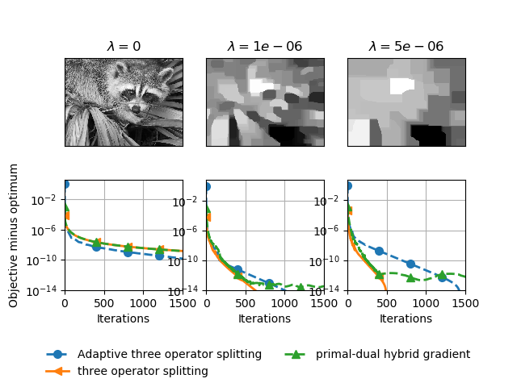

Note
Click here to download the full example code
Total variation regularization¶
Comparison of solvers with total variation regularization.
Out:
Iteration 0, beta 0
0%| | 0/2000 [00:00<?, ?it/s]
TOS: 0%| | 0/2000 [00:00<?, ?it/s]
TOS: 0%| | 0/2000 [00:00<?, ?it/s, step_size=1.25e+5, tol=0.00527]
TOS: 0%| | 0/2000 [00:00<?, ?it/s, step_size=1.27e+5, tol=0.00385]
TOS: 0%| | 0/2000 [00:00<?, ?it/s, step_size=1.3e+5, tol=0.000659]
TOS: 0%| | 0/2000 [00:00<?, ?it/s, step_size=1.33e+5, tol=0.000115]
TOS: 0%| | 0/2000 [00:00<?, ?it/s, step_size=1.35e+5, tol=3.06e-5]
TOS: 0%| | 0/2000 [00:00<?, ?it/s, step_size=1.38e+5, tol=1.45e-5]
TOS: 0%| | 0/2000 [00:00<?, ?it/s, step_size=1.41e+5, tol=8.54e-6]
TOS: 0%| | 0/2000 [00:00<?, ?it/s, step_size=1.43e+5, tol=5.47e-6]
TOS: 0%| | 0/2000 [00:00<?, ?it/s, step_size=1.46e+5, tol=3.72e-6]
TOS: 0%| | 0/2000 [00:00<?, ?it/s, step_size=1.49e+5, tol=2.68e-6]
TOS: 0%| | 0/2000 [00:00<?, ?it/s, step_size=1.52e+5, tol=2.04e-6]
TOS: 0%| | 0/2000 [00:00<?, ?it/s, step_size=1.55e+5, tol=1.64e-6]
TOS: 0%| | 0/2000 [00:00<?, ?it/s, step_size=1.58e+5, tol=1.38e-6]
TOS: 0%| | 0/2000 [00:00<?, ?it/s, step_size=1.62e+5, tol=1.21e-6]
TOS: 0%| | 0/2000 [00:00<?, ?it/s, step_size=1.65e+5, tol=1.09e-6]
TOS: 0%| | 0/2000 [00:00<?, ?it/s, step_size=1.68e+5, tol=1.01e-6]
TOS: 0%| | 0/2000 [00:00<?, ?it/s, step_size=1.71e+5, tol=9.44e-7]
TOS: 0%| | 0/2000 [00:00<?, ?it/s, step_size=1.75e+5, tol=8.93e-7]
TOS: 0%| | 0/2000 [00:00<?, ?it/s, step_size=1.78e+5, tol=8.5e-7]
TOS: 0%| | 0/2000 [00:00<?, ?it/s, step_size=1.82e+5, tol=8.13e-7]
TOS: 0%| | 0/2000 [00:00<?, ?it/s, step_size=1.86e+5, tol=7.8e-7]
TOS: 0%| | 0/2000 [00:00<?, ?it/s, step_size=1.89e+5, tol=7.5e-7]
TOS: 0%| | 0/2000 [00:00<?, ?it/s, step_size=1.93e+5, tol=7.21e-7]
TOS: 0%| | 0/2000 [00:00<?, ?it/s, step_size=1.97e+5, tol=6.95e-7]
TOS: 0%| | 0/2000 [00:00<?, ?it/s, step_size=2.01e+5, tol=6.69e-7]
TOS: 1%|1 | 25/2000 [00:00<00:08, 246.19it/s, step_size=2.01e+5, tol=6.69e-7]
TOS: 1%|1 | 25/2000 [00:00<00:08, 246.19it/s, step_size=2.05e+5, tol=6.45e-7]
TOS: 1%|1 | 25/2000 [00:00<00:08, 246.19it/s, step_size=2.09e+5, tol=6.22e-7]
TOS: 1%|1 | 25/2000 [00:00<00:08, 246.19it/s, step_size=2.13e+5, tol=6e-7]
TOS: 1%|1 | 25/2000 [00:00<00:08, 246.19it/s, step_size=2.17e+5, tol=5.79e-7]
TOS: 1%|1 | 25/2000 [00:00<00:08, 246.19it/s, step_size=2.22e+5, tol=5.59e-7]
TOS: 1%|1 | 25/2000 [00:00<00:08, 246.19it/s, step_size=2.26e+5, tol=5.39e-7]
TOS: 1%|1 | 25/2000 [00:00<00:08, 246.19it/s, step_size=2.31e+5, tol=5.2e-7]
TOS: 1%|1 | 25/2000 [00:00<00:08, 246.19it/s, step_size=2.35e+5, tol=5.02e-7]
TOS: 1%|1 | 25/2000 [00:00<00:08, 246.19it/s, step_size=2.4e+5, tol=4.84e-7]
TOS: 1%|1 | 25/2000 [00:00<00:08, 246.19it/s, step_size=2.45e+5, tol=4.67e-7]
TOS: 1%|1 | 25/2000 [00:00<00:08, 246.19it/s, step_size=2.5e+5, tol=4.51e-7]
TOS: 1%|1 | 25/2000 [00:00<00:08, 246.19it/s, step_size=2.55e+5, tol=4.35e-7]
TOS: 1%|1 | 25/2000 [00:00<00:08, 246.19it/s, step_size=2.6e+5, tol=4.2e-7]
TOS: 1%|1 | 25/2000 [00:00<00:08, 246.19it/s, step_size=2.65e+5, tol=4.06e-7]
TOS: 1%|1 | 25/2000 [00:00<00:08, 246.19it/s, step_size=2.7e+5, tol=3.91e-7]
TOS: 1%|1 | 25/2000 [00:00<00:08, 246.19it/s, step_size=2.76e+5, tol=3.78e-7]
TOS: 1%|1 | 25/2000 [00:00<00:08, 246.19it/s, step_size=2.81e+5, tol=3.65e-7]
TOS: 1%|1 | 25/2000 [00:00<00:08, 246.19it/s, step_size=2.87e+5, tol=3.52e-7]
TOS: 1%|1 | 25/2000 [00:00<00:08, 246.19it/s, step_size=2.93e+5, tol=3.4e-7]
TOS: 1%|1 | 25/2000 [00:00<00:08, 246.19it/s, step_size=2.98e+5, tol=3.28e-7]
TOS: 1%|1 | 25/2000 [00:00<00:08, 246.19it/s, step_size=3.04e+5, tol=3.17e-7]
TOS: 1%|1 | 25/2000 [00:00<00:08, 246.19it/s, step_size=3.11e+5, tol=3.06e-7]
TOS: 1%|1 | 25/2000 [00:00<00:08, 246.19it/s, step_size=3.17e+5, tol=2.95e-7]
TOS: 1%|1 | 25/2000 [00:00<00:08, 246.19it/s, step_size=3.23e+5, tol=2.85e-7]
TOS: 1%|1 | 25/2000 [00:00<00:08, 246.19it/s, step_size=3.3e+5, tol=2.75e-7]
TOS: 2%|2 | 50/2000 [00:00<00:07, 246.31it/s, step_size=3.3e+5, tol=2.75e-7]
TOS: 2%|2 | 50/2000 [00:00<00:07, 246.31it/s, step_size=3.36e+5, tol=2.66e-7]
TOS: 2%|2 | 50/2000 [00:00<00:07, 246.31it/s, step_size=3.43e+5, tol=2.56e-7]
TOS: 2%|2 | 50/2000 [00:00<00:07, 246.31it/s, step_size=3.5e+5, tol=2.48e-7]
TOS: 2%|2 | 50/2000 [00:00<00:07, 246.31it/s, step_size=3.57e+5, tol=2.39e-7]
TOS: 2%|2 | 50/2000 [00:00<00:07, 246.31it/s, step_size=3.64e+5, tol=2.31e-7]
TOS: 2%|2 | 50/2000 [00:00<00:07, 246.31it/s, step_size=3.71e+5, tol=2.23e-7]
TOS: 2%|2 | 50/2000 [00:00<00:07, 246.31it/s, step_size=3.79e+5, tol=2.15e-7]
TOS: 2%|2 | 50/2000 [00:00<00:07, 246.31it/s, step_size=3.86e+5, tol=2.08e-7]
TOS: 2%|2 | 50/2000 [00:00<00:07, 246.31it/s, step_size=3.94e+5, tol=2.01e-7]
TOS: 2%|2 | 50/2000 [00:00<00:07, 246.31it/s, step_size=4.02e+5, tol=1.94e-7]
TOS: 2%|2 | 50/2000 [00:00<00:07, 246.31it/s, step_size=4.1e+5, tol=1.87e-7]
TOS: 2%|2 | 50/2000 [00:00<00:07, 246.31it/s, step_size=4.18e+5, tol=1.81e-7]
TOS: 2%|2 | 50/2000 [00:00<00:07, 246.31it/s, step_size=4.26e+5, tol=1.75e-7]
TOS: 2%|2 | 50/2000 [00:00<00:07, 246.31it/s, step_size=4.35e+5, tol=1.69e-7]
TOS: 2%|2 | 50/2000 [00:00<00:07, 246.31it/s, step_size=4.44e+5, tol=1.63e-7]
TOS: 2%|2 | 50/2000 [00:00<00:07, 246.31it/s, step_size=4.52e+5, tol=1.58e-7]
TOS: 2%|2 | 50/2000 [00:00<00:07, 246.31it/s, step_size=4.61e+5, tol=1.52e-7]
TOS: 2%|2 | 50/2000 [00:00<00:07, 246.31it/s, step_size=4.71e+5, tol=1.47e-7]
TOS: 2%|2 | 50/2000 [00:00<00:07, 246.31it/s, step_size=4.8e+5, tol=1.42e-7]
TOS: 2%|2 | 50/2000 [00:00<00:07, 246.31it/s, step_size=4.9e+5, tol=1.38e-7]
TOS: 2%|2 | 50/2000 [00:00<00:07, 246.31it/s, step_size=5e+5, tol=1.33e-7]
TOS: 2%|2 | 50/2000 [00:00<00:07, 246.31it/s, step_size=5.1e+5, tol=1.29e-7]
TOS: 2%|2 | 50/2000 [00:00<00:07, 246.31it/s, step_size=5.2e+5, tol=1.24e-7]
TOS: 2%|2 | 50/2000 [00:00<00:07, 246.31it/s, step_size=5.3e+5, tol=1.2e-7]
TOS: 2%|2 | 50/2000 [00:00<00:07, 246.31it/s, step_size=5.41e+5, tol=1.16e-7]
TOS: 4%|3 | 75/2000 [00:00<00:07, 247.18it/s, step_size=5.41e+5, tol=1.16e-7]
TOS: 4%|3 | 75/2000 [00:00<00:07, 247.18it/s, step_size=5.52e+5, tol=1.13e-7]
TOS: 4%|3 | 75/2000 [00:00<00:07, 247.18it/s, step_size=5.63e+5, tol=1.09e-7]
TOS: 4%|3 | 75/2000 [00:00<00:07, 247.18it/s, step_size=5.74e+5, tol=1.05e-7]
TOS: 4%|3 | 75/2000 [00:00<00:07, 247.18it/s, step_size=5.85e+5, tol=1.02e-7]
TOS: 4%|3 | 75/2000 [00:00<00:07, 247.18it/s, step_size=5.97e+5, tol=9.87e-8]
TOS: 4%|3 | 75/2000 [00:00<00:07, 247.18it/s, step_size=6.09e+5, tol=9.55e-8]
TOS: 4%|3 | 75/2000 [00:00<00:07, 247.18it/s, step_size=6.21e+5, tol=9.25e-8]
TOS: 4%|3 | 75/2000 [00:00<00:07, 247.18it/s, step_size=6.34e+5, tol=8.95e-8]
TOS: 4%|3 | 75/2000 [00:00<00:07, 247.18it/s, step_size=6.46e+5, tol=8.67e-8]
TOS: 4%|3 | 75/2000 [00:00<00:07, 247.18it/s, step_size=6.59e+5, tol=8.4e-8]
TOS: 4%|3 | 75/2000 [00:00<00:07, 247.18it/s, step_size=6.72e+5, tol=8.26e-8]
TOS: 4%|3 | 75/2000 [00:00<00:07, 247.18it/s, step_size=4.8e+5, tol=1.34e-7]
TOS: 4%|3 | 75/2000 [00:00<00:07, 247.18it/s, step_size=1.68e+5, tol=5.58e-7]
TOS: 4%|3 | 75/2000 [00:00<00:07, 247.18it/s, step_size=1.2e+5, tol=5.59e-7]
TOS: 4%|3 | 75/2000 [00:00<00:07, 247.18it/s, step_size=1.22e+5, tol=8.63e-8]
TOS: 4%|3 | 75/2000 [00:00<00:07, 247.18it/s, step_size=1.25e+5, tol=7.41e-8]
TOS: 4%|3 | 75/2000 [00:00<00:07, 247.18it/s, step_size=1.27e+5, tol=7.32e-8]
TOS: 4%|3 | 75/2000 [00:00<00:07, 247.18it/s, step_size=1.3e+5, tol=7.27e-8]
TOS: 4%|3 | 75/2000 [00:00<00:07, 247.18it/s, step_size=1.32e+5, tol=7.23e-8]
TOS: 4%|3 | 75/2000 [00:00<00:07, 247.18it/s, step_size=1.35e+5, tol=7.19e-8]
TOS: 4%|3 | 75/2000 [00:00<00:07, 247.18it/s, step_size=1.38e+5, tol=7.15e-8]
TOS: 4%|3 | 75/2000 [00:00<00:07, 247.18it/s, step_size=1.4e+5, tol=7.11e-8]
TOS: 4%|3 | 75/2000 [00:00<00:07, 247.18it/s, step_size=1.43e+5, tol=7.06e-8]
TOS: 4%|3 | 75/2000 [00:00<00:07, 247.18it/s, step_size=1.46e+5, tol=7.02e-8]
TOS: 4%|3 | 75/2000 [00:00<00:07, 247.18it/s, step_size=1.49e+5, tol=6.98e-8]
TOS: 5%|5 | 100/2000 [00:00<00:07, 245.47it/s, step_size=1.49e+5, tol=6.98e-8]
TOS: 5%|5 | 100/2000 [00:00<00:07, 245.47it/s, step_size=1.52e+5, tol=6.93e-8]
TOS: 5%|5 | 100/2000 [00:00<00:07, 245.47it/s, step_size=1.55e+5, tol=6.89e-8]
TOS: 5%|5 | 100/2000 [00:00<00:07, 245.47it/s, step_size=1.58e+5, tol=6.84e-8]
TOS: 5%|5 | 100/2000 [00:00<00:07, 245.47it/s, step_size=1.61e+5, tol=6.8e-8]
TOS: 5%|5 | 100/2000 [00:00<00:07, 245.47it/s, step_size=1.65e+5, tol=6.75e-8]
TOS: 5%|5 | 100/2000 [00:00<00:07, 245.47it/s, step_size=1.68e+5, tol=6.7e-8]
TOS: 5%|5 | 100/2000 [00:00<00:07, 245.47it/s, step_size=1.71e+5, tol=6.66e-8]
TOS: 5%|5 | 100/2000 [00:00<00:07, 245.47it/s, step_size=1.75e+5, tol=6.61e-8]
TOS: 5%|5 | 100/2000 [00:00<00:07, 245.47it/s, step_size=1.78e+5, tol=6.56e-8]
TOS: 5%|5 | 100/2000 [00:00<00:07, 245.47it/s, step_size=1.82e+5, tol=6.52e-8]
TOS: 5%|5 | 100/2000 [00:00<00:07, 245.47it/s, step_size=1.85e+5, tol=6.47e-8]
TOS: 5%|5 | 100/2000 [00:00<00:07, 245.47it/s, step_size=1.89e+5, tol=6.42e-8]
TOS: 5%|5 | 100/2000 [00:00<00:07, 245.47it/s, step_size=1.93e+5, tol=6.37e-8]
TOS: 5%|5 | 100/2000 [00:00<00:07, 245.47it/s, step_size=1.97e+5, tol=6.32e-8]
TOS: 5%|5 | 100/2000 [00:00<00:07, 245.47it/s, step_size=2.01e+5, tol=6.27e-8]
TOS: 5%|5 | 100/2000 [00:00<00:07, 245.47it/s, step_size=2.05e+5, tol=6.22e-8]
TOS: 5%|5 | 100/2000 [00:00<00:07, 245.47it/s, step_size=2.09e+5, tol=6.17e-8]
TOS: 5%|5 | 100/2000 [00:00<00:07, 245.47it/s, step_size=2.13e+5, tol=6.12e-8]
TOS: 5%|5 | 100/2000 [00:00<00:07, 245.47it/s, step_size=2.17e+5, tol=6.07e-8]
TOS: 5%|5 | 100/2000 [00:00<00:07, 245.47it/s, step_size=2.22e+5, tol=6.02e-8]
TOS: 5%|5 | 100/2000 [00:00<00:07, 245.47it/s, step_size=2.26e+5, tol=5.97e-8]
TOS: 6%|6 | 121/2000 [00:00<00:08, 233.55it/s, step_size=2.26e+5, tol=5.97e-8]
TOS: 6%|6 | 121/2000 [00:00<00:08, 233.55it/s, step_size=2.3e+5, tol=5.92e-8]
TOS: 6%|6 | 121/2000 [00:00<00:08, 233.55it/s, step_size=2.35e+5, tol=5.86e-8]
TOS: 6%|6 | 121/2000 [00:00<00:08, 233.55it/s, step_size=2.4e+5, tol=5.81e-8]
TOS: 6%|6 | 121/2000 [00:00<00:08, 233.55it/s, step_size=2.45e+5, tol=5.76e-8]
TOS: 6%|6 | 121/2000 [00:00<00:08, 233.55it/s, step_size=2.49e+5, tol=5.71e-8]
TOS: 6%|6 | 121/2000 [00:00<00:08, 233.55it/s, step_size=2.54e+5, tol=5.65e-8]
TOS: 6%|6 | 121/2000 [00:00<00:08, 233.55it/s, step_size=2.6e+5, tol=5.6e-8]
TOS: 6%|6 | 121/2000 [00:00<00:08, 233.55it/s, step_size=2.65e+5, tol=5.55e-8]
TOS: 6%|6 | 121/2000 [00:00<00:08, 233.55it/s, step_size=2.7e+5, tol=5.49e-8]
TOS: 6%|6 | 121/2000 [00:00<00:08, 233.55it/s, step_size=2.75e+5, tol=5.44e-8]
TOS: 6%|6 | 121/2000 [00:00<00:08, 233.55it/s, step_size=2.81e+5, tol=5.39e-8]
TOS: 6%|6 | 121/2000 [00:00<00:08, 233.55it/s, step_size=2.87e+5, tol=5.33e-8]
TOS: 6%|6 | 121/2000 [00:00<00:08, 233.55it/s, step_size=2.92e+5, tol=5.28e-8]
TOS: 6%|6 | 121/2000 [00:00<00:08, 233.55it/s, step_size=2.98e+5, tol=5.22e-8]
TOS: 6%|6 | 121/2000 [00:00<00:08, 233.55it/s, step_size=3.04e+5, tol=5.17e-8]
TOS: 6%|6 | 121/2000 [00:00<00:08, 233.55it/s, step_size=3.1e+5, tol=5.12e-8]
TOS: 6%|6 | 121/2000 [00:00<00:08, 233.55it/s, step_size=3.16e+5, tol=5.06e-8]
TOS: 6%|6 | 121/2000 [00:00<00:08, 233.55it/s, step_size=3.23e+5, tol=5.01e-8]
TOS: 6%|6 | 121/2000 [00:00<00:08, 233.55it/s, step_size=3.29e+5, tol=4.95e-8]
TOS: 6%|6 | 121/2000 [00:00<00:08, 233.55it/s, step_size=3.36e+5, tol=4.9e-8]
TOS: 6%|6 | 121/2000 [00:00<00:08, 233.55it/s, step_size=3.42e+5, tol=4.84e-8]
TOS: 6%|6 | 121/2000 [00:00<00:08, 233.55it/s, step_size=3.49e+5, tol=4.79e-8]
TOS: 6%|6 | 121/2000 [00:00<00:08, 233.55it/s, step_size=3.56e+5, tol=4.73e-8]
TOS: 6%|6 | 121/2000 [00:00<00:08, 233.55it/s, step_size=3.63e+5, tol=4.68e-8]
TOS: 6%|6 | 121/2000 [00:00<00:08, 233.55it/s, step_size=3.71e+5, tol=4.62e-8]
TOS: 7%|7 | 146/2000 [00:00<00:07, 237.94it/s, step_size=3.71e+5, tol=4.62e-8]
TOS: 7%|7 | 146/2000 [00:00<00:07, 237.94it/s, step_size=3.78e+5, tol=4.57e-8]
TOS: 7%|7 | 146/2000 [00:00<00:07, 237.94it/s, step_size=3.86e+5, tol=4.51e-8]
TOS: 7%|7 | 146/2000 [00:00<00:07, 237.94it/s, step_size=3.93e+5, tol=4.45e-8]
TOS: 7%|7 | 146/2000 [00:00<00:07, 237.94it/s, step_size=4.01e+5, tol=4.4e-8]
TOS: 7%|7 | 146/2000 [00:00<00:07, 237.94it/s, step_size=4.09e+5, tol=4.34e-8]
TOS: 7%|7 | 146/2000 [00:00<00:07, 237.94it/s, step_size=4.17e+5, tol=4.29e-8]
TOS: 7%|7 | 146/2000 [00:00<00:07, 237.94it/s, step_size=4.26e+5, tol=4.23e-8]
TOS: 7%|7 | 146/2000 [00:00<00:07, 237.94it/s, step_size=4.34e+5, tol=4.18e-8]
TOS: 7%|7 | 146/2000 [00:00<00:07, 237.94it/s, step_size=4.43e+5, tol=4.12e-8]
TOS: 7%|7 | 146/2000 [00:00<00:07, 237.94it/s, step_size=4.52e+5, tol=4.07e-8]
TOS: 7%|7 | 146/2000 [00:00<00:07, 237.94it/s, step_size=4.61e+5, tol=4.02e-8]
TOS: 7%|7 | 146/2000 [00:00<00:07, 237.94it/s, step_size=4.7e+5, tol=3.96e-8]
TOS: 7%|7 | 146/2000 [00:00<00:07, 237.94it/s, step_size=4.8e+5, tol=3.91e-8]
TOS: 7%|7 | 146/2000 [00:00<00:07, 237.94it/s, step_size=4.89e+5, tol=3.85e-8]
TOS: 7%|7 | 146/2000 [00:00<00:07, 237.94it/s, step_size=4.99e+5, tol=3.8e-8]
TOS: 7%|7 | 146/2000 [00:00<00:07, 237.94it/s, step_size=5.09e+5, tol=3.75e-8]
TOS: 7%|7 | 146/2000 [00:00<00:07, 237.94it/s, step_size=5.19e+5, tol=3.69e-8]
TOS: 7%|7 | 146/2000 [00:00<00:07, 237.94it/s, step_size=5.29e+5, tol=3.64e-8]
TOS: 7%|7 | 146/2000 [00:00<00:07, 237.94it/s, step_size=5.4e+5, tol=3.59e-8]
TOS: 7%|7 | 146/2000 [00:00<00:07, 237.94it/s, step_size=5.51e+5, tol=3.53e-8]
TOS: 7%|7 | 146/2000 [00:00<00:07, 237.94it/s, step_size=5.62e+5, tol=3.48e-8]
TOS: 7%|7 | 146/2000 [00:00<00:07, 237.94it/s, step_size=5.73e+5, tol=3.43e-8]
TOS: 8%|8 | 168/2000 [00:00<00:08, 221.24it/s, step_size=5.73e+5, tol=3.43e-8]
TOS: 8%|8 | 168/2000 [00:00<00:08, 221.24it/s, step_size=5.85e+5, tol=3.38e-8]
TOS: 8%|8 | 168/2000 [00:00<00:08, 221.24it/s, step_size=5.96e+5, tol=3.32e-8]
TOS: 8%|8 | 168/2000 [00:00<00:08, 221.24it/s, step_size=6.08e+5, tol=3.27e-8]
TOS: 8%|8 | 168/2000 [00:00<00:08, 221.24it/s, step_size=6.2e+5, tol=3.22e-8]
TOS: 8%|8 | 168/2000 [00:00<00:08, 221.24it/s, step_size=6.33e+5, tol=3.17e-8]
TOS: 8%|8 | 168/2000 [00:00<00:08, 221.24it/s, step_size=6.45e+5, tol=3.12e-8]
TOS: 8%|8 | 168/2000 [00:00<00:08, 221.24it/s, step_size=6.58e+5, tol=3.11e-8]
TOS: 8%|8 | 168/2000 [00:00<00:08, 221.24it/s, step_size=4.7e+5, tol=4.92e-8]
TOS: 8%|8 | 168/2000 [00:00<00:08, 221.24it/s, step_size=1.64e+5, tol=1.84e-7]
TOS: 8%|8 | 168/2000 [00:00<00:08, 221.24it/s, step_size=1.17e+5, tol=1.73e-7]
TOS: 8%|8 | 168/2000 [00:00<00:08, 221.24it/s, step_size=1.2e+5, tol=3.11e-8]
TOS: 8%|8 | 168/2000 [00:00<00:08, 221.24it/s, step_size=1.22e+5, tol=2.93e-8]
TOS: 8%|8 | 168/2000 [00:00<00:08, 221.24it/s, step_size=1.25e+5, tol=2.91e-8]
TOS: 8%|8 | 168/2000 [00:00<00:08, 221.24it/s, step_size=1.27e+5, tol=2.9e-8]
TOS: 8%|8 | 168/2000 [00:00<00:08, 221.24it/s, step_size=1.3e+5, tol=2.89e-8]
TOS: 8%|8 | 168/2000 [00:00<00:08, 221.24it/s, step_size=1.32e+5, tol=2.88e-8]
TOS: 8%|8 | 168/2000 [00:00<00:08, 221.24it/s, step_size=1.35e+5, tol=2.87e-8]
TOS: 8%|8 | 168/2000 [00:00<00:08, 221.24it/s, step_size=1.38e+5, tol=2.86e-8]
TOS: 8%|8 | 168/2000 [00:00<00:08, 221.24it/s, step_size=1.4e+5, tol=2.85e-8]
TOS: 8%|8 | 168/2000 [00:00<00:08, 221.24it/s, step_size=1.43e+5, tol=2.84e-8]
TOS: 8%|8 | 168/2000 [00:00<00:08, 221.24it/s, step_size=1.46e+5, tol=2.83e-8]
TOS: 8%|8 | 168/2000 [00:00<00:08, 221.24it/s, step_size=1.49e+5, tol=2.82e-8]
TOS: 8%|8 | 168/2000 [00:00<00:08, 221.24it/s, step_size=1.52e+5, tol=2.81e-8]
TOS: 8%|8 | 168/2000 [00:00<00:08, 221.24it/s, step_size=1.55e+5, tol=2.8e-8]
TOS: 10%|9 | 192/2000 [00:00<00:08, 225.90it/s, step_size=1.55e+5, tol=2.8e-8]
TOS: 10%|9 | 192/2000 [00:00<00:08, 225.90it/s, step_size=1.58e+5, tol=2.79e-8]
TOS: 10%|9 | 192/2000 [00:00<00:08, 225.90it/s, step_size=1.61e+5, tol=2.78e-8]
TOS: 10%|9 | 192/2000 [00:00<00:08, 225.90it/s, step_size=1.64e+5, tol=2.77e-8]
TOS: 10%|9 | 192/2000 [00:00<00:08, 225.90it/s, step_size=1.68e+5, tol=2.76e-8]
TOS: 10%|9 | 192/2000 [00:00<00:08, 225.90it/s, step_size=1.71e+5, tol=2.75e-8]
TOS: 10%|9 | 192/2000 [00:00<00:08, 225.90it/s, step_size=1.74e+5, tol=2.74e-8]
TOS: 10%|9 | 192/2000 [00:00<00:08, 225.90it/s, step_size=1.78e+5, tol=2.73e-8]
TOS: 10%|9 | 192/2000 [00:00<00:08, 225.90it/s, step_size=1.82e+5, tol=2.72e-8]
TOS: 10%|9 | 192/2000 [00:00<00:08, 225.90it/s, step_size=1.85e+5, tol=2.71e-8]
TOS: 10%|9 | 192/2000 [00:00<00:08, 225.90it/s, step_size=1.89e+5, tol=2.7e-8]
TOS: 10%|9 | 192/2000 [00:00<00:08, 225.90it/s, step_size=1.93e+5, tol=2.69e-8]
TOS: 10%|9 | 192/2000 [00:00<00:08, 225.90it/s, step_size=1.96e+5, tol=2.67e-8]
TOS: 10%|9 | 192/2000 [00:00<00:08, 225.90it/s, step_size=2e+5, tol=2.66e-8]
TOS: 10%|9 | 192/2000 [00:00<00:08, 225.90it/s, step_size=2.04e+5, tol=2.65e-8]
TOS: 10%|9 | 192/2000 [00:00<00:08, 225.90it/s, step_size=2.09e+5, tol=2.64e-8]
TOS: 10%|9 | 192/2000 [00:00<00:08, 225.90it/s, step_size=2.13e+5, tol=2.63e-8]
TOS: 10%|9 | 192/2000 [00:00<00:08, 225.90it/s, step_size=2.17e+5, tol=2.61e-8]
TOS: 10%|9 | 192/2000 [00:00<00:08, 225.90it/s, step_size=2.21e+5, tol=2.6e-8]
TOS: 10%|9 | 192/2000 [00:00<00:08, 225.90it/s, step_size=2.26e+5, tol=2.59e-8]
TOS: 10%|9 | 192/2000 [00:00<00:08, 225.90it/s, step_size=2.3e+5, tol=2.57e-8]
TOS: 10%|9 | 192/2000 [00:00<00:08, 225.90it/s, step_size=2.35e+5, tol=2.56e-8]
TOS: 10%|9 | 192/2000 [00:00<00:08, 225.90it/s, step_size=2.4e+5, tol=2.55e-8]
TOS: 10%|9 | 192/2000 [00:00<00:08, 225.90it/s, step_size=2.44e+5, tol=2.54e-8]
TOS: 10%|9 | 192/2000 [00:00<00:08, 225.90it/s, step_size=2.49e+5, tol=2.52e-8]
TOS: 10%|9 | 192/2000 [00:00<00:08, 225.90it/s, step_size=2.54e+5, tol=2.51e-8]
TOS: 11%|# | 217/2000 [00:00<00:07, 230.47it/s, step_size=2.54e+5, tol=2.51e-8]
TOS: 11%|# | 217/2000 [00:00<00:07, 230.47it/s, step_size=2.59e+5, tol=2.49e-8]
TOS: 11%|# | 217/2000 [00:00<00:07, 230.47it/s, step_size=2.64e+5, tol=2.48e-8]
TOS: 11%|# | 217/2000 [00:00<00:07, 230.47it/s, step_size=2.7e+5, tol=2.47e-8]
TOS: 11%|# | 217/2000 [00:00<00:07, 230.47it/s, step_size=2.75e+5, tol=2.45e-8]
TOS: 11%|# | 217/2000 [00:00<00:07, 230.47it/s, step_size=2.81e+5, tol=2.44e-8]
TOS: 11%|# | 217/2000 [00:00<00:07, 230.47it/s, step_size=2.86e+5, tol=2.42e-8]
TOS: 11%|# | 217/2000 [00:00<00:07, 230.47it/s, step_size=2.92e+5, tol=2.41e-8]
TOS: 11%|# | 217/2000 [00:00<00:07, 230.47it/s, step_size=2.98e+5, tol=2.39e-8]
TOS: 11%|# | 217/2000 [00:00<00:07, 230.47it/s, step_size=3.04e+5, tol=2.38e-8]
TOS: 11%|# | 217/2000 [00:00<00:07, 230.47it/s, step_size=3.1e+5, tol=2.36e-8]
TOS: 11%|# | 217/2000 [00:00<00:07, 230.47it/s, step_size=3.16e+5, tol=2.35e-8]
TOS: 11%|# | 217/2000 [00:00<00:07, 230.47it/s, step_size=3.22e+5, tol=2.33e-8]
TOS: 11%|# | 217/2000 [00:00<00:07, 230.47it/s, step_size=3.29e+5, tol=2.32e-8]
TOS: 11%|# | 217/2000 [00:01<00:07, 230.47it/s, step_size=3.35e+5, tol=2.3e-8]
TOS: 11%|# | 217/2000 [00:01<00:07, 230.47it/s, step_size=3.42e+5, tol=2.29e-8]
TOS: 11%|# | 217/2000 [00:01<00:07, 230.47it/s, step_size=3.49e+5, tol=2.27e-8]
TOS: 11%|# | 217/2000 [00:01<00:07, 230.47it/s, step_size=3.56e+5, tol=2.25e-8]
TOS: 11%|# | 217/2000 [00:01<00:07, 230.47it/s, step_size=3.63e+5, tol=2.24e-8]
TOS: 11%|# | 217/2000 [00:01<00:07, 230.47it/s, step_size=3.7e+5, tol=2.22e-8]
TOS: 11%|# | 217/2000 [00:01<00:07, 230.47it/s, step_size=3.78e+5, tol=2.21e-8]
TOS: 11%|# | 217/2000 [00:01<00:07, 230.47it/s, step_size=3.85e+5, tol=2.19e-8]
TOS: 11%|# | 217/2000 [00:01<00:07, 230.47it/s, step_size=3.93e+5, tol=2.17e-8]
TOS: 11%|# | 217/2000 [00:01<00:07, 230.47it/s, step_size=4.01e+5, tol=2.16e-8]
TOS: 12%|#2 | 240/2000 [00:01<00:07, 224.33it/s, step_size=4.01e+5, tol=2.16e-8]
TOS: 12%|#2 | 240/2000 [00:01<00:07, 224.33it/s, step_size=4.09e+5, tol=2.14e-8]
TOS: 12%|#2 | 240/2000 [00:01<00:07, 224.33it/s, step_size=4.17e+5, tol=2.12e-8]
TOS: 12%|#2 | 240/2000 [00:01<00:07, 224.33it/s, step_size=4.25e+5, tol=2.1e-8]
TOS: 12%|#2 | 240/2000 [00:01<00:07, 224.33it/s, step_size=4.34e+5, tol=2.09e-8]
TOS: 12%|#2 | 240/2000 [00:01<00:07, 224.33it/s, step_size=4.43e+5, tol=2.07e-8]
TOS: 12%|#2 | 240/2000 [00:01<00:07, 224.33it/s, step_size=4.51e+5, tol=2.05e-8]
TOS: 12%|#2 | 240/2000 [00:01<00:07, 224.33it/s, step_size=4.6e+5, tol=2.03e-8]
TOS: 12%|#2 | 240/2000 [00:01<00:07, 224.33it/s, step_size=4.7e+5, tol=2.02e-8]
TOS: 12%|#2 | 240/2000 [00:01<00:07, 224.33it/s, step_size=4.79e+5, tol=2e-8]
TOS: 12%|#2 | 240/2000 [00:01<00:07, 224.33it/s, step_size=4.89e+5, tol=1.98e-8]
TOS: 12%|#2 | 240/2000 [00:01<00:07, 224.33it/s, step_size=4.98e+5, tol=1.96e-8]
TOS: 12%|#2 | 240/2000 [00:01<00:07, 224.33it/s, step_size=5.08e+5, tol=1.95e-8]
TOS: 12%|#2 | 240/2000 [00:01<00:07, 224.33it/s, step_size=5.19e+5, tol=1.93e-8]
TOS: 12%|#2 | 240/2000 [00:01<00:07, 224.33it/s, step_size=5.29e+5, tol=1.91e-8]
TOS: 12%|#2 | 240/2000 [00:01<00:07, 224.33it/s, step_size=5.39e+5, tol=1.89e-8]
TOS: 12%|#2 | 240/2000 [00:01<00:07, 224.33it/s, step_size=5.5e+5, tol=1.87e-8]
TOS: 12%|#2 | 240/2000 [00:01<00:07, 224.33it/s, step_size=5.61e+5, tol=1.85e-8]
TOS: 12%|#2 | 240/2000 [00:01<00:07, 224.33it/s, step_size=5.72e+5, tol=1.84e-8]
TOS: 12%|#2 | 240/2000 [00:01<00:07, 224.33it/s, step_size=5.84e+5, tol=1.82e-8]
TOS: 12%|#2 | 240/2000 [00:01<00:07, 224.33it/s, step_size=5.96e+5, tol=1.8e-8]
TOS: 12%|#2 | 240/2000 [00:01<00:07, 224.33it/s, step_size=6.08e+5, tol=1.78e-8]
TOS: 12%|#2 | 240/2000 [00:01<00:07, 224.33it/s, step_size=6.2e+5, tol=1.76e-8]
TOS: 12%|#2 | 240/2000 [00:01<00:07, 224.33it/s, step_size=6.32e+5, tol=1.74e-8]
TOS: 12%|#2 | 240/2000 [00:01<00:07, 224.33it/s, step_size=6.45e+5, tol=1.73e-8]
TOS: 12%|#2 | 240/2000 [00:01<00:07, 224.33it/s, step_size=6.58e+5, tol=1.8e-8]
TOS: 13%|#3 | 265/2000 [00:01<00:07, 230.33it/s, step_size=6.58e+5, tol=1.8e-8]
TOS: 13%|#3 | 265/2000 [00:01<00:07, 230.33it/s, step_size=2.3e+5, tol=7.33e-8]
TOS: 13%|#3 | 265/2000 [00:01<00:07, 230.33it/s, step_size=1.15e+5, tol=1.33e-7]
TOS: 13%|#3 | 265/2000 [00:01<00:07, 230.33it/s, step_size=1.17e+5, tol=3.73e-8]
TOS: 13%|#3 | 265/2000 [00:01<00:07, 230.33it/s, step_size=1.2e+5, tol=1.83e-8]
TOS: 13%|#3 | 265/2000 [00:01<00:07, 230.33it/s, step_size=1.22e+5, tol=1.66e-8]
TOS: 13%|#3 | 265/2000 [00:01<00:07, 230.33it/s, step_size=1.24e+5, tol=1.65e-8]
TOS: 13%|#3 | 265/2000 [00:01<00:07, 230.33it/s, step_size=1.27e+5, tol=1.65e-8]
TOS: 13%|#3 | 265/2000 [00:01<00:07, 230.33it/s, step_size=1.29e+5, tol=1.65e-8]
TOS: 13%|#3 | 265/2000 [00:01<00:07, 230.33it/s, step_size=1.32e+5, tol=1.64e-8]
TOS: 13%|#3 | 265/2000 [00:01<00:07, 230.33it/s, step_size=1.35e+5, tol=1.64e-8]
TOS: 13%|#3 | 265/2000 [00:01<00:07, 230.33it/s, step_size=1.37e+5, tol=1.64e-8]
TOS: 13%|#3 | 265/2000 [00:01<00:07, 230.33it/s, step_size=1.4e+5, tol=1.63e-8]
TOS: 13%|#3 | 265/2000 [00:01<00:07, 230.33it/s, step_size=1.43e+5, tol=1.63e-8]
TOS: 13%|#3 | 265/2000 [00:01<00:07, 230.33it/s, step_size=1.46e+5, tol=1.62e-8]
TOS: 13%|#3 | 265/2000 [00:01<00:07, 230.33it/s, step_size=1.49e+5, tol=1.62e-8]
TOS: 13%|#3 | 265/2000 [00:01<00:07, 230.33it/s, step_size=1.52e+5, tol=1.62e-8]
TOS: 13%|#3 | 265/2000 [00:01<00:07, 230.33it/s, step_size=1.55e+5, tol=1.61e-8]
TOS: 13%|#3 | 265/2000 [00:01<00:07, 230.33it/s, step_size=1.58e+5, tol=1.61e-8]
TOS: 13%|#3 | 265/2000 [00:01<00:07, 230.33it/s, step_size=1.61e+5, tol=1.6e-8]
TOS: 13%|#3 | 265/2000 [00:01<00:07, 230.33it/s, step_size=1.64e+5, tol=1.6e-8]
TOS: 13%|#3 | 265/2000 [00:01<00:07, 230.33it/s, step_size=1.68e+5, tol=1.6e-8]
TOS: 13%|#3 | 265/2000 [00:01<00:07, 230.33it/s, step_size=1.71e+5, tol=1.59e-8]
TOS: 13%|#3 | 265/2000 [00:01<00:07, 230.33it/s, step_size=1.74e+5, tol=1.59e-8]
TOS: 14%|#4 | 288/2000 [00:01<00:07, 229.16it/s, step_size=1.74e+5, tol=1.59e-8]
TOS: 14%|#4 | 288/2000 [00:01<00:07, 229.16it/s, step_size=1.78e+5, tol=1.58e-8]
TOS: 14%|#4 | 288/2000 [00:01<00:07, 229.16it/s, step_size=1.81e+5, tol=1.58e-8]
TOS: 14%|#4 | 288/2000 [00:01<00:07, 229.16it/s, step_size=1.85e+5, tol=1.57e-8]
TOS: 14%|#4 | 288/2000 [00:01<00:07, 229.16it/s, step_size=1.89e+5, tol=1.57e-8]
TOS: 14%|#4 | 288/2000 [00:01<00:07, 229.16it/s, step_size=1.92e+5, tol=1.56e-8]
TOS: 14%|#4 | 288/2000 [00:01<00:07, 229.16it/s, step_size=1.96e+5, tol=1.56e-8]
TOS: 14%|#4 | 288/2000 [00:01<00:07, 229.16it/s, step_size=2e+5, tol=1.56e-8]
TOS: 14%|#4 | 288/2000 [00:01<00:07, 229.16it/s, step_size=2.04e+5, tol=1.55e-8]
TOS: 14%|#4 | 288/2000 [00:01<00:07, 229.16it/s, step_size=2.08e+5, tol=1.55e-8]
TOS: 14%|#4 | 288/2000 [00:01<00:07, 229.16it/s, step_size=2.12e+5, tol=1.54e-8]
TOS: 14%|#4 | 288/2000 [00:01<00:07, 229.16it/s, step_size=2.17e+5, tol=1.54e-8]
TOS: 14%|#4 | 288/2000 [00:01<00:07, 229.16it/s, step_size=2.21e+5, tol=1.53e-8]
TOS: 14%|#4 | 288/2000 [00:01<00:07, 229.16it/s, step_size=2.25e+5, tol=1.52e-8]
TOS: 14%|#4 | 288/2000 [00:01<00:07, 229.16it/s, step_size=2.3e+5, tol=1.52e-8]
TOS: 14%|#4 | 288/2000 [00:01<00:07, 229.16it/s, step_size=2.35e+5, tol=1.51e-8]
TOS: 14%|#4 | 288/2000 [00:01<00:07, 229.16it/s, step_size=2.39e+5, tol=1.51e-8]
TOS: 14%|#4 | 288/2000 [00:01<00:07, 229.16it/s, step_size=2.44e+5, tol=1.5e-8]
TOS: 14%|#4 | 288/2000 [00:01<00:07, 229.16it/s, step_size=2.49e+5, tol=1.5e-8]
TOS: 14%|#4 | 288/2000 [00:01<00:07, 229.16it/s, step_size=2.54e+5, tol=1.49e-8]
TOS: 14%|#4 | 288/2000 [00:01<00:07, 229.16it/s, step_size=2.59e+5, tol=1.49e-8]
TOS: 14%|#4 | 288/2000 [00:01<00:07, 229.16it/s, step_size=2.64e+5, tol=1.48e-8]
TOS: 14%|#4 | 288/2000 [00:01<00:07, 229.16it/s, step_size=2.69e+5, tol=1.47e-8]
TOS: 14%|#4 | 288/2000 [00:01<00:07, 229.16it/s, step_size=2.75e+5, tol=1.47e-8]
TOS: 14%|#4 | 288/2000 [00:01<00:07, 229.16it/s, step_size=2.8e+5, tol=1.46e-8]
TOS: 14%|#4 | 288/2000 [00:01<00:07, 229.16it/s, step_size=2.86e+5, tol=1.46e-8]
TOS: 16%|#5 | 313/2000 [00:01<00:07, 232.42it/s, step_size=2.86e+5, tol=1.46e-8]
TOS: 16%|#5 | 313/2000 [00:01<00:07, 232.42it/s, step_size=2.92e+5, tol=1.45e-8]
TOS: 16%|#5 | 313/2000 [00:01<00:07, 232.42it/s, step_size=2.97e+5, tol=1.44e-8]
TOS: 16%|#5 | 313/2000 [00:01<00:07, 232.42it/s, step_size=3.03e+5, tol=1.44e-8]
TOS: 16%|#5 | 313/2000 [00:01<00:07, 232.42it/s, step_size=3.09e+5, tol=1.43e-8]
TOS: 16%|#5 | 313/2000 [00:01<00:07, 232.42it/s, step_size=3.16e+5, tol=1.42e-8]
TOS: 16%|#5 | 313/2000 [00:01<00:07, 232.42it/s, step_size=3.22e+5, tol=1.42e-8]
TOS: 16%|#5 | 313/2000 [00:01<00:07, 232.42it/s, step_size=3.28e+5, tol=1.41e-8]
TOS: 16%|#5 | 313/2000 [00:01<00:07, 232.42it/s, step_size=3.35e+5, tol=1.4e-8]
TOS: 16%|#5 | 313/2000 [00:01<00:07, 232.42it/s, step_size=3.42e+5, tol=1.4e-8]
TOS: 16%|#5 | 313/2000 [00:01<00:07, 232.42it/s, step_size=3.49e+5, tol=1.39e-8]
TOS: 16%|#5 | 313/2000 [00:01<00:07, 232.42it/s, step_size=3.56e+5, tol=1.38e-8]
TOS: 16%|#5 | 313/2000 [00:01<00:07, 232.42it/s, step_size=3.63e+5, tol=1.38e-8]
TOS: 16%|#5 | 313/2000 [00:01<00:07, 232.42it/s, step_size=3.7e+5, tol=1.37e-8]
TOS: 16%|#5 | 313/2000 [00:01<00:07, 232.42it/s, step_size=3.77e+5, tol=1.36e-8]
TOS: 16%|#5 | 313/2000 [00:01<00:07, 232.42it/s, step_size=3.85e+5, tol=1.35e-8]
TOS: 16%|#5 | 313/2000 [00:01<00:07, 232.42it/s, step_size=3.93e+5, tol=1.35e-8]
TOS: 16%|#5 | 313/2000 [00:01<00:07, 232.42it/s, step_size=4e+5, tol=1.34e-8]
TOS: 16%|#5 | 313/2000 [00:01<00:07, 232.42it/s, step_size=4.08e+5, tol=1.33e-8]
TOS: 16%|#5 | 313/2000 [00:01<00:07, 232.42it/s, step_size=4.17e+5, tol=1.32e-8]
TOS: 16%|#5 | 313/2000 [00:01<00:07, 232.42it/s, step_size=4.25e+5, tol=1.32e-8]
TOS: 16%|#5 | 313/2000 [00:01<00:07, 232.42it/s, step_size=4.33e+5, tol=1.31e-8]
TOS: 16%|#5 | 313/2000 [00:01<00:07, 232.42it/s, step_size=4.42e+5, tol=1.3e-8]
TOS: 16%|#5 | 313/2000 [00:01<00:07, 232.42it/s, step_size=4.51e+5, tol=1.29e-8]
TOS: 16%|#5 | 313/2000 [00:01<00:07, 232.42it/s, step_size=4.6e+5, tol=1.28e-8]
TOS: 16%|#5 | 313/2000 [00:01<00:07, 232.42it/s, step_size=4.69e+5, tol=1.28e-8]
TOS: 17%|#6 | 338/2000 [00:01<00:07, 235.27it/s, step_size=4.69e+5, tol=1.28e-8]
TOS: 17%|#6 | 338/2000 [00:01<00:07, 235.27it/s, step_size=4.78e+5, tol=1.27e-8]
TOS: 17%|#6 | 338/2000 [00:01<00:07, 235.27it/s, step_size=4.88e+5, tol=1.26e-8]
TOS: 17%|#6 | 338/2000 [00:01<00:07, 235.27it/s, step_size=4.98e+5, tol=1.25e-8]
TOS: 17%|#6 | 338/2000 [00:01<00:07, 235.27it/s, step_size=5.08e+5, tol=1.24e-8]
TOS: 17%|#6 | 338/2000 [00:01<00:07, 235.27it/s, step_size=5.18e+5, tol=1.24e-8]
TOS: 17%|#6 | 338/2000 [00:01<00:07, 235.27it/s, step_size=5.28e+5, tol=1.23e-8]
TOS: 17%|#6 | 338/2000 [00:01<00:07, 235.27it/s, step_size=5.39e+5, tol=1.22e-8]
TOS: 17%|#6 | 338/2000 [00:01<00:07, 235.27it/s, step_size=5.5e+5, tol=1.21e-8]
TOS: 17%|#6 | 338/2000 [00:01<00:07, 235.27it/s, step_size=5.61e+5, tol=1.2e-8]
TOS: 17%|#6 | 338/2000 [00:01<00:07, 235.27it/s, step_size=5.72e+5, tol=1.19e-8]
TOS: 17%|#6 | 338/2000 [00:01<00:07, 235.27it/s, step_size=5.83e+5, tol=1.18e-8]
TOS: 17%|#6 | 338/2000 [00:01<00:07, 235.27it/s, step_size=5.95e+5, tol=1.17e-8]
TOS: 17%|#6 | 338/2000 [00:01<00:07, 235.27it/s, step_size=6.07e+5, tol=1.17e-8]
TOS: 17%|#6 | 338/2000 [00:01<00:07, 235.27it/s, step_size=6.19e+5, tol=1.16e-8]
TOS: 17%|#6 | 338/2000 [00:01<00:07, 235.27it/s, step_size=6.31e+5, tol=1.15e-8]
TOS: 17%|#6 | 338/2000 [00:01<00:07, 235.27it/s, step_size=6.44e+5, tol=1.15e-8]
TOS: 17%|#6 | 338/2000 [00:01<00:07, 235.27it/s, step_size=6.57e+5, tol=1.26e-8]
TOS: 17%|#6 | 338/2000 [00:01<00:07, 235.27it/s, step_size=1.61e+5, tol=8.9e-8]
TOS: 17%|#6 | 338/2000 [00:01<00:07, 235.27it/s, step_size=1.15e+5, tol=8.89e-8]
TOS: 17%|#6 | 338/2000 [00:01<00:07, 235.27it/s, step_size=1.17e+5, tol=1.19e-8]
TOS: 17%|#6 | 338/2000 [00:01<00:07, 235.27it/s, step_size=1.19e+5, tol=1.11e-8]
TOS: 17%|#6 | 338/2000 [00:01<00:07, 235.27it/s, step_size=1.22e+5, tol=1.1e-8]
TOS: 17%|#6 | 338/2000 [00:01<00:07, 235.27it/s, step_size=1.24e+5, tol=1.1e-8]
TOS: 17%|#6 | 338/2000 [00:01<00:07, 235.27it/s, step_size=1.27e+5, tol=1.1e-8]
TOS: 18%|#8 | 362/2000 [00:01<00:07, 227.50it/s, step_size=1.27e+5, tol=1.1e-8]
TOS: 18%|#8 | 362/2000 [00:01<00:07, 227.50it/s, step_size=1.29e+5, tol=1.1e-8]
TOS: 18%|#8 | 362/2000 [00:01<00:07, 227.50it/s, step_size=1.32e+5, tol=1.1e-8]
TOS: 18%|#8 | 362/2000 [00:01<00:07, 227.50it/s, step_size=1.35e+5, tol=1.1e-8]
TOS: 18%|#8 | 362/2000 [00:01<00:07, 227.50it/s, step_size=1.37e+5, tol=1.09e-8]
TOS: 18%|#8 | 362/2000 [00:01<00:07, 227.50it/s, step_size=1.4e+5, tol=1.09e-8]
TOS: 18%|#8 | 362/2000 [00:01<00:07, 227.50it/s, step_size=1.43e+5, tol=1.09e-8]
TOS: 18%|#8 | 362/2000 [00:01<00:07, 227.50it/s, step_size=1.46e+5, tol=1.09e-8]
TOS: 18%|#8 | 362/2000 [00:01<00:07, 227.50it/s, step_size=1.49e+5, tol=1.09e-8]
TOS: 18%|#8 | 362/2000 [00:01<00:07, 227.50it/s, step_size=1.52e+5, tol=1.08e-8]
TOS: 18%|#8 | 362/2000 [00:01<00:07, 227.50it/s, step_size=1.55e+5, tol=1.08e-8]
TOS: 18%|#8 | 362/2000 [00:01<00:07, 227.50it/s, step_size=1.58e+5, tol=1.08e-8]
TOS: 18%|#8 | 362/2000 [00:01<00:07, 227.50it/s, step_size=1.61e+5, tol=1.08e-8]
TOS: 18%|#8 | 362/2000 [00:01<00:07, 227.50it/s, step_size=1.64e+5, tol=1.08e-8]
TOS: 18%|#8 | 362/2000 [00:01<00:07, 227.50it/s, step_size=1.67e+5, tol=1.07e-8]
TOS: 18%|#8 | 362/2000 [00:01<00:07, 227.50it/s, step_size=1.71e+5, tol=1.07e-8]
TOS: 18%|#8 | 362/2000 [00:01<00:07, 227.50it/s, step_size=1.74e+5, tol=1.07e-8]
TOS: 18%|#8 | 362/2000 [00:01<00:07, 227.50it/s, step_size=1.78e+5, tol=1.07e-8]
TOS: 18%|#8 | 362/2000 [00:01<00:07, 227.50it/s, step_size=1.81e+5, tol=1.07e-8]
TOS: 18%|#8 | 362/2000 [00:01<00:07, 227.50it/s, step_size=1.85e+5, tol=1.06e-8]
TOS: 18%|#8 | 362/2000 [00:01<00:07, 227.50it/s, step_size=1.88e+5, tol=1.06e-8]
TOS: 18%|#8 | 362/2000 [00:01<00:07, 227.50it/s, step_size=1.92e+5, tol=1.06e-8]
TOS: 18%|#8 | 362/2000 [00:01<00:07, 227.50it/s, step_size=1.96e+5, tol=1.06e-8]
TOS: 18%|#8 | 362/2000 [00:01<00:07, 227.50it/s, step_size=2e+5, tol=1.05e-8]
TOS: 18%|#8 | 362/2000 [00:01<00:07, 227.50it/s, step_size=2.04e+5, tol=1.05e-8]
TOS: 18%|#8 | 362/2000 [00:01<00:07, 227.50it/s, step_size=2.08e+5, tol=1.05e-8]
TOS: 19%|#9 | 387/2000 [00:01<00:06, 232.16it/s, step_size=2.08e+5, tol=1.05e-8]
TOS: 19%|#9 | 387/2000 [00:01<00:06, 232.16it/s, step_size=2.12e+5, tol=1.05e-8]
TOS: 19%|#9 | 387/2000 [00:01<00:06, 232.16it/s, step_size=2.16e+5, tol=1.04e-8]
TOS: 19%|#9 | 387/2000 [00:01<00:06, 232.16it/s, step_size=2.21e+5, tol=1.04e-8]
TOS: 19%|#9 | 387/2000 [00:01<00:06, 232.16it/s, step_size=2.25e+5, tol=1.04e-8]
TOS: 19%|#9 | 387/2000 [00:01<00:06, 232.16it/s, step_size=2.3e+5, tol=1.03e-8]
TOS: 19%|#9 | 387/2000 [00:01<00:06, 232.16it/s, step_size=2.34e+5, tol=1.03e-8]
TOS: 19%|#9 | 387/2000 [00:01<00:06, 232.16it/s, step_size=2.39e+5, tol=1.03e-8]
TOS: 19%|#9 | 387/2000 [00:01<00:06, 232.16it/s, step_size=2.44e+5, tol=1.03e-8]
TOS: 19%|#9 | 387/2000 [00:01<00:06, 232.16it/s, step_size=2.49e+5, tol=1.02e-8]
TOS: 19%|#9 | 387/2000 [00:01<00:06, 232.16it/s, step_size=2.54e+5, tol=1.02e-8]
TOS: 19%|#9 | 387/2000 [00:01<00:06, 232.16it/s, step_size=2.59e+5, tol=1.02e-8]
TOS: 19%|#9 | 387/2000 [00:01<00:06, 232.16it/s, step_size=2.64e+5, tol=1.01e-8]
TOS: 19%|#9 | 387/2000 [00:01<00:06, 232.16it/s, step_size=2.69e+5, tol=1.01e-8]
TOS: 19%|#9 | 387/2000 [00:01<00:06, 232.16it/s, step_size=2.75e+5, tol=1.01e-8]
TOS: 19%|#9 | 387/2000 [00:01<00:06, 232.16it/s, step_size=2.8e+5, tol=1e-8]
TOS: 19%|#9 | 387/2000 [00:01<00:06, 232.16it/s, step_size=2.86e+5, tol=1e-8]
TOS: 19%|#9 | 387/2000 [00:01<00:06, 232.16it/s, step_size=2.91e+5, tol=9.98e-9]
TOS: 19%|#9 | 387/2000 [00:01<00:06, 232.16it/s, step_size=2.97e+5, tol=9.95e-9]
TOS: 19%|#9 | 387/2000 [00:01<00:06, 232.16it/s, step_size=3.03e+5, tol=9.92e-9]
TOS: 19%|#9 | 387/2000 [00:01<00:06, 232.16it/s, step_size=3.09e+5, tol=9.88e-9]
TOS: 19%|#9 | 387/2000 [00:01<00:06, 232.16it/s, step_size=3.15e+5, tol=9.85e-9]
TOS: 19%|#9 | 387/2000 [00:01<00:06, 232.16it/s, step_size=3.22e+5, tol=9.81e-9]
TOS: 19%|#9 | 387/2000 [00:01<00:06, 232.16it/s, step_size=3.28e+5, tol=9.78e-9]
TOS: 19%|#9 | 387/2000 [00:01<00:06, 232.16it/s, step_size=3.35e+5, tol=9.74e-9]
TOS: 21%|## | 411/2000 [00:01<00:07, 226.75it/s, step_size=3.35e+5, tol=9.74e-9]
TOS: 21%|## | 411/2000 [00:01<00:07, 226.75it/s, step_size=3.41e+5, tol=9.7e-9]
TOS: 21%|## | 411/2000 [00:01<00:07, 226.75it/s, step_size=3.48e+5, tol=9.67e-9]
TOS: 21%|## | 411/2000 [00:01<00:07, 226.75it/s, step_size=3.55e+5, tol=9.63e-9]
TOS: 21%|## | 411/2000 [00:01<00:07, 226.75it/s, step_size=3.62e+5, tol=9.59e-9]
TOS: 21%|## | 411/2000 [00:01<00:07, 226.75it/s, step_size=3.69e+5, tol=9.55e-9]
TOS: 21%|## | 411/2000 [00:01<00:07, 226.75it/s, step_size=3.77e+5, tol=9.51e-9]
TOS: 21%|## | 411/2000 [00:01<00:07, 226.75it/s, step_size=3.84e+5, tol=9.47e-9]
TOS: 21%|## | 411/2000 [00:01<00:07, 226.75it/s, step_size=3.92e+5, tol=9.43e-9]
TOS: 21%|## | 411/2000 [00:01<00:07, 226.75it/s, step_size=4e+5, tol=9.39e-9]
TOS: 21%|## | 411/2000 [00:01<00:07, 226.75it/s, step_size=4.08e+5, tol=9.35e-9]
TOS: 21%|## | 411/2000 [00:01<00:07, 226.75it/s, step_size=4.16e+5, tol=9.31e-9]
TOS: 21%|## | 411/2000 [00:01<00:07, 226.75it/s, step_size=4.24e+5, tol=9.26e-9]
TOS: 21%|## | 411/2000 [00:01<00:07, 226.75it/s, step_size=4.33e+5, tol=9.22e-9]
TOS: 21%|## | 411/2000 [00:01<00:07, 226.75it/s, step_size=4.42e+5, tol=9.18e-9]
TOS: 21%|## | 411/2000 [00:01<00:07, 226.75it/s, step_size=4.5e+5, tol=9.13e-9]
TOS: 21%|## | 411/2000 [00:01<00:07, 226.75it/s, step_size=4.59e+5, tol=9.09e-9]
TOS: 21%|## | 411/2000 [00:01<00:07, 226.75it/s, step_size=4.69e+5, tol=9.04e-9]
TOS: 21%|## | 411/2000 [00:01<00:07, 226.75it/s, step_size=4.78e+5, tol=9e-9]
TOS: 21%|## | 411/2000 [00:01<00:07, 226.75it/s, step_size=4.87e+5, tol=8.95e-9]
TOS: 21%|## | 411/2000 [00:01<00:07, 226.75it/s, step_size=4.97e+5, tol=8.91e-9]
TOS: 21%|## | 411/2000 [00:01<00:07, 226.75it/s, step_size=5.07e+5, tol=8.86e-9]
TOS: 21%|## | 411/2000 [00:01<00:07, 226.75it/s, step_size=5.17e+5, tol=8.81e-9]
TOS: 21%|## | 411/2000 [00:01<00:07, 226.75it/s, step_size=5.28e+5, tol=8.76e-9]
TOS: 21%|## | 411/2000 [00:01<00:07, 226.75it/s, step_size=5.38e+5, tol=8.71e-9]
TOS: 22%|##1 | 435/2000 [00:01<00:06, 229.40it/s, step_size=5.38e+5, tol=8.71e-9]
TOS: 22%|##1 | 435/2000 [00:01<00:06, 229.40it/s, step_size=5.49e+5, tol=8.67e-9]
TOS: 22%|##1 | 435/2000 [00:01<00:06, 229.40it/s, step_size=5.6e+5, tol=8.62e-9]
TOS: 22%|##1 | 435/2000 [00:01<00:06, 229.40it/s, step_size=5.71e+5, tol=8.57e-9]
TOS: 22%|##1 | 435/2000 [00:01<00:06, 229.40it/s, step_size=5.83e+5, tol=8.52e-9]
TOS: 22%|##1 | 435/2000 [00:01<00:06, 229.40it/s, step_size=5.94e+5, tol=8.46e-9]
TOS: 22%|##1 | 435/2000 [00:01<00:06, 229.40it/s, step_size=6.06e+5, tol=8.41e-9]
TOS: 22%|##1 | 435/2000 [00:01<00:06, 229.40it/s, step_size=6.18e+5, tol=8.36e-9]
TOS: 22%|##1 | 435/2000 [00:01<00:06, 229.40it/s, step_size=6.31e+5, tol=8.33e-9]
TOS: 22%|##1 | 435/2000 [00:01<00:06, 229.40it/s, step_size=6.43e+5, tol=8.43e-9]
TOS: 22%|##1 | 435/2000 [00:01<00:06, 229.40it/s, step_size=4.59e+5, tol=1.4e-8]
TOS: 22%|##1 | 435/2000 [00:01<00:06, 229.40it/s, step_size=1.61e+5, tol=5.65e-8]
TOS: 22%|##1 | 435/2000 [00:01<00:06, 229.40it/s, step_size=1.15e+5, tol=5.27e-8]
TOS: 22%|##1 | 435/2000 [00:01<00:06, 229.40it/s, step_size=1.17e+5, tol=8.44e-9]
TOS: 22%|##1 | 435/2000 [00:01<00:06, 229.40it/s, step_size=1.19e+5, tol=8.11e-9]
TOS: 22%|##1 | 435/2000 [00:01<00:06, 229.40it/s, step_size=1.22e+5, tol=8.08e-9]
TOS: 22%|##1 | 435/2000 [00:01<00:06, 229.40it/s, step_size=1.24e+5, tol=8.07e-9]
TOS: 22%|##1 | 435/2000 [00:01<00:06, 229.40it/s, step_size=1.27e+5, tol=8.06e-9]
TOS: 22%|##1 | 435/2000 [00:01<00:06, 229.40it/s, step_size=1.29e+5, tol=8.05e-9]
TOS: 22%|##1 | 435/2000 [00:01<00:06, 229.40it/s, step_size=1.32e+5, tol=8.04e-9]
TOS: 22%|##1 | 435/2000 [00:01<00:06, 229.40it/s, step_size=1.34e+5, tol=8.03e-9]
TOS: 22%|##1 | 435/2000 [00:01<00:06, 229.40it/s, step_size=1.37e+5, tol=8.01e-9]
TOS: 22%|##1 | 435/2000 [00:01<00:06, 229.40it/s, step_size=1.4e+5, tol=8e-9]
TOS: 22%|##1 | 435/2000 [00:01<00:06, 229.40it/s, step_size=1.43e+5, tol=7.99e-9]
TOS: 22%|##1 | 435/2000 [00:01<00:06, 229.40it/s, step_size=1.46e+5, tol=7.98e-9]
TOS: 23%|##2 | 459/2000 [00:01<00:06, 231.73it/s, step_size=1.46e+5, tol=7.98e-9]
TOS: 23%|##2 | 459/2000 [00:01<00:06, 231.73it/s, step_size=1.48e+5, tol=7.97e-9]
TOS: 23%|##2 | 459/2000 [00:01<00:06, 231.73it/s, step_size=1.51e+5, tol=7.96e-9]
TOS: 23%|##2 | 459/2000 [00:01<00:06, 231.73it/s, step_size=1.54e+5, tol=7.95e-9]
TOS: 23%|##2 | 459/2000 [00:01<00:06, 231.73it/s, step_size=1.57e+5, tol=7.93e-9]
TOS: 23%|##2 | 459/2000 [00:01<00:06, 231.73it/s, step_size=1.61e+5, tol=7.92e-9]
TOS: 23%|##2 | 459/2000 [00:02<00:06, 231.73it/s, step_size=1.64e+5, tol=7.91e-9]
TOS: 23%|##2 | 459/2000 [00:02<00:06, 231.73it/s, step_size=1.67e+5, tol=7.9e-9]
TOS: 23%|##2 | 459/2000 [00:02<00:06, 231.73it/s, step_size=1.7e+5, tol=7.88e-9]
TOS: 23%|##2 | 459/2000 [00:02<00:06, 231.73it/s, step_size=1.74e+5, tol=7.87e-9]
TOS: 23%|##2 | 459/2000 [00:02<00:06, 231.73it/s, step_size=1.77e+5, tol=7.86e-9]
TOS: 23%|##2 | 459/2000 [00:02<00:06, 231.73it/s, step_size=1.81e+5, tol=7.84e-9]
TOS: 23%|##2 | 459/2000 [00:02<00:06, 231.73it/s, step_size=1.85e+5, tol=7.83e-9]
TOS: 23%|##2 | 459/2000 [00:02<00:06, 231.73it/s, step_size=1.88e+5, tol=7.82e-9]
TOS: 23%|##2 | 459/2000 [00:02<00:06, 231.73it/s, step_size=1.92e+5, tol=7.8e-9]
TOS: 23%|##2 | 459/2000 [00:02<00:06, 231.73it/s, step_size=1.96e+5, tol=7.79e-9]
TOS: 23%|##2 | 459/2000 [00:02<00:06, 231.73it/s, step_size=2e+5, tol=7.77e-9]
TOS: 23%|##2 | 459/2000 [00:02<00:06, 231.73it/s, step_size=2.04e+5, tol=7.76e-9]
TOS: 23%|##2 | 459/2000 [00:02<00:06, 231.73it/s, step_size=2.08e+5, tol=7.74e-9]
TOS: 23%|##2 | 459/2000 [00:02<00:06, 231.73it/s, step_size=2.12e+5, tol=7.73e-9]
TOS: 23%|##2 | 459/2000 [00:02<00:06, 231.73it/s, step_size=2.16e+5, tol=7.71e-9]
TOS: 23%|##2 | 459/2000 [00:02<00:06, 231.73it/s, step_size=2.21e+5, tol=7.69e-9]
TOS: 23%|##2 | 459/2000 [00:02<00:06, 231.73it/s, step_size=2.25e+5, tol=7.68e-9]
TOS: 23%|##2 | 459/2000 [00:02<00:06, 231.73it/s, step_size=2.29e+5, tol=7.66e-9]
TOS: 23%|##2 | 459/2000 [00:02<00:06, 231.73it/s, step_size=2.34e+5, tol=7.64e-9]
TOS: 24%|##4 | 483/2000 [00:02<00:06, 226.85it/s, step_size=2.34e+5, tol=7.64e-9]
TOS: 24%|##4 | 483/2000 [00:02<00:06, 226.85it/s, step_size=2.39e+5, tol=7.63e-9]
TOS: 24%|##4 | 483/2000 [00:02<00:06, 226.85it/s, step_size=2.43e+5, tol=7.61e-9]
TOS: 24%|##4 | 483/2000 [00:02<00:06, 226.85it/s, step_size=2.48e+5, tol=7.59e-9]
TOS: 24%|##4 | 483/2000 [00:02<00:06, 226.85it/s, step_size=2.53e+5, tol=7.57e-9]
TOS: 24%|##4 | 483/2000 [00:02<00:06, 226.85it/s, step_size=2.58e+5, tol=7.56e-9]
TOS: 24%|##4 | 483/2000 [00:02<00:06, 226.85it/s, step_size=2.64e+5, tol=7.54e-9]
TOS: 24%|##4 | 483/2000 [00:02<00:06, 226.85it/s, step_size=2.69e+5, tol=7.52e-9]
TOS: 24%|##4 | 483/2000 [00:02<00:06, 226.85it/s, step_size=2.74e+5, tol=7.5e-9]
TOS: 24%|##4 | 483/2000 [00:02<00:06, 226.85it/s, step_size=2.8e+5, tol=7.48e-9]
TOS: 24%|##4 | 483/2000 [00:02<00:06, 226.85it/s, step_size=2.85e+5, tol=7.46e-9]
TOS: 24%|##4 | 483/2000 [00:02<00:06, 226.85it/s, step_size=2.91e+5, tol=7.44e-9]
TOS: 24%|##4 | 483/2000 [00:02<00:06, 226.85it/s, step_size=2.97e+5, tol=7.42e-9]
TOS: 24%|##4 | 483/2000 [00:02<00:06, 226.85it/s, step_size=3.03e+5, tol=7.4e-9]
TOS: 24%|##4 | 483/2000 [00:02<00:06, 226.85it/s, step_size=3.09e+5, tol=7.38e-9]
TOS: 24%|##4 | 483/2000 [00:02<00:06, 226.85it/s, step_size=3.15e+5, tol=7.36e-9]
TOS: 24%|##4 | 483/2000 [00:02<00:06, 226.85it/s, step_size=3.21e+5, tol=7.33e-9]
TOS: 24%|##4 | 483/2000 [00:02<00:06, 226.85it/s, step_size=3.28e+5, tol=7.31e-9]
TOS: 24%|##4 | 483/2000 [00:02<00:06, 226.85it/s, step_size=3.34e+5, tol=7.29e-9]
TOS: 24%|##4 | 483/2000 [00:02<00:06, 226.85it/s, step_size=3.41e+5, tol=7.27e-9]
TOS: 24%|##4 | 483/2000 [00:02<00:06, 226.85it/s, step_size=3.48e+5, tol=7.24e-9]
TOS: 24%|##4 | 483/2000 [00:02<00:06, 226.85it/s, step_size=3.55e+5, tol=7.22e-9]
TOS: 24%|##4 | 483/2000 [00:02<00:06, 226.85it/s, step_size=3.62e+5, tol=7.2e-9]
TOS: 24%|##4 | 483/2000 [00:02<00:06, 226.85it/s, step_size=3.69e+5, tol=7.17e-9]
TOS: 24%|##4 | 483/2000 [00:02<00:06, 226.85it/s, step_size=3.76e+5, tol=7.15e-9]
TOS: 24%|##4 | 483/2000 [00:02<00:06, 226.85it/s, step_size=3.84e+5, tol=7.12e-9]
TOS: 25%|##5 | 508/2000 [00:02<00:06, 231.67it/s, step_size=3.84e+5, tol=7.12e-9]
TOS: 25%|##5 | 508/2000 [00:02<00:06, 231.67it/s, step_size=3.92e+5, tol=7.1e-9]
TOS: 25%|##5 | 508/2000 [00:02<00:06, 231.67it/s, step_size=3.99e+5, tol=7.07e-9]
TOS: 25%|##5 | 508/2000 [00:02<00:06, 231.67it/s, step_size=4.07e+5, tol=7.05e-9]
TOS: 25%|##5 | 508/2000 [00:02<00:06, 231.67it/s, step_size=4.16e+5, tol=7.02e-9]
TOS: 25%|##5 | 508/2000 [00:02<00:06, 231.67it/s, step_size=4.24e+5, tol=6.99e-9]
TOS: 25%|##5 | 508/2000 [00:02<00:06, 231.67it/s, step_size=4.32e+5, tol=6.97e-9]
TOS: 25%|##5 | 508/2000 [00:02<00:06, 231.67it/s, step_size=4.41e+5, tol=6.94e-9]
TOS: 25%|##5 | 508/2000 [00:02<00:06, 231.67it/s, step_size=4.5e+5, tol=6.91e-9]
TOS: 25%|##5 | 508/2000 [00:02<00:06, 231.67it/s, step_size=4.59e+5, tol=6.88e-9]
TOS: 25%|##5 | 508/2000 [00:02<00:06, 231.67it/s, step_size=4.68e+5, tol=6.86e-9]
TOS: 25%|##5 | 508/2000 [00:02<00:06, 231.67it/s, step_size=4.77e+5, tol=6.83e-9]
TOS: 25%|##5 | 508/2000 [00:02<00:06, 231.67it/s, step_size=4.87e+5, tol=6.8e-9]
TOS: 25%|##5 | 508/2000 [00:02<00:06, 231.67it/s, step_size=4.97e+5, tol=6.77e-9]
TOS: 25%|##5 | 508/2000 [00:02<00:06, 231.67it/s, step_size=5.07e+5, tol=6.74e-9]
TOS: 25%|##5 | 508/2000 [00:02<00:06, 231.67it/s, step_size=5.17e+5, tol=6.71e-9]
TOS: 25%|##5 | 508/2000 [00:02<00:06, 231.67it/s, step_size=5.27e+5, tol=6.68e-9]
TOS: 25%|##5 | 508/2000 [00:02<00:06, 231.67it/s, step_size=5.38e+5, tol=6.65e-9]
TOS: 25%|##5 | 508/2000 [00:02<00:06, 231.67it/s, step_size=5.48e+5, tol=6.62e-9]
TOS: 25%|##5 | 508/2000 [00:02<00:06, 231.67it/s, step_size=5.59e+5, tol=6.58e-9]
TOS: 25%|##5 | 508/2000 [00:02<00:06, 231.67it/s, step_size=5.71e+5, tol=6.55e-9]
TOS: 25%|##5 | 508/2000 [00:02<00:06, 231.67it/s, step_size=5.82e+5, tol=6.52e-9]
TOS: 25%|##5 | 508/2000 [00:02<00:06, 231.67it/s, step_size=5.94e+5, tol=6.49e-9]
TOS: 25%|##5 | 508/2000 [00:02<00:06, 231.67it/s, step_size=6.05e+5, tol=6.45e-9]
TOS: 25%|##5 | 508/2000 [00:02<00:06, 231.67it/s, step_size=6.18e+5, tol=6.42e-9]
TOS: 25%|##5 | 508/2000 [00:02<00:06, 231.67it/s, step_size=6.3e+5, tol=6.4e-9]
TOS: 27%|##6 | 533/2000 [00:02<00:06, 234.86it/s, step_size=6.3e+5, tol=6.4e-9]
TOS: 27%|##6 | 533/2000 [00:02<00:06, 234.86it/s, step_size=6.43e+5, tol=6.49e-9]
TOS: 27%|##6 | 533/2000 [00:02<00:06, 234.86it/s, step_size=4.59e+5, tol=1.09e-8]
TOS: 27%|##6 | 533/2000 [00:02<00:06, 234.86it/s, step_size=1.6e+5, tol=4.43e-8]
TOS: 27%|##6 | 533/2000 [00:02<00:06, 234.86it/s, step_size=1.15e+5, tol=4.13e-8]
TOS: 27%|##6 | 533/2000 [00:02<00:06, 234.86it/s, step_size=1.17e+5, tol=6.51e-9]
TOS: 27%|##6 | 533/2000 [00:02<00:06, 234.86it/s, step_size=1.19e+5, tol=6.26e-9]
TOS: 27%|##6 | 533/2000 [00:02<00:06, 234.86it/s, step_size=1.22e+5, tol=6.24e-9]
TOS: 27%|##6 | 533/2000 [00:02<00:06, 234.86it/s, step_size=1.24e+5, tol=6.23e-9]
TOS: 27%|##6 | 533/2000 [00:02<00:06, 234.86it/s, step_size=1.27e+5, tol=6.22e-9]
TOS: 27%|##6 | 533/2000 [00:02<00:06, 234.86it/s, step_size=1.29e+5, tol=6.22e-9]
TOS: 27%|##6 | 533/2000 [00:02<00:06, 234.86it/s, step_size=1.32e+5, tol=6.21e-9]
TOS: 27%|##6 | 533/2000 [00:02<00:06, 234.86it/s, step_size=1.34e+5, tol=6.2e-9]
TOS: 27%|##6 | 533/2000 [00:02<00:06, 234.86it/s, step_size=1.37e+5, tol=6.2e-9]
TOS: 27%|##6 | 533/2000 [00:02<00:06, 234.86it/s, step_size=1.4e+5, tol=6.19e-9]
TOS: 27%|##6 | 533/2000 [00:02<00:06, 234.86it/s, step_size=1.42e+5, tol=6.18e-9]
TOS: 27%|##6 | 533/2000 [00:02<00:06, 234.86it/s, step_size=1.45e+5, tol=6.17e-9]
TOS: 27%|##6 | 533/2000 [00:02<00:06, 234.86it/s, step_size=1.48e+5, tol=6.17e-9]
TOS: 27%|##6 | 533/2000 [00:02<00:06, 234.86it/s, step_size=1.51e+5, tol=6.16e-9]
TOS: 27%|##6 | 533/2000 [00:02<00:06, 234.86it/s, step_size=1.54e+5, tol=6.15e-9]
TOS: 27%|##6 | 533/2000 [00:02<00:06, 234.86it/s, step_size=1.57e+5, tol=6.14e-9]
TOS: 27%|##6 | 533/2000 [00:02<00:06, 234.86it/s, step_size=1.6e+5, tol=6.13e-9]
TOS: 27%|##6 | 533/2000 [00:02<00:06, 234.86it/s, step_size=1.64e+5, tol=6.13e-9]
TOS: 27%|##6 | 533/2000 [00:02<00:06, 234.86it/s, step_size=1.67e+5, tol=6.12e-9]
TOS: 27%|##6 | 533/2000 [00:02<00:06, 234.86it/s, step_size=1.7e+5, tol=6.11e-9]
TOS: 28%|##7 | 557/2000 [00:02<00:06, 236.08it/s, step_size=1.7e+5, tol=6.11e-9]
TOS: 28%|##7 | 557/2000 [00:02<00:06, 236.08it/s, step_size=1.74e+5, tol=6.1e-9]
TOS: 28%|##7 | 557/2000 [00:02<00:06, 236.08it/s, step_size=1.77e+5, tol=6.09e-9]
TOS: 28%|##7 | 557/2000 [00:02<00:06, 236.08it/s, step_size=1.81e+5, tol=6.08e-9]
TOS: 28%|##7 | 557/2000 [00:02<00:06, 236.08it/s, step_size=1.84e+5, tol=6.07e-9]
TOS: 28%|##7 | 557/2000 [00:02<00:06, 236.08it/s, step_size=1.88e+5, tol=6.06e-9]
TOS: 28%|##7 | 557/2000 [00:02<00:06, 236.08it/s, step_size=1.92e+5, tol=6.06e-9]
TOS: 28%|##7 | 557/2000 [00:02<00:06, 236.08it/s, step_size=1.96e+5, tol=6.05e-9]
TOS: 28%|##7 | 557/2000 [00:02<00:06, 236.08it/s, step_size=2e+5, tol=6.04e-9]
TOS: 28%|##7 | 557/2000 [00:02<00:06, 236.08it/s, step_size=2.04e+5, tol=6.03e-9]
TOS: 28%|##7 | 557/2000 [00:02<00:06, 236.08it/s, step_size=2.08e+5, tol=6.02e-9]
TOS: 28%|##7 | 557/2000 [00:02<00:06, 236.08it/s, step_size=2.12e+5, tol=6.01e-9]
TOS: 28%|##7 | 557/2000 [00:02<00:06, 236.08it/s, step_size=2.16e+5, tol=6e-9]
TOS: 28%|##7 | 557/2000 [00:02<00:06, 236.08it/s, step_size=2.2e+5, tol=5.98e-9]
TOS: 28%|##7 | 557/2000 [00:02<00:06, 236.08it/s, step_size=2.25e+5, tol=5.97e-9]
TOS: 28%|##7 | 557/2000 [00:02<00:06, 236.08it/s, step_size=2.29e+5, tol=5.96e-9]
TOS: 28%|##7 | 557/2000 [00:02<00:06, 236.08it/s, step_size=2.34e+5, tol=5.95e-9]
TOS: 28%|##7 | 557/2000 [00:02<00:06, 236.08it/s, step_size=2.38e+5, tol=5.94e-9]
TOS: 28%|##7 | 557/2000 [00:02<00:06, 236.08it/s, step_size=2.43e+5, tol=5.93e-9]
TOS: 28%|##7 | 557/2000 [00:02<00:06, 236.08it/s, step_size=2.48e+5, tol=5.92e-9]
TOS: 28%|##7 | 557/2000 [00:02<00:06, 236.08it/s, step_size=2.53e+5, tol=5.9e-9]
TOS: 28%|##7 | 557/2000 [00:02<00:06, 236.08it/s, step_size=2.58e+5, tol=5.89e-9]
TOS: 28%|##7 | 557/2000 [00:02<00:06, 236.08it/s, step_size=2.63e+5, tol=5.88e-9]
TOS: 28%|##7 | 557/2000 [00:02<00:06, 236.08it/s, step_size=2.69e+5, tol=5.87e-9]
TOS: 28%|##7 | 557/2000 [00:02<00:06, 236.08it/s, step_size=2.74e+5, tol=5.85e-9]
TOS: 29%|##9 | 581/2000 [00:02<00:05, 237.17it/s, step_size=2.74e+5, tol=5.85e-9]
TOS: 29%|##9 | 581/2000 [00:02<00:05, 237.17it/s, step_size=2.79e+5, tol=5.84e-9]
TOS: 29%|##9 | 581/2000 [00:02<00:05, 237.17it/s, step_size=2.85e+5, tol=5.83e-9]
TOS: 29%|##9 | 581/2000 [00:02<00:05, 237.17it/s, step_size=2.91e+5, tol=5.82e-9]
TOS: 29%|##9 | 581/2000 [00:02<00:05, 237.17it/s, step_size=2.96e+5, tol=5.8e-9]
TOS: 29%|##9 | 581/2000 [00:02<00:05, 237.17it/s, step_size=3.02e+5, tol=5.79e-9]
TOS: 29%|##9 | 581/2000 [00:02<00:05, 237.17it/s, step_size=3.08e+5, tol=5.77e-9]
TOS: 29%|##9 | 581/2000 [00:02<00:05, 237.17it/s, step_size=3.15e+5, tol=5.76e-9]
TOS: 29%|##9 | 581/2000 [00:02<00:05, 237.17it/s, step_size=3.21e+5, tol=5.74e-9]
TOS: 29%|##9 | 581/2000 [00:02<00:05, 237.17it/s, step_size=3.27e+5, tol=5.73e-9]
TOS: 29%|##9 | 581/2000 [00:02<00:05, 237.17it/s, step_size=3.34e+5, tol=5.72e-9]
TOS: 29%|##9 | 581/2000 [00:02<00:05, 237.17it/s, step_size=3.41e+5, tol=5.7e-9]
TOS: 29%|##9 | 581/2000 [00:02<00:05, 237.17it/s, step_size=3.47e+5, tol=5.68e-9]
TOS: 29%|##9 | 581/2000 [00:02<00:05, 237.17it/s, step_size=3.54e+5, tol=5.67e-9]
TOS: 29%|##9 | 581/2000 [00:02<00:05, 237.17it/s, step_size=3.61e+5, tol=5.65e-9]
TOS: 29%|##9 | 581/2000 [00:02<00:05, 237.17it/s, step_size=3.69e+5, tol=5.64e-9]
TOS: 29%|##9 | 581/2000 [00:02<00:05, 237.17it/s, step_size=3.76e+5, tol=5.62e-9]
TOS: 29%|##9 | 581/2000 [00:02<00:05, 237.17it/s, step_size=3.84e+5, tol=5.6e-9]
TOS: 29%|##9 | 581/2000 [00:02<00:05, 237.17it/s, step_size=3.91e+5, tol=5.59e-9]
TOS: 29%|##9 | 581/2000 [00:02<00:05, 237.17it/s, step_size=3.99e+5, tol=5.57e-9]
TOS: 29%|##9 | 581/2000 [00:02<00:05, 237.17it/s, step_size=4.07e+5, tol=5.55e-9]
TOS: 29%|##9 | 581/2000 [00:02<00:05, 237.17it/s, step_size=4.15e+5, tol=5.53e-9]
TOS: 29%|##9 | 581/2000 [00:02<00:05, 237.17it/s, step_size=4.23e+5, tol=5.52e-9]
TOS: 29%|##9 | 581/2000 [00:02<00:05, 237.17it/s, step_size=4.32e+5, tol=5.5e-9]
TOS: 29%|##9 | 581/2000 [00:02<00:05, 237.17it/s, step_size=4.41e+5, tol=5.48e-9]
TOS: 30%|### | 605/2000 [00:02<00:06, 230.25it/s, step_size=4.41e+5, tol=5.48e-9]
TOS: 30%|### | 605/2000 [00:02<00:06, 230.25it/s, step_size=4.49e+5, tol=5.46e-9]
TOS: 30%|### | 605/2000 [00:02<00:06, 230.25it/s, step_size=4.58e+5, tol=5.44e-9]
TOS: 30%|### | 605/2000 [00:02<00:06, 230.25it/s, step_size=4.67e+5, tol=5.42e-9]
TOS: 30%|### | 605/2000 [00:02<00:06, 230.25it/s, step_size=4.77e+5, tol=5.4e-9]
TOS: 30%|### | 605/2000 [00:02<00:06, 230.25it/s, step_size=4.86e+5, tol=5.38e-9]
TOS: 30%|### | 605/2000 [00:02<00:06, 230.25it/s, step_size=4.96e+5, tol=5.36e-9]
TOS: 30%|### | 605/2000 [00:02<00:06, 230.25it/s, step_size=5.06e+5, tol=5.34e-9]
TOS: 30%|### | 605/2000 [00:02<00:06, 230.25it/s, step_size=5.16e+5, tol=5.32e-9]
TOS: 30%|### | 605/2000 [00:02<00:06, 230.25it/s, step_size=5.26e+5, tol=5.3e-9]
TOS: 30%|### | 605/2000 [00:02<00:06, 230.25it/s, step_size=5.37e+5, tol=5.28e-9]
TOS: 30%|### | 605/2000 [00:02<00:06, 230.25it/s, step_size=5.48e+5, tol=5.26e-9]
TOS: 30%|### | 605/2000 [00:02<00:06, 230.25it/s, step_size=5.59e+5, tol=5.24e-9]
TOS: 30%|### | 605/2000 [00:02<00:06, 230.25it/s, step_size=5.7e+5, tol=5.21e-9]
TOS: 30%|### | 605/2000 [00:02<00:06, 230.25it/s, step_size=5.81e+5, tol=5.19e-9]
TOS: 30%|### | 605/2000 [00:02<00:06, 230.25it/s, step_size=5.93e+5, tol=5.17e-9]
TOS: 30%|### | 605/2000 [00:02<00:06, 230.25it/s, step_size=6.05e+5, tol=5.15e-9]
TOS: 30%|### | 605/2000 [00:02<00:06, 230.25it/s, step_size=6.17e+5, tol=5.13e-9]
TOS: 30%|### | 605/2000 [00:02<00:06, 230.25it/s, step_size=6.29e+5, tol=5.13e-9]
TOS: 30%|### | 605/2000 [00:02<00:06, 230.25it/s, step_size=6.42e+5, tol=5.34e-9]
TOS: 30%|### | 605/2000 [00:02<00:06, 230.25it/s, step_size=2.25e+5, tol=2.14e-8]
TOS: 30%|### | 605/2000 [00:02<00:06, 230.25it/s, step_size=1.6e+5, tol=2.6e-8]
TOS: 30%|### | 605/2000 [00:02<00:06, 230.25it/s, step_size=1.64e+5, tol=1e-8]
TOS: 30%|### | 605/2000 [00:02<00:06, 230.25it/s, step_size=1.67e+5, tol=5.05e-9]
TOS: 30%|### | 605/2000 [00:02<00:06, 230.25it/s, step_size=1.7e+5, tol=5.01e-9]
TOS: 31%|###1 | 629/2000 [00:02<00:05, 231.98it/s, step_size=1.7e+5, tol=5.01e-9]
TOS: 31%|###1 | 629/2000 [00:02<00:05, 231.98it/s, step_size=1.74e+5, tol=5e-9]
TOS: 31%|###1 | 629/2000 [00:02<00:05, 231.98it/s, step_size=1.77e+5, tol=4.99e-9]
TOS: 31%|###1 | 629/2000 [00:02<00:05, 231.98it/s, step_size=1.81e+5, tol=4.99e-9]
TOS: 31%|###1 | 629/2000 [00:02<00:05, 231.98it/s, step_size=1.84e+5, tol=4.98e-9]
TOS: 31%|###1 | 629/2000 [00:02<00:05, 231.98it/s, step_size=1.88e+5, tol=4.97e-9]
TOS: 31%|###1 | 629/2000 [00:02<00:05, 231.98it/s, step_size=1.92e+5, tol=4.97e-9]
TOS: 31%|###1 | 629/2000 [00:02<00:05, 231.98it/s, step_size=1.95e+5, tol=4.96e-9]
TOS: 31%|###1 | 629/2000 [00:02<00:05, 231.98it/s, step_size=1.99e+5, tol=4.95e-9]
TOS: 31%|###1 | 629/2000 [00:02<00:05, 231.98it/s, step_size=2.03e+5, tol=4.95e-9]
TOS: 31%|###1 | 629/2000 [00:02<00:05, 231.98it/s, step_size=2.07e+5, tol=4.94e-9]
TOS: 31%|###1 | 629/2000 [00:02<00:05, 231.98it/s, step_size=2.12e+5, tol=4.93e-9]
TOS: 31%|###1 | 629/2000 [00:02<00:05, 231.98it/s, step_size=2.16e+5, tol=4.92e-9]
TOS: 31%|###1 | 629/2000 [00:02<00:05, 231.98it/s, step_size=2.2e+5, tol=4.91e-9]
TOS: 31%|###1 | 629/2000 [00:02<00:05, 231.98it/s, step_size=2.24e+5, tol=4.91e-9]
TOS: 31%|###1 | 629/2000 [00:02<00:05, 231.98it/s, step_size=2.29e+5, tol=4.9e-9]
TOS: 31%|###1 | 629/2000 [00:02<00:05, 231.98it/s, step_size=2.34e+5, tol=4.89e-9]
TOS: 31%|###1 | 629/2000 [00:02<00:05, 231.98it/s, step_size=2.38e+5, tol=4.88e-9]
TOS: 31%|###1 | 629/2000 [00:02<00:05, 231.98it/s, step_size=2.43e+5, tol=4.87e-9]
TOS: 31%|###1 | 629/2000 [00:02<00:05, 231.98it/s, step_size=2.48e+5, tol=4.87e-9]
TOS: 31%|###1 | 629/2000 [00:02<00:05, 231.98it/s, step_size=2.53e+5, tol=4.86e-9]
TOS: 31%|###1 | 629/2000 [00:02<00:05, 231.98it/s, step_size=2.58e+5, tol=4.85e-9]
TOS: 31%|###1 | 629/2000 [00:02<00:05, 231.98it/s, step_size=2.63e+5, tol=4.84e-9]
TOS: 31%|###1 | 629/2000 [00:02<00:05, 231.98it/s, step_size=2.68e+5, tol=4.83e-9]
TOS: 31%|###1 | 629/2000 [00:02<00:05, 231.98it/s, step_size=2.74e+5, tol=4.82e-9]
TOS: 33%|###2 | 653/2000 [00:02<00:05, 230.66it/s, step_size=2.74e+5, tol=4.82e-9]
TOS: 33%|###2 | 653/2000 [00:02<00:05, 230.66it/s, step_size=2.79e+5, tol=4.81e-9]
TOS: 33%|###2 | 653/2000 [00:02<00:05, 230.66it/s, step_size=2.85e+5, tol=4.8e-9]
TOS: 33%|###2 | 653/2000 [00:02<00:05, 230.66it/s, step_size=2.9e+5, tol=4.79e-9]
TOS: 33%|###2 | 653/2000 [00:02<00:05, 230.66it/s, step_size=2.96e+5, tol=4.78e-9]
TOS: 33%|###2 | 653/2000 [00:02<00:05, 230.66it/s, step_size=3.02e+5, tol=4.77e-9]
TOS: 33%|###2 | 653/2000 [00:02<00:05, 230.66it/s, step_size=3.08e+5, tol=4.76e-9]
TOS: 33%|###2 | 653/2000 [00:02<00:05, 230.66it/s, step_size=3.14e+5, tol=4.75e-9]
TOS: 33%|###2 | 653/2000 [00:02<00:05, 230.66it/s, step_size=3.21e+5, tol=4.74e-9]
TOS: 33%|###2 | 653/2000 [00:02<00:05, 230.66it/s, step_size=3.27e+5, tol=4.73e-9]
TOS: 33%|###2 | 653/2000 [00:02<00:05, 230.66it/s, step_size=3.34e+5, tol=4.72e-9]
TOS: 33%|###2 | 653/2000 [00:02<00:05, 230.66it/s, step_size=3.4e+5, tol=4.71e-9]
TOS: 33%|###2 | 653/2000 [00:02<00:05, 230.66it/s, step_size=3.47e+5, tol=4.7e-9]
TOS: 33%|###2 | 653/2000 [00:02<00:05, 230.66it/s, step_size=3.54e+5, tol=4.68e-9]
TOS: 33%|###2 | 653/2000 [00:02<00:05, 230.66it/s, step_size=3.61e+5, tol=4.67e-9]
TOS: 33%|###2 | 653/2000 [00:02<00:05, 230.66it/s, step_size=3.68e+5, tol=4.66e-9]
TOS: 33%|###2 | 653/2000 [00:02<00:05, 230.66it/s, step_size=3.76e+5, tol=4.65e-9]
TOS: 33%|###2 | 653/2000 [00:02<00:05, 230.66it/s, step_size=3.83e+5, tol=4.64e-9]
TOS: 33%|###2 | 653/2000 [00:02<00:05, 230.66it/s, step_size=3.91e+5, tol=4.62e-9]
TOS: 33%|###2 | 653/2000 [00:02<00:05, 230.66it/s, step_size=3.99e+5, tol=4.61e-9]
TOS: 33%|###2 | 653/2000 [00:02<00:05, 230.66it/s, step_size=4.07e+5, tol=4.6e-9]
TOS: 33%|###2 | 653/2000 [00:02<00:05, 230.66it/s, step_size=4.15e+5, tol=4.59e-9]
TOS: 33%|###2 | 653/2000 [00:02<00:05, 230.66it/s, step_size=4.23e+5, tol=4.57e-9]
TOS: 33%|###2 | 653/2000 [00:02<00:05, 230.66it/s, step_size=4.32e+5, tol=4.56e-9]
TOS: 33%|###2 | 653/2000 [00:02<00:05, 230.66it/s, step_size=4.4e+5, tol=4.54e-9]
TOS: 33%|###2 | 653/2000 [00:02<00:05, 230.66it/s, step_size=4.49e+5, tol=4.53e-9]
TOS: 34%|###3 | 678/2000 [00:02<00:05, 233.56it/s, step_size=4.49e+5, tol=4.53e-9]
TOS: 34%|###3 | 678/2000 [00:02<00:05, 233.56it/s, step_size=4.58e+5, tol=4.52e-9]
TOS: 34%|###3 | 678/2000 [00:02<00:05, 233.56it/s, step_size=4.67e+5, tol=4.5e-9]
TOS: 34%|###3 | 678/2000 [00:02<00:05, 233.56it/s, step_size=4.76e+5, tol=4.49e-9]
TOS: 34%|###3 | 678/2000 [00:02<00:05, 233.56it/s, step_size=4.86e+5, tol=4.47e-9]
TOS: 34%|###3 | 678/2000 [00:02<00:05, 233.56it/s, step_size=4.96e+5, tol=4.46e-9]
TOS: 34%|###3 | 678/2000 [00:02<00:05, 233.56it/s, step_size=5.06e+5, tol=4.44e-9]
TOS: 34%|###3 | 678/2000 [00:02<00:05, 233.56it/s, step_size=5.16e+5, tol=4.43e-9]
TOS: 34%|###3 | 678/2000 [00:02<00:05, 233.56it/s, step_size=5.26e+5, tol=4.41e-9]
TOS: 34%|###3 | 678/2000 [00:02<00:05, 233.56it/s, step_size=5.37e+5, tol=4.4e-9]
TOS: 34%|###3 | 678/2000 [00:02<00:05, 233.56it/s, step_size=5.47e+5, tol=4.38e-9]
TOS: 34%|###3 | 678/2000 [00:02<00:05, 233.56it/s, step_size=5.58e+5, tol=4.36e-9]
TOS: 34%|###3 | 678/2000 [00:02<00:05, 233.56it/s, step_size=5.69e+5, tol=4.35e-9]
TOS: 34%|###3 | 678/2000 [00:02<00:05, 233.56it/s, step_size=5.81e+5, tol=4.33e-9]
TOS: 34%|###3 | 678/2000 [00:02<00:05, 233.56it/s, step_size=5.92e+5, tol=4.31e-9]
TOS: 34%|###3 | 678/2000 [00:02<00:05, 233.56it/s, step_size=6.04e+5, tol=4.3e-9]
TOS: 34%|###3 | 678/2000 [00:02<00:05, 233.56it/s, step_size=6.16e+5, tol=4.28e-9]
TOS: 34%|###3 | 678/2000 [00:02<00:05, 233.56it/s, step_size=6.29e+5, tol=4.28e-9]
TOS: 34%|###3 | 678/2000 [00:02<00:05, 233.56it/s, step_size=6.41e+5, tol=4.42e-9]
TOS: 34%|###3 | 678/2000 [00:02<00:05, 233.56it/s, step_size=3.2e+5, tol=1.17e-8]
TOS: 34%|###3 | 678/2000 [00:03<00:05, 233.56it/s, step_size=1.6e+5, tol=2.72e-8]
TOS: 34%|###3 | 678/2000 [00:03<00:05, 233.56it/s, step_size=1.63e+5, tol=1.48e-8]
TOS: 34%|###3 | 678/2000 [00:03<00:05, 233.56it/s, step_size=1.67e+5, tol=4.29e-9]
TOS: 34%|###3 | 678/2000 [00:03<00:05, 233.56it/s, step_size=1.7e+5, tol=4.19e-9]
TOS: 34%|###3 | 678/2000 [00:03<00:05, 233.56it/s, step_size=1.73e+5, tol=4.18e-9]
TOS: 35%|###5 | 702/2000 [00:03<00:05, 234.75it/s, step_size=1.73e+5, tol=4.18e-9]
TOS: 35%|###5 | 702/2000 [00:03<00:05, 234.75it/s, step_size=1.77e+5, tol=4.18e-9]
TOS: 35%|###5 | 702/2000 [00:03<00:05, 234.75it/s, step_size=1.8e+5, tol=4.17e-9]
TOS: 35%|###5 | 702/2000 [00:03<00:05, 234.75it/s, step_size=1.84e+5, tol=4.17e-9]
TOS: 35%|###5 | 702/2000 [00:03<00:05, 234.75it/s, step_size=1.88e+5, tol=4.16e-9]
TOS: 35%|###5 | 702/2000 [00:03<00:05, 234.75it/s, step_size=1.91e+5, tol=4.16e-9]
TOS: 35%|###5 | 702/2000 [00:03<00:05, 234.75it/s, step_size=1.95e+5, tol=4.15e-9]
TOS: 35%|###5 | 702/2000 [00:03<00:05, 234.75it/s, step_size=1.99e+5, tol=4.15e-9]
TOS: 35%|###5 | 702/2000 [00:03<00:05, 234.75it/s, step_size=2.03e+5, tol=4.14e-9]
TOS: 35%|###5 | 702/2000 [00:03<00:05, 234.75it/s, step_size=2.07e+5, tol=4.14e-9]
TOS: 35%|###5 | 702/2000 [00:03<00:05, 234.75it/s, step_size=2.11e+5, tol=4.13e-9]
TOS: 35%|###5 | 702/2000 [00:03<00:05, 234.75it/s, step_size=2.16e+5, tol=4.13e-9]
TOS: 35%|###5 | 702/2000 [00:03<00:05, 234.75it/s, step_size=2.2e+5, tol=4.12e-9]
TOS: 35%|###5 | 702/2000 [00:03<00:05, 234.75it/s, step_size=2.24e+5, tol=4.11e-9]
TOS: 35%|###5 | 702/2000 [00:03<00:05, 234.75it/s, step_size=2.29e+5, tol=4.11e-9]
TOS: 35%|###5 | 702/2000 [00:03<00:05, 234.75it/s, step_size=2.33e+5, tol=4.1e-9]
TOS: 35%|###5 | 702/2000 [00:03<00:05, 234.75it/s, step_size=2.38e+5, tol=4.1e-9]
TOS: 35%|###5 | 702/2000 [00:03<00:05, 234.75it/s, step_size=2.43e+5, tol=4.09e-9]
TOS: 35%|###5 | 702/2000 [00:03<00:05, 234.75it/s, step_size=2.48e+5, tol=4.08e-9]
TOS: 35%|###5 | 702/2000 [00:03<00:05, 234.75it/s, step_size=2.53e+5, tol=4.08e-9]
TOS: 35%|###5 | 702/2000 [00:03<00:05, 234.75it/s, step_size=2.58e+5, tol=4.07e-9]
TOS: 35%|###5 | 702/2000 [00:03<00:05, 234.75it/s, step_size=2.63e+5, tol=4.06e-9]
TOS: 35%|###5 | 702/2000 [00:03<00:05, 234.75it/s, step_size=2.68e+5, tol=4.06e-9]
TOS: 35%|###5 | 702/2000 [00:03<00:05, 234.75it/s, step_size=2.73e+5, tol=4.05e-9]
TOS: 35%|###5 | 702/2000 [00:03<00:05, 234.75it/s, step_size=2.79e+5, tol=4.04e-9]
TOS: 36%|###6 | 726/2000 [00:03<00:05, 233.04it/s, step_size=2.79e+5, tol=4.04e-9]
TOS: 36%|###6 | 726/2000 [00:03<00:05, 233.04it/s, step_size=2.84e+5, tol=4.04e-9]
TOS: 36%|###6 | 726/2000 [00:03<00:05, 233.04it/s, step_size=2.9e+5, tol=4.03e-9]
TOS: 36%|###6 | 726/2000 [00:03<00:05, 233.04it/s, step_size=2.96e+5, tol=4.02e-9]
TOS: 36%|###6 | 726/2000 [00:03<00:05, 233.04it/s, step_size=3.02e+5, tol=4.01e-9]
TOS: 36%|###6 | 726/2000 [00:03<00:05, 233.04it/s, step_size=3.08e+5, tol=4e-9]
TOS: 36%|###6 | 726/2000 [00:03<00:05, 233.04it/s, step_size=3.14e+5, tol=4e-9]
TOS: 36%|###6 | 726/2000 [00:03<00:05, 233.04it/s, step_size=3.2e+5, tol=3.99e-9]
TOS: 36%|###6 | 726/2000 [00:03<00:05, 233.04it/s, step_size=3.27e+5, tol=3.98e-9]
TOS: 36%|###6 | 726/2000 [00:03<00:05, 233.04it/s, step_size=3.33e+5, tol=3.97e-9]
TOS: 36%|###6 | 726/2000 [00:03<00:05, 233.04it/s, step_size=3.4e+5, tol=3.96e-9]
TOS: 36%|###6 | 726/2000 [00:03<00:05, 233.04it/s, step_size=3.47e+5, tol=3.96e-9]
TOS: 36%|###6 | 726/2000 [00:03<00:05, 233.04it/s, step_size=3.54e+5, tol=3.95e-9]
TOS: 36%|###6 | 726/2000 [00:03<00:05, 233.04it/s, step_size=3.61e+5, tol=3.94e-9]
TOS: 36%|###6 | 726/2000 [00:03<00:05, 233.04it/s, step_size=3.68e+5, tol=3.93e-9]
TOS: 36%|###6 | 726/2000 [00:03<00:05, 233.04it/s, step_size=3.75e+5, tol=3.92e-9]
TOS: 36%|###6 | 726/2000 [00:03<00:05, 233.04it/s, step_size=3.83e+5, tol=3.91e-9]
TOS: 36%|###6 | 726/2000 [00:03<00:05, 233.04it/s, step_size=3.9e+5, tol=3.9e-9]
TOS: 36%|###6 | 726/2000 [00:03<00:05, 233.04it/s, step_size=3.98e+5, tol=3.89e-9]
TOS: 36%|###6 | 726/2000 [00:03<00:05, 233.04it/s, step_size=4.06e+5, tol=3.88e-9]
TOS: 36%|###6 | 726/2000 [00:03<00:05, 233.04it/s, step_size=4.14e+5, tol=3.87e-9]
TOS: 36%|###6 | 726/2000 [00:03<00:05, 233.04it/s, step_size=4.23e+5, tol=3.86e-9]
TOS: 36%|###6 | 726/2000 [00:03<00:05, 233.04it/s, step_size=4.31e+5, tol=3.85e-9]
TOS: 36%|###6 | 726/2000 [00:03<00:05, 233.04it/s, step_size=4.4e+5, tol=3.84e-9]
TOS: 36%|###6 | 726/2000 [00:03<00:05, 233.04it/s, step_size=4.49e+5, tol=3.83e-9]
TOS: 36%|###6 | 726/2000 [00:03<00:05, 233.04it/s, step_size=4.57e+5, tol=3.82e-9]
TOS: 38%|###7 | 751/2000 [00:03<00:05, 235.55it/s, step_size=4.57e+5, tol=3.82e-9]
TOS: 38%|###7 | 751/2000 [00:03<00:05, 235.55it/s, step_size=4.67e+5, tol=3.81e-9]
TOS: 38%|###7 | 751/2000 [00:03<00:05, 235.55it/s, step_size=4.76e+5, tol=3.8e-9]
TOS: 38%|###7 | 751/2000 [00:03<00:05, 235.55it/s, step_size=4.86e+5, tol=3.79e-9]
TOS: 38%|###7 | 751/2000 [00:03<00:05, 235.55it/s, step_size=4.95e+5, tol=3.77e-9]
TOS: 38%|###7 | 751/2000 [00:03<00:05, 235.55it/s, step_size=5.05e+5, tol=3.76e-9]
TOS: 38%|###7 | 751/2000 [00:03<00:05, 235.55it/s, step_size=5.15e+5, tol=3.75e-9]
TOS: 38%|###7 | 751/2000 [00:03<00:05, 235.55it/s, step_size=5.26e+5, tol=3.74e-9]
TOS: 38%|###7 | 751/2000 [00:03<00:05, 235.55it/s, step_size=5.36e+5, tol=3.73e-9]
TOS: 38%|###7 | 751/2000 [00:03<00:05, 235.55it/s, step_size=5.47e+5, tol=3.71e-9]
TOS: 38%|###7 | 751/2000 [00:03<00:05, 235.55it/s, step_size=5.58e+5, tol=3.7e-9]
TOS: 38%|###7 | 751/2000 [00:03<00:05, 235.55it/s, step_size=5.69e+5, tol=3.69e-9]
TOS: 38%|###7 | 751/2000 [00:03<00:05, 235.55it/s, step_size=5.8e+5, tol=3.68e-9]
TOS: 38%|###7 | 751/2000 [00:03<00:05, 235.55it/s, step_size=5.92e+5, tol=3.66e-9]
TOS: 38%|###7 | 751/2000 [00:03<00:05, 235.55it/s, step_size=6.04e+5, tol=3.65e-9]
TOS: 38%|###7 | 751/2000 [00:03<00:05, 235.55it/s, step_size=6.16e+5, tol=3.64e-9]
TOS: 38%|###7 | 751/2000 [00:03<00:05, 235.55it/s, step_size=6.28e+5, tol=3.64e-9]
TOS: 38%|###7 | 751/2000 [00:03<00:05, 235.55it/s, step_size=6.41e+5, tol=3.72e-9]
TOS: 38%|###7 | 751/2000 [00:03<00:05, 235.55it/s, step_size=3.2e+5, tol=9.38e-9]
TOS: 38%|###7 | 751/2000 [00:03<00:05, 235.55it/s, step_size=1.6e+5, tol=2.04e-8]
TOS: 38%|###7 | 751/2000 [00:03<00:05, 235.55it/s, step_size=1.63e+5, tol=1.11e-8]
TOS: 38%|###7 | 751/2000 [00:03<00:05, 235.55it/s, step_size=1.66e+5, tol=3.64e-9]
TOS: 38%|###7 | 751/2000 [00:03<00:05, 235.55it/s, step_size=1.7e+5, tol=3.57e-9]
TOS: 38%|###7 | 751/2000 [00:03<00:05, 235.55it/s, step_size=1.73e+5, tol=3.56e-9]
TOS: 38%|###7 | 751/2000 [00:03<00:05, 235.55it/s, step_size=1.77e+5, tol=3.56e-9]
TOS: 39%|###8 | 775/2000 [00:03<00:05, 235.84it/s, step_size=1.77e+5, tol=3.56e-9]
TOS: 39%|###8 | 775/2000 [00:03<00:05, 235.84it/s, step_size=1.8e+5, tol=3.56e-9]
TOS: 39%|###8 | 775/2000 [00:03<00:05, 235.84it/s, step_size=1.84e+5, tol=3.55e-9]
TOS: 39%|###8 | 775/2000 [00:03<00:05, 235.84it/s, step_size=1.87e+5, tol=3.55e-9]
TOS: 39%|###8 | 775/2000 [00:03<00:05, 235.84it/s, step_size=1.91e+5, tol=3.54e-9]
TOS: 39%|###8 | 775/2000 [00:03<00:05, 235.84it/s, step_size=1.95e+5, tol=3.54e-9]
TOS: 39%|###8 | 775/2000 [00:03<00:05, 235.84it/s, step_size=1.99e+5, tol=3.54e-9]
TOS: 39%|###8 | 775/2000 [00:03<00:05, 235.84it/s, step_size=2.03e+5, tol=3.53e-9]
TOS: 39%|###8 | 775/2000 [00:03<00:05, 235.84it/s, step_size=2.07e+5, tol=3.53e-9]
TOS: 39%|###8 | 775/2000 [00:03<00:05, 235.84it/s, step_size=2.11e+5, tol=3.52e-9]
TOS: 39%|###8 | 775/2000 [00:03<00:05, 235.84it/s, step_size=2.15e+5, tol=3.52e-9]
TOS: 39%|###8 | 775/2000 [00:03<00:05, 235.84it/s, step_size=2.2e+5, tol=3.51e-9]
TOS: 39%|###8 | 775/2000 [00:03<00:05, 235.84it/s, step_size=2.24e+5, tol=3.51e-9]
TOS: 39%|###8 | 775/2000 [00:03<00:05, 235.84it/s, step_size=2.29e+5, tol=3.51e-9]
TOS: 39%|###8 | 775/2000 [00:03<00:05, 235.84it/s, step_size=2.33e+5, tol=3.5e-9]
TOS: 39%|###8 | 775/2000 [00:03<00:05, 235.84it/s, step_size=2.38e+5, tol=3.5e-9]
TOS: 39%|###8 | 775/2000 [00:03<00:05, 235.84it/s, step_size=2.43e+5, tol=3.49e-9]
TOS: 39%|###8 | 775/2000 [00:03<00:05, 235.84it/s, step_size=2.47e+5, tol=3.49e-9]
TOS: 39%|###8 | 775/2000 [00:03<00:05, 235.84it/s, step_size=2.52e+5, tol=3.48e-9]
TOS: 39%|###8 | 775/2000 [00:03<00:05, 235.84it/s, step_size=2.57e+5, tol=3.48e-9]
TOS: 39%|###8 | 775/2000 [00:03<00:05, 235.84it/s, step_size=2.63e+5, tol=3.47e-9]
TOS: 39%|###8 | 775/2000 [00:03<00:05, 235.84it/s, step_size=2.68e+5, tol=3.47e-9]
TOS: 39%|###8 | 775/2000 [00:03<00:05, 235.84it/s, step_size=2.73e+5, tol=3.46e-9]
TOS: 39%|###8 | 775/2000 [00:03<00:05, 235.84it/s, step_size=2.79e+5, tol=3.45e-9]
TOS: 39%|###8 | 775/2000 [00:03<00:05, 235.84it/s, step_size=2.84e+5, tol=3.45e-9]
TOS: 39%|###8 | 775/2000 [00:03<00:05, 235.84it/s, step_size=2.9e+5, tol=3.44e-9]
TOS: 40%|#### | 800/2000 [00:03<00:05, 237.69it/s, step_size=2.9e+5, tol=3.44e-9]
TOS: 40%|#### | 800/2000 [00:03<00:05, 237.69it/s, step_size=2.96e+5, tol=3.44e-9]
TOS: 40%|#### | 800/2000 [00:03<00:05, 237.69it/s, step_size=3.02e+5, tol=3.43e-9]
TOS: 40%|#### | 800/2000 [00:03<00:05, 237.69it/s, step_size=3.08e+5, tol=3.42e-9]
TOS: 40%|#### | 800/2000 [00:03<00:05, 237.69it/s, step_size=3.14e+5, tol=3.42e-9]
TOS: 40%|#### | 800/2000 [00:03<00:05, 237.69it/s, step_size=3.2e+5, tol=3.41e-9]
TOS: 40%|#### | 800/2000 [00:03<00:05, 237.69it/s, step_size=3.26e+5, tol=3.41e-9]
TOS: 40%|#### | 800/2000 [00:03<00:05, 237.69it/s, step_size=3.33e+5, tol=3.4e-9]
TOS: 40%|#### | 800/2000 [00:03<00:05, 237.69it/s, step_size=3.4e+5, tol=3.39e-9]
TOS: 40%|#### | 800/2000 [00:03<00:05, 237.69it/s, step_size=3.46e+5, tol=3.39e-9]
TOS: 40%|#### | 800/2000 [00:03<00:05, 237.69it/s, step_size=3.53e+5, tol=3.38e-9]
TOS: 40%|#### | 800/2000 [00:03<00:05, 237.69it/s, step_size=3.6e+5, tol=3.37e-9]
TOS: 40%|#### | 800/2000 [00:03<00:05, 237.69it/s, step_size=3.68e+5, tol=3.37e-9]
TOS: 40%|#### | 800/2000 [00:03<00:05, 237.69it/s, step_size=3.75e+5, tol=3.36e-9]
TOS: 40%|#### | 800/2000 [00:03<00:05, 237.69it/s, step_size=3.82e+5, tol=3.35e-9]
TOS: 40%|#### | 800/2000 [00:03<00:05, 237.69it/s, step_size=3.9e+5, tol=3.34e-9]
TOS: 40%|#### | 800/2000 [00:03<00:05, 237.69it/s, step_size=3.98e+5, tol=3.34e-9]
TOS: 40%|#### | 800/2000 [00:03<00:05, 237.69it/s, step_size=4.06e+5, tol=3.33e-9]
TOS: 40%|#### | 800/2000 [00:03<00:05, 237.69it/s, step_size=4.14e+5, tol=3.32e-9]
TOS: 40%|#### | 800/2000 [00:03<00:05, 237.69it/s, step_size=4.22e+5, tol=3.31e-9]
TOS: 40%|#### | 800/2000 [00:03<00:05, 237.69it/s, step_size=4.31e+5, tol=3.3e-9]
TOS: 40%|#### | 800/2000 [00:03<00:05, 237.69it/s, step_size=4.39e+5, tol=3.3e-9]
TOS: 40%|#### | 800/2000 [00:03<00:05, 237.69it/s, step_size=4.48e+5, tol=3.29e-9]
TOS: 40%|#### | 800/2000 [00:03<00:05, 237.69it/s, step_size=4.57e+5, tol=3.28e-9]
TOS: 40%|#### | 800/2000 [00:03<00:05, 237.69it/s, step_size=4.66e+5, tol=3.27e-9]
TOS: 40%|#### | 800/2000 [00:03<00:05, 237.69it/s, step_size=4.76e+5, tol=3.26e-9]
TOS: 41%|####1 | 825/2000 [00:03<00:04, 238.46it/s, step_size=4.76e+5, tol=3.26e-9]
TOS: 41%|####1 | 825/2000 [00:03<00:04, 238.46it/s, step_size=4.85e+5, tol=3.25e-9]
TOS: 41%|####1 | 825/2000 [00:03<00:04, 238.46it/s, step_size=4.95e+5, tol=3.25e-9]
TOS: 41%|####1 | 825/2000 [00:03<00:04, 238.46it/s, step_size=5.05e+5, tol=3.24e-9]
TOS: 41%|####1 | 825/2000 [00:03<00:04, 238.46it/s, step_size=5.15e+5, tol=3.23e-9]
TOS: 41%|####1 | 825/2000 [00:03<00:04, 238.46it/s, step_size=5.25e+5, tol=3.22e-9]
TOS: 41%|####1 | 825/2000 [00:03<00:04, 238.46it/s, step_size=5.36e+5, tol=3.21e-9]
TOS: 41%|####1 | 825/2000 [00:03<00:04, 238.46it/s, step_size=5.46e+5, tol=3.2e-9]
TOS: 41%|####1 | 825/2000 [00:03<00:04, 238.46it/s, step_size=5.57e+5, tol=3.19e-9]
TOS: 41%|####1 | 825/2000 [00:03<00:04, 238.46it/s, step_size=5.68e+5, tol=3.18e-9]
TOS: 41%|####1 | 825/2000 [00:03<00:04, 238.46it/s, step_size=5.8e+5, tol=3.17e-9]
TOS: 41%|####1 | 825/2000 [00:03<00:04, 238.46it/s, step_size=5.91e+5, tol=3.16e-9]
TOS: 41%|####1 | 825/2000 [00:03<00:04, 238.46it/s, step_size=6.03e+5, tol=3.15e-9]
TOS: 41%|####1 | 825/2000 [00:03<00:04, 238.46it/s, step_size=6.15e+5, tol=3.14e-9]
TOS: 41%|####1 | 825/2000 [00:03<00:04, 238.46it/s, step_size=6.27e+5, tol=3.13e-9]
TOS: 41%|####1 | 825/2000 [00:03<00:04, 238.46it/s, step_size=6.4e+5, tol=3.19e-9]
TOS: 41%|####1 | 825/2000 [00:03<00:04, 238.46it/s, step_size=4.57e+5, tol=5.34e-9]
TOS: 41%|####1 | 825/2000 [00:03<00:04, 238.46it/s, step_size=1.6e+5, tol=2.15e-8]
TOS: 41%|####1 | 825/2000 [00:03<00:04, 238.46it/s, step_size=1.14e+5, tol=1.98e-8]
TOS: 41%|####1 | 825/2000 [00:03<00:04, 238.46it/s, step_size=1.16e+5, tol=3.18e-9]
TOS: 41%|####1 | 825/2000 [00:03<00:04, 238.46it/s, step_size=1.19e+5, tol=3.09e-9]
TOS: 41%|####1 | 825/2000 [00:03<00:04, 238.46it/s, step_size=1.21e+5, tol=3.08e-9]
TOS: 41%|####1 | 825/2000 [00:03<00:04, 238.46it/s, step_size=1.24e+5, tol=3.08e-9]
TOS: 41%|####1 | 825/2000 [00:03<00:04, 238.46it/s, step_size=1.26e+5, tol=3.07e-9]
TOS: 41%|####1 | 825/2000 [00:03<00:04, 238.46it/s, step_size=1.29e+5, tol=3.07e-9]
TOS: 42%|####2 | 849/2000 [00:03<00:05, 229.95it/s, step_size=1.29e+5, tol=3.07e-9]
TOS: 42%|####2 | 849/2000 [00:03<00:05, 229.95it/s, step_size=1.31e+5, tol=3.07e-9]
TOS: 42%|####2 | 849/2000 [00:03<00:05, 229.95it/s, step_size=1.34e+5, tol=3.07e-9]
TOS: 42%|####2 | 849/2000 [00:03<00:05, 229.95it/s, step_size=1.36e+5, tol=3.07e-9]
TOS: 42%|####2 | 849/2000 [00:03<00:05, 229.95it/s, step_size=1.39e+5, tol=3.06e-9]
TOS: 42%|####2 | 849/2000 [00:03<00:05, 229.95it/s, step_size=1.42e+5, tol=3.06e-9]
TOS: 42%|####2 | 849/2000 [00:03<00:05, 229.95it/s, step_size=1.45e+5, tol=3.06e-9]
TOS: 42%|####2 | 849/2000 [00:03<00:05, 229.95it/s, step_size=1.48e+5, tol=3.06e-9]
TOS: 42%|####2 | 849/2000 [00:03<00:05, 229.95it/s, step_size=1.51e+5, tol=3.05e-9]
TOS: 42%|####2 | 849/2000 [00:03<00:05, 229.95it/s, step_size=1.54e+5, tol=3.05e-9]
TOS: 42%|####2 | 849/2000 [00:03<00:05, 229.95it/s, step_size=1.57e+5, tol=3.05e-9]
TOS: 42%|####2 | 849/2000 [00:03<00:05, 229.95it/s, step_size=1.6e+5, tol=3.05e-9]
TOS: 42%|####2 | 849/2000 [00:03<00:05, 229.95it/s, step_size=1.63e+5, tol=3.04e-9]
TOS: 42%|####2 | 849/2000 [00:03<00:05, 229.95it/s, step_size=1.66e+5, tol=3.04e-9]
TOS: 42%|####2 | 849/2000 [00:03<00:05, 229.95it/s, step_size=1.7e+5, tol=3.04e-9]
TOS: 42%|####2 | 849/2000 [00:03<00:05, 229.95it/s, step_size=1.73e+5, tol=3.04e-9]
TOS: 42%|####2 | 849/2000 [00:03<00:05, 229.95it/s, step_size=1.76e+5, tol=3.03e-9]
TOS: 42%|####2 | 849/2000 [00:03<00:05, 229.95it/s, step_size=1.8e+5, tol=3.03e-9]
TOS: 42%|####2 | 849/2000 [00:03<00:05, 229.95it/s, step_size=1.84e+5, tol=3.03e-9]
TOS: 42%|####2 | 849/2000 [00:03<00:05, 229.95it/s, step_size=1.87e+5, tol=3.02e-9]
TOS: 42%|####2 | 849/2000 [00:03<00:05, 229.95it/s, step_size=1.91e+5, tol=3.02e-9]
TOS: 42%|####2 | 849/2000 [00:03<00:05, 229.95it/s, step_size=1.95e+5, tol=3.02e-9]
TOS: 42%|####2 | 849/2000 [00:03<00:05, 229.95it/s, step_size=1.99e+5, tol=3.01e-9]
TOS: 42%|####2 | 849/2000 [00:03<00:05, 229.95it/s, step_size=2.03e+5, tol=3.01e-9]
TOS: 42%|####2 | 849/2000 [00:03<00:05, 229.95it/s, step_size=2.07e+5, tol=3.01e-9]
TOS: 44%|####3 | 873/2000 [00:03<00:04, 231.72it/s, step_size=2.07e+5, tol=3.01e-9]
TOS: 44%|####3 | 873/2000 [00:03<00:04, 231.72it/s, step_size=2.11e+5, tol=3e-9]
TOS: 44%|####3 | 873/2000 [00:03<00:04, 231.72it/s, step_size=2.15e+5, tol=3e-9]
TOS: 44%|####3 | 873/2000 [00:03<00:04, 231.72it/s, step_size=2.19e+5, tol=3e-9]
TOS: 44%|####3 | 873/2000 [00:03<00:04, 231.72it/s, step_size=2.24e+5, tol=2.99e-9]
TOS: 44%|####3 | 873/2000 [00:03<00:04, 231.72it/s, step_size=2.28e+5, tol=2.99e-9]
TOS: 44%|####3 | 873/2000 [00:03<00:04, 231.72it/s, step_size=2.33e+5, tol=2.99e-9]
TOS: 44%|####3 | 873/2000 [00:03<00:04, 231.72it/s, step_size=2.38e+5, tol=2.98e-9]
TOS: 44%|####3 | 873/2000 [00:03<00:04, 231.72it/s, step_size=2.42e+5, tol=2.98e-9]
TOS: 44%|####3 | 873/2000 [00:03<00:04, 231.72it/s, step_size=2.47e+5, tol=2.98e-9]
TOS: 44%|####3 | 873/2000 [00:03<00:04, 231.72it/s, step_size=2.52e+5, tol=2.97e-9]
TOS: 44%|####3 | 873/2000 [00:03<00:04, 231.72it/s, step_size=2.57e+5, tol=2.97e-9]
TOS: 44%|####3 | 873/2000 [00:03<00:04, 231.72it/s, step_size=2.62e+5, tol=2.96e-9]
TOS: 44%|####3 | 873/2000 [00:03<00:04, 231.72it/s, step_size=2.67e+5, tol=2.96e-9]
TOS: 44%|####3 | 873/2000 [00:03<00:04, 231.72it/s, step_size=2.73e+5, tol=2.95e-9]
TOS: 44%|####3 | 873/2000 [00:03<00:04, 231.72it/s, step_size=2.78e+5, tol=2.95e-9]
TOS: 44%|####3 | 873/2000 [00:03<00:04, 231.72it/s, step_size=2.84e+5, tol=2.95e-9]
TOS: 44%|####3 | 873/2000 [00:03<00:04, 231.72it/s, step_size=2.9e+5, tol=2.94e-9]
TOS: 44%|####3 | 873/2000 [00:03<00:04, 231.72it/s, step_size=2.95e+5, tol=2.94e-9]
TOS: 44%|####3 | 873/2000 [00:03<00:04, 231.72it/s, step_size=3.01e+5, tol=2.93e-9]
TOS: 44%|####3 | 873/2000 [00:03<00:04, 231.72it/s, step_size=3.07e+5, tol=2.93e-9]
TOS: 44%|####3 | 873/2000 [00:03<00:04, 231.72it/s, step_size=3.13e+5, tol=2.92e-9]
TOS: 44%|####3 | 873/2000 [00:03<00:04, 231.72it/s, step_size=3.2e+5, tol=2.92e-9]
TOS: 44%|####3 | 873/2000 [00:03<00:04, 231.72it/s, step_size=3.26e+5, tol=2.91e-9]
TOS: 44%|####3 | 873/2000 [00:03<00:04, 231.72it/s, step_size=3.33e+5, tol=2.91e-9]
TOS: 45%|####4 | 897/2000 [00:03<00:04, 232.22it/s, step_size=3.33e+5, tol=2.91e-9]
TOS: 45%|####4 | 897/2000 [00:03<00:04, 232.22it/s, step_size=3.39e+5, tol=2.9e-9]
TOS: 45%|####4 | 897/2000 [00:03<00:04, 232.22it/s, step_size=3.46e+5, tol=2.9e-9]
TOS: 45%|####4 | 897/2000 [00:03<00:04, 232.22it/s, step_size=3.53e+5, tol=2.89e-9]
TOS: 45%|####4 | 897/2000 [00:03<00:04, 232.22it/s, step_size=3.6e+5, tol=2.89e-9]
TOS: 45%|####4 | 897/2000 [00:03<00:04, 232.22it/s, step_size=3.67e+5, tol=2.88e-9]
TOS: 45%|####4 | 897/2000 [00:03<00:04, 232.22it/s, step_size=3.75e+5, tol=2.88e-9]
TOS: 45%|####4 | 897/2000 [00:03<00:04, 232.22it/s, step_size=3.82e+5, tol=2.87e-9]
TOS: 45%|####4 | 897/2000 [00:03<00:04, 232.22it/s, step_size=3.9e+5, tol=2.86e-9]
TOS: 45%|####4 | 897/2000 [00:03<00:04, 232.22it/s, step_size=3.97e+5, tol=2.86e-9]
TOS: 45%|####4 | 897/2000 [00:03<00:04, 232.22it/s, step_size=4.05e+5, tol=2.85e-9]
TOS: 45%|####4 | 897/2000 [00:03<00:04, 232.22it/s, step_size=4.14e+5, tol=2.85e-9]
TOS: 45%|####4 | 897/2000 [00:03<00:04, 232.22it/s, step_size=4.22e+5, tol=2.84e-9]
TOS: 45%|####4 | 897/2000 [00:03<00:04, 232.22it/s, step_size=4.3e+5, tol=2.83e-9]
TOS: 45%|####4 | 897/2000 [00:03<00:04, 232.22it/s, step_size=4.39e+5, tol=2.83e-9]
TOS: 45%|####4 | 897/2000 [00:03<00:04, 232.22it/s, step_size=4.48e+5, tol=2.82e-9]
TOS: 45%|####4 | 897/2000 [00:03<00:04, 232.22it/s, step_size=4.57e+5, tol=2.82e-9]
TOS: 45%|####4 | 897/2000 [00:03<00:04, 232.22it/s, step_size=4.66e+5, tol=2.81e-9]
TOS: 45%|####4 | 897/2000 [00:03<00:04, 232.22it/s, step_size=4.75e+5, tol=2.8e-9]
TOS: 45%|####4 | 897/2000 [00:03<00:04, 232.22it/s, step_size=4.85e+5, tol=2.79e-9]
TOS: 45%|####4 | 897/2000 [00:03<00:04, 232.22it/s, step_size=4.94e+5, tol=2.79e-9]
TOS: 45%|####4 | 897/2000 [00:03<00:04, 232.22it/s, step_size=5.04e+5, tol=2.78e-9]
TOS: 45%|####4 | 897/2000 [00:03<00:04, 232.22it/s, step_size=5.14e+5, tol=2.77e-9]
TOS: 45%|####4 | 897/2000 [00:03<00:04, 232.22it/s, step_size=5.24e+5, tol=2.77e-9]
TOS: 45%|####4 | 897/2000 [00:03<00:04, 232.22it/s, step_size=5.35e+5, tol=2.76e-9]
TOS: 45%|####4 | 897/2000 [00:03<00:04, 232.22it/s, step_size=5.46e+5, tol=2.75e-9]
TOS: 46%|####6 | 922/2000 [00:03<00:04, 234.74it/s, step_size=5.46e+5, tol=2.75e-9]
TOS: 46%|####6 | 922/2000 [00:03<00:04, 234.74it/s, step_size=5.57e+5, tol=2.74e-9]
TOS: 46%|####6 | 922/2000 [00:03<00:04, 234.74it/s, step_size=5.68e+5, tol=2.74e-9]
TOS: 46%|####6 | 922/2000 [00:03<00:04, 234.74it/s, step_size=5.79e+5, tol=2.73e-9]
TOS: 46%|####6 | 922/2000 [00:03<00:04, 234.74it/s, step_size=5.91e+5, tol=2.72e-9]
TOS: 46%|####6 | 922/2000 [00:03<00:04, 234.74it/s, step_size=6.02e+5, tol=2.71e-9]
TOS: 46%|####6 | 922/2000 [00:03<00:04, 234.74it/s, step_size=6.14e+5, tol=2.71e-9]
TOS: 46%|####6 | 922/2000 [00:03<00:04, 234.74it/s, step_size=6.27e+5, tol=2.71e-9]
TOS: 46%|####6 | 922/2000 [00:03<00:04, 234.74it/s, step_size=6.39e+5, tol=2.86e-9]
TOS: 46%|####6 | 922/2000 [00:03<00:04, 234.74it/s, step_size=2.24e+5, tol=1.19e-8]
TOS: 46%|####6 | 922/2000 [00:03<00:04, 234.74it/s, step_size=1.6e+5, tol=1.48e-8]
TOS: 46%|####6 | 922/2000 [00:04<00:04, 234.74it/s, step_size=1.63e+5, tol=5.51e-9]
TOS: 46%|####6 | 922/2000 [00:04<00:04, 234.74it/s, step_size=1.66e+5, tol=2.68e-9]
TOS: 46%|####6 | 922/2000 [00:04<00:04, 234.74it/s, step_size=1.69e+5, tol=2.66e-9]
TOS: 46%|####6 | 922/2000 [00:04<00:04, 234.74it/s, step_size=1.73e+5, tol=2.66e-9]
TOS: 46%|####6 | 922/2000 [00:04<00:04, 234.74it/s, step_size=1.76e+5, tol=2.66e-9]
TOS: 46%|####6 | 922/2000 [00:04<00:04, 234.74it/s, step_size=1.8e+5, tol=2.65e-9]
TOS: 46%|####6 | 922/2000 [00:04<00:04, 234.74it/s, step_size=1.83e+5, tol=2.65e-9]
TOS: 46%|####6 | 922/2000 [00:04<00:04, 234.74it/s, step_size=1.87e+5, tol=2.65e-9]
TOS: 46%|####6 | 922/2000 [00:04<00:04, 234.74it/s, step_size=1.91e+5, tol=2.65e-9]
TOS: 46%|####6 | 922/2000 [00:04<00:04, 234.74it/s, step_size=1.95e+5, tol=2.64e-9]
TOS: 46%|####6 | 922/2000 [00:04<00:04, 234.74it/s, step_size=1.99e+5, tol=2.64e-9]
TOS: 46%|####6 | 922/2000 [00:04<00:04, 234.74it/s, step_size=2.03e+5, tol=2.64e-9]
TOS: 46%|####6 | 922/2000 [00:04<00:04, 234.74it/s, step_size=2.07e+5, tol=2.64e-9]
TOS: 46%|####6 | 922/2000 [00:04<00:04, 234.74it/s, step_size=2.11e+5, tol=2.63e-9]
TOS: 47%|####7 | 946/2000 [00:04<00:04, 228.46it/s, step_size=2.11e+5, tol=2.63e-9]
TOS: 47%|####7 | 946/2000 [00:04<00:04, 228.46it/s, step_size=2.15e+5, tol=2.63e-9]
TOS: 47%|####7 | 946/2000 [00:04<00:04, 228.46it/s, step_size=2.19e+5, tol=2.63e-9]
TOS: 47%|####7 | 946/2000 [00:04<00:04, 228.46it/s, step_size=2.24e+5, tol=2.63e-9]
TOS: 47%|####7 | 946/2000 [00:04<00:04, 228.46it/s, step_size=2.28e+5, tol=2.62e-9]
TOS: 47%|####7 | 946/2000 [00:04<00:04, 228.46it/s, step_size=2.33e+5, tol=2.62e-9]
TOS: 47%|####7 | 946/2000 [00:04<00:04, 228.46it/s, step_size=2.37e+5, tol=2.62e-9]
TOS: 47%|####7 | 946/2000 [00:04<00:04, 228.46it/s, step_size=2.42e+5, tol=2.61e-9]
TOS: 47%|####7 | 946/2000 [00:04<00:04, 228.46it/s, step_size=2.47e+5, tol=2.61e-9]
TOS: 47%|####7 | 946/2000 [00:04<00:04, 228.46it/s, step_size=2.52e+5, tol=2.61e-9]
TOS: 47%|####7 | 946/2000 [00:04<00:04, 228.46it/s, step_size=2.57e+5, tol=2.6e-9]
TOS: 47%|####7 | 946/2000 [00:04<00:04, 228.46it/s, step_size=2.62e+5, tol=2.6e-9]
TOS: 47%|####7 | 946/2000 [00:04<00:04, 228.46it/s, step_size=2.67e+5, tol=2.6e-9]
TOS: 47%|####7 | 946/2000 [00:04<00:04, 228.46it/s, step_size=2.73e+5, tol=2.59e-9]
TOS: 47%|####7 | 946/2000 [00:04<00:04, 228.46it/s, step_size=2.78e+5, tol=2.59e-9]
TOS: 47%|####7 | 946/2000 [00:04<00:04, 228.46it/s, step_size=2.84e+5, tol=2.59e-9]
TOS: 47%|####7 | 946/2000 [00:04<00:04, 228.46it/s, step_size=2.89e+5, tol=2.58e-9]
TOS: 47%|####7 | 946/2000 [00:04<00:04, 228.46it/s, step_size=2.95e+5, tol=2.58e-9]
TOS: 47%|####7 | 946/2000 [00:04<00:04, 228.46it/s, step_size=3.01e+5, tol=2.58e-9]
TOS: 47%|####7 | 946/2000 [00:04<00:04, 228.46it/s, step_size=3.07e+5, tol=2.57e-9]
TOS: 47%|####7 | 946/2000 [00:04<00:04, 228.46it/s, step_size=3.13e+5, tol=2.57e-9]
TOS: 47%|####7 | 946/2000 [00:04<00:04, 228.46it/s, step_size=3.19e+5, tol=2.56e-9]
TOS: 47%|####7 | 946/2000 [00:04<00:04, 228.46it/s, step_size=3.26e+5, tol=2.56e-9]
TOS: 47%|####7 | 946/2000 [00:04<00:04, 228.46it/s, step_size=3.32e+5, tol=2.56e-9]
TOS: 47%|####7 | 946/2000 [00:04<00:04, 228.46it/s, step_size=3.39e+5, tol=2.55e-9]
TOS: 48%|####8 | 970/2000 [00:04<00:04, 231.42it/s, step_size=3.39e+5, tol=2.55e-9]
TOS: 48%|####8 | 970/2000 [00:04<00:04, 231.42it/s, step_size=3.46e+5, tol=2.55e-9]
TOS: 48%|####8 | 970/2000 [00:04<00:04, 231.42it/s, step_size=3.53e+5, tol=2.54e-9]
TOS: 48%|####8 | 970/2000 [00:04<00:04, 231.42it/s, step_size=3.6e+5, tol=2.54e-9]
TOS: 48%|####8 | 970/2000 [00:04<00:04, 231.42it/s, step_size=3.67e+5, tol=2.53e-9]
TOS: 48%|####8 | 970/2000 [00:04<00:04, 231.42it/s, step_size=3.74e+5, tol=2.53e-9]
TOS: 48%|####8 | 970/2000 [00:04<00:04, 231.42it/s, step_size=3.82e+5, tol=2.53e-9]
TOS: 48%|####8 | 970/2000 [00:04<00:04, 231.42it/s, step_size=3.89e+5, tol=2.52e-9]
TOS: 48%|####8 | 970/2000 [00:04<00:04, 231.42it/s, step_size=3.97e+5, tol=2.52e-9]
TOS: 48%|####8 | 970/2000 [00:04<00:04, 231.42it/s, step_size=4.05e+5, tol=2.51e-9]
TOS: 48%|####8 | 970/2000 [00:04<00:04, 231.42it/s, step_size=4.13e+5, tol=2.51e-9]
TOS: 48%|####8 | 970/2000 [00:04<00:04, 231.42it/s, step_size=4.21e+5, tol=2.5e-9]
TOS: 48%|####8 | 970/2000 [00:04<00:04, 231.42it/s, step_size=4.3e+5, tol=2.5e-9]
TOS: 48%|####8 | 970/2000 [00:04<00:04, 231.42it/s, step_size=4.38e+5, tol=2.49e-9]
TOS: 48%|####8 | 970/2000 [00:04<00:04, 231.42it/s, step_size=4.47e+5, tol=2.49e-9]
TOS: 48%|####8 | 970/2000 [00:04<00:04, 231.42it/s, step_size=4.56e+5, tol=2.48e-9]
TOS: 48%|####8 | 970/2000 [00:04<00:04, 231.42it/s, step_size=4.65e+5, tol=2.48e-9]
TOS: 48%|####8 | 970/2000 [00:04<00:04, 231.42it/s, step_size=4.75e+5, tol=2.47e-9]
TOS: 48%|####8 | 970/2000 [00:04<00:04, 231.42it/s, step_size=4.84e+5, tol=2.46e-9]
TOS: 48%|####8 | 970/2000 [00:04<00:04, 231.42it/s, step_size=4.94e+5, tol=2.46e-9]
TOS: 48%|####8 | 970/2000 [00:04<00:04, 231.42it/s, step_size=5.04e+5, tol=2.45e-9]
TOS: 48%|####8 | 970/2000 [00:04<00:04, 231.42it/s, step_size=5.14e+5, tol=2.45e-9]
TOS: 48%|####8 | 970/2000 [00:04<00:04, 231.42it/s, step_size=5.24e+5, tol=2.44e-9]
TOS: 48%|####8 | 970/2000 [00:04<00:04, 231.42it/s, step_size=5.34e+5, tol=2.43e-9]
TOS: 48%|####8 | 970/2000 [00:04<00:04, 231.42it/s, step_size=5.45e+5, tol=2.43e-9]
TOS: 48%|####8 | 970/2000 [00:04<00:04, 231.42it/s, step_size=5.56e+5, tol=2.42e-9]
TOS: 50%|####9 | 995/2000 [00:04<00:04, 234.68it/s, step_size=5.56e+5, tol=2.42e-9]
TOS: 50%|####9 | 995/2000 [00:04<00:04, 234.68it/s, step_size=5.67e+5, tol=2.42e-9]
TOS: 50%|####9 | 995/2000 [00:04<00:04, 234.68it/s, step_size=5.79e+5, tol=2.41e-9]
TOS: 50%|####9 | 995/2000 [00:04<00:04, 234.68it/s, step_size=5.9e+5, tol=2.4e-9]
TOS: 50%|####9 | 995/2000 [00:04<00:04, 234.68it/s, step_size=6.02e+5, tol=2.4e-9]
TOS: 50%|####9 | 995/2000 [00:04<00:04, 234.68it/s, step_size=6.14e+5, tol=2.39e-9]
TOS: 50%|####9 | 995/2000 [00:04<00:04, 234.68it/s, step_size=6.26e+5, tol=2.39e-9]
TOS: 50%|####9 | 995/2000 [00:04<00:04, 234.68it/s, step_size=6.39e+5, tol=2.47e-9]
TOS: 50%|####9 | 995/2000 [00:04<00:04, 234.68it/s, step_size=3.19e+5, tol=6.52e-9]
TOS: 50%|####9 | 995/2000 [00:04<00:04, 234.68it/s, step_size=1.6e+5, tol=1.49e-8]
TOS: 50%|####9 | 995/2000 [00:04<00:04, 234.68it/s, step_size=1.63e+5, tol=8.07e-9]
TOS: 50%|####9 | 995/2000 [00:04<00:04, 234.68it/s, step_size=1.66e+5, tol=2.4e-9]
TOS: 50%|####9 | 995/2000 [00:04<00:04, 234.68it/s, step_size=1.69e+5, tol=2.35e-9]
TOS: 50%|####9 | 995/2000 [00:04<00:04, 234.68it/s, step_size=1.73e+5, tol=2.35e-9]
TOS: 50%|####9 | 995/2000 [00:04<00:04, 234.68it/s, step_size=1.76e+5, tol=2.35e-9]
TOS: 50%|####9 | 995/2000 [00:04<00:04, 234.68it/s, step_size=1.8e+5, tol=2.35e-9]
TOS: 50%|####9 | 995/2000 [00:04<00:04, 234.68it/s, step_size=1.83e+5, tol=2.35e-9]
TOS: 50%|####9 | 995/2000 [00:04<00:04, 234.68it/s, step_size=1.87e+5, tol=2.34e-9]
TOS: 50%|####9 | 995/2000 [00:04<00:04, 234.68it/s, step_size=1.91e+5, tol=2.34e-9]
TOS: 50%|####9 | 995/2000 [00:04<00:04, 234.68it/s, step_size=1.94e+5, tol=2.34e-9]
TOS: 50%|####9 | 995/2000 [00:04<00:04, 234.68it/s, step_size=1.98e+5, tol=2.34e-9]
TOS: 50%|####9 | 995/2000 [00:04<00:04, 234.68it/s, step_size=2.02e+5, tol=2.34e-9]
TOS: 50%|####9 | 995/2000 [00:04<00:04, 234.68it/s, step_size=2.06e+5, tol=2.33e-9]
TOS: 50%|####9 | 995/2000 [00:04<00:04, 234.68it/s, step_size=2.11e+5, tol=2.33e-9]
TOS: 50%|####9 | 995/2000 [00:04<00:04, 234.68it/s, step_size=2.15e+5, tol=2.33e-9]
TOS: 51%|##### | 1019/2000 [00:04<00:04, 236.10it/s, step_size=2.15e+5, tol=2.33e-9]
TOS: 51%|##### | 1019/2000 [00:04<00:04, 236.10it/s, step_size=2.19e+5, tol=2.33e-9]
TOS: 51%|##### | 1019/2000 [00:04<00:04, 236.10it/s, step_size=2.23e+5, tol=2.33e-9]
TOS: 51%|##### | 1019/2000 [00:04<00:04, 236.10it/s, step_size=2.28e+5, tol=2.32e-9]
TOS: 51%|##### | 1019/2000 [00:04<00:04, 236.10it/s, step_size=2.32e+5, tol=2.32e-9]
TOS: 51%|##### | 1019/2000 [00:04<00:04, 236.10it/s, step_size=2.37e+5, tol=2.32e-9]
TOS: 51%|##### | 1019/2000 [00:04<00:04, 236.10it/s, step_size=2.42e+5, tol=2.32e-9]
TOS: 51%|##### | 1019/2000 [00:04<00:04, 236.10it/s, step_size=2.47e+5, tol=2.31e-9]
TOS: 51%|##### | 1019/2000 [00:04<00:04, 236.10it/s, step_size=2.52e+5, tol=2.31e-9]
TOS: 51%|##### | 1019/2000 [00:04<00:04, 236.10it/s, step_size=2.57e+5, tol=2.31e-9]
TOS: 51%|##### | 1019/2000 [00:04<00:04, 236.10it/s, step_size=2.62e+5, tol=2.3e-9]
TOS: 51%|##### | 1019/2000 [00:04<00:04, 236.10it/s, step_size=2.67e+5, tol=2.3e-9]
TOS: 51%|##### | 1019/2000 [00:04<00:04, 236.10it/s, step_size=2.72e+5, tol=2.3e-9]
TOS: 51%|##### | 1019/2000 [00:04<00:04, 236.10it/s, step_size=2.78e+5, tol=2.3e-9]
TOS: 51%|##### | 1019/2000 [00:04<00:04, 236.10it/s, step_size=2.83e+5, tol=2.29e-9]
TOS: 51%|##### | 1019/2000 [00:04<00:04, 236.10it/s, step_size=2.89e+5, tol=2.29e-9]
TOS: 51%|##### | 1019/2000 [00:04<00:04, 236.10it/s, step_size=2.95e+5, tol=2.29e-9]
TOS: 51%|##### | 1019/2000 [00:04<00:04, 236.10it/s, step_size=3.01e+5, tol=2.28e-9]
TOS: 51%|##### | 1019/2000 [00:04<00:04, 236.10it/s, step_size=3.07e+5, tol=2.28e-9]
TOS: 51%|##### | 1019/2000 [00:04<00:04, 236.10it/s, step_size=3.13e+5, tol=2.28e-9]
TOS: 51%|##### | 1019/2000 [00:04<00:04, 236.10it/s, step_size=3.19e+5, tol=2.27e-9]
TOS: 51%|##### | 1019/2000 [00:04<00:04, 236.10it/s, step_size=3.25e+5, tol=2.27e-9]
TOS: 51%|##### | 1019/2000 [00:04<00:04, 236.10it/s, step_size=3.32e+5, tol=2.27e-9]
TOS: 51%|##### | 1019/2000 [00:04<00:04, 236.10it/s, step_size=3.39e+5, tol=2.26e-9]
TOS: 51%|##### | 1019/2000 [00:04<00:04, 236.10it/s, step_size=3.45e+5, tol=2.26e-9]
TOS: 51%|##### | 1019/2000 [00:04<00:04, 236.10it/s, step_size=3.52e+5, tol=2.26e-9]
TOS: 52%|#####2 | 1044/2000 [00:04<00:04, 237.81it/s, step_size=3.52e+5, tol=2.26e-9]
TOS: 52%|#####2 | 1044/2000 [00:04<00:04, 237.81it/s, step_size=3.59e+5, tol=2.25e-9]
TOS: 52%|#####2 | 1044/2000 [00:04<00:04, 237.81it/s, step_size=3.67e+5, tol=2.25e-9]
TOS: 52%|#####2 | 1044/2000 [00:04<00:04, 237.81it/s, step_size=3.74e+5, tol=2.25e-9]
TOS: 52%|#####2 | 1044/2000 [00:04<00:04, 237.81it/s, step_size=3.81e+5, tol=2.24e-9]
TOS: 52%|#####2 | 1044/2000 [00:04<00:04, 237.81it/s, step_size=3.89e+5, tol=2.24e-9]
TOS: 52%|#####2 | 1044/2000 [00:04<00:04, 237.81it/s, step_size=3.97e+5, tol=2.24e-9]
TOS: 52%|#####2 | 1044/2000 [00:04<00:04, 237.81it/s, step_size=4.05e+5, tol=2.23e-9]
TOS: 52%|#####2 | 1044/2000 [00:04<00:04, 237.81it/s, step_size=4.13e+5, tol=2.23e-9]
TOS: 52%|#####2 | 1044/2000 [00:04<00:04, 237.81it/s, step_size=4.21e+5, tol=2.22e-9]
TOS: 52%|#####2 | 1044/2000 [00:04<00:04, 237.81it/s, step_size=4.29e+5, tol=2.22e-9]
TOS: 52%|#####2 | 1044/2000 [00:04<00:04, 237.81it/s, step_size=4.38e+5, tol=2.21e-9]
TOS: 52%|#####2 | 1044/2000 [00:04<00:04, 237.81it/s, step_size=4.47e+5, tol=2.21e-9]
TOS: 52%|#####2 | 1044/2000 [00:04<00:04, 237.81it/s, step_size=4.56e+5, tol=2.21e-9]
TOS: 52%|#####2 | 1044/2000 [00:04<00:04, 237.81it/s, step_size=4.65e+5, tol=2.2e-9]
TOS: 52%|#####2 | 1044/2000 [00:04<00:04, 237.81it/s, step_size=4.74e+5, tol=2.2e-9]
TOS: 52%|#####2 | 1044/2000 [00:04<00:04, 237.81it/s, step_size=4.84e+5, tol=2.19e-9]
TOS: 52%|#####2 | 1044/2000 [00:04<00:04, 237.81it/s, step_size=4.93e+5, tol=2.19e-9]
TOS: 52%|#####2 | 1044/2000 [00:04<00:04, 237.81it/s, step_size=5.03e+5, tol=2.18e-9]
TOS: 52%|#####2 | 1044/2000 [00:04<00:04, 237.81it/s, step_size=5.13e+5, tol=2.18e-9]
TOS: 52%|#####2 | 1044/2000 [00:04<00:04, 237.81it/s, step_size=5.23e+5, tol=2.17e-9]
TOS: 52%|#####2 | 1044/2000 [00:04<00:04, 237.81it/s, step_size=5.34e+5, tol=2.17e-9]
TOS: 52%|#####2 | 1044/2000 [00:04<00:04, 237.81it/s, step_size=5.45e+5, tol=2.16e-9]
TOS: 52%|#####2 | 1044/2000 [00:04<00:04, 237.81it/s, step_size=5.56e+5, tol=2.16e-9]
TOS: 52%|#####2 | 1044/2000 [00:04<00:04, 237.81it/s, step_size=5.67e+5, tol=2.15e-9]
TOS: 53%|#####3 | 1068/2000 [00:04<00:04, 223.50it/s, step_size=5.67e+5, tol=2.15e-9]
TOS: 53%|#####3 | 1068/2000 [00:04<00:04, 223.50it/s, step_size=5.78e+5, tol=2.15e-9]
TOS: 53%|#####3 | 1068/2000 [00:04<00:04, 223.50it/s, step_size=5.9e+5, tol=2.14e-9]
TOS: 53%|#####3 | 1068/2000 [00:04<00:04, 223.50it/s, step_size=6.01e+5, tol=2.14e-9]
TOS: 53%|#####3 | 1068/2000 [00:04<00:04, 223.50it/s, step_size=6.13e+5, tol=2.13e-9]
TOS: 53%|#####3 | 1068/2000 [00:04<00:04, 223.50it/s, step_size=6.26e+5, tol=2.13e-9]
TOS: 53%|#####3 | 1068/2000 [00:04<00:04, 223.50it/s, step_size=6.38e+5, tol=2.17e-9]
TOS: 53%|#####3 | 1068/2000 [00:04<00:04, 223.50it/s, step_size=3.19e+5, tol=5.33e-9]
TOS: 53%|#####3 | 1068/2000 [00:04<00:04, 223.50it/s, step_size=1.59e+5, tol=1.09e-8]
TOS: 53%|#####3 | 1068/2000 [00:04<00:04, 223.50it/s, step_size=1.63e+5, tol=5.85e-9]
TOS: 53%|#####3 | 1068/2000 [00:04<00:04, 223.50it/s, step_size=1.66e+5, tol=2.12e-9]
TOS: 53%|#####3 | 1068/2000 [00:04<00:04, 223.50it/s, step_size=1.69e+5, tol=2.1e-9]
TOS: 53%|#####3 | 1068/2000 [00:04<00:04, 223.50it/s, step_size=1.73e+5, tol=2.1e-9]
TOS: 53%|#####3 | 1068/2000 [00:04<00:04, 223.50it/s, step_size=1.76e+5, tol=2.1e-9]
TOS: 53%|#####3 | 1068/2000 [00:04<00:04, 223.50it/s, step_size=1.8e+5, tol=2.1e-9]
TOS: 53%|#####3 | 1068/2000 [00:04<00:04, 223.50it/s, step_size=1.83e+5, tol=2.1e-9]
TOS: 53%|#####3 | 1068/2000 [00:04<00:04, 223.50it/s, step_size=1.87e+5, tol=2.09e-9]
TOS: 53%|#####3 | 1068/2000 [00:04<00:04, 223.50it/s, step_size=1.91e+5, tol=2.09e-9]
TOS: 53%|#####3 | 1068/2000 [00:04<00:04, 223.50it/s, step_size=1.94e+5, tol=2.09e-9]
TOS: 53%|#####3 | 1068/2000 [00:04<00:04, 223.50it/s, step_size=1.98e+5, tol=2.09e-9]
TOS: 53%|#####3 | 1068/2000 [00:04<00:04, 223.50it/s, step_size=2.02e+5, tol=2.09e-9]
TOS: 53%|#####3 | 1068/2000 [00:04<00:04, 223.50it/s, step_size=2.06e+5, tol=2.08e-9]
TOS: 53%|#####3 | 1068/2000 [00:04<00:04, 223.50it/s, step_size=2.1e+5, tol=2.08e-9]
TOS: 53%|#####3 | 1068/2000 [00:04<00:04, 223.50it/s, step_size=2.15e+5, tol=2.08e-9]
TOS: 55%|#####4 | 1091/2000 [00:04<00:04, 224.16it/s, step_size=2.15e+5, tol=2.08e-9]
TOS: 55%|#####4 | 1091/2000 [00:04<00:04, 224.16it/s, step_size=2.19e+5, tol=2.08e-9]
TOS: 55%|#####4 | 1091/2000 [00:04<00:04, 224.16it/s, step_size=2.23e+5, tol=2.08e-9]
TOS: 55%|#####4 | 1091/2000 [00:04<00:04, 224.16it/s, step_size=2.28e+5, tol=2.08e-9]
TOS: 55%|#####4 | 1091/2000 [00:04<00:04, 224.16it/s, step_size=2.32e+5, tol=2.07e-9]
TOS: 55%|#####4 | 1091/2000 [00:04<00:04, 224.16it/s, step_size=2.37e+5, tol=2.07e-9]
TOS: 55%|#####4 | 1091/2000 [00:04<00:04, 224.16it/s, step_size=2.42e+5, tol=2.07e-9]
TOS: 55%|#####4 | 1091/2000 [00:04<00:04, 224.16it/s, step_size=2.46e+5, tol=2.07e-9]
TOS: 55%|#####4 | 1091/2000 [00:04<00:04, 224.16it/s, step_size=2.51e+5, tol=2.06e-9]
TOS: 55%|#####4 | 1091/2000 [00:04<00:04, 224.16it/s, step_size=2.56e+5, tol=2.06e-9]
TOS: 55%|#####4 | 1091/2000 [00:04<00:04, 224.16it/s, step_size=2.62e+5, tol=2.06e-9]
TOS: 55%|#####4 | 1091/2000 [00:04<00:04, 224.16it/s, step_size=2.67e+5, tol=2.06e-9]
TOS: 55%|#####4 | 1091/2000 [00:04<00:04, 224.16it/s, step_size=2.72e+5, tol=2.06e-9]
TOS: 55%|#####4 | 1091/2000 [00:04<00:04, 224.16it/s, step_size=2.78e+5, tol=2.05e-9]
TOS: 55%|#####4 | 1091/2000 [00:04<00:04, 224.16it/s, step_size=2.83e+5, tol=2.05e-9]
TOS: 55%|#####4 | 1091/2000 [00:04<00:04, 224.16it/s, step_size=2.89e+5, tol=2.05e-9]
TOS: 55%|#####4 | 1091/2000 [00:04<00:04, 224.16it/s, step_size=2.95e+5, tol=2.05e-9]
TOS: 55%|#####4 | 1091/2000 [00:04<00:04, 224.16it/s, step_size=3e+5, tol=2.04e-9]
TOS: 55%|#####4 | 1091/2000 [00:04<00:04, 224.16it/s, step_size=3.06e+5, tol=2.04e-9]
TOS: 55%|#####4 | 1091/2000 [00:04<00:04, 224.16it/s, step_size=3.13e+5, tol=2.04e-9]
TOS: 55%|#####4 | 1091/2000 [00:04<00:04, 224.16it/s, step_size=3.19e+5, tol=2.04e-9]
TOS: 55%|#####4 | 1091/2000 [00:04<00:04, 224.16it/s, step_size=3.25e+5, tol=2.03e-9]
TOS: 55%|#####4 | 1091/2000 [00:04<00:04, 224.16it/s, step_size=3.32e+5, tol=2.03e-9]
TOS: 55%|#####4 | 1091/2000 [00:04<00:04, 224.16it/s, step_size=3.38e+5, tol=2.03e-9]
TOS: 56%|#####5 | 1114/2000 [00:04<00:04, 217.37it/s, step_size=3.38e+5, tol=2.03e-9]
TOS: 56%|#####5 | 1114/2000 [00:04<00:04, 217.37it/s, step_size=3.45e+5, tol=2.02e-9]
TOS: 56%|#####5 | 1114/2000 [00:04<00:04, 217.37it/s, step_size=3.52e+5, tol=2.02e-9]
TOS: 56%|#####5 | 1114/2000 [00:04<00:04, 217.37it/s, step_size=3.59e+5, tol=2.02e-9]
TOS: 56%|#####5 | 1114/2000 [00:04<00:04, 217.37it/s, step_size=3.66e+5, tol=2.01e-9]
TOS: 56%|#####5 | 1114/2000 [00:04<00:04, 217.37it/s, step_size=3.74e+5, tol=2.01e-9]
TOS: 56%|#####5 | 1114/2000 [00:04<00:04, 217.37it/s, step_size=3.81e+5, tol=2.01e-9]
TOS: 56%|#####5 | 1114/2000 [00:04<00:04, 217.37it/s, step_size=3.89e+5, tol=2.01e-9]
TOS: 56%|#####5 | 1114/2000 [00:04<00:04, 217.37it/s, step_size=3.96e+5, tol=2e-9]
TOS: 56%|#####5 | 1114/2000 [00:04<00:04, 217.37it/s, step_size=4.04e+5, tol=2e-9]
TOS: 56%|#####5 | 1114/2000 [00:04<00:04, 217.37it/s, step_size=4.12e+5, tol=2e-9]
TOS: 56%|#####5 | 1114/2000 [00:04<00:04, 217.37it/s, step_size=4.21e+5, tol=1.99e-9]
TOS: 56%|#####5 | 1114/2000 [00:04<00:04, 217.37it/s, step_size=4.29e+5, tol=1.99e-9]
TOS: 56%|#####5 | 1114/2000 [00:04<00:04, 217.37it/s, step_size=4.38e+5, tol=1.99e-9]
TOS: 56%|#####5 | 1114/2000 [00:04<00:04, 217.37it/s, step_size=4.46e+5, tol=1.98e-9]
TOS: 56%|#####5 | 1114/2000 [00:04<00:04, 217.37it/s, step_size=4.55e+5, tol=1.98e-9]
TOS: 56%|#####5 | 1114/2000 [00:04<00:04, 217.37it/s, step_size=4.64e+5, tol=1.97e-9]
TOS: 56%|#####5 | 1114/2000 [00:04<00:04, 217.37it/s, step_size=4.74e+5, tol=1.97e-9]
TOS: 56%|#####5 | 1114/2000 [00:04<00:04, 217.37it/s, step_size=4.83e+5, tol=1.97e-9]
TOS: 56%|#####5 | 1114/2000 [00:04<00:04, 217.37it/s, step_size=4.93e+5, tol=1.96e-9]
TOS: 56%|#####5 | 1114/2000 [00:04<00:04, 217.37it/s, step_size=5.03e+5, tol=1.96e-9]
TOS: 56%|#####5 | 1114/2000 [00:04<00:04, 217.37it/s, step_size=5.13e+5, tol=1.95e-9]
TOS: 56%|#####5 | 1114/2000 [00:04<00:04, 217.37it/s, step_size=5.23e+5, tol=1.95e-9]
TOS: 56%|#####5 | 1114/2000 [00:04<00:04, 217.37it/s, step_size=5.33e+5, tol=1.95e-9]
TOS: 56%|#####5 | 1114/2000 [00:04<00:04, 217.37it/s, step_size=5.44e+5, tol=1.94e-9]
TOS: 56%|#####5 | 1114/2000 [00:04<00:04, 217.37it/s, step_size=5.55e+5, tol=1.94e-9]
TOS: 57%|#####6 | 1139/2000 [00:04<00:03, 224.35it/s, step_size=5.55e+5, tol=1.94e-9]
TOS: 57%|#####6 | 1139/2000 [00:04<00:03, 224.35it/s, step_size=5.66e+5, tol=1.93e-9]
TOS: 57%|#####6 | 1139/2000 [00:04<00:03, 224.35it/s, step_size=5.77e+5, tol=1.93e-9]
TOS: 57%|#####6 | 1139/2000 [00:04<00:03, 224.35it/s, step_size=5.89e+5, tol=1.92e-9]
TOS: 57%|#####6 | 1139/2000 [00:04<00:03, 224.35it/s, step_size=6.01e+5, tol=1.92e-9]
TOS: 57%|#####6 | 1139/2000 [00:04<00:03, 224.35it/s, step_size=6.13e+5, tol=1.92e-9]
TOS: 57%|#####6 | 1139/2000 [00:04<00:03, 224.35it/s, step_size=6.25e+5, tol=1.95e-9]
TOS: 57%|#####6 | 1139/2000 [00:04<00:03, 224.35it/s, step_size=4.46e+5, tol=3.2e-9]
TOS: 57%|#####6 | 1139/2000 [00:04<00:03, 224.35it/s, step_size=1.56e+5, tol=1.22e-8]
TOS: 57%|#####6 | 1139/2000 [00:04<00:03, 224.35it/s, step_size=1.59e+5, tol=7.56e-9]
TOS: 57%|#####6 | 1139/2000 [00:04<00:03, 224.35it/s, step_size=1.62e+5, tol=1.92e-9]
TOS: 57%|#####6 | 1139/2000 [00:04<00:03, 224.35it/s, step_size=1.66e+5, tol=1.89e-9]
TOS: 57%|#####6 | 1139/2000 [00:04<00:03, 224.35it/s, step_size=1.69e+5, tol=1.89e-9]
TOS: 57%|#####6 | 1139/2000 [00:04<00:03, 224.35it/s, step_size=1.72e+5, tol=1.89e-9]
TOS: 57%|#####6 | 1139/2000 [00:04<00:03, 224.35it/s, step_size=1.76e+5, tol=1.89e-9]
TOS: 57%|#####6 | 1139/2000 [00:04<00:03, 224.35it/s, step_size=1.79e+5, tol=1.89e-9]
TOS: 57%|#####6 | 1139/2000 [00:04<00:03, 224.35it/s, step_size=1.83e+5, tol=1.89e-9]
TOS: 57%|#####6 | 1139/2000 [00:04<00:03, 224.35it/s, step_size=1.87e+5, tol=1.89e-9]
TOS: 57%|#####6 | 1139/2000 [00:04<00:03, 224.35it/s, step_size=1.9e+5, tol=1.88e-9]
TOS: 57%|#####6 | 1139/2000 [00:04<00:03, 224.35it/s, step_size=1.94e+5, tol=1.88e-9]
TOS: 57%|#####6 | 1139/2000 [00:05<00:03, 224.35it/s, step_size=1.98e+5, tol=1.88e-9]
TOS: 57%|#####6 | 1139/2000 [00:05<00:03, 224.35it/s, step_size=2.02e+5, tol=1.88e-9]
TOS: 57%|#####6 | 1139/2000 [00:05<00:03, 224.35it/s, step_size=2.06e+5, tol=1.88e-9]
TOS: 57%|#####6 | 1139/2000 [00:05<00:03, 224.35it/s, step_size=2.1e+5, tol=1.88e-9]
TOS: 58%|#####8 | 1162/2000 [00:05<00:03, 225.74it/s, step_size=2.1e+5, tol=1.88e-9]
TOS: 58%|#####8 | 1162/2000 [00:05<00:03, 225.74it/s, step_size=2.14e+5, tol=1.88e-9]
TOS: 58%|#####8 | 1162/2000 [00:05<00:03, 225.74it/s, step_size=2.19e+5, tol=1.87e-9]
TOS: 58%|#####8 | 1162/2000 [00:05<00:03, 225.74it/s, step_size=2.23e+5, tol=1.87e-9]
TOS: 58%|#####8 | 1162/2000 [00:05<00:03, 225.74it/s, step_size=2.27e+5, tol=1.87e-9]
TOS: 58%|#####8 | 1162/2000 [00:05<00:03, 225.74it/s, step_size=2.32e+5, tol=1.87e-9]
TOS: 58%|#####8 | 1162/2000 [00:05<00:03, 225.74it/s, step_size=2.37e+5, tol=1.87e-9]
TOS: 58%|#####8 | 1162/2000 [00:05<00:03, 225.74it/s, step_size=2.41e+5, tol=1.87e-9]
TOS: 58%|#####8 | 1162/2000 [00:05<00:03, 225.74it/s, step_size=2.46e+5, tol=1.86e-9]
TOS: 58%|#####8 | 1162/2000 [00:05<00:03, 225.74it/s, step_size=2.51e+5, tol=1.86e-9]
TOS: 58%|#####8 | 1162/2000 [00:05<00:03, 225.74it/s, step_size=2.56e+5, tol=1.86e-9]
TOS: 58%|#####8 | 1162/2000 [00:05<00:03, 225.74it/s, step_size=2.61e+5, tol=1.86e-9]
TOS: 58%|#####8 | 1162/2000 [00:05<00:03, 225.74it/s, step_size=2.67e+5, tol=1.86e-9]
TOS: 58%|#####8 | 1162/2000 [00:05<00:03, 225.74it/s, step_size=2.72e+5, tol=1.85e-9]
TOS: 58%|#####8 | 1162/2000 [00:05<00:03, 225.74it/s, step_size=2.77e+5, tol=1.85e-9]
TOS: 58%|#####8 | 1162/2000 [00:05<00:03, 225.74it/s, step_size=2.83e+5, tol=1.85e-9]
TOS: 58%|#####8 | 1162/2000 [00:05<00:03, 225.74it/s, step_size=2.88e+5, tol=1.85e-9]
TOS: 58%|#####8 | 1162/2000 [00:05<00:03, 225.74it/s, step_size=2.94e+5, tol=1.85e-9]
TOS: 58%|#####8 | 1162/2000 [00:05<00:03, 225.74it/s, step_size=3e+5, tol=1.84e-9]
TOS: 58%|#####8 | 1162/2000 [00:05<00:03, 225.74it/s, step_size=3.06e+5, tol=1.84e-9]
TOS: 58%|#####8 | 1162/2000 [00:05<00:03, 225.74it/s, step_size=3.12e+5, tol=1.84e-9]
TOS: 58%|#####8 | 1162/2000 [00:05<00:03, 225.74it/s, step_size=3.19e+5, tol=1.84e-9]
TOS: 58%|#####8 | 1162/2000 [00:05<00:03, 225.74it/s, step_size=3.25e+5, tol=1.83e-9]
TOS: 58%|#####8 | 1162/2000 [00:05<00:03, 225.74it/s, step_size=3.31e+5, tol=1.83e-9]
TOS: 59%|#####9 | 1185/2000 [00:05<00:03, 222.53it/s, step_size=3.31e+5, tol=1.83e-9]
TOS: 59%|#####9 | 1185/2000 [00:05<00:03, 222.53it/s, step_size=3.38e+5, tol=1.83e-9]
TOS: 59%|#####9 | 1185/2000 [00:05<00:03, 222.53it/s, step_size=3.45e+5, tol=1.83e-9]
TOS: 59%|#####9 | 1185/2000 [00:05<00:03, 222.53it/s, step_size=3.52e+5, tol=1.83e-9]
TOS: 59%|#####9 | 1185/2000 [00:05<00:03, 222.53it/s, step_size=3.59e+5, tol=1.82e-9]
TOS: 59%|#####9 | 1185/2000 [00:05<00:03, 222.53it/s, step_size=3.66e+5, tol=1.82e-9]
TOS: 59%|#####9 | 1185/2000 [00:05<00:03, 222.53it/s, step_size=3.73e+5, tol=1.82e-9]
TOS: 59%|#####9 | 1185/2000 [00:05<00:03, 222.53it/s, step_size=3.81e+5, tol=1.81e-9]
TOS: 59%|#####9 | 1185/2000 [00:05<00:03, 222.53it/s, step_size=3.88e+5, tol=1.81e-9]
TOS: 59%|#####9 | 1185/2000 [00:05<00:03, 222.53it/s, step_size=3.96e+5, tol=1.81e-9]
TOS: 59%|#####9 | 1185/2000 [00:05<00:03, 222.53it/s, step_size=4.04e+5, tol=1.81e-9]
TOS: 59%|#####9 | 1185/2000 [00:05<00:03, 222.53it/s, step_size=4.12e+5, tol=1.8e-9]
TOS: 59%|#####9 | 1185/2000 [00:05<00:03, 222.53it/s, step_size=4.2e+5, tol=1.8e-9]
TOS: 59%|#####9 | 1185/2000 [00:05<00:03, 222.53it/s, step_size=4.29e+5, tol=1.8e-9]
TOS: 59%|#####9 | 1185/2000 [00:05<00:03, 222.53it/s, step_size=4.37e+5, tol=1.79e-9]
TOS: 59%|#####9 | 1185/2000 [00:05<00:03, 222.53it/s, step_size=4.46e+5, tol=1.79e-9]
TOS: 59%|#####9 | 1185/2000 [00:05<00:03, 222.53it/s, step_size=4.55e+5, tol=1.79e-9]
TOS: 59%|#####9 | 1185/2000 [00:05<00:03, 222.53it/s, step_size=4.64e+5, tol=1.79e-9]
TOS: 59%|#####9 | 1185/2000 [00:05<00:03, 222.53it/s, step_size=4.73e+5, tol=1.78e-9]
TOS: 59%|#####9 | 1185/2000 [00:05<00:03, 222.53it/s, step_size=4.83e+5, tol=1.78e-9]
TOS: 59%|#####9 | 1185/2000 [00:05<00:03, 222.53it/s, step_size=4.92e+5, tol=1.78e-9]
TOS: 59%|#####9 | 1185/2000 [00:05<00:03, 222.53it/s, step_size=5.02e+5, tol=1.77e-9]
TOS: 59%|#####9 | 1185/2000 [00:05<00:03, 222.53it/s, step_size=5.12e+5, tol=1.77e-9]
TOS: 59%|#####9 | 1185/2000 [00:05<00:03, 222.53it/s, step_size=5.23e+5, tol=1.77e-9]
TOS: 60%|###### | 1208/2000 [00:05<00:03, 207.32it/s, step_size=5.23e+5, tol=1.77e-9]
TOS: 60%|###### | 1208/2000 [00:05<00:03, 207.32it/s, step_size=5.33e+5, tol=1.76e-9]
TOS: 60%|###### | 1208/2000 [00:05<00:03, 207.32it/s, step_size=5.44e+5, tol=1.76e-9]
TOS: 60%|###### | 1208/2000 [00:05<00:03, 207.32it/s, step_size=5.55e+5, tol=1.75e-9]
TOS: 60%|###### | 1208/2000 [00:05<00:03, 207.32it/s, step_size=5.66e+5, tol=1.75e-9]
TOS: 60%|###### | 1208/2000 [00:05<00:03, 207.32it/s, step_size=5.77e+5, tol=1.75e-9]
TOS: 60%|###### | 1208/2000 [00:05<00:03, 207.32it/s, step_size=5.88e+5, tol=1.74e-9]
TOS: 60%|###### | 1208/2000 [00:05<00:03, 207.32it/s, step_size=6e+5, tol=1.74e-9]
TOS: 60%|###### | 1208/2000 [00:05<00:03, 207.32it/s, step_size=6.12e+5, tol=1.74e-9]
TOS: 60%|###### | 1208/2000 [00:05<00:03, 207.32it/s, step_size=6.24e+5, tol=1.75e-9]
TOS: 60%|###### | 1208/2000 [00:05<00:03, 207.32it/s, step_size=6.37e+5, tol=1.86e-9]
TOS: 60%|###### | 1208/2000 [00:05<00:03, 207.32it/s, step_size=2.23e+5, tol=8.09e-9]
TOS: 60%|###### | 1208/2000 [00:05<00:03, 207.32it/s, step_size=1.59e+5, tol=1.03e-8]
TOS: 60%|###### | 1208/2000 [00:05<00:03, 207.32it/s, step_size=1.62e+5, tol=3.76e-9]
TOS: 60%|###### | 1208/2000 [00:05<00:03, 207.32it/s, step_size=1.66e+5, tol=1.73e-9]
TOS: 60%|###### | 1208/2000 [00:05<00:03, 207.32it/s, step_size=1.69e+5, tol=1.72e-9]
TOS: 60%|###### | 1208/2000 [00:05<00:03, 207.32it/s, step_size=1.72e+5, tol=1.71e-9]
TOS: 60%|###### | 1208/2000 [00:05<00:03, 207.32it/s, step_size=1.76e+5, tol=1.71e-9]
TOS: 60%|###### | 1208/2000 [00:05<00:03, 207.32it/s, step_size=1.79e+5, tol=1.71e-9]
TOS: 60%|###### | 1208/2000 [00:05<00:03, 207.32it/s, step_size=1.83e+5, tol=1.71e-9]
TOS: 60%|###### | 1208/2000 [00:05<00:03, 207.32it/s, step_size=1.86e+5, tol=1.71e-9]
TOS: 60%|###### | 1208/2000 [00:05<00:03, 207.32it/s, step_size=1.9e+5, tol=1.71e-9]
TOS: 60%|###### | 1208/2000 [00:05<00:03, 207.32it/s, step_size=1.94e+5, tol=1.71e-9]
TOS: 60%|###### | 1208/2000 [00:05<00:03, 207.32it/s, step_size=1.98e+5, tol=1.71e-9]
TOS: 60%|###### | 1208/2000 [00:05<00:03, 207.32it/s, step_size=2.02e+5, tol=1.7e-9]
TOS: 62%|######1 | 1232/2000 [00:05<00:03, 215.73it/s, step_size=2.02e+5, tol=1.7e-9]
TOS: 62%|######1 | 1232/2000 [00:05<00:03, 215.73it/s, step_size=2.06e+5, tol=1.7e-9]
TOS: 62%|######1 | 1232/2000 [00:05<00:03, 215.73it/s, step_size=2.1e+5, tol=1.7e-9]
TOS: 62%|######1 | 1232/2000 [00:05<00:03, 215.73it/s, step_size=2.14e+5, tol=1.7e-9]
TOS: 62%|######1 | 1232/2000 [00:05<00:03, 215.73it/s, step_size=2.18e+5, tol=1.7e-9]
TOS: 62%|######1 | 1232/2000 [00:05<00:03, 215.73it/s, step_size=2.23e+5, tol=1.7e-9]
TOS: 62%|######1 | 1232/2000 [00:05<00:03, 215.73it/s, step_size=2.27e+5, tol=1.7e-9]
TOS: 62%|######1 | 1232/2000 [00:05<00:03, 215.73it/s, step_size=2.32e+5, tol=1.69e-9]
TOS: 62%|######1 | 1232/2000 [00:05<00:03, 215.73it/s, step_size=2.36e+5, tol=1.69e-9]
TOS: 62%|######1 | 1232/2000 [00:05<00:03, 215.73it/s, step_size=2.41e+5, tol=1.69e-9]
TOS: 62%|######1 | 1232/2000 [00:05<00:03, 215.73it/s, step_size=2.46e+5, tol=1.69e-9]
TOS: 62%|######1 | 1232/2000 [00:05<00:03, 215.73it/s, step_size=2.51e+5, tol=1.69e-9]
TOS: 62%|######1 | 1232/2000 [00:05<00:03, 215.73it/s, step_size=2.56e+5, tol=1.69e-9]
TOS: 62%|######1 | 1232/2000 [00:05<00:03, 215.73it/s, step_size=2.61e+5, tol=1.69e-9]
TOS: 62%|######1 | 1232/2000 [00:05<00:03, 215.73it/s, step_size=2.66e+5, tol=1.68e-9]
TOS: 62%|######1 | 1232/2000 [00:05<00:03, 215.73it/s, step_size=2.72e+5, tol=1.68e-9]
TOS: 62%|######1 | 1232/2000 [00:05<00:03, 215.73it/s, step_size=2.77e+5, tol=1.68e-9]
TOS: 62%|######1 | 1232/2000 [00:05<00:03, 215.73it/s, step_size=2.83e+5, tol=1.68e-9]
TOS: 62%|######1 | 1232/2000 [00:05<00:03, 215.73it/s, step_size=2.88e+5, tol=1.68e-9]
TOS: 62%|######1 | 1232/2000 [00:05<00:03, 215.73it/s, step_size=2.94e+5, tol=1.68e-9]
TOS: 62%|######1 | 1232/2000 [00:05<00:03, 215.73it/s, step_size=3e+5, tol=1.67e-9]
TOS: 62%|######1 | 1232/2000 [00:05<00:03, 215.73it/s, step_size=3.06e+5, tol=1.67e-9]
TOS: 62%|######1 | 1232/2000 [00:05<00:03, 215.73it/s, step_size=3.12e+5, tol=1.67e-9]
TOS: 62%|######1 | 1232/2000 [00:05<00:03, 215.73it/s, step_size=3.18e+5, tol=1.67e-9]
TOS: 62%|######1 | 1232/2000 [00:05<00:03, 215.73it/s, step_size=3.25e+5, tol=1.67e-9]
TOS: 63%|######2 | 1256/2000 [00:05<00:03, 222.17it/s, step_size=3.25e+5, tol=1.67e-9]
TOS: 63%|######2 | 1256/2000 [00:05<00:03, 222.17it/s, step_size=3.31e+5, tol=1.66e-9]
TOS: 63%|######2 | 1256/2000 [00:05<00:03, 222.17it/s, step_size=3.38e+5, tol=1.66e-9]
TOS: 63%|######2 | 1256/2000 [00:05<00:03, 222.17it/s, step_size=3.44e+5, tol=1.66e-9]
TOS: 63%|######2 | 1256/2000 [00:05<00:03, 222.17it/s, step_size=3.51e+5, tol=1.66e-9]
TOS: 63%|######2 | 1256/2000 [00:05<00:03, 222.17it/s, step_size=3.58e+5, tol=1.66e-9]
TOS: 63%|######2 | 1256/2000 [00:05<00:03, 222.17it/s, step_size=3.66e+5, tol=1.65e-9]
TOS: 63%|######2 | 1256/2000 [00:05<00:03, 222.17it/s, step_size=3.73e+5, tol=1.65e-9]
TOS: 63%|######2 | 1256/2000 [00:05<00:03, 222.17it/s, step_size=3.8e+5, tol=1.65e-9]
TOS: 63%|######2 | 1256/2000 [00:05<00:03, 222.17it/s, step_size=3.88e+5, tol=1.65e-9]
TOS: 63%|######2 | 1256/2000 [00:05<00:03, 222.17it/s, step_size=3.96e+5, tol=1.64e-9]
TOS: 63%|######2 | 1256/2000 [00:05<00:03, 222.17it/s, step_size=4.04e+5, tol=1.64e-9]
TOS: 63%|######2 | 1256/2000 [00:05<00:03, 222.17it/s, step_size=4.12e+5, tol=1.64e-9]
TOS: 63%|######2 | 1256/2000 [00:05<00:03, 222.17it/s, step_size=4.2e+5, tol=1.64e-9]
TOS: 63%|######2 | 1256/2000 [00:05<00:03, 222.17it/s, step_size=4.28e+5, tol=1.63e-9]
TOS: 63%|######2 | 1256/2000 [00:05<00:03, 222.17it/s, step_size=4.37e+5, tol=1.63e-9]
TOS: 63%|######2 | 1256/2000 [00:05<00:03, 222.17it/s, step_size=4.46e+5, tol=1.63e-9]
TOS: 63%|######2 | 1256/2000 [00:05<00:03, 222.17it/s, step_size=4.54e+5, tol=1.63e-9]
TOS: 63%|######2 | 1256/2000 [00:05<00:03, 222.17it/s, step_size=4.64e+5, tol=1.62e-9]
TOS: 63%|######2 | 1256/2000 [00:05<00:03, 222.17it/s, step_size=4.73e+5, tol=1.62e-9]
TOS: 63%|######2 | 1256/2000 [00:05<00:03, 222.17it/s, step_size=4.82e+5, tol=1.62e-9]
TOS: 63%|######2 | 1256/2000 [00:05<00:03, 222.17it/s, step_size=4.92e+5, tol=1.62e-9]
TOS: 63%|######2 | 1256/2000 [00:05<00:03, 222.17it/s, step_size=5.02e+5, tol=1.61e-9]
TOS: 63%|######2 | 1256/2000 [00:05<00:03, 222.17it/s, step_size=5.12e+5, tol=1.61e-9]
TOS: 63%|######2 | 1256/2000 [00:05<00:03, 222.17it/s, step_size=5.22e+5, tol=1.61e-9]
TOS: 63%|######2 | 1256/2000 [00:05<00:03, 222.17it/s, step_size=5.33e+5, tol=1.6e-9]
TOS: 64%|######4 | 1281/2000 [00:05<00:03, 227.89it/s, step_size=5.33e+5, tol=1.6e-9]
TOS: 64%|######4 | 1281/2000 [00:05<00:03, 227.89it/s, step_size=5.43e+5, tol=1.6e-9]
TOS: 64%|######4 | 1281/2000 [00:05<00:03, 227.89it/s, step_size=5.54e+5, tol=1.6e-9]
TOS: 64%|######4 | 1281/2000 [00:05<00:03, 227.89it/s, step_size=5.65e+5, tol=1.59e-9]
TOS: 64%|######4 | 1281/2000 [00:05<00:03, 227.89it/s, step_size=5.76e+5, tol=1.59e-9]
TOS: 64%|######4 | 1281/2000 [00:05<00:03, 227.89it/s, step_size=5.88e+5, tol=1.59e-9]
TOS: 64%|######4 | 1281/2000 [00:05<00:03, 227.89it/s, step_size=6e+5, tol=1.58e-9]
TOS: 64%|######4 | 1281/2000 [00:05<00:03, 227.89it/s, step_size=6.12e+5, tol=1.58e-9]
TOS: 64%|######4 | 1281/2000 [00:05<00:03, 227.89it/s, step_size=6.24e+5, tol=1.59e-9]
TOS: 64%|######4 | 1281/2000 [00:05<00:03, 227.89it/s, step_size=6.36e+5, tol=1.65e-9]
TOS: 64%|######4 | 1281/2000 [00:05<00:03, 227.89it/s, step_size=3.18e+5, tol=4.43e-9]
TOS: 64%|######4 | 1281/2000 [00:05<00:03, 227.89it/s, step_size=1.59e+5, tol=1.03e-8]
TOS: 64%|######4 | 1281/2000 [00:05<00:03, 227.89it/s, step_size=1.62e+5, tol=5.52e-9]
TOS: 64%|######4 | 1281/2000 [00:05<00:03, 227.89it/s, step_size=1.65e+5, tol=1.59e-9]
TOS: 64%|######4 | 1281/2000 [00:05<00:03, 227.89it/s, step_size=1.69e+5, tol=1.56e-9]
TOS: 64%|######4 | 1281/2000 [00:05<00:03, 227.89it/s, step_size=1.72e+5, tol=1.56e-9]
TOS: 64%|######4 | 1281/2000 [00:05<00:03, 227.89it/s, step_size=1.76e+5, tol=1.56e-9]
TOS: 64%|######4 | 1281/2000 [00:05<00:03, 227.89it/s, step_size=1.79e+5, tol=1.56e-9]
TOS: 64%|######4 | 1281/2000 [00:05<00:03, 227.89it/s, step_size=1.83e+5, tol=1.56e-9]
TOS: 64%|######4 | 1281/2000 [00:05<00:03, 227.89it/s, step_size=1.86e+5, tol=1.56e-9]
TOS: 64%|######4 | 1281/2000 [00:05<00:03, 227.89it/s, step_size=1.9e+5, tol=1.56e-9]
TOS: 64%|######4 | 1281/2000 [00:05<00:03, 227.89it/s, step_size=1.94e+5, tol=1.56e-9]
TOS: 64%|######4 | 1281/2000 [00:05<00:03, 227.89it/s, step_size=1.98e+5, tol=1.56e-9]
TOS: 64%|######4 | 1281/2000 [00:05<00:03, 227.89it/s, step_size=2.02e+5, tol=1.55e-9]
TOS: 65%|######5 | 1304/2000 [00:05<00:03, 221.98it/s, step_size=2.02e+5, tol=1.55e-9]
TOS: 65%|######5 | 1304/2000 [00:05<00:03, 221.98it/s, step_size=2.06e+5, tol=1.55e-9]
TOS: 65%|######5 | 1304/2000 [00:05<00:03, 221.98it/s, step_size=2.1e+5, tol=1.55e-9]
TOS: 65%|######5 | 1304/2000 [00:05<00:03, 221.98it/s, step_size=2.14e+5, tol=1.55e-9]
TOS: 65%|######5 | 1304/2000 [00:05<00:03, 221.98it/s, step_size=2.18e+5, tol=1.55e-9]
TOS: 65%|######5 | 1304/2000 [00:05<00:03, 221.98it/s, step_size=2.23e+5, tol=1.55e-9]
TOS: 65%|######5 | 1304/2000 [00:05<00:03, 221.98it/s, step_size=2.27e+5, tol=1.55e-9]
TOS: 65%|######5 | 1304/2000 [00:05<00:03, 221.98it/s, step_size=2.32e+5, tol=1.55e-9]
TOS: 65%|######5 | 1304/2000 [00:05<00:03, 221.98it/s, step_size=2.36e+5, tol=1.54e-9]
TOS: 65%|######5 | 1304/2000 [00:05<00:03, 221.98it/s, step_size=2.41e+5, tol=1.54e-9]
TOS: 65%|######5 | 1304/2000 [00:05<00:03, 221.98it/s, step_size=2.46e+5, tol=1.54e-9]
TOS: 65%|######5 | 1304/2000 [00:05<00:03, 221.98it/s, step_size=2.51e+5, tol=1.54e-9]
TOS: 65%|######5 | 1304/2000 [00:05<00:03, 221.98it/s, step_size=2.56e+5, tol=1.54e-9]
TOS: 65%|######5 | 1304/2000 [00:05<00:03, 221.98it/s, step_size=2.61e+5, tol=1.54e-9]
TOS: 65%|######5 | 1304/2000 [00:05<00:03, 221.98it/s, step_size=2.66e+5, tol=1.54e-9]
TOS: 65%|######5 | 1304/2000 [00:05<00:03, 221.98it/s, step_size=2.71e+5, tol=1.53e-9]
TOS: 65%|######5 | 1304/2000 [00:05<00:03, 221.98it/s, step_size=2.77e+5, tol=1.53e-9]
TOS: 65%|######5 | 1304/2000 [00:05<00:03, 221.98it/s, step_size=2.82e+5, tol=1.53e-9]
TOS: 65%|######5 | 1304/2000 [00:05<00:03, 221.98it/s, step_size=2.88e+5, tol=1.53e-9]
TOS: 65%|######5 | 1304/2000 [00:05<00:03, 221.98it/s, step_size=2.94e+5, tol=1.53e-9]
TOS: 65%|######5 | 1304/2000 [00:05<00:03, 221.98it/s, step_size=3e+5, tol=1.53e-9]
TOS: 65%|######5 | 1304/2000 [00:05<00:03, 221.98it/s, step_size=3.06e+5, tol=1.53e-9]
TOS: 65%|######5 | 1304/2000 [00:05<00:03, 221.98it/s, step_size=3.12e+5, tol=1.52e-9]
TOS: 65%|######5 | 1304/2000 [00:05<00:03, 221.98it/s, step_size=3.18e+5, tol=1.52e-9]
TOS: 66%|######6 | 1327/2000 [00:05<00:03, 215.18it/s, step_size=3.18e+5, tol=1.52e-9]
TOS: 66%|######6 | 1327/2000 [00:05<00:03, 215.18it/s, step_size=3.24e+5, tol=1.52e-9]
TOS: 66%|######6 | 1327/2000 [00:05<00:03, 215.18it/s, step_size=3.31e+5, tol=1.52e-9]
TOS: 66%|######6 | 1327/2000 [00:05<00:03, 215.18it/s, step_size=3.37e+5, tol=1.52e-9]
TOS: 66%|######6 | 1327/2000 [00:05<00:03, 215.18it/s, step_size=3.44e+5, tol=1.52e-9]
TOS: 66%|######6 | 1327/2000 [00:05<00:03, 215.18it/s, step_size=3.51e+5, tol=1.51e-9]
TOS: 66%|######6 | 1327/2000 [00:05<00:03, 215.18it/s, step_size=3.58e+5, tol=1.51e-9]
TOS: 66%|######6 | 1327/2000 [00:05<00:03, 215.18it/s, step_size=3.65e+5, tol=1.51e-9]
TOS: 66%|######6 | 1327/2000 [00:05<00:03, 215.18it/s, step_size=3.72e+5, tol=1.51e-9]
TOS: 66%|######6 | 1327/2000 [00:05<00:03, 215.18it/s, step_size=3.8e+5, tol=1.51e-9]
TOS: 66%|######6 | 1327/2000 [00:05<00:03, 215.18it/s, step_size=3.88e+5, tol=1.5e-9]
TOS: 66%|######6 | 1327/2000 [00:05<00:03, 215.18it/s, step_size=3.95e+5, tol=1.5e-9]
TOS: 66%|######6 | 1327/2000 [00:05<00:03, 215.18it/s, step_size=4.03e+5, tol=1.5e-9]
TOS: 66%|######6 | 1327/2000 [00:05<00:03, 215.18it/s, step_size=4.11e+5, tol=1.5e-9]
TOS: 66%|######6 | 1327/2000 [00:05<00:03, 215.18it/s, step_size=4.19e+5, tol=1.5e-9]
TOS: 66%|######6 | 1327/2000 [00:05<00:03, 215.18it/s, step_size=4.28e+5, tol=1.49e-9]
TOS: 66%|######6 | 1327/2000 [00:05<00:03, 215.18it/s, step_size=4.36e+5, tol=1.49e-9]
TOS: 66%|######6 | 1327/2000 [00:05<00:03, 215.18it/s, step_size=4.45e+5, tol=1.49e-9]
TOS: 66%|######6 | 1327/2000 [00:05<00:03, 215.18it/s, step_size=4.54e+5, tol=1.49e-9]
TOS: 66%|######6 | 1327/2000 [00:05<00:03, 215.18it/s, step_size=4.63e+5, tol=1.48e-9]
TOS: 66%|######6 | 1327/2000 [00:05<00:03, 215.18it/s, step_size=4.72e+5, tol=1.48e-9]
TOS: 66%|######6 | 1327/2000 [00:05<00:03, 215.18it/s, step_size=4.82e+5, tol=1.48e-9]
TOS: 66%|######6 | 1327/2000 [00:05<00:03, 215.18it/s, step_size=4.92e+5, tol=1.48e-9]
TOS: 66%|######6 | 1327/2000 [00:05<00:03, 215.18it/s, step_size=5.01e+5, tol=1.47e-9]
TOS: 66%|######6 | 1327/2000 [00:05<00:03, 215.18it/s, step_size=5.11e+5, tol=1.47e-9]
TOS: 66%|######6 | 1327/2000 [00:05<00:03, 215.18it/s, step_size=5.22e+5, tol=1.47e-9]
TOS: 68%|######7 | 1352/2000 [00:05<00:02, 222.90it/s, step_size=5.22e+5, tol=1.47e-9]
TOS: 68%|######7 | 1352/2000 [00:05<00:02, 222.90it/s, step_size=5.32e+5, tol=1.47e-9]
TOS: 68%|######7 | 1352/2000 [00:05<00:02, 222.90it/s, step_size=5.43e+5, tol=1.46e-9]
TOS: 68%|######7 | 1352/2000 [00:05<00:02, 222.90it/s, step_size=5.54e+5, tol=1.46e-9]
TOS: 68%|######7 | 1352/2000 [00:05<00:02, 222.90it/s, step_size=5.65e+5, tol=1.46e-9]
TOS: 68%|######7 | 1352/2000 [00:05<00:02, 222.90it/s, step_size=5.76e+5, tol=1.46e-9]
TOS: 68%|######7 | 1352/2000 [00:05<00:02, 222.90it/s, step_size=5.87e+5, tol=1.45e-9]
TOS: 68%|######7 | 1352/2000 [00:05<00:02, 222.90it/s, step_size=5.99e+5, tol=1.45e-9]
TOS: 68%|######7 | 1352/2000 [00:05<00:02, 222.90it/s, step_size=6.11e+5, tol=1.45e-9]
TOS: 68%|######7 | 1352/2000 [00:05<00:02, 222.90it/s, step_size=6.23e+5, tol=1.45e-9]
TOS: 68%|######7 | 1352/2000 [00:05<00:02, 222.90it/s, step_size=6.36e+5, tol=1.5e-9]
TOS: 68%|######7 | 1352/2000 [00:05<00:02, 222.90it/s, step_size=3.18e+5, tol=3.98e-9]
TOS: 68%|######7 | 1352/2000 [00:05<00:02, 222.90it/s, step_size=1.59e+5, tol=9.09e-9]
TOS: 68%|######7 | 1352/2000 [00:05<00:02, 222.90it/s, step_size=1.62e+5, tol=4.85e-9]
TOS: 68%|######7 | 1352/2000 [00:05<00:02, 222.90it/s, step_size=1.65e+5, tol=1.45e-9]
TOS: 68%|######7 | 1352/2000 [00:05<00:02, 222.90it/s, step_size=1.69e+5, tol=1.43e-9]
TOS: 68%|######7 | 1352/2000 [00:05<00:02, 222.90it/s, step_size=1.72e+5, tol=1.43e-9]
TOS: 68%|######7 | 1352/2000 [00:05<00:02, 222.90it/s, step_size=1.75e+5, tol=1.43e-9]
TOS: 68%|######7 | 1352/2000 [00:05<00:02, 222.90it/s, step_size=1.79e+5, tol=1.43e-9]
TOS: 68%|######7 | 1352/2000 [00:05<00:02, 222.90it/s, step_size=1.82e+5, tol=1.43e-9]
TOS: 68%|######7 | 1352/2000 [00:05<00:02, 222.90it/s, step_size=1.86e+5, tol=1.43e-9]
TOS: 68%|######7 | 1352/2000 [00:05<00:02, 222.90it/s, step_size=1.9e+5, tol=1.43e-9]
TOS: 68%|######7 | 1352/2000 [00:05<00:02, 222.90it/s, step_size=1.94e+5, tol=1.43e-9]
TOS: 68%|######7 | 1352/2000 [00:05<00:02, 222.90it/s, step_size=1.97e+5, tol=1.43e-9]
TOS: 69%|######8 | 1375/2000 [00:05<00:02, 220.57it/s, step_size=1.97e+5, tol=1.43e-9]
TOS: 69%|######8 | 1375/2000 [00:05<00:02, 220.57it/s, step_size=2.01e+5, tol=1.42e-9]
TOS: 69%|######8 | 1375/2000 [00:05<00:02, 220.57it/s, step_size=2.05e+5, tol=1.42e-9]
TOS: 69%|######8 | 1375/2000 [00:06<00:02, 220.57it/s, step_size=2.1e+5, tol=1.42e-9]
TOS: 69%|######8 | 1375/2000 [00:06<00:02, 220.57it/s, step_size=2.14e+5, tol=1.42e-9]
TOS: 69%|######8 | 1375/2000 [00:06<00:02, 220.57it/s, step_size=2.18e+5, tol=1.42e-9]
TOS: 69%|######8 | 1375/2000 [00:06<00:02, 220.57it/s, step_size=2.22e+5, tol=1.42e-9]
TOS: 69%|######8 | 1375/2000 [00:06<00:02, 220.57it/s, step_size=2.27e+5, tol=1.42e-9]
TOS: 69%|######8 | 1375/2000 [00:06<00:02, 220.57it/s, step_size=2.31e+5, tol=1.42e-9]
TOS: 69%|######8 | 1375/2000 [00:06<00:02, 220.57it/s, step_size=2.36e+5, tol=1.42e-9]
TOS: 69%|######8 | 1375/2000 [00:06<00:02, 220.57it/s, step_size=2.41e+5, tol=1.42e-9]
TOS: 69%|######8 | 1375/2000 [00:06<00:02, 220.57it/s, step_size=2.46e+5, tol=1.41e-9]
TOS: 69%|######8 | 1375/2000 [00:06<00:02, 220.57it/s, step_size=2.5e+5, tol=1.41e-9]
TOS: 69%|######8 | 1375/2000 [00:06<00:02, 220.57it/s, step_size=2.55e+5, tol=1.41e-9]
TOS: 69%|######8 | 1375/2000 [00:06<00:02, 220.57it/s, step_size=2.61e+5, tol=1.41e-9]
TOS: 69%|######8 | 1375/2000 [00:06<00:02, 220.57it/s, step_size=2.66e+5, tol=1.41e-9]
TOS: 69%|######8 | 1375/2000 [00:06<00:02, 220.57it/s, step_size=2.71e+5, tol=1.41e-9]
TOS: 69%|######8 | 1375/2000 [00:06<00:02, 220.57it/s, step_size=2.77e+5, tol=1.41e-9]
TOS: 69%|######8 | 1375/2000 [00:06<00:02, 220.57it/s, step_size=2.82e+5, tol=1.41e-9]
TOS: 69%|######8 | 1375/2000 [00:06<00:02, 220.57it/s, step_size=2.88e+5, tol=1.4e-9]
TOS: 69%|######8 | 1375/2000 [00:06<00:02, 220.57it/s, step_size=2.93e+5, tol=1.4e-9]
TOS: 69%|######8 | 1375/2000 [00:06<00:02, 220.57it/s, step_size=2.99e+5, tol=1.4e-9]
TOS: 69%|######8 | 1375/2000 [00:06<00:02, 220.57it/s, step_size=3.05e+5, tol=1.4e-9]
TOS: 69%|######8 | 1375/2000 [00:06<00:02, 220.57it/s, step_size=3.11e+5, tol=1.4e-9]
TOS: 69%|######8 | 1375/2000 [00:06<00:02, 220.57it/s, step_size=3.18e+5, tol=1.4e-9]
TOS: 69%|######8 | 1375/2000 [00:06<00:02, 220.57it/s, step_size=3.24e+5, tol=1.4e-9]
TOS: 70%|####### | 1400/2000 [00:06<00:02, 226.97it/s, step_size=3.24e+5, tol=1.4e-9]
TOS: 70%|####### | 1400/2000 [00:06<00:02, 226.97it/s, step_size=3.3e+5, tol=1.39e-9]
TOS: 70%|####### | 1400/2000 [00:06<00:02, 226.97it/s, step_size=3.37e+5, tol=1.39e-9]
TOS: 70%|####### | 1400/2000 [00:06<00:02, 226.97it/s, step_size=3.44e+5, tol=1.39e-9]
TOS: 70%|####### | 1400/2000 [00:06<00:02, 226.97it/s, step_size=3.51e+5, tol=1.39e-9]
TOS: 70%|####### | 1400/2000 [00:06<00:02, 226.97it/s, step_size=3.58e+5, tol=1.39e-9]
TOS: 70%|####### | 1400/2000 [00:06<00:02, 226.97it/s, step_size=3.65e+5, tol=1.39e-9]
TOS: 70%|####### | 1400/2000 [00:06<00:02, 226.97it/s, step_size=3.72e+5, tol=1.38e-9]
TOS: 70%|####### | 1400/2000 [00:06<00:02, 226.97it/s, step_size=3.8e+5, tol=1.38e-9]
TOS: 70%|####### | 1400/2000 [00:06<00:02, 226.97it/s, step_size=3.87e+5, tol=1.38e-9]
TOS: 70%|####### | 1400/2000 [00:06<00:02, 226.97it/s, step_size=3.95e+5, tol=1.38e-9]
TOS: 70%|####### | 1400/2000 [00:06<00:02, 226.97it/s, step_size=4.03e+5, tol=1.38e-9]
TOS: 70%|####### | 1400/2000 [00:06<00:02, 226.97it/s, step_size=4.11e+5, tol=1.38e-9]
TOS: 70%|####### | 1400/2000 [00:06<00:02, 226.97it/s, step_size=4.19e+5, tol=1.37e-9]
TOS: 70%|####### | 1400/2000 [00:06<00:02, 226.97it/s, step_size=4.27e+5, tol=1.37e-9]
TOS: 70%|####### | 1400/2000 [00:06<00:02, 226.97it/s, step_size=4.36e+5, tol=1.37e-9]
TOS: 70%|####### | 1400/2000 [00:06<00:02, 226.97it/s, step_size=4.45e+5, tol=1.37e-9]
TOS: 70%|####### | 1400/2000 [00:06<00:02, 226.97it/s, step_size=4.54e+5, tol=1.37e-9]
TOS: 70%|####### | 1400/2000 [00:06<00:02, 226.97it/s, step_size=4.63e+5, tol=1.36e-9]
TOS: 70%|####### | 1400/2000 [00:06<00:02, 226.97it/s, step_size=4.72e+5, tol=1.36e-9]
TOS: 70%|####### | 1400/2000 [00:06<00:02, 226.97it/s, step_size=4.81e+5, tol=1.36e-9]
TOS: 70%|####### | 1400/2000 [00:06<00:02, 226.97it/s, step_size=4.91e+5, tol=1.36e-9]
TOS: 70%|####### | 1400/2000 [00:06<00:02, 226.97it/s, step_size=5.01e+5, tol=1.36e-9]
TOS: 70%|####### | 1400/2000 [00:06<00:02, 226.97it/s, step_size=5.11e+5, tol=1.35e-9]
TOS: 71%|#######1 | 1423/2000 [00:06<00:02, 223.58it/s, step_size=5.11e+5, tol=1.35e-9]
TOS: 71%|#######1 | 1423/2000 [00:06<00:02, 223.58it/s, step_size=5.21e+5, tol=1.35e-9]
TOS: 71%|#######1 | 1423/2000 [00:06<00:02, 223.58it/s, step_size=5.32e+5, tol=1.35e-9]
TOS: 71%|#######1 | 1423/2000 [00:06<00:02, 223.58it/s, step_size=5.42e+5, tol=1.35e-9]
TOS: 71%|#######1 | 1423/2000 [00:06<00:02, 223.58it/s, step_size=5.53e+5, tol=1.34e-9]
TOS: 71%|#######1 | 1423/2000 [00:06<00:02, 223.58it/s, step_size=5.64e+5, tol=1.34e-9]
TOS: 71%|#######1 | 1423/2000 [00:06<00:02, 223.58it/s, step_size=5.75e+5, tol=1.34e-9]
TOS: 71%|#######1 | 1423/2000 [00:06<00:02, 223.58it/s, step_size=5.87e+5, tol=1.34e-9]
TOS: 71%|#######1 | 1423/2000 [00:06<00:02, 223.58it/s, step_size=5.99e+5, tol=1.34e-9]
TOS: 71%|#######1 | 1423/2000 [00:06<00:02, 223.58it/s, step_size=6.11e+5, tol=1.33e-9]
TOS: 71%|#######1 | 1423/2000 [00:06<00:02, 223.58it/s, step_size=6.23e+5, tol=1.34e-9]
TOS: 71%|#######1 | 1423/2000 [00:06<00:02, 223.58it/s, step_size=6.35e+5, tol=1.42e-9]
TOS: 71%|#######1 | 1423/2000 [00:06<00:02, 223.58it/s, step_size=2.22e+5, tol=5.97e-9]
TOS: 71%|#######1 | 1423/2000 [00:06<00:02, 223.58it/s, step_size=1.59e+5, tol=7.4e-9]
TOS: 71%|#######1 | 1423/2000 [00:06<00:02, 223.58it/s, step_size=1.62e+5, tol=2.71e-9]
TOS: 71%|#######1 | 1423/2000 [00:06<00:02, 223.58it/s, step_size=1.65e+5, tol=1.33e-9]
TOS: 71%|#######1 | 1423/2000 [00:06<00:02, 223.58it/s, step_size=1.68e+5, tol=1.32e-9]
TOS: 71%|#######1 | 1423/2000 [00:06<00:02, 223.58it/s, step_size=1.72e+5, tol=1.32e-9]
TOS: 71%|#######1 | 1423/2000 [00:06<00:02, 223.58it/s, step_size=1.75e+5, tol=1.32e-9]
TOS: 71%|#######1 | 1423/2000 [00:06<00:02, 223.58it/s, step_size=1.79e+5, tol=1.32e-9]
TOS: 71%|#######1 | 1423/2000 [00:06<00:02, 223.58it/s, step_size=1.82e+5, tol=1.32e-9]
TOS: 71%|#######1 | 1423/2000 [00:06<00:02, 223.58it/s, step_size=1.86e+5, tol=1.32e-9]
TOS: 71%|#######1 | 1423/2000 [00:06<00:02, 223.58it/s, step_size=1.9e+5, tol=1.32e-9]
TOS: 71%|#######1 | 1423/2000 [00:06<00:02, 223.58it/s, step_size=1.93e+5, tol=1.31e-9]
TOS: 71%|#######1 | 1423/2000 [00:06<00:02, 223.58it/s, step_size=1.97e+5, tol=1.31e-9]
TOS: 72%|#######2 | 1447/2000 [00:06<00:02, 227.87it/s, step_size=1.97e+5, tol=1.31e-9]
TOS: 72%|#######2 | 1447/2000 [00:06<00:02, 227.87it/s, step_size=2.01e+5, tol=1.31e-9]
TOS: 72%|#######2 | 1447/2000 [00:06<00:02, 227.87it/s, step_size=2.05e+5, tol=1.31e-9]
TOS: 72%|#######2 | 1447/2000 [00:06<00:02, 227.87it/s, step_size=2.09e+5, tol=1.31e-9]
TOS: 72%|#######2 | 1447/2000 [00:06<00:02, 227.87it/s, step_size=2.14e+5, tol=1.31e-9]
TOS: 72%|#######2 | 1447/2000 [00:06<00:02, 227.87it/s, step_size=2.18e+5, tol=1.31e-9]
TOS: 72%|#######2 | 1447/2000 [00:06<00:02, 227.87it/s, step_size=2.22e+5, tol=1.31e-9]
TOS: 72%|#######2 | 1447/2000 [00:06<00:02, 227.87it/s, step_size=2.27e+5, tol=1.31e-9]
TOS: 72%|#######2 | 1447/2000 [00:06<00:02, 227.87it/s, step_size=2.31e+5, tol=1.31e-9]
TOS: 72%|#######2 | 1447/2000 [00:06<00:02, 227.87it/s, step_size=2.36e+5, tol=1.31e-9]
TOS: 72%|#######2 | 1447/2000 [00:06<00:02, 227.87it/s, step_size=2.41e+5, tol=1.3e-9]
TOS: 72%|#######2 | 1447/2000 [00:06<00:02, 227.87it/s, step_size=2.45e+5, tol=1.3e-9]
TOS: 72%|#######2 | 1447/2000 [00:06<00:02, 227.87it/s, step_size=2.5e+5, tol=1.3e-9]
TOS: 72%|#######2 | 1447/2000 [00:06<00:02, 227.87it/s, step_size=2.55e+5, tol=1.3e-9]
TOS: 72%|#######2 | 1447/2000 [00:06<00:02, 227.87it/s, step_size=2.6e+5, tol=1.3e-9]
TOS: 72%|#######2 | 1447/2000 [00:06<00:02, 227.87it/s, step_size=2.66e+5, tol=1.3e-9]
TOS: 72%|#######2 | 1447/2000 [00:06<00:02, 227.87it/s, step_size=2.71e+5, tol=1.3e-9]
TOS: 72%|#######2 | 1447/2000 [00:06<00:02, 227.87it/s, step_size=2.76e+5, tol=1.3e-9]
TOS: 72%|#######2 | 1447/2000 [00:06<00:02, 227.87it/s, step_size=2.82e+5, tol=1.3e-9]
TOS: 72%|#######2 | 1447/2000 [00:06<00:02, 227.87it/s, step_size=2.87e+5, tol=1.3e-9]
TOS: 72%|#######2 | 1447/2000 [00:06<00:02, 227.87it/s, step_size=2.93e+5, tol=1.29e-9]
TOS: 72%|#######2 | 1447/2000 [00:06<00:02, 227.87it/s, step_size=2.99e+5, tol=1.29e-9]
TOS: 72%|#######2 | 1447/2000 [00:06<00:02, 227.87it/s, step_size=3.05e+5, tol=1.29e-9]
TOS: 72%|#######2 | 1447/2000 [00:06<00:02, 227.87it/s, step_size=3.11e+5, tol=1.29e-9]
TOS: 72%|#######2 | 1447/2000 [00:06<00:02, 227.87it/s, step_size=3.17e+5, tol=1.29e-9]
TOS: 72%|#######2 | 1447/2000 [00:06<00:02, 227.87it/s, step_size=3.24e+5, tol=1.29e-9]
TOS: 74%|#######3 | 1472/2000 [00:06<00:02, 232.25it/s, step_size=3.24e+5, tol=1.29e-9]
TOS: 74%|#######3 | 1472/2000 [00:06<00:02, 232.25it/s, step_size=3.3e+5, tol=1.29e-9]
TOS: 74%|#######3 | 1472/2000 [00:06<00:02, 232.25it/s, step_size=3.37e+5, tol=1.29e-9]
TOS: 74%|#######3 | 1472/2000 [00:06<00:02, 232.25it/s, step_size=3.44e+5, tol=1.28e-9]
TOS: 74%|#######3 | 1472/2000 [00:06<00:02, 232.25it/s, step_size=3.5e+5, tol=1.28e-9]
TOS: 74%|#######3 | 1472/2000 [00:06<00:02, 232.25it/s, step_size=3.57e+5, tol=1.28e-9]
TOS: 74%|#######3 | 1472/2000 [00:06<00:02, 232.25it/s, step_size=3.65e+5, tol=1.28e-9]
TOS: 74%|#######3 | 1472/2000 [00:06<00:02, 232.25it/s, step_size=3.72e+5, tol=1.28e-9]
TOS: 74%|#######3 | 1472/2000 [00:06<00:02, 232.25it/s, step_size=3.79e+5, tol=1.28e-9]
TOS: 74%|#######3 | 1472/2000 [00:06<00:02, 232.25it/s, step_size=3.87e+5, tol=1.28e-9]
TOS: 74%|#######3 | 1472/2000 [00:06<00:02, 232.25it/s, step_size=3.95e+5, tol=1.27e-9]
TOS: 74%|#######3 | 1472/2000 [00:06<00:02, 232.25it/s, step_size=4.02e+5, tol=1.27e-9]
TOS: 74%|#######3 | 1472/2000 [00:06<00:02, 232.25it/s, step_size=4.11e+5, tol=1.27e-9]
TOS: 74%|#######3 | 1472/2000 [00:06<00:02, 232.25it/s, step_size=4.19e+5, tol=1.27e-9]
TOS: 74%|#######3 | 1472/2000 [00:06<00:02, 232.25it/s, step_size=4.27e+5, tol=1.27e-9]
TOS: 74%|#######3 | 1472/2000 [00:06<00:02, 232.25it/s, step_size=4.36e+5, tol=1.27e-9]
TOS: 74%|#######3 | 1472/2000 [00:06<00:02, 232.25it/s, step_size=4.44e+5, tol=1.26e-9]
TOS: 74%|#######3 | 1472/2000 [00:06<00:02, 232.25it/s, step_size=4.53e+5, tol=1.26e-9]
TOS: 74%|#######3 | 1472/2000 [00:06<00:02, 232.25it/s, step_size=4.62e+5, tol=1.26e-9]
TOS: 74%|#######3 | 1472/2000 [00:06<00:02, 232.25it/s, step_size=4.72e+5, tol=1.26e-9]
TOS: 74%|#######3 | 1472/2000 [00:06<00:02, 232.25it/s, step_size=4.81e+5, tol=1.26e-9]
TOS: 74%|#######3 | 1472/2000 [00:06<00:02, 232.25it/s, step_size=4.91e+5, tol=1.25e-9]
TOS: 74%|#######3 | 1472/2000 [00:06<00:02, 232.25it/s, step_size=5e+5, tol=1.25e-9]
TOS: 74%|#######3 | 1472/2000 [00:06<00:02, 232.25it/s, step_size=5.1e+5, tol=1.25e-9]
TOS: 74%|#######3 | 1472/2000 [00:06<00:02, 232.25it/s, step_size=5.21e+5, tol=1.25e-9]
TOS: 74%|#######3 | 1472/2000 [00:06<00:02, 232.25it/s, step_size=5.31e+5, tol=1.25e-9]
TOS: 75%|#######4 | 1497/2000 [00:06<00:02, 235.10it/s, step_size=5.31e+5, tol=1.25e-9]
TOS: 75%|#######4 | 1497/2000 [00:06<00:02, 235.10it/s, step_size=5.42e+5, tol=1.25e-9]
TOS: 75%|#######4 | 1497/2000 [00:06<00:02, 235.10it/s, step_size=5.53e+5, tol=1.24e-9]
TOS: 75%|#######4 | 1497/2000 [00:06<00:02, 235.10it/s, step_size=5.64e+5, tol=1.24e-9]
TOS: 75%|#######4 | 1497/2000 [00:06<00:02, 235.10it/s, step_size=5.75e+5, tol=1.24e-9]
TOS: 75%|#######4 | 1497/2000 [00:06<00:02, 235.10it/s, step_size=5.86e+5, tol=1.24e-9]
TOS: 75%|#######4 | 1497/2000 [00:06<00:02, 235.10it/s, step_size=5.98e+5, tol=1.23e-9]
TOS: 75%|#######4 | 1497/2000 [00:06<00:02, 235.10it/s, step_size=6.1e+5, tol=1.23e-9]
TOS: 75%|#######4 | 1497/2000 [00:06<00:02, 235.10it/s, step_size=6.22e+5, tol=1.24e-9]
TOS: 75%|#######4 | 1497/2000 [00:06<00:02, 235.10it/s, step_size=6.35e+5, tol=1.33e-9]
TOS: 75%|#######4 | 1497/2000 [00:06<00:02, 235.10it/s, step_size=2.22e+5, tol=5.84e-9]
TOS: 75%|#######4 | 1497/2000 [00:06<00:02, 235.10it/s, step_size=1.59e+5, tol=7.47e-9]
TOS: 75%|#######4 | 1497/2000 [00:06<00:02, 235.10it/s, step_size=1.62e+5, tol=2.7e-9]
TOS: 75%|#######4 | 1497/2000 [00:06<00:02, 235.10it/s, step_size=1.65e+5, tol=1.23e-9]
TOS: 75%|#######4 | 1497/2000 [00:06<00:02, 235.10it/s, step_size=1.68e+5, tol=1.22e-9]
TOS: 75%|#######4 | 1497/2000 [00:06<00:02, 235.10it/s, step_size=1.72e+5, tol=1.22e-9]
TOS: 75%|#######4 | 1497/2000 [00:06<00:02, 235.10it/s, step_size=1.75e+5, tol=1.22e-9]
TOS: 75%|#######4 | 1497/2000 [00:06<00:02, 235.10it/s, step_size=1.79e+5, tol=1.22e-9]
TOS: 75%|#######4 | 1497/2000 [00:06<00:02, 235.10it/s, step_size=1.82e+5, tol=1.22e-9]
TOS: 75%|#######4 | 1497/2000 [00:06<00:02, 235.10it/s, step_size=1.86e+5, tol=1.22e-9]
TOS: 75%|#######4 | 1497/2000 [00:06<00:02, 235.10it/s, step_size=1.89e+5, tol=1.22e-9]
TOS: 75%|#######4 | 1497/2000 [00:06<00:02, 235.10it/s, step_size=1.93e+5, tol=1.22e-9]
TOS: 75%|#######4 | 1497/2000 [00:06<00:02, 235.10it/s, step_size=1.97e+5, tol=1.22e-9]
TOS: 75%|#######4 | 1497/2000 [00:06<00:02, 235.10it/s, step_size=2.01e+5, tol=1.22e-9]
TOS: 75%|#######4 | 1497/2000 [00:06<00:02, 235.10it/s, step_size=2.05e+5, tol=1.21e-9]
TOS: 76%|#######6 | 1521/2000 [00:06<00:02, 236.03it/s, step_size=2.05e+5, tol=1.21e-9]
TOS: 76%|#######6 | 1521/2000 [00:06<00:02, 236.03it/s, step_size=2.09e+5, tol=1.21e-9]
TOS: 76%|#######6 | 1521/2000 [00:06<00:02, 236.03it/s, step_size=2.13e+5, tol=1.21e-9]
TOS: 76%|#######6 | 1521/2000 [00:06<00:02, 236.03it/s, step_size=2.18e+5, tol=1.21e-9]
TOS: 76%|#######6 | 1521/2000 [00:06<00:02, 236.03it/s, step_size=2.22e+5, tol=1.21e-9]
TOS: 76%|#######6 | 1521/2000 [00:06<00:02, 236.03it/s, step_size=2.26e+5, tol=1.21e-9]
TOS: 76%|#######6 | 1521/2000 [00:06<00:02, 236.03it/s, step_size=2.31e+5, tol=1.21e-9]
TOS: 76%|#######6 | 1521/2000 [00:06<00:02, 236.03it/s, step_size=2.36e+5, tol=1.21e-9]
TOS: 76%|#######6 | 1521/2000 [00:06<00:02, 236.03it/s, step_size=2.4e+5, tol=1.21e-9]
TOS: 76%|#######6 | 1521/2000 [00:06<00:02, 236.03it/s, step_size=2.45e+5, tol=1.21e-9]
TOS: 76%|#######6 | 1521/2000 [00:06<00:02, 236.03it/s, step_size=2.5e+5, tol=1.21e-9]
TOS: 76%|#######6 | 1521/2000 [00:06<00:02, 236.03it/s, step_size=2.55e+5, tol=1.21e-9]
TOS: 76%|#######6 | 1521/2000 [00:06<00:02, 236.03it/s, step_size=2.6e+5, tol=1.2e-9]
TOS: 76%|#######6 | 1521/2000 [00:06<00:02, 236.03it/s, step_size=2.65e+5, tol=1.2e-9]
TOS: 76%|#######6 | 1521/2000 [00:06<00:02, 236.03it/s, step_size=2.71e+5, tol=1.2e-9]
TOS: 76%|#######6 | 1521/2000 [00:06<00:02, 236.03it/s, step_size=2.76e+5, tol=1.2e-9]
TOS: 76%|#######6 | 1521/2000 [00:06<00:02, 236.03it/s, step_size=2.82e+5, tol=1.2e-9]
TOS: 76%|#######6 | 1521/2000 [00:06<00:02, 236.03it/s, step_size=2.87e+5, tol=1.2e-9]
TOS: 76%|#######6 | 1521/2000 [00:06<00:02, 236.03it/s, step_size=2.93e+5, tol=1.2e-9]
TOS: 76%|#######6 | 1521/2000 [00:06<00:02, 236.03it/s, step_size=2.99e+5, tol=1.2e-9]
TOS: 76%|#######6 | 1521/2000 [00:06<00:02, 236.03it/s, step_size=3.05e+5, tol=1.2e-9]
TOS: 76%|#######6 | 1521/2000 [00:06<00:02, 236.03it/s, step_size=3.11e+5, tol=1.2e-9]
TOS: 76%|#######6 | 1521/2000 [00:06<00:02, 236.03it/s, step_size=3.17e+5, tol=1.19e-9]
TOS: 76%|#######6 | 1521/2000 [00:06<00:02, 236.03it/s, step_size=3.23e+5, tol=1.19e-9]
TOS: 76%|#######6 | 1521/2000 [00:06<00:02, 236.03it/s, step_size=3.3e+5, tol=1.19e-9]
TOS: 77%|#######7 | 1545/2000 [00:06<00:01, 228.26it/s, step_size=3.3e+5, tol=1.19e-9]
TOS: 77%|#######7 | 1545/2000 [00:06<00:01, 228.26it/s, step_size=3.36e+5, tol=1.19e-9]
TOS: 77%|#######7 | 1545/2000 [00:06<00:01, 228.26it/s, step_size=3.43e+5, tol=1.19e-9]
TOS: 77%|#######7 | 1545/2000 [00:06<00:01, 228.26it/s, step_size=3.5e+5, tol=1.19e-9]
TOS: 77%|#######7 | 1545/2000 [00:06<00:01, 228.26it/s, step_size=3.57e+5, tol=1.19e-9]
TOS: 77%|#######7 | 1545/2000 [00:06<00:01, 228.26it/s, step_size=3.64e+5, tol=1.19e-9]
TOS: 77%|#######7 | 1545/2000 [00:06<00:01, 228.26it/s, step_size=3.71e+5, tol=1.18e-9]
TOS: 77%|#######7 | 1545/2000 [00:06<00:01, 228.26it/s, step_size=3.79e+5, tol=1.18e-9]
TOS: 77%|#######7 | 1545/2000 [00:06<00:01, 228.26it/s, step_size=3.86e+5, tol=1.18e-9]
TOS: 77%|#######7 | 1545/2000 [00:06<00:01, 228.26it/s, step_size=3.94e+5, tol=1.18e-9]
TOS: 77%|#######7 | 1545/2000 [00:06<00:01, 228.26it/s, step_size=4.02e+5, tol=1.18e-9]
TOS: 77%|#######7 | 1545/2000 [00:06<00:01, 228.26it/s, step_size=4.1e+5, tol=1.18e-9]
TOS: 77%|#######7 | 1545/2000 [00:06<00:01, 228.26it/s, step_size=4.18e+5, tol=1.18e-9]
TOS: 77%|#######7 | 1545/2000 [00:06<00:01, 228.26it/s, step_size=4.27e+5, tol=1.18e-9]
TOS: 77%|#######7 | 1545/2000 [00:06<00:01, 228.26it/s, step_size=4.35e+5, tol=1.17e-9]
TOS: 77%|#######7 | 1545/2000 [00:06<00:01, 228.26it/s, step_size=4.44e+5, tol=1.17e-9]
TOS: 77%|#######7 | 1545/2000 [00:06<00:01, 228.26it/s, step_size=4.53e+5, tol=1.17e-9]
TOS: 77%|#######7 | 1545/2000 [00:06<00:01, 228.26it/s, step_size=4.62e+5, tol=1.17e-9]
TOS: 77%|#######7 | 1545/2000 [00:06<00:01, 228.26it/s, step_size=4.71e+5, tol=1.17e-9]
TOS: 77%|#######7 | 1545/2000 [00:06<00:01, 228.26it/s, step_size=4.81e+5, tol=1.17e-9]
TOS: 77%|#######7 | 1545/2000 [00:06<00:01, 228.26it/s, step_size=4.9e+5, tol=1.16e-9]
TOS: 77%|#######7 | 1545/2000 [00:06<00:01, 228.26it/s, step_size=5e+5, tol=1.16e-9]
TOS: 77%|#######7 | 1545/2000 [00:06<00:01, 228.26it/s, step_size=5.1e+5, tol=1.16e-9]
TOS: 77%|#######7 | 1545/2000 [00:06<00:01, 228.26it/s, step_size=5.2e+5, tol=1.16e-9]
TOS: 77%|#######7 | 1545/2000 [00:06<00:01, 228.26it/s, step_size=5.31e+5, tol=1.16e-9]
TOS: 77%|#######7 | 1545/2000 [00:06<00:01, 228.26it/s, step_size=5.41e+5, tol=1.16e-9]
TOS: 78%|#######8 | 1570/2000 [00:06<00:01, 232.84it/s, step_size=5.41e+5, tol=1.16e-9]
TOS: 78%|#######8 | 1570/2000 [00:06<00:01, 232.84it/s, step_size=5.52e+5, tol=1.15e-9]
TOS: 78%|#######8 | 1570/2000 [00:06<00:01, 232.84it/s, step_size=5.63e+5, tol=1.15e-9]
TOS: 78%|#######8 | 1570/2000 [00:06<00:01, 232.84it/s, step_size=5.74e+5, tol=1.15e-9]
TOS: 78%|#######8 | 1570/2000 [00:06<00:01, 232.84it/s, step_size=5.86e+5, tol=1.15e-9]
TOS: 78%|#######8 | 1570/2000 [00:06<00:01, 232.84it/s, step_size=5.98e+5, tol=1.15e-9]
TOS: 78%|#######8 | 1570/2000 [00:06<00:01, 232.84it/s, step_size=6.09e+5, tol=1.15e-9]
TOS: 78%|#######8 | 1570/2000 [00:06<00:01, 232.84it/s, step_size=6.22e+5, tol=1.16e-9]
TOS: 78%|#######8 | 1570/2000 [00:06<00:01, 232.84it/s, step_size=6.34e+5, tol=1.3e-9]
TOS: 78%|#######8 | 1570/2000 [00:06<00:01, 232.84it/s, step_size=1.55e+5, tol=9.38e-9]
TOS: 78%|#######8 | 1570/2000 [00:06<00:01, 232.84it/s, step_size=1.58e+5, tol=6.33e-9]
TOS: 78%|#######8 | 1570/2000 [00:06<00:01, 232.84it/s, step_size=1.62e+5, tol=1.15e-9]
TOS: 78%|#######8 | 1570/2000 [00:06<00:01, 232.84it/s, step_size=1.65e+5, tol=1.14e-9]
TOS: 78%|#######8 | 1570/2000 [00:06<00:01, 232.84it/s, step_size=1.68e+5, tol=1.13e-9]
TOS: 78%|#######8 | 1570/2000 [00:06<00:01, 232.84it/s, step_size=1.71e+5, tol=1.13e-9]
TOS: 78%|#######8 | 1570/2000 [00:06<00:01, 232.84it/s, step_size=1.75e+5, tol=1.13e-9]
TOS: 78%|#######8 | 1570/2000 [00:06<00:01, 232.84it/s, step_size=1.78e+5, tol=1.13e-9]
TOS: 78%|#######8 | 1570/2000 [00:06<00:01, 232.84it/s, step_size=1.82e+5, tol=1.13e-9]
TOS: 78%|#######8 | 1570/2000 [00:06<00:01, 232.84it/s, step_size=1.86e+5, tol=1.13e-9]
TOS: 78%|#######8 | 1570/2000 [00:06<00:01, 232.84it/s, step_size=1.89e+5, tol=1.13e-9]
TOS: 78%|#######8 | 1570/2000 [00:06<00:01, 232.84it/s, step_size=1.93e+5, tol=1.13e-9]
TOS: 78%|#######8 | 1570/2000 [00:06<00:01, 232.84it/s, step_size=1.97e+5, tol=1.13e-9]
TOS: 78%|#######8 | 1570/2000 [00:06<00:01, 232.84it/s, step_size=2.01e+5, tol=1.13e-9]
TOS: 78%|#######8 | 1570/2000 [00:06<00:01, 232.84it/s, step_size=2.05e+5, tol=1.13e-9]
TOS: 78%|#######8 | 1570/2000 [00:06<00:01, 232.84it/s, step_size=2.09e+5, tol=1.13e-9]
TOS: 80%|#######9 | 1594/2000 [00:06<00:01, 234.77it/s, step_size=2.09e+5, tol=1.13e-9]
TOS: 80%|#######9 | 1594/2000 [00:06<00:01, 234.77it/s, step_size=2.13e+5, tol=1.13e-9]
TOS: 80%|#######9 | 1594/2000 [00:06<00:01, 234.77it/s, step_size=2.17e+5, tol=1.13e-9]
TOS: 80%|#######9 | 1594/2000 [00:06<00:01, 234.77it/s, step_size=2.22e+5, tol=1.13e-9]
TOS: 80%|#######9 | 1594/2000 [00:06<00:01, 234.77it/s, step_size=2.26e+5, tol=1.13e-9]
TOS: 80%|#######9 | 1594/2000 [00:06<00:01, 234.77it/s, step_size=2.31e+5, tol=1.12e-9]
TOS: 80%|#######9 | 1594/2000 [00:06<00:01, 234.77it/s, step_size=2.35e+5, tol=1.12e-9]
TOS: 80%|#######9 | 1594/2000 [00:06<00:01, 234.77it/s, step_size=2.4e+5, tol=1.12e-9]
TOS: 80%|#######9 | 1594/2000 [00:06<00:01, 234.77it/s, step_size=2.45e+5, tol=1.12e-9]
TOS: 80%|#######9 | 1594/2000 [00:06<00:01, 234.77it/s, step_size=2.5e+5, tol=1.12e-9]
TOS: 80%|#######9 | 1594/2000 [00:06<00:01, 234.77it/s, step_size=2.55e+5, tol=1.12e-9]
TOS: 80%|#######9 | 1594/2000 [00:06<00:01, 234.77it/s, step_size=2.6e+5, tol=1.12e-9]
TOS: 80%|#######9 | 1594/2000 [00:06<00:01, 234.77it/s, step_size=2.65e+5, tol=1.12e-9]
TOS: 80%|#######9 | 1594/2000 [00:06<00:01, 234.77it/s, step_size=2.7e+5, tol=1.12e-9]
TOS: 80%|#######9 | 1594/2000 [00:06<00:01, 234.77it/s, step_size=2.76e+5, tol=1.12e-9]
TOS: 80%|#######9 | 1594/2000 [00:06<00:01, 234.77it/s, step_size=2.81e+5, tol=1.12e-9]
TOS: 80%|#######9 | 1594/2000 [00:06<00:01, 234.77it/s, step_size=2.87e+5, tol=1.12e-9]
TOS: 80%|#######9 | 1594/2000 [00:06<00:01, 234.77it/s, step_size=2.93e+5, tol=1.11e-9]
TOS: 80%|#######9 | 1594/2000 [00:06<00:01, 234.77it/s, step_size=2.98e+5, tol=1.11e-9]
TOS: 80%|#######9 | 1594/2000 [00:07<00:01, 234.77it/s, step_size=3.04e+5, tol=1.11e-9]
TOS: 80%|#######9 | 1594/2000 [00:07<00:01, 234.77it/s, step_size=3.11e+5, tol=1.11e-9]
TOS: 80%|#######9 | 1594/2000 [00:07<00:01, 234.77it/s, step_size=3.17e+5, tol=1.11e-9]
TOS: 80%|#######9 | 1594/2000 [00:07<00:01, 234.77it/s, step_size=3.23e+5, tol=1.11e-9]
TOS: 80%|#######9 | 1594/2000 [00:07<00:01, 234.77it/s, step_size=3.3e+5, tol=1.11e-9]
TOS: 80%|#######9 | 1594/2000 [00:07<00:01, 234.77it/s, step_size=3.36e+5, tol=1.11e-9]
TOS: 80%|#######9 | 1594/2000 [00:07<00:01, 234.77it/s, step_size=3.43e+5, tol=1.11e-9]
TOS: 81%|######## | 1619/2000 [00:07<00:01, 236.67it/s, step_size=3.43e+5, tol=1.11e-9]
TOS: 81%|######## | 1619/2000 [00:07<00:01, 236.67it/s, step_size=3.5e+5, tol=1.11e-9]
TOS: 81%|######## | 1619/2000 [00:07<00:01, 236.67it/s, step_size=3.57e+5, tol=1.11e-9]
TOS: 81%|######## | 1619/2000 [00:07<00:01, 236.67it/s, step_size=3.64e+5, tol=1.1e-9]
TOS: 81%|######## | 1619/2000 [00:07<00:01, 236.67it/s, step_size=3.71e+5, tol=1.1e-9]
TOS: 81%|######## | 1619/2000 [00:07<00:01, 236.67it/s, step_size=3.79e+5, tol=1.1e-9]
TOS: 81%|######## | 1619/2000 [00:07<00:01, 236.67it/s, step_size=3.86e+5, tol=1.1e-9]
TOS: 81%|######## | 1619/2000 [00:07<00:01, 236.67it/s, step_size=3.94e+5, tol=1.1e-9]
TOS: 81%|######## | 1619/2000 [00:07<00:01, 236.67it/s, step_size=4.02e+5, tol=1.1e-9]
TOS: 81%|######## | 1619/2000 [00:07<00:01, 236.67it/s, step_size=4.1e+5, tol=1.1e-9]
TOS: 81%|######## | 1619/2000 [00:07<00:01, 236.67it/s, step_size=4.18e+5, tol=1.1e-9]
TOS: 81%|######## | 1619/2000 [00:07<00:01, 236.67it/s, step_size=4.26e+5, tol=1.09e-9]
TOS: 81%|######## | 1619/2000 [00:07<00:01, 236.67it/s, step_size=4.35e+5, tol=1.09e-9]
TOS: 81%|######## | 1619/2000 [00:07<00:01, 236.67it/s, step_size=4.44e+5, tol=1.09e-9]
TOS: 81%|######## | 1619/2000 [00:07<00:01, 236.67it/s, step_size=4.52e+5, tol=1.09e-9]
TOS: 81%|######## | 1619/2000 [00:07<00:01, 236.67it/s, step_size=4.61e+5, tol=1.09e-9]
TOS: 81%|######## | 1619/2000 [00:07<00:01, 236.67it/s, step_size=4.71e+5, tol=1.09e-9]
TOS: 81%|######## | 1619/2000 [00:07<00:01, 236.67it/s, step_size=4.8e+5, tol=1.09e-9]
TOS: 81%|######## | 1619/2000 [00:07<00:01, 236.67it/s, step_size=4.9e+5, tol=1.08e-9]
TOS: 81%|######## | 1619/2000 [00:07<00:01, 236.67it/s, step_size=5e+5, tol=1.08e-9]
TOS: 81%|######## | 1619/2000 [00:07<00:01, 236.67it/s, step_size=5.1e+5, tol=1.08e-9]
TOS: 81%|######## | 1619/2000 [00:07<00:01, 236.67it/s, step_size=5.2e+5, tol=1.08e-9]
TOS: 81%|######## | 1619/2000 [00:07<00:01, 236.67it/s, step_size=5.3e+5, tol=1.08e-9]
TOS: 81%|######## | 1619/2000 [00:07<00:01, 236.67it/s, step_size=5.41e+5, tol=1.08e-9]
TOS: 81%|######## | 1619/2000 [00:07<00:01, 236.67it/s, step_size=5.52e+5, tol=1.08e-9]
TOS: 81%|######## | 1619/2000 [00:07<00:01, 236.67it/s, step_size=5.63e+5, tol=1.07e-9]
TOS: 82%|########2 | 1644/2000 [00:07<00:01, 238.73it/s, step_size=5.63e+5, tol=1.07e-9]
TOS: 82%|########2 | 1644/2000 [00:07<00:01, 238.73it/s, step_size=5.74e+5, tol=1.07e-9]
TOS: 82%|########2 | 1644/2000 [00:07<00:01, 238.73it/s, step_size=5.85e+5, tol=1.07e-9]
TOS: 82%|########2 | 1644/2000 [00:07<00:01, 238.73it/s, step_size=5.97e+5, tol=1.07e-9]
TOS: 82%|########2 | 1644/2000 [00:07<00:01, 238.73it/s, step_size=6.09e+5, tol=1.07e-9]
TOS: 82%|########2 | 1644/2000 [00:07<00:01, 238.73it/s, step_size=6.21e+5, tol=1.08e-9]
TOS: 82%|########2 | 1644/2000 [00:07<00:01, 238.73it/s, step_size=6.34e+5, tol=1.15e-9]
TOS: 82%|########2 | 1644/2000 [00:07<00:01, 238.73it/s, step_size=2.22e+5, tol=5.06e-9]
TOS: 82%|########2 | 1644/2000 [00:07<00:01, 238.73it/s, step_size=1.58e+5, tol=6.48e-9]
TOS: 82%|########2 | 1644/2000 [00:07<00:01, 238.73it/s, step_size=1.61e+5, tol=2.35e-9]
TOS: 82%|########2 | 1644/2000 [00:07<00:01, 238.73it/s, step_size=1.65e+5, tol=1.07e-9]
TOS: 82%|########2 | 1644/2000 [00:07<00:01, 238.73it/s, step_size=1.68e+5, tol=1.06e-9]
TOS: 82%|########2 | 1644/2000 [00:07<00:01, 238.73it/s, step_size=1.71e+5, tol=1.06e-9]
TOS: 82%|########2 | 1644/2000 [00:07<00:01, 238.73it/s, step_size=1.75e+5, tol=1.06e-9]
TOS: 82%|########2 | 1644/2000 [00:07<00:01, 238.73it/s, step_size=1.78e+5, tol=1.06e-9]
TOS: 82%|########2 | 1644/2000 [00:07<00:01, 238.73it/s, step_size=1.82e+5, tol=1.06e-9]
TOS: 82%|########2 | 1644/2000 [00:07<00:01, 238.73it/s, step_size=1.85e+5, tol=1.06e-9]
TOS: 82%|########2 | 1644/2000 [00:07<00:01, 238.73it/s, step_size=1.89e+5, tol=1.06e-9]
TOS: 82%|########2 | 1644/2000 [00:07<00:01, 238.73it/s, step_size=1.93e+5, tol=1.05e-9]
TOS: 82%|########2 | 1644/2000 [00:07<00:01, 238.73it/s, step_size=1.97e+5, tol=1.05e-9]
TOS: 82%|########2 | 1644/2000 [00:07<00:01, 238.73it/s, step_size=2.01e+5, tol=1.05e-9]
TOS: 82%|########2 | 1644/2000 [00:07<00:01, 238.73it/s, step_size=2.05e+5, tol=1.05e-9]
TOS: 82%|########2 | 1644/2000 [00:07<00:01, 238.73it/s, step_size=2.09e+5, tol=1.05e-9]
TOS: 82%|########2 | 1644/2000 [00:07<00:01, 238.73it/s, step_size=2.13e+5, tol=1.05e-9]
TOS: 82%|########2 | 1644/2000 [00:07<00:01, 238.73it/s, step_size=2.17e+5, tol=1.05e-9]
TOS: 83%|########3 | 1668/2000 [00:07<00:01, 234.08it/s, step_size=2.17e+5, tol=1.05e-9]
TOS: 83%|########3 | 1668/2000 [00:07<00:01, 234.08it/s, step_size=2.22e+5, tol=1.05e-9]
TOS: 83%|########3 | 1668/2000 [00:07<00:01, 234.08it/s, step_size=2.26e+5, tol=1.05e-9]
TOS: 83%|########3 | 1668/2000 [00:07<00:01, 234.08it/s, step_size=2.31e+5, tol=1.05e-9]
TOS: 83%|########3 | 1668/2000 [00:07<00:01, 234.08it/s, step_size=2.35e+5, tol=1.05e-9]
TOS: 83%|########3 | 1668/2000 [00:07<00:01, 234.08it/s, step_size=2.4e+5, tol=1.05e-9]
TOS: 83%|########3 | 1668/2000 [00:07<00:01, 234.08it/s, step_size=2.45e+5, tol=1.05e-9]
TOS: 83%|########3 | 1668/2000 [00:07<00:01, 234.08it/s, step_size=2.5e+5, tol=1.05e-9]
TOS: 83%|########3 | 1668/2000 [00:07<00:01, 234.08it/s, step_size=2.55e+5, tol=1.05e-9]
TOS: 83%|########3 | 1668/2000 [00:07<00:01, 234.08it/s, step_size=2.6e+5, tol=1.05e-9]
TOS: 83%|########3 | 1668/2000 [00:07<00:01, 234.08it/s, step_size=2.65e+5, tol=1.04e-9]
TOS: 83%|########3 | 1668/2000 [00:07<00:01, 234.08it/s, step_size=2.7e+5, tol=1.04e-9]
TOS: 83%|########3 | 1668/2000 [00:07<00:01, 234.08it/s, step_size=2.76e+5, tol=1.04e-9]
TOS: 83%|########3 | 1668/2000 [00:07<00:01, 234.08it/s, step_size=2.81e+5, tol=1.04e-9]
TOS: 83%|########3 | 1668/2000 [00:07<00:01, 234.08it/s, step_size=2.87e+5, tol=1.04e-9]
TOS: 83%|########3 | 1668/2000 [00:07<00:01, 234.08it/s, step_size=2.92e+5, tol=1.04e-9]
TOS: 83%|########3 | 1668/2000 [00:07<00:01, 234.08it/s, step_size=2.98e+5, tol=1.04e-9]
TOS: 83%|########3 | 1668/2000 [00:07<00:01, 234.08it/s, step_size=3.04e+5, tol=1.04e-9]
TOS: 83%|########3 | 1668/2000 [00:07<00:01, 234.08it/s, step_size=3.1e+5, tol=1.04e-9]
TOS: 83%|########3 | 1668/2000 [00:07<00:01, 234.08it/s, step_size=3.16e+5, tol=1.04e-9]
TOS: 83%|########3 | 1668/2000 [00:07<00:01, 234.08it/s, step_size=3.23e+5, tol=1.04e-9]
TOS: 83%|########3 | 1668/2000 [00:07<00:01, 234.08it/s, step_size=3.29e+5, tol=1.04e-9]
TOS: 83%|########3 | 1668/2000 [00:07<00:01, 234.08it/s, step_size=3.36e+5, tol=1.03e-9]
TOS: 83%|########3 | 1668/2000 [00:07<00:01, 234.08it/s, step_size=3.43e+5, tol=1.03e-9]
TOS: 83%|########3 | 1668/2000 [00:07<00:01, 234.08it/s, step_size=3.49e+5, tol=1.03e-9]
TOS: 83%|########3 | 1668/2000 [00:07<00:01, 234.08it/s, step_size=3.56e+5, tol=1.03e-9]
TOS: 85%|########4 | 1693/2000 [00:07<00:01, 237.12it/s, step_size=3.56e+5, tol=1.03e-9]
TOS: 85%|########4 | 1693/2000 [00:07<00:01, 237.12it/s, step_size=3.64e+5, tol=1.03e-9]
TOS: 85%|########4 | 1693/2000 [00:07<00:01, 237.12it/s, step_size=3.71e+5, tol=1.03e-9]
TOS: 85%|########4 | 1693/2000 [00:07<00:01, 237.12it/s, step_size=3.78e+5, tol=1.03e-9]
TOS: 85%|########4 | 1693/2000 [00:07<00:01, 237.12it/s, step_size=3.86e+5, tol=1.03e-9]
TOS: 85%|########4 | 1693/2000 [00:07<00:01, 237.12it/s, step_size=3.94e+5, tol=1.03e-9]
TOS: 85%|########4 | 1693/2000 [00:07<00:01, 237.12it/s, step_size=4.01e+5, tol=1.03e-9]
TOS: 85%|########4 | 1693/2000 [00:07<00:01, 237.12it/s, step_size=4.09e+5, tol=1.02e-9]
TOS: 85%|########4 | 1693/2000 [00:07<00:01, 237.12it/s, step_size=4.18e+5, tol=1.02e-9]
TOS: 85%|########4 | 1693/2000 [00:07<00:01, 237.12it/s, step_size=4.26e+5, tol=1.02e-9]
TOS: 85%|########4 | 1693/2000 [00:07<00:01, 237.12it/s, step_size=4.34e+5, tol=1.02e-9]
TOS: 85%|########4 | 1693/2000 [00:07<00:01, 237.12it/s, step_size=4.43e+5, tol=1.02e-9]
TOS: 85%|########4 | 1693/2000 [00:07<00:01, 237.12it/s, step_size=4.52e+5, tol=1.02e-9]
TOS: 85%|########4 | 1693/2000 [00:07<00:01, 237.12it/s, step_size=4.61e+5, tol=1.02e-9]
TOS: 85%|########4 | 1693/2000 [00:07<00:01, 237.12it/s, step_size=4.7e+5, tol=1.02e-9]
TOS: 85%|########4 | 1693/2000 [00:07<00:01, 237.12it/s, step_size=4.8e+5, tol=1.02e-9]
TOS: 85%|########4 | 1693/2000 [00:07<00:01, 237.12it/s, step_size=4.89e+5, tol=1.01e-9]
TOS: 85%|########4 | 1693/2000 [00:07<00:01, 237.12it/s, step_size=4.99e+5, tol=1.01e-9]
TOS: 85%|########4 | 1693/2000 [00:07<00:01, 237.12it/s, step_size=5.09e+5, tol=1.01e-9]
TOS: 85%|########4 | 1693/2000 [00:07<00:01, 237.12it/s, step_size=5.19e+5, tol=1.01e-9]
TOS: 85%|########4 | 1693/2000 [00:07<00:01, 237.12it/s, step_size=5.3e+5, tol=1.01e-9]
TOS: 85%|########4 | 1693/2000 [00:07<00:01, 237.12it/s, step_size=5.4e+5, tol=1.01e-9]
TOS: 85%|########4 | 1693/2000 [00:07<00:01, 237.12it/s, step_size=5.51e+5, tol=1.01e-9]
TOS: 85%|########4 | 1693/2000 [00:07<00:01, 237.12it/s, step_size=5.62e+5, tol=1e-9]
TOS: 85%|########4 | 1693/2000 [00:07<00:01, 237.12it/s, step_size=5.73e+5, tol=1e-9]
TOS: 85%|########4 | 1693/2000 [00:07<00:01, 237.12it/s, step_size=5.85e+5, tol=1e-9]
TOS: 86%|########5 | 1718/2000 [00:07<00:01, 238.64it/s, step_size=5.85e+5, tol=1e-9]
TOS: 86%|########5 | 1718/2000 [00:07<00:01, 238.64it/s, step_size=5.96e+5, tol=1e-9]
TOS: 86%|########5 | 1718/2000 [00:07<00:01, 238.64it/s, step_size=6.08e+5, tol=1e-9]
TOS: 86%|########5 | 1718/2000 [00:07<00:01, 238.64it/s, step_size=6.21e+5, tol=1.03e-9]
TOS: 86%|########5 | 1718/2000 [00:07<00:01, 238.64it/s, step_size=3.1e+5, tol=2.52e-9]
TOS: 86%|########5 | 1718/2000 [00:07<00:01, 238.64it/s, step_size=1.55e+5, tol=5.11e-9]
TOS: 86%|########5 | 1718/2000 [00:07<00:01, 238.64it/s, step_size=1.58e+5, tol=2.65e-9]
TOS: 86%|########5 | 1718/2000 [00:07<00:01, 238.64it/s, step_size=1.61e+5, tol=9.96e-10]
TOS: 86%|########5 | 1718/2000 [00:07<00:01, 238.64it/s, step_size=1.64e+5, tol=9.92e-10]
TOS: 86%|########5 | 1718/2000 [00:07<00:01, 238.64it/s, step_size=1.68e+5, tol=9.91e-10]
TOS: 86%|########5 | 1718/2000 [00:07<00:01, 238.64it/s, step_size=1.71e+5, tol=9.91e-10]
TOS: 86%|########5 | 1718/2000 [00:07<00:01, 238.64it/s, step_size=1.75e+5, tol=9.91e-10]
TOS: 86%|########5 | 1718/2000 [00:07<00:01, 238.64it/s, step_size=1.78e+5, tol=9.9e-10]
TOS: 86%|########5 | 1718/2000 [00:07<00:01, 238.64it/s, step_size=1.82e+5, tol=9.9e-10]
TOS: 86%|########5 | 1718/2000 [00:07<00:01, 238.64it/s, step_size=1.85e+5, tol=9.89e-10]
TOS: 86%|########5 | 1718/2000 [00:07<00:01, 238.64it/s, step_size=1.89e+5, tol=9.89e-10]
TOS: 86%|########5 | 1718/2000 [00:07<00:01, 238.64it/s, step_size=1.93e+5, tol=9.88e-10]
TOS: 86%|########5 | 1718/2000 [00:07<00:01, 238.64it/s, step_size=1.97e+5, tol=9.88e-10]
TOS: 86%|########5 | 1718/2000 [00:07<00:01, 238.64it/s, step_size=2.01e+5, tol=9.87e-10]
TOS: 86%|########5 | 1718/2000 [00:07<00:01, 238.64it/s, step_size=2.05e+5, tol=9.87e-10]
TOS: 86%|########5 | 1718/2000 [00:07<00:01, 238.64it/s, step_size=2.09e+5, tol=9.86e-10]
TOS: 86%|########5 | 1718/2000 [00:07<00:01, 238.64it/s, step_size=2.13e+5, tol=9.86e-10]
TOS: 86%|########5 | 1718/2000 [00:07<00:01, 238.64it/s, step_size=2.17e+5, tol=9.85e-10]
TOS: 86%|########5 | 1718/2000 [00:07<00:01, 238.64it/s, step_size=2.21e+5, tol=9.85e-10]
TOS: 86%|########5 | 1718/2000 [00:07<00:01, 238.64it/s, step_size=2.26e+5, tol=9.84e-10]
TOS: 87%|########7 | 1742/2000 [00:07<00:01, 237.96it/s, step_size=2.26e+5, tol=9.84e-10]
TOS: 87%|########7 | 1742/2000 [00:07<00:01, 237.96it/s, step_size=2.3e+5, tol=9.84e-10]
TOS: 87%|########7 | 1742/2000 [00:07<00:01, 237.96it/s, step_size=2.35e+5, tol=9.83e-10]
TOS: 87%|########7 | 1742/2000 [00:07<00:01, 237.96it/s, step_size=2.4e+5, tol=9.82e-10]
TOS: 87%|########7 | 1742/2000 [00:07<00:01, 237.96it/s, step_size=2.44e+5, tol=9.82e-10]
TOS: 87%|########7 | 1742/2000 [00:07<00:01, 237.96it/s, step_size=2.49e+5, tol=9.81e-10]
TOS: 87%|########7 | 1742/2000 [00:07<00:01, 237.96it/s, step_size=2.54e+5, tol=9.8e-10]
TOS: 87%|########7 | 1742/2000 [00:07<00:01, 237.96it/s, step_size=2.59e+5, tol=9.8e-10]
TOS: 87%|########7 | 1742/2000 [00:07<00:01, 237.96it/s, step_size=2.65e+5, tol=9.79e-10]
TOS: 87%|########7 | 1742/2000 [00:07<00:01, 237.96it/s, step_size=2.7e+5, tol=9.79e-10]
TOS: 87%|########7 | 1742/2000 [00:07<00:01, 237.96it/s, step_size=2.75e+5, tol=9.78e-10]
TOS: 87%|########7 | 1742/2000 [00:07<00:01, 237.96it/s, step_size=2.81e+5, tol=9.77e-10]
TOS: 87%|########7 | 1742/2000 [00:07<00:01, 237.96it/s, step_size=2.86e+5, tol=9.76e-10]
TOS: 87%|########7 | 1742/2000 [00:07<00:01, 237.96it/s, step_size=2.92e+5, tol=9.76e-10]
TOS: 87%|########7 | 1742/2000 [00:07<00:01, 237.96it/s, step_size=2.98e+5, tol=9.75e-10]
TOS: 87%|########7 | 1742/2000 [00:07<00:01, 237.96it/s, step_size=3.04e+5, tol=9.74e-10]
TOS: 87%|########7 | 1742/2000 [00:07<00:01, 237.96it/s, step_size=3.1e+5, tol=9.74e-10]
TOS: 87%|########7 | 1742/2000 [00:07<00:01, 237.96it/s, step_size=3.16e+5, tol=9.73e-10]
TOS: 87%|########7 | 1742/2000 [00:07<00:01, 237.96it/s, step_size=3.23e+5, tol=9.72e-10]
TOS: 87%|########7 | 1742/2000 [00:07<00:01, 237.96it/s, step_size=3.29e+5, tol=9.71e-10]
TOS: 87%|########7 | 1742/2000 [00:07<00:01, 237.96it/s, step_size=3.36e+5, tol=9.7e-10]
TOS: 87%|########7 | 1742/2000 [00:07<00:01, 237.96it/s, step_size=3.42e+5, tol=9.7e-10]
TOS: 87%|########7 | 1742/2000 [00:07<00:01, 237.96it/s, step_size=3.49e+5, tol=9.69e-10]
TOS: 87%|########7 | 1742/2000 [00:07<00:01, 237.96it/s, step_size=3.56e+5, tol=9.68e-10]
TOS: 87%|########7 | 1742/2000 [00:07<00:01, 237.96it/s, step_size=3.63e+5, tol=9.67e-10]
TOS: 87%|########7 | 1742/2000 [00:07<00:01, 237.96it/s, step_size=3.7e+5, tol=9.66e-10]
TOS: 88%|########8 | 1767/2000 [00:07<00:00, 239.65it/s, step_size=3.7e+5, tol=9.66e-10]
TOS: 88%|########8 | 1767/2000 [00:07<00:00, 239.65it/s, step_size=3.78e+5, tol=9.65e-10]
TOS: 88%|########8 | 1767/2000 [00:07<00:00, 239.65it/s, step_size=3.85e+5, tol=9.64e-10]
TOS: 88%|########8 | 1767/2000 [00:07<00:00, 239.65it/s, step_size=3.93e+5, tol=9.63e-10]
TOS: 88%|########8 | 1767/2000 [00:07<00:00, 239.65it/s, step_size=4.01e+5, tol=9.62e-10]
TOS: 88%|########8 | 1767/2000 [00:07<00:00, 239.65it/s, step_size=4.09e+5, tol=9.61e-10]
TOS: 88%|########8 | 1767/2000 [00:07<00:00, 239.65it/s, step_size=4.17e+5, tol=9.6e-10]
TOS: 88%|########8 | 1767/2000 [00:07<00:00, 239.65it/s, step_size=4.26e+5, tol=9.59e-10]
TOS: 88%|########8 | 1767/2000 [00:07<00:00, 239.65it/s, step_size=4.34e+5, tol=9.58e-10]
TOS: 88%|########8 | 1767/2000 [00:07<00:00, 239.65it/s, step_size=4.43e+5, tol=9.57e-10]
TOS: 88%|########8 | 1767/2000 [00:07<00:00, 239.65it/s, step_size=4.52e+5, tol=9.56e-10]
TOS: 88%|########8 | 1767/2000 [00:07<00:00, 239.65it/s, step_size=4.61e+5, tol=9.55e-10]
TOS: 88%|########8 | 1767/2000 [00:07<00:00, 239.65it/s, step_size=4.7e+5, tol=9.54e-10]
TOS: 88%|########8 | 1767/2000 [00:07<00:00, 239.65it/s, step_size=4.79e+5, tol=9.53e-10]
TOS: 88%|########8 | 1767/2000 [00:07<00:00, 239.65it/s, step_size=4.89e+5, tol=9.52e-10]
TOS: 88%|########8 | 1767/2000 [00:07<00:00, 239.65it/s, step_size=4.99e+5, tol=9.51e-10]
TOS: 88%|########8 | 1767/2000 [00:07<00:00, 239.65it/s, step_size=5.09e+5, tol=9.49e-10]
TOS: 88%|########8 | 1767/2000 [00:07<00:00, 239.65it/s, step_size=5.19e+5, tol=9.48e-10]
TOS: 88%|########8 | 1767/2000 [00:07<00:00, 239.65it/s, step_size=5.29e+5, tol=9.47e-10]
TOS: 88%|########8 | 1767/2000 [00:07<00:00, 239.65it/s, step_size=5.4e+5, tol=9.46e-10]
TOS: 88%|########8 | 1767/2000 [00:07<00:00, 239.65it/s, step_size=5.5e+5, tol=9.44e-10]
TOS: 88%|########8 | 1767/2000 [00:07<00:00, 239.65it/s, step_size=5.62e+5, tol=9.43e-10]
TOS: 88%|########8 | 1767/2000 [00:07<00:00, 239.65it/s, step_size=5.73e+5, tol=9.42e-10]
TOS: 88%|########8 | 1767/2000 [00:07<00:00, 239.65it/s, step_size=5.84e+5, tol=9.41e-10]
TOS: 88%|########8 | 1767/2000 [00:07<00:00, 239.65it/s, step_size=5.96e+5, tol=9.39e-10]
TOS: 90%|########9 | 1791/2000 [00:07<00:00, 229.78it/s, step_size=5.96e+5, tol=9.39e-10]
TOS: 90%|########9 | 1791/2000 [00:07<00:00, 229.78it/s, step_size=6.08e+5, tol=9.4e-10]
TOS: 90%|########9 | 1791/2000 [00:07<00:00, 229.78it/s, step_size=6.2e+5, tol=9.54e-10]
TOS: 90%|########9 | 1791/2000 [00:07<00:00, 229.78it/s, step_size=4.43e+5, tol=1.55e-9]
TOS: 90%|########9 | 1791/2000 [00:07<00:00, 229.78it/s, step_size=1.55e+5, tol=5.73e-9]
TOS: 90%|########9 | 1791/2000 [00:07<00:00, 229.78it/s, step_size=1.58e+5, tol=3.49e-9]
TOS: 90%|########9 | 1791/2000 [00:07<00:00, 229.78it/s, step_size=1.61e+5, tol=9.39e-10]
TOS: 90%|########9 | 1791/2000 [00:07<00:00, 229.78it/s, step_size=1.64e+5, tol=9.32e-10]
TOS: 90%|########9 | 1791/2000 [00:07<00:00, 229.78it/s, step_size=1.68e+5, tol=9.31e-10]
TOS: 90%|########9 | 1791/2000 [00:07<00:00, 229.78it/s, step_size=1.71e+5, tol=9.31e-10]
TOS: 90%|########9 | 1791/2000 [00:07<00:00, 229.78it/s, step_size=1.74e+5, tol=9.31e-10]
TOS: 90%|########9 | 1791/2000 [00:07<00:00, 229.78it/s, step_size=1.78e+5, tol=9.3e-10]
TOS: 90%|########9 | 1791/2000 [00:07<00:00, 229.78it/s, step_size=1.81e+5, tol=9.3e-10]
TOS: 90%|########9 | 1791/2000 [00:07<00:00, 229.78it/s, step_size=1.85e+5, tol=9.29e-10]
TOS: 90%|########9 | 1791/2000 [00:07<00:00, 229.78it/s, step_size=1.89e+5, tol=9.29e-10]
TOS: 90%|########9 | 1791/2000 [00:07<00:00, 229.78it/s, step_size=1.93e+5, tol=9.28e-10]
TOS: 90%|########9 | 1791/2000 [00:07<00:00, 229.78it/s, step_size=1.96e+5, tol=9.28e-10]
TOS: 90%|########9 | 1791/2000 [00:07<00:00, 229.78it/s, step_size=2e+5, tol=9.28e-10]
TOS: 90%|########9 | 1791/2000 [00:07<00:00, 229.78it/s, step_size=2.04e+5, tol=9.27e-10]
TOS: 90%|########9 | 1791/2000 [00:07<00:00, 229.78it/s, step_size=2.08e+5, tol=9.27e-10]
TOS: 90%|########9 | 1791/2000 [00:07<00:00, 229.78it/s, step_size=2.13e+5, tol=9.26e-10]
TOS: 90%|########9 | 1791/2000 [00:07<00:00, 229.78it/s, step_size=2.17e+5, tol=9.26e-10]
TOS: 90%|########9 | 1791/2000 [00:07<00:00, 229.78it/s, step_size=2.21e+5, tol=9.25e-10]
TOS: 90%|########9 | 1791/2000 [00:07<00:00, 229.78it/s, step_size=2.26e+5, tol=9.25e-10]
TOS: 90%|########9 | 1791/2000 [00:07<00:00, 229.78it/s, step_size=2.3e+5, tol=9.24e-10]
TOS: 91%|######### | 1815/2000 [00:07<00:00, 232.73it/s, step_size=2.3e+5, tol=9.24e-10]
TOS: 91%|######### | 1815/2000 [00:07<00:00, 232.73it/s, step_size=2.35e+5, tol=9.24e-10]
TOS: 91%|######### | 1815/2000 [00:07<00:00, 232.73it/s, step_size=2.39e+5, tol=9.23e-10]
TOS: 91%|######### | 1815/2000 [00:07<00:00, 232.73it/s, step_size=2.44e+5, tol=9.23e-10]
TOS: 91%|######### | 1815/2000 [00:07<00:00, 232.73it/s, step_size=2.49e+5, tol=9.22e-10]
TOS: 91%|######### | 1815/2000 [00:07<00:00, 232.73it/s, step_size=2.54e+5, tol=9.21e-10]
TOS: 91%|######### | 1815/2000 [00:07<00:00, 232.73it/s, step_size=2.59e+5, tol=9.21e-10]
TOS: 91%|######### | 1815/2000 [00:07<00:00, 232.73it/s, step_size=2.64e+5, tol=9.2e-10]
TOS: 91%|######### | 1815/2000 [00:07<00:00, 232.73it/s, step_size=2.7e+5, tol=9.2e-10]
TOS: 91%|######### | 1815/2000 [00:07<00:00, 232.73it/s, step_size=2.75e+5, tol=9.19e-10]
TOS: 91%|######### | 1815/2000 [00:07<00:00, 232.73it/s, step_size=2.81e+5, tol=9.19e-10]
TOS: 91%|######### | 1815/2000 [00:07<00:00, 232.73it/s, step_size=2.86e+5, tol=9.18e-10]
TOS: 91%|######### | 1815/2000 [00:07<00:00, 232.73it/s, step_size=2.92e+5, tol=9.17e-10]
TOS: 91%|######### | 1815/2000 [00:07<00:00, 232.73it/s, step_size=2.98e+5, tol=9.17e-10]
TOS: 91%|######### | 1815/2000 [00:07<00:00, 232.73it/s, step_size=3.04e+5, tol=9.16e-10]
TOS: 91%|######### | 1815/2000 [00:07<00:00, 232.73it/s, step_size=3.1e+5, tol=9.15e-10]
TOS: 91%|######### | 1815/2000 [00:07<00:00, 232.73it/s, step_size=3.16e+5, tol=9.15e-10]
TOS: 91%|######### | 1815/2000 [00:07<00:00, 232.73it/s, step_size=3.22e+5, tol=9.14e-10]
TOS: 91%|######### | 1815/2000 [00:07<00:00, 232.73it/s, step_size=3.29e+5, tol=9.13e-10]
TOS: 91%|######### | 1815/2000 [00:07<00:00, 232.73it/s, step_size=3.35e+5, tol=9.12e-10]
TOS: 91%|######### | 1815/2000 [00:07<00:00, 232.73it/s, step_size=3.42e+5, tol=9.12e-10]
TOS: 91%|######### | 1815/2000 [00:07<00:00, 232.73it/s, step_size=3.49e+5, tol=9.11e-10]
TOS: 91%|######### | 1815/2000 [00:07<00:00, 232.73it/s, step_size=3.56e+5, tol=9.1e-10]
TOS: 91%|######### | 1815/2000 [00:07<00:00, 232.73it/s, step_size=3.63e+5, tol=9.09e-10]
TOS: 91%|######### | 1815/2000 [00:07<00:00, 232.73it/s, step_size=3.7e+5, tol=9.09e-10]
TOS: 91%|######### | 1815/2000 [00:07<00:00, 232.73it/s, step_size=3.78e+5, tol=9.08e-10]
TOS: 92%|#########2| 1840/2000 [00:07<00:00, 235.81it/s, step_size=3.78e+5, tol=9.08e-10]
TOS: 92%|#########2| 1840/2000 [00:07<00:00, 235.81it/s, step_size=3.85e+5, tol=9.07e-10]
TOS: 92%|#########2| 1840/2000 [00:07<00:00, 235.81it/s, step_size=3.93e+5, tol=9.06e-10]
TOS: 92%|#########2| 1840/2000 [00:07<00:00, 235.81it/s, step_size=4.01e+5, tol=9.05e-10]
TOS: 92%|#########2| 1840/2000 [00:07<00:00, 235.81it/s, step_size=4.09e+5, tol=9.04e-10]
TOS: 92%|#########2| 1840/2000 [00:07<00:00, 235.81it/s, step_size=4.17e+5, tol=9.03e-10]
TOS: 92%|#########2| 1840/2000 [00:07<00:00, 235.81it/s, step_size=4.25e+5, tol=9.03e-10]
TOS: 92%|#########2| 1840/2000 [00:07<00:00, 235.81it/s, step_size=4.34e+5, tol=9.02e-10]
TOS: 92%|#########2| 1840/2000 [00:07<00:00, 235.81it/s, step_size=4.42e+5, tol=9.01e-10]
TOS: 92%|#########2| 1840/2000 [00:07<00:00, 235.81it/s, step_size=4.51e+5, tol=9e-10]
TOS: 92%|#########2| 1840/2000 [00:08<00:00, 235.81it/s, step_size=4.6e+5, tol=8.99e-10]
TOS: 92%|#########2| 1840/2000 [00:08<00:00, 235.81it/s, step_size=4.69e+5, tol=8.98e-10]
TOS: 92%|#########2| 1840/2000 [00:08<00:00, 235.81it/s, step_size=4.79e+5, tol=8.97e-10]
TOS: 92%|#########2| 1840/2000 [00:08<00:00, 235.81it/s, step_size=4.88e+5, tol=8.96e-10]
TOS: 92%|#########2| 1840/2000 [00:08<00:00, 235.81it/s, step_size=4.98e+5, tol=8.95e-10]
TOS: 92%|#########2| 1840/2000 [00:08<00:00, 235.81it/s, step_size=5.08e+5, tol=8.94e-10]
TOS: 92%|#########2| 1840/2000 [00:08<00:00, 235.81it/s, step_size=5.18e+5, tol=8.93e-10]
TOS: 92%|#########2| 1840/2000 [00:08<00:00, 235.81it/s, step_size=5.29e+5, tol=8.91e-10]
TOS: 92%|#########2| 1840/2000 [00:08<00:00, 235.81it/s, step_size=5.39e+5, tol=8.9e-10]
TOS: 92%|#########2| 1840/2000 [00:08<00:00, 235.81it/s, step_size=5.5e+5, tol=8.89e-10]
TOS: 92%|#########2| 1840/2000 [00:08<00:00, 235.81it/s, step_size=5.61e+5, tol=8.88e-10]
TOS: 92%|#########2| 1840/2000 [00:08<00:00, 235.81it/s, step_size=5.72e+5, tol=8.87e-10]
TOS: 92%|#########2| 1840/2000 [00:08<00:00, 235.81it/s, step_size=5.84e+5, tol=8.86e-10]
TOS: 92%|#########2| 1840/2000 [00:08<00:00, 235.81it/s, step_size=5.95e+5, tol=8.85e-10]
TOS: 92%|#########2| 1840/2000 [00:08<00:00, 235.81it/s, step_size=6.07e+5, tol=8.86e-10]
TOS: 92%|#########2| 1840/2000 [00:08<00:00, 235.81it/s, step_size=6.19e+5, tol=9.04e-10]
TOS: 93%|#########3| 1865/2000 [00:08<00:00, 238.05it/s, step_size=6.19e+5, tol=9.04e-10]
TOS: 93%|#########3| 1865/2000 [00:08<00:00, 238.05it/s, step_size=4.42e+5, tol=1.53e-9]
TOS: 93%|#########3| 1865/2000 [00:08<00:00, 238.05it/s, step_size=1.55e+5, tol=6.11e-9]
TOS: 93%|#########3| 1865/2000 [00:08<00:00, 238.05it/s, step_size=1.58e+5, tol=3.81e-9]
TOS: 93%|#########3| 1865/2000 [00:08<00:00, 238.05it/s, step_size=1.61e+5, tol=8.87e-10]
TOS: 93%|#########3| 1865/2000 [00:08<00:00, 238.05it/s, step_size=1.64e+5, tol=8.78e-10]
TOS: 93%|#########3| 1865/2000 [00:08<00:00, 238.05it/s, step_size=1.67e+5, tol=8.77e-10]
TOS: 93%|#########3| 1865/2000 [00:08<00:00, 238.05it/s, step_size=1.71e+5, tol=8.77e-10]
TOS: 93%|#########3| 1865/2000 [00:08<00:00, 238.05it/s, step_size=1.74e+5, tol=8.77e-10]
TOS: 93%|#########3| 1865/2000 [00:08<00:00, 238.05it/s, step_size=1.78e+5, tol=8.76e-10]
TOS: 93%|#########3| 1865/2000 [00:08<00:00, 238.05it/s, step_size=1.81e+5, tol=8.76e-10]
TOS: 93%|#########3| 1865/2000 [00:08<00:00, 238.05it/s, step_size=1.85e+5, tol=8.76e-10]
TOS: 93%|#########3| 1865/2000 [00:08<00:00, 238.05it/s, step_size=1.89e+5, tol=8.75e-10]
TOS: 93%|#########3| 1865/2000 [00:08<00:00, 238.05it/s, step_size=1.92e+5, tol=8.75e-10]
TOS: 93%|#########3| 1865/2000 [00:08<00:00, 238.05it/s, step_size=1.96e+5, tol=8.74e-10]
TOS: 93%|#########3| 1865/2000 [00:08<00:00, 238.05it/s, step_size=2e+5, tol=8.74e-10]
TOS: 93%|#########3| 1865/2000 [00:08<00:00, 238.05it/s, step_size=2.04e+5, tol=8.74e-10]
TOS: 93%|#########3| 1865/2000 [00:08<00:00, 238.05it/s, step_size=2.08e+5, tol=8.73e-10]
TOS: 93%|#########3| 1865/2000 [00:08<00:00, 238.05it/s, step_size=2.12e+5, tol=8.73e-10]
TOS: 93%|#########3| 1865/2000 [00:08<00:00, 238.05it/s, step_size=2.17e+5, tol=8.72e-10]
TOS: 93%|#########3| 1865/2000 [00:08<00:00, 238.05it/s, step_size=2.21e+5, tol=8.72e-10]
TOS: 93%|#########3| 1865/2000 [00:08<00:00, 238.05it/s, step_size=2.25e+5, tol=8.71e-10]
TOS: 93%|#########3| 1865/2000 [00:08<00:00, 238.05it/s, step_size=2.3e+5, tol=8.71e-10]
TOS: 93%|#########3| 1865/2000 [00:08<00:00, 238.05it/s, step_size=2.35e+5, tol=8.7e-10]
TOS: 93%|#########3| 1865/2000 [00:08<00:00, 238.05it/s, step_size=2.39e+5, tol=8.7e-10]
TOS: 94%|#########4| 1889/2000 [00:08<00:00, 231.01it/s, step_size=2.39e+5, tol=8.7e-10]
TOS: 94%|#########4| 1889/2000 [00:08<00:00, 231.01it/s, step_size=2.44e+5, tol=8.69e-10]
TOS: 94%|#########4| 1889/2000 [00:08<00:00, 231.01it/s, step_size=2.49e+5, tol=8.69e-10]
TOS: 94%|#########4| 1889/2000 [00:08<00:00, 231.01it/s, step_size=2.54e+5, tol=8.68e-10]
TOS: 94%|#########4| 1889/2000 [00:08<00:00, 231.01it/s, step_size=2.59e+5, tol=8.68e-10]
TOS: 94%|#########4| 1889/2000 [00:08<00:00, 231.01it/s, step_size=2.64e+5, tol=8.67e-10]
TOS: 94%|#########4| 1889/2000 [00:08<00:00, 231.01it/s, step_size=2.69e+5, tol=8.67e-10]
TOS: 94%|#########4| 1889/2000 [00:08<00:00, 231.01it/s, step_size=2.75e+5, tol=8.66e-10]
TOS: 94%|#########4| 1889/2000 [00:08<00:00, 231.01it/s, step_size=2.8e+5, tol=8.66e-10]
TOS: 94%|#########4| 1889/2000 [00:08<00:00, 231.01it/s, step_size=2.86e+5, tol=8.65e-10]
TOS: 94%|#########4| 1889/2000 [00:08<00:00, 231.01it/s, step_size=2.92e+5, tol=8.65e-10]
TOS: 94%|#########4| 1889/2000 [00:08<00:00, 231.01it/s, step_size=2.97e+5, tol=8.64e-10]
TOS: 94%|#########4| 1889/2000 [00:08<00:00, 231.01it/s, step_size=3.03e+5, tol=8.63e-10]
TOS: 94%|#########4| 1889/2000 [00:08<00:00, 231.01it/s, step_size=3.09e+5, tol=8.63e-10]
TOS: 94%|#########4| 1889/2000 [00:08<00:00, 231.01it/s, step_size=3.16e+5, tol=8.62e-10]
TOS: 94%|#########4| 1889/2000 [00:08<00:00, 231.01it/s, step_size=3.22e+5, tol=8.62e-10]
TOS: 94%|#########4| 1889/2000 [00:08<00:00, 231.01it/s, step_size=3.28e+5, tol=8.61e-10]
TOS: 94%|#########4| 1889/2000 [00:08<00:00, 231.01it/s, step_size=3.35e+5, tol=8.6e-10]
TOS: 94%|#########4| 1889/2000 [00:08<00:00, 231.01it/s, step_size=3.42e+5, tol=8.6e-10]
TOS: 94%|#########4| 1889/2000 [00:08<00:00, 231.01it/s, step_size=3.48e+5, tol=8.59e-10]
TOS: 94%|#########4| 1889/2000 [00:08<00:00, 231.01it/s, step_size=3.55e+5, tol=8.58e-10]
TOS: 94%|#########4| 1889/2000 [00:08<00:00, 231.01it/s, step_size=3.63e+5, tol=8.58e-10]
TOS: 94%|#########4| 1889/2000 [00:08<00:00, 231.01it/s, step_size=3.7e+5, tol=8.57e-10]
TOS: 94%|#########4| 1889/2000 [00:08<00:00, 231.01it/s, step_size=3.77e+5, tol=8.56e-10]
TOS: 94%|#########4| 1889/2000 [00:08<00:00, 231.01it/s, step_size=3.85e+5, tol=8.55e-10]
TOS: 94%|#########4| 1889/2000 [00:08<00:00, 231.01it/s, step_size=3.92e+5, tol=8.55e-10]
TOS: 96%|#########5| 1914/2000 [00:08<00:00, 234.70it/s, step_size=3.92e+5, tol=8.55e-10]
TOS: 96%|#########5| 1914/2000 [00:08<00:00, 234.70it/s, step_size=4e+5, tol=8.54e-10]
TOS: 96%|#########5| 1914/2000 [00:08<00:00, 234.70it/s, step_size=4.08e+5, tol=8.53e-10]
TOS: 96%|#########5| 1914/2000 [00:08<00:00, 234.70it/s, step_size=4.16e+5, tol=8.52e-10]
TOS: 96%|#########5| 1914/2000 [00:08<00:00, 234.70it/s, step_size=4.25e+5, tol=8.51e-10]
TOS: 96%|#########5| 1914/2000 [00:08<00:00, 234.70it/s, step_size=4.33e+5, tol=8.51e-10]
TOS: 96%|#########5| 1914/2000 [00:08<00:00, 234.70it/s, step_size=4.42e+5, tol=8.5e-10]
TOS: 96%|#########5| 1914/2000 [00:08<00:00, 234.70it/s, step_size=4.51e+5, tol=8.49e-10]
TOS: 96%|#########5| 1914/2000 [00:08<00:00, 234.70it/s, step_size=4.6e+5, tol=8.48e-10]
TOS: 96%|#########5| 1914/2000 [00:08<00:00, 234.70it/s, step_size=4.69e+5, tol=8.47e-10]
TOS: 96%|#########5| 1914/2000 [00:08<00:00, 234.70it/s, step_size=4.78e+5, tol=8.46e-10]
TOS: 96%|#########5| 1914/2000 [00:08<00:00, 234.70it/s, step_size=4.88e+5, tol=8.45e-10]
TOS: 96%|#########5| 1914/2000 [00:08<00:00, 234.70it/s, step_size=4.98e+5, tol=8.44e-10]
TOS: 96%|#########5| 1914/2000 [00:08<00:00, 234.70it/s, step_size=5.08e+5, tol=8.43e-10]
TOS: 96%|#########5| 1914/2000 [00:08<00:00, 234.70it/s, step_size=5.18e+5, tol=8.42e-10]
TOS: 96%|#########5| 1914/2000 [00:08<00:00, 234.70it/s, step_size=5.28e+5, tol=8.41e-10]
TOS: 96%|#########5| 1914/2000 [00:08<00:00, 234.70it/s, step_size=5.39e+5, tol=8.4e-10]
TOS: 96%|#########5| 1914/2000 [00:08<00:00, 234.70it/s, step_size=5.49e+5, tol=8.39e-10]
TOS: 96%|#########5| 1914/2000 [00:08<00:00, 234.70it/s, step_size=5.6e+5, tol=8.38e-10]
TOS: 96%|#########5| 1914/2000 [00:08<00:00, 234.70it/s, step_size=5.72e+5, tol=8.37e-10]
TOS: 96%|#########5| 1914/2000 [00:08<00:00, 234.70it/s, step_size=5.83e+5, tol=8.36e-10]
TOS: 96%|#########5| 1914/2000 [00:08<00:00, 234.70it/s, step_size=5.95e+5, tol=8.35e-10]
TOS: 96%|#########5| 1914/2000 [00:08<00:00, 234.70it/s, step_size=6.07e+5, tol=8.36e-10]
TOS: 96%|#########5| 1914/2000 [00:08<00:00, 234.70it/s, step_size=6.19e+5, tol=8.48e-10]
TOS: 96%|#########5| 1914/2000 [00:08<00:00, 234.70it/s, step_size=4.42e+5, tol=1.37e-9]
TOS: 96%|#########5| 1914/2000 [00:08<00:00, 234.70it/s, step_size=1.55e+5, tol=4.99e-9]
TOS: 97%|#########6| 1939/2000 [00:08<00:00, 236.21it/s, step_size=1.55e+5, tol=4.99e-9]
TOS: 97%|#########6| 1939/2000 [00:08<00:00, 236.21it/s, step_size=1.58e+5, tol=3.02e-9]
TOS: 97%|#########6| 1939/2000 [00:08<00:00, 236.21it/s, step_size=1.61e+5, tol=8.34e-10]
TOS: 97%|#########6| 1939/2000 [00:08<00:00, 236.21it/s, step_size=1.64e+5, tol=8.29e-10]
TOS: 97%|#########6| 1939/2000 [00:08<00:00, 236.21it/s, step_size=1.67e+5, tol=8.29e-10]
TOS: 97%|#########6| 1939/2000 [00:08<00:00, 236.21it/s, step_size=1.71e+5, tol=8.28e-10]
TOS: 97%|#########6| 1939/2000 [00:08<00:00, 236.21it/s, step_size=1.74e+5, tol=8.28e-10]
TOS: 97%|#########6| 1939/2000 [00:08<00:00, 236.21it/s, step_size=1.78e+5, tol=8.28e-10]
TOS: 97%|#########6| 1939/2000 [00:08<00:00, 236.21it/s, step_size=1.81e+5, tol=8.27e-10]
TOS: 97%|#########6| 1939/2000 [00:08<00:00, 236.21it/s, step_size=1.85e+5, tol=8.27e-10]
TOS: 97%|#########6| 1939/2000 [00:08<00:00, 236.21it/s, step_size=1.88e+5, tol=8.27e-10]
TOS: 97%|#########6| 1939/2000 [00:08<00:00, 236.21it/s, step_size=1.92e+5, tol=8.26e-10]
TOS: 97%|#########6| 1939/2000 [00:08<00:00, 236.21it/s, step_size=1.96e+5, tol=8.26e-10]
TOS: 97%|#########6| 1939/2000 [00:08<00:00, 236.21it/s, step_size=2e+5, tol=8.26e-10]
TOS: 97%|#########6| 1939/2000 [00:08<00:00, 236.21it/s, step_size=2.04e+5, tol=8.25e-10]
TOS: 97%|#########6| 1939/2000 [00:08<00:00, 236.21it/s, step_size=2.08e+5, tol=8.25e-10]
TOS: 97%|#########6| 1939/2000 [00:08<00:00, 236.21it/s, step_size=2.12e+5, tol=8.24e-10]
TOS: 97%|#########6| 1939/2000 [00:08<00:00, 236.21it/s, step_size=2.16e+5, tol=8.24e-10]
TOS: 97%|#########6| 1939/2000 [00:08<00:00, 236.21it/s, step_size=2.21e+5, tol=8.24e-10]
TOS: 97%|#########6| 1939/2000 [00:08<00:00, 236.21it/s, step_size=2.25e+5, tol=8.23e-10]
TOS: 97%|#########6| 1939/2000 [00:08<00:00, 236.21it/s, step_size=2.3e+5, tol=8.23e-10]
TOS: 97%|#########6| 1939/2000 [00:08<00:00, 236.21it/s, step_size=2.34e+5, tol=8.22e-10]
TOS: 97%|#########6| 1939/2000 [00:08<00:00, 236.21it/s, step_size=2.39e+5, tol=8.22e-10]
TOS: 97%|#########6| 1939/2000 [00:08<00:00, 236.21it/s, step_size=2.44e+5, tol=8.22e-10]
TOS: 97%|#########6| 1939/2000 [00:08<00:00, 236.21it/s, step_size=2.49e+5, tol=8.21e-10]
TOS: 97%|#########6| 1939/2000 [00:08<00:00, 236.21it/s, step_size=2.54e+5, tol=8.21e-10]
TOS: 98%|#########8| 1964/2000 [00:08<00:00, 237.96it/s, step_size=2.54e+5, tol=8.21e-10]
TOS: 98%|#########8| 1964/2000 [00:08<00:00, 237.96it/s, step_size=2.59e+5, tol=8.2e-10]
TOS: 98%|#########8| 1964/2000 [00:08<00:00, 237.96it/s, step_size=2.64e+5, tol=8.2e-10]
TOS: 98%|#########8| 1964/2000 [00:08<00:00, 237.96it/s, step_size=2.69e+5, tol=8.19e-10]
TOS: 98%|#########8| 1964/2000 [00:08<00:00, 237.96it/s, step_size=2.75e+5, tol=8.19e-10]
TOS: 98%|#########8| 1964/2000 [00:08<00:00, 237.96it/s, step_size=2.8e+5, tol=8.18e-10]
TOS: 98%|#########8| 1964/2000 [00:08<00:00, 237.96it/s, step_size=2.86e+5, tol=8.18e-10]
TOS: 98%|#########8| 1964/2000 [00:08<00:00, 237.96it/s, step_size=2.91e+5, tol=8.17e-10]
TOS: 98%|#########8| 1964/2000 [00:08<00:00, 237.96it/s, step_size=2.97e+5, tol=8.17e-10]
TOS: 98%|#########8| 1964/2000 [00:08<00:00, 237.96it/s, step_size=3.03e+5, tol=8.16e-10]
TOS: 98%|#########8| 1964/2000 [00:08<00:00, 237.96it/s, step_size=3.09e+5, tol=8.16e-10]
TOS: 98%|#########8| 1964/2000 [00:08<00:00, 237.96it/s, step_size=3.15e+5, tol=8.15e-10]
TOS: 98%|#########8| 1964/2000 [00:08<00:00, 237.96it/s, step_size=3.22e+5, tol=8.14e-10]
TOS: 98%|#########8| 1964/2000 [00:08<00:00, 237.96it/s, step_size=3.28e+5, tol=8.14e-10]
TOS: 98%|#########8| 1964/2000 [00:08<00:00, 237.96it/s, step_size=3.35e+5, tol=8.13e-10]
TOS: 98%|#########8| 1964/2000 [00:08<00:00, 237.96it/s, step_size=3.41e+5, tol=8.13e-10]
TOS: 98%|#########8| 1964/2000 [00:08<00:00, 237.96it/s, step_size=3.48e+5, tol=8.12e-10]
TOS: 98%|#########8| 1964/2000 [00:08<00:00, 237.96it/s, step_size=3.55e+5, tol=8.11e-10]
TOS: 98%|#########8| 1964/2000 [00:08<00:00, 237.96it/s, step_size=3.62e+5, tol=8.11e-10]
TOS: 98%|#########8| 1964/2000 [00:08<00:00, 237.96it/s, step_size=3.69e+5, tol=8.1e-10]
TOS: 98%|#########8| 1964/2000 [00:08<00:00, 237.96it/s, step_size=3.77e+5, tol=8.09e-10]
TOS: 98%|#########8| 1964/2000 [00:08<00:00, 237.96it/s, step_size=3.84e+5, tol=8.09e-10]
TOS: 98%|#########8| 1964/2000 [00:08<00:00, 237.96it/s, step_size=3.92e+5, tol=8.08e-10]
TOS: 98%|#########8| 1964/2000 [00:08<00:00, 237.96it/s, step_size=4e+5, tol=8.07e-10]
TOS: 98%|#########8| 1964/2000 [00:08<00:00, 237.96it/s, step_size=4.08e+5, tol=8.07e-10]
TOS: 98%|#########8| 1964/2000 [00:08<00:00, 237.96it/s, step_size=4.16e+5, tol=8.06e-10]
TOS: 99%|#########9| 1989/2000 [00:08<00:00, 239.77it/s, step_size=4.16e+5, tol=8.06e-10]
TOS: 99%|#########9| 1989/2000 [00:08<00:00, 239.77it/s, step_size=4.24e+5, tol=8.05e-10]
TOS: 99%|#########9| 1989/2000 [00:08<00:00, 239.77it/s, step_size=4.33e+5, tol=8.04e-10]
TOS: 99%|#########9| 1989/2000 [00:08<00:00, 239.77it/s, step_size=4.42e+5, tol=8.04e-10]
TOS: 99%|#########9| 1989/2000 [00:08<00:00, 239.77it/s, step_size=4.5e+5, tol=8.03e-10]
TOS: 99%|#########9| 1989/2000 [00:08<00:00, 239.77it/s, step_size=4.59e+5, tol=8.02e-10]
TOS: 99%|#########9| 1989/2000 [00:08<00:00, 239.77it/s, step_size=4.69e+5, tol=8.01e-10]
TOS: 99%|#########9| 1989/2000 [00:08<00:00, 239.77it/s, step_size=4.78e+5, tol=8e-10]
TOS: 99%|#########9| 1989/2000 [00:08<00:00, 239.77it/s, step_size=4.87e+5, tol=8e-10]
TOS: 99%|#########9| 1989/2000 [00:08<00:00, 239.77it/s, step_size=4.97e+5, tol=7.99e-10]
TOS: 99%|#########9| 1989/2000 [00:08<00:00, 239.77it/s, step_size=5.07e+5, tol=7.98e-10]
TOS: 99%|#########9| 1989/2000 [00:08<00:00, 239.77it/s, step_size=5.17e+5, tol=7.97e-10]
TOS: 100%|##########| 2000/2000 [00:08<00:00, 231.62it/s, step_size=5.17e+5, tol=7.97e-10]
0%| | 0/2000 [00:00<?, ?it/s]
TOS: 0%| | 0/2000 [00:00<?, ?it/s]
TOS: 0%| | 0/2000 [00:00<?, ?it/s, step_size=1.49e+5, tol=0.000434]
TOS: 0%| | 0/2000 [00:00<?, ?it/s, step_size=1.49e+5, tol=2.31e-5]
TOS: 0%| | 0/2000 [00:00<?, ?it/s, step_size=1.49e+5, tol=1.1e-5]
TOS: 0%| | 0/2000 [00:00<?, ?it/s, step_size=1.49e+5, tol=7.26e-6]
TOS: 0%| | 0/2000 [00:00<?, ?it/s, step_size=1.49e+5, tol=5.42e-6]
TOS: 0%| | 0/2000 [00:00<?, ?it/s, step_size=1.49e+5, tol=4.35e-6]
TOS: 0%| | 0/2000 [00:00<?, ?it/s, step_size=1.49e+5, tol=3.66e-6]
TOS: 0%| | 0/2000 [00:00<?, ?it/s, step_size=1.49e+5, tol=3.17e-6]
TOS: 0%| | 0/2000 [00:00<?, ?it/s, step_size=1.49e+5, tol=2.81e-6]
TOS: 0%| | 0/2000 [00:00<?, ?it/s, step_size=1.49e+5, tol=2.53e-6]
TOS: 0%| | 0/2000 [00:00<?, ?it/s, step_size=1.49e+5, tol=2.3e-6]
TOS: 0%| | 0/2000 [00:00<?, ?it/s, step_size=1.49e+5, tol=2.11e-6]
TOS: 0%| | 0/2000 [00:00<?, ?it/s, step_size=1.49e+5, tol=1.95e-6]
TOS: 0%| | 0/2000 [00:00<?, ?it/s, step_size=1.49e+5, tol=1.82e-6]
TOS: 0%| | 0/2000 [00:00<?, ?it/s, step_size=1.49e+5, tol=1.7e-6]
TOS: 0%| | 0/2000 [00:00<?, ?it/s, step_size=1.49e+5, tol=1.6e-6]
TOS: 0%| | 0/2000 [00:00<?, ?it/s, step_size=1.49e+5, tol=1.51e-6]
TOS: 0%| | 0/2000 [00:00<?, ?it/s, step_size=1.49e+5, tol=1.43e-6]
TOS: 0%| | 0/2000 [00:00<?, ?it/s, step_size=1.49e+5, tol=1.35e-6]
TOS: 0%| | 0/2000 [00:00<?, ?it/s, step_size=1.49e+5, tol=1.29e-6]
TOS: 0%| | 0/2000 [00:00<?, ?it/s, step_size=1.49e+5, tol=1.23e-6]
TOS: 0%| | 0/2000 [00:00<?, ?it/s, step_size=1.49e+5, tol=1.17e-6]
TOS: 0%| | 0/2000 [00:00<?, ?it/s, step_size=1.49e+5, tol=1.12e-6]
TOS: 0%| | 0/2000 [00:00<?, ?it/s, step_size=1.49e+5, tol=1.07e-6]
TOS: 0%| | 0/2000 [00:00<?, ?it/s, step_size=1.49e+5, tol=1.03e-6]
TOS: 0%| | 0/2000 [00:00<?, ?it/s, step_size=1.49e+5, tol=9.91e-7]
TOS: 0%| | 0/2000 [00:00<?, ?it/s, step_size=1.49e+5, tol=9.54e-7]
TOS: 0%| | 0/2000 [00:00<?, ?it/s, step_size=1.49e+5, tol=9.19e-7]
TOS: 1%|1 | 28/2000 [00:00<00:07, 273.17it/s, step_size=1.49e+5, tol=9.19e-7]
TOS: 1%|1 | 28/2000 [00:00<00:07, 273.17it/s, step_size=1.49e+5, tol=8.86e-7]
TOS: 1%|1 | 28/2000 [00:00<00:07, 273.17it/s, step_size=1.49e+5, tol=8.55e-7]
TOS: 1%|1 | 28/2000 [00:00<00:07, 273.17it/s, step_size=1.49e+5, tol=8.26e-7]
TOS: 1%|1 | 28/2000 [00:00<00:07, 273.17it/s, step_size=1.49e+5, tol=7.99e-7]
TOS: 1%|1 | 28/2000 [00:00<00:07, 273.17it/s, step_size=1.49e+5, tol=7.73e-7]
TOS: 1%|1 | 28/2000 [00:00<00:07, 273.17it/s, step_size=1.49e+5, tol=7.49e-7]
TOS: 1%|1 | 28/2000 [00:00<00:07, 273.17it/s, step_size=1.49e+5, tol=7.26e-7]
TOS: 1%|1 | 28/2000 [00:00<00:07, 273.17it/s, step_size=1.49e+5, tol=7.04e-7]
TOS: 1%|1 | 28/2000 [00:00<00:07, 273.17it/s, step_size=1.49e+5, tol=6.83e-7]
TOS: 1%|1 | 28/2000 [00:00<00:07, 273.17it/s, step_size=1.49e+5, tol=6.64e-7]
TOS: 1%|1 | 28/2000 [00:00<00:07, 273.17it/s, step_size=1.49e+5, tol=6.45e-7]
TOS: 1%|1 | 28/2000 [00:00<00:07, 273.17it/s, step_size=1.49e+5, tol=6.27e-7]
TOS: 1%|1 | 28/2000 [00:00<00:07, 273.17it/s, step_size=1.49e+5, tol=6.1e-7]
TOS: 1%|1 | 28/2000 [00:00<00:07, 273.17it/s, step_size=1.49e+5, tol=5.93e-7]
TOS: 1%|1 | 28/2000 [00:00<00:07, 273.17it/s, step_size=1.49e+5, tol=5.78e-7]
TOS: 1%|1 | 28/2000 [00:00<00:07, 273.17it/s, step_size=1.49e+5, tol=5.63e-7]
TOS: 1%|1 | 28/2000 [00:00<00:07, 273.17it/s, step_size=1.49e+5, tol=5.49e-7]
TOS: 1%|1 | 28/2000 [00:00<00:07, 273.17it/s, step_size=1.49e+5, tol=5.35e-7]
TOS: 1%|1 | 28/2000 [00:00<00:07, 273.17it/s, step_size=1.49e+5, tol=5.22e-7]
TOS: 1%|1 | 28/2000 [00:00<00:07, 273.17it/s, step_size=1.49e+5, tol=5.09e-7]
TOS: 1%|1 | 28/2000 [00:00<00:07, 273.17it/s, step_size=1.49e+5, tol=4.97e-7]
TOS: 1%|1 | 28/2000 [00:00<00:07, 273.17it/s, step_size=1.49e+5, tol=4.86e-7]
TOS: 1%|1 | 28/2000 [00:00<00:07, 273.17it/s, step_size=1.49e+5, tol=4.74e-7]
TOS: 1%|1 | 28/2000 [00:00<00:07, 273.17it/s, step_size=1.49e+5, tol=4.64e-7]
TOS: 1%|1 | 28/2000 [00:00<00:07, 273.17it/s, step_size=1.49e+5, tol=4.53e-7]
TOS: 1%|1 | 28/2000 [00:00<00:07, 273.17it/s, step_size=1.49e+5, tol=4.43e-7]
TOS: 1%|1 | 28/2000 [00:00<00:07, 273.17it/s, step_size=1.49e+5, tol=4.34e-7]
TOS: 1%|1 | 28/2000 [00:00<00:07, 273.17it/s, step_size=1.49e+5, tol=4.24e-7]
TOS: 3%|2 | 56/2000 [00:00<00:07, 272.60it/s, step_size=1.49e+5, tol=4.24e-7]
TOS: 3%|2 | 56/2000 [00:00<00:07, 272.60it/s, step_size=1.49e+5, tol=4.15e-7]
TOS: 3%|2 | 56/2000 [00:00<00:07, 272.60it/s, step_size=1.49e+5, tol=4.07e-7]
TOS: 3%|2 | 56/2000 [00:00<00:07, 272.60it/s, step_size=1.49e+5, tol=3.98e-7]
TOS: 3%|2 | 56/2000 [00:00<00:07, 272.60it/s, step_size=1.49e+5, tol=3.9e-7]
TOS: 3%|2 | 56/2000 [00:00<00:07, 272.60it/s, step_size=1.49e+5, tol=3.82e-7]
TOS: 3%|2 | 56/2000 [00:00<00:07, 272.60it/s, step_size=1.49e+5, tol=3.75e-7]
TOS: 3%|2 | 56/2000 [00:00<00:07, 272.60it/s, step_size=1.49e+5, tol=3.68e-7]
TOS: 3%|2 | 56/2000 [00:00<00:07, 272.60it/s, step_size=1.49e+5, tol=3.6e-7]
TOS: 3%|2 | 56/2000 [00:00<00:07, 272.60it/s, step_size=1.49e+5, tol=3.54e-7]
TOS: 3%|2 | 56/2000 [00:00<00:07, 272.60it/s, step_size=1.49e+5, tol=3.47e-7]
TOS: 3%|2 | 56/2000 [00:00<00:07, 272.60it/s, step_size=1.49e+5, tol=3.4e-7]
TOS: 3%|2 | 56/2000 [00:00<00:07, 272.60it/s, step_size=1.49e+5, tol=3.34e-7]
TOS: 3%|2 | 56/2000 [00:00<00:07, 272.60it/s, step_size=1.49e+5, tol=3.28e-7]
TOS: 3%|2 | 56/2000 [00:00<00:07, 272.60it/s, step_size=1.49e+5, tol=3.22e-7]
TOS: 3%|2 | 56/2000 [00:00<00:07, 272.60it/s, step_size=1.49e+5, tol=3.16e-7]
TOS: 3%|2 | 56/2000 [00:00<00:07, 272.60it/s, step_size=1.49e+5, tol=3.11e-7]
TOS: 3%|2 | 56/2000 [00:00<00:07, 272.60it/s, step_size=1.49e+5, tol=3.05e-7]
TOS: 3%|2 | 56/2000 [00:00<00:07, 272.60it/s, step_size=1.49e+5, tol=3e-7]
TOS: 3%|2 | 56/2000 [00:00<00:07, 272.60it/s, step_size=1.49e+5, tol=2.95e-7]
TOS: 3%|2 | 56/2000 [00:00<00:07, 272.60it/s, step_size=1.49e+5, tol=2.9e-7]
TOS: 3%|2 | 56/2000 [00:00<00:07, 272.60it/s, step_size=1.49e+5, tol=2.85e-7]
TOS: 3%|2 | 56/2000 [00:00<00:07, 272.60it/s, step_size=1.49e+5, tol=2.8e-7]
TOS: 3%|2 | 56/2000 [00:00<00:07, 272.60it/s, step_size=1.49e+5, tol=2.76e-7]
TOS: 3%|2 | 56/2000 [00:00<00:07, 272.60it/s, step_size=1.49e+5, tol=2.71e-7]
TOS: 3%|2 | 56/2000 [00:00<00:07, 272.60it/s, step_size=1.49e+5, tol=2.67e-7]
TOS: 3%|2 | 56/2000 [00:00<00:07, 272.60it/s, step_size=1.49e+5, tol=2.63e-7]
TOS: 3%|2 | 56/2000 [00:00<00:07, 272.60it/s, step_size=1.49e+5, tol=2.59e-7]
TOS: 3%|2 | 56/2000 [00:00<00:07, 272.60it/s, step_size=1.49e+5, tol=2.55e-7]
TOS: 4%|4 | 84/2000 [00:00<00:07, 272.35it/s, step_size=1.49e+5, tol=2.55e-7]
TOS: 4%|4 | 84/2000 [00:00<00:07, 272.35it/s, step_size=1.49e+5, tol=2.51e-7]
TOS: 4%|4 | 84/2000 [00:00<00:07, 272.35it/s, step_size=1.49e+5, tol=2.47e-7]
TOS: 4%|4 | 84/2000 [00:00<00:07, 272.35it/s, step_size=1.49e+5, tol=2.43e-7]
TOS: 4%|4 | 84/2000 [00:00<00:07, 272.35it/s, step_size=1.49e+5, tol=2.39e-7]
TOS: 4%|4 | 84/2000 [00:00<00:07, 272.35it/s, step_size=1.49e+5, tol=2.36e-7]
TOS: 4%|4 | 84/2000 [00:00<00:07, 272.35it/s, step_size=1.49e+5, tol=2.32e-7]
TOS: 4%|4 | 84/2000 [00:00<00:07, 272.35it/s, step_size=1.49e+5, tol=2.29e-7]
TOS: 4%|4 | 84/2000 [00:00<00:07, 272.35it/s, step_size=1.49e+5, tol=2.26e-7]
TOS: 4%|4 | 84/2000 [00:00<00:07, 272.35it/s, step_size=1.49e+5, tol=2.22e-7]
TOS: 4%|4 | 84/2000 [00:00<00:07, 272.35it/s, step_size=1.49e+5, tol=2.19e-7]
TOS: 4%|4 | 84/2000 [00:00<00:07, 272.35it/s, step_size=1.49e+5, tol=2.16e-7]
TOS: 4%|4 | 84/2000 [00:00<00:07, 272.35it/s, step_size=1.49e+5, tol=2.13e-7]
TOS: 4%|4 | 84/2000 [00:00<00:07, 272.35it/s, step_size=1.49e+5, tol=2.1e-7]
TOS: 4%|4 | 84/2000 [00:00<00:07, 272.35it/s, step_size=1.49e+5, tol=2.07e-7]
TOS: 4%|4 | 84/2000 [00:00<00:07, 272.35it/s, step_size=1.49e+5, tol=2.04e-7]
TOS: 4%|4 | 84/2000 [00:00<00:07, 272.35it/s, step_size=1.49e+5, tol=2.02e-7]
TOS: 4%|4 | 84/2000 [00:00<00:07, 272.35it/s, step_size=1.49e+5, tol=1.99e-7]
TOS: 4%|4 | 84/2000 [00:00<00:07, 272.35it/s, step_size=1.49e+5, tol=1.96e-7]
TOS: 4%|4 | 84/2000 [00:00<00:07, 272.35it/s, step_size=1.49e+5, tol=1.94e-7]
TOS: 4%|4 | 84/2000 [00:00<00:07, 272.35it/s, step_size=1.49e+5, tol=1.91e-7]
TOS: 4%|4 | 84/2000 [00:00<00:07, 272.35it/s, step_size=1.49e+5, tol=1.89e-7]
TOS: 4%|4 | 84/2000 [00:00<00:07, 272.35it/s, step_size=1.49e+5, tol=1.86e-7]
TOS: 4%|4 | 84/2000 [00:00<00:07, 272.35it/s, step_size=1.49e+5, tol=1.84e-7]
TOS: 4%|4 | 84/2000 [00:00<00:07, 272.35it/s, step_size=1.49e+5, tol=1.82e-7]
TOS: 4%|4 | 84/2000 [00:00<00:07, 272.35it/s, step_size=1.49e+5, tol=1.79e-7]
TOS: 4%|4 | 84/2000 [00:00<00:07, 272.35it/s, step_size=1.49e+5, tol=1.77e-7]
TOS: 4%|4 | 84/2000 [00:00<00:07, 272.35it/s, step_size=1.49e+5, tol=1.75e-7]
TOS: 4%|4 | 84/2000 [00:00<00:07, 272.35it/s, step_size=1.49e+5, tol=1.73e-7]
TOS: 6%|5 | 112/2000 [00:00<00:06, 271.99it/s, step_size=1.49e+5, tol=1.73e-7]
TOS: 6%|5 | 112/2000 [00:00<00:06, 271.99it/s, step_size=1.49e+5, tol=1.71e-7]
TOS: 6%|5 | 112/2000 [00:00<00:06, 271.99it/s, step_size=1.49e+5, tol=1.69e-7]
TOS: 6%|5 | 112/2000 [00:00<00:06, 271.99it/s, step_size=1.49e+5, tol=1.67e-7]
TOS: 6%|5 | 112/2000 [00:00<00:06, 271.99it/s, step_size=1.49e+5, tol=1.65e-7]
TOS: 6%|5 | 112/2000 [00:00<00:06, 271.99it/s, step_size=1.49e+5, tol=1.63e-7]
TOS: 6%|5 | 112/2000 [00:00<00:06, 271.99it/s, step_size=1.49e+5, tol=1.61e-7]
TOS: 6%|5 | 112/2000 [00:00<00:06, 271.99it/s, step_size=1.49e+5, tol=1.59e-7]
TOS: 6%|5 | 112/2000 [00:00<00:06, 271.99it/s, step_size=1.49e+5, tol=1.57e-7]
TOS: 6%|5 | 112/2000 [00:00<00:06, 271.99it/s, step_size=1.49e+5, tol=1.55e-7]
TOS: 6%|5 | 112/2000 [00:00<00:06, 271.99it/s, step_size=1.49e+5, tol=1.54e-7]
TOS: 6%|5 | 112/2000 [00:00<00:06, 271.99it/s, step_size=1.49e+5, tol=1.52e-7]
TOS: 6%|5 | 112/2000 [00:00<00:06, 271.99it/s, step_size=1.49e+5, tol=1.5e-7]
TOS: 6%|5 | 112/2000 [00:00<00:06, 271.99it/s, step_size=1.49e+5, tol=1.49e-7]
TOS: 6%|5 | 112/2000 [00:00<00:06, 271.99it/s, step_size=1.49e+5, tol=1.47e-7]
TOS: 6%|5 | 112/2000 [00:00<00:06, 271.99it/s, step_size=1.49e+5, tol=1.45e-7]
TOS: 6%|5 | 112/2000 [00:00<00:06, 271.99it/s, step_size=1.49e+5, tol=1.44e-7]
TOS: 6%|5 | 112/2000 [00:00<00:06, 271.99it/s, step_size=1.49e+5, tol=1.42e-7]
TOS: 6%|5 | 112/2000 [00:00<00:06, 271.99it/s, step_size=1.49e+5, tol=1.41e-7]
TOS: 6%|5 | 112/2000 [00:00<00:06, 271.99it/s, step_size=1.49e+5, tol=1.39e-7]
TOS: 6%|5 | 112/2000 [00:00<00:06, 271.99it/s, step_size=1.49e+5, tol=1.38e-7]
TOS: 6%|5 | 112/2000 [00:00<00:06, 271.99it/s, step_size=1.49e+5, tol=1.36e-7]
TOS: 6%|5 | 112/2000 [00:00<00:06, 271.99it/s, step_size=1.49e+5, tol=1.35e-7]
TOS: 6%|5 | 112/2000 [00:00<00:06, 271.99it/s, step_size=1.49e+5, tol=1.34e-7]
TOS: 6%|5 | 112/2000 [00:00<00:06, 271.99it/s, step_size=1.49e+5, tol=1.32e-7]
TOS: 7%|6 | 136/2000 [00:00<00:07, 261.52it/s, step_size=1.49e+5, tol=1.32e-7]
TOS: 7%|6 | 136/2000 [00:00<00:07, 261.52it/s, step_size=1.49e+5, tol=1.31e-7]
TOS: 7%|6 | 136/2000 [00:00<00:07, 261.52it/s, step_size=1.49e+5, tol=1.3e-7]
TOS: 7%|6 | 136/2000 [00:00<00:07, 261.52it/s, step_size=1.49e+5, tol=1.28e-7]
TOS: 7%|6 | 136/2000 [00:00<00:07, 261.52it/s, step_size=1.49e+5, tol=1.27e-7]
TOS: 7%|6 | 136/2000 [00:00<00:07, 261.52it/s, step_size=1.49e+5, tol=1.26e-7]
TOS: 7%|6 | 136/2000 [00:00<00:07, 261.52it/s, step_size=1.49e+5, tol=1.24e-7]
TOS: 7%|6 | 136/2000 [00:00<00:07, 261.52it/s, step_size=1.49e+5, tol=1.23e-7]
TOS: 7%|6 | 136/2000 [00:00<00:07, 261.52it/s, step_size=1.49e+5, tol=1.22e-7]
TOS: 7%|6 | 136/2000 [00:00<00:07, 261.52it/s, step_size=1.49e+5, tol=1.21e-7]
TOS: 7%|6 | 136/2000 [00:00<00:07, 261.52it/s, step_size=1.49e+5, tol=1.2e-7]
TOS: 7%|6 | 136/2000 [00:00<00:07, 261.52it/s, step_size=1.49e+5, tol=1.19e-7]
TOS: 7%|6 | 136/2000 [00:00<00:07, 261.52it/s, step_size=1.49e+5, tol=1.17e-7]
TOS: 7%|6 | 136/2000 [00:00<00:07, 261.52it/s, step_size=1.49e+5, tol=1.16e-7]
TOS: 7%|6 | 136/2000 [00:00<00:07, 261.52it/s, step_size=1.49e+5, tol=1.15e-7]
TOS: 7%|6 | 136/2000 [00:00<00:07, 261.52it/s, step_size=1.49e+5, tol=1.14e-7]
TOS: 7%|6 | 136/2000 [00:00<00:07, 261.52it/s, step_size=1.49e+5, tol=1.13e-7]
TOS: 7%|6 | 136/2000 [00:00<00:07, 261.52it/s, step_size=1.49e+5, tol=1.12e-7]
TOS: 7%|6 | 136/2000 [00:00<00:07, 261.52it/s, step_size=1.49e+5, tol=1.11e-7]
TOS: 7%|6 | 136/2000 [00:00<00:07, 261.52it/s, step_size=1.49e+5, tol=1.1e-7]
TOS: 7%|6 | 136/2000 [00:00<00:07, 261.52it/s, step_size=1.49e+5, tol=1.09e-7]
TOS: 7%|6 | 136/2000 [00:00<00:07, 261.52it/s, step_size=1.49e+5, tol=1.08e-7]
TOS: 7%|6 | 136/2000 [00:00<00:07, 261.52it/s, step_size=1.49e+5, tol=1.07e-7]
TOS: 7%|6 | 136/2000 [00:00<00:07, 261.52it/s, step_size=1.49e+5, tol=1.06e-7]
TOS: 7%|6 | 136/2000 [00:00<00:07, 261.52it/s, step_size=1.49e+5, tol=1.05e-7]
TOS: 7%|6 | 136/2000 [00:00<00:07, 261.52it/s, step_size=1.49e+5, tol=1.04e-7]
TOS: 8%|8 | 161/2000 [00:00<00:07, 255.63it/s, step_size=1.49e+5, tol=1.04e-7]
TOS: 8%|8 | 161/2000 [00:00<00:07, 255.63it/s, step_size=1.49e+5, tol=1.04e-7]
TOS: 8%|8 | 161/2000 [00:00<00:07, 255.63it/s, step_size=1.49e+5, tol=1.03e-7]
TOS: 8%|8 | 161/2000 [00:00<00:07, 255.63it/s, step_size=1.49e+5, tol=1.02e-7]
TOS: 8%|8 | 161/2000 [00:00<00:07, 255.63it/s, step_size=1.49e+5, tol=1.01e-7]
TOS: 8%|8 | 161/2000 [00:00<00:07, 255.63it/s, step_size=1.49e+5, tol=1e-7]
TOS: 8%|8 | 161/2000 [00:00<00:07, 255.63it/s, step_size=1.49e+5, tol=9.92e-8]
TOS: 8%|8 | 161/2000 [00:00<00:07, 255.63it/s, step_size=1.49e+5, tol=9.84e-8]
TOS: 8%|8 | 161/2000 [00:00<00:07, 255.63it/s, step_size=1.49e+5, tol=9.76e-8]
TOS: 8%|8 | 161/2000 [00:00<00:07, 255.63it/s, step_size=1.49e+5, tol=9.68e-8]
TOS: 8%|8 | 161/2000 [00:00<00:07, 255.63it/s, step_size=1.49e+5, tol=9.6e-8]
TOS: 8%|8 | 161/2000 [00:00<00:07, 255.63it/s, step_size=1.49e+5, tol=9.52e-8]
TOS: 8%|8 | 161/2000 [00:00<00:07, 255.63it/s, step_size=1.49e+5, tol=9.44e-8]
TOS: 8%|8 | 161/2000 [00:00<00:07, 255.63it/s, step_size=1.49e+5, tol=9.37e-8]
TOS: 8%|8 | 161/2000 [00:00<00:07, 255.63it/s, step_size=1.49e+5, tol=9.29e-8]
TOS: 8%|8 | 161/2000 [00:00<00:07, 255.63it/s, step_size=1.49e+5, tol=9.22e-8]
TOS: 8%|8 | 161/2000 [00:00<00:07, 255.63it/s, step_size=1.49e+5, tol=9.14e-8]
TOS: 8%|8 | 161/2000 [00:00<00:07, 255.63it/s, step_size=1.49e+5, tol=9.07e-8]
TOS: 8%|8 | 161/2000 [00:00<00:07, 255.63it/s, step_size=1.49e+5, tol=9e-8]
TOS: 8%|8 | 161/2000 [00:00<00:07, 255.63it/s, step_size=1.49e+5, tol=8.93e-8]
TOS: 8%|8 | 161/2000 [00:00<00:07, 255.63it/s, step_size=1.49e+5, tol=8.86e-8]
TOS: 8%|8 | 161/2000 [00:00<00:07, 255.63it/s, step_size=1.49e+5, tol=8.79e-8]
TOS: 8%|8 | 161/2000 [00:00<00:07, 255.63it/s, step_size=1.49e+5, tol=8.73e-8]
TOS: 8%|8 | 161/2000 [00:00<00:07, 255.63it/s, step_size=1.49e+5, tol=8.66e-8]
TOS: 8%|8 | 161/2000 [00:00<00:07, 255.63it/s, step_size=1.49e+5, tol=8.6e-8]
TOS: 8%|8 | 161/2000 [00:00<00:07, 255.63it/s, step_size=1.49e+5, tol=8.53e-8]
TOS: 8%|8 | 161/2000 [00:00<00:07, 255.63it/s, step_size=1.49e+5, tol=8.47e-8]
TOS: 8%|8 | 161/2000 [00:00<00:07, 255.63it/s, step_size=1.49e+5, tol=8.4e-8]
TOS: 8%|8 | 161/2000 [00:00<00:07, 255.63it/s, step_size=1.49e+5, tol=8.34e-8]
TOS: 9%|9 | 189/2000 [00:00<00:06, 259.81it/s, step_size=1.49e+5, tol=8.34e-8]
TOS: 9%|9 | 189/2000 [00:00<00:06, 259.81it/s, step_size=1.49e+5, tol=8.28e-8]
TOS: 9%|9 | 189/2000 [00:00<00:06, 259.81it/s, step_size=1.49e+5, tol=8.22e-8]
TOS: 9%|9 | 189/2000 [00:00<00:06, 259.81it/s, step_size=1.49e+5, tol=8.16e-8]
TOS: 9%|9 | 189/2000 [00:00<00:06, 259.81it/s, step_size=1.49e+5, tol=8.1e-8]
TOS: 9%|9 | 189/2000 [00:00<00:06, 259.81it/s, step_size=1.49e+5, tol=8.04e-8]
TOS: 9%|9 | 189/2000 [00:00<00:06, 259.81it/s, step_size=1.49e+5, tol=7.98e-8]
TOS: 9%|9 | 189/2000 [00:00<00:06, 259.81it/s, step_size=1.49e+5, tol=7.93e-8]
TOS: 9%|9 | 189/2000 [00:00<00:06, 259.81it/s, step_size=1.49e+5, tol=7.87e-8]
TOS: 9%|9 | 189/2000 [00:00<00:06, 259.81it/s, step_size=1.49e+5, tol=7.81e-8]
TOS: 9%|9 | 189/2000 [00:00<00:06, 259.81it/s, step_size=1.49e+5, tol=7.76e-8]
TOS: 9%|9 | 189/2000 [00:00<00:06, 259.81it/s, step_size=1.49e+5, tol=7.71e-8]
TOS: 9%|9 | 189/2000 [00:00<00:06, 259.81it/s, step_size=1.49e+5, tol=7.65e-8]
TOS: 9%|9 | 189/2000 [00:00<00:06, 259.81it/s, step_size=1.49e+5, tol=7.6e-8]
TOS: 9%|9 | 189/2000 [00:00<00:06, 259.81it/s, step_size=1.49e+5, tol=7.55e-8]
TOS: 9%|9 | 189/2000 [00:00<00:06, 259.81it/s, step_size=1.49e+5, tol=7.49e-8]
TOS: 9%|9 | 189/2000 [00:00<00:06, 259.81it/s, step_size=1.49e+5, tol=7.44e-8]
TOS: 9%|9 | 189/2000 [00:00<00:06, 259.81it/s, step_size=1.49e+5, tol=7.39e-8]
TOS: 9%|9 | 189/2000 [00:00<00:06, 259.81it/s, step_size=1.49e+5, tol=7.34e-8]
TOS: 9%|9 | 189/2000 [00:00<00:06, 259.81it/s, step_size=1.49e+5, tol=7.29e-8]
TOS: 9%|9 | 189/2000 [00:00<00:06, 259.81it/s, step_size=1.49e+5, tol=7.24e-8]
TOS: 9%|9 | 189/2000 [00:00<00:06, 259.81it/s, step_size=1.49e+5, tol=7.19e-8]
TOS: 9%|9 | 189/2000 [00:00<00:06, 259.81it/s, step_size=1.49e+5, tol=7.15e-8]
TOS: 9%|9 | 189/2000 [00:00<00:06, 259.81it/s, step_size=1.49e+5, tol=7.1e-8]
TOS: 9%|9 | 189/2000 [00:00<00:06, 259.81it/s, step_size=1.49e+5, tol=7.05e-8]
TOS: 9%|9 | 189/2000 [00:00<00:06, 259.81it/s, step_size=1.49e+5, tol=7.01e-8]
TOS: 9%|9 | 189/2000 [00:00<00:06, 259.81it/s, step_size=1.49e+5, tol=6.96e-8]
TOS: 9%|9 | 189/2000 [00:00<00:06, 259.81it/s, step_size=1.49e+5, tol=6.92e-8]
TOS: 9%|9 | 189/2000 [00:00<00:06, 259.81it/s, step_size=1.49e+5, tol=6.87e-8]
TOS: 11%|# | 217/2000 [00:00<00:06, 263.13it/s, step_size=1.49e+5, tol=6.87e-8]
TOS: 11%|# | 217/2000 [00:00<00:06, 263.13it/s, step_size=1.49e+5, tol=6.83e-8]
TOS: 11%|# | 217/2000 [00:00<00:06, 263.13it/s, step_size=1.49e+5, tol=6.78e-8]
TOS: 11%|# | 217/2000 [00:00<00:06, 263.13it/s, step_size=1.49e+5, tol=6.74e-8]
TOS: 11%|# | 217/2000 [00:00<00:06, 263.13it/s, step_size=1.49e+5, tol=6.7e-8]
TOS: 11%|# | 217/2000 [00:00<00:06, 263.13it/s, step_size=1.49e+5, tol=6.65e-8]
TOS: 11%|# | 217/2000 [00:00<00:06, 263.13it/s, step_size=1.49e+5, tol=6.61e-8]
TOS: 11%|# | 217/2000 [00:00<00:06, 263.13it/s, step_size=1.49e+5, tol=6.57e-8]
TOS: 11%|# | 217/2000 [00:00<00:06, 263.13it/s, step_size=1.49e+5, tol=6.53e-8]
TOS: 11%|# | 217/2000 [00:00<00:06, 263.13it/s, step_size=1.49e+5, tol=6.49e-8]
TOS: 11%|# | 217/2000 [00:00<00:06, 263.13it/s, step_size=1.49e+5, tol=6.45e-8]
TOS: 11%|# | 217/2000 [00:00<00:06, 263.13it/s, step_size=1.49e+5, tol=6.41e-8]
TOS: 11%|# | 217/2000 [00:00<00:06, 263.13it/s, step_size=1.49e+5, tol=6.37e-8]
TOS: 11%|# | 217/2000 [00:00<00:06, 263.13it/s, step_size=1.49e+5, tol=6.33e-8]
TOS: 11%|# | 217/2000 [00:00<00:06, 263.13it/s, step_size=1.49e+5, tol=6.29e-8]
TOS: 11%|# | 217/2000 [00:00<00:06, 263.13it/s, step_size=1.49e+5, tol=6.25e-8]
TOS: 11%|# | 217/2000 [00:00<00:06, 263.13it/s, step_size=1.49e+5, tol=6.22e-8]
TOS: 11%|# | 217/2000 [00:00<00:06, 263.13it/s, step_size=1.49e+5, tol=6.18e-8]
TOS: 11%|# | 217/2000 [00:00<00:06, 263.13it/s, step_size=1.49e+5, tol=6.14e-8]
TOS: 11%|# | 217/2000 [00:00<00:06, 263.13it/s, step_size=1.49e+5, tol=6.11e-8]
TOS: 11%|# | 217/2000 [00:00<00:06, 263.13it/s, step_size=1.49e+5, tol=6.07e-8]
TOS: 11%|# | 217/2000 [00:00<00:06, 263.13it/s, step_size=1.49e+5, tol=6.03e-8]
TOS: 11%|# | 217/2000 [00:00<00:06, 263.13it/s, step_size=1.49e+5, tol=6e-8]
TOS: 11%|# | 217/2000 [00:00<00:06, 263.13it/s, step_size=1.49e+5, tol=5.96e-8]
TOS: 11%|# | 217/2000 [00:00<00:06, 263.13it/s, step_size=1.49e+5, tol=5.93e-8]
TOS: 11%|# | 217/2000 [00:00<00:06, 263.13it/s, step_size=1.49e+5, tol=5.89e-8]
TOS: 11%|# | 217/2000 [00:00<00:06, 263.13it/s, step_size=1.49e+5, tol=5.86e-8]
TOS: 11%|# | 217/2000 [00:00<00:06, 263.13it/s, step_size=1.49e+5, tol=5.83e-8]
TOS: 12%|#2 | 244/2000 [00:00<00:06, 260.73it/s, step_size=1.49e+5, tol=5.83e-8]
TOS: 12%|#2 | 244/2000 [00:00<00:06, 260.73it/s, step_size=1.49e+5, tol=5.79e-8]
TOS: 12%|#2 | 244/2000 [00:00<00:06, 260.73it/s, step_size=1.49e+5, tol=5.76e-8]
TOS: 12%|#2 | 244/2000 [00:00<00:06, 260.73it/s, step_size=1.49e+5, tol=5.73e-8]
TOS: 12%|#2 | 244/2000 [00:00<00:06, 260.73it/s, step_size=1.49e+5, tol=5.69e-8]
TOS: 12%|#2 | 244/2000 [00:00<00:06, 260.73it/s, step_size=1.49e+5, tol=5.66e-8]
TOS: 12%|#2 | 244/2000 [00:00<00:06, 260.73it/s, step_size=1.49e+5, tol=5.63e-8]
TOS: 12%|#2 | 244/2000 [00:00<00:06, 260.73it/s, step_size=1.49e+5, tol=5.6e-8]
TOS: 12%|#2 | 244/2000 [00:00<00:06, 260.73it/s, step_size=1.49e+5, tol=5.57e-8]
TOS: 12%|#2 | 244/2000 [00:00<00:06, 260.73it/s, step_size=1.49e+5, tol=5.54e-8]
TOS: 12%|#2 | 244/2000 [00:00<00:06, 260.73it/s, step_size=1.49e+5, tol=5.5e-8]
TOS: 12%|#2 | 244/2000 [00:00<00:06, 260.73it/s, step_size=1.49e+5, tol=5.47e-8]
TOS: 12%|#2 | 244/2000 [00:00<00:06, 260.73it/s, step_size=1.49e+5, tol=5.44e-8]
TOS: 12%|#2 | 244/2000 [00:00<00:06, 260.73it/s, step_size=1.49e+5, tol=5.41e-8]
TOS: 12%|#2 | 244/2000 [00:00<00:06, 260.73it/s, step_size=1.49e+5, tol=5.38e-8]
TOS: 12%|#2 | 244/2000 [00:00<00:06, 260.73it/s, step_size=1.49e+5, tol=5.36e-8]
TOS: 12%|#2 | 244/2000 [00:00<00:06, 260.73it/s, step_size=1.49e+5, tol=5.33e-8]
TOS: 12%|#2 | 244/2000 [00:00<00:06, 260.73it/s, step_size=1.49e+5, tol=5.3e-8]
TOS: 12%|#2 | 244/2000 [00:01<00:06, 260.73it/s, step_size=1.49e+5, tol=5.27e-8]
TOS: 12%|#2 | 244/2000 [00:01<00:06, 260.73it/s, step_size=1.49e+5, tol=5.24e-8]
TOS: 12%|#2 | 244/2000 [00:01<00:06, 260.73it/s, step_size=1.49e+5, tol=5.21e-8]
TOS: 12%|#2 | 244/2000 [00:01<00:06, 260.73it/s, step_size=1.49e+5, tol=5.18e-8]
TOS: 12%|#2 | 244/2000 [00:01<00:06, 260.73it/s, step_size=1.49e+5, tol=5.16e-8]
TOS: 12%|#2 | 244/2000 [00:01<00:06, 260.73it/s, step_size=1.49e+5, tol=5.13e-8]
TOS: 12%|#2 | 244/2000 [00:01<00:06, 260.73it/s, step_size=1.49e+5, tol=5.1e-8]
TOS: 12%|#2 | 244/2000 [00:01<00:06, 260.73it/s, step_size=1.49e+5, tol=5.08e-8]
TOS: 12%|#2 | 244/2000 [00:01<00:06, 260.73it/s, step_size=1.49e+5, tol=5.05e-8]
TOS: 14%|#3 | 270/2000 [00:01<00:06, 258.19it/s, step_size=1.49e+5, tol=5.05e-8]
TOS: 14%|#3 | 270/2000 [00:01<00:06, 258.19it/s, step_size=1.49e+5, tol=5.02e-8]
TOS: 14%|#3 | 270/2000 [00:01<00:06, 258.19it/s, step_size=1.49e+5, tol=5e-8]
TOS: 14%|#3 | 270/2000 [00:01<00:06, 258.19it/s, step_size=1.49e+5, tol=4.97e-8]
TOS: 14%|#3 | 270/2000 [00:01<00:06, 258.19it/s, step_size=1.49e+5, tol=4.94e-8]
TOS: 14%|#3 | 270/2000 [00:01<00:06, 258.19it/s, step_size=1.49e+5, tol=4.92e-8]
TOS: 14%|#3 | 270/2000 [00:01<00:06, 258.19it/s, step_size=1.49e+5, tol=4.89e-8]
TOS: 14%|#3 | 270/2000 [00:01<00:06, 258.19it/s, step_size=1.49e+5, tol=4.87e-8]
TOS: 14%|#3 | 270/2000 [00:01<00:06, 258.19it/s, step_size=1.49e+5, tol=4.84e-8]
TOS: 14%|#3 | 270/2000 [00:01<00:06, 258.19it/s, step_size=1.49e+5, tol=4.82e-8]
TOS: 14%|#3 | 270/2000 [00:01<00:06, 258.19it/s, step_size=1.49e+5, tol=4.8e-8]
TOS: 14%|#3 | 270/2000 [00:01<00:06, 258.19it/s, step_size=1.49e+5, tol=4.77e-8]
TOS: 14%|#3 | 270/2000 [00:01<00:06, 258.19it/s, step_size=1.49e+5, tol=4.75e-8]
TOS: 14%|#3 | 270/2000 [00:01<00:06, 258.19it/s, step_size=1.49e+5, tol=4.72e-8]
TOS: 14%|#3 | 270/2000 [00:01<00:06, 258.19it/s, step_size=1.49e+5, tol=4.7e-8]
TOS: 14%|#3 | 270/2000 [00:01<00:06, 258.19it/s, step_size=1.49e+5, tol=4.68e-8]
TOS: 14%|#3 | 270/2000 [00:01<00:06, 258.19it/s, step_size=1.49e+5, tol=4.65e-8]
TOS: 14%|#3 | 270/2000 [00:01<00:06, 258.19it/s, step_size=1.49e+5, tol=4.63e-8]
TOS: 14%|#3 | 270/2000 [00:01<00:06, 258.19it/s, step_size=1.49e+5, tol=4.61e-8]
TOS: 14%|#3 | 270/2000 [00:01<00:06, 258.19it/s, step_size=1.49e+5, tol=4.58e-8]
TOS: 14%|#3 | 270/2000 [00:01<00:06, 258.19it/s, step_size=1.49e+5, tol=4.56e-8]
TOS: 14%|#3 | 270/2000 [00:01<00:06, 258.19it/s, step_size=1.49e+5, tol=4.54e-8]
TOS: 14%|#3 | 270/2000 [00:01<00:06, 258.19it/s, step_size=1.49e+5, tol=4.52e-8]
TOS: 14%|#3 | 270/2000 [00:01<00:06, 258.19it/s, step_size=1.49e+5, tol=4.5e-8]
TOS: 14%|#3 | 270/2000 [00:01<00:06, 258.19it/s, step_size=1.49e+5, tol=4.47e-8]
TOS: 14%|#3 | 270/2000 [00:01<00:06, 258.19it/s, step_size=1.49e+5, tol=4.45e-8]
TOS: 14%|#3 | 270/2000 [00:01<00:06, 258.19it/s, step_size=1.49e+5, tol=4.43e-8]
TOS: 15%|#4 | 296/2000 [00:01<00:06, 244.87it/s, step_size=1.49e+5, tol=4.43e-8]
TOS: 15%|#4 | 296/2000 [00:01<00:06, 244.87it/s, step_size=1.49e+5, tol=4.41e-8]
TOS: 15%|#4 | 296/2000 [00:01<00:06, 244.87it/s, step_size=1.49e+5, tol=4.39e-8]
TOS: 15%|#4 | 296/2000 [00:01<00:06, 244.87it/s, step_size=1.49e+5, tol=4.37e-8]
TOS: 15%|#4 | 296/2000 [00:01<00:06, 244.87it/s, step_size=1.49e+5, tol=4.35e-8]
TOS: 15%|#4 | 296/2000 [00:01<00:06, 244.87it/s, step_size=1.49e+5, tol=4.33e-8]
TOS: 15%|#4 | 296/2000 [00:01<00:06, 244.87it/s, step_size=1.49e+5, tol=4.31e-8]
TOS: 15%|#4 | 296/2000 [00:01<00:06, 244.87it/s, step_size=1.49e+5, tol=4.29e-8]
TOS: 15%|#4 | 296/2000 [00:01<00:06, 244.87it/s, step_size=1.49e+5, tol=4.27e-8]
TOS: 15%|#4 | 296/2000 [00:01<00:06, 244.87it/s, step_size=1.49e+5, tol=4.25e-8]
TOS: 15%|#4 | 296/2000 [00:01<00:06, 244.87it/s, step_size=1.49e+5, tol=4.23e-8]
TOS: 15%|#4 | 296/2000 [00:01<00:06, 244.87it/s, step_size=1.49e+5, tol=4.21e-8]
TOS: 15%|#4 | 296/2000 [00:01<00:06, 244.87it/s, step_size=1.49e+5, tol=4.19e-8]
TOS: 15%|#4 | 296/2000 [00:01<00:06, 244.87it/s, step_size=1.49e+5, tol=4.17e-8]
TOS: 15%|#4 | 296/2000 [00:01<00:06, 244.87it/s, step_size=1.49e+5, tol=4.15e-8]
TOS: 15%|#4 | 296/2000 [00:01<00:06, 244.87it/s, step_size=1.49e+5, tol=4.13e-8]
TOS: 15%|#4 | 296/2000 [00:01<00:06, 244.87it/s, step_size=1.49e+5, tol=4.11e-8]
TOS: 15%|#4 | 296/2000 [00:01<00:06, 244.87it/s, step_size=1.49e+5, tol=4.09e-8]
TOS: 15%|#4 | 296/2000 [00:01<00:06, 244.87it/s, step_size=1.49e+5, tol=4.07e-8]
TOS: 15%|#4 | 296/2000 [00:01<00:06, 244.87it/s, step_size=1.49e+5, tol=4.06e-8]
TOS: 15%|#4 | 296/2000 [00:01<00:06, 244.87it/s, step_size=1.49e+5, tol=4.04e-8]
TOS: 15%|#4 | 296/2000 [00:01<00:06, 244.87it/s, step_size=1.49e+5, tol=4.02e-8]
TOS: 15%|#4 | 296/2000 [00:01<00:06, 244.87it/s, step_size=1.49e+5, tol=4e-8]
TOS: 15%|#4 | 296/2000 [00:01<00:06, 244.87it/s, step_size=1.49e+5, tol=3.98e-8]
TOS: 15%|#4 | 296/2000 [00:01<00:06, 244.87it/s, step_size=1.49e+5, tol=3.97e-8]
TOS: 15%|#4 | 296/2000 [00:01<00:06, 244.87it/s, step_size=1.49e+5, tol=3.95e-8]
TOS: 15%|#4 | 296/2000 [00:01<00:06, 244.87it/s, step_size=1.49e+5, tol=3.93e-8]
TOS: 15%|#4 | 296/2000 [00:01<00:06, 244.87it/s, step_size=1.49e+5, tol=3.91e-8]
TOS: 16%|#6 | 323/2000 [00:01<00:06, 251.39it/s, step_size=1.49e+5, tol=3.91e-8]
TOS: 16%|#6 | 323/2000 [00:01<00:06, 251.39it/s, step_size=1.49e+5, tol=3.9e-8]
TOS: 16%|#6 | 323/2000 [00:01<00:06, 251.39it/s, step_size=1.49e+5, tol=3.88e-8]
TOS: 16%|#6 | 323/2000 [00:01<00:06, 251.39it/s, step_size=1.49e+5, tol=3.86e-8]
TOS: 16%|#6 | 323/2000 [00:01<00:06, 251.39it/s, step_size=1.49e+5, tol=3.84e-8]
TOS: 16%|#6 | 323/2000 [00:01<00:06, 251.39it/s, step_size=1.49e+5, tol=3.83e-8]
TOS: 16%|#6 | 323/2000 [00:01<00:06, 251.39it/s, step_size=1.49e+5, tol=3.81e-8]
TOS: 16%|#6 | 323/2000 [00:01<00:06, 251.39it/s, step_size=1.49e+5, tol=3.79e-8]
TOS: 16%|#6 | 323/2000 [00:01<00:06, 251.39it/s, step_size=1.49e+5, tol=3.78e-8]
TOS: 16%|#6 | 323/2000 [00:01<00:06, 251.39it/s, step_size=1.49e+5, tol=3.76e-8]
TOS: 16%|#6 | 323/2000 [00:01<00:06, 251.39it/s, step_size=1.49e+5, tol=3.75e-8]
TOS: 16%|#6 | 323/2000 [00:01<00:06, 251.39it/s, step_size=1.49e+5, tol=3.73e-8]
TOS: 16%|#6 | 323/2000 [00:01<00:06, 251.39it/s, step_size=1.49e+5, tol=3.71e-8]
TOS: 16%|#6 | 323/2000 [00:01<00:06, 251.39it/s, step_size=1.49e+5, tol=3.7e-8]
TOS: 16%|#6 | 323/2000 [00:01<00:06, 251.39it/s, step_size=1.49e+5, tol=3.68e-8]
TOS: 16%|#6 | 323/2000 [00:01<00:06, 251.39it/s, step_size=1.49e+5, tol=3.67e-8]
TOS: 16%|#6 | 323/2000 [00:01<00:06, 251.39it/s, step_size=1.49e+5, tol=3.65e-8]
TOS: 16%|#6 | 323/2000 [00:01<00:06, 251.39it/s, step_size=1.49e+5, tol=3.64e-8]
TOS: 16%|#6 | 323/2000 [00:01<00:06, 251.39it/s, step_size=1.49e+5, tol=3.62e-8]
TOS: 16%|#6 | 323/2000 [00:01<00:06, 251.39it/s, step_size=1.49e+5, tol=3.61e-8]
TOS: 16%|#6 | 323/2000 [00:01<00:06, 251.39it/s, step_size=1.49e+5, tol=3.59e-8]
TOS: 16%|#6 | 323/2000 [00:01<00:06, 251.39it/s, step_size=1.49e+5, tol=3.58e-8]
TOS: 16%|#6 | 323/2000 [00:01<00:06, 251.39it/s, step_size=1.49e+5, tol=3.56e-8]
TOS: 16%|#6 | 323/2000 [00:01<00:06, 251.39it/s, step_size=1.49e+5, tol=3.55e-8]
TOS: 16%|#6 | 323/2000 [00:01<00:06, 251.39it/s, step_size=1.49e+5, tol=3.53e-8]
TOS: 16%|#6 | 323/2000 [00:01<00:06, 251.39it/s, step_size=1.49e+5, tol=3.52e-8]
TOS: 16%|#6 | 323/2000 [00:01<00:06, 251.39it/s, step_size=1.49e+5, tol=3.5e-8]
TOS: 16%|#6 | 323/2000 [00:01<00:06, 251.39it/s, step_size=1.49e+5, tol=3.49e-8]
TOS: 18%|#7 | 350/2000 [00:01<00:06, 254.86it/s, step_size=1.49e+5, tol=3.49e-8]
TOS: 18%|#7 | 350/2000 [00:01<00:06, 254.86it/s, step_size=1.49e+5, tol=3.47e-8]
TOS: 18%|#7 | 350/2000 [00:01<00:06, 254.86it/s, step_size=1.49e+5, tol=3.46e-8]
TOS: 18%|#7 | 350/2000 [00:01<00:06, 254.86it/s, step_size=1.49e+5, tol=3.45e-8]
TOS: 18%|#7 | 350/2000 [00:01<00:06, 254.86it/s, step_size=1.49e+5, tol=3.43e-8]
TOS: 18%|#7 | 350/2000 [00:01<00:06, 254.86it/s, step_size=1.49e+5, tol=3.42e-8]
TOS: 18%|#7 | 350/2000 [00:01<00:06, 254.86it/s, step_size=1.49e+5, tol=3.4e-8]
TOS: 18%|#7 | 350/2000 [00:01<00:06, 254.86it/s, step_size=1.49e+5, tol=3.39e-8]
TOS: 18%|#7 | 350/2000 [00:01<00:06, 254.86it/s, step_size=1.49e+5, tol=3.38e-8]
TOS: 18%|#7 | 350/2000 [00:01<00:06, 254.86it/s, step_size=1.49e+5, tol=3.36e-8]
TOS: 18%|#7 | 350/2000 [00:01<00:06, 254.86it/s, step_size=1.49e+5, tol=3.35e-8]
TOS: 18%|#7 | 350/2000 [00:01<00:06, 254.86it/s, step_size=1.49e+5, tol=3.34e-8]
TOS: 18%|#7 | 350/2000 [00:01<00:06, 254.86it/s, step_size=1.49e+5, tol=3.32e-8]
TOS: 18%|#7 | 350/2000 [00:01<00:06, 254.86it/s, step_size=1.49e+5, tol=3.31e-8]
TOS: 18%|#7 | 350/2000 [00:01<00:06, 254.86it/s, step_size=1.49e+5, tol=3.3e-8]
TOS: 18%|#7 | 350/2000 [00:01<00:06, 254.86it/s, step_size=1.49e+5, tol=3.28e-8]
TOS: 18%|#7 | 350/2000 [00:01<00:06, 254.86it/s, step_size=1.49e+5, tol=3.27e-8]
TOS: 18%|#7 | 350/2000 [00:01<00:06, 254.86it/s, step_size=1.49e+5, tol=3.26e-8]
TOS: 18%|#7 | 350/2000 [00:01<00:06, 254.86it/s, step_size=1.49e+5, tol=3.25e-8]
TOS: 18%|#7 | 350/2000 [00:01<00:06, 254.86it/s, step_size=1.49e+5, tol=3.23e-8]
TOS: 18%|#7 | 350/2000 [00:01<00:06, 254.86it/s, step_size=1.49e+5, tol=3.22e-8]
TOS: 18%|#7 | 350/2000 [00:01<00:06, 254.86it/s, step_size=1.49e+5, tol=3.21e-8]
TOS: 18%|#7 | 350/2000 [00:01<00:06, 254.86it/s, step_size=1.49e+5, tol=3.19e-8]
TOS: 18%|#7 | 350/2000 [00:01<00:06, 254.86it/s, step_size=1.49e+5, tol=3.18e-8]
TOS: 18%|#7 | 350/2000 [00:01<00:06, 254.86it/s, step_size=1.49e+5, tol=3.17e-8]
TOS: 18%|#7 | 350/2000 [00:01<00:06, 254.86it/s, step_size=1.49e+5, tol=3.16e-8]
TOS: 18%|#7 | 350/2000 [00:01<00:06, 254.86it/s, step_size=1.49e+5, tol=3.15e-8]
TOS: 19%|#8 | 376/2000 [00:01<00:06, 240.44it/s, step_size=1.49e+5, tol=3.15e-8]
TOS: 19%|#8 | 376/2000 [00:01<00:06, 240.44it/s, step_size=1.49e+5, tol=3.13e-8]
TOS: 19%|#8 | 376/2000 [00:01<00:06, 240.44it/s, step_size=1.49e+5, tol=3.12e-8]
TOS: 19%|#8 | 376/2000 [00:01<00:06, 240.44it/s, step_size=1.49e+5, tol=3.11e-8]
TOS: 19%|#8 | 376/2000 [00:01<00:06, 240.44it/s, step_size=1.49e+5, tol=3.1e-8]
TOS: 19%|#8 | 376/2000 [00:01<00:06, 240.44it/s, step_size=1.49e+5, tol=3.09e-8]
TOS: 19%|#8 | 376/2000 [00:01<00:06, 240.44it/s, step_size=1.49e+5, tol=3.07e-8]
TOS: 19%|#8 | 376/2000 [00:01<00:06, 240.44it/s, step_size=1.49e+5, tol=3.06e-8]
TOS: 19%|#8 | 376/2000 [00:01<00:06, 240.44it/s, step_size=1.49e+5, tol=3.05e-8]
TOS: 19%|#8 | 376/2000 [00:01<00:06, 240.44it/s, step_size=1.49e+5, tol=3.04e-8]
TOS: 19%|#8 | 376/2000 [00:01<00:06, 240.44it/s, step_size=1.49e+5, tol=3.03e-8]
TOS: 19%|#8 | 376/2000 [00:01<00:06, 240.44it/s, step_size=1.49e+5, tol=3.02e-8]
TOS: 19%|#8 | 376/2000 [00:01<00:06, 240.44it/s, step_size=1.49e+5, tol=3.01e-8]
TOS: 19%|#8 | 376/2000 [00:01<00:06, 240.44it/s, step_size=1.49e+5, tol=3e-8]
TOS: 19%|#8 | 376/2000 [00:01<00:06, 240.44it/s, step_size=1.49e+5, tol=2.98e-8]
TOS: 19%|#8 | 376/2000 [00:01<00:06, 240.44it/s, step_size=1.49e+5, tol=2.97e-8]
TOS: 19%|#8 | 376/2000 [00:01<00:06, 240.44it/s, step_size=1.49e+5, tol=2.96e-8]
TOS: 19%|#8 | 376/2000 [00:01<00:06, 240.44it/s, step_size=1.49e+5, tol=2.95e-8]
TOS: 19%|#8 | 376/2000 [00:01<00:06, 240.44it/s, step_size=1.49e+5, tol=2.94e-8]
TOS: 19%|#8 | 376/2000 [00:01<00:06, 240.44it/s, step_size=1.49e+5, tol=2.93e-8]
TOS: 19%|#8 | 376/2000 [00:01<00:06, 240.44it/s, step_size=1.49e+5, tol=2.92e-8]
TOS: 19%|#8 | 376/2000 [00:01<00:06, 240.44it/s, step_size=1.49e+5, tol=2.91e-8]
TOS: 19%|#8 | 376/2000 [00:01<00:06, 240.44it/s, step_size=1.49e+5, tol=2.9e-8]
TOS: 19%|#8 | 376/2000 [00:01<00:06, 240.44it/s, step_size=1.49e+5, tol=2.89e-8]
TOS: 19%|#8 | 376/2000 [00:01<00:06, 240.44it/s, step_size=1.49e+5, tol=2.88e-8]
TOS: 19%|#8 | 376/2000 [00:01<00:06, 240.44it/s, step_size=1.49e+5, tol=2.87e-8]
TOS: 19%|#8 | 376/2000 [00:01<00:06, 240.44it/s, step_size=1.49e+5, tol=2.86e-8]
TOS: 19%|#8 | 376/2000 [00:01<00:06, 240.44it/s, step_size=1.49e+5, tol=2.85e-8]
TOS: 20%|## | 403/2000 [00:01<00:06, 248.19it/s, step_size=1.49e+5, tol=2.85e-8]
TOS: 20%|## | 403/2000 [00:01<00:06, 248.19it/s, step_size=1.49e+5, tol=2.84e-8]
TOS: 20%|## | 403/2000 [00:01<00:06, 248.19it/s, step_size=1.49e+5, tol=2.83e-8]
TOS: 20%|## | 403/2000 [00:01<00:06, 248.19it/s, step_size=1.49e+5, tol=2.82e-8]
TOS: 20%|## | 403/2000 [00:01<00:06, 248.19it/s, step_size=1.49e+5, tol=2.81e-8]
TOS: 20%|## | 403/2000 [00:01<00:06, 248.19it/s, step_size=1.49e+5, tol=2.8e-8]
TOS: 20%|## | 403/2000 [00:01<00:06, 248.19it/s, step_size=1.49e+5, tol=2.79e-8]
TOS: 20%|## | 403/2000 [00:01<00:06, 248.19it/s, step_size=1.49e+5, tol=2.78e-8]
TOS: 20%|## | 403/2000 [00:01<00:06, 248.19it/s, step_size=1.49e+5, tol=2.77e-8]
TOS: 20%|## | 403/2000 [00:01<00:06, 248.19it/s, step_size=1.49e+5, tol=2.76e-8]
TOS: 20%|## | 403/2000 [00:01<00:06, 248.19it/s, step_size=1.49e+5, tol=2.75e-8]
TOS: 20%|## | 403/2000 [00:01<00:06, 248.19it/s, step_size=1.49e+5, tol=2.74e-8]
TOS: 20%|## | 403/2000 [00:01<00:06, 248.19it/s, step_size=1.49e+5, tol=2.73e-8]
TOS: 20%|## | 403/2000 [00:01<00:06, 248.19it/s, step_size=1.49e+5, tol=2.72e-8]
TOS: 20%|## | 403/2000 [00:01<00:06, 248.19it/s, step_size=1.49e+5, tol=2.71e-8]
TOS: 20%|## | 403/2000 [00:01<00:06, 248.19it/s, step_size=1.49e+5, tol=2.7e-8]
TOS: 20%|## | 403/2000 [00:01<00:06, 248.19it/s, step_size=1.49e+5, tol=2.69e-8]
TOS: 20%|## | 403/2000 [00:01<00:06, 248.19it/s, step_size=1.49e+5, tol=2.68e-8]
TOS: 20%|## | 403/2000 [00:01<00:06, 248.19it/s, step_size=1.49e+5, tol=2.67e-8]
TOS: 20%|## | 403/2000 [00:01<00:06, 248.19it/s, step_size=1.49e+5, tol=2.66e-8]
TOS: 20%|## | 403/2000 [00:01<00:06, 248.19it/s, step_size=1.49e+5, tol=2.65e-8]
TOS: 20%|## | 403/2000 [00:01<00:06, 248.19it/s, step_size=1.49e+5, tol=2.64e-8]
TOS: 20%|## | 403/2000 [00:01<00:06, 248.19it/s, step_size=1.49e+5, tol=2.64e-8]
TOS: 20%|## | 403/2000 [00:01<00:06, 248.19it/s, step_size=1.49e+5, tol=2.63e-8]
TOS: 20%|## | 403/2000 [00:01<00:06, 248.19it/s, step_size=1.49e+5, tol=2.62e-8]
TOS: 20%|## | 403/2000 [00:01<00:06, 248.19it/s, step_size=1.49e+5, tol=2.61e-8]
TOS: 20%|## | 403/2000 [00:01<00:06, 248.19it/s, step_size=1.49e+5, tol=2.6e-8]
TOS: 20%|## | 403/2000 [00:01<00:06, 248.19it/s, step_size=1.49e+5, tol=2.59e-8]
TOS: 22%|##1 | 430/2000 [00:01<00:06, 254.18it/s, step_size=1.49e+5, tol=2.59e-8]
TOS: 22%|##1 | 430/2000 [00:01<00:06, 254.18it/s, step_size=1.49e+5, tol=2.58e-8]
TOS: 22%|##1 | 430/2000 [00:01<00:06, 254.18it/s, step_size=1.49e+5, tol=2.57e-8]
TOS: 22%|##1 | 430/2000 [00:01<00:06, 254.18it/s, step_size=1.49e+5, tol=2.56e-8]
TOS: 22%|##1 | 430/2000 [00:01<00:06, 254.18it/s, step_size=1.49e+5, tol=2.56e-8]
TOS: 22%|##1 | 430/2000 [00:01<00:06, 254.18it/s, step_size=1.49e+5, tol=2.55e-8]
TOS: 22%|##1 | 430/2000 [00:01<00:06, 254.18it/s, step_size=1.49e+5, tol=2.54e-8]
TOS: 22%|##1 | 430/2000 [00:01<00:06, 254.18it/s, step_size=1.49e+5, tol=2.53e-8]
TOS: 22%|##1 | 430/2000 [00:01<00:06, 254.18it/s, step_size=1.49e+5, tol=2.52e-8]
TOS: 22%|##1 | 430/2000 [00:01<00:06, 254.18it/s, step_size=1.49e+5, tol=2.51e-8]
TOS: 22%|##1 | 430/2000 [00:01<00:06, 254.18it/s, step_size=1.49e+5, tol=2.51e-8]
TOS: 22%|##1 | 430/2000 [00:01<00:06, 254.18it/s, step_size=1.49e+5, tol=2.5e-8]
TOS: 22%|##1 | 430/2000 [00:01<00:06, 254.18it/s, step_size=1.49e+5, tol=2.49e-8]
TOS: 22%|##1 | 430/2000 [00:01<00:06, 254.18it/s, step_size=1.49e+5, tol=2.48e-8]
TOS: 22%|##1 | 430/2000 [00:01<00:06, 254.18it/s, step_size=1.49e+5, tol=2.47e-8]
TOS: 22%|##1 | 430/2000 [00:01<00:06, 254.18it/s, step_size=1.49e+5, tol=2.46e-8]
TOS: 22%|##1 | 430/2000 [00:01<00:06, 254.18it/s, step_size=1.49e+5, tol=2.46e-8]
TOS: 22%|##1 | 430/2000 [00:01<00:06, 254.18it/s, step_size=1.49e+5, tol=2.45e-8]
TOS: 22%|##1 | 430/2000 [00:01<00:06, 254.18it/s, step_size=1.49e+5, tol=2.44e-8]
TOS: 22%|##1 | 430/2000 [00:01<00:06, 254.18it/s, step_size=1.49e+5, tol=2.43e-8]
TOS: 22%|##1 | 430/2000 [00:01<00:06, 254.18it/s, step_size=1.49e+5, tol=2.43e-8]
TOS: 22%|##1 | 430/2000 [00:01<00:06, 254.18it/s, step_size=1.49e+5, tol=2.42e-8]
TOS: 22%|##1 | 430/2000 [00:01<00:06, 254.18it/s, step_size=1.49e+5, tol=2.41e-8]
TOS: 22%|##1 | 430/2000 [00:01<00:06, 254.18it/s, step_size=1.49e+5, tol=2.4e-8]
TOS: 22%|##1 | 430/2000 [00:01<00:06, 254.18it/s, step_size=1.49e+5, tol=2.39e-8]
TOS: 22%|##1 | 430/2000 [00:01<00:06, 254.18it/s, step_size=1.49e+5, tol=2.39e-8]
TOS: 22%|##1 | 430/2000 [00:01<00:06, 254.18it/s, step_size=1.49e+5, tol=2.38e-8]
TOS: 22%|##1 | 430/2000 [00:01<00:06, 254.18it/s, step_size=1.49e+5, tol=2.37e-8]
TOS: 23%|##2 | 457/2000 [00:01<00:05, 258.55it/s, step_size=1.49e+5, tol=2.37e-8]
TOS: 23%|##2 | 457/2000 [00:01<00:05, 258.55it/s, step_size=1.49e+5, tol=2.36e-8]
TOS: 23%|##2 | 457/2000 [00:01<00:05, 258.55it/s, step_size=1.49e+5, tol=2.36e-8]
TOS: 23%|##2 | 457/2000 [00:01<00:05, 258.55it/s, step_size=1.49e+5, tol=2.35e-8]
TOS: 23%|##2 | 457/2000 [00:01<00:05, 258.55it/s, step_size=1.49e+5, tol=2.34e-8]
TOS: 23%|##2 | 457/2000 [00:01<00:05, 258.55it/s, step_size=1.49e+5, tol=2.33e-8]
TOS: 23%|##2 | 457/2000 [00:01<00:05, 258.55it/s, step_size=1.49e+5, tol=2.33e-8]
TOS: 23%|##2 | 457/2000 [00:01<00:05, 258.55it/s, step_size=1.49e+5, tol=2.32e-8]
TOS: 23%|##2 | 457/2000 [00:01<00:05, 258.55it/s, step_size=1.49e+5, tol=2.31e-8]
TOS: 23%|##2 | 457/2000 [00:01<00:05, 258.55it/s, step_size=1.49e+5, tol=2.3e-8]
TOS: 23%|##2 | 457/2000 [00:01<00:05, 258.55it/s, step_size=1.49e+5, tol=2.3e-8]
TOS: 23%|##2 | 457/2000 [00:01<00:05, 258.55it/s, step_size=1.49e+5, tol=2.29e-8]
TOS: 23%|##2 | 457/2000 [00:01<00:05, 258.55it/s, step_size=1.49e+5, tol=2.28e-8]
TOS: 23%|##2 | 457/2000 [00:01<00:05, 258.55it/s, step_size=1.49e+5, tol=2.28e-8]
TOS: 23%|##2 | 457/2000 [00:01<00:05, 258.55it/s, step_size=1.49e+5, tol=2.27e-8]
TOS: 23%|##2 | 457/2000 [00:01<00:05, 258.55it/s, step_size=1.49e+5, tol=2.26e-8]
TOS: 23%|##2 | 457/2000 [00:01<00:05, 258.55it/s, step_size=1.49e+5, tol=2.26e-8]
TOS: 23%|##2 | 457/2000 [00:01<00:05, 258.55it/s, step_size=1.49e+5, tol=2.25e-8]
TOS: 23%|##2 | 457/2000 [00:01<00:05, 258.55it/s, step_size=1.49e+5, tol=2.24e-8]
TOS: 23%|##2 | 457/2000 [00:01<00:05, 258.55it/s, step_size=1.49e+5, tol=2.23e-8]
TOS: 23%|##2 | 457/2000 [00:01<00:05, 258.55it/s, step_size=1.49e+5, tol=2.23e-8]
TOS: 23%|##2 | 457/2000 [00:01<00:05, 258.55it/s, step_size=1.49e+5, tol=2.22e-8]
TOS: 23%|##2 | 457/2000 [00:01<00:05, 258.55it/s, step_size=1.49e+5, tol=2.21e-8]
TOS: 23%|##2 | 457/2000 [00:01<00:05, 258.55it/s, step_size=1.49e+5, tol=2.21e-8]
TOS: 23%|##2 | 457/2000 [00:01<00:05, 258.55it/s, step_size=1.49e+5, tol=2.2e-8]
TOS: 23%|##2 | 457/2000 [00:01<00:05, 258.55it/s, step_size=1.49e+5, tol=2.19e-8]
TOS: 23%|##2 | 457/2000 [00:01<00:05, 258.55it/s, step_size=1.49e+5, tol=2.19e-8]
TOS: 23%|##2 | 457/2000 [00:01<00:05, 258.55it/s, step_size=1.49e+5, tol=2.18e-8]
TOS: 24%|##4 | 484/2000 [00:01<00:05, 261.55it/s, step_size=1.49e+5, tol=2.18e-8]
TOS: 24%|##4 | 484/2000 [00:01<00:05, 261.55it/s, step_size=1.49e+5, tol=2.17e-8]
TOS: 24%|##4 | 484/2000 [00:01<00:05, 261.55it/s, step_size=1.49e+5, tol=2.17e-8]
TOS: 24%|##4 | 484/2000 [00:01<00:05, 261.55it/s, step_size=1.49e+5, tol=2.16e-8]
TOS: 24%|##4 | 484/2000 [00:01<00:05, 261.55it/s, step_size=1.49e+5, tol=2.16e-8]
TOS: 24%|##4 | 484/2000 [00:01<00:05, 261.55it/s, step_size=1.49e+5, tol=2.15e-8]
TOS: 24%|##4 | 484/2000 [00:01<00:05, 261.55it/s, step_size=1.49e+5, tol=2.14e-8]
TOS: 24%|##4 | 484/2000 [00:01<00:05, 261.55it/s, step_size=1.49e+5, tol=2.14e-8]
TOS: 24%|##4 | 484/2000 [00:01<00:05, 261.55it/s, step_size=1.49e+5, tol=2.13e-8]
TOS: 24%|##4 | 484/2000 [00:01<00:05, 261.55it/s, step_size=1.49e+5, tol=2.12e-8]
TOS: 24%|##4 | 484/2000 [00:01<00:05, 261.55it/s, step_size=1.49e+5, tol=2.12e-8]
TOS: 24%|##4 | 484/2000 [00:01<00:05, 261.55it/s, step_size=1.49e+5, tol=2.11e-8]
TOS: 24%|##4 | 484/2000 [00:01<00:05, 261.55it/s, step_size=1.49e+5, tol=2.1e-8]
TOS: 24%|##4 | 484/2000 [00:01<00:05, 261.55it/s, step_size=1.49e+5, tol=2.1e-8]
TOS: 24%|##4 | 484/2000 [00:01<00:05, 261.55it/s, step_size=1.49e+5, tol=2.09e-8]
TOS: 24%|##4 | 484/2000 [00:01<00:05, 261.55it/s, step_size=1.49e+5, tol=2.09e-8]
TOS: 24%|##4 | 484/2000 [00:01<00:05, 261.55it/s, step_size=1.49e+5, tol=2.08e-8]
TOS: 24%|##4 | 484/2000 [00:01<00:05, 261.55it/s, step_size=1.49e+5, tol=2.07e-8]
TOS: 24%|##4 | 484/2000 [00:01<00:05, 261.55it/s, step_size=1.49e+5, tol=2.07e-8]
TOS: 24%|##4 | 484/2000 [00:01<00:05, 261.55it/s, step_size=1.49e+5, tol=2.06e-8]
TOS: 24%|##4 | 484/2000 [00:01<00:05, 261.55it/s, step_size=1.49e+5, tol=2.06e-8]
TOS: 24%|##4 | 484/2000 [00:01<00:05, 261.55it/s, step_size=1.49e+5, tol=2.05e-8]
TOS: 24%|##4 | 484/2000 [00:01<00:05, 261.55it/s, step_size=1.49e+5, tol=2.04e-8]
TOS: 24%|##4 | 484/2000 [00:01<00:05, 261.55it/s, step_size=1.49e+5, tol=2.04e-8]
TOS: 24%|##4 | 484/2000 [00:01<00:05, 261.55it/s, step_size=1.49e+5, tol=2.03e-8]
TOS: 24%|##4 | 484/2000 [00:01<00:05, 261.55it/s, step_size=1.49e+5, tol=2.03e-8]
TOS: 24%|##4 | 484/2000 [00:01<00:05, 261.55it/s, step_size=1.49e+5, tol=2.02e-8]
TOS: 24%|##4 | 484/2000 [00:01<00:05, 261.55it/s, step_size=1.49e+5, tol=2.02e-8]
TOS: 26%|##5 | 511/2000 [00:01<00:05, 251.79it/s, step_size=1.49e+5, tol=2.02e-8]
TOS: 26%|##5 | 511/2000 [00:01<00:05, 251.79it/s, step_size=1.49e+5, tol=2.01e-8]
TOS: 26%|##5 | 511/2000 [00:02<00:05, 251.79it/s, step_size=1.49e+5, tol=2e-8]
TOS: 26%|##5 | 511/2000 [00:02<00:05, 251.79it/s, step_size=1.49e+5, tol=2e-8]
TOS: 26%|##5 | 511/2000 [00:02<00:05, 251.79it/s, step_size=1.49e+5, tol=1.99e-8]
TOS: 26%|##5 | 511/2000 [00:02<00:05, 251.79it/s, step_size=1.49e+5, tol=1.99e-8]
TOS: 26%|##5 | 511/2000 [00:02<00:05, 251.79it/s, step_size=1.49e+5, tol=1.98e-8]
TOS: 26%|##5 | 511/2000 [00:02<00:05, 251.79it/s, step_size=1.49e+5, tol=1.98e-8]
TOS: 26%|##5 | 511/2000 [00:02<00:05, 251.79it/s, step_size=1.49e+5, tol=1.97e-8]
TOS: 26%|##5 | 511/2000 [00:02<00:05, 251.79it/s, step_size=1.49e+5, tol=1.96e-8]
TOS: 26%|##5 | 511/2000 [00:02<00:05, 251.79it/s, step_size=1.49e+5, tol=1.96e-8]
TOS: 26%|##5 | 511/2000 [00:02<00:05, 251.79it/s, step_size=1.49e+5, tol=1.95e-8]
TOS: 26%|##5 | 511/2000 [00:02<00:05, 251.79it/s, step_size=1.49e+5, tol=1.95e-8]
TOS: 26%|##5 | 511/2000 [00:02<00:05, 251.79it/s, step_size=1.49e+5, tol=1.94e-8]
TOS: 26%|##5 | 511/2000 [00:02<00:05, 251.79it/s, step_size=1.49e+5, tol=1.94e-8]
TOS: 26%|##5 | 511/2000 [00:02<00:05, 251.79it/s, step_size=1.49e+5, tol=1.93e-8]
TOS: 26%|##5 | 511/2000 [00:02<00:05, 251.79it/s, step_size=1.49e+5, tol=1.93e-8]
TOS: 26%|##5 | 511/2000 [00:02<00:05, 251.79it/s, step_size=1.49e+5, tol=1.92e-8]
TOS: 26%|##5 | 511/2000 [00:02<00:05, 251.79it/s, step_size=1.49e+5, tol=1.92e-8]
TOS: 26%|##5 | 511/2000 [00:02<00:05, 251.79it/s, step_size=1.49e+5, tol=1.91e-8]
TOS: 26%|##5 | 511/2000 [00:02<00:05, 251.79it/s, step_size=1.49e+5, tol=1.91e-8]
TOS: 26%|##5 | 511/2000 [00:02<00:05, 251.79it/s, step_size=1.49e+5, tol=1.9e-8]
TOS: 26%|##5 | 511/2000 [00:02<00:05, 251.79it/s, step_size=1.49e+5, tol=1.9e-8]
TOS: 26%|##5 | 511/2000 [00:02<00:05, 251.79it/s, step_size=1.49e+5, tol=1.89e-8]
TOS: 26%|##5 | 511/2000 [00:02<00:05, 251.79it/s, step_size=1.49e+5, tol=1.88e-8]
TOS: 26%|##5 | 511/2000 [00:02<00:05, 251.79it/s, step_size=1.49e+5, tol=1.88e-8]
TOS: 26%|##5 | 511/2000 [00:02<00:05, 251.79it/s, step_size=1.49e+5, tol=1.87e-8]
TOS: 26%|##5 | 511/2000 [00:02<00:05, 251.79it/s, step_size=1.49e+5, tol=1.87e-8]
TOS: 26%|##5 | 511/2000 [00:02<00:05, 251.79it/s, step_size=1.49e+5, tol=1.86e-8]
TOS: 27%|##6 | 539/2000 [00:02<00:05, 257.27it/s, step_size=1.49e+5, tol=1.86e-8]
TOS: 27%|##6 | 539/2000 [00:02<00:05, 257.27it/s, step_size=1.49e+5, tol=1.86e-8]
TOS: 27%|##6 | 539/2000 [00:02<00:05, 257.27it/s, step_size=1.49e+5, tol=1.85e-8]
TOS: 27%|##6 | 539/2000 [00:02<00:05, 257.27it/s, step_size=1.49e+5, tol=1.85e-8]
TOS: 27%|##6 | 539/2000 [00:02<00:05, 257.27it/s, step_size=1.49e+5, tol=1.84e-8]
TOS: 27%|##6 | 539/2000 [00:02<00:05, 257.27it/s, step_size=1.49e+5, tol=1.84e-8]
TOS: 27%|##6 | 539/2000 [00:02<00:05, 257.27it/s, step_size=1.49e+5, tol=1.83e-8]
TOS: 27%|##6 | 539/2000 [00:02<00:05, 257.27it/s, step_size=1.49e+5, tol=1.83e-8]
TOS: 27%|##6 | 539/2000 [00:02<00:05, 257.27it/s, step_size=1.49e+5, tol=1.82e-8]
TOS: 27%|##6 | 539/2000 [00:02<00:05, 257.27it/s, step_size=1.49e+5, tol=1.82e-8]
TOS: 27%|##6 | 539/2000 [00:02<00:05, 257.27it/s, step_size=1.49e+5, tol=1.82e-8]
TOS: 27%|##6 | 539/2000 [00:02<00:05, 257.27it/s, step_size=1.49e+5, tol=1.81e-8]
TOS: 27%|##6 | 539/2000 [00:02<00:05, 257.27it/s, step_size=1.49e+5, tol=1.81e-8]
TOS: 27%|##6 | 539/2000 [00:02<00:05, 257.27it/s, step_size=1.49e+5, tol=1.8e-8]
TOS: 27%|##6 | 539/2000 [00:02<00:05, 257.27it/s, step_size=1.49e+5, tol=1.8e-8]
TOS: 27%|##6 | 539/2000 [00:02<00:05, 257.27it/s, step_size=1.49e+5, tol=1.79e-8]
TOS: 27%|##6 | 539/2000 [00:02<00:05, 257.27it/s, step_size=1.49e+5, tol=1.79e-8]
TOS: 27%|##6 | 539/2000 [00:02<00:05, 257.27it/s, step_size=1.49e+5, tol=1.78e-8]
TOS: 27%|##6 | 539/2000 [00:02<00:05, 257.27it/s, step_size=1.49e+5, tol=1.78e-8]
TOS: 27%|##6 | 539/2000 [00:02<00:05, 257.27it/s, step_size=1.49e+5, tol=1.77e-8]
TOS: 27%|##6 | 539/2000 [00:02<00:05, 257.27it/s, step_size=1.49e+5, tol=1.77e-8]
TOS: 27%|##6 | 539/2000 [00:02<00:05, 257.27it/s, step_size=1.49e+5, tol=1.76e-8]
TOS: 27%|##6 | 539/2000 [00:02<00:05, 257.27it/s, step_size=1.49e+5, tol=1.76e-8]
TOS: 27%|##6 | 539/2000 [00:02<00:05, 257.27it/s, step_size=1.49e+5, tol=1.75e-8]
TOS: 27%|##6 | 539/2000 [00:02<00:05, 257.27it/s, step_size=1.49e+5, tol=1.75e-8]
TOS: 27%|##6 | 539/2000 [00:02<00:05, 257.27it/s, step_size=1.49e+5, tol=1.75e-8]
TOS: 27%|##6 | 539/2000 [00:02<00:05, 257.27it/s, step_size=1.49e+5, tol=1.74e-8]
TOS: 27%|##6 | 539/2000 [00:02<00:05, 257.27it/s, step_size=1.49e+5, tol=1.74e-8]
TOS: 27%|##6 | 539/2000 [00:02<00:05, 257.27it/s, step_size=1.49e+5, tol=1.73e-8]
TOS: 28%|##8 | 567/2000 [00:02<00:05, 261.17it/s, step_size=1.49e+5, tol=1.73e-8]
TOS: 28%|##8 | 567/2000 [00:02<00:05, 261.17it/s, step_size=1.49e+5, tol=1.73e-8]
TOS: 28%|##8 | 567/2000 [00:02<00:05, 261.17it/s, step_size=1.49e+5, tol=1.72e-8]
TOS: 28%|##8 | 567/2000 [00:02<00:05, 261.17it/s, step_size=1.49e+5, tol=1.72e-8]
TOS: 28%|##8 | 567/2000 [00:02<00:05, 261.17it/s, step_size=1.49e+5, tol=1.71e-8]
TOS: 28%|##8 | 567/2000 [00:02<00:05, 261.17it/s, step_size=1.49e+5, tol=1.71e-8]
TOS: 28%|##8 | 567/2000 [00:02<00:05, 261.17it/s, step_size=1.49e+5, tol=1.71e-8]
TOS: 28%|##8 | 567/2000 [00:02<00:05, 261.17it/s, step_size=1.49e+5, tol=1.7e-8]
TOS: 28%|##8 | 567/2000 [00:02<00:05, 261.17it/s, step_size=1.49e+5, tol=1.7e-8]
TOS: 28%|##8 | 567/2000 [00:02<00:05, 261.17it/s, step_size=1.49e+5, tol=1.69e-8]
TOS: 28%|##8 | 567/2000 [00:02<00:05, 261.17it/s, step_size=1.49e+5, tol=1.69e-8]
TOS: 28%|##8 | 567/2000 [00:02<00:05, 261.17it/s, step_size=1.49e+5, tol=1.68e-8]
TOS: 28%|##8 | 567/2000 [00:02<00:05, 261.17it/s, step_size=1.49e+5, tol=1.68e-8]
TOS: 28%|##8 | 567/2000 [00:02<00:05, 261.17it/s, step_size=1.49e+5, tol=1.68e-8]
TOS: 28%|##8 | 567/2000 [00:02<00:05, 261.17it/s, step_size=1.49e+5, tol=1.67e-8]
TOS: 28%|##8 | 567/2000 [00:02<00:05, 261.17it/s, step_size=1.49e+5, tol=1.67e-8]
TOS: 28%|##8 | 567/2000 [00:02<00:05, 261.17it/s, step_size=1.49e+5, tol=1.66e-8]
TOS: 28%|##8 | 567/2000 [00:02<00:05, 261.17it/s, step_size=1.49e+5, tol=1.66e-8]
TOS: 28%|##8 | 567/2000 [00:02<00:05, 261.17it/s, step_size=1.49e+5, tol=1.65e-8]
TOS: 28%|##8 | 567/2000 [00:02<00:05, 261.17it/s, step_size=1.49e+5, tol=1.65e-8]
TOS: 28%|##8 | 567/2000 [00:02<00:05, 261.17it/s, step_size=1.49e+5, tol=1.65e-8]
TOS: 28%|##8 | 567/2000 [00:02<00:05, 261.17it/s, step_size=1.49e+5, tol=1.64e-8]
TOS: 28%|##8 | 567/2000 [00:02<00:05, 261.17it/s, step_size=1.49e+5, tol=1.64e-8]
TOS: 28%|##8 | 567/2000 [00:02<00:05, 261.17it/s, step_size=1.49e+5, tol=1.63e-8]
TOS: 28%|##8 | 567/2000 [00:02<00:05, 261.17it/s, step_size=1.49e+5, tol=1.63e-8]
TOS: 28%|##8 | 567/2000 [00:02<00:05, 261.17it/s, step_size=1.49e+5, tol=1.63e-8]
TOS: 28%|##8 | 567/2000 [00:02<00:05, 261.17it/s, step_size=1.49e+5, tol=1.62e-8]
TOS: 28%|##8 | 567/2000 [00:02<00:05, 261.17it/s, step_size=1.49e+5, tol=1.62e-8]
TOS: 28%|##8 | 567/2000 [00:02<00:05, 261.17it/s, step_size=1.49e+5, tol=1.61e-8]
TOS: 30%|##9 | 595/2000 [00:02<00:05, 264.30it/s, step_size=1.49e+5, tol=1.61e-8]
TOS: 30%|##9 | 595/2000 [00:02<00:05, 264.30it/s, step_size=1.49e+5, tol=1.61e-8]
TOS: 30%|##9 | 595/2000 [00:02<00:05, 264.30it/s, step_size=1.49e+5, tol=1.61e-8]
TOS: 30%|##9 | 595/2000 [00:02<00:05, 264.30it/s, step_size=1.49e+5, tol=1.6e-8]
TOS: 30%|##9 | 595/2000 [00:02<00:05, 264.30it/s, step_size=1.49e+5, tol=1.6e-8]
TOS: 30%|##9 | 595/2000 [00:02<00:05, 264.30it/s, step_size=1.49e+5, tol=1.59e-8]
TOS: 30%|##9 | 595/2000 [00:02<00:05, 264.30it/s, step_size=1.49e+5, tol=1.59e-8]
TOS: 30%|##9 | 595/2000 [00:02<00:05, 264.30it/s, step_size=1.49e+5, tol=1.59e-8]
TOS: 30%|##9 | 595/2000 [00:02<00:05, 264.30it/s, step_size=1.49e+5, tol=1.58e-8]
TOS: 30%|##9 | 595/2000 [00:02<00:05, 264.30it/s, step_size=1.49e+5, tol=1.58e-8]
TOS: 30%|##9 | 595/2000 [00:02<00:05, 264.30it/s, step_size=1.49e+5, tol=1.58e-8]
TOS: 30%|##9 | 595/2000 [00:02<00:05, 264.30it/s, step_size=1.49e+5, tol=1.57e-8]
TOS: 30%|##9 | 595/2000 [00:02<00:05, 264.30it/s, step_size=1.49e+5, tol=1.57e-8]
TOS: 30%|##9 | 595/2000 [00:02<00:05, 264.30it/s, step_size=1.49e+5, tol=1.56e-8]
TOS: 30%|##9 | 595/2000 [00:02<00:05, 264.30it/s, step_size=1.49e+5, tol=1.56e-8]
TOS: 30%|##9 | 595/2000 [00:02<00:05, 264.30it/s, step_size=1.49e+5, tol=1.56e-8]
TOS: 30%|##9 | 595/2000 [00:02<00:05, 264.30it/s, step_size=1.49e+5, tol=1.55e-8]
TOS: 30%|##9 | 595/2000 [00:02<00:05, 264.30it/s, step_size=1.49e+5, tol=1.55e-8]
TOS: 30%|##9 | 595/2000 [00:02<00:05, 264.30it/s, step_size=1.49e+5, tol=1.55e-8]
TOS: 30%|##9 | 595/2000 [00:02<00:05, 264.30it/s, step_size=1.49e+5, tol=1.54e-8]
TOS: 30%|##9 | 595/2000 [00:02<00:05, 264.30it/s, step_size=1.49e+5, tol=1.54e-8]
TOS: 30%|##9 | 595/2000 [00:02<00:05, 264.30it/s, step_size=1.49e+5, tol=1.53e-8]
TOS: 30%|##9 | 595/2000 [00:02<00:05, 264.30it/s, step_size=1.49e+5, tol=1.53e-8]
TOS: 30%|##9 | 595/2000 [00:02<00:05, 264.30it/s, step_size=1.49e+5, tol=1.53e-8]
TOS: 30%|##9 | 595/2000 [00:02<00:05, 264.30it/s, step_size=1.49e+5, tol=1.52e-8]
TOS: 30%|##9 | 595/2000 [00:02<00:05, 264.30it/s, step_size=1.49e+5, tol=1.52e-8]
TOS: 30%|##9 | 595/2000 [00:02<00:05, 264.30it/s, step_size=1.49e+5, tol=1.52e-8]
TOS: 30%|##9 | 595/2000 [00:02<00:05, 264.30it/s, step_size=1.49e+5, tol=1.51e-8]
TOS: 31%|###1 | 622/2000 [00:02<00:05, 265.79it/s, step_size=1.49e+5, tol=1.51e-8]
TOS: 31%|###1 | 622/2000 [00:02<00:05, 265.79it/s, step_size=1.49e+5, tol=1.51e-8]
TOS: 31%|###1 | 622/2000 [00:02<00:05, 265.79it/s, step_size=1.49e+5, tol=1.51e-8]
TOS: 31%|###1 | 622/2000 [00:02<00:05, 265.79it/s, step_size=1.49e+5, tol=1.5e-8]
TOS: 31%|###1 | 622/2000 [00:02<00:05, 265.79it/s, step_size=1.49e+5, tol=1.5e-8]
TOS: 31%|###1 | 622/2000 [00:02<00:05, 265.79it/s, step_size=1.49e+5, tol=1.5e-8]
TOS: 31%|###1 | 622/2000 [00:02<00:05, 265.79it/s, step_size=1.49e+5, tol=1.49e-8]
TOS: 31%|###1 | 622/2000 [00:02<00:05, 265.79it/s, step_size=1.49e+5, tol=1.49e-8]
TOS: 31%|###1 | 622/2000 [00:02<00:05, 265.79it/s, step_size=1.49e+5, tol=1.49e-8]
TOS: 31%|###1 | 622/2000 [00:02<00:05, 265.79it/s, step_size=1.49e+5, tol=1.48e-8]
TOS: 31%|###1 | 622/2000 [00:02<00:05, 265.79it/s, step_size=1.49e+5, tol=1.48e-8]
TOS: 31%|###1 | 622/2000 [00:02<00:05, 265.79it/s, step_size=1.49e+5, tol=1.47e-8]
TOS: 31%|###1 | 622/2000 [00:02<00:05, 265.79it/s, step_size=1.49e+5, tol=1.47e-8]
TOS: 31%|###1 | 622/2000 [00:02<00:05, 265.79it/s, step_size=1.49e+5, tol=1.47e-8]
TOS: 31%|###1 | 622/2000 [00:02<00:05, 265.79it/s, step_size=1.49e+5, tol=1.46e-8]
TOS: 31%|###1 | 622/2000 [00:02<00:05, 265.79it/s, step_size=1.49e+5, tol=1.46e-8]
TOS: 31%|###1 | 622/2000 [00:02<00:05, 265.79it/s, step_size=1.49e+5, tol=1.46e-8]
TOS: 31%|###1 | 622/2000 [00:02<00:05, 265.79it/s, step_size=1.49e+5, tol=1.45e-8]
TOS: 31%|###1 | 622/2000 [00:02<00:05, 265.79it/s, step_size=1.49e+5, tol=1.45e-8]
TOS: 31%|###1 | 622/2000 [00:02<00:05, 265.79it/s, step_size=1.49e+5, tol=1.45e-8]
TOS: 31%|###1 | 622/2000 [00:02<00:05, 265.79it/s, step_size=1.49e+5, tol=1.44e-8]
TOS: 31%|###1 | 622/2000 [00:02<00:05, 265.79it/s, step_size=1.49e+5, tol=1.44e-8]
TOS: 31%|###1 | 622/2000 [00:02<00:05, 265.79it/s, step_size=1.49e+5, tol=1.44e-8]
TOS: 31%|###1 | 622/2000 [00:02<00:05, 265.79it/s, step_size=1.49e+5, tol=1.44e-8]
TOS: 31%|###1 | 622/2000 [00:02<00:05, 265.79it/s, step_size=1.49e+5, tol=1.43e-8]
TOS: 31%|###1 | 622/2000 [00:02<00:05, 265.79it/s, step_size=1.49e+5, tol=1.43e-8]
TOS: 31%|###1 | 622/2000 [00:02<00:05, 265.79it/s, step_size=1.49e+5, tol=1.43e-8]
TOS: 31%|###1 | 622/2000 [00:02<00:05, 265.79it/s, step_size=1.49e+5, tol=1.42e-8]
TOS: 32%|###2 | 649/2000 [00:02<00:05, 257.81it/s, step_size=1.49e+5, tol=1.42e-8]
TOS: 32%|###2 | 649/2000 [00:02<00:05, 257.81it/s, step_size=1.49e+5, tol=1.42e-8]
TOS: 32%|###2 | 649/2000 [00:02<00:05, 257.81it/s, step_size=1.49e+5, tol=1.42e-8]
TOS: 32%|###2 | 649/2000 [00:02<00:05, 257.81it/s, step_size=1.49e+5, tol=1.41e-8]
TOS: 32%|###2 | 649/2000 [00:02<00:05, 257.81it/s, step_size=1.49e+5, tol=1.41e-8]
TOS: 32%|###2 | 649/2000 [00:02<00:05, 257.81it/s, step_size=1.49e+5, tol=1.41e-8]
TOS: 32%|###2 | 649/2000 [00:02<00:05, 257.81it/s, step_size=1.49e+5, tol=1.4e-8]
TOS: 32%|###2 | 649/2000 [00:02<00:05, 257.81it/s, step_size=1.49e+5, tol=1.4e-8]
TOS: 32%|###2 | 649/2000 [00:02<00:05, 257.81it/s, step_size=1.49e+5, tol=1.4e-8]
TOS: 32%|###2 | 649/2000 [00:02<00:05, 257.81it/s, step_size=1.49e+5, tol=1.39e-8]
TOS: 32%|###2 | 649/2000 [00:02<00:05, 257.81it/s, step_size=1.49e+5, tol=1.39e-8]
TOS: 32%|###2 | 649/2000 [00:02<00:05, 257.81it/s, step_size=1.49e+5, tol=1.39e-8]
TOS: 32%|###2 | 649/2000 [00:02<00:05, 257.81it/s, step_size=1.49e+5, tol=1.38e-8]
TOS: 32%|###2 | 649/2000 [00:02<00:05, 257.81it/s, step_size=1.49e+5, tol=1.38e-8]
TOS: 32%|###2 | 649/2000 [00:02<00:05, 257.81it/s, step_size=1.49e+5, tol=1.38e-8]
TOS: 32%|###2 | 649/2000 [00:02<00:05, 257.81it/s, step_size=1.49e+5, tol=1.38e-8]
TOS: 32%|###2 | 649/2000 [00:02<00:05, 257.81it/s, step_size=1.49e+5, tol=1.37e-8]
TOS: 32%|###2 | 649/2000 [00:02<00:05, 257.81it/s, step_size=1.49e+5, tol=1.37e-8]
TOS: 32%|###2 | 649/2000 [00:02<00:05, 257.81it/s, step_size=1.49e+5, tol=1.37e-8]
TOS: 32%|###2 | 649/2000 [00:02<00:05, 257.81it/s, step_size=1.49e+5, tol=1.36e-8]
TOS: 32%|###2 | 649/2000 [00:02<00:05, 257.81it/s, step_size=1.49e+5, tol=1.36e-8]
TOS: 32%|###2 | 649/2000 [00:02<00:05, 257.81it/s, step_size=1.49e+5, tol=1.36e-8]
TOS: 32%|###2 | 649/2000 [00:02<00:05, 257.81it/s, step_size=1.49e+5, tol=1.35e-8]
TOS: 32%|###2 | 649/2000 [00:02<00:05, 257.81it/s, step_size=1.49e+5, tol=1.35e-8]
TOS: 32%|###2 | 649/2000 [00:02<00:05, 257.81it/s, step_size=1.49e+5, tol=1.35e-8]
TOS: 32%|###2 | 649/2000 [00:02<00:05, 257.81it/s, step_size=1.49e+5, tol=1.35e-8]
TOS: 32%|###2 | 649/2000 [00:02<00:05, 257.81it/s, step_size=1.49e+5, tol=1.34e-8]
TOS: 32%|###2 | 649/2000 [00:02<00:05, 257.81it/s, step_size=1.49e+5, tol=1.34e-8]
TOS: 32%|###2 | 649/2000 [00:02<00:05, 257.81it/s, step_size=1.49e+5, tol=1.34e-8]
TOS: 34%|###3 | 677/2000 [00:02<00:05, 261.61it/s, step_size=1.49e+5, tol=1.34e-8]
TOS: 34%|###3 | 677/2000 [00:02<00:05, 261.61it/s, step_size=1.49e+5, tol=1.33e-8]
TOS: 34%|###3 | 677/2000 [00:02<00:05, 261.61it/s, step_size=1.49e+5, tol=1.33e-8]
TOS: 34%|###3 | 677/2000 [00:02<00:05, 261.61it/s, step_size=1.49e+5, tol=1.33e-8]
TOS: 34%|###3 | 677/2000 [00:02<00:05, 261.61it/s, step_size=1.49e+5, tol=1.33e-8]
TOS: 34%|###3 | 677/2000 [00:02<00:05, 261.61it/s, step_size=1.49e+5, tol=1.32e-8]
TOS: 34%|###3 | 677/2000 [00:02<00:05, 261.61it/s, step_size=1.49e+5, tol=1.32e-8]
TOS: 34%|###3 | 677/2000 [00:02<00:05, 261.61it/s, step_size=1.49e+5, tol=1.32e-8]
TOS: 34%|###3 | 677/2000 [00:02<00:05, 261.61it/s, step_size=1.49e+5, tol=1.31e-8]
TOS: 34%|###3 | 677/2000 [00:02<00:05, 261.61it/s, step_size=1.49e+5, tol=1.31e-8]
TOS: 34%|###3 | 677/2000 [00:02<00:05, 261.61it/s, step_size=1.49e+5, tol=1.31e-8]
TOS: 34%|###3 | 677/2000 [00:02<00:05, 261.61it/s, step_size=1.49e+5, tol=1.31e-8]
TOS: 34%|###3 | 677/2000 [00:02<00:05, 261.61it/s, step_size=1.49e+5, tol=1.3e-8]
TOS: 34%|###3 | 677/2000 [00:02<00:05, 261.61it/s, step_size=1.49e+5, tol=1.3e-8]
TOS: 34%|###3 | 677/2000 [00:02<00:05, 261.61it/s, step_size=1.49e+5, tol=1.3e-8]
TOS: 34%|###3 | 677/2000 [00:02<00:05, 261.61it/s, step_size=1.49e+5, tol=1.3e-8]
TOS: 34%|###3 | 677/2000 [00:02<00:05, 261.61it/s, step_size=1.49e+5, tol=1.29e-8]
TOS: 34%|###3 | 677/2000 [00:02<00:05, 261.61it/s, step_size=1.49e+5, tol=1.29e-8]
TOS: 34%|###3 | 677/2000 [00:02<00:05, 261.61it/s, step_size=1.49e+5, tol=1.29e-8]
TOS: 34%|###3 | 677/2000 [00:02<00:05, 261.61it/s, step_size=1.49e+5, tol=1.28e-8]
TOS: 34%|###3 | 677/2000 [00:02<00:05, 261.61it/s, step_size=1.49e+5, tol=1.28e-8]
TOS: 34%|###3 | 677/2000 [00:02<00:05, 261.61it/s, step_size=1.49e+5, tol=1.28e-8]
TOS: 34%|###3 | 677/2000 [00:02<00:05, 261.61it/s, step_size=1.49e+5, tol=1.28e-8]
TOS: 34%|###3 | 677/2000 [00:02<00:05, 261.61it/s, step_size=1.49e+5, tol=1.27e-8]
TOS: 34%|###3 | 677/2000 [00:02<00:05, 261.61it/s, step_size=1.49e+5, tol=1.27e-8]
TOS: 34%|###3 | 677/2000 [00:02<00:05, 261.61it/s, step_size=1.49e+5, tol=1.27e-8]
TOS: 34%|###3 | 677/2000 [00:02<00:05, 261.61it/s, step_size=1.49e+5, tol=1.27e-8]
TOS: 34%|###3 | 677/2000 [00:02<00:05, 261.61it/s, step_size=1.49e+5, tol=1.26e-8]
TOS: 35%|###5 | 704/2000 [00:02<00:04, 263.13it/s, step_size=1.49e+5, tol=1.26e-8]
TOS: 35%|###5 | 704/2000 [00:02<00:04, 263.13it/s, step_size=1.49e+5, tol=1.26e-8]
TOS: 35%|###5 | 704/2000 [00:02<00:04, 263.13it/s, step_size=1.49e+5, tol=1.26e-8]
TOS: 35%|###5 | 704/2000 [00:02<00:04, 263.13it/s, step_size=1.49e+5, tol=1.26e-8]
TOS: 35%|###5 | 704/2000 [00:02<00:04, 263.13it/s, step_size=1.49e+5, tol=1.25e-8]
TOS: 35%|###5 | 704/2000 [00:02<00:04, 263.13it/s, step_size=1.49e+5, tol=1.25e-8]
TOS: 35%|###5 | 704/2000 [00:02<00:04, 263.13it/s, step_size=1.49e+5, tol=1.25e-8]
TOS: 35%|###5 | 704/2000 [00:02<00:04, 263.13it/s, step_size=1.49e+5, tol=1.25e-8]
TOS: 35%|###5 | 704/2000 [00:02<00:04, 263.13it/s, step_size=1.49e+5, tol=1.24e-8]
TOS: 35%|###5 | 704/2000 [00:02<00:04, 263.13it/s, step_size=1.49e+5, tol=1.24e-8]
TOS: 35%|###5 | 704/2000 [00:02<00:04, 263.13it/s, step_size=1.49e+5, tol=1.24e-8]
TOS: 35%|###5 | 704/2000 [00:02<00:04, 263.13it/s, step_size=1.49e+5, tol=1.24e-8]
TOS: 35%|###5 | 704/2000 [00:02<00:04, 263.13it/s, step_size=1.49e+5, tol=1.23e-8]
TOS: 35%|###5 | 704/2000 [00:02<00:04, 263.13it/s, step_size=1.49e+5, tol=1.23e-8]
TOS: 35%|###5 | 704/2000 [00:02<00:04, 263.13it/s, step_size=1.49e+5, tol=1.23e-8]
TOS: 35%|###5 | 704/2000 [00:02<00:04, 263.13it/s, step_size=1.49e+5, tol=1.23e-8]
TOS: 35%|###5 | 704/2000 [00:02<00:04, 263.13it/s, step_size=1.49e+5, tol=1.22e-8]
TOS: 35%|###5 | 704/2000 [00:02<00:04, 263.13it/s, step_size=1.49e+5, tol=1.22e-8]
TOS: 35%|###5 | 704/2000 [00:02<00:04, 263.13it/s, step_size=1.49e+5, tol=1.22e-8]
TOS: 35%|###5 | 704/2000 [00:02<00:04, 263.13it/s, step_size=1.49e+5, tol=1.22e-8]
TOS: 35%|###5 | 704/2000 [00:02<00:04, 263.13it/s, step_size=1.49e+5, tol=1.21e-8]
TOS: 35%|###5 | 704/2000 [00:02<00:04, 263.13it/s, step_size=1.49e+5, tol=1.21e-8]
TOS: 35%|###5 | 704/2000 [00:02<00:04, 263.13it/s, step_size=1.49e+5, tol=1.21e-8]
TOS: 35%|###5 | 704/2000 [00:02<00:04, 263.13it/s, step_size=1.49e+5, tol=1.21e-8]
TOS: 35%|###5 | 704/2000 [00:02<00:04, 263.13it/s, step_size=1.49e+5, tol=1.2e-8]
TOS: 35%|###5 | 704/2000 [00:02<00:04, 263.13it/s, step_size=1.49e+5, tol=1.2e-8]
TOS: 35%|###5 | 704/2000 [00:02<00:04, 263.13it/s, step_size=1.49e+5, tol=1.2e-8]
TOS: 35%|###5 | 704/2000 [00:02<00:04, 263.13it/s, step_size=1.49e+5, tol=1.2e-8]
TOS: 37%|###6 | 731/2000 [00:02<00:04, 265.00it/s, step_size=1.49e+5, tol=1.2e-8]
TOS: 37%|###6 | 731/2000 [00:02<00:04, 265.00it/s, step_size=1.49e+5, tol=1.19e-8]
TOS: 37%|###6 | 731/2000 [00:02<00:04, 265.00it/s, step_size=1.49e+5, tol=1.19e-8]
TOS: 37%|###6 | 731/2000 [00:02<00:04, 265.00it/s, step_size=1.49e+5, tol=1.19e-8]
TOS: 37%|###6 | 731/2000 [00:02<00:04, 265.00it/s, step_size=1.49e+5, tol=1.19e-8]
TOS: 37%|###6 | 731/2000 [00:02<00:04, 265.00it/s, step_size=1.49e+5, tol=1.18e-8]
TOS: 37%|###6 | 731/2000 [00:02<00:04, 265.00it/s, step_size=1.49e+5, tol=1.18e-8]
TOS: 37%|###6 | 731/2000 [00:02<00:04, 265.00it/s, step_size=1.49e+5, tol=1.18e-8]
TOS: 37%|###6 | 731/2000 [00:02<00:04, 265.00it/s, step_size=1.49e+5, tol=1.18e-8]
TOS: 37%|###6 | 731/2000 [00:02<00:04, 265.00it/s, step_size=1.49e+5, tol=1.18e-8]
TOS: 37%|###6 | 731/2000 [00:02<00:04, 265.00it/s, step_size=1.49e+5, tol=1.17e-8]
TOS: 37%|###6 | 731/2000 [00:02<00:04, 265.00it/s, step_size=1.49e+5, tol=1.17e-8]
TOS: 37%|###6 | 731/2000 [00:02<00:04, 265.00it/s, step_size=1.49e+5, tol=1.17e-8]
TOS: 37%|###6 | 731/2000 [00:02<00:04, 265.00it/s, step_size=1.49e+5, tol=1.17e-8]
TOS: 37%|###6 | 731/2000 [00:02<00:04, 265.00it/s, step_size=1.49e+5, tol=1.16e-8]
TOS: 37%|###6 | 731/2000 [00:02<00:04, 265.00it/s, step_size=1.49e+5, tol=1.16e-8]
TOS: 37%|###6 | 731/2000 [00:02<00:04, 265.00it/s, step_size=1.49e+5, tol=1.16e-8]
TOS: 37%|###6 | 731/2000 [00:02<00:04, 265.00it/s, step_size=1.49e+5, tol=1.16e-8]
TOS: 37%|###6 | 731/2000 [00:02<00:04, 265.00it/s, step_size=1.49e+5, tol=1.15e-8]
TOS: 37%|###6 | 731/2000 [00:02<00:04, 265.00it/s, step_size=1.49e+5, tol=1.15e-8]
TOS: 37%|###6 | 731/2000 [00:02<00:04, 265.00it/s, step_size=1.49e+5, tol=1.15e-8]
TOS: 37%|###6 | 731/2000 [00:02<00:04, 265.00it/s, step_size=1.49e+5, tol=1.15e-8]
TOS: 37%|###6 | 731/2000 [00:02<00:04, 265.00it/s, step_size=1.49e+5, tol=1.15e-8]
TOS: 37%|###6 | 731/2000 [00:02<00:04, 265.00it/s, step_size=1.49e+5, tol=1.14e-8]
TOS: 37%|###6 | 731/2000 [00:02<00:04, 265.00it/s, step_size=1.49e+5, tol=1.14e-8]
TOS: 37%|###6 | 731/2000 [00:02<00:04, 265.00it/s, step_size=1.49e+5, tol=1.14e-8]
TOS: 37%|###6 | 731/2000 [00:02<00:04, 265.00it/s, step_size=1.49e+5, tol=1.14e-8]
TOS: 37%|###6 | 731/2000 [00:02<00:04, 265.00it/s, step_size=1.49e+5, tol=1.14e-8]
TOS: 38%|###7 | 758/2000 [00:02<00:04, 264.85it/s, step_size=1.49e+5, tol=1.14e-8]
TOS: 38%|###7 | 758/2000 [00:02<00:04, 264.85it/s, step_size=1.49e+5, tol=1.13e-8]
TOS: 38%|###7 | 758/2000 [00:02<00:04, 264.85it/s, step_size=1.49e+5, tol=1.13e-8]
TOS: 38%|###7 | 758/2000 [00:02<00:04, 264.85it/s, step_size=1.49e+5, tol=1.13e-8]
TOS: 38%|###7 | 758/2000 [00:02<00:04, 264.85it/s, step_size=1.49e+5, tol=1.13e-8]
TOS: 38%|###7 | 758/2000 [00:02<00:04, 264.85it/s, step_size=1.49e+5, tol=1.12e-8]
TOS: 38%|###7 | 758/2000 [00:02<00:04, 264.85it/s, step_size=1.49e+5, tol=1.12e-8]
TOS: 38%|###7 | 758/2000 [00:02<00:04, 264.85it/s, step_size=1.49e+5, tol=1.12e-8]
TOS: 38%|###7 | 758/2000 [00:02<00:04, 264.85it/s, step_size=1.49e+5, tol=1.12e-8]
TOS: 38%|###7 | 758/2000 [00:02<00:04, 264.85it/s, step_size=1.49e+5, tol=1.12e-8]
TOS: 38%|###7 | 758/2000 [00:02<00:04, 264.85it/s, step_size=1.49e+5, tol=1.11e-8]
TOS: 38%|###7 | 758/2000 [00:02<00:04, 264.85it/s, step_size=1.49e+5, tol=1.11e-8]
TOS: 38%|###7 | 758/2000 [00:02<00:04, 264.85it/s, step_size=1.49e+5, tol=1.11e-8]
TOS: 38%|###7 | 758/2000 [00:02<00:04, 264.85it/s, step_size=1.49e+5, tol=1.11e-8]
TOS: 38%|###7 | 758/2000 [00:02<00:04, 264.85it/s, step_size=1.49e+5, tol=1.11e-8]
TOS: 38%|###7 | 758/2000 [00:02<00:04, 264.85it/s, step_size=1.49e+5, tol=1.1e-8]
TOS: 38%|###7 | 758/2000 [00:02<00:04, 264.85it/s, step_size=1.49e+5, tol=1.1e-8]
TOS: 38%|###7 | 758/2000 [00:02<00:04, 264.85it/s, step_size=1.49e+5, tol=1.1e-8]
TOS: 38%|###7 | 758/2000 [00:02<00:04, 264.85it/s, step_size=1.49e+5, tol=1.1e-8]
TOS: 38%|###7 | 758/2000 [00:02<00:04, 264.85it/s, step_size=1.49e+5, tol=1.1e-8]
TOS: 38%|###7 | 758/2000 [00:02<00:04, 264.85it/s, step_size=1.49e+5, tol=1.09e-8]
TOS: 38%|###7 | 758/2000 [00:02<00:04, 264.85it/s, step_size=1.49e+5, tol=1.09e-8]
TOS: 38%|###7 | 758/2000 [00:03<00:04, 264.85it/s, step_size=1.49e+5, tol=1.09e-8]
TOS: 38%|###7 | 758/2000 [00:03<00:04, 264.85it/s, step_size=1.49e+5, tol=1.09e-8]
TOS: 38%|###7 | 758/2000 [00:03<00:04, 264.85it/s, step_size=1.49e+5, tol=1.08e-8]
TOS: 38%|###7 | 758/2000 [00:03<00:04, 264.85it/s, step_size=1.49e+5, tol=1.08e-8]
TOS: 38%|###7 | 758/2000 [00:03<00:04, 264.85it/s, step_size=1.49e+5, tol=1.08e-8]
TOS: 38%|###7 | 758/2000 [00:03<00:04, 264.85it/s, step_size=1.49e+5, tol=1.08e-8]
TOS: 39%|###9 | 785/2000 [00:03<00:04, 256.99it/s, step_size=1.49e+5, tol=1.08e-8]
TOS: 39%|###9 | 785/2000 [00:03<00:04, 256.99it/s, step_size=1.49e+5, tol=1.08e-8]
TOS: 39%|###9 | 785/2000 [00:03<00:04, 256.99it/s, step_size=1.49e+5, tol=1.07e-8]
TOS: 39%|###9 | 785/2000 [00:03<00:04, 256.99it/s, step_size=1.49e+5, tol=1.07e-8]
TOS: 39%|###9 | 785/2000 [00:03<00:04, 256.99it/s, step_size=1.49e+5, tol=1.07e-8]
TOS: 39%|###9 | 785/2000 [00:03<00:04, 256.99it/s, step_size=1.49e+5, tol=1.07e-8]
TOS: 39%|###9 | 785/2000 [00:03<00:04, 256.99it/s, step_size=1.49e+5, tol=1.07e-8]
TOS: 39%|###9 | 785/2000 [00:03<00:04, 256.99it/s, step_size=1.49e+5, tol=1.07e-8]
TOS: 39%|###9 | 785/2000 [00:03<00:04, 256.99it/s, step_size=1.49e+5, tol=1.06e-8]
TOS: 39%|###9 | 785/2000 [00:03<00:04, 256.99it/s, step_size=1.49e+5, tol=1.06e-8]
TOS: 39%|###9 | 785/2000 [00:03<00:04, 256.99it/s, step_size=1.49e+5, tol=1.06e-8]
TOS: 39%|###9 | 785/2000 [00:03<00:04, 256.99it/s, step_size=1.49e+5, tol=1.06e-8]
TOS: 39%|###9 | 785/2000 [00:03<00:04, 256.99it/s, step_size=1.49e+5, tol=1.06e-8]
TOS: 39%|###9 | 785/2000 [00:03<00:04, 256.99it/s, step_size=1.49e+5, tol=1.05e-8]
TOS: 39%|###9 | 785/2000 [00:03<00:04, 256.99it/s, step_size=1.49e+5, tol=1.05e-8]
TOS: 39%|###9 | 785/2000 [00:03<00:04, 256.99it/s, step_size=1.49e+5, tol=1.05e-8]
TOS: 39%|###9 | 785/2000 [00:03<00:04, 256.99it/s, step_size=1.49e+5, tol=1.05e-8]
TOS: 39%|###9 | 785/2000 [00:03<00:04, 256.99it/s, step_size=1.49e+5, tol=1.05e-8]
TOS: 39%|###9 | 785/2000 [00:03<00:04, 256.99it/s, step_size=1.49e+5, tol=1.04e-8]
TOS: 39%|###9 | 785/2000 [00:03<00:04, 256.99it/s, step_size=1.49e+5, tol=1.04e-8]
TOS: 39%|###9 | 785/2000 [00:03<00:04, 256.99it/s, step_size=1.49e+5, tol=1.04e-8]
TOS: 39%|###9 | 785/2000 [00:03<00:04, 256.99it/s, step_size=1.49e+5, tol=1.04e-8]
TOS: 39%|###9 | 785/2000 [00:03<00:04, 256.99it/s, step_size=1.49e+5, tol=1.04e-8]
TOS: 39%|###9 | 785/2000 [00:03<00:04, 256.99it/s, step_size=1.49e+5, tol=1.03e-8]
TOS: 39%|###9 | 785/2000 [00:03<00:04, 256.99it/s, step_size=1.49e+5, tol=1.03e-8]
TOS: 39%|###9 | 785/2000 [00:03<00:04, 256.99it/s, step_size=1.49e+5, tol=1.03e-8]
TOS: 39%|###9 | 785/2000 [00:03<00:04, 256.99it/s, step_size=1.49e+5, tol=1.03e-8]
TOS: 39%|###9 | 785/2000 [00:03<00:04, 256.99it/s, step_size=1.49e+5, tol=1.03e-8]
TOS: 39%|###9 | 785/2000 [00:03<00:04, 256.99it/s, step_size=1.49e+5, tol=1.03e-8]
TOS: 41%|#### | 813/2000 [00:03<00:04, 261.15it/s, step_size=1.49e+5, tol=1.03e-8]
TOS: 41%|#### | 813/2000 [00:03<00:04, 261.15it/s, step_size=1.49e+5, tol=1.02e-8]
TOS: 41%|#### | 813/2000 [00:03<00:04, 261.15it/s, step_size=1.49e+5, tol=1.02e-8]
TOS: 41%|#### | 813/2000 [00:03<00:04, 261.15it/s, step_size=1.49e+5, tol=1.02e-8]
TOS: 41%|#### | 813/2000 [00:03<00:04, 261.15it/s, step_size=1.49e+5, tol=1.02e-8]
TOS: 41%|#### | 813/2000 [00:03<00:04, 261.15it/s, step_size=1.49e+5, tol=1.02e-8]
TOS: 41%|#### | 813/2000 [00:03<00:04, 261.15it/s, step_size=1.49e+5, tol=1.01e-8]
TOS: 41%|#### | 813/2000 [00:03<00:04, 261.15it/s, step_size=1.49e+5, tol=1.01e-8]
TOS: 41%|#### | 813/2000 [00:03<00:04, 261.15it/s, step_size=1.49e+5, tol=1.01e-8]
TOS: 41%|#### | 813/2000 [00:03<00:04, 261.15it/s, step_size=1.49e+5, tol=1.01e-8]
TOS: 41%|#### | 813/2000 [00:03<00:04, 261.15it/s, step_size=1.49e+5, tol=1.01e-8]
TOS: 41%|#### | 813/2000 [00:03<00:04, 261.15it/s, step_size=1.49e+5, tol=1.01e-8]
TOS: 41%|#### | 813/2000 [00:03<00:04, 261.15it/s, step_size=1.49e+5, tol=1e-8]
TOS: 41%|#### | 813/2000 [00:03<00:04, 261.15it/s, step_size=1.49e+5, tol=1e-8]
TOS: 41%|#### | 813/2000 [00:03<00:04, 261.15it/s, step_size=1.49e+5, tol=1e-8]
TOS: 41%|#### | 813/2000 [00:03<00:04, 261.15it/s, step_size=1.49e+5, tol=9.99e-9]
TOS: 41%|#### | 813/2000 [00:03<00:04, 261.15it/s, step_size=1.49e+5, tol=9.97e-9]
TOS: 41%|#### | 813/2000 [00:03<00:04, 261.15it/s, step_size=1.49e+5, tol=9.95e-9]
TOS: 41%|#### | 813/2000 [00:03<00:04, 261.15it/s, step_size=1.49e+5, tol=9.93e-9]
TOS: 41%|#### | 813/2000 [00:03<00:04, 261.15it/s, step_size=1.49e+5, tol=9.92e-9]
TOS: 41%|#### | 813/2000 [00:03<00:04, 261.15it/s, step_size=1.49e+5, tol=9.9e-9]
TOS: 41%|#### | 813/2000 [00:03<00:04, 261.15it/s, step_size=1.49e+5, tol=9.88e-9]
TOS: 41%|#### | 813/2000 [00:03<00:04, 261.15it/s, step_size=1.49e+5, tol=9.86e-9]
TOS: 41%|#### | 813/2000 [00:03<00:04, 261.15it/s, step_size=1.49e+5, tol=9.85e-9]
TOS: 41%|#### | 813/2000 [00:03<00:04, 261.15it/s, step_size=1.49e+5, tol=9.83e-9]
TOS: 41%|#### | 813/2000 [00:03<00:04, 261.15it/s, step_size=1.49e+5, tol=9.81e-9]
TOS: 41%|#### | 813/2000 [00:03<00:04, 261.15it/s, step_size=1.49e+5, tol=9.8e-9]
TOS: 41%|#### | 813/2000 [00:03<00:04, 261.15it/s, step_size=1.49e+5, tol=9.78e-9]
TOS: 42%|####2 | 840/2000 [00:03<00:05, 222.79it/s, step_size=1.49e+5, tol=9.78e-9]
TOS: 42%|####2 | 840/2000 [00:03<00:05, 222.79it/s, step_size=1.49e+5, tol=9.76e-9]
TOS: 42%|####2 | 840/2000 [00:03<00:05, 222.79it/s, step_size=1.49e+5, tol=9.75e-9]
TOS: 42%|####2 | 840/2000 [00:03<00:05, 222.79it/s, step_size=1.49e+5, tol=9.73e-9]
TOS: 42%|####2 | 840/2000 [00:03<00:05, 222.79it/s, step_size=1.49e+5, tol=9.71e-9]
TOS: 42%|####2 | 840/2000 [00:03<00:05, 222.79it/s, step_size=1.49e+5, tol=9.7e-9]
TOS: 42%|####2 | 840/2000 [00:03<00:05, 222.79it/s, step_size=1.49e+5, tol=9.68e-9]
TOS: 42%|####2 | 840/2000 [00:03<00:05, 222.79it/s, step_size=1.49e+5, tol=9.66e-9]
TOS: 42%|####2 | 840/2000 [00:03<00:05, 222.79it/s, step_size=1.49e+5, tol=9.65e-9]
TOS: 42%|####2 | 840/2000 [00:03<00:05, 222.79it/s, step_size=1.49e+5, tol=9.63e-9]
TOS: 42%|####2 | 840/2000 [00:03<00:05, 222.79it/s, step_size=1.49e+5, tol=9.61e-9]
TOS: 42%|####2 | 840/2000 [00:03<00:05, 222.79it/s, step_size=1.49e+5, tol=9.6e-9]
TOS: 42%|####2 | 840/2000 [00:03<00:05, 222.79it/s, step_size=1.49e+5, tol=9.58e-9]
TOS: 42%|####2 | 840/2000 [00:03<00:05, 222.79it/s, step_size=1.49e+5, tol=9.56e-9]
TOS: 42%|####2 | 840/2000 [00:03<00:05, 222.79it/s, step_size=1.49e+5, tol=9.55e-9]
TOS: 42%|####2 | 840/2000 [00:03<00:05, 222.79it/s, step_size=1.49e+5, tol=9.53e-9]
TOS: 42%|####2 | 840/2000 [00:03<00:05, 222.79it/s, step_size=1.49e+5, tol=9.52e-9]
TOS: 42%|####2 | 840/2000 [00:03<00:05, 222.79it/s, step_size=1.49e+5, tol=9.5e-9]
TOS: 42%|####2 | 840/2000 [00:03<00:05, 222.79it/s, step_size=1.49e+5, tol=9.48e-9]
TOS: 42%|####2 | 840/2000 [00:03<00:05, 222.79it/s, step_size=1.49e+5, tol=9.47e-9]
TOS: 42%|####2 | 840/2000 [00:03<00:05, 222.79it/s, step_size=1.49e+5, tol=9.45e-9]
TOS: 42%|####2 | 840/2000 [00:03<00:05, 222.79it/s, step_size=1.49e+5, tol=9.44e-9]
TOS: 42%|####2 | 840/2000 [00:03<00:05, 222.79it/s, step_size=1.49e+5, tol=9.42e-9]
TOS: 42%|####2 | 840/2000 [00:03<00:05, 222.79it/s, step_size=1.49e+5, tol=9.4e-9]
TOS: 42%|####2 | 840/2000 [00:03<00:05, 222.79it/s, step_size=1.49e+5, tol=9.39e-9]
TOS: 42%|####2 | 840/2000 [00:03<00:05, 222.79it/s, step_size=1.49e+5, tol=9.37e-9]
TOS: 42%|####2 | 840/2000 [00:03<00:05, 222.79it/s, step_size=1.49e+5, tol=9.36e-9]
TOS: 43%|####3 | 866/2000 [00:03<00:04, 231.38it/s, step_size=1.49e+5, tol=9.36e-9]
TOS: 43%|####3 | 866/2000 [00:03<00:04, 231.38it/s, step_size=1.49e+5, tol=9.34e-9]
TOS: 43%|####3 | 866/2000 [00:03<00:04, 231.38it/s, step_size=1.49e+5, tol=9.33e-9]
TOS: 43%|####3 | 866/2000 [00:03<00:04, 231.38it/s, step_size=1.49e+5, tol=9.31e-9]
TOS: 43%|####3 | 866/2000 [00:03<00:04, 231.38it/s, step_size=1.49e+5, tol=9.29e-9]
TOS: 43%|####3 | 866/2000 [00:03<00:04, 231.38it/s, step_size=1.49e+5, tol=9.28e-9]
TOS: 43%|####3 | 866/2000 [00:03<00:04, 231.38it/s, step_size=1.49e+5, tol=9.26e-9]
TOS: 43%|####3 | 866/2000 [00:03<00:04, 231.38it/s, step_size=1.49e+5, tol=9.25e-9]
TOS: 43%|####3 | 866/2000 [00:03<00:04, 231.38it/s, step_size=1.49e+5, tol=9.23e-9]
TOS: 43%|####3 | 866/2000 [00:03<00:04, 231.38it/s, step_size=1.49e+5, tol=9.22e-9]
TOS: 43%|####3 | 866/2000 [00:03<00:04, 231.38it/s, step_size=1.49e+5, tol=9.2e-9]
TOS: 43%|####3 | 866/2000 [00:03<00:04, 231.38it/s, step_size=1.49e+5, tol=9.19e-9]
TOS: 43%|####3 | 866/2000 [00:03<00:04, 231.38it/s, step_size=1.49e+5, tol=9.17e-9]
TOS: 43%|####3 | 866/2000 [00:03<00:04, 231.38it/s, step_size=1.49e+5, tol=9.16e-9]
TOS: 43%|####3 | 866/2000 [00:03<00:04, 231.38it/s, step_size=1.49e+5, tol=9.14e-9]
TOS: 43%|####3 | 866/2000 [00:03<00:04, 231.38it/s, step_size=1.49e+5, tol=9.13e-9]
TOS: 43%|####3 | 866/2000 [00:03<00:04, 231.38it/s, step_size=1.49e+5, tol=9.11e-9]
TOS: 43%|####3 | 866/2000 [00:03<00:04, 231.38it/s, step_size=1.49e+5, tol=9.1e-9]
TOS: 43%|####3 | 866/2000 [00:03<00:04, 231.38it/s, step_size=1.49e+5, tol=9.08e-9]
TOS: 43%|####3 | 866/2000 [00:03<00:04, 231.38it/s, step_size=1.49e+5, tol=9.07e-9]
TOS: 43%|####3 | 866/2000 [00:03<00:04, 231.38it/s, step_size=1.49e+5, tol=9.05e-9]
TOS: 43%|####3 | 866/2000 [00:03<00:04, 231.38it/s, step_size=1.49e+5, tol=9.04e-9]
TOS: 43%|####3 | 866/2000 [00:03<00:04, 231.38it/s, step_size=1.49e+5, tol=9.02e-9]
TOS: 43%|####3 | 866/2000 [00:03<00:04, 231.38it/s, step_size=1.49e+5, tol=9.01e-9]
TOS: 43%|####3 | 866/2000 [00:03<00:04, 231.38it/s, step_size=1.49e+5, tol=8.99e-9]
TOS: 43%|####3 | 866/2000 [00:03<00:04, 231.38it/s, step_size=1.49e+5, tol=8.98e-9]
TOS: 43%|####3 | 866/2000 [00:03<00:04, 231.38it/s, step_size=1.49e+5, tol=8.96e-9]
TOS: 43%|####3 | 866/2000 [00:03<00:04, 231.38it/s, step_size=1.49e+5, tol=8.95e-9]
TOS: 43%|####3 | 866/2000 [00:03<00:04, 231.38it/s, step_size=1.49e+5, tol=8.94e-9]
TOS: 45%|####4 | 894/2000 [00:03<00:04, 242.98it/s, step_size=1.49e+5, tol=8.94e-9]
TOS: 45%|####4 | 894/2000 [00:03<00:04, 242.98it/s, step_size=1.49e+5, tol=8.92e-9]
TOS: 45%|####4 | 894/2000 [00:03<00:04, 242.98it/s, step_size=1.49e+5, tol=8.91e-9]
TOS: 45%|####4 | 894/2000 [00:03<00:04, 242.98it/s, step_size=1.49e+5, tol=8.89e-9]
TOS: 45%|####4 | 894/2000 [00:03<00:04, 242.98it/s, step_size=1.49e+5, tol=8.88e-9]
TOS: 45%|####4 | 894/2000 [00:03<00:04, 242.98it/s, step_size=1.49e+5, tol=8.86e-9]
TOS: 45%|####4 | 894/2000 [00:03<00:04, 242.98it/s, step_size=1.49e+5, tol=8.85e-9]
TOS: 45%|####4 | 894/2000 [00:03<00:04, 242.98it/s, step_size=1.49e+5, tol=8.83e-9]
TOS: 45%|####4 | 894/2000 [00:03<00:04, 242.98it/s, step_size=1.49e+5, tol=8.82e-9]
TOS: 45%|####4 | 894/2000 [00:03<00:04, 242.98it/s, step_size=1.49e+5, tol=8.81e-9]
TOS: 45%|####4 | 894/2000 [00:03<00:04, 242.98it/s, step_size=1.49e+5, tol=8.79e-9]
TOS: 45%|####4 | 894/2000 [00:03<00:04, 242.98it/s, step_size=1.49e+5, tol=8.78e-9]
TOS: 45%|####4 | 894/2000 [00:03<00:04, 242.98it/s, step_size=1.49e+5, tol=8.76e-9]
TOS: 45%|####4 | 894/2000 [00:03<00:04, 242.98it/s, step_size=1.49e+5, tol=8.75e-9]
TOS: 45%|####4 | 894/2000 [00:03<00:04, 242.98it/s, step_size=1.49e+5, tol=8.74e-9]
TOS: 45%|####4 | 894/2000 [00:03<00:04, 242.98it/s, step_size=1.49e+5, tol=8.72e-9]
TOS: 45%|####4 | 894/2000 [00:03<00:04, 242.98it/s, step_size=1.49e+5, tol=8.71e-9]
TOS: 45%|####4 | 894/2000 [00:03<00:04, 242.98it/s, step_size=1.49e+5, tol=8.69e-9]
TOS: 45%|####4 | 894/2000 [00:03<00:04, 242.98it/s, step_size=1.49e+5, tol=8.68e-9]
TOS: 45%|####4 | 894/2000 [00:03<00:04, 242.98it/s, step_size=1.49e+5, tol=8.67e-9]
TOS: 45%|####4 | 894/2000 [00:03<00:04, 242.98it/s, step_size=1.49e+5, tol=8.65e-9]
TOS: 45%|####4 | 894/2000 [00:03<00:04, 242.98it/s, step_size=1.49e+5, tol=8.64e-9]
TOS: 45%|####4 | 894/2000 [00:03<00:04, 242.98it/s, step_size=1.49e+5, tol=8.63e-9]
TOS: 45%|####4 | 894/2000 [00:03<00:04, 242.98it/s, step_size=1.49e+5, tol=8.61e-9]
TOS: 45%|####4 | 894/2000 [00:03<00:04, 242.98it/s, step_size=1.49e+5, tol=8.6e-9]
TOS: 45%|####4 | 894/2000 [00:03<00:04, 242.98it/s, step_size=1.49e+5, tol=8.58e-9]
TOS: 45%|####4 | 894/2000 [00:03<00:04, 242.98it/s, step_size=1.49e+5, tol=8.57e-9]
TOS: 46%|####6 | 920/2000 [00:03<00:04, 242.00it/s, step_size=1.49e+5, tol=8.57e-9]
TOS: 46%|####6 | 920/2000 [00:03<00:04, 242.00it/s, step_size=1.49e+5, tol=8.56e-9]
TOS: 46%|####6 | 920/2000 [00:03<00:04, 242.00it/s, step_size=1.49e+5, tol=8.54e-9]
TOS: 46%|####6 | 920/2000 [00:03<00:04, 242.00it/s, step_size=1.49e+5, tol=8.53e-9]
TOS: 46%|####6 | 920/2000 [00:03<00:04, 242.00it/s, step_size=1.49e+5, tol=8.52e-9]
TOS: 46%|####6 | 920/2000 [00:03<00:04, 242.00it/s, step_size=1.49e+5, tol=8.5e-9]
TOS: 46%|####6 | 920/2000 [00:03<00:04, 242.00it/s, step_size=1.49e+5, tol=8.49e-9]
TOS: 46%|####6 | 920/2000 [00:03<00:04, 242.00it/s, step_size=1.49e+5, tol=8.48e-9]
TOS: 46%|####6 | 920/2000 [00:03<00:04, 242.00it/s, step_size=1.49e+5, tol=8.46e-9]
TOS: 46%|####6 | 920/2000 [00:03<00:04, 242.00it/s, step_size=1.49e+5, tol=8.45e-9]
TOS: 46%|####6 | 920/2000 [00:03<00:04, 242.00it/s, step_size=1.49e+5, tol=8.44e-9]
TOS: 46%|####6 | 920/2000 [00:03<00:04, 242.00it/s, step_size=1.49e+5, tol=8.42e-9]
TOS: 46%|####6 | 920/2000 [00:03<00:04, 242.00it/s, step_size=1.49e+5, tol=8.41e-9]
TOS: 46%|####6 | 920/2000 [00:03<00:04, 242.00it/s, step_size=1.49e+5, tol=8.4e-9]
TOS: 46%|####6 | 920/2000 [00:03<00:04, 242.00it/s, step_size=1.49e+5, tol=8.39e-9]
TOS: 46%|####6 | 920/2000 [00:03<00:04, 242.00it/s, step_size=1.49e+5, tol=8.37e-9]
TOS: 46%|####6 | 920/2000 [00:03<00:04, 242.00it/s, step_size=1.49e+5, tol=8.36e-9]
TOS: 46%|####6 | 920/2000 [00:03<00:04, 242.00it/s, step_size=1.49e+5, tol=8.35e-9]
TOS: 46%|####6 | 920/2000 [00:03<00:04, 242.00it/s, step_size=1.49e+5, tol=8.33e-9]
TOS: 46%|####6 | 920/2000 [00:03<00:04, 242.00it/s, step_size=1.49e+5, tol=8.32e-9]
TOS: 46%|####6 | 920/2000 [00:03<00:04, 242.00it/s, step_size=1.49e+5, tol=8.31e-9]
TOS: 46%|####6 | 920/2000 [00:03<00:04, 242.00it/s, step_size=1.49e+5, tol=8.3e-9]
TOS: 46%|####6 | 920/2000 [00:03<00:04, 242.00it/s, step_size=1.49e+5, tol=8.28e-9]
TOS: 46%|####6 | 920/2000 [00:03<00:04, 242.00it/s, step_size=1.49e+5, tol=8.27e-9]
TOS: 46%|####6 | 920/2000 [00:03<00:04, 242.00it/s, step_size=1.49e+5, tol=8.26e-9]
TOS: 46%|####6 | 920/2000 [00:03<00:04, 242.00it/s, step_size=1.49e+5, tol=8.24e-9]
TOS: 46%|####6 | 920/2000 [00:03<00:04, 242.00it/s, step_size=1.49e+5, tol=8.23e-9]
TOS: 46%|####6 | 920/2000 [00:03<00:04, 242.00it/s, step_size=1.49e+5, tol=8.22e-9]
TOS: 46%|####6 | 920/2000 [00:03<00:04, 242.00it/s, step_size=1.49e+5, tol=8.21e-9]
TOS: 47%|####7 | 948/2000 [00:03<00:04, 249.79it/s, step_size=1.49e+5, tol=8.21e-9]
TOS: 47%|####7 | 948/2000 [00:03<00:04, 249.79it/s, step_size=1.49e+5, tol=8.19e-9]
TOS: 47%|####7 | 948/2000 [00:03<00:04, 249.79it/s, step_size=1.49e+5, tol=8.18e-9]
TOS: 47%|####7 | 948/2000 [00:03<00:04, 249.79it/s, step_size=1.49e+5, tol=8.17e-9]
TOS: 47%|####7 | 948/2000 [00:03<00:04, 249.79it/s, step_size=1.49e+5, tol=8.16e-9]
TOS: 47%|####7 | 948/2000 [00:03<00:04, 249.79it/s, step_size=1.49e+5, tol=8.14e-9]
TOS: 47%|####7 | 948/2000 [00:03<00:04, 249.79it/s, step_size=1.49e+5, tol=8.13e-9]
TOS: 47%|####7 | 948/2000 [00:03<00:04, 249.79it/s, step_size=1.49e+5, tol=8.12e-9]
TOS: 47%|####7 | 948/2000 [00:03<00:04, 249.79it/s, step_size=1.49e+5, tol=8.11e-9]
TOS: 47%|####7 | 948/2000 [00:03<00:04, 249.79it/s, step_size=1.49e+5, tol=8.09e-9]
TOS: 47%|####7 | 948/2000 [00:03<00:04, 249.79it/s, step_size=1.49e+5, tol=8.08e-9]
TOS: 47%|####7 | 948/2000 [00:03<00:04, 249.79it/s, step_size=1.49e+5, tol=8.07e-9]
TOS: 47%|####7 | 948/2000 [00:03<00:04, 249.79it/s, step_size=1.49e+5, tol=8.06e-9]
TOS: 47%|####7 | 948/2000 [00:03<00:04, 249.79it/s, step_size=1.49e+5, tol=8.05e-9]
TOS: 47%|####7 | 948/2000 [00:03<00:04, 249.79it/s, step_size=1.49e+5, tol=8.03e-9]
TOS: 47%|####7 | 948/2000 [00:03<00:04, 249.79it/s, step_size=1.49e+5, tol=8.02e-9]
TOS: 47%|####7 | 948/2000 [00:03<00:04, 249.79it/s, step_size=1.49e+5, tol=8.01e-9]
TOS: 47%|####7 | 948/2000 [00:03<00:04, 249.79it/s, step_size=1.49e+5, tol=8e-9]
TOS: 47%|####7 | 948/2000 [00:03<00:04, 249.79it/s, step_size=1.49e+5, tol=7.99e-9]
TOS: 47%|####7 | 948/2000 [00:03<00:04, 249.79it/s, step_size=1.49e+5, tol=7.97e-9]
TOS: 47%|####7 | 948/2000 [00:03<00:04, 249.79it/s, step_size=1.49e+5, tol=7.96e-9]
TOS: 47%|####7 | 948/2000 [00:03<00:04, 249.79it/s, step_size=1.49e+5, tol=7.95e-9]
TOS: 47%|####7 | 948/2000 [00:03<00:04, 249.79it/s, step_size=1.49e+5, tol=7.94e-9]
TOS: 47%|####7 | 948/2000 [00:03<00:04, 249.79it/s, step_size=1.49e+5, tol=7.93e-9]
TOS: 47%|####7 | 948/2000 [00:03<00:04, 249.79it/s, step_size=1.49e+5, tol=7.91e-9]
TOS: 47%|####7 | 948/2000 [00:03<00:04, 249.79it/s, step_size=1.49e+5, tol=7.9e-9]
TOS: 47%|####7 | 948/2000 [00:03<00:04, 249.79it/s, step_size=1.49e+5, tol=7.89e-9]
TOS: 47%|####7 | 948/2000 [00:03<00:04, 249.79it/s, step_size=1.49e+5, tol=7.88e-9]
TOS: 47%|####7 | 948/2000 [00:03<00:04, 249.79it/s, step_size=1.49e+5, tol=7.87e-9]
TOS: 49%|####8 | 976/2000 [00:03<00:04, 255.78it/s, step_size=1.49e+5, tol=7.87e-9]
TOS: 49%|####8 | 976/2000 [00:03<00:04, 255.78it/s, step_size=1.49e+5, tol=7.85e-9]
TOS: 49%|####8 | 976/2000 [00:03<00:04, 255.78it/s, step_size=1.49e+5, tol=7.84e-9]
TOS: 49%|####8 | 976/2000 [00:03<00:04, 255.78it/s, step_size=1.49e+5, tol=7.83e-9]
TOS: 49%|####8 | 976/2000 [00:03<00:04, 255.78it/s, step_size=1.49e+5, tol=7.82e-9]
TOS: 49%|####8 | 976/2000 [00:03<00:04, 255.78it/s, step_size=1.49e+5, tol=7.81e-9]
TOS: 49%|####8 | 976/2000 [00:03<00:04, 255.78it/s, step_size=1.49e+5, tol=7.8e-9]
TOS: 49%|####8 | 976/2000 [00:03<00:04, 255.78it/s, step_size=1.49e+5, tol=7.79e-9]
TOS: 49%|####8 | 976/2000 [00:03<00:04, 255.78it/s, step_size=1.49e+5, tol=7.77e-9]
TOS: 49%|####8 | 976/2000 [00:03<00:04, 255.78it/s, step_size=1.49e+5, tol=7.76e-9]
TOS: 49%|####8 | 976/2000 [00:03<00:04, 255.78it/s, step_size=1.49e+5, tol=7.75e-9]
TOS: 49%|####8 | 976/2000 [00:03<00:04, 255.78it/s, step_size=1.49e+5, tol=7.74e-9]
TOS: 49%|####8 | 976/2000 [00:03<00:04, 255.78it/s, step_size=1.49e+5, tol=7.73e-9]
TOS: 49%|####8 | 976/2000 [00:03<00:04, 255.78it/s, step_size=1.49e+5, tol=7.72e-9]
TOS: 49%|####8 | 976/2000 [00:03<00:04, 255.78it/s, step_size=1.49e+5, tol=7.71e-9]
TOS: 49%|####8 | 976/2000 [00:03<00:04, 255.78it/s, step_size=1.49e+5, tol=7.69e-9]
TOS: 49%|####8 | 976/2000 [00:03<00:04, 255.78it/s, step_size=1.49e+5, tol=7.68e-9]
TOS: 49%|####8 | 976/2000 [00:03<00:04, 255.78it/s, step_size=1.49e+5, tol=7.67e-9]
TOS: 49%|####8 | 976/2000 [00:03<00:04, 255.78it/s, step_size=1.49e+5, tol=7.66e-9]
TOS: 49%|####8 | 976/2000 [00:03<00:04, 255.78it/s, step_size=1.49e+5, tol=7.65e-9]
TOS: 49%|####8 | 976/2000 [00:03<00:04, 255.78it/s, step_size=1.49e+5, tol=7.64e-9]
TOS: 49%|####8 | 976/2000 [00:03<00:04, 255.78it/s, step_size=1.49e+5, tol=7.63e-9]
TOS: 49%|####8 | 976/2000 [00:03<00:04, 255.78it/s, step_size=1.49e+5, tol=7.62e-9]
TOS: 49%|####8 | 976/2000 [00:03<00:04, 255.78it/s, step_size=1.49e+5, tol=7.6e-9]
TOS: 49%|####8 | 976/2000 [00:03<00:04, 255.78it/s, step_size=1.49e+5, tol=7.59e-9]
TOS: 49%|####8 | 976/2000 [00:03<00:04, 255.78it/s, step_size=1.49e+5, tol=7.58e-9]
TOS: 49%|####8 | 976/2000 [00:03<00:04, 255.78it/s, step_size=1.49e+5, tol=7.57e-9]
TOS: 49%|####8 | 976/2000 [00:03<00:04, 255.78it/s, step_size=1.49e+5, tol=7.56e-9]
TOS: 50%|##### | 1003/2000 [00:03<00:03, 257.45it/s, step_size=1.49e+5, tol=7.56e-9]
TOS: 50%|##### | 1003/2000 [00:03<00:03, 257.45it/s, step_size=1.49e+5, tol=7.55e-9]
TOS: 50%|##### | 1003/2000 [00:03<00:03, 257.45it/s, step_size=1.49e+5, tol=7.54e-9]
TOS: 50%|##### | 1003/2000 [00:03<00:03, 257.45it/s, step_size=1.49e+5, tol=7.53e-9]
TOS: 50%|##### | 1003/2000 [00:03<00:03, 257.45it/s, step_size=1.49e+5, tol=7.52e-9]
TOS: 50%|##### | 1003/2000 [00:03<00:03, 257.45it/s, step_size=1.49e+5, tol=7.51e-9]
TOS: 50%|##### | 1003/2000 [00:03<00:03, 257.45it/s, step_size=1.49e+5, tol=7.5e-9]
TOS: 50%|##### | 1003/2000 [00:03<00:03, 257.45it/s, step_size=1.49e+5, tol=7.48e-9]
TOS: 50%|##### | 1003/2000 [00:03<00:03, 257.45it/s, step_size=1.49e+5, tol=7.47e-9]
TOS: 50%|##### | 1003/2000 [00:03<00:03, 257.45it/s, step_size=1.49e+5, tol=7.46e-9]
TOS: 50%|##### | 1003/2000 [00:03<00:03, 257.45it/s, step_size=1.49e+5, tol=7.45e-9]
TOS: 50%|##### | 1003/2000 [00:03<00:03, 257.45it/s, step_size=1.49e+5, tol=7.44e-9]
TOS: 50%|##### | 1003/2000 [00:03<00:03, 257.45it/s, step_size=1.49e+5, tol=7.43e-9]
TOS: 50%|##### | 1003/2000 [00:03<00:03, 257.45it/s, step_size=1.49e+5, tol=7.42e-9]
TOS: 50%|##### | 1003/2000 [00:03<00:03, 257.45it/s, step_size=1.49e+5, tol=7.41e-9]
TOS: 50%|##### | 1003/2000 [00:03<00:03, 257.45it/s, step_size=1.49e+5, tol=7.4e-9]
TOS: 50%|##### | 1003/2000 [00:03<00:03, 257.45it/s, step_size=1.49e+5, tol=7.39e-9]
TOS: 50%|##### | 1003/2000 [00:03<00:03, 257.45it/s, step_size=1.49e+5, tol=7.38e-9]
TOS: 50%|##### | 1003/2000 [00:03<00:03, 257.45it/s, step_size=1.49e+5, tol=7.37e-9]
TOS: 50%|##### | 1003/2000 [00:03<00:03, 257.45it/s, step_size=1.49e+5, tol=7.36e-9]
TOS: 50%|##### | 1003/2000 [00:03<00:03, 257.45it/s, step_size=1.49e+5, tol=7.35e-9]
TOS: 50%|##### | 1003/2000 [00:04<00:03, 257.45it/s, step_size=1.49e+5, tol=7.34e-9]
TOS: 50%|##### | 1003/2000 [00:04<00:03, 257.45it/s, step_size=1.49e+5, tol=7.33e-9]
TOS: 50%|##### | 1003/2000 [00:04<00:03, 257.45it/s, step_size=1.49e+5, tol=7.31e-9]
TOS: 50%|##### | 1003/2000 [00:04<00:03, 257.45it/s, step_size=1.49e+5, tol=7.3e-9]
TOS: 50%|##### | 1003/2000 [00:04<00:03, 257.45it/s, step_size=1.49e+5, tol=7.29e-9]
TOS: 50%|##### | 1003/2000 [00:04<00:03, 257.45it/s, step_size=1.49e+5, tol=7.28e-9]
TOS: 50%|##### | 1003/2000 [00:04<00:03, 257.45it/s, step_size=1.49e+5, tol=7.27e-9]
TOS: 50%|##### | 1003/2000 [00:04<00:03, 257.45it/s, step_size=1.49e+5, tol=7.26e-9]
TOS: 52%|#####1 | 1031/2000 [00:04<00:03, 261.23it/s, step_size=1.49e+5, tol=7.26e-9]
TOS: 52%|#####1 | 1031/2000 [00:04<00:03, 261.23it/s, step_size=1.49e+5, tol=7.25e-9]
TOS: 52%|#####1 | 1031/2000 [00:04<00:03, 261.23it/s, step_size=1.49e+5, tol=7.24e-9]
TOS: 52%|#####1 | 1031/2000 [00:04<00:03, 261.23it/s, step_size=1.49e+5, tol=7.23e-9]
TOS: 52%|#####1 | 1031/2000 [00:04<00:03, 261.23it/s, step_size=1.49e+5, tol=7.22e-9]
TOS: 52%|#####1 | 1031/2000 [00:04<00:03, 261.23it/s, step_size=1.49e+5, tol=7.21e-9]
TOS: 52%|#####1 | 1031/2000 [00:04<00:03, 261.23it/s, step_size=1.49e+5, tol=7.2e-9]
TOS: 52%|#####1 | 1031/2000 [00:04<00:03, 261.23it/s, step_size=1.49e+5, tol=7.19e-9]
TOS: 52%|#####1 | 1031/2000 [00:04<00:03, 261.23it/s, step_size=1.49e+5, tol=7.18e-9]
TOS: 52%|#####1 | 1031/2000 [00:04<00:03, 261.23it/s, step_size=1.49e+5, tol=7.17e-9]
TOS: 52%|#####1 | 1031/2000 [00:04<00:03, 261.23it/s, step_size=1.49e+5, tol=7.16e-9]
TOS: 52%|#####1 | 1031/2000 [00:04<00:03, 261.23it/s, step_size=1.49e+5, tol=7.15e-9]
TOS: 52%|#####1 | 1031/2000 [00:04<00:03, 261.23it/s, step_size=1.49e+5, tol=7.14e-9]
TOS: 52%|#####1 | 1031/2000 [00:04<00:03, 261.23it/s, step_size=1.49e+5, tol=7.13e-9]
TOS: 52%|#####1 | 1031/2000 [00:04<00:03, 261.23it/s, step_size=1.49e+5, tol=7.12e-9]
TOS: 52%|#####1 | 1031/2000 [00:04<00:03, 261.23it/s, step_size=1.49e+5, tol=7.11e-9]
TOS: 52%|#####1 | 1031/2000 [00:04<00:03, 261.23it/s, step_size=1.49e+5, tol=7.1e-9]
TOS: 52%|#####1 | 1031/2000 [00:04<00:03, 261.23it/s, step_size=1.49e+5, tol=7.09e-9]
TOS: 52%|#####1 | 1031/2000 [00:04<00:03, 261.23it/s, step_size=1.49e+5, tol=7.08e-9]
TOS: 52%|#####1 | 1031/2000 [00:04<00:03, 261.23it/s, step_size=1.49e+5, tol=7.07e-9]
TOS: 52%|#####1 | 1031/2000 [00:04<00:03, 261.23it/s, step_size=1.49e+5, tol=7.06e-9]
TOS: 52%|#####1 | 1031/2000 [00:04<00:03, 261.23it/s, step_size=1.49e+5, tol=7.05e-9]
TOS: 52%|#####1 | 1031/2000 [00:04<00:03, 261.23it/s, step_size=1.49e+5, tol=7.04e-9]
TOS: 52%|#####1 | 1031/2000 [00:04<00:03, 261.23it/s, step_size=1.49e+5, tol=7.03e-9]
TOS: 52%|#####1 | 1031/2000 [00:04<00:03, 261.23it/s, step_size=1.49e+5, tol=7.02e-9]
TOS: 52%|#####1 | 1031/2000 [00:04<00:03, 261.23it/s, step_size=1.49e+5, tol=7.01e-9]
TOS: 52%|#####1 | 1031/2000 [00:04<00:03, 261.23it/s, step_size=1.49e+5, tol=7e-9]
TOS: 52%|#####1 | 1031/2000 [00:04<00:03, 261.23it/s, step_size=1.49e+5, tol=6.99e-9]
TOS: 53%|#####2 | 1058/2000 [00:04<00:03, 253.87it/s, step_size=1.49e+5, tol=6.99e-9]
TOS: 53%|#####2 | 1058/2000 [00:04<00:03, 253.87it/s, step_size=1.49e+5, tol=6.99e-9]
TOS: 53%|#####2 | 1058/2000 [00:04<00:03, 253.87it/s, step_size=1.49e+5, tol=6.98e-9]
TOS: 53%|#####2 | 1058/2000 [00:04<00:03, 253.87it/s, step_size=1.49e+5, tol=6.97e-9]
TOS: 53%|#####2 | 1058/2000 [00:04<00:03, 253.87it/s, step_size=1.49e+5, tol=6.96e-9]
TOS: 53%|#####2 | 1058/2000 [00:04<00:03, 253.87it/s, step_size=1.49e+5, tol=6.95e-9]
TOS: 53%|#####2 | 1058/2000 [00:04<00:03, 253.87it/s, step_size=1.49e+5, tol=6.94e-9]
TOS: 53%|#####2 | 1058/2000 [00:04<00:03, 253.87it/s, step_size=1.49e+5, tol=6.93e-9]
TOS: 53%|#####2 | 1058/2000 [00:04<00:03, 253.87it/s, step_size=1.49e+5, tol=6.92e-9]
TOS: 53%|#####2 | 1058/2000 [00:04<00:03, 253.87it/s, step_size=1.49e+5, tol=6.91e-9]
TOS: 53%|#####2 | 1058/2000 [00:04<00:03, 253.87it/s, step_size=1.49e+5, tol=6.9e-9]
TOS: 53%|#####2 | 1058/2000 [00:04<00:03, 253.87it/s, step_size=1.49e+5, tol=6.89e-9]
TOS: 53%|#####2 | 1058/2000 [00:04<00:03, 253.87it/s, step_size=1.49e+5, tol=6.88e-9]
TOS: 53%|#####2 | 1058/2000 [00:04<00:03, 253.87it/s, step_size=1.49e+5, tol=6.87e-9]
TOS: 53%|#####2 | 1058/2000 [00:04<00:03, 253.87it/s, step_size=1.49e+5, tol=6.86e-9]
TOS: 53%|#####2 | 1058/2000 [00:04<00:03, 253.87it/s, step_size=1.49e+5, tol=6.85e-9]
TOS: 53%|#####2 | 1058/2000 [00:04<00:03, 253.87it/s, step_size=1.49e+5, tol=6.84e-9]
TOS: 53%|#####2 | 1058/2000 [00:04<00:03, 253.87it/s, step_size=1.49e+5, tol=6.83e-9]
TOS: 53%|#####2 | 1058/2000 [00:04<00:03, 253.87it/s, step_size=1.49e+5, tol=6.82e-9]
TOS: 53%|#####2 | 1058/2000 [00:04<00:03, 253.87it/s, step_size=1.49e+5, tol=6.82e-9]
TOS: 53%|#####2 | 1058/2000 [00:04<00:03, 253.87it/s, step_size=1.49e+5, tol=6.81e-9]
TOS: 53%|#####2 | 1058/2000 [00:04<00:03, 253.87it/s, step_size=1.49e+5, tol=6.8e-9]
TOS: 53%|#####2 | 1058/2000 [00:04<00:03, 253.87it/s, step_size=1.49e+5, tol=6.79e-9]
TOS: 53%|#####2 | 1058/2000 [00:04<00:03, 253.87it/s, step_size=1.49e+5, tol=6.78e-9]
TOS: 53%|#####2 | 1058/2000 [00:04<00:03, 253.87it/s, step_size=1.49e+5, tol=6.77e-9]
TOS: 53%|#####2 | 1058/2000 [00:04<00:03, 253.87it/s, step_size=1.49e+5, tol=6.76e-9]
TOS: 53%|#####2 | 1058/2000 [00:04<00:03, 253.87it/s, step_size=1.49e+5, tol=6.75e-9]
TOS: 53%|#####2 | 1058/2000 [00:04<00:03, 253.87it/s, step_size=1.49e+5, tol=6.74e-9]
TOS: 54%|#####4 | 1085/2000 [00:04<00:03, 258.00it/s, step_size=1.49e+5, tol=6.74e-9]
TOS: 54%|#####4 | 1085/2000 [00:04<00:03, 258.00it/s, step_size=1.49e+5, tol=6.73e-9]
TOS: 54%|#####4 | 1085/2000 [00:04<00:03, 258.00it/s, step_size=1.49e+5, tol=6.72e-9]
TOS: 54%|#####4 | 1085/2000 [00:04<00:03, 258.00it/s, step_size=1.49e+5, tol=6.71e-9]
TOS: 54%|#####4 | 1085/2000 [00:04<00:03, 258.00it/s, step_size=1.49e+5, tol=6.71e-9]
TOS: 54%|#####4 | 1085/2000 [00:04<00:03, 258.00it/s, step_size=1.49e+5, tol=6.7e-9]
TOS: 54%|#####4 | 1085/2000 [00:04<00:03, 258.00it/s, step_size=1.49e+5, tol=6.69e-9]
TOS: 54%|#####4 | 1085/2000 [00:04<00:03, 258.00it/s, step_size=1.49e+5, tol=6.68e-9]
TOS: 54%|#####4 | 1085/2000 [00:04<00:03, 258.00it/s, step_size=1.49e+5, tol=6.67e-9]
TOS: 54%|#####4 | 1085/2000 [00:04<00:03, 258.00it/s, step_size=1.49e+5, tol=6.66e-9]
TOS: 54%|#####4 | 1085/2000 [00:04<00:03, 258.00it/s, step_size=1.49e+5, tol=6.65e-9]
TOS: 54%|#####4 | 1085/2000 [00:04<00:03, 258.00it/s, step_size=1.49e+5, tol=6.64e-9]
TOS: 54%|#####4 | 1085/2000 [00:04<00:03, 258.00it/s, step_size=1.49e+5, tol=6.63e-9]
TOS: 54%|#####4 | 1085/2000 [00:04<00:03, 258.00it/s, step_size=1.49e+5, tol=6.63e-9]
TOS: 54%|#####4 | 1085/2000 [00:04<00:03, 258.00it/s, step_size=1.49e+5, tol=6.62e-9]
TOS: 54%|#####4 | 1085/2000 [00:04<00:03, 258.00it/s, step_size=1.49e+5, tol=6.61e-9]
TOS: 54%|#####4 | 1085/2000 [00:04<00:03, 258.00it/s, step_size=1.49e+5, tol=6.6e-9]
TOS: 54%|#####4 | 1085/2000 [00:04<00:03, 258.00it/s, step_size=1.49e+5, tol=6.59e-9]
TOS: 54%|#####4 | 1085/2000 [00:04<00:03, 258.00it/s, step_size=1.49e+5, tol=6.58e-9]
TOS: 54%|#####4 | 1085/2000 [00:04<00:03, 258.00it/s, step_size=1.49e+5, tol=6.57e-9]
TOS: 54%|#####4 | 1085/2000 [00:04<00:03, 258.00it/s, step_size=1.49e+5, tol=6.56e-9]
TOS: 54%|#####4 | 1085/2000 [00:04<00:03, 258.00it/s, step_size=1.49e+5, tol=6.56e-9]
TOS: 54%|#####4 | 1085/2000 [00:04<00:03, 258.00it/s, step_size=1.49e+5, tol=6.55e-9]
TOS: 54%|#####4 | 1085/2000 [00:04<00:03, 258.00it/s, step_size=1.49e+5, tol=6.54e-9]
TOS: 54%|#####4 | 1085/2000 [00:04<00:03, 258.00it/s, step_size=1.49e+5, tol=6.53e-9]
TOS: 54%|#####4 | 1085/2000 [00:04<00:03, 258.00it/s, step_size=1.49e+5, tol=6.52e-9]
TOS: 54%|#####4 | 1085/2000 [00:04<00:03, 258.00it/s, step_size=1.49e+5, tol=6.51e-9]
TOS: 54%|#####4 | 1085/2000 [00:04<00:03, 258.00it/s, step_size=1.49e+5, tol=6.5e-9]
TOS: 54%|#####4 | 1085/2000 [00:04<00:03, 258.00it/s, step_size=1.49e+5, tol=6.5e-9]
TOS: 56%|#####5 | 1113/2000 [00:04<00:03, 262.06it/s, step_size=1.49e+5, tol=6.5e-9]
TOS: 56%|#####5 | 1113/2000 [00:04<00:03, 262.06it/s, step_size=1.49e+5, tol=6.49e-9]
TOS: 56%|#####5 | 1113/2000 [00:04<00:03, 262.06it/s, step_size=1.49e+5, tol=6.48e-9]
TOS: 56%|#####5 | 1113/2000 [00:04<00:03, 262.06it/s, step_size=1.49e+5, tol=6.47e-9]
TOS: 56%|#####5 | 1113/2000 [00:04<00:03, 262.06it/s, step_size=1.49e+5, tol=6.46e-9]
TOS: 56%|#####5 | 1113/2000 [00:04<00:03, 262.06it/s, step_size=1.49e+5, tol=6.45e-9]
TOS: 56%|#####5 | 1113/2000 [00:04<00:03, 262.06it/s, step_size=1.49e+5, tol=6.44e-9]
TOS: 56%|#####5 | 1113/2000 [00:04<00:03, 262.06it/s, step_size=1.49e+5, tol=6.44e-9]
TOS: 56%|#####5 | 1113/2000 [00:04<00:03, 262.06it/s, step_size=1.49e+5, tol=6.43e-9]
TOS: 56%|#####5 | 1113/2000 [00:04<00:03, 262.06it/s, step_size=1.49e+5, tol=6.42e-9]
TOS: 56%|#####5 | 1113/2000 [00:04<00:03, 262.06it/s, step_size=1.49e+5, tol=6.41e-9]
TOS: 56%|#####5 | 1113/2000 [00:04<00:03, 262.06it/s, step_size=1.49e+5, tol=6.4e-9]
TOS: 56%|#####5 | 1113/2000 [00:04<00:03, 262.06it/s, step_size=1.49e+5, tol=6.39e-9]
TOS: 56%|#####5 | 1113/2000 [00:04<00:03, 262.06it/s, step_size=1.49e+5, tol=6.39e-9]
TOS: 56%|#####5 | 1113/2000 [00:04<00:03, 262.06it/s, step_size=1.49e+5, tol=6.38e-9]
TOS: 56%|#####5 | 1113/2000 [00:04<00:03, 262.06it/s, step_size=1.49e+5, tol=6.37e-9]
TOS: 56%|#####5 | 1113/2000 [00:04<00:03, 262.06it/s, step_size=1.49e+5, tol=6.36e-9]
TOS: 56%|#####5 | 1113/2000 [00:04<00:03, 262.06it/s, step_size=1.49e+5, tol=6.35e-9]
TOS: 56%|#####5 | 1113/2000 [00:04<00:03, 262.06it/s, step_size=1.49e+5, tol=6.34e-9]
TOS: 56%|#####5 | 1113/2000 [00:04<00:03, 262.06it/s, step_size=1.49e+5, tol=6.34e-9]
TOS: 56%|#####5 | 1113/2000 [00:04<00:03, 262.06it/s, step_size=1.49e+5, tol=6.33e-9]
TOS: 56%|#####5 | 1113/2000 [00:04<00:03, 262.06it/s, step_size=1.49e+5, tol=6.32e-9]
TOS: 56%|#####5 | 1113/2000 [00:04<00:03, 262.06it/s, step_size=1.49e+5, tol=6.31e-9]
TOS: 56%|#####5 | 1113/2000 [00:04<00:03, 262.06it/s, step_size=1.49e+5, tol=6.3e-9]
TOS: 56%|#####5 | 1113/2000 [00:04<00:03, 262.06it/s, step_size=1.49e+5, tol=6.3e-9]
TOS: 56%|#####5 | 1113/2000 [00:04<00:03, 262.06it/s, step_size=1.49e+5, tol=6.29e-9]
TOS: 56%|#####5 | 1113/2000 [00:04<00:03, 262.06it/s, step_size=1.49e+5, tol=6.28e-9]
TOS: 56%|#####5 | 1113/2000 [00:04<00:03, 262.06it/s, step_size=1.49e+5, tol=6.27e-9]
TOS: 56%|#####5 | 1113/2000 [00:04<00:03, 262.06it/s, step_size=1.49e+5, tol=6.26e-9]
TOS: 57%|#####7 | 1141/2000 [00:04<00:03, 264.94it/s, step_size=1.49e+5, tol=6.26e-9]
TOS: 57%|#####7 | 1141/2000 [00:04<00:03, 264.94it/s, step_size=1.49e+5, tol=6.26e-9]
TOS: 57%|#####7 | 1141/2000 [00:04<00:03, 264.94it/s, step_size=1.49e+5, tol=6.25e-9]
TOS: 57%|#####7 | 1141/2000 [00:04<00:03, 264.94it/s, step_size=1.49e+5, tol=6.24e-9]
TOS: 57%|#####7 | 1141/2000 [00:04<00:03, 264.94it/s, step_size=1.49e+5, tol=6.23e-9]
TOS: 57%|#####7 | 1141/2000 [00:04<00:03, 264.94it/s, step_size=1.49e+5, tol=6.22e-9]
TOS: 57%|#####7 | 1141/2000 [00:04<00:03, 264.94it/s, step_size=1.49e+5, tol=6.22e-9]
TOS: 57%|#####7 | 1141/2000 [00:04<00:03, 264.94it/s, step_size=1.49e+5, tol=6.21e-9]
TOS: 57%|#####7 | 1141/2000 [00:04<00:03, 264.94it/s, step_size=1.49e+5, tol=6.2e-9]
TOS: 57%|#####7 | 1141/2000 [00:04<00:03, 264.94it/s, step_size=1.49e+5, tol=6.19e-9]
TOS: 57%|#####7 | 1141/2000 [00:04<00:03, 264.94it/s, step_size=1.49e+5, tol=6.18e-9]
TOS: 57%|#####7 | 1141/2000 [00:04<00:03, 264.94it/s, step_size=1.49e+5, tol=6.18e-9]
TOS: 57%|#####7 | 1141/2000 [00:04<00:03, 264.94it/s, step_size=1.49e+5, tol=6.17e-9]
TOS: 57%|#####7 | 1141/2000 [00:04<00:03, 264.94it/s, step_size=1.49e+5, tol=6.16e-9]
TOS: 57%|#####7 | 1141/2000 [00:04<00:03, 264.94it/s, step_size=1.49e+5, tol=6.15e-9]
TOS: 57%|#####7 | 1141/2000 [00:04<00:03, 264.94it/s, step_size=1.49e+5, tol=6.14e-9]
TOS: 57%|#####7 | 1141/2000 [00:04<00:03, 264.94it/s, step_size=1.49e+5, tol=6.14e-9]
TOS: 57%|#####7 | 1141/2000 [00:04<00:03, 264.94it/s, step_size=1.49e+5, tol=6.13e-9]
TOS: 57%|#####7 | 1141/2000 [00:04<00:03, 264.94it/s, step_size=1.49e+5, tol=6.12e-9]
TOS: 57%|#####7 | 1141/2000 [00:04<00:03, 264.94it/s, step_size=1.49e+5, tol=6.11e-9]
TOS: 57%|#####7 | 1141/2000 [00:04<00:03, 264.94it/s, step_size=1.49e+5, tol=6.11e-9]
TOS: 57%|#####7 | 1141/2000 [00:04<00:03, 264.94it/s, step_size=1.49e+5, tol=6.1e-9]
TOS: 57%|#####7 | 1141/2000 [00:04<00:03, 264.94it/s, step_size=1.49e+5, tol=6.09e-9]
TOS: 57%|#####7 | 1141/2000 [00:04<00:03, 264.94it/s, step_size=1.49e+5, tol=6.08e-9]
TOS: 57%|#####7 | 1141/2000 [00:04<00:03, 264.94it/s, step_size=1.49e+5, tol=6.07e-9]
TOS: 57%|#####7 | 1141/2000 [00:04<00:03, 264.94it/s, step_size=1.49e+5, tol=6.07e-9]
TOS: 57%|#####7 | 1141/2000 [00:04<00:03, 264.94it/s, step_size=1.49e+5, tol=6.06e-9]
TOS: 57%|#####7 | 1141/2000 [00:04<00:03, 264.94it/s, step_size=1.49e+5, tol=6.05e-9]
TOS: 58%|#####8 | 1168/2000 [00:04<00:03, 256.74it/s, step_size=1.49e+5, tol=6.05e-9]
TOS: 58%|#####8 | 1168/2000 [00:04<00:03, 256.74it/s, step_size=1.49e+5, tol=6.04e-9]
TOS: 58%|#####8 | 1168/2000 [00:04<00:03, 256.74it/s, step_size=1.49e+5, tol=6.04e-9]
TOS: 58%|#####8 | 1168/2000 [00:04<00:03, 256.74it/s, step_size=1.49e+5, tol=6.03e-9]
TOS: 58%|#####8 | 1168/2000 [00:04<00:03, 256.74it/s, step_size=1.49e+5, tol=6.02e-9]
TOS: 58%|#####8 | 1168/2000 [00:04<00:03, 256.74it/s, step_size=1.49e+5, tol=6.01e-9]
TOS: 58%|#####8 | 1168/2000 [00:04<00:03, 256.74it/s, step_size=1.49e+5, tol=6.01e-9]
TOS: 58%|#####8 | 1168/2000 [00:04<00:03, 256.74it/s, step_size=1.49e+5, tol=6e-9]
TOS: 58%|#####8 | 1168/2000 [00:04<00:03, 256.74it/s, step_size=1.49e+5, tol=5.99e-9]
TOS: 58%|#####8 | 1168/2000 [00:04<00:03, 256.74it/s, step_size=1.49e+5, tol=5.98e-9]
TOS: 58%|#####8 | 1168/2000 [00:04<00:03, 256.74it/s, step_size=1.49e+5, tol=5.98e-9]
TOS: 58%|#####8 | 1168/2000 [00:04<00:03, 256.74it/s, step_size=1.49e+5, tol=5.97e-9]
TOS: 58%|#####8 | 1168/2000 [00:04<00:03, 256.74it/s, step_size=1.49e+5, tol=5.96e-9]
TOS: 58%|#####8 | 1168/2000 [00:04<00:03, 256.74it/s, step_size=1.49e+5, tol=5.95e-9]
TOS: 58%|#####8 | 1168/2000 [00:04<00:03, 256.74it/s, step_size=1.49e+5, tol=5.95e-9]
TOS: 58%|#####8 | 1168/2000 [00:04<00:03, 256.74it/s, step_size=1.49e+5, tol=5.94e-9]
TOS: 58%|#####8 | 1168/2000 [00:04<00:03, 256.74it/s, step_size=1.49e+5, tol=5.93e-9]
TOS: 58%|#####8 | 1168/2000 [00:04<00:03, 256.74it/s, step_size=1.49e+5, tol=5.92e-9]
TOS: 58%|#####8 | 1168/2000 [00:04<00:03, 256.74it/s, step_size=1.49e+5, tol=5.92e-9]
TOS: 58%|#####8 | 1168/2000 [00:04<00:03, 256.74it/s, step_size=1.49e+5, tol=5.91e-9]
TOS: 58%|#####8 | 1168/2000 [00:04<00:03, 256.74it/s, step_size=1.49e+5, tol=5.9e-9]
TOS: 58%|#####8 | 1168/2000 [00:04<00:03, 256.74it/s, step_size=1.49e+5, tol=5.9e-9]
TOS: 58%|#####8 | 1168/2000 [00:04<00:03, 256.74it/s, step_size=1.49e+5, tol=5.89e-9]
TOS: 58%|#####8 | 1168/2000 [00:04<00:03, 256.74it/s, step_size=1.49e+5, tol=5.88e-9]
TOS: 58%|#####8 | 1168/2000 [00:04<00:03, 256.74it/s, step_size=1.49e+5, tol=5.87e-9]
TOS: 58%|#####8 | 1168/2000 [00:04<00:03, 256.74it/s, step_size=1.49e+5, tol=5.87e-9]
TOS: 58%|#####8 | 1168/2000 [00:04<00:03, 256.74it/s, step_size=1.49e+5, tol=5.86e-9]
TOS: 58%|#####8 | 1168/2000 [00:04<00:03, 256.74it/s, step_size=1.49e+5, tol=5.85e-9]
TOS: 60%|#####9 | 1195/2000 [00:04<00:03, 260.21it/s, step_size=1.49e+5, tol=5.85e-9]
TOS: 60%|#####9 | 1195/2000 [00:04<00:03, 260.21it/s, step_size=1.49e+5, tol=5.84e-9]
TOS: 60%|#####9 | 1195/2000 [00:04<00:03, 260.21it/s, step_size=1.49e+5, tol=5.84e-9]
TOS: 60%|#####9 | 1195/2000 [00:04<00:03, 260.21it/s, step_size=1.49e+5, tol=5.83e-9]
TOS: 60%|#####9 | 1195/2000 [00:04<00:03, 260.21it/s, step_size=1.49e+5, tol=5.82e-9]
TOS: 60%|#####9 | 1195/2000 [00:04<00:03, 260.21it/s, step_size=1.49e+5, tol=5.82e-9]
TOS: 60%|#####9 | 1195/2000 [00:04<00:03, 260.21it/s, step_size=1.49e+5, tol=5.81e-9]
TOS: 60%|#####9 | 1195/2000 [00:04<00:03, 260.21it/s, step_size=1.49e+5, tol=5.8e-9]
TOS: 60%|#####9 | 1195/2000 [00:04<00:03, 260.21it/s, step_size=1.49e+5, tol=5.79e-9]
TOS: 60%|#####9 | 1195/2000 [00:04<00:03, 260.21it/s, step_size=1.49e+5, tol=5.79e-9]
TOS: 60%|#####9 | 1195/2000 [00:04<00:03, 260.21it/s, step_size=1.49e+5, tol=5.78e-9]
TOS: 60%|#####9 | 1195/2000 [00:04<00:03, 260.21it/s, step_size=1.49e+5, tol=5.77e-9]
TOS: 60%|#####9 | 1195/2000 [00:04<00:03, 260.21it/s, step_size=1.49e+5, tol=5.77e-9]
TOS: 60%|#####9 | 1195/2000 [00:04<00:03, 260.21it/s, step_size=1.49e+5, tol=5.76e-9]
TOS: 60%|#####9 | 1195/2000 [00:04<00:03, 260.21it/s, step_size=1.49e+5, tol=5.75e-9]
TOS: 60%|#####9 | 1195/2000 [00:04<00:03, 260.21it/s, step_size=1.49e+5, tol=5.75e-9]
TOS: 60%|#####9 | 1195/2000 [00:04<00:03, 260.21it/s, step_size=1.49e+5, tol=5.74e-9]
TOS: 60%|#####9 | 1195/2000 [00:04<00:03, 260.21it/s, step_size=1.49e+5, tol=5.73e-9]
TOS: 60%|#####9 | 1195/2000 [00:04<00:03, 260.21it/s, step_size=1.49e+5, tol=5.72e-9]
TOS: 60%|#####9 | 1195/2000 [00:04<00:03, 260.21it/s, step_size=1.49e+5, tol=5.72e-9]
TOS: 60%|#####9 | 1195/2000 [00:04<00:03, 260.21it/s, step_size=1.49e+5, tol=5.71e-9]
TOS: 60%|#####9 | 1195/2000 [00:04<00:03, 260.21it/s, step_size=1.49e+5, tol=5.7e-9]
TOS: 60%|#####9 | 1195/2000 [00:04<00:03, 260.21it/s, step_size=1.49e+5, tol=5.7e-9]
TOS: 60%|#####9 | 1195/2000 [00:04<00:03, 260.21it/s, step_size=1.49e+5, tol=5.69e-9]
TOS: 60%|#####9 | 1195/2000 [00:04<00:03, 260.21it/s, step_size=1.49e+5, tol=5.68e-9]
TOS: 60%|#####9 | 1195/2000 [00:04<00:03, 260.21it/s, step_size=1.49e+5, tol=5.68e-9]
TOS: 60%|#####9 | 1195/2000 [00:04<00:03, 260.21it/s, step_size=1.49e+5, tol=5.67e-9]
TOS: 60%|#####9 | 1195/2000 [00:04<00:03, 260.21it/s, step_size=1.49e+5, tol=5.66e-9]
TOS: 60%|#####9 | 1195/2000 [00:04<00:03, 260.21it/s, step_size=1.49e+5, tol=5.66e-9]
TOS: 61%|######1 | 1223/2000 [00:04<00:02, 263.30it/s, step_size=1.49e+5, tol=5.66e-9]
TOS: 61%|######1 | 1223/2000 [00:04<00:02, 263.30it/s, step_size=1.49e+5, tol=5.65e-9]
TOS: 61%|######1 | 1223/2000 [00:04<00:02, 263.30it/s, step_size=1.49e+5, tol=5.64e-9]
TOS: 61%|######1 | 1223/2000 [00:04<00:02, 263.30it/s, step_size=1.49e+5, tol=5.64e-9]
TOS: 61%|######1 | 1223/2000 [00:04<00:02, 263.30it/s, step_size=1.49e+5, tol=5.63e-9]
TOS: 61%|######1 | 1223/2000 [00:04<00:02, 263.30it/s, step_size=1.49e+5, tol=5.62e-9]
TOS: 61%|######1 | 1223/2000 [00:04<00:02, 263.30it/s, step_size=1.49e+5, tol=5.61e-9]
TOS: 61%|######1 | 1223/2000 [00:04<00:02, 263.30it/s, step_size=1.49e+5, tol=5.61e-9]
TOS: 61%|######1 | 1223/2000 [00:04<00:02, 263.30it/s, step_size=1.49e+5, tol=5.6e-9]
TOS: 61%|######1 | 1223/2000 [00:04<00:02, 263.30it/s, step_size=1.49e+5, tol=5.59e-9]
TOS: 61%|######1 | 1223/2000 [00:04<00:02, 263.30it/s, step_size=1.49e+5, tol=5.59e-9]
TOS: 61%|######1 | 1223/2000 [00:04<00:02, 263.30it/s, step_size=1.49e+5, tol=5.58e-9]
TOS: 61%|######1 | 1223/2000 [00:04<00:02, 263.30it/s, step_size=1.49e+5, tol=5.57e-9]
TOS: 61%|######1 | 1223/2000 [00:04<00:02, 263.30it/s, step_size=1.49e+5, tol=5.57e-9]
TOS: 61%|######1 | 1223/2000 [00:04<00:02, 263.30it/s, step_size=1.49e+5, tol=5.56e-9]
TOS: 61%|######1 | 1223/2000 [00:04<00:02, 263.30it/s, step_size=1.49e+5, tol=5.55e-9]
TOS: 61%|######1 | 1223/2000 [00:04<00:02, 263.30it/s, step_size=1.49e+5, tol=5.55e-9]
TOS: 61%|######1 | 1223/2000 [00:04<00:02, 263.30it/s, step_size=1.49e+5, tol=5.54e-9]
TOS: 61%|######1 | 1223/2000 [00:04<00:02, 263.30it/s, step_size=1.49e+5, tol=5.53e-9]
TOS: 61%|######1 | 1223/2000 [00:04<00:02, 263.30it/s, step_size=1.49e+5, tol=5.53e-9]
TOS: 61%|######1 | 1223/2000 [00:04<00:02, 263.30it/s, step_size=1.49e+5, tol=5.52e-9]
TOS: 61%|######1 | 1223/2000 [00:04<00:02, 263.30it/s, step_size=1.49e+5, tol=5.52e-9]
TOS: 61%|######1 | 1223/2000 [00:04<00:02, 263.30it/s, step_size=1.49e+5, tol=5.51e-9]
TOS: 61%|######1 | 1223/2000 [00:04<00:02, 263.30it/s, step_size=1.49e+5, tol=5.5e-9]
TOS: 61%|######1 | 1223/2000 [00:04<00:02, 263.30it/s, step_size=1.49e+5, tol=5.5e-9]
TOS: 61%|######1 | 1223/2000 [00:04<00:02, 263.30it/s, step_size=1.49e+5, tol=5.49e-9]
TOS: 61%|######1 | 1223/2000 [00:04<00:02, 263.30it/s, step_size=1.49e+5, tol=5.48e-9]
TOS: 61%|######1 | 1223/2000 [00:04<00:02, 263.30it/s, step_size=1.49e+5, tol=5.48e-9]
TOS: 62%|######2 | 1250/2000 [00:04<00:02, 264.36it/s, step_size=1.49e+5, tol=5.48e-9]
TOS: 62%|######2 | 1250/2000 [00:04<00:02, 264.36it/s, step_size=1.49e+5, tol=5.47e-9]
TOS: 62%|######2 | 1250/2000 [00:04<00:02, 264.36it/s, step_size=1.49e+5, tol=5.46e-9]
TOS: 62%|######2 | 1250/2000 [00:04<00:02, 264.36it/s, step_size=1.49e+5, tol=5.46e-9]
TOS: 62%|######2 | 1250/2000 [00:04<00:02, 264.36it/s, step_size=1.49e+5, tol=5.45e-9]
TOS: 62%|######2 | 1250/2000 [00:04<00:02, 264.36it/s, step_size=1.49e+5, tol=5.44e-9]
TOS: 62%|######2 | 1250/2000 [00:04<00:02, 264.36it/s, step_size=1.49e+5, tol=5.44e-9]
TOS: 62%|######2 | 1250/2000 [00:04<00:02, 264.36it/s, step_size=1.49e+5, tol=5.43e-9]
TOS: 62%|######2 | 1250/2000 [00:04<00:02, 264.36it/s, step_size=1.49e+5, tol=5.42e-9]
TOS: 62%|######2 | 1250/2000 [00:04<00:02, 264.36it/s, step_size=1.49e+5, tol=5.42e-9]
TOS: 62%|######2 | 1250/2000 [00:04<00:02, 264.36it/s, step_size=1.49e+5, tol=5.41e-9]
TOS: 62%|######2 | 1250/2000 [00:04<00:02, 264.36it/s, step_size=1.49e+5, tol=5.41e-9]
TOS: 62%|######2 | 1250/2000 [00:04<00:02, 264.36it/s, step_size=1.49e+5, tol=5.4e-9]
TOS: 62%|######2 | 1250/2000 [00:04<00:02, 264.36it/s, step_size=1.49e+5, tol=5.39e-9]
TOS: 62%|######2 | 1250/2000 [00:04<00:02, 264.36it/s, step_size=1.49e+5, tol=5.39e-9]
TOS: 62%|######2 | 1250/2000 [00:04<00:02, 264.36it/s, step_size=1.49e+5, tol=5.38e-9]
TOS: 62%|######2 | 1250/2000 [00:04<00:02, 264.36it/s, step_size=1.49e+5, tol=5.37e-9]
TOS: 62%|######2 | 1250/2000 [00:04<00:02, 264.36it/s, step_size=1.49e+5, tol=5.37e-9]
TOS: 62%|######2 | 1250/2000 [00:04<00:02, 264.36it/s, step_size=1.49e+5, tol=5.36e-9]
TOS: 62%|######2 | 1250/2000 [00:04<00:02, 264.36it/s, step_size=1.49e+5, tol=5.36e-9]
TOS: 62%|######2 | 1250/2000 [00:04<00:02, 264.36it/s, step_size=1.49e+5, tol=5.35e-9]
TOS: 62%|######2 | 1250/2000 [00:04<00:02, 264.36it/s, step_size=1.49e+5, tol=5.34e-9]
TOS: 62%|######2 | 1250/2000 [00:04<00:02, 264.36it/s, step_size=1.49e+5, tol=5.34e-9]
TOS: 62%|######2 | 1250/2000 [00:04<00:02, 264.36it/s, step_size=1.49e+5, tol=5.33e-9]
TOS: 62%|######2 | 1250/2000 [00:04<00:02, 264.36it/s, step_size=1.49e+5, tol=5.32e-9]
TOS: 62%|######2 | 1250/2000 [00:04<00:02, 264.36it/s, step_size=1.49e+5, tol=5.32e-9]
TOS: 62%|######2 | 1250/2000 [00:04<00:02, 264.36it/s, step_size=1.49e+5, tol=5.31e-9]
TOS: 62%|######2 | 1250/2000 [00:04<00:02, 264.36it/s, step_size=1.49e+5, tol=5.31e-9]
TOS: 64%|######3 | 1277/2000 [00:04<00:02, 265.53it/s, step_size=1.49e+5, tol=5.31e-9]
TOS: 64%|######3 | 1277/2000 [00:04<00:02, 265.53it/s, step_size=1.49e+5, tol=5.3e-9]
TOS: 64%|######3 | 1277/2000 [00:04<00:02, 265.53it/s, step_size=1.49e+5, tol=5.29e-9]
TOS: 64%|######3 | 1277/2000 [00:04<00:02, 265.53it/s, step_size=1.49e+5, tol=5.29e-9]
TOS: 64%|######3 | 1277/2000 [00:04<00:02, 265.53it/s, step_size=1.49e+5, tol=5.28e-9]
TOS: 64%|######3 | 1277/2000 [00:04<00:02, 265.53it/s, step_size=1.49e+5, tol=5.28e-9]
TOS: 64%|######3 | 1277/2000 [00:04<00:02, 265.53it/s, step_size=1.49e+5, tol=5.27e-9]
TOS: 64%|######3 | 1277/2000 [00:04<00:02, 265.53it/s, step_size=1.49e+5, tol=5.26e-9]
TOS: 64%|######3 | 1277/2000 [00:04<00:02, 265.53it/s, step_size=1.49e+5, tol=5.26e-9]
TOS: 64%|######3 | 1277/2000 [00:05<00:02, 265.53it/s, step_size=1.49e+5, tol=5.25e-9]
TOS: 64%|######3 | 1277/2000 [00:05<00:02, 265.53it/s, step_size=1.49e+5, tol=5.24e-9]
TOS: 64%|######3 | 1277/2000 [00:05<00:02, 265.53it/s, step_size=1.49e+5, tol=5.24e-9]
TOS: 64%|######3 | 1277/2000 [00:05<00:02, 265.53it/s, step_size=1.49e+5, tol=5.23e-9]
TOS: 64%|######3 | 1277/2000 [00:05<00:02, 265.53it/s, step_size=1.49e+5, tol=5.23e-9]
TOS: 64%|######3 | 1277/2000 [00:05<00:02, 265.53it/s, step_size=1.49e+5, tol=5.22e-9]
TOS: 64%|######3 | 1277/2000 [00:05<00:02, 265.53it/s, step_size=1.49e+5, tol=5.21e-9]
TOS: 64%|######3 | 1277/2000 [00:05<00:02, 265.53it/s, step_size=1.49e+5, tol=5.21e-9]
TOS: 64%|######3 | 1277/2000 [00:05<00:02, 265.53it/s, step_size=1.49e+5, tol=5.2e-9]
TOS: 64%|######3 | 1277/2000 [00:05<00:02, 265.53it/s, step_size=1.49e+5, tol=5.2e-9]
TOS: 64%|######3 | 1277/2000 [00:05<00:02, 265.53it/s, step_size=1.49e+5, tol=5.19e-9]
TOS: 64%|######3 | 1277/2000 [00:05<00:02, 265.53it/s, step_size=1.49e+5, tol=5.19e-9]
TOS: 64%|######3 | 1277/2000 [00:05<00:02, 265.53it/s, step_size=1.49e+5, tol=5.18e-9]
TOS: 64%|######3 | 1277/2000 [00:05<00:02, 265.53it/s, step_size=1.49e+5, tol=5.17e-9]
TOS: 64%|######3 | 1277/2000 [00:05<00:02, 265.53it/s, step_size=1.49e+5, tol=5.17e-9]
TOS: 64%|######3 | 1277/2000 [00:05<00:02, 265.53it/s, step_size=1.49e+5, tol=5.16e-9]
TOS: 64%|######3 | 1277/2000 [00:05<00:02, 265.53it/s, step_size=1.49e+5, tol=5.16e-9]
TOS: 64%|######3 | 1277/2000 [00:05<00:02, 265.53it/s, step_size=1.49e+5, tol=5.15e-9]
TOS: 64%|######3 | 1277/2000 [00:05<00:02, 265.53it/s, step_size=1.49e+5, tol=5.14e-9]
TOS: 65%|######5 | 1304/2000 [00:05<00:02, 252.76it/s, step_size=1.49e+5, tol=5.14e-9]
TOS: 65%|######5 | 1304/2000 [00:05<00:02, 252.76it/s, step_size=1.49e+5, tol=5.14e-9]
TOS: 65%|######5 | 1304/2000 [00:05<00:02, 252.76it/s, step_size=1.49e+5, tol=5.13e-9]
TOS: 65%|######5 | 1304/2000 [00:05<00:02, 252.76it/s, step_size=1.49e+5, tol=5.13e-9]
TOS: 65%|######5 | 1304/2000 [00:05<00:02, 252.76it/s, step_size=1.49e+5, tol=5.12e-9]
TOS: 65%|######5 | 1304/2000 [00:05<00:02, 252.76it/s, step_size=1.49e+5, tol=5.11e-9]
TOS: 65%|######5 | 1304/2000 [00:05<00:02, 252.76it/s, step_size=1.49e+5, tol=5.11e-9]
TOS: 65%|######5 | 1304/2000 [00:05<00:02, 252.76it/s, step_size=1.49e+5, tol=5.1e-9]
TOS: 65%|######5 | 1304/2000 [00:05<00:02, 252.76it/s, step_size=1.49e+5, tol=5.1e-9]
TOS: 65%|######5 | 1304/2000 [00:05<00:02, 252.76it/s, step_size=1.49e+5, tol=5.09e-9]
TOS: 65%|######5 | 1304/2000 [00:05<00:02, 252.76it/s, step_size=1.49e+5, tol=5.09e-9]
TOS: 65%|######5 | 1304/2000 [00:05<00:02, 252.76it/s, step_size=1.49e+5, tol=5.08e-9]
TOS: 65%|######5 | 1304/2000 [00:05<00:02, 252.76it/s, step_size=1.49e+5, tol=5.07e-9]
TOS: 65%|######5 | 1304/2000 [00:05<00:02, 252.76it/s, step_size=1.49e+5, tol=5.07e-9]
TOS: 65%|######5 | 1304/2000 [00:05<00:02, 252.76it/s, step_size=1.49e+5, tol=5.06e-9]
TOS: 65%|######5 | 1304/2000 [00:05<00:02, 252.76it/s, step_size=1.49e+5, tol=5.06e-9]
TOS: 65%|######5 | 1304/2000 [00:05<00:02, 252.76it/s, step_size=1.49e+5, tol=5.05e-9]
TOS: 65%|######5 | 1304/2000 [00:05<00:02, 252.76it/s, step_size=1.49e+5, tol=5.05e-9]
TOS: 65%|######5 | 1304/2000 [00:05<00:02, 252.76it/s, step_size=1.49e+5, tol=5.04e-9]
TOS: 65%|######5 | 1304/2000 [00:05<00:02, 252.76it/s, step_size=1.49e+5, tol=5.03e-9]
TOS: 65%|######5 | 1304/2000 [00:05<00:02, 252.76it/s, step_size=1.49e+5, tol=5.03e-9]
TOS: 65%|######5 | 1304/2000 [00:05<00:02, 252.76it/s, step_size=1.49e+5, tol=5.02e-9]
TOS: 65%|######5 | 1304/2000 [00:05<00:02, 252.76it/s, step_size=1.49e+5, tol=5.02e-9]
TOS: 65%|######5 | 1304/2000 [00:05<00:02, 252.76it/s, step_size=1.49e+5, tol=5.01e-9]
TOS: 65%|######5 | 1304/2000 [00:05<00:02, 252.76it/s, step_size=1.49e+5, tol=5.01e-9]
TOS: 65%|######5 | 1304/2000 [00:05<00:02, 252.76it/s, step_size=1.49e+5, tol=5e-9]
TOS: 65%|######5 | 1304/2000 [00:05<00:02, 252.76it/s, step_size=1.49e+5, tol=5e-9]
TOS: 65%|######5 | 1304/2000 [00:05<00:02, 252.76it/s, step_size=1.49e+5, tol=4.99e-9]
TOS: 65%|######5 | 1304/2000 [00:05<00:02, 252.76it/s, step_size=1.49e+5, tol=4.98e-9]
TOS: 67%|######6 | 1332/2000 [00:05<00:02, 258.12it/s, step_size=1.49e+5, tol=4.98e-9]
TOS: 67%|######6 | 1332/2000 [00:05<00:02, 258.12it/s, step_size=1.49e+5, tol=4.98e-9]
TOS: 67%|######6 | 1332/2000 [00:05<00:02, 258.12it/s, step_size=1.49e+5, tol=4.97e-9]
TOS: 67%|######6 | 1332/2000 [00:05<00:02, 258.12it/s, step_size=1.49e+5, tol=4.97e-9]
TOS: 67%|######6 | 1332/2000 [00:05<00:02, 258.12it/s, step_size=1.49e+5, tol=4.96e-9]
TOS: 67%|######6 | 1332/2000 [00:05<00:02, 258.12it/s, step_size=1.49e+5, tol=4.96e-9]
TOS: 67%|######6 | 1332/2000 [00:05<00:02, 258.12it/s, step_size=1.49e+5, tol=4.95e-9]
TOS: 67%|######6 | 1332/2000 [00:05<00:02, 258.12it/s, step_size=1.49e+5, tol=4.95e-9]
TOS: 67%|######6 | 1332/2000 [00:05<00:02, 258.12it/s, step_size=1.49e+5, tol=4.94e-9]
TOS: 67%|######6 | 1332/2000 [00:05<00:02, 258.12it/s, step_size=1.49e+5, tol=4.93e-9]
TOS: 67%|######6 | 1332/2000 [00:05<00:02, 258.12it/s, step_size=1.49e+5, tol=4.93e-9]
TOS: 67%|######6 | 1332/2000 [00:05<00:02, 258.12it/s, step_size=1.49e+5, tol=4.92e-9]
TOS: 67%|######6 | 1332/2000 [00:05<00:02, 258.12it/s, step_size=1.49e+5, tol=4.92e-9]
TOS: 67%|######6 | 1332/2000 [00:05<00:02, 258.12it/s, step_size=1.49e+5, tol=4.91e-9]
TOS: 67%|######6 | 1332/2000 [00:05<00:02, 258.12it/s, step_size=1.49e+5, tol=4.91e-9]
TOS: 67%|######6 | 1332/2000 [00:05<00:02, 258.12it/s, step_size=1.49e+5, tol=4.9e-9]
TOS: 67%|######6 | 1332/2000 [00:05<00:02, 258.12it/s, step_size=1.49e+5, tol=4.9e-9]
TOS: 67%|######6 | 1332/2000 [00:05<00:02, 258.12it/s, step_size=1.49e+5, tol=4.89e-9]
TOS: 67%|######6 | 1332/2000 [00:05<00:02, 258.12it/s, step_size=1.49e+5, tol=4.89e-9]
TOS: 67%|######6 | 1332/2000 [00:05<00:02, 258.12it/s, step_size=1.49e+5, tol=4.88e-9]
TOS: 67%|######6 | 1332/2000 [00:05<00:02, 258.12it/s, step_size=1.49e+5, tol=4.87e-9]
TOS: 67%|######6 | 1332/2000 [00:05<00:02, 258.12it/s, step_size=1.49e+5, tol=4.87e-9]
TOS: 67%|######6 | 1332/2000 [00:05<00:02, 258.12it/s, step_size=1.49e+5, tol=4.86e-9]
TOS: 67%|######6 | 1332/2000 [00:05<00:02, 258.12it/s, step_size=1.49e+5, tol=4.86e-9]
TOS: 67%|######6 | 1332/2000 [00:05<00:02, 258.12it/s, step_size=1.49e+5, tol=4.85e-9]
TOS: 67%|######6 | 1332/2000 [00:05<00:02, 258.12it/s, step_size=1.49e+5, tol=4.85e-9]
TOS: 67%|######6 | 1332/2000 [00:05<00:02, 258.12it/s, step_size=1.49e+5, tol=4.84e-9]
TOS: 67%|######6 | 1332/2000 [00:05<00:02, 258.12it/s, step_size=1.49e+5, tol=4.84e-9]
TOS: 67%|######6 | 1332/2000 [00:05<00:02, 258.12it/s, step_size=1.49e+5, tol=4.83e-9]
TOS: 68%|######8 | 1360/2000 [00:05<00:02, 261.86it/s, step_size=1.49e+5, tol=4.83e-9]
TOS: 68%|######8 | 1360/2000 [00:05<00:02, 261.86it/s, step_size=1.49e+5, tol=4.83e-9]
TOS: 68%|######8 | 1360/2000 [00:05<00:02, 261.86it/s, step_size=1.49e+5, tol=4.82e-9]
TOS: 68%|######8 | 1360/2000 [00:05<00:02, 261.86it/s, step_size=1.49e+5, tol=4.82e-9]
TOS: 68%|######8 | 1360/2000 [00:05<00:02, 261.86it/s, step_size=1.49e+5, tol=4.81e-9]
TOS: 68%|######8 | 1360/2000 [00:05<00:02, 261.86it/s, step_size=1.49e+5, tol=4.81e-9]
TOS: 68%|######8 | 1360/2000 [00:05<00:02, 261.86it/s, step_size=1.49e+5, tol=4.8e-9]
TOS: 68%|######8 | 1360/2000 [00:05<00:02, 261.86it/s, step_size=1.49e+5, tol=4.8e-9]
TOS: 68%|######8 | 1360/2000 [00:05<00:02, 261.86it/s, step_size=1.49e+5, tol=4.79e-9]
TOS: 68%|######8 | 1360/2000 [00:05<00:02, 261.86it/s, step_size=1.49e+5, tol=4.79e-9]
TOS: 68%|######8 | 1360/2000 [00:05<00:02, 261.86it/s, step_size=1.49e+5, tol=4.78e-9]
TOS: 68%|######8 | 1360/2000 [00:05<00:02, 261.86it/s, step_size=1.49e+5, tol=4.77e-9]
TOS: 68%|######8 | 1360/2000 [00:05<00:02, 261.86it/s, step_size=1.49e+5, tol=4.77e-9]
TOS: 68%|######8 | 1360/2000 [00:05<00:02, 261.86it/s, step_size=1.49e+5, tol=4.76e-9]
TOS: 68%|######8 | 1360/2000 [00:05<00:02, 261.86it/s, step_size=1.49e+5, tol=4.76e-9]
TOS: 68%|######8 | 1360/2000 [00:05<00:02, 261.86it/s, step_size=1.49e+5, tol=4.75e-9]
TOS: 68%|######8 | 1360/2000 [00:05<00:02, 261.86it/s, step_size=1.49e+5, tol=4.75e-9]
TOS: 68%|######8 | 1360/2000 [00:05<00:02, 261.86it/s, step_size=1.49e+5, tol=4.74e-9]
TOS: 68%|######8 | 1360/2000 [00:05<00:02, 261.86it/s, step_size=1.49e+5, tol=4.74e-9]
TOS: 68%|######8 | 1360/2000 [00:05<00:02, 261.86it/s, step_size=1.49e+5, tol=4.73e-9]
TOS: 68%|######8 | 1360/2000 [00:05<00:02, 261.86it/s, step_size=1.49e+5, tol=4.73e-9]
TOS: 68%|######8 | 1360/2000 [00:05<00:02, 261.86it/s, step_size=1.49e+5, tol=4.72e-9]
TOS: 68%|######8 | 1360/2000 [00:05<00:02, 261.86it/s, step_size=1.49e+5, tol=4.72e-9]
TOS: 68%|######8 | 1360/2000 [00:05<00:02, 261.86it/s, step_size=1.49e+5, tol=4.71e-9]
TOS: 68%|######8 | 1360/2000 [00:05<00:02, 261.86it/s, step_size=1.49e+5, tol=4.71e-9]
TOS: 68%|######8 | 1360/2000 [00:05<00:02, 261.86it/s, step_size=1.49e+5, tol=4.7e-9]
TOS: 68%|######8 | 1360/2000 [00:05<00:02, 261.86it/s, step_size=1.49e+5, tol=4.7e-9]
TOS: 68%|######8 | 1360/2000 [00:05<00:02, 261.86it/s, step_size=1.49e+5, tol=4.69e-9]
TOS: 69%|######9 | 1387/2000 [00:05<00:02, 263.86it/s, step_size=1.49e+5, tol=4.69e-9]
TOS: 69%|######9 | 1387/2000 [00:05<00:02, 263.86it/s, step_size=1.49e+5, tol=4.69e-9]
TOS: 69%|######9 | 1387/2000 [00:05<00:02, 263.86it/s, step_size=1.49e+5, tol=4.68e-9]
TOS: 69%|######9 | 1387/2000 [00:05<00:02, 263.86it/s, step_size=1.49e+5, tol=4.68e-9]
TOS: 69%|######9 | 1387/2000 [00:05<00:02, 263.86it/s, step_size=1.49e+5, tol=4.67e-9]
TOS: 69%|######9 | 1387/2000 [00:05<00:02, 263.86it/s, step_size=1.49e+5, tol=4.67e-9]
TOS: 69%|######9 | 1387/2000 [00:05<00:02, 263.86it/s, step_size=1.49e+5, tol=4.66e-9]
TOS: 69%|######9 | 1387/2000 [00:05<00:02, 263.86it/s, step_size=1.49e+5, tol=4.66e-9]
TOS: 69%|######9 | 1387/2000 [00:05<00:02, 263.86it/s, step_size=1.49e+5, tol=4.65e-9]
TOS: 69%|######9 | 1387/2000 [00:05<00:02, 263.86it/s, step_size=1.49e+5, tol=4.65e-9]
TOS: 69%|######9 | 1387/2000 [00:05<00:02, 263.86it/s, step_size=1.49e+5, tol=4.64e-9]
TOS: 69%|######9 | 1387/2000 [00:05<00:02, 263.86it/s, step_size=1.49e+5, tol=4.64e-9]
TOS: 69%|######9 | 1387/2000 [00:05<00:02, 263.86it/s, step_size=1.49e+5, tol=4.63e-9]
TOS: 69%|######9 | 1387/2000 [00:05<00:02, 263.86it/s, step_size=1.49e+5, tol=4.63e-9]
TOS: 69%|######9 | 1387/2000 [00:05<00:02, 263.86it/s, step_size=1.49e+5, tol=4.62e-9]
TOS: 69%|######9 | 1387/2000 [00:05<00:02, 263.86it/s, step_size=1.49e+5, tol=4.62e-9]
TOS: 69%|######9 | 1387/2000 [00:05<00:02, 263.86it/s, step_size=1.49e+5, tol=4.61e-9]
TOS: 69%|######9 | 1387/2000 [00:05<00:02, 263.86it/s, step_size=1.49e+5, tol=4.61e-9]
TOS: 69%|######9 | 1387/2000 [00:05<00:02, 263.86it/s, step_size=1.49e+5, tol=4.6e-9]
TOS: 69%|######9 | 1387/2000 [00:05<00:02, 263.86it/s, step_size=1.49e+5, tol=4.6e-9]
TOS: 69%|######9 | 1387/2000 [00:05<00:02, 263.86it/s, step_size=1.49e+5, tol=4.59e-9]
TOS: 69%|######9 | 1387/2000 [00:05<00:02, 263.86it/s, step_size=1.49e+5, tol=4.59e-9]
TOS: 69%|######9 | 1387/2000 [00:05<00:02, 263.86it/s, step_size=1.49e+5, tol=4.58e-9]
TOS: 69%|######9 | 1387/2000 [00:05<00:02, 263.86it/s, step_size=1.49e+5, tol=4.58e-9]
TOS: 69%|######9 | 1387/2000 [00:05<00:02, 263.86it/s, step_size=1.49e+5, tol=4.57e-9]
TOS: 69%|######9 | 1387/2000 [00:05<00:02, 263.86it/s, step_size=1.49e+5, tol=4.57e-9]
TOS: 69%|######9 | 1387/2000 [00:05<00:02, 263.86it/s, step_size=1.49e+5, tol=4.56e-9]
TOS: 69%|######9 | 1387/2000 [00:05<00:02, 263.86it/s, step_size=1.49e+5, tol=4.56e-9]
TOS: 69%|######9 | 1387/2000 [00:05<00:02, 263.86it/s, step_size=1.49e+5, tol=4.55e-9]
TOS: 71%|####### | 1415/2000 [00:05<00:02, 266.59it/s, step_size=1.49e+5, tol=4.55e-9]
TOS: 71%|####### | 1415/2000 [00:05<00:02, 266.59it/s, step_size=1.49e+5, tol=4.55e-9]
TOS: 71%|####### | 1415/2000 [00:05<00:02, 266.59it/s, step_size=1.49e+5, tol=4.55e-9]
TOS: 71%|####### | 1415/2000 [00:05<00:02, 266.59it/s, step_size=1.49e+5, tol=4.54e-9]
TOS: 71%|####### | 1415/2000 [00:05<00:02, 266.59it/s, step_size=1.49e+5, tol=4.54e-9]
TOS: 71%|####### | 1415/2000 [00:05<00:02, 266.59it/s, step_size=1.49e+5, tol=4.53e-9]
TOS: 71%|####### | 1415/2000 [00:05<00:02, 266.59it/s, step_size=1.49e+5, tol=4.53e-9]
TOS: 71%|####### | 1415/2000 [00:05<00:02, 266.59it/s, step_size=1.49e+5, tol=4.52e-9]
TOS: 71%|####### | 1415/2000 [00:05<00:02, 266.59it/s, step_size=1.49e+5, tol=4.52e-9]
TOS: 71%|####### | 1415/2000 [00:05<00:02, 266.59it/s, step_size=1.49e+5, tol=4.51e-9]
TOS: 71%|####### | 1415/2000 [00:05<00:02, 266.59it/s, step_size=1.49e+5, tol=4.51e-9]
TOS: 71%|####### | 1415/2000 [00:05<00:02, 266.59it/s, step_size=1.49e+5, tol=4.5e-9]
TOS: 71%|####### | 1415/2000 [00:05<00:02, 266.59it/s, step_size=1.49e+5, tol=4.5e-9]
TOS: 71%|####### | 1415/2000 [00:05<00:02, 266.59it/s, step_size=1.49e+5, tol=4.49e-9]
TOS: 71%|####### | 1415/2000 [00:05<00:02, 266.59it/s, step_size=1.49e+5, tol=4.49e-9]
TOS: 71%|####### | 1415/2000 [00:05<00:02, 266.59it/s, step_size=1.49e+5, tol=4.48e-9]
TOS: 71%|####### | 1415/2000 [00:05<00:02, 266.59it/s, step_size=1.49e+5, tol=4.48e-9]
TOS: 71%|####### | 1415/2000 [00:05<00:02, 266.59it/s, step_size=1.49e+5, tol=4.47e-9]
TOS: 71%|####### | 1415/2000 [00:05<00:02, 266.59it/s, step_size=1.49e+5, tol=4.47e-9]
TOS: 71%|####### | 1415/2000 [00:05<00:02, 266.59it/s, step_size=1.49e+5, tol=4.47e-9]
TOS: 71%|####### | 1415/2000 [00:05<00:02, 266.59it/s, step_size=1.49e+5, tol=4.46e-9]
TOS: 71%|####### | 1415/2000 [00:05<00:02, 266.59it/s, step_size=1.49e+5, tol=4.46e-9]
TOS: 71%|####### | 1415/2000 [00:05<00:02, 266.59it/s, step_size=1.49e+5, tol=4.45e-9]
TOS: 71%|####### | 1415/2000 [00:05<00:02, 266.59it/s, step_size=1.49e+5, tol=4.45e-9]
TOS: 71%|####### | 1415/2000 [00:05<00:02, 266.59it/s, step_size=1.49e+5, tol=4.44e-9]
TOS: 71%|####### | 1415/2000 [00:05<00:02, 266.59it/s, step_size=1.49e+5, tol=4.44e-9]
TOS: 71%|####### | 1415/2000 [00:05<00:02, 266.59it/s, step_size=1.49e+5, tol=4.43e-9]
TOS: 71%|####### | 1415/2000 [00:05<00:02, 266.59it/s, step_size=1.49e+5, tol=4.43e-9]
TOS: 72%|#######2 | 1442/2000 [00:05<00:02, 258.59it/s, step_size=1.49e+5, tol=4.43e-9]
TOS: 72%|#######2 | 1442/2000 [00:05<00:02, 258.59it/s, step_size=1.49e+5, tol=4.42e-9]
TOS: 72%|#######2 | 1442/2000 [00:05<00:02, 258.59it/s, step_size=1.49e+5, tol=4.42e-9]
TOS: 72%|#######2 | 1442/2000 [00:05<00:02, 258.59it/s, step_size=1.49e+5, tol=4.41e-9]
TOS: 72%|#######2 | 1442/2000 [00:05<00:02, 258.59it/s, step_size=1.49e+5, tol=4.41e-9]
TOS: 72%|#######2 | 1442/2000 [00:05<00:02, 258.59it/s, step_size=1.49e+5, tol=4.41e-9]
TOS: 72%|#######2 | 1442/2000 [00:05<00:02, 258.59it/s, step_size=1.49e+5, tol=4.4e-9]
TOS: 72%|#######2 | 1442/2000 [00:05<00:02, 258.59it/s, step_size=1.49e+5, tol=4.4e-9]
TOS: 72%|#######2 | 1442/2000 [00:05<00:02, 258.59it/s, step_size=1.49e+5, tol=4.39e-9]
TOS: 72%|#######2 | 1442/2000 [00:05<00:02, 258.59it/s, step_size=1.49e+5, tol=4.39e-9]
TOS: 72%|#######2 | 1442/2000 [00:05<00:02, 258.59it/s, step_size=1.49e+5, tol=4.38e-9]
TOS: 72%|#######2 | 1442/2000 [00:05<00:02, 258.59it/s, step_size=1.49e+5, tol=4.38e-9]
TOS: 72%|#######2 | 1442/2000 [00:05<00:02, 258.59it/s, step_size=1.49e+5, tol=4.37e-9]
TOS: 72%|#######2 | 1442/2000 [00:05<00:02, 258.59it/s, step_size=1.49e+5, tol=4.37e-9]
TOS: 72%|#######2 | 1442/2000 [00:05<00:02, 258.59it/s, step_size=1.49e+5, tol=4.36e-9]
TOS: 72%|#######2 | 1442/2000 [00:05<00:02, 258.59it/s, step_size=1.49e+5, tol=4.36e-9]
TOS: 72%|#######2 | 1442/2000 [00:05<00:02, 258.59it/s, step_size=1.49e+5, tol=4.36e-9]
TOS: 72%|#######2 | 1442/2000 [00:05<00:02, 258.59it/s, step_size=1.49e+5, tol=4.35e-9]
TOS: 72%|#######2 | 1442/2000 [00:05<00:02, 258.59it/s, step_size=1.49e+5, tol=4.35e-9]
TOS: 72%|#######2 | 1442/2000 [00:05<00:02, 258.59it/s, step_size=1.49e+5, tol=4.34e-9]
TOS: 72%|#######2 | 1442/2000 [00:05<00:02, 258.59it/s, step_size=1.49e+5, tol=4.34e-9]
TOS: 72%|#######2 | 1442/2000 [00:05<00:02, 258.59it/s, step_size=1.49e+5, tol=4.33e-9]
TOS: 72%|#######2 | 1442/2000 [00:05<00:02, 258.59it/s, step_size=1.49e+5, tol=4.33e-9]
TOS: 72%|#######2 | 1442/2000 [00:05<00:02, 258.59it/s, step_size=1.49e+5, tol=4.32e-9]
TOS: 72%|#######2 | 1442/2000 [00:05<00:02, 258.59it/s, step_size=1.49e+5, tol=4.32e-9]
TOS: 72%|#######2 | 1442/2000 [00:05<00:02, 258.59it/s, step_size=1.49e+5, tol=4.32e-9]
TOS: 72%|#######2 | 1442/2000 [00:05<00:02, 258.59it/s, step_size=1.49e+5, tol=4.31e-9]
TOS: 72%|#######2 | 1442/2000 [00:05<00:02, 258.59it/s, step_size=1.49e+5, tol=4.31e-9]
TOS: 73%|#######3 | 1469/2000 [00:05<00:02, 261.44it/s, step_size=1.49e+5, tol=4.31e-9]
TOS: 73%|#######3 | 1469/2000 [00:05<00:02, 261.44it/s, step_size=1.49e+5, tol=4.3e-9]
TOS: 73%|#######3 | 1469/2000 [00:05<00:02, 261.44it/s, step_size=1.49e+5, tol=4.3e-9]
TOS: 73%|#######3 | 1469/2000 [00:05<00:02, 261.44it/s, step_size=1.49e+5, tol=4.29e-9]
TOS: 73%|#######3 | 1469/2000 [00:05<00:02, 261.44it/s, step_size=1.49e+5, tol=4.29e-9]
TOS: 73%|#######3 | 1469/2000 [00:05<00:02, 261.44it/s, step_size=1.49e+5, tol=4.28e-9]
TOS: 73%|#######3 | 1469/2000 [00:05<00:02, 261.44it/s, step_size=1.49e+5, tol=4.28e-9]
TOS: 73%|#######3 | 1469/2000 [00:05<00:02, 261.44it/s, step_size=1.49e+5, tol=4.28e-9]
TOS: 73%|#######3 | 1469/2000 [00:05<00:02, 261.44it/s, step_size=1.49e+5, tol=4.27e-9]
TOS: 73%|#######3 | 1469/2000 [00:05<00:02, 261.44it/s, step_size=1.49e+5, tol=4.27e-9]
TOS: 73%|#######3 | 1469/2000 [00:05<00:02, 261.44it/s, step_size=1.49e+5, tol=4.26e-9]
TOS: 73%|#######3 | 1469/2000 [00:05<00:02, 261.44it/s, step_size=1.49e+5, tol=4.26e-9]
TOS: 73%|#######3 | 1469/2000 [00:05<00:02, 261.44it/s, step_size=1.49e+5, tol=4.25e-9]
TOS: 73%|#######3 | 1469/2000 [00:05<00:02, 261.44it/s, step_size=1.49e+5, tol=4.25e-9]
TOS: 73%|#######3 | 1469/2000 [00:05<00:02, 261.44it/s, step_size=1.49e+5, tol=4.25e-9]
TOS: 73%|#######3 | 1469/2000 [00:05<00:02, 261.44it/s, step_size=1.49e+5, tol=4.24e-9]
TOS: 73%|#######3 | 1469/2000 [00:05<00:02, 261.44it/s, step_size=1.49e+5, tol=4.24e-9]
TOS: 73%|#######3 | 1469/2000 [00:05<00:02, 261.44it/s, step_size=1.49e+5, tol=4.23e-9]
TOS: 73%|#######3 | 1469/2000 [00:05<00:02, 261.44it/s, step_size=1.49e+5, tol=4.23e-9]
TOS: 73%|#######3 | 1469/2000 [00:05<00:02, 261.44it/s, step_size=1.49e+5, tol=4.22e-9]
TOS: 73%|#######3 | 1469/2000 [00:05<00:02, 261.44it/s, step_size=1.49e+5, tol=4.22e-9]
TOS: 73%|#######3 | 1469/2000 [00:05<00:02, 261.44it/s, step_size=1.49e+5, tol=4.22e-9]
TOS: 73%|#######3 | 1469/2000 [00:05<00:02, 261.44it/s, step_size=1.49e+5, tol=4.21e-9]
TOS: 73%|#######3 | 1469/2000 [00:05<00:02, 261.44it/s, step_size=1.49e+5, tol=4.21e-9]
TOS: 73%|#######3 | 1469/2000 [00:05<00:02, 261.44it/s, step_size=1.49e+5, tol=4.2e-9]
TOS: 73%|#######3 | 1469/2000 [00:05<00:02, 261.44it/s, step_size=1.49e+5, tol=4.2e-9]
TOS: 73%|#######3 | 1469/2000 [00:05<00:02, 261.44it/s, step_size=1.49e+5, tol=4.19e-9]
TOS: 73%|#######3 | 1469/2000 [00:05<00:02, 261.44it/s, step_size=1.49e+5, tol=4.19e-9]
TOS: 73%|#######3 | 1469/2000 [00:05<00:02, 261.44it/s, step_size=1.49e+5, tol=4.19e-9]
TOS: 75%|#######4 | 1497/2000 [00:05<00:01, 264.27it/s, step_size=1.49e+5, tol=4.19e-9]
TOS: 75%|#######4 | 1497/2000 [00:05<00:01, 264.27it/s, step_size=1.49e+5, tol=4.18e-9]
TOS: 75%|#######4 | 1497/2000 [00:05<00:01, 264.27it/s, step_size=1.49e+5, tol=4.18e-9]
TOS: 75%|#######4 | 1497/2000 [00:05<00:01, 264.27it/s, step_size=1.49e+5, tol=4.17e-9]
TOS: 75%|#######4 | 1497/2000 [00:05<00:01, 264.27it/s, step_size=1.49e+5, tol=4.17e-9]
TOS: 75%|#######4 | 1497/2000 [00:05<00:01, 264.27it/s, step_size=1.49e+5, tol=4.17e-9]
TOS: 75%|#######4 | 1497/2000 [00:05<00:01, 264.27it/s, step_size=1.49e+5, tol=4.16e-9]
TOS: 75%|#######4 | 1497/2000 [00:05<00:01, 264.27it/s, step_size=1.49e+5, tol=4.16e-9]
TOS: 75%|#######4 | 1497/2000 [00:05<00:01, 264.27it/s, step_size=1.49e+5, tol=4.15e-9]
TOS: 75%|#######4 | 1497/2000 [00:05<00:01, 264.27it/s, step_size=1.49e+5, tol=4.15e-9]
TOS: 75%|#######4 | 1497/2000 [00:05<00:01, 264.27it/s, step_size=1.49e+5, tol=4.14e-9]
TOS: 75%|#######4 | 1497/2000 [00:05<00:01, 264.27it/s, step_size=1.49e+5, tol=4.14e-9]
TOS: 75%|#######4 | 1497/2000 [00:05<00:01, 264.27it/s, step_size=1.49e+5, tol=4.14e-9]
TOS: 75%|#######4 | 1497/2000 [00:05<00:01, 264.27it/s, step_size=1.49e+5, tol=4.13e-9]
TOS: 75%|#######4 | 1497/2000 [00:05<00:01, 264.27it/s, step_size=1.49e+5, tol=4.13e-9]
TOS: 75%|#######4 | 1497/2000 [00:05<00:01, 264.27it/s, step_size=1.49e+5, tol=4.12e-9]
TOS: 75%|#######4 | 1497/2000 [00:05<00:01, 264.27it/s, step_size=1.49e+5, tol=4.12e-9]
TOS: 75%|#######4 | 1497/2000 [00:05<00:01, 264.27it/s, step_size=1.49e+5, tol=4.12e-9]
TOS: 75%|#######4 | 1497/2000 [00:05<00:01, 264.27it/s, step_size=1.49e+5, tol=4.11e-9]
TOS: 75%|#######4 | 1497/2000 [00:05<00:01, 264.27it/s, step_size=1.49e+5, tol=4.11e-9]
TOS: 75%|#######4 | 1497/2000 [00:05<00:01, 264.27it/s, step_size=1.49e+5, tol=4.1e-9]
TOS: 75%|#######4 | 1497/2000 [00:05<00:01, 264.27it/s, step_size=1.49e+5, tol=4.1e-9]
TOS: 75%|#######4 | 1497/2000 [00:05<00:01, 264.27it/s, step_size=1.49e+5, tol=4.1e-9]
TOS: 75%|#######4 | 1497/2000 [00:05<00:01, 264.27it/s, step_size=1.49e+5, tol=4.09e-9]
TOS: 75%|#######4 | 1497/2000 [00:05<00:01, 264.27it/s, step_size=1.49e+5, tol=4.09e-9]
TOS: 75%|#######4 | 1497/2000 [00:05<00:01, 264.27it/s, step_size=1.49e+5, tol=4.08e-9]
TOS: 75%|#######4 | 1497/2000 [00:05<00:01, 264.27it/s, step_size=1.49e+5, tol=4.08e-9]
TOS: 75%|#######4 | 1497/2000 [00:05<00:01, 264.27it/s, step_size=1.49e+5, tol=4.08e-9]
TOS: 75%|#######4 | 1497/2000 [00:05<00:01, 264.27it/s, step_size=1.49e+5, tol=4.07e-9]
TOS: 76%|#######6 | 1525/2000 [00:05<00:01, 266.32it/s, step_size=1.49e+5, tol=4.07e-9]
TOS: 76%|#######6 | 1525/2000 [00:05<00:01, 266.32it/s, step_size=1.49e+5, tol=4.07e-9]
TOS: 76%|#######6 | 1525/2000 [00:05<00:01, 266.32it/s, step_size=1.49e+5, tol=4.06e-9]
TOS: 76%|#######6 | 1525/2000 [00:05<00:01, 266.32it/s, step_size=1.49e+5, tol=4.06e-9]
TOS: 76%|#######6 | 1525/2000 [00:05<00:01, 266.32it/s, step_size=1.49e+5, tol=4.06e-9]
TOS: 76%|#######6 | 1525/2000 [00:05<00:01, 266.32it/s, step_size=1.49e+5, tol=4.05e-9]
TOS: 76%|#######6 | 1525/2000 [00:05<00:01, 266.32it/s, step_size=1.49e+5, tol=4.05e-9]
TOS: 76%|#######6 | 1525/2000 [00:05<00:01, 266.32it/s, step_size=1.49e+5, tol=4.04e-9]
TOS: 76%|#######6 | 1525/2000 [00:05<00:01, 266.32it/s, step_size=1.49e+5, tol=4.04e-9]
TOS: 76%|#######6 | 1525/2000 [00:05<00:01, 266.32it/s, step_size=1.49e+5, tol=4.04e-9]
TOS: 76%|#######6 | 1525/2000 [00:05<00:01, 266.32it/s, step_size=1.49e+5, tol=4.03e-9]
TOS: 76%|#######6 | 1525/2000 [00:05<00:01, 266.32it/s, step_size=1.49e+5, tol=4.03e-9]
TOS: 76%|#######6 | 1525/2000 [00:05<00:01, 266.32it/s, step_size=1.49e+5, tol=4.02e-9]
TOS: 76%|#######6 | 1525/2000 [00:05<00:01, 266.32it/s, step_size=1.49e+5, tol=4.02e-9]
TOS: 76%|#######6 | 1525/2000 [00:05<00:01, 266.32it/s, step_size=1.49e+5, tol=4.02e-9]
TOS: 76%|#######6 | 1525/2000 [00:05<00:01, 266.32it/s, step_size=1.49e+5, tol=4.01e-9]
TOS: 76%|#######6 | 1525/2000 [00:05<00:01, 266.32it/s, step_size=1.49e+5, tol=4.01e-9]
TOS: 76%|#######6 | 1525/2000 [00:05<00:01, 266.32it/s, step_size=1.49e+5, tol=4e-9]
TOS: 76%|#######6 | 1525/2000 [00:05<00:01, 266.32it/s, step_size=1.49e+5, tol=4e-9]
TOS: 76%|#######6 | 1525/2000 [00:06<00:01, 266.32it/s, step_size=1.49e+5, tol=4e-9]
TOS: 76%|#######6 | 1525/2000 [00:06<00:01, 266.32it/s, step_size=1.49e+5, tol=3.99e-9]
TOS: 76%|#######6 | 1525/2000 [00:06<00:01, 266.32it/s, step_size=1.49e+5, tol=3.99e-9]
TOS: 76%|#######6 | 1525/2000 [00:06<00:01, 266.32it/s, step_size=1.49e+5, tol=3.98e-9]
TOS: 76%|#######6 | 1525/2000 [00:06<00:01, 266.32it/s, step_size=1.49e+5, tol=3.98e-9]
TOS: 76%|#######6 | 1525/2000 [00:06<00:01, 266.32it/s, step_size=1.49e+5, tol=3.98e-9]
TOS: 76%|#######6 | 1525/2000 [00:06<00:01, 266.32it/s, step_size=1.49e+5, tol=3.97e-9]
TOS: 76%|#######6 | 1525/2000 [00:06<00:01, 266.32it/s, step_size=1.49e+5, tol=3.97e-9]
TOS: 76%|#######6 | 1525/2000 [00:06<00:01, 266.32it/s, step_size=1.49e+5, tol=3.97e-9]
TOS: 78%|#######7 | 1552/2000 [00:06<00:01, 251.14it/s, step_size=1.49e+5, tol=3.97e-9]
TOS: 78%|#######7 | 1552/2000 [00:06<00:01, 251.14it/s, step_size=1.49e+5, tol=3.96e-9]
TOS: 78%|#######7 | 1552/2000 [00:06<00:01, 251.14it/s, step_size=1.49e+5, tol=3.96e-9]
TOS: 78%|#######7 | 1552/2000 [00:06<00:01, 251.14it/s, step_size=1.49e+5, tol=3.95e-9]
TOS: 78%|#######7 | 1552/2000 [00:06<00:01, 251.14it/s, step_size=1.49e+5, tol=3.95e-9]
TOS: 78%|#######7 | 1552/2000 [00:06<00:01, 251.14it/s, step_size=1.49e+5, tol=3.95e-9]
TOS: 78%|#######7 | 1552/2000 [00:06<00:01, 251.14it/s, step_size=1.49e+5, tol=3.94e-9]
TOS: 78%|#######7 | 1552/2000 [00:06<00:01, 251.14it/s, step_size=1.49e+5, tol=3.94e-9]
TOS: 78%|#######7 | 1552/2000 [00:06<00:01, 251.14it/s, step_size=1.49e+5, tol=3.93e-9]
TOS: 78%|#######7 | 1552/2000 [00:06<00:01, 251.14it/s, step_size=1.49e+5, tol=3.93e-9]
TOS: 78%|#######7 | 1552/2000 [00:06<00:01, 251.14it/s, step_size=1.49e+5, tol=3.93e-9]
TOS: 78%|#######7 | 1552/2000 [00:06<00:01, 251.14it/s, step_size=1.49e+5, tol=3.92e-9]
TOS: 78%|#######7 | 1552/2000 [00:06<00:01, 251.14it/s, step_size=1.49e+5, tol=3.92e-9]
TOS: 78%|#######7 | 1552/2000 [00:06<00:01, 251.14it/s, step_size=1.49e+5, tol=3.92e-9]
TOS: 78%|#######7 | 1552/2000 [00:06<00:01, 251.14it/s, step_size=1.49e+5, tol=3.91e-9]
TOS: 78%|#######7 | 1552/2000 [00:06<00:01, 251.14it/s, step_size=1.49e+5, tol=3.91e-9]
TOS: 78%|#######7 | 1552/2000 [00:06<00:01, 251.14it/s, step_size=1.49e+5, tol=3.9e-9]
TOS: 78%|#######7 | 1552/2000 [00:06<00:01, 251.14it/s, step_size=1.49e+5, tol=3.9e-9]
TOS: 78%|#######7 | 1552/2000 [00:06<00:01, 251.14it/s, step_size=1.49e+5, tol=3.9e-9]
TOS: 78%|#######7 | 1552/2000 [00:06<00:01, 251.14it/s, step_size=1.49e+5, tol=3.89e-9]
TOS: 78%|#######7 | 1552/2000 [00:06<00:01, 251.14it/s, step_size=1.49e+5, tol=3.89e-9]
TOS: 78%|#######7 | 1552/2000 [00:06<00:01, 251.14it/s, step_size=1.49e+5, tol=3.89e-9]
TOS: 78%|#######7 | 1552/2000 [00:06<00:01, 251.14it/s, step_size=1.49e+5, tol=3.88e-9]
TOS: 78%|#######7 | 1552/2000 [00:06<00:01, 251.14it/s, step_size=1.49e+5, tol=3.88e-9]
TOS: 78%|#######7 | 1552/2000 [00:06<00:01, 251.14it/s, step_size=1.49e+5, tol=3.87e-9]
TOS: 78%|#######7 | 1552/2000 [00:06<00:01, 251.14it/s, step_size=1.49e+5, tol=3.87e-9]
TOS: 78%|#######7 | 1552/2000 [00:06<00:01, 251.14it/s, step_size=1.49e+5, tol=3.87e-9]
TOS: 79%|#######8 | 1578/2000 [00:06<00:01, 247.36it/s, step_size=1.49e+5, tol=3.87e-9]
TOS: 79%|#######8 | 1578/2000 [00:06<00:01, 247.36it/s, step_size=1.49e+5, tol=3.86e-9]
TOS: 79%|#######8 | 1578/2000 [00:06<00:01, 247.36it/s, step_size=1.49e+5, tol=3.86e-9]
TOS: 79%|#######8 | 1578/2000 [00:06<00:01, 247.36it/s, step_size=1.49e+5, tol=3.86e-9]
TOS: 79%|#######8 | 1578/2000 [00:06<00:01, 247.36it/s, step_size=1.49e+5, tol=3.85e-9]
TOS: 79%|#######8 | 1578/2000 [00:06<00:01, 247.36it/s, step_size=1.49e+5, tol=3.85e-9]
TOS: 79%|#######8 | 1578/2000 [00:06<00:01, 247.36it/s, step_size=1.49e+5, tol=3.84e-9]
TOS: 79%|#######8 | 1578/2000 [00:06<00:01, 247.36it/s, step_size=1.49e+5, tol=3.84e-9]
TOS: 79%|#######8 | 1578/2000 [00:06<00:01, 247.36it/s, step_size=1.49e+5, tol=3.84e-9]
TOS: 79%|#######8 | 1578/2000 [00:06<00:01, 247.36it/s, step_size=1.49e+5, tol=3.83e-9]
TOS: 79%|#######8 | 1578/2000 [00:06<00:01, 247.36it/s, step_size=1.49e+5, tol=3.83e-9]
TOS: 79%|#######8 | 1578/2000 [00:06<00:01, 247.36it/s, step_size=1.49e+5, tol=3.83e-9]
TOS: 79%|#######8 | 1578/2000 [00:06<00:01, 247.36it/s, step_size=1.49e+5, tol=3.82e-9]
TOS: 79%|#######8 | 1578/2000 [00:06<00:01, 247.36it/s, step_size=1.49e+5, tol=3.82e-9]
TOS: 79%|#######8 | 1578/2000 [00:06<00:01, 247.36it/s, step_size=1.49e+5, tol=3.82e-9]
TOS: 79%|#######8 | 1578/2000 [00:06<00:01, 247.36it/s, step_size=1.49e+5, tol=3.81e-9]
TOS: 79%|#######8 | 1578/2000 [00:06<00:01, 247.36it/s, step_size=1.49e+5, tol=3.81e-9]
TOS: 79%|#######8 | 1578/2000 [00:06<00:01, 247.36it/s, step_size=1.49e+5, tol=3.81e-9]
TOS: 79%|#######8 | 1578/2000 [00:06<00:01, 247.36it/s, step_size=1.49e+5, tol=3.8e-9]
TOS: 79%|#######8 | 1578/2000 [00:06<00:01, 247.36it/s, step_size=1.49e+5, tol=3.8e-9]
TOS: 79%|#######8 | 1578/2000 [00:06<00:01, 247.36it/s, step_size=1.49e+5, tol=3.79e-9]
TOS: 79%|#######8 | 1578/2000 [00:06<00:01, 247.36it/s, step_size=1.49e+5, tol=3.79e-9]
TOS: 79%|#######8 | 1578/2000 [00:06<00:01, 247.36it/s, step_size=1.49e+5, tol=3.79e-9]
TOS: 79%|#######8 | 1578/2000 [00:06<00:01, 247.36it/s, step_size=1.49e+5, tol=3.78e-9]
TOS: 79%|#######8 | 1578/2000 [00:06<00:01, 247.36it/s, step_size=1.49e+5, tol=3.78e-9]
TOS: 79%|#######8 | 1578/2000 [00:06<00:01, 247.36it/s, step_size=1.49e+5, tol=3.78e-9]
TOS: 79%|#######8 | 1578/2000 [00:06<00:01, 247.36it/s, step_size=1.49e+5, tol=3.77e-9]
TOS: 79%|#######8 | 1578/2000 [00:06<00:01, 247.36it/s, step_size=1.49e+5, tol=3.77e-9]
TOS: 79%|#######8 | 1578/2000 [00:06<00:01, 247.36it/s, step_size=1.49e+5, tol=3.77e-9]
TOS: 80%|######## | 1606/2000 [00:06<00:01, 253.79it/s, step_size=1.49e+5, tol=3.77e-9]
TOS: 80%|######## | 1606/2000 [00:06<00:01, 253.79it/s, step_size=1.49e+5, tol=3.76e-9]
TOS: 80%|######## | 1606/2000 [00:06<00:01, 253.79it/s, step_size=1.49e+5, tol=3.76e-9]
TOS: 80%|######## | 1606/2000 [00:06<00:01, 253.79it/s, step_size=1.49e+5, tol=3.76e-9]
TOS: 80%|######## | 1606/2000 [00:06<00:01, 253.79it/s, step_size=1.49e+5, tol=3.75e-9]
TOS: 80%|######## | 1606/2000 [00:06<00:01, 253.79it/s, step_size=1.49e+5, tol=3.75e-9]
TOS: 80%|######## | 1606/2000 [00:06<00:01, 253.79it/s, step_size=1.49e+5, tol=3.74e-9]
TOS: 80%|######## | 1606/2000 [00:06<00:01, 253.79it/s, step_size=1.49e+5, tol=3.74e-9]
TOS: 80%|######## | 1606/2000 [00:06<00:01, 253.79it/s, step_size=1.49e+5, tol=3.74e-9]
TOS: 80%|######## | 1606/2000 [00:06<00:01, 253.79it/s, step_size=1.49e+5, tol=3.73e-9]
TOS: 80%|######## | 1606/2000 [00:06<00:01, 253.79it/s, step_size=1.49e+5, tol=3.73e-9]
TOS: 80%|######## | 1606/2000 [00:06<00:01, 253.79it/s, step_size=1.49e+5, tol=3.73e-9]
TOS: 80%|######## | 1606/2000 [00:06<00:01, 253.79it/s, step_size=1.49e+5, tol=3.72e-9]
TOS: 80%|######## | 1606/2000 [00:06<00:01, 253.79it/s, step_size=1.49e+5, tol=3.72e-9]
TOS: 80%|######## | 1606/2000 [00:06<00:01, 253.79it/s, step_size=1.49e+5, tol=3.72e-9]
TOS: 80%|######## | 1606/2000 [00:06<00:01, 253.79it/s, step_size=1.49e+5, tol=3.71e-9]
TOS: 80%|######## | 1606/2000 [00:06<00:01, 253.79it/s, step_size=1.49e+5, tol=3.71e-9]
TOS: 80%|######## | 1606/2000 [00:06<00:01, 253.79it/s, step_size=1.49e+5, tol=3.71e-9]
TOS: 80%|######## | 1606/2000 [00:06<00:01, 253.79it/s, step_size=1.49e+5, tol=3.7e-9]
TOS: 80%|######## | 1606/2000 [00:06<00:01, 253.79it/s, step_size=1.49e+5, tol=3.7e-9]
TOS: 80%|######## | 1606/2000 [00:06<00:01, 253.79it/s, step_size=1.49e+5, tol=3.7e-9]
TOS: 80%|######## | 1606/2000 [00:06<00:01, 253.79it/s, step_size=1.49e+5, tol=3.69e-9]
TOS: 80%|######## | 1606/2000 [00:06<00:01, 253.79it/s, step_size=1.49e+5, tol=3.69e-9]
TOS: 80%|######## | 1606/2000 [00:06<00:01, 253.79it/s, step_size=1.49e+5, tol=3.69e-9]
TOS: 80%|######## | 1606/2000 [00:06<00:01, 253.79it/s, step_size=1.49e+5, tol=3.68e-9]
TOS: 80%|######## | 1606/2000 [00:06<00:01, 253.79it/s, step_size=1.49e+5, tol=3.68e-9]
TOS: 80%|######## | 1606/2000 [00:06<00:01, 253.79it/s, step_size=1.49e+5, tol=3.68e-9]
TOS: 80%|######## | 1606/2000 [00:06<00:01, 253.79it/s, step_size=1.49e+5, tol=3.67e-9]
TOS: 80%|######## | 1606/2000 [00:06<00:01, 253.79it/s, step_size=1.49e+5, tol=3.67e-9]
TOS: 82%|########1 | 1634/2000 [00:06<00:01, 258.71it/s, step_size=1.49e+5, tol=3.67e-9]
TOS: 82%|########1 | 1634/2000 [00:06<00:01, 258.71it/s, step_size=1.49e+5, tol=3.67e-9]
TOS: 82%|########1 | 1634/2000 [00:06<00:01, 258.71it/s, step_size=1.49e+5, tol=3.66e-9]
TOS: 82%|########1 | 1634/2000 [00:06<00:01, 258.71it/s, step_size=1.49e+5, tol=3.66e-9]
TOS: 82%|########1 | 1634/2000 [00:06<00:01, 258.71it/s, step_size=1.49e+5, tol=3.66e-9]
TOS: 82%|########1 | 1634/2000 [00:06<00:01, 258.71it/s, step_size=1.49e+5, tol=3.65e-9]
TOS: 82%|########1 | 1634/2000 [00:06<00:01, 258.71it/s, step_size=1.49e+5, tol=3.65e-9]
TOS: 82%|########1 | 1634/2000 [00:06<00:01, 258.71it/s, step_size=1.49e+5, tol=3.64e-9]
TOS: 82%|########1 | 1634/2000 [00:06<00:01, 258.71it/s, step_size=1.49e+5, tol=3.64e-9]
TOS: 82%|########1 | 1634/2000 [00:06<00:01, 258.71it/s, step_size=1.49e+5, tol=3.64e-9]
TOS: 82%|########1 | 1634/2000 [00:06<00:01, 258.71it/s, step_size=1.49e+5, tol=3.63e-9]
TOS: 82%|########1 | 1634/2000 [00:06<00:01, 258.71it/s, step_size=1.49e+5, tol=3.63e-9]
TOS: 82%|########1 | 1634/2000 [00:06<00:01, 258.71it/s, step_size=1.49e+5, tol=3.63e-9]
TOS: 82%|########1 | 1634/2000 [00:06<00:01, 258.71it/s, step_size=1.49e+5, tol=3.62e-9]
TOS: 82%|########1 | 1634/2000 [00:06<00:01, 258.71it/s, step_size=1.49e+5, tol=3.62e-9]
TOS: 82%|########1 | 1634/2000 [00:06<00:01, 258.71it/s, step_size=1.49e+5, tol=3.62e-9]
TOS: 82%|########1 | 1634/2000 [00:06<00:01, 258.71it/s, step_size=1.49e+5, tol=3.61e-9]
TOS: 82%|########1 | 1634/2000 [00:06<00:01, 258.71it/s, step_size=1.49e+5, tol=3.61e-9]
TOS: 82%|########1 | 1634/2000 [00:06<00:01, 258.71it/s, step_size=1.49e+5, tol=3.61e-9]
TOS: 82%|########1 | 1634/2000 [00:06<00:01, 258.71it/s, step_size=1.49e+5, tol=3.6e-9]
TOS: 82%|########1 | 1634/2000 [00:06<00:01, 258.71it/s, step_size=1.49e+5, tol=3.6e-9]
TOS: 82%|########1 | 1634/2000 [00:06<00:01, 258.71it/s, step_size=1.49e+5, tol=3.6e-9]
TOS: 82%|########1 | 1634/2000 [00:06<00:01, 258.71it/s, step_size=1.49e+5, tol=3.6e-9]
TOS: 82%|########1 | 1634/2000 [00:06<00:01, 258.71it/s, step_size=1.49e+5, tol=3.59e-9]
TOS: 82%|########1 | 1634/2000 [00:06<00:01, 258.71it/s, step_size=1.49e+5, tol=3.59e-9]
TOS: 82%|########1 | 1634/2000 [00:06<00:01, 258.71it/s, step_size=1.49e+5, tol=3.59e-9]
TOS: 82%|########1 | 1634/2000 [00:06<00:01, 258.71it/s, step_size=1.49e+5, tol=3.58e-9]
TOS: 82%|########1 | 1634/2000 [00:06<00:01, 258.71it/s, step_size=1.49e+5, tol=3.58e-9]
TOS: 83%|########3 | 1661/2000 [00:06<00:01, 259.14it/s, step_size=1.49e+5, tol=3.58e-9]
TOS: 83%|########3 | 1661/2000 [00:06<00:01, 259.14it/s, step_size=1.49e+5, tol=3.58e-9]
TOS: 83%|########3 | 1661/2000 [00:06<00:01, 259.14it/s, step_size=1.49e+5, tol=3.57e-9]
TOS: 83%|########3 | 1661/2000 [00:06<00:01, 259.14it/s, step_size=1.49e+5, tol=3.57e-9]
TOS: 83%|########3 | 1661/2000 [00:06<00:01, 259.14it/s, step_size=1.49e+5, tol=3.57e-9]
TOS: 83%|########3 | 1661/2000 [00:06<00:01, 259.14it/s, step_size=1.49e+5, tol=3.56e-9]
TOS: 83%|########3 | 1661/2000 [00:06<00:01, 259.14it/s, step_size=1.49e+5, tol=3.56e-9]
TOS: 83%|########3 | 1661/2000 [00:06<00:01, 259.14it/s, step_size=1.49e+5, tol=3.56e-9]
TOS: 83%|########3 | 1661/2000 [00:06<00:01, 259.14it/s, step_size=1.49e+5, tol=3.55e-9]
TOS: 83%|########3 | 1661/2000 [00:06<00:01, 259.14it/s, step_size=1.49e+5, tol=3.55e-9]
TOS: 83%|########3 | 1661/2000 [00:06<00:01, 259.14it/s, step_size=1.49e+5, tol=3.55e-9]
TOS: 83%|########3 | 1661/2000 [00:06<00:01, 259.14it/s, step_size=1.49e+5, tol=3.54e-9]
TOS: 83%|########3 | 1661/2000 [00:06<00:01, 259.14it/s, step_size=1.49e+5, tol=3.54e-9]
TOS: 83%|########3 | 1661/2000 [00:06<00:01, 259.14it/s, step_size=1.49e+5, tol=3.54e-9]
TOS: 83%|########3 | 1661/2000 [00:06<00:01, 259.14it/s, step_size=1.49e+5, tol=3.53e-9]
TOS: 83%|########3 | 1661/2000 [00:06<00:01, 259.14it/s, step_size=1.49e+5, tol=3.53e-9]
TOS: 83%|########3 | 1661/2000 [00:06<00:01, 259.14it/s, step_size=1.49e+5, tol=3.53e-9]
TOS: 83%|########3 | 1661/2000 [00:06<00:01, 259.14it/s, step_size=1.49e+5, tol=3.52e-9]
TOS: 83%|########3 | 1661/2000 [00:06<00:01, 259.14it/s, step_size=1.49e+5, tol=3.52e-9]
TOS: 83%|########3 | 1661/2000 [00:06<00:01, 259.14it/s, step_size=1.49e+5, tol=3.52e-9]
TOS: 83%|########3 | 1661/2000 [00:06<00:01, 259.14it/s, step_size=1.49e+5, tol=3.51e-9]
TOS: 83%|########3 | 1661/2000 [00:06<00:01, 259.14it/s, step_size=1.49e+5, tol=3.51e-9]
TOS: 83%|########3 | 1661/2000 [00:06<00:01, 259.14it/s, step_size=1.49e+5, tol=3.51e-9]
TOS: 83%|########3 | 1661/2000 [00:06<00:01, 259.14it/s, step_size=1.49e+5, tol=3.5e-9]
TOS: 83%|########3 | 1661/2000 [00:06<00:01, 259.14it/s, step_size=1.49e+5, tol=3.5e-9]
TOS: 83%|########3 | 1661/2000 [00:06<00:01, 259.14it/s, step_size=1.49e+5, tol=3.5e-9]
TOS: 83%|########3 | 1661/2000 [00:06<00:01, 259.14it/s, step_size=1.49e+5, tol=3.5e-9]
TOS: 83%|########3 | 1661/2000 [00:06<00:01, 259.14it/s, step_size=1.49e+5, tol=3.49e-9]
TOS: 83%|########3 | 1661/2000 [00:06<00:01, 259.14it/s, step_size=1.49e+5, tol=3.49e-9]
TOS: 84%|########4 | 1689/2000 [00:06<00:01, 262.43it/s, step_size=1.49e+5, tol=3.49e-9]
TOS: 84%|########4 | 1689/2000 [00:06<00:01, 262.43it/s, step_size=1.49e+5, tol=3.49e-9]
TOS: 84%|########4 | 1689/2000 [00:06<00:01, 262.43it/s, step_size=1.49e+5, tol=3.48e-9]
TOS: 84%|########4 | 1689/2000 [00:06<00:01, 262.43it/s, step_size=1.49e+5, tol=3.48e-9]
TOS: 84%|########4 | 1689/2000 [00:06<00:01, 262.43it/s, step_size=1.49e+5, tol=3.48e-9]
TOS: 84%|########4 | 1689/2000 [00:06<00:01, 262.43it/s, step_size=1.49e+5, tol=3.47e-9]
TOS: 84%|########4 | 1689/2000 [00:06<00:01, 262.43it/s, step_size=1.49e+5, tol=3.47e-9]
TOS: 84%|########4 | 1689/2000 [00:06<00:01, 262.43it/s, step_size=1.49e+5, tol=3.47e-9]
TOS: 84%|########4 | 1689/2000 [00:06<00:01, 262.43it/s, step_size=1.49e+5, tol=3.46e-9]
TOS: 84%|########4 | 1689/2000 [00:06<00:01, 262.43it/s, step_size=1.49e+5, tol=3.46e-9]
TOS: 84%|########4 | 1689/2000 [00:06<00:01, 262.43it/s, step_size=1.49e+5, tol=3.46e-9]
TOS: 84%|########4 | 1689/2000 [00:06<00:01, 262.43it/s, step_size=1.49e+5, tol=3.45e-9]
TOS: 84%|########4 | 1689/2000 [00:06<00:01, 262.43it/s, step_size=1.49e+5, tol=3.45e-9]
TOS: 84%|########4 | 1689/2000 [00:06<00:01, 262.43it/s, step_size=1.49e+5, tol=3.45e-9]
TOS: 84%|########4 | 1689/2000 [00:06<00:01, 262.43it/s, step_size=1.49e+5, tol=3.45e-9]
TOS: 84%|########4 | 1689/2000 [00:06<00:01, 262.43it/s, step_size=1.49e+5, tol=3.44e-9]
TOS: 84%|########4 | 1689/2000 [00:06<00:01, 262.43it/s, step_size=1.49e+5, tol=3.44e-9]
TOS: 84%|########4 | 1689/2000 [00:06<00:01, 262.43it/s, step_size=1.49e+5, tol=3.44e-9]
TOS: 84%|########4 | 1689/2000 [00:06<00:01, 262.43it/s, step_size=1.49e+5, tol=3.43e-9]
TOS: 84%|########4 | 1689/2000 [00:06<00:01, 262.43it/s, step_size=1.49e+5, tol=3.43e-9]
TOS: 84%|########4 | 1689/2000 [00:06<00:01, 262.43it/s, step_size=1.49e+5, tol=3.43e-9]
TOS: 84%|########4 | 1689/2000 [00:06<00:01, 262.43it/s, step_size=1.49e+5, tol=3.42e-9]
TOS: 84%|########4 | 1689/2000 [00:06<00:01, 262.43it/s, step_size=1.49e+5, tol=3.42e-9]
TOS: 84%|########4 | 1689/2000 [00:06<00:01, 262.43it/s, step_size=1.49e+5, tol=3.42e-9]
TOS: 84%|########4 | 1689/2000 [00:06<00:01, 262.43it/s, step_size=1.49e+5, tol=3.42e-9]
TOS: 84%|########4 | 1689/2000 [00:06<00:01, 262.43it/s, step_size=1.49e+5, tol=3.41e-9]
TOS: 84%|########4 | 1689/2000 [00:06<00:01, 262.43it/s, step_size=1.49e+5, tol=3.41e-9]
TOS: 84%|########4 | 1689/2000 [00:06<00:01, 262.43it/s, step_size=1.49e+5, tol=3.41e-9]
TOS: 86%|########5 | 1716/2000 [00:06<00:01, 255.70it/s, step_size=1.49e+5, tol=3.41e-9]
TOS: 86%|########5 | 1716/2000 [00:06<00:01, 255.70it/s, step_size=1.49e+5, tol=3.4e-9]
TOS: 86%|########5 | 1716/2000 [00:06<00:01, 255.70it/s, step_size=1.49e+5, tol=3.4e-9]
TOS: 86%|########5 | 1716/2000 [00:06<00:01, 255.70it/s, step_size=1.49e+5, tol=3.4e-9]
TOS: 86%|########5 | 1716/2000 [00:06<00:01, 255.70it/s, step_size=1.49e+5, tol=3.39e-9]
TOS: 86%|########5 | 1716/2000 [00:06<00:01, 255.70it/s, step_size=1.49e+5, tol=3.39e-9]
TOS: 86%|########5 | 1716/2000 [00:06<00:01, 255.70it/s, step_size=1.49e+5, tol=3.39e-9]
TOS: 86%|########5 | 1716/2000 [00:06<00:01, 255.70it/s, step_size=1.49e+5, tol=3.39e-9]
TOS: 86%|########5 | 1716/2000 [00:06<00:01, 255.70it/s, step_size=1.49e+5, tol=3.38e-9]
TOS: 86%|########5 | 1716/2000 [00:06<00:01, 255.70it/s, step_size=1.49e+5, tol=3.38e-9]
TOS: 86%|########5 | 1716/2000 [00:06<00:01, 255.70it/s, step_size=1.49e+5, tol=3.38e-9]
TOS: 86%|########5 | 1716/2000 [00:06<00:01, 255.70it/s, step_size=1.49e+5, tol=3.37e-9]
TOS: 86%|########5 | 1716/2000 [00:06<00:01, 255.70it/s, step_size=1.49e+5, tol=3.37e-9]
TOS: 86%|########5 | 1716/2000 [00:06<00:01, 255.70it/s, step_size=1.49e+5, tol=3.37e-9]
TOS: 86%|########5 | 1716/2000 [00:06<00:01, 255.70it/s, step_size=1.49e+5, tol=3.36e-9]
TOS: 86%|########5 | 1716/2000 [00:06<00:01, 255.70it/s, step_size=1.49e+5, tol=3.36e-9]
TOS: 86%|########5 | 1716/2000 [00:06<00:01, 255.70it/s, step_size=1.49e+5, tol=3.36e-9]
TOS: 86%|########5 | 1716/2000 [00:06<00:01, 255.70it/s, step_size=1.49e+5, tol=3.36e-9]
TOS: 86%|########5 | 1716/2000 [00:06<00:01, 255.70it/s, step_size=1.49e+5, tol=3.35e-9]
TOS: 86%|########5 | 1716/2000 [00:06<00:01, 255.70it/s, step_size=1.49e+5, tol=3.35e-9]
TOS: 86%|########5 | 1716/2000 [00:06<00:01, 255.70it/s, step_size=1.49e+5, tol=3.35e-9]
TOS: 86%|########5 | 1716/2000 [00:06<00:01, 255.70it/s, step_size=1.49e+5, tol=3.34e-9]
TOS: 86%|########5 | 1716/2000 [00:06<00:01, 255.70it/s, step_size=1.49e+5, tol=3.34e-9]
TOS: 86%|########5 | 1716/2000 [00:06<00:01, 255.70it/s, step_size=1.49e+5, tol=3.34e-9]
TOS: 86%|########5 | 1716/2000 [00:06<00:01, 255.70it/s, step_size=1.49e+5, tol=3.33e-9]
TOS: 86%|########5 | 1716/2000 [00:06<00:01, 255.70it/s, step_size=1.49e+5, tol=3.33e-9]
TOS: 86%|########5 | 1716/2000 [00:06<00:01, 255.70it/s, step_size=1.49e+5, tol=3.33e-9]
TOS: 86%|########5 | 1716/2000 [00:06<00:01, 255.70it/s, step_size=1.49e+5, tol=3.33e-9]
TOS: 86%|########5 | 1716/2000 [00:06<00:01, 255.70it/s, step_size=1.49e+5, tol=3.32e-9]
TOS: 87%|########7 | 1744/2000 [00:06<00:00, 260.08it/s, step_size=1.49e+5, tol=3.32e-9]
TOS: 87%|########7 | 1744/2000 [00:06<00:00, 260.08it/s, step_size=1.49e+5, tol=3.32e-9]
TOS: 87%|########7 | 1744/2000 [00:06<00:00, 260.08it/s, step_size=1.49e+5, tol=3.32e-9]
TOS: 87%|########7 | 1744/2000 [00:06<00:00, 260.08it/s, step_size=1.49e+5, tol=3.31e-9]
TOS: 87%|########7 | 1744/2000 [00:06<00:00, 260.08it/s, step_size=1.49e+5, tol=3.31e-9]
TOS: 87%|########7 | 1744/2000 [00:06<00:00, 260.08it/s, step_size=1.49e+5, tol=3.31e-9]
TOS: 87%|########7 | 1744/2000 [00:06<00:00, 260.08it/s, step_size=1.49e+5, tol=3.31e-9]
TOS: 87%|########7 | 1744/2000 [00:06<00:00, 260.08it/s, step_size=1.49e+5, tol=3.3e-9]
TOS: 87%|########7 | 1744/2000 [00:06<00:00, 260.08it/s, step_size=1.49e+5, tol=3.3e-9]
TOS: 87%|########7 | 1744/2000 [00:06<00:00, 260.08it/s, step_size=1.49e+5, tol=3.3e-9]
TOS: 87%|########7 | 1744/2000 [00:06<00:00, 260.08it/s, step_size=1.49e+5, tol=3.29e-9]
TOS: 87%|########7 | 1744/2000 [00:06<00:00, 260.08it/s, step_size=1.49e+5, tol=3.29e-9]
TOS: 87%|########7 | 1744/2000 [00:06<00:00, 260.08it/s, step_size=1.49e+5, tol=3.29e-9]
TOS: 87%|########7 | 1744/2000 [00:06<00:00, 260.08it/s, step_size=1.49e+5, tol=3.29e-9]
TOS: 87%|########7 | 1744/2000 [00:06<00:00, 260.08it/s, step_size=1.49e+5, tol=3.28e-9]
TOS: 87%|########7 | 1744/2000 [00:06<00:00, 260.08it/s, step_size=1.49e+5, tol=3.28e-9]
TOS: 87%|########7 | 1744/2000 [00:06<00:00, 260.08it/s, step_size=1.49e+5, tol=3.28e-9]
TOS: 87%|########7 | 1744/2000 [00:06<00:00, 260.08it/s, step_size=1.49e+5, tol=3.27e-9]
TOS: 87%|########7 | 1744/2000 [00:06<00:00, 260.08it/s, step_size=1.49e+5, tol=3.27e-9]
TOS: 87%|########7 | 1744/2000 [00:06<00:00, 260.08it/s, step_size=1.49e+5, tol=3.27e-9]
TOS: 87%|########7 | 1744/2000 [00:06<00:00, 260.08it/s, step_size=1.49e+5, tol=3.27e-9]
TOS: 87%|########7 | 1744/2000 [00:06<00:00, 260.08it/s, step_size=1.49e+5, tol=3.26e-9]
TOS: 87%|########7 | 1744/2000 [00:06<00:00, 260.08it/s, step_size=1.49e+5, tol=3.26e-9]
TOS: 87%|########7 | 1744/2000 [00:06<00:00, 260.08it/s, step_size=1.49e+5, tol=3.26e-9]
TOS: 87%|########7 | 1744/2000 [00:06<00:00, 260.08it/s, step_size=1.49e+5, tol=3.25e-9]
TOS: 87%|########7 | 1744/2000 [00:06<00:00, 260.08it/s, step_size=1.49e+5, tol=3.25e-9]
TOS: 87%|########7 | 1744/2000 [00:06<00:00, 260.08it/s, step_size=1.49e+5, tol=3.25e-9]
TOS: 87%|########7 | 1744/2000 [00:06<00:00, 260.08it/s, step_size=1.49e+5, tol=3.25e-9]
TOS: 87%|########7 | 1744/2000 [00:06<00:00, 260.08it/s, step_size=1.49e+5, tol=3.24e-9]
TOS: 89%|########8 | 1772/2000 [00:06<00:00, 263.28it/s, step_size=1.49e+5, tol=3.24e-9]
TOS: 89%|########8 | 1772/2000 [00:06<00:00, 263.28it/s, step_size=1.49e+5, tol=3.24e-9]
TOS: 89%|########8 | 1772/2000 [00:06<00:00, 263.28it/s, step_size=1.49e+5, tol=3.24e-9]
TOS: 89%|########8 | 1772/2000 [00:06<00:00, 263.28it/s, step_size=1.49e+5, tol=3.24e-9]
TOS: 89%|########8 | 1772/2000 [00:06<00:00, 263.28it/s, step_size=1.49e+5, tol=3.23e-9]
TOS: 89%|########8 | 1772/2000 [00:06<00:00, 263.28it/s, step_size=1.49e+5, tol=3.23e-9]
TOS: 89%|########8 | 1772/2000 [00:06<00:00, 263.28it/s, step_size=1.49e+5, tol=3.23e-9]
TOS: 89%|########8 | 1772/2000 [00:06<00:00, 263.28it/s, step_size=1.49e+5, tol=3.22e-9]
TOS: 89%|########8 | 1772/2000 [00:06<00:00, 263.28it/s, step_size=1.49e+5, tol=3.22e-9]
TOS: 89%|########8 | 1772/2000 [00:06<00:00, 263.28it/s, step_size=1.49e+5, tol=3.22e-9]
TOS: 89%|########8 | 1772/2000 [00:06<00:00, 263.28it/s, step_size=1.49e+5, tol=3.22e-9]
TOS: 89%|########8 | 1772/2000 [00:06<00:00, 263.28it/s, step_size=1.49e+5, tol=3.21e-9]
TOS: 89%|########8 | 1772/2000 [00:06<00:00, 263.28it/s, step_size=1.49e+5, tol=3.21e-9]
TOS: 89%|########8 | 1772/2000 [00:06<00:00, 263.28it/s, step_size=1.49e+5, tol=3.21e-9]
TOS: 89%|########8 | 1772/2000 [00:06<00:00, 263.28it/s, step_size=1.49e+5, tol=3.21e-9]
TOS: 89%|########8 | 1772/2000 [00:06<00:00, 263.28it/s, step_size=1.49e+5, tol=3.2e-9]
TOS: 89%|########8 | 1772/2000 [00:06<00:00, 263.28it/s, step_size=1.49e+5, tol=3.2e-9]
TOS: 89%|########8 | 1772/2000 [00:06<00:00, 263.28it/s, step_size=1.49e+5, tol=3.2e-9]
TOS: 89%|########8 | 1772/2000 [00:06<00:00, 263.28it/s, step_size=1.49e+5, tol=3.19e-9]
TOS: 89%|########8 | 1772/2000 [00:06<00:00, 263.28it/s, step_size=1.49e+5, tol=3.19e-9]
TOS: 89%|########8 | 1772/2000 [00:06<00:00, 263.28it/s, step_size=1.49e+5, tol=3.19e-9]
TOS: 89%|########8 | 1772/2000 [00:06<00:00, 263.28it/s, step_size=1.49e+5, tol=3.19e-9]
TOS: 89%|########8 | 1772/2000 [00:06<00:00, 263.28it/s, step_size=1.49e+5, tol=3.18e-9]
TOS: 89%|########8 | 1772/2000 [00:06<00:00, 263.28it/s, step_size=1.49e+5, tol=3.18e-9]
TOS: 89%|########8 | 1772/2000 [00:06<00:00, 263.28it/s, step_size=1.49e+5, tol=3.18e-9]
TOS: 89%|########8 | 1772/2000 [00:06<00:00, 263.28it/s, step_size=1.49e+5, tol=3.18e-9]
TOS: 89%|########8 | 1772/2000 [00:06<00:00, 263.28it/s, step_size=1.49e+5, tol=3.17e-9]
TOS: 89%|########8 | 1772/2000 [00:06<00:00, 263.28it/s, step_size=1.49e+5, tol=3.17e-9]
TOS: 90%|########9 | 1799/2000 [00:06<00:00, 257.63it/s, step_size=1.49e+5, tol=3.17e-9]
TOS: 90%|########9 | 1799/2000 [00:06<00:00, 257.63it/s, step_size=1.49e+5, tol=3.17e-9]
TOS: 90%|########9 | 1799/2000 [00:06<00:00, 257.63it/s, step_size=1.49e+5, tol=3.16e-9]
TOS: 90%|########9 | 1799/2000 [00:06<00:00, 257.63it/s, step_size=1.49e+5, tol=3.16e-9]
TOS: 90%|########9 | 1799/2000 [00:07<00:00, 257.63it/s, step_size=1.49e+5, tol=3.16e-9]
TOS: 90%|########9 | 1799/2000 [00:07<00:00, 257.63it/s, step_size=1.49e+5, tol=3.16e-9]
TOS: 90%|########9 | 1799/2000 [00:07<00:00, 257.63it/s, step_size=1.49e+5, tol=3.15e-9]
TOS: 90%|########9 | 1799/2000 [00:07<00:00, 257.63it/s, step_size=1.49e+5, tol=3.15e-9]
TOS: 90%|########9 | 1799/2000 [00:07<00:00, 257.63it/s, step_size=1.49e+5, tol=3.15e-9]
TOS: 90%|########9 | 1799/2000 [00:07<00:00, 257.63it/s, step_size=1.49e+5, tol=3.15e-9]
TOS: 90%|########9 | 1799/2000 [00:07<00:00, 257.63it/s, step_size=1.49e+5, tol=3.14e-9]
TOS: 90%|########9 | 1799/2000 [00:07<00:00, 257.63it/s, step_size=1.49e+5, tol=3.14e-9]
TOS: 90%|########9 | 1799/2000 [00:07<00:00, 257.63it/s, step_size=1.49e+5, tol=3.14e-9]
TOS: 90%|########9 | 1799/2000 [00:07<00:00, 257.63it/s, step_size=1.49e+5, tol=3.14e-9]
TOS: 90%|########9 | 1799/2000 [00:07<00:00, 257.63it/s, step_size=1.49e+5, tol=3.13e-9]
TOS: 90%|########9 | 1799/2000 [00:07<00:00, 257.63it/s, step_size=1.49e+5, tol=3.13e-9]
TOS: 90%|########9 | 1799/2000 [00:07<00:00, 257.63it/s, step_size=1.49e+5, tol=3.13e-9]
TOS: 90%|########9 | 1799/2000 [00:07<00:00, 257.63it/s, step_size=1.49e+5, tol=3.12e-9]
TOS: 90%|########9 | 1799/2000 [00:07<00:00, 257.63it/s, step_size=1.49e+5, tol=3.12e-9]
TOS: 90%|########9 | 1799/2000 [00:07<00:00, 257.63it/s, step_size=1.49e+5, tol=3.12e-9]
TOS: 90%|########9 | 1799/2000 [00:07<00:00, 257.63it/s, step_size=1.49e+5, tol=3.12e-9]
TOS: 90%|########9 | 1799/2000 [00:07<00:00, 257.63it/s, step_size=1.49e+5, tol=3.11e-9]
TOS: 90%|########9 | 1799/2000 [00:07<00:00, 257.63it/s, step_size=1.49e+5, tol=3.11e-9]
TOS: 90%|########9 | 1799/2000 [00:07<00:00, 257.63it/s, step_size=1.49e+5, tol=3.11e-9]
TOS: 90%|########9 | 1799/2000 [00:07<00:00, 257.63it/s, step_size=1.49e+5, tol=3.11e-9]
TOS: 90%|########9 | 1799/2000 [00:07<00:00, 257.63it/s, step_size=1.49e+5, tol=3.1e-9]
TOS: 90%|########9 | 1799/2000 [00:07<00:00, 257.63it/s, step_size=1.49e+5, tol=3.1e-9]
TOS: 90%|########9 | 1799/2000 [00:07<00:00, 257.63it/s, step_size=1.49e+5, tol=3.1e-9]
TOS: 90%|########9 | 1799/2000 [00:07<00:00, 257.63it/s, step_size=1.49e+5, tol=3.1e-9]
TOS: 91%|#########1| 1827/2000 [00:07<00:00, 261.55it/s, step_size=1.49e+5, tol=3.1e-9]
TOS: 91%|#########1| 1827/2000 [00:07<00:00, 261.55it/s, step_size=1.49e+5, tol=3.09e-9]
TOS: 91%|#########1| 1827/2000 [00:07<00:00, 261.55it/s, step_size=1.49e+5, tol=3.09e-9]
TOS: 91%|#########1| 1827/2000 [00:07<00:00, 261.55it/s, step_size=1.49e+5, tol=3.09e-9]
TOS: 91%|#########1| 1827/2000 [00:07<00:00, 261.55it/s, step_size=1.49e+5, tol=3.09e-9]
TOS: 91%|#########1| 1827/2000 [00:07<00:00, 261.55it/s, step_size=1.49e+5, tol=3.08e-9]
TOS: 91%|#########1| 1827/2000 [00:07<00:00, 261.55it/s, step_size=1.49e+5, tol=3.08e-9]
TOS: 91%|#########1| 1827/2000 [00:07<00:00, 261.55it/s, step_size=1.49e+5, tol=3.08e-9]
TOS: 91%|#########1| 1827/2000 [00:07<00:00, 261.55it/s, step_size=1.49e+5, tol=3.08e-9]
TOS: 91%|#########1| 1827/2000 [00:07<00:00, 261.55it/s, step_size=1.49e+5, tol=3.07e-9]
TOS: 91%|#########1| 1827/2000 [00:07<00:00, 261.55it/s, step_size=1.49e+5, tol=3.07e-9]
TOS: 91%|#########1| 1827/2000 [00:07<00:00, 261.55it/s, step_size=1.49e+5, tol=3.07e-9]
TOS: 91%|#########1| 1827/2000 [00:07<00:00, 261.55it/s, step_size=1.49e+5, tol=3.07e-9]
TOS: 91%|#########1| 1827/2000 [00:07<00:00, 261.55it/s, step_size=1.49e+5, tol=3.06e-9]
TOS: 91%|#########1| 1827/2000 [00:07<00:00, 261.55it/s, step_size=1.49e+5, tol=3.06e-9]
TOS: 91%|#########1| 1827/2000 [00:07<00:00, 261.55it/s, step_size=1.49e+5, tol=3.06e-9]
TOS: 91%|#########1| 1827/2000 [00:07<00:00, 261.55it/s, step_size=1.49e+5, tol=3.06e-9]
TOS: 91%|#########1| 1827/2000 [00:07<00:00, 261.55it/s, step_size=1.49e+5, tol=3.05e-9]
TOS: 91%|#########1| 1827/2000 [00:07<00:00, 261.55it/s, step_size=1.49e+5, tol=3.05e-9]
TOS: 91%|#########1| 1827/2000 [00:07<00:00, 261.55it/s, step_size=1.49e+5, tol=3.05e-9]
TOS: 91%|#########1| 1827/2000 [00:07<00:00, 261.55it/s, step_size=1.49e+5, tol=3.04e-9]
TOS: 91%|#########1| 1827/2000 [00:07<00:00, 261.55it/s, step_size=1.49e+5, tol=3.04e-9]
TOS: 91%|#########1| 1827/2000 [00:07<00:00, 261.55it/s, step_size=1.49e+5, tol=3.04e-9]
TOS: 91%|#########1| 1827/2000 [00:07<00:00, 261.55it/s, step_size=1.49e+5, tol=3.04e-9]
TOS: 91%|#########1| 1827/2000 [00:07<00:00, 261.55it/s, step_size=1.49e+5, tol=3.03e-9]
TOS: 91%|#########1| 1827/2000 [00:07<00:00, 261.55it/s, step_size=1.49e+5, tol=3.03e-9]
TOS: 91%|#########1| 1827/2000 [00:07<00:00, 261.55it/s, step_size=1.49e+5, tol=3.03e-9]
TOS: 91%|#########1| 1827/2000 [00:07<00:00, 261.55it/s, step_size=1.49e+5, tol=3.03e-9]
TOS: 93%|#########2| 1854/2000 [00:07<00:00, 251.26it/s, step_size=1.49e+5, tol=3.03e-9]
TOS: 93%|#########2| 1854/2000 [00:07<00:00, 251.26it/s, step_size=1.49e+5, tol=3.02e-9]
TOS: 93%|#########2| 1854/2000 [00:07<00:00, 251.26it/s, step_size=1.49e+5, tol=3.02e-9]
TOS: 93%|#########2| 1854/2000 [00:07<00:00, 251.26it/s, step_size=1.49e+5, tol=3.02e-9]
TOS: 93%|#########2| 1854/2000 [00:07<00:00, 251.26it/s, step_size=1.49e+5, tol=3.02e-9]
TOS: 93%|#########2| 1854/2000 [00:07<00:00, 251.26it/s, step_size=1.49e+5, tol=3.02e-9]
TOS: 93%|#########2| 1854/2000 [00:07<00:00, 251.26it/s, step_size=1.49e+5, tol=3.01e-9]
TOS: 93%|#########2| 1854/2000 [00:07<00:00, 251.26it/s, step_size=1.49e+5, tol=3.01e-9]
TOS: 93%|#########2| 1854/2000 [00:07<00:00, 251.26it/s, step_size=1.49e+5, tol=3.01e-9]
TOS: 93%|#########2| 1854/2000 [00:07<00:00, 251.26it/s, step_size=1.49e+5, tol=3.01e-9]
TOS: 93%|#########2| 1854/2000 [00:07<00:00, 251.26it/s, step_size=1.49e+5, tol=3e-9]
TOS: 93%|#########2| 1854/2000 [00:07<00:00, 251.26it/s, step_size=1.49e+5, tol=3e-9]
TOS: 93%|#########2| 1854/2000 [00:07<00:00, 251.26it/s, step_size=1.49e+5, tol=3e-9]
TOS: 93%|#########2| 1854/2000 [00:07<00:00, 251.26it/s, step_size=1.49e+5, tol=3e-9]
TOS: 93%|#########2| 1854/2000 [00:07<00:00, 251.26it/s, step_size=1.49e+5, tol=2.99e-9]
TOS: 93%|#########2| 1854/2000 [00:07<00:00, 251.26it/s, step_size=1.49e+5, tol=2.99e-9]
TOS: 93%|#########2| 1854/2000 [00:07<00:00, 251.26it/s, step_size=1.49e+5, tol=2.99e-9]
TOS: 93%|#########2| 1854/2000 [00:07<00:00, 251.26it/s, step_size=1.49e+5, tol=2.99e-9]
TOS: 93%|#########2| 1854/2000 [00:07<00:00, 251.26it/s, step_size=1.49e+5, tol=2.98e-9]
TOS: 93%|#########2| 1854/2000 [00:07<00:00, 251.26it/s, step_size=1.49e+5, tol=2.98e-9]
TOS: 93%|#########2| 1854/2000 [00:07<00:00, 251.26it/s, step_size=1.49e+5, tol=2.98e-9]
TOS: 93%|#########2| 1854/2000 [00:07<00:00, 251.26it/s, step_size=1.49e+5, tol=2.98e-9]
TOS: 93%|#########2| 1854/2000 [00:07<00:00, 251.26it/s, step_size=1.49e+5, tol=2.97e-9]
TOS: 93%|#########2| 1854/2000 [00:07<00:00, 251.26it/s, step_size=1.49e+5, tol=2.97e-9]
TOS: 93%|#########2| 1854/2000 [00:07<00:00, 251.26it/s, step_size=1.49e+5, tol=2.97e-9]
TOS: 93%|#########2| 1854/2000 [00:07<00:00, 251.26it/s, step_size=1.49e+5, tol=2.97e-9]
TOS: 93%|#########2| 1854/2000 [00:07<00:00, 251.26it/s, step_size=1.49e+5, tol=2.96e-9]
TOS: 93%|#########2| 1854/2000 [00:07<00:00, 251.26it/s, step_size=1.49e+5, tol=2.96e-9]
TOS: 93%|#########2| 1854/2000 [00:07<00:00, 251.26it/s, step_size=1.49e+5, tol=2.96e-9]
TOS: 94%|#########4| 1882/2000 [00:07<00:00, 257.08it/s, step_size=1.49e+5, tol=2.96e-9]
TOS: 94%|#########4| 1882/2000 [00:07<00:00, 257.08it/s, step_size=1.49e+5, tol=2.96e-9]
TOS: 94%|#########4| 1882/2000 [00:07<00:00, 257.08it/s, step_size=1.49e+5, tol=2.95e-9]
TOS: 94%|#########4| 1882/2000 [00:07<00:00, 257.08it/s, step_size=1.49e+5, tol=2.95e-9]
TOS: 94%|#########4| 1882/2000 [00:07<00:00, 257.08it/s, step_size=1.49e+5, tol=2.95e-9]
TOS: 94%|#########4| 1882/2000 [00:07<00:00, 257.08it/s, step_size=1.49e+5, tol=2.95e-9]
TOS: 94%|#########4| 1882/2000 [00:07<00:00, 257.08it/s, step_size=1.49e+5, tol=2.94e-9]
TOS: 94%|#########4| 1882/2000 [00:07<00:00, 257.08it/s, step_size=1.49e+5, tol=2.94e-9]
TOS: 94%|#########4| 1882/2000 [00:07<00:00, 257.08it/s, step_size=1.49e+5, tol=2.94e-9]
TOS: 94%|#########4| 1882/2000 [00:07<00:00, 257.08it/s, step_size=1.49e+5, tol=2.94e-9]
TOS: 94%|#########4| 1882/2000 [00:07<00:00, 257.08it/s, step_size=1.49e+5, tol=2.94e-9]
TOS: 94%|#########4| 1882/2000 [00:07<00:00, 257.08it/s, step_size=1.49e+5, tol=2.93e-9]
TOS: 94%|#########4| 1882/2000 [00:07<00:00, 257.08it/s, step_size=1.49e+5, tol=2.93e-9]
TOS: 94%|#########4| 1882/2000 [00:07<00:00, 257.08it/s, step_size=1.49e+5, tol=2.93e-9]
TOS: 94%|#########4| 1882/2000 [00:07<00:00, 257.08it/s, step_size=1.49e+5, tol=2.93e-9]
TOS: 94%|#########4| 1882/2000 [00:07<00:00, 257.08it/s, step_size=1.49e+5, tol=2.92e-9]
TOS: 94%|#########4| 1882/2000 [00:07<00:00, 257.08it/s, step_size=1.49e+5, tol=2.92e-9]
TOS: 94%|#########4| 1882/2000 [00:07<00:00, 257.08it/s, step_size=1.49e+5, tol=2.92e-9]
TOS: 94%|#########4| 1882/2000 [00:07<00:00, 257.08it/s, step_size=1.49e+5, tol=2.92e-9]
TOS: 94%|#########4| 1882/2000 [00:07<00:00, 257.08it/s, step_size=1.49e+5, tol=2.91e-9]
TOS: 94%|#########4| 1882/2000 [00:07<00:00, 257.08it/s, step_size=1.49e+5, tol=2.91e-9]
TOS: 94%|#########4| 1882/2000 [00:07<00:00, 257.08it/s, step_size=1.49e+5, tol=2.91e-9]
TOS: 94%|#########4| 1882/2000 [00:07<00:00, 257.08it/s, step_size=1.49e+5, tol=2.91e-9]
TOS: 94%|#########4| 1882/2000 [00:07<00:00, 257.08it/s, step_size=1.49e+5, tol=2.9e-9]
TOS: 94%|#########4| 1882/2000 [00:07<00:00, 257.08it/s, step_size=1.49e+5, tol=2.9e-9]
TOS: 94%|#########4| 1882/2000 [00:07<00:00, 257.08it/s, step_size=1.49e+5, tol=2.9e-9]
TOS: 94%|#########4| 1882/2000 [00:07<00:00, 257.08it/s, step_size=1.49e+5, tol=2.9e-9]
TOS: 94%|#########4| 1882/2000 [00:07<00:00, 257.08it/s, step_size=1.49e+5, tol=2.9e-9]
TOS: 94%|#########4| 1882/2000 [00:07<00:00, 257.08it/s, step_size=1.49e+5, tol=2.89e-9]
TOS: 96%|#########5| 1910/2000 [00:07<00:00, 261.31it/s, step_size=1.49e+5, tol=2.89e-9]
TOS: 96%|#########5| 1910/2000 [00:07<00:00, 261.31it/s, step_size=1.49e+5, tol=2.89e-9]
TOS: 96%|#########5| 1910/2000 [00:07<00:00, 261.31it/s, step_size=1.49e+5, tol=2.89e-9]
TOS: 96%|#########5| 1910/2000 [00:07<00:00, 261.31it/s, step_size=1.49e+5, tol=2.89e-9]
TOS: 96%|#########5| 1910/2000 [00:07<00:00, 261.31it/s, step_size=1.49e+5, tol=2.88e-9]
TOS: 96%|#########5| 1910/2000 [00:07<00:00, 261.31it/s, step_size=1.49e+5, tol=2.88e-9]
TOS: 96%|#########5| 1910/2000 [00:07<00:00, 261.31it/s, step_size=1.49e+5, tol=2.88e-9]
TOS: 96%|#########5| 1910/2000 [00:07<00:00, 261.31it/s, step_size=1.49e+5, tol=2.88e-9]
TOS: 96%|#########5| 1910/2000 [00:07<00:00, 261.31it/s, step_size=1.49e+5, tol=2.87e-9]
TOS: 96%|#########5| 1910/2000 [00:07<00:00, 261.31it/s, step_size=1.49e+5, tol=2.87e-9]
TOS: 96%|#########5| 1910/2000 [00:07<00:00, 261.31it/s, step_size=1.49e+5, tol=2.87e-9]
TOS: 96%|#########5| 1910/2000 [00:07<00:00, 261.31it/s, step_size=1.49e+5, tol=2.87e-9]
TOS: 96%|#########5| 1910/2000 [00:07<00:00, 261.31it/s, step_size=1.49e+5, tol=2.87e-9]
TOS: 96%|#########5| 1910/2000 [00:07<00:00, 261.31it/s, step_size=1.49e+5, tol=2.86e-9]
TOS: 96%|#########5| 1910/2000 [00:07<00:00, 261.31it/s, step_size=1.49e+5, tol=2.86e-9]
TOS: 96%|#########5| 1910/2000 [00:07<00:00, 261.31it/s, step_size=1.49e+5, tol=2.86e-9]
TOS: 96%|#########5| 1910/2000 [00:07<00:00, 261.31it/s, step_size=1.49e+5, tol=2.86e-9]
TOS: 96%|#########5| 1910/2000 [00:07<00:00, 261.31it/s, step_size=1.49e+5, tol=2.85e-9]
TOS: 96%|#########5| 1910/2000 [00:07<00:00, 261.31it/s, step_size=1.49e+5, tol=2.85e-9]
TOS: 96%|#########5| 1910/2000 [00:07<00:00, 261.31it/s, step_size=1.49e+5, tol=2.85e-9]
TOS: 96%|#########5| 1910/2000 [00:07<00:00, 261.31it/s, step_size=1.49e+5, tol=2.85e-9]
TOS: 96%|#########5| 1910/2000 [00:07<00:00, 261.31it/s, step_size=1.49e+5, tol=2.84e-9]
TOS: 96%|#########5| 1910/2000 [00:07<00:00, 261.31it/s, step_size=1.49e+5, tol=2.84e-9]
TOS: 96%|#########5| 1910/2000 [00:07<00:00, 261.31it/s, step_size=1.49e+5, tol=2.84e-9]
TOS: 96%|#########5| 1910/2000 [00:07<00:00, 261.31it/s, step_size=1.49e+5, tol=2.84e-9]
TOS: 96%|#########5| 1910/2000 [00:07<00:00, 261.31it/s, step_size=1.49e+5, tol=2.84e-9]
TOS: 96%|#########5| 1910/2000 [00:07<00:00, 261.31it/s, step_size=1.49e+5, tol=2.83e-9]
TOS: 96%|#########5| 1910/2000 [00:07<00:00, 261.31it/s, step_size=1.49e+5, tol=2.83e-9]
TOS: 96%|#########5| 1910/2000 [00:07<00:00, 261.31it/s, step_size=1.49e+5, tol=2.83e-9]
TOS: 97%|#########6| 1938/2000 [00:07<00:00, 264.26it/s, step_size=1.49e+5, tol=2.83e-9]
TOS: 97%|#########6| 1938/2000 [00:07<00:00, 264.26it/s, step_size=1.49e+5, tol=2.83e-9]
TOS: 97%|#########6| 1938/2000 [00:07<00:00, 264.26it/s, step_size=1.49e+5, tol=2.82e-9]
TOS: 97%|#########6| 1938/2000 [00:07<00:00, 264.26it/s, step_size=1.49e+5, tol=2.82e-9]
TOS: 97%|#########6| 1938/2000 [00:07<00:00, 264.26it/s, step_size=1.49e+5, tol=2.82e-9]
TOS: 97%|#########6| 1938/2000 [00:07<00:00, 264.26it/s, step_size=1.49e+5, tol=2.82e-9]
TOS: 97%|#########6| 1938/2000 [00:07<00:00, 264.26it/s, step_size=1.49e+5, tol=2.82e-9]
TOS: 97%|#########6| 1938/2000 [00:07<00:00, 264.26it/s, step_size=1.49e+5, tol=2.81e-9]
TOS: 97%|#########6| 1938/2000 [00:07<00:00, 264.26it/s, step_size=1.49e+5, tol=2.81e-9]
TOS: 97%|#########6| 1938/2000 [00:07<00:00, 264.26it/s, step_size=1.49e+5, tol=2.81e-9]
TOS: 97%|#########6| 1938/2000 [00:07<00:00, 264.26it/s, step_size=1.49e+5, tol=2.81e-9]
TOS: 97%|#########6| 1938/2000 [00:07<00:00, 264.26it/s, step_size=1.49e+5, tol=2.8e-9]
TOS: 97%|#########6| 1938/2000 [00:07<00:00, 264.26it/s, step_size=1.49e+5, tol=2.8e-9]
TOS: 97%|#########6| 1938/2000 [00:07<00:00, 264.26it/s, step_size=1.49e+5, tol=2.8e-9]
TOS: 97%|#########6| 1938/2000 [00:07<00:00, 264.26it/s, step_size=1.49e+5, tol=2.8e-9]
TOS: 97%|#########6| 1938/2000 [00:07<00:00, 264.26it/s, step_size=1.49e+5, tol=2.8e-9]
TOS: 97%|#########6| 1938/2000 [00:07<00:00, 264.26it/s, step_size=1.49e+5, tol=2.79e-9]
TOS: 97%|#########6| 1938/2000 [00:07<00:00, 264.26it/s, step_size=1.49e+5, tol=2.79e-9]
TOS: 97%|#########6| 1938/2000 [00:07<00:00, 264.26it/s, step_size=1.49e+5, tol=2.79e-9]
TOS: 97%|#########6| 1938/2000 [00:07<00:00, 264.26it/s, step_size=1.49e+5, tol=2.79e-9]
TOS: 97%|#########6| 1938/2000 [00:07<00:00, 264.26it/s, step_size=1.49e+5, tol=2.78e-9]
TOS: 97%|#########6| 1938/2000 [00:07<00:00, 264.26it/s, step_size=1.49e+5, tol=2.78e-9]
TOS: 97%|#########6| 1938/2000 [00:07<00:00, 264.26it/s, step_size=1.49e+5, tol=2.78e-9]
TOS: 97%|#########6| 1938/2000 [00:07<00:00, 264.26it/s, step_size=1.49e+5, tol=2.78e-9]
TOS: 97%|#########6| 1938/2000 [00:07<00:00, 264.26it/s, step_size=1.49e+5, tol=2.78e-9]
TOS: 97%|#########6| 1938/2000 [00:07<00:00, 264.26it/s, step_size=1.49e+5, tol=2.77e-9]
TOS: 97%|#########6| 1938/2000 [00:07<00:00, 264.26it/s, step_size=1.49e+5, tol=2.77e-9]
TOS: 97%|#########6| 1938/2000 [00:07<00:00, 264.26it/s, step_size=1.49e+5, tol=2.77e-9]
TOS: 97%|#########6| 1938/2000 [00:07<00:00, 264.26it/s, step_size=1.49e+5, tol=2.77e-9]
TOS: 98%|#########8| 1966/2000 [00:07<00:00, 266.61it/s, step_size=1.49e+5, tol=2.77e-9]
TOS: 98%|#########8| 1966/2000 [00:07<00:00, 266.61it/s, step_size=1.49e+5, tol=2.77e-9]
TOS: 98%|#########8| 1966/2000 [00:07<00:00, 266.61it/s, step_size=1.49e+5, tol=2.76e-9]
TOS: 98%|#########8| 1966/2000 [00:07<00:00, 266.61it/s, step_size=1.49e+5, tol=2.76e-9]
TOS: 98%|#########8| 1966/2000 [00:07<00:00, 266.61it/s, step_size=1.49e+5, tol=2.76e-9]
TOS: 98%|#########8| 1966/2000 [00:07<00:00, 266.61it/s, step_size=1.49e+5, tol=2.76e-9]
TOS: 98%|#########8| 1966/2000 [00:07<00:00, 266.61it/s, step_size=1.49e+5, tol=2.75e-9]
TOS: 98%|#########8| 1966/2000 [00:07<00:00, 266.61it/s, step_size=1.49e+5, tol=2.75e-9]
TOS: 98%|#########8| 1966/2000 [00:07<00:00, 266.61it/s, step_size=1.49e+5, tol=2.75e-9]
TOS: 98%|#########8| 1966/2000 [00:07<00:00, 266.61it/s, step_size=1.49e+5, tol=2.75e-9]
TOS: 98%|#########8| 1966/2000 [00:07<00:00, 266.61it/s, step_size=1.49e+5, tol=2.75e-9]
TOS: 98%|#########8| 1966/2000 [00:07<00:00, 266.61it/s, step_size=1.49e+5, tol=2.74e-9]
TOS: 98%|#########8| 1966/2000 [00:07<00:00, 266.61it/s, step_size=1.49e+5, tol=2.74e-9]
TOS: 98%|#########8| 1966/2000 [00:07<00:00, 266.61it/s, step_size=1.49e+5, tol=2.74e-9]
TOS: 98%|#########8| 1966/2000 [00:07<00:00, 266.61it/s, step_size=1.49e+5, tol=2.74e-9]
TOS: 98%|#########8| 1966/2000 [00:07<00:00, 266.61it/s, step_size=1.49e+5, tol=2.74e-9]
TOS: 98%|#########8| 1966/2000 [00:07<00:00, 266.61it/s, step_size=1.49e+5, tol=2.73e-9]
TOS: 98%|#########8| 1966/2000 [00:07<00:00, 266.61it/s, step_size=1.49e+5, tol=2.73e-9]
TOS: 98%|#########8| 1966/2000 [00:07<00:00, 266.61it/s, step_size=1.49e+5, tol=2.73e-9]
TOS: 98%|#########8| 1966/2000 [00:07<00:00, 266.61it/s, step_size=1.49e+5, tol=2.73e-9]
TOS: 98%|#########8| 1966/2000 [00:07<00:00, 266.61it/s, step_size=1.49e+5, tol=2.72e-9]
TOS: 98%|#########8| 1966/2000 [00:07<00:00, 266.61it/s, step_size=1.49e+5, tol=2.72e-9]
TOS: 98%|#########8| 1966/2000 [00:07<00:00, 266.61it/s, step_size=1.49e+5, tol=2.72e-9]
TOS: 98%|#########8| 1966/2000 [00:07<00:00, 266.61it/s, step_size=1.49e+5, tol=2.72e-9]
TOS: 98%|#########8| 1966/2000 [00:07<00:00, 266.61it/s, step_size=1.49e+5, tol=2.72e-9]
TOS: 98%|#########8| 1966/2000 [00:07<00:00, 266.61it/s, step_size=1.49e+5, tol=2.71e-9]
TOS: 98%|#########8| 1966/2000 [00:07<00:00, 266.61it/s, step_size=1.49e+5, tol=2.71e-9]
TOS: 98%|#########8| 1966/2000 [00:07<00:00, 266.61it/s, step_size=1.49e+5, tol=2.71e-9]
TOS: 100%|#########9| 1993/2000 [00:07<00:00, 259.03it/s, step_size=1.49e+5, tol=2.71e-9]
TOS: 100%|#########9| 1993/2000 [00:07<00:00, 259.03it/s, step_size=1.49e+5, tol=2.71e-9]
TOS: 100%|#########9| 1993/2000 [00:07<00:00, 259.03it/s, step_size=1.49e+5, tol=2.71e-9]
TOS: 100%|#########9| 1993/2000 [00:07<00:00, 259.03it/s, step_size=1.49e+5, tol=2.7e-9]
TOS: 100%|#########9| 1993/2000 [00:07<00:00, 259.03it/s, step_size=1.49e+5, tol=2.7e-9]
TOS: 100%|#########9| 1993/2000 [00:07<00:00, 259.03it/s, step_size=1.49e+5, tol=2.7e-9]
TOS: 100%|#########9| 1993/2000 [00:07<00:00, 259.03it/s, step_size=1.49e+5, tol=2.7e-9]
TOS: 100%|#########9| 1993/2000 [00:07<00:00, 259.03it/s, step_size=1.49e+5, tol=2.7e-9]
TOS: 100%|##########| 2000/2000 [00:07<00:00, 257.88it/s, step_size=1.49e+5, tol=2.7e-9]
Iteration 1, beta 1e-06
0%| | 0/2000 [00:00<?, ?it/s]
TOS: 0%| | 0/2000 [00:00<?, ?it/s]
TOS: 0%| | 0/2000 [00:00<?, ?it/s, step_size=1.25e+5, tol=0.00523]
TOS: 0%| | 0/2000 [00:00<?, ?it/s, step_size=1.27e+5, tol=0.00383]
TOS: 0%| | 0/2000 [00:00<?, ?it/s, step_size=1.3e+5, tol=0.000651]
TOS: 0%| | 0/2000 [00:00<?, ?it/s, step_size=1.33e+5, tol=0.000112]
TOS: 0%| | 0/2000 [00:00<?, ?it/s, step_size=1.35e+5, tol=2.71e-5]
TOS: 0%| | 0/2000 [00:00<?, ?it/s, step_size=1.38e+5, tol=1.09e-5]
TOS: 0%| | 0/2000 [00:00<?, ?it/s, step_size=1.41e+5, tol=5.84e-6]
TOS: 0%| | 0/2000 [00:00<?, ?it/s, step_size=1.43e+5, tol=3.72e-6]
TOS: 0%| | 0/2000 [00:00<?, ?it/s, step_size=1.46e+5, tol=2.71e-6]
TOS: 0%| | 0/2000 [00:00<?, ?it/s, step_size=1.49e+5, tol=2.01e-6]
TOS: 0%| | 0/2000 [00:00<?, ?it/s, step_size=1.52e+5, tol=1.6e-6]
TOS: 0%| | 0/2000 [00:00<?, ?it/s, step_size=1.55e+5, tol=1.28e-6]
TOS: 0%| | 0/2000 [00:00<?, ?it/s, step_size=1.58e+5, tol=1.06e-6]
TOS: 0%| | 0/2000 [00:00<?, ?it/s, step_size=1.62e+5, tol=9.03e-7]
TOS: 0%| | 0/2000 [00:00<?, ?it/s, step_size=1.65e+5, tol=7.76e-7]
TOS: 0%| | 0/2000 [00:00<?, ?it/s, step_size=1.68e+5, tol=6.59e-7]
TOS: 0%| | 0/2000 [00:00<?, ?it/s, step_size=1.71e+5, tol=5.72e-7]
TOS: 0%| | 0/2000 [00:00<?, ?it/s, step_size=1.75e+5, tol=5.01e-7]
TOS: 0%| | 0/2000 [00:00<?, ?it/s, step_size=1.78e+5, tol=4.35e-7]
TOS: 0%| | 0/2000 [00:00<?, ?it/s, step_size=1.82e+5, tol=3.85e-7]
TOS: 0%| | 0/2000 [00:00<?, ?it/s, step_size=1.86e+5, tol=3.42e-7]
TOS: 0%| | 0/2000 [00:00<?, ?it/s, step_size=1.89e+5, tol=3.09e-7]
TOS: 0%| | 0/2000 [00:00<?, ?it/s, step_size=1.93e+5, tol=2.79e-7]
TOS: 1%|1 | 23/2000 [00:00<00:08, 224.87it/s, step_size=1.93e+5, tol=2.79e-7]
TOS: 1%|1 | 23/2000 [00:00<00:08, 224.87it/s, step_size=1.97e+5, tol=2.52e-7]
TOS: 1%|1 | 23/2000 [00:00<00:08, 224.87it/s, step_size=2.01e+5, tol=2.26e-7]
TOS: 1%|1 | 23/2000 [00:00<00:08, 224.87it/s, step_size=2.05e+5, tol=2.04e-7]
TOS: 1%|1 | 23/2000 [00:00<00:08, 224.87it/s, step_size=2.08e+5, tol=1.84e-7]
TOS: 1%|1 | 23/2000 [00:00<00:08, 224.87it/s, step_size=2.11e+5, tol=1.67e-7]
TOS: 1%|1 | 23/2000 [00:00<00:08, 224.87it/s, step_size=2.13e+5, tol=1.53e-7]
TOS: 1%|1 | 23/2000 [00:00<00:08, 224.87it/s, step_size=2.15e+5, tol=1.35e-7]
TOS: 1%|1 | 23/2000 [00:00<00:08, 224.87it/s, step_size=2.16e+5, tol=1.21e-7]
TOS: 1%|1 | 23/2000 [00:00<00:08, 224.87it/s, step_size=2.17e+5, tol=1.09e-7]
TOS: 1%|1 | 23/2000 [00:00<00:08, 224.87it/s, step_size=2.18e+5, tol=9.8e-8]
TOS: 1%|1 | 23/2000 [00:00<00:08, 224.87it/s, step_size=2.19e+5, tol=8.84e-8]
TOS: 1%|1 | 23/2000 [00:00<00:08, 224.87it/s, step_size=2.19e+5, tol=8.09e-8]
TOS: 1%|1 | 23/2000 [00:00<00:08, 224.87it/s, step_size=2.2e+5, tol=7.43e-8]
TOS: 1%|1 | 23/2000 [00:00<00:08, 224.87it/s, step_size=2.21e+5, tol=6.79e-8]
TOS: 1%|1 | 23/2000 [00:00<00:08, 224.87it/s, step_size=2.21e+5, tol=6.2e-8]
TOS: 1%|1 | 23/2000 [00:00<00:08, 224.87it/s, step_size=2.21e+5, tol=5.72e-8]
TOS: 1%|1 | 23/2000 [00:00<00:08, 224.87it/s, step_size=2.22e+5, tol=5.32e-8]
TOS: 1%|1 | 23/2000 [00:00<00:08, 224.87it/s, step_size=2.22e+5, tol=4.97e-8]
TOS: 1%|1 | 23/2000 [00:00<00:08, 224.87it/s, step_size=2.22e+5, tol=4.65e-8]
TOS: 1%|1 | 23/2000 [00:00<00:08, 224.87it/s, step_size=2.22e+5, tol=4.34e-8]
TOS: 1%|1 | 23/2000 [00:00<00:08, 224.87it/s, step_size=2.22e+5, tol=4.07e-8]
TOS: 1%|1 | 23/2000 [00:00<00:08, 224.87it/s, step_size=2.23e+5, tol=3.77e-8]
TOS: 1%|1 | 23/2000 [00:00<00:08, 224.87it/s, step_size=2.23e+5, tol=3.51e-8]
TOS: 1%|1 | 23/2000 [00:00<00:08, 224.87it/s, step_size=2.23e+5, tol=3.3e-8]
TOS: 2%|2 | 47/2000 [00:00<00:08, 227.46it/s, step_size=2.23e+5, tol=3.3e-8]
TOS: 2%|2 | 47/2000 [00:00<00:08, 227.46it/s, step_size=2.23e+5, tol=3.1e-8]
TOS: 2%|2 | 47/2000 [00:00<00:08, 227.46it/s, step_size=2.23e+5, tol=2.86e-8]
TOS: 2%|2 | 47/2000 [00:00<00:08, 227.46it/s, step_size=2.23e+5, tol=2.69e-8]
TOS: 2%|2 | 47/2000 [00:00<00:08, 227.46it/s, step_size=2.23e+5, tol=2.54e-8]
TOS: 2%|2 | 47/2000 [00:00<00:08, 227.46it/s, step_size=2.23e+5, tol=2.39e-8]
TOS: 2%|2 | 47/2000 [00:00<00:08, 227.46it/s, step_size=2.23e+5, tol=2.21e-8]
TOS: 2%|2 | 47/2000 [00:00<00:08, 227.46it/s, step_size=2.23e+5, tol=2.06e-8]
TOS: 2%|2 | 47/2000 [00:00<00:08, 227.46it/s, step_size=2.23e+5, tol=1.93e-8]
TOS: 2%|2 | 47/2000 [00:00<00:08, 227.46it/s, step_size=2.23e+5, tol=1.82e-8]
TOS: 2%|2 | 47/2000 [00:00<00:08, 227.46it/s, step_size=2.23e+5, tol=1.72e-8]
TOS: 2%|2 | 47/2000 [00:00<00:08, 227.46it/s, step_size=2.23e+5, tol=1.63e-8]
TOS: 2%|2 | 47/2000 [00:00<00:08, 227.46it/s, step_size=2.23e+5, tol=1.55e-8]
TOS: 2%|2 | 47/2000 [00:00<00:08, 227.46it/s, step_size=2.23e+5, tol=1.47e-8]
TOS: 2%|2 | 47/2000 [00:00<00:08, 227.46it/s, step_size=2.23e+5, tol=1.4e-8]
TOS: 2%|2 | 47/2000 [00:00<00:08, 227.46it/s, step_size=2.23e+5, tol=1.33e-8]
TOS: 2%|2 | 47/2000 [00:00<00:08, 227.46it/s, step_size=2.24e+5, tol=1.27e-8]
TOS: 2%|2 | 47/2000 [00:00<00:08, 227.46it/s, step_size=2.24e+5, tol=1.21e-8]
TOS: 2%|2 | 47/2000 [00:00<00:08, 227.46it/s, step_size=2.24e+5, tol=1.16e-8]
TOS: 2%|2 | 47/2000 [00:00<00:08, 227.46it/s, step_size=2.24e+5, tol=1.11e-8]
TOS: 2%|2 | 47/2000 [00:00<00:08, 227.46it/s, step_size=2.24e+5, tol=1.06e-8]
TOS: 2%|2 | 47/2000 [00:00<00:08, 227.46it/s, step_size=2.24e+5, tol=1.01e-8]
TOS: 3%|3 | 68/2000 [00:00<00:08, 220.65it/s, step_size=2.24e+5, tol=1.01e-8]
TOS: 3%|3 | 68/2000 [00:00<00:08, 220.65it/s, step_size=2.24e+5, tol=9.71e-9]
TOS: 3%|3 | 68/2000 [00:00<00:08, 220.65it/s, step_size=2.24e+5, tol=9.32e-9]
TOS: 3%|3 | 68/2000 [00:00<00:08, 220.65it/s, step_size=2.24e+5, tol=8.94e-9]
TOS: 3%|3 | 68/2000 [00:00<00:08, 220.65it/s, step_size=2.24e+5, tol=8.59e-9]
TOS: 3%|3 | 68/2000 [00:00<00:08, 220.65it/s, step_size=2.24e+5, tol=8.26e-9]
TOS: 3%|3 | 68/2000 [00:00<00:08, 220.65it/s, step_size=2.24e+5, tol=7.81e-9]
TOS: 3%|3 | 68/2000 [00:00<00:08, 220.65it/s, step_size=2.24e+5, tol=7.5e-9]
TOS: 3%|3 | 68/2000 [00:00<00:08, 220.65it/s, step_size=2.24e+5, tol=7.22e-9]
TOS: 3%|3 | 68/2000 [00:00<00:08, 220.65it/s, step_size=2.24e+5, tol=6.95e-9]
TOS: 3%|3 | 68/2000 [00:00<00:08, 220.65it/s, step_size=2.24e+5, tol=6.7e-9]
TOS: 3%|3 | 68/2000 [00:00<00:08, 220.65it/s, step_size=2.24e+5, tol=6.46e-9]
TOS: 3%|3 | 68/2000 [00:00<00:08, 220.65it/s, step_size=2.24e+5, tol=6.23e-9]
TOS: 3%|3 | 68/2000 [00:00<00:08, 220.65it/s, step_size=2.24e+5, tol=5.97e-9]
TOS: 3%|3 | 68/2000 [00:00<00:08, 220.65it/s, step_size=2.24e+5, tol=5.76e-9]
TOS: 3%|3 | 68/2000 [00:00<00:08, 220.65it/s, step_size=2.24e+5, tol=5.34e-9]
TOS: 3%|3 | 68/2000 [00:00<00:08, 220.65it/s, step_size=2.24e+5, tol=5.08e-9]
TOS: 3%|3 | 68/2000 [00:00<00:08, 220.65it/s, step_size=2.24e+5, tol=4.87e-9]
TOS: 3%|3 | 68/2000 [00:00<00:08, 220.65it/s, step_size=2.24e+5, tol=4.69e-9]
TOS: 3%|3 | 68/2000 [00:00<00:08, 220.65it/s, step_size=2.24e+5, tol=4.51e-9]
TOS: 3%|3 | 68/2000 [00:00<00:08, 220.65it/s, step_size=2.24e+5, tol=4.36e-9]
TOS: 3%|3 | 68/2000 [00:00<00:08, 220.65it/s, step_size=2.24e+5, tol=4.2e-9]
TOS: 3%|3 | 68/2000 [00:00<00:08, 220.65it/s, step_size=2.24e+5, tol=4e-9]
TOS: 3%|3 | 68/2000 [00:00<00:08, 220.65it/s, step_size=2.24e+5, tol=3.87e-9]
TOS: 5%|4 | 91/2000 [00:00<00:08, 223.26it/s, step_size=2.24e+5, tol=3.87e-9]
TOS: 5%|4 | 91/2000 [00:00<00:08, 223.26it/s, step_size=2.24e+5, tol=3.75e-9]
TOS: 5%|4 | 91/2000 [00:00<00:08, 223.26it/s, step_size=2.24e+5, tol=3.65e-9]
TOS: 5%|4 | 91/2000 [00:00<00:08, 223.26it/s, step_size=2.24e+5, tol=3.54e-9]
TOS: 5%|4 | 91/2000 [00:00<00:08, 223.26it/s, step_size=2.24e+5, tol=3.45e-9]
TOS: 5%|4 | 91/2000 [00:00<00:08, 223.26it/s, step_size=2.24e+5, tol=3.35e-9]
TOS: 5%|4 | 91/2000 [00:00<00:08, 223.26it/s, step_size=2.24e+5, tol=3.26e-9]
TOS: 5%|4 | 91/2000 [00:00<00:08, 223.26it/s, step_size=2.24e+5, tol=3.18e-9]
TOS: 5%|4 | 91/2000 [00:00<00:08, 223.26it/s, step_size=2.24e+5, tol=3.1e-9]
TOS: 5%|4 | 91/2000 [00:00<00:08, 223.26it/s, step_size=2.24e+5, tol=3.02e-9]
TOS: 5%|4 | 91/2000 [00:00<00:08, 223.26it/s, step_size=2.24e+5, tol=2.92e-9]
TOS: 5%|4 | 91/2000 [00:00<00:08, 223.26it/s, step_size=2.24e+5, tol=2.86e-9]
TOS: 5%|4 | 91/2000 [00:00<00:08, 223.26it/s, step_size=2.24e+5, tol=2.79e-9]
TOS: 5%|4 | 91/2000 [00:00<00:08, 223.26it/s, step_size=2.24e+5, tol=2.74e-9]
TOS: 5%|4 | 91/2000 [00:00<00:08, 223.26it/s, step_size=2.24e+5, tol=2.68e-9]
TOS: 5%|4 | 91/2000 [00:00<00:08, 223.26it/s, step_size=2.24e+5, tol=2.62e-9]
TOS: 5%|4 | 91/2000 [00:00<00:08, 223.26it/s, step_size=2.24e+5, tol=2.57e-9]
TOS: 5%|4 | 91/2000 [00:00<00:08, 223.26it/s, step_size=2.24e+5, tol=2.52e-9]
TOS: 5%|4 | 91/2000 [00:00<00:08, 223.26it/s, step_size=2.24e+5, tol=2.48e-9]
TOS: 5%|4 | 91/2000 [00:00<00:08, 223.26it/s, step_size=2.24e+5, tol=2.42e-9]
TOS: 5%|4 | 91/2000 [00:00<00:08, 223.26it/s, step_size=2.24e+5, tol=2.38e-9]
TOS: 5%|4 | 91/2000 [00:00<00:08, 223.26it/s, step_size=2.24e+5, tol=2.34e-9]
TOS: 5%|4 | 91/2000 [00:00<00:08, 223.26it/s, step_size=2.24e+5, tol=2.3e-9]
TOS: 5%|4 | 91/2000 [00:00<00:08, 223.26it/s, step_size=2.24e+5, tol=2.26e-9]
TOS: 5%|4 | 91/2000 [00:00<00:08, 223.26it/s, step_size=2.24e+5, tol=2.21e-9]
TOS: 6%|5 | 115/2000 [00:00<00:08, 226.54it/s, step_size=2.24e+5, tol=2.21e-9]
TOS: 6%|5 | 115/2000 [00:00<00:08, 226.54it/s, step_size=2.24e+5, tol=2.17e-9]
TOS: 6%|5 | 115/2000 [00:00<00:08, 226.54it/s, step_size=2.24e+5, tol=2.13e-9]
TOS: 6%|5 | 115/2000 [00:00<00:08, 226.54it/s, step_size=2.24e+5, tol=2.09e-9]
TOS: 6%|5 | 115/2000 [00:00<00:08, 226.54it/s, step_size=2.24e+5, tol=2.06e-9]
TOS: 6%|5 | 115/2000 [00:00<00:08, 226.54it/s, step_size=2.24e+5, tol=2.03e-9]
TOS: 6%|5 | 115/2000 [00:00<00:08, 226.54it/s, step_size=2.24e+5, tol=1.99e-9]
TOS: 6%|5 | 115/2000 [00:00<00:08, 226.54it/s, step_size=2.24e+5, tol=1.96e-9]
TOS: 6%|5 | 115/2000 [00:00<00:08, 226.54it/s, step_size=2.24e+5, tol=1.93e-9]
TOS: 6%|5 | 115/2000 [00:00<00:08, 226.54it/s, step_size=2.24e+5, tol=1.9e-9]
TOS: 6%|5 | 115/2000 [00:00<00:08, 226.54it/s, step_size=2.24e+5, tol=1.87e-9]
TOS: 6%|5 | 115/2000 [00:00<00:08, 226.54it/s, step_size=2.24e+5, tol=1.84e-9]
TOS: 6%|5 | 115/2000 [00:00<00:08, 226.54it/s, step_size=2.24e+5, tol=1.82e-9]
TOS: 6%|5 | 115/2000 [00:00<00:08, 226.54it/s, step_size=2.24e+5, tol=1.79e-9]
TOS: 6%|5 | 115/2000 [00:00<00:08, 226.54it/s, step_size=2.24e+5, tol=1.77e-9]
TOS: 6%|5 | 115/2000 [00:00<00:08, 226.54it/s, step_size=2.24e+5, tol=1.74e-9]
TOS: 6%|5 | 115/2000 [00:00<00:08, 226.54it/s, step_size=2.24e+5, tol=1.71e-9]
TOS: 6%|5 | 115/2000 [00:00<00:08, 226.54it/s, step_size=2.24e+5, tol=1.66e-9]
TOS: 6%|5 | 115/2000 [00:00<00:08, 226.54it/s, step_size=2.24e+5, tol=1.63e-9]
TOS: 6%|5 | 115/2000 [00:00<00:08, 226.54it/s, step_size=2.24e+5, tol=1.57e-9]
TOS: 6%|5 | 115/2000 [00:00<00:08, 226.54it/s, step_size=2.24e+5, tol=1.53e-9]
TOS: 6%|5 | 115/2000 [00:00<00:08, 226.54it/s, step_size=2.24e+5, tol=1.44e-9]
TOS: 6%|5 | 115/2000 [00:00<00:08, 226.54it/s, step_size=2.24e+5, tol=1.4e-9]
TOS: 6%|5 | 115/2000 [00:00<00:08, 226.54it/s, step_size=2.24e+5, tol=1.37e-9]
TOS: 6%|5 | 115/2000 [00:00<00:08, 226.54it/s, step_size=2.24e+5, tol=1.33e-9]
TOS: 7%|6 | 139/2000 [00:00<00:08, 228.56it/s, step_size=2.24e+5, tol=1.33e-9]
TOS: 7%|6 | 139/2000 [00:00<00:08, 228.56it/s, step_size=2.24e+5, tol=1.3e-9]
TOS: 7%|6 | 139/2000 [00:00<00:08, 228.56it/s, step_size=2.24e+5, tol=1.26e-9]
TOS: 7%|6 | 139/2000 [00:00<00:08, 228.56it/s, step_size=2.24e+5, tol=1.23e-9]
TOS: 7%|6 | 139/2000 [00:00<00:08, 228.56it/s, step_size=2.24e+5, tol=1.2e-9]
TOS: 7%|6 | 139/2000 [00:00<00:08, 228.56it/s, step_size=2.24e+5, tol=1.17e-9]
TOS: 7%|6 | 139/2000 [00:00<00:08, 228.56it/s, step_size=2.24e+5, tol=1.12e-9]
TOS: 7%|6 | 139/2000 [00:00<00:08, 228.56it/s, step_size=2.24e+5, tol=1.05e-9]
TOS: 7%|6 | 139/2000 [00:00<00:08, 228.56it/s, step_size=2.24e+5, tol=1e-9]
TOS: 7%|6 | 139/2000 [00:00<00:08, 228.56it/s, step_size=2.24e+5, tol=9.68e-10]
TOS: 7%|6 | 139/2000 [00:00<00:08, 228.56it/s, step_size=2.24e+5, tol=9.35e-10]
TOS: 7%|6 | 139/2000 [00:00<00:08, 228.56it/s, step_size=2.24e+5, tol=9.06e-10]
TOS: 7%|6 | 139/2000 [00:00<00:08, 228.56it/s, step_size=2.24e+5, tol=8.8e-10]
TOS: 7%|6 | 139/2000 [00:00<00:08, 228.56it/s, step_size=2.24e+5, tol=8.57e-10]
TOS: 7%|6 | 139/2000 [00:00<00:08, 228.56it/s, step_size=2.24e+5, tol=8.38e-10]
TOS: 7%|6 | 139/2000 [00:00<00:08, 228.56it/s, step_size=2.24e+5, tol=8.2e-10]
TOS: 7%|6 | 139/2000 [00:00<00:08, 228.56it/s, step_size=2.24e+5, tol=8.04e-10]
TOS: 7%|6 | 139/2000 [00:00<00:08, 228.56it/s, step_size=2.24e+5, tol=7.89e-10]
TOS: 7%|6 | 139/2000 [00:00<00:08, 228.56it/s, step_size=2.24e+5, tol=7.76e-10]
TOS: 7%|6 | 139/2000 [00:00<00:08, 228.56it/s, step_size=2.24e+5, tol=7.59e-10]
TOS: 7%|6 | 139/2000 [00:00<00:08, 228.56it/s, step_size=2.24e+5, tol=7.47e-10]
TOS: 7%|6 | 139/2000 [00:00<00:08, 228.56it/s, step_size=2.24e+5, tol=7.36e-10]
TOS: 7%|6 | 139/2000 [00:00<00:08, 228.56it/s, step_size=2.24e+5, tol=7.23e-10]
TOS: 7%|6 | 139/2000 [00:00<00:08, 228.56it/s, step_size=2.24e+5, tol=7.08e-10]
TOS: 8%|8 | 162/2000 [00:00<00:08, 226.66it/s, step_size=2.24e+5, tol=7.08e-10]
TOS: 8%|8 | 162/2000 [00:00<00:08, 226.66it/s, step_size=2.24e+5, tol=6.94e-10]
TOS: 8%|8 | 162/2000 [00:00<00:08, 226.66it/s, step_size=2.24e+5, tol=6.81e-10]
TOS: 8%|8 | 162/2000 [00:00<00:08, 226.66it/s, step_size=2.24e+5, tol=6.68e-10]
TOS: 8%|8 | 162/2000 [00:00<00:08, 226.66it/s, step_size=2.24e+5, tol=6.56e-10]
TOS: 8%|8 | 162/2000 [00:00<00:08, 226.66it/s, step_size=2.24e+5, tol=6.45e-10]
TOS: 8%|8 | 162/2000 [00:00<00:08, 226.66it/s, step_size=2.24e+5, tol=6.35e-10]
TOS: 8%|8 | 162/2000 [00:00<00:08, 226.66it/s, step_size=2.24e+5, tol=6.21e-10]
TOS: 8%|8 | 162/2000 [00:00<00:08, 226.66it/s, step_size=2.24e+5, tol=6.09e-10]
TOS: 8%|8 | 162/2000 [00:00<00:08, 226.66it/s, step_size=2.24e+5, tol=6e-10]
TOS: 8%|8 | 162/2000 [00:00<00:08, 226.66it/s, step_size=2.24e+5, tol=5.92e-10]
TOS: 8%|8 | 162/2000 [00:00<00:08, 226.66it/s, step_size=2.24e+5, tol=5.84e-10]
TOS: 8%|8 | 162/2000 [00:00<00:08, 226.66it/s, step_size=2.24e+5, tol=5.77e-10]
TOS: 8%|8 | 162/2000 [00:00<00:08, 226.66it/s, step_size=2.24e+5, tol=5.69e-10]
TOS: 8%|8 | 162/2000 [00:00<00:08, 226.66it/s, step_size=2.24e+5, tol=5.62e-10]
TOS: 8%|8 | 162/2000 [00:00<00:08, 226.66it/s, step_size=2.24e+5, tol=5.55e-10]
TOS: 8%|8 | 162/2000 [00:00<00:08, 226.66it/s, step_size=2.24e+5, tol=5.49e-10]
TOS: 8%|8 | 162/2000 [00:00<00:08, 226.66it/s, step_size=2.24e+5, tol=5.42e-10]
TOS: 8%|8 | 162/2000 [00:00<00:08, 226.66it/s, step_size=2.24e+5, tol=5.36e-10]
TOS: 8%|8 | 162/2000 [00:00<00:08, 226.66it/s, step_size=2.24e+5, tol=5.29e-10]
TOS: 8%|8 | 162/2000 [00:00<00:08, 226.66it/s, step_size=2.24e+5, tol=5.23e-10]
TOS: 8%|8 | 162/2000 [00:00<00:08, 226.66it/s, step_size=2.24e+5, tol=5.17e-10]
TOS: 9%|9 | 183/2000 [00:00<00:08, 219.06it/s, step_size=2.24e+5, tol=5.17e-10]
TOS: 9%|9 | 183/2000 [00:00<00:08, 219.06it/s, step_size=2.24e+5, tol=5.11e-10]
TOS: 9%|9 | 183/2000 [00:00<00:08, 219.06it/s, step_size=2.24e+5, tol=5.05e-10]
TOS: 9%|9 | 183/2000 [00:00<00:08, 219.06it/s, step_size=2.24e+5, tol=5e-10]
TOS: 9%|9 | 183/2000 [00:00<00:08, 219.06it/s, step_size=2.24e+5, tol=4.94e-10]
TOS: 9%|9 | 183/2000 [00:00<00:08, 219.06it/s, step_size=2.24e+5, tol=4.89e-10]
TOS: 9%|9 | 183/2000 [00:00<00:08, 219.06it/s, step_size=2.24e+5, tol=4.84e-10]
TOS: 9%|9 | 183/2000 [00:00<00:08, 219.06it/s, step_size=2.24e+5, tol=4.78e-10]
TOS: 9%|9 | 183/2000 [00:00<00:08, 219.06it/s, step_size=2.24e+5, tol=4.73e-10]
TOS: 9%|9 | 183/2000 [00:00<00:08, 219.06it/s, step_size=2.24e+5, tol=4.68e-10]
TOS: 9%|9 | 183/2000 [00:00<00:08, 219.06it/s, step_size=2.24e+5, tol=4.63e-10]
TOS: 9%|9 | 183/2000 [00:00<00:08, 219.06it/s, step_size=2.24e+5, tol=4.58e-10]
TOS: 9%|9 | 183/2000 [00:00<00:08, 219.06it/s, step_size=2.24e+5, tol=4.54e-10]
TOS: 9%|9 | 183/2000 [00:00<00:08, 219.06it/s, step_size=2.24e+5, tol=4.49e-10]
TOS: 9%|9 | 183/2000 [00:00<00:08, 219.06it/s, step_size=2.24e+5, tol=4.44e-10]
TOS: 9%|9 | 183/2000 [00:00<00:08, 219.06it/s, step_size=2.24e+5, tol=4.4e-10]
TOS: 9%|9 | 183/2000 [00:00<00:08, 219.06it/s, step_size=2.24e+5, tol=4.35e-10]
TOS: 9%|9 | 183/2000 [00:00<00:08, 219.06it/s, step_size=2.24e+5, tol=4.31e-10]
TOS: 9%|9 | 183/2000 [00:00<00:08, 219.06it/s, step_size=2.24e+5, tol=4.26e-10]
TOS: 9%|9 | 183/2000 [00:00<00:08, 219.06it/s, step_size=2.24e+5, tol=4.22e-10]
TOS: 9%|9 | 183/2000 [00:00<00:08, 219.06it/s, step_size=2.24e+5, tol=4.18e-10]
TOS: 9%|9 | 183/2000 [00:00<00:08, 219.06it/s, step_size=2.24e+5, tol=4.14e-10]
TOS: 9%|9 | 183/2000 [00:00<00:08, 219.06it/s, step_size=2.24e+5, tol=4.09e-10]
TOS: 9%|9 | 183/2000 [00:00<00:08, 219.06it/s, step_size=2.24e+5, tol=4.05e-10]
TOS: 10%|# | 206/2000 [00:00<00:08, 221.88it/s, step_size=2.24e+5, tol=4.05e-10]
TOS: 10%|# | 206/2000 [00:00<00:08, 221.88it/s, step_size=2.24e+5, tol=4.01e-10]
TOS: 10%|# | 206/2000 [00:00<00:08, 221.88it/s, step_size=2.24e+5, tol=3.97e-10]
TOS: 10%|# | 206/2000 [00:00<00:08, 221.88it/s, step_size=2.24e+5, tol=3.93e-10]
TOS: 10%|# | 206/2000 [00:00<00:08, 221.88it/s, step_size=2.24e+5, tol=3.89e-10]
TOS: 10%|# | 206/2000 [00:00<00:08, 221.88it/s, step_size=2.24e+5, tol=3.85e-10]
TOS: 10%|# | 206/2000 [00:00<00:08, 221.88it/s, step_size=2.24e+5, tol=3.81e-10]
TOS: 10%|# | 206/2000 [00:00<00:08, 221.88it/s, step_size=2.24e+5, tol=3.77e-10]
TOS: 10%|# | 206/2000 [00:00<00:08, 221.88it/s, step_size=2.24e+5, tol=3.73e-10]
TOS: 10%|# | 206/2000 [00:00<00:08, 221.88it/s, step_size=2.24e+5, tol=3.69e-10]
TOS: 10%|# | 206/2000 [00:00<00:08, 221.88it/s, step_size=2.24e+5, tol=3.65e-10]
TOS: 10%|# | 206/2000 [00:00<00:08, 221.88it/s, step_size=2.24e+5, tol=3.62e-10]
TOS: 10%|# | 206/2000 [00:00<00:08, 221.88it/s, step_size=2.24e+5, tol=3.58e-10]
TOS: 10%|# | 206/2000 [00:00<00:08, 221.88it/s, step_size=2.24e+5, tol=3.54e-10]
TOS: 10%|# | 206/2000 [00:00<00:08, 221.88it/s, step_size=2.24e+5, tol=3.5e-10]
TOS: 10%|# | 206/2000 [00:00<00:08, 221.88it/s, step_size=2.24e+5, tol=3.47e-10]
TOS: 10%|# | 206/2000 [00:00<00:08, 221.88it/s, step_size=2.24e+5, tol=3.43e-10]
TOS: 10%|# | 206/2000 [00:00<00:08, 221.88it/s, step_size=2.24e+5, tol=3.39e-10]
TOS: 10%|# | 206/2000 [00:00<00:08, 221.88it/s, step_size=2.24e+5, tol=3.36e-10]
TOS: 10%|# | 206/2000 [00:01<00:08, 221.88it/s, step_size=2.24e+5, tol=3.32e-10]
TOS: 10%|# | 206/2000 [00:01<00:08, 221.88it/s, step_size=2.24e+5, tol=3.29e-10]
TOS: 10%|# | 206/2000 [00:01<00:08, 221.88it/s, step_size=2.24e+5, tol=3.25e-10]
TOS: 10%|# | 206/2000 [00:01<00:08, 221.88it/s, step_size=2.24e+5, tol=3.22e-10]
TOS: 10%|# | 206/2000 [00:01<00:08, 221.88it/s, step_size=2.24e+5, tol=3.18e-10]
TOS: 11%|#1 | 229/2000 [00:01<00:07, 223.95it/s, step_size=2.24e+5, tol=3.18e-10]
TOS: 11%|#1 | 229/2000 [00:01<00:07, 223.95it/s, step_size=2.24e+5, tol=3.15e-10]
TOS: 11%|#1 | 229/2000 [00:01<00:07, 223.95it/s, step_size=2.24e+5, tol=3.12e-10]
TOS: 11%|#1 | 229/2000 [00:01<00:07, 223.95it/s, step_size=2.24e+5, tol=3.08e-10]
TOS: 11%|#1 | 229/2000 [00:01<00:07, 223.95it/s, step_size=2.24e+5, tol=3.05e-10]
TOS: 11%|#1 | 229/2000 [00:01<00:07, 223.95it/s, step_size=2.24e+5, tol=3.02e-10]
TOS: 11%|#1 | 229/2000 [00:01<00:07, 223.95it/s, step_size=2.24e+5, tol=2.99e-10]
TOS: 11%|#1 | 229/2000 [00:01<00:07, 223.95it/s, step_size=2.24e+5, tol=2.95e-10]
TOS: 11%|#1 | 229/2000 [00:01<00:07, 223.95it/s, step_size=2.24e+5, tol=2.92e-10]
TOS: 11%|#1 | 229/2000 [00:01<00:07, 223.95it/s, step_size=2.24e+5, tol=2.89e-10]
TOS: 11%|#1 | 229/2000 [00:01<00:07, 223.95it/s, step_size=2.24e+5, tol=2.86e-10]
TOS: 11%|#1 | 229/2000 [00:01<00:07, 223.95it/s, step_size=2.24e+5, tol=2.83e-10]
TOS: 11%|#1 | 229/2000 [00:01<00:07, 223.95it/s, step_size=2.24e+5, tol=2.8e-10]
TOS: 11%|#1 | 229/2000 [00:01<00:07, 223.95it/s, step_size=2.24e+5, tol=2.77e-10]
TOS: 11%|#1 | 229/2000 [00:01<00:07, 223.95it/s, step_size=2.24e+5, tol=2.74e-10]
TOS: 11%|#1 | 229/2000 [00:01<00:07, 223.95it/s, step_size=2.24e+5, tol=2.71e-10]
TOS: 11%|#1 | 229/2000 [00:01<00:07, 223.95it/s, step_size=2.24e+5, tol=2.68e-10]
TOS: 11%|#1 | 229/2000 [00:01<00:07, 223.95it/s, step_size=2.24e+5, tol=2.65e-10]
TOS: 11%|#1 | 229/2000 [00:01<00:07, 223.95it/s, step_size=2.24e+5, tol=2.63e-10]
TOS: 11%|#1 | 229/2000 [00:01<00:07, 223.95it/s, step_size=2.24e+5, tol=2.6e-10]
TOS: 11%|#1 | 229/2000 [00:01<00:07, 223.95it/s, step_size=2.24e+5, tol=2.57e-10]
TOS: 11%|#1 | 229/2000 [00:01<00:07, 223.95it/s, step_size=2.24e+5, tol=2.54e-10]
TOS: 11%|#1 | 229/2000 [00:01<00:07, 223.95it/s, step_size=2.24e+5, tol=2.51e-10]
TOS: 11%|#1 | 229/2000 [00:01<00:07, 223.95it/s, step_size=2.24e+5, tol=2.49e-10]
TOS: 13%|#2 | 252/2000 [00:01<00:07, 225.35it/s, step_size=2.24e+5, tol=2.49e-10]
TOS: 13%|#2 | 252/2000 [00:01<00:07, 225.35it/s, step_size=2.24e+5, tol=2.46e-10]
TOS: 13%|#2 | 252/2000 [00:01<00:07, 225.35it/s, step_size=2.24e+5, tol=2.43e-10]
TOS: 13%|#2 | 252/2000 [00:01<00:07, 225.35it/s, step_size=2.24e+5, tol=2.41e-10]
TOS: 13%|#2 | 252/2000 [00:01<00:07, 225.35it/s, step_size=2.24e+5, tol=2.38e-10]
TOS: 13%|#2 | 252/2000 [00:01<00:07, 225.35it/s, step_size=2.24e+5, tol=2.36e-10]
TOS: 13%|#2 | 252/2000 [00:01<00:07, 225.35it/s, step_size=2.24e+5, tol=2.33e-10]
TOS: 13%|#2 | 252/2000 [00:01<00:07, 225.35it/s, step_size=2.24e+5, tol=2.31e-10]
TOS: 13%|#2 | 252/2000 [00:01<00:07, 225.35it/s, step_size=2.24e+5, tol=2.28e-10]
TOS: 13%|#2 | 252/2000 [00:01<00:07, 225.35it/s, step_size=2.24e+5, tol=2.26e-10]
TOS: 13%|#2 | 252/2000 [00:01<00:07, 225.35it/s, step_size=2.24e+5, tol=2.23e-10]
TOS: 13%|#2 | 252/2000 [00:01<00:07, 225.35it/s, step_size=2.24e+5, tol=2.21e-10]
TOS: 13%|#2 | 252/2000 [00:01<00:07, 225.35it/s, step_size=2.24e+5, tol=2.19e-10]
TOS: 13%|#2 | 252/2000 [00:01<00:07, 225.35it/s, step_size=2.24e+5, tol=2.16e-10]
TOS: 13%|#2 | 252/2000 [00:01<00:07, 225.35it/s, step_size=2.24e+5, tol=2.14e-10]
TOS: 13%|#2 | 252/2000 [00:01<00:07, 225.35it/s, step_size=2.24e+5, tol=2.12e-10]
TOS: 13%|#2 | 252/2000 [00:01<00:07, 225.35it/s, step_size=2.24e+5, tol=2.09e-10]
TOS: 13%|#2 | 252/2000 [00:01<00:07, 225.35it/s, step_size=2.24e+5, tol=2.07e-10]
TOS: 13%|#2 | 252/2000 [00:01<00:07, 225.35it/s, step_size=2.24e+5, tol=2.05e-10]
TOS: 13%|#2 | 252/2000 [00:01<00:07, 225.35it/s, step_size=2.24e+5, tol=2.03e-10]
TOS: 13%|#2 | 252/2000 [00:01<00:07, 225.35it/s, step_size=2.24e+5, tol=2.01e-10]
TOS: 13%|#2 | 252/2000 [00:01<00:07, 225.35it/s, step_size=2.24e+5, tol=1.99e-10]
TOS: 13%|#2 | 252/2000 [00:01<00:07, 225.35it/s, step_size=2.24e+5, tol=1.96e-10]
TOS: 13%|#2 | 252/2000 [00:01<00:07, 225.35it/s, step_size=2.24e+5, tol=1.94e-10]
TOS: 13%|#2 | 252/2000 [00:01<00:07, 225.35it/s, step_size=2.24e+5, tol=1.92e-10]
TOS: 14%|#3 | 276/2000 [00:01<00:07, 227.09it/s, step_size=2.24e+5, tol=1.92e-10]
TOS: 14%|#3 | 276/2000 [00:01<00:07, 227.09it/s, step_size=2.24e+5, tol=1.9e-10]
TOS: 14%|#3 | 276/2000 [00:01<00:07, 227.09it/s, step_size=2.24e+5, tol=1.88e-10]
TOS: 14%|#3 | 276/2000 [00:01<00:07, 227.09it/s, step_size=2.24e+5, tol=1.86e-10]
TOS: 14%|#3 | 276/2000 [00:01<00:07, 227.09it/s, step_size=2.24e+5, tol=1.84e-10]
TOS: 14%|#3 | 276/2000 [00:01<00:07, 227.09it/s, step_size=2.24e+5, tol=1.82e-10]
TOS: 14%|#3 | 276/2000 [00:01<00:07, 227.09it/s, step_size=2.24e+5, tol=1.8e-10]
TOS: 14%|#3 | 276/2000 [00:01<00:07, 227.09it/s, step_size=2.24e+5, tol=1.78e-10]
TOS: 14%|#3 | 276/2000 [00:01<00:07, 227.09it/s, step_size=2.24e+5, tol=1.76e-10]
TOS: 14%|#3 | 276/2000 [00:01<00:07, 227.09it/s, step_size=2.24e+5, tol=1.75e-10]
TOS: 14%|#3 | 276/2000 [00:01<00:07, 227.09it/s, step_size=2.24e+5, tol=1.73e-10]
TOS: 14%|#3 | 276/2000 [00:01<00:07, 227.09it/s, step_size=2.24e+5, tol=1.71e-10]
TOS: 14%|#3 | 276/2000 [00:01<00:07, 227.09it/s, step_size=2.24e+5, tol=1.69e-10]
TOS: 14%|#3 | 276/2000 [00:01<00:07, 227.09it/s, step_size=2.24e+5, tol=1.67e-10]
TOS: 14%|#3 | 276/2000 [00:01<00:07, 227.09it/s, step_size=2.24e+5, tol=1.66e-10]
TOS: 14%|#3 | 276/2000 [00:01<00:07, 227.09it/s, step_size=2.24e+5, tol=1.64e-10]
TOS: 14%|#3 | 276/2000 [00:01<00:07, 227.09it/s, step_size=2.24e+5, tol=1.62e-10]
TOS: 14%|#3 | 276/2000 [00:01<00:07, 227.09it/s, step_size=2.24e+5, tol=1.6e-10]
TOS: 14%|#3 | 276/2000 [00:01<00:07, 227.09it/s, step_size=2.24e+5, tol=1.59e-10]
TOS: 14%|#3 | 276/2000 [00:01<00:07, 227.09it/s, step_size=2.24e+5, tol=1.57e-10]
TOS: 14%|#3 | 276/2000 [00:01<00:07, 227.09it/s, step_size=2.24e+5, tol=1.55e-10]
TOS: 14%|#3 | 276/2000 [00:01<00:07, 227.09it/s, step_size=2.24e+5, tol=1.53e-10]
TOS: 14%|#3 | 276/2000 [00:01<00:07, 227.09it/s, step_size=2.24e+5, tol=1.52e-10]
TOS: 14%|#3 | 276/2000 [00:01<00:07, 227.09it/s, step_size=2.24e+5, tol=1.5e-10]
TOS: 15%|#4 | 299/2000 [00:01<00:08, 207.24it/s, step_size=2.24e+5, tol=1.5e-10]
TOS: 15%|#4 | 299/2000 [00:01<00:08, 207.24it/s, step_size=2.24e+5, tol=1.48e-10]
TOS: 15%|#4 | 299/2000 [00:01<00:08, 207.24it/s, step_size=2.24e+5, tol=1.47e-10]
TOS: 15%|#4 | 299/2000 [00:01<00:08, 207.24it/s, step_size=2.24e+5, tol=1.45e-10]
TOS: 15%|#4 | 299/2000 [00:01<00:08, 207.24it/s, step_size=2.24e+5, tol=1.43e-10]
TOS: 15%|#4 | 299/2000 [00:01<00:08, 207.24it/s, step_size=2.24e+5, tol=1.42e-10]
TOS: 15%|#4 | 299/2000 [00:01<00:08, 207.24it/s, step_size=2.24e+5, tol=1.4e-10]
TOS: 15%|#4 | 299/2000 [00:01<00:08, 207.24it/s, step_size=2.24e+5, tol=1.39e-10]
TOS: 15%|#4 | 299/2000 [00:01<00:08, 207.24it/s, step_size=2.24e+5, tol=1.37e-10]
TOS: 15%|#4 | 299/2000 [00:01<00:08, 207.24it/s, step_size=2.24e+5, tol=1.36e-10]
TOS: 15%|#4 | 299/2000 [00:01<00:08, 207.24it/s, step_size=2.24e+5, tol=1.34e-10]
TOS: 15%|#4 | 299/2000 [00:01<00:08, 207.24it/s, step_size=2.24e+5, tol=1.33e-10]
TOS: 15%|#4 | 299/2000 [00:01<00:08, 207.24it/s, step_size=2.24e+5, tol=1.32e-10]
TOS: 15%|#4 | 299/2000 [00:01<00:08, 207.24it/s, step_size=2.24e+5, tol=1.3e-10]
TOS: 15%|#4 | 299/2000 [00:01<00:08, 207.24it/s, step_size=2.24e+5, tol=1.29e-10]
TOS: 15%|#4 | 299/2000 [00:01<00:08, 207.24it/s, step_size=2.24e+5, tol=1.27e-10]
TOS: 15%|#4 | 299/2000 [00:01<00:08, 207.24it/s, step_size=2.24e+5, tol=1.26e-10]
TOS: 15%|#4 | 299/2000 [00:01<00:08, 207.24it/s, step_size=2.24e+5, tol=1.25e-10]
TOS: 15%|#4 | 299/2000 [00:01<00:08, 207.24it/s, step_size=2.24e+5, tol=1.23e-10]
TOS: 15%|#4 | 299/2000 [00:01<00:08, 207.24it/s, step_size=2.24e+5, tol=1.22e-10]
TOS: 15%|#4 | 299/2000 [00:01<00:08, 207.24it/s, step_size=2.24e+5, tol=1.21e-10]
TOS: 15%|#4 | 299/2000 [00:01<00:08, 207.24it/s, step_size=2.24e+5, tol=1.2e-10]
TOS: 15%|#4 | 299/2000 [00:01<00:08, 207.24it/s, step_size=2.24e+5, tol=1.18e-10]
TOS: 15%|#4 | 299/2000 [00:01<00:08, 207.24it/s, step_size=2.24e+5, tol=1.17e-10]
TOS: 16%|#6 | 322/2000 [00:01<00:07, 212.37it/s, step_size=2.24e+5, tol=1.17e-10]
TOS: 16%|#6 | 322/2000 [00:01<00:07, 212.37it/s, step_size=2.24e+5, tol=1.16e-10]
TOS: 16%|#6 | 322/2000 [00:01<00:07, 212.37it/s, step_size=2.24e+5, tol=1.15e-10]
TOS: 16%|#6 | 322/2000 [00:01<00:07, 212.37it/s, step_size=2.24e+5, tol=1.14e-10]
TOS: 16%|#6 | 322/2000 [00:01<00:07, 212.37it/s, step_size=2.24e+5, tol=1.12e-10]
TOS: 16%|#6 | 322/2000 [00:01<00:07, 212.37it/s, step_size=2.24e+5, tol=1.11e-10]
TOS: 16%|#6 | 322/2000 [00:01<00:07, 212.37it/s, step_size=2.24e+5, tol=1.1e-10]
TOS: 16%|#6 | 322/2000 [00:01<00:07, 212.37it/s, step_size=2.24e+5, tol=1.09e-10]
TOS: 16%|#6 | 322/2000 [00:01<00:07, 212.37it/s, step_size=2.24e+5, tol=1.08e-10]
TOS: 16%|#6 | 322/2000 [00:01<00:07, 212.37it/s, step_size=2.24e+5, tol=1.06e-10]
TOS: 16%|#6 | 322/2000 [00:01<00:07, 212.37it/s, step_size=2.24e+5, tol=1.05e-10]
TOS: 16%|#6 | 322/2000 [00:01<00:07, 212.37it/s, step_size=2.24e+5, tol=1.04e-10]
TOS: 16%|#6 | 322/2000 [00:01<00:07, 212.37it/s, step_size=2.24e+5, tol=1.03e-10]
TOS: 16%|#6 | 322/2000 [00:01<00:07, 212.37it/s, step_size=2.24e+5, tol=1.02e-10]
TOS: 16%|#6 | 322/2000 [00:01<00:07, 212.37it/s, step_size=2.24e+5, tol=1.01e-10]
TOS: 16%|#6 | 322/2000 [00:01<00:07, 212.37it/s, step_size=2.24e+5, tol=1e-10]
TOS: 16%|#6 | 322/2000 [00:01<00:07, 212.37it/s, step_size=2.24e+5, tol=9.89e-11]
TOS: 16%|#6 | 322/2000 [00:01<00:07, 212.37it/s, step_size=2.24e+5, tol=9.79e-11]
TOS: 16%|#6 | 322/2000 [00:01<00:07, 212.37it/s, step_size=2.24e+5, tol=9.69e-11]
TOS: 16%|#6 | 322/2000 [00:01<00:07, 212.37it/s, step_size=2.24e+5, tol=9.59e-11]
TOS: 16%|#6 | 322/2000 [00:01<00:07, 212.37it/s, step_size=2.24e+5, tol=9.49e-11]
TOS: 16%|#6 | 322/2000 [00:01<00:07, 212.37it/s, step_size=2.24e+5, tol=9.39e-11]
TOS: 16%|#6 | 322/2000 [00:01<00:07, 212.37it/s, step_size=2.24e+5, tol=9.29e-11]
TOS: 16%|#6 | 322/2000 [00:01<00:07, 212.37it/s, step_size=2.24e+5, tol=9.19e-11]
TOS: 17%|#7 | 345/2000 [00:01<00:07, 215.96it/s, step_size=2.24e+5, tol=9.19e-11]
TOS: 17%|#7 | 345/2000 [00:01<00:07, 215.96it/s, step_size=2.24e+5, tol=9.1e-11]
TOS: 17%|#7 | 345/2000 [00:01<00:07, 215.96it/s, step_size=2.24e+5, tol=9e-11]
TOS: 17%|#7 | 345/2000 [00:01<00:07, 215.96it/s, step_size=2.24e+5, tol=8.91e-11]
TOS: 17%|#7 | 345/2000 [00:01<00:07, 215.96it/s, step_size=2.24e+5, tol=8.82e-11]
TOS: 17%|#7 | 345/2000 [00:01<00:07, 215.96it/s, step_size=2.24e+5, tol=8.72e-11]
TOS: 17%|#7 | 345/2000 [00:01<00:07, 215.96it/s, step_size=2.24e+5, tol=8.63e-11]
TOS: 17%|#7 | 345/2000 [00:01<00:07, 215.96it/s, step_size=2.24e+5, tol=8.54e-11]
TOS: 17%|#7 | 345/2000 [00:01<00:07, 215.96it/s, step_size=2.24e+5, tol=8.45e-11]
TOS: 17%|#7 | 345/2000 [00:01<00:07, 215.96it/s, step_size=2.24e+5, tol=8.36e-11]
TOS: 17%|#7 | 345/2000 [00:01<00:07, 215.96it/s, step_size=2.24e+5, tol=8.28e-11]
TOS: 17%|#7 | 345/2000 [00:01<00:07, 215.96it/s, step_size=2.24e+5, tol=8.19e-11]
TOS: 17%|#7 | 345/2000 [00:01<00:07, 215.96it/s, step_size=2.24e+5, tol=8.11e-11]
TOS: 17%|#7 | 345/2000 [00:01<00:07, 215.96it/s, step_size=2.24e+5, tol=8.02e-11]
TOS: 17%|#7 | 345/2000 [00:01<00:07, 215.96it/s, step_size=2.24e+5, tol=7.94e-11]
TOS: 17%|#7 | 345/2000 [00:01<00:07, 215.96it/s, step_size=2.24e+5, tol=7.85e-11]
TOS: 17%|#7 | 345/2000 [00:01<00:07, 215.96it/s, step_size=2.24e+5, tol=7.77e-11]
TOS: 17%|#7 | 345/2000 [00:01<00:07, 215.96it/s, step_size=2.24e+5, tol=7.69e-11]
TOS: 17%|#7 | 345/2000 [00:01<00:07, 215.96it/s, step_size=2.24e+5, tol=7.61e-11]
TOS: 17%|#7 | 345/2000 [00:01<00:07, 215.96it/s, step_size=2.24e+5, tol=7.53e-11]
TOS: 17%|#7 | 345/2000 [00:01<00:07, 215.96it/s, step_size=2.24e+5, tol=7.45e-11]
TOS: 17%|#7 | 345/2000 [00:01<00:07, 215.96it/s, step_size=2.24e+5, tol=7.37e-11]
TOS: 17%|#7 | 345/2000 [00:01<00:07, 215.96it/s, step_size=2.24e+5, tol=7.3e-11]
TOS: 18%|#8 | 367/2000 [00:01<00:07, 214.28it/s, step_size=2.24e+5, tol=7.3e-11]
TOS: 18%|#8 | 367/2000 [00:01<00:07, 214.28it/s, step_size=2.24e+5, tol=7.22e-11]
TOS: 18%|#8 | 367/2000 [00:01<00:07, 214.28it/s, step_size=2.24e+5, tol=7.14e-11]
TOS: 18%|#8 | 367/2000 [00:01<00:07, 214.28it/s, step_size=2.24e+5, tol=7.07e-11]
TOS: 18%|#8 | 367/2000 [00:01<00:07, 214.28it/s, step_size=2.24e+5, tol=7e-11]
TOS: 18%|#8 | 367/2000 [00:01<00:07, 214.28it/s, step_size=2.24e+5, tol=6.92e-11]
TOS: 18%|#8 | 367/2000 [00:01<00:07, 214.28it/s, step_size=2.24e+5, tol=6.85e-11]
TOS: 18%|#8 | 367/2000 [00:01<00:07, 214.28it/s, step_size=2.24e+5, tol=6.78e-11]
TOS: 18%|#8 | 367/2000 [00:01<00:07, 214.28it/s, step_size=2.24e+5, tol=6.71e-11]
TOS: 18%|#8 | 367/2000 [00:01<00:07, 214.28it/s, step_size=2.24e+5, tol=6.64e-11]
TOS: 18%|#8 | 367/2000 [00:01<00:07, 214.28it/s, step_size=2.24e+5, tol=6.57e-11]
TOS: 18%|#8 | 367/2000 [00:01<00:07, 214.28it/s, step_size=2.24e+5, tol=6.5e-11]
TOS: 18%|#8 | 367/2000 [00:01<00:07, 214.28it/s, step_size=2.24e+5, tol=6.43e-11]
TOS: 18%|#8 | 367/2000 [00:01<00:07, 214.28it/s, step_size=2.24e+5, tol=6.36e-11]
TOS: 18%|#8 | 367/2000 [00:01<00:07, 214.28it/s, step_size=2.24e+5, tol=6.3e-11]
TOS: 18%|#8 | 367/2000 [00:01<00:07, 214.28it/s, step_size=2.24e+5, tol=6.23e-11]
TOS: 18%|#8 | 367/2000 [00:01<00:07, 214.28it/s, step_size=2.24e+5, tol=6.16e-11]
TOS: 18%|#8 | 367/2000 [00:01<00:07, 214.28it/s, step_size=2.24e+5, tol=6.1e-11]
TOS: 18%|#8 | 367/2000 [00:01<00:07, 214.28it/s, step_size=2.24e+5, tol=6.04e-11]
TOS: 18%|#8 | 367/2000 [00:01<00:07, 214.28it/s, step_size=2.24e+5, tol=5.97e-11]
TOS: 18%|#8 | 367/2000 [00:01<00:07, 214.28it/s, step_size=2.24e+5, tol=5.91e-11]
TOS: 18%|#8 | 367/2000 [00:01<00:07, 214.28it/s, step_size=2.24e+5, tol=5.85e-11]
TOS: 18%|#8 | 367/2000 [00:01<00:07, 214.28it/s, step_size=2.24e+5, tol=5.79e-11]
TOS: 19%|#9 | 389/2000 [00:01<00:07, 210.54it/s, step_size=2.24e+5, tol=5.79e-11]
TOS: 19%|#9 | 389/2000 [00:01<00:07, 210.54it/s, step_size=2.24e+5, tol=5.73e-11]
TOS: 19%|#9 | 389/2000 [00:01<00:07, 210.54it/s, step_size=2.24e+5, tol=5.67e-11]
TOS: 19%|#9 | 389/2000 [00:01<00:07, 210.54it/s, step_size=2.24e+5, tol=5.61e-11]
TOS: 19%|#9 | 389/2000 [00:01<00:07, 210.54it/s, step_size=2.24e+5, tol=5.55e-11]
TOS: 19%|#9 | 389/2000 [00:01<00:07, 210.54it/s, step_size=2.24e+5, tol=5.49e-11]
TOS: 19%|#9 | 389/2000 [00:01<00:07, 210.54it/s, step_size=2.24e+5, tol=5.43e-11]
TOS: 19%|#9 | 389/2000 [00:01<00:07, 210.54it/s, step_size=2.24e+5, tol=5.38e-11]
TOS: 19%|#9 | 389/2000 [00:01<00:07, 210.54it/s, step_size=2.24e+5, tol=5.32e-11]
TOS: 19%|#9 | 389/2000 [00:01<00:07, 210.54it/s, step_size=2.24e+5, tol=5.26e-11]
TOS: 19%|#9 | 389/2000 [00:01<00:07, 210.54it/s, step_size=2.24e+5, tol=5.21e-11]
TOS: 19%|#9 | 389/2000 [00:01<00:07, 210.54it/s, step_size=2.24e+5, tol=5.15e-11]
TOS: 19%|#9 | 389/2000 [00:01<00:07, 210.54it/s, step_size=2.24e+5, tol=5.1e-11]
TOS: 19%|#9 | 389/2000 [00:01<00:07, 210.54it/s, step_size=2.24e+5, tol=5.05e-11]
TOS: 19%|#9 | 389/2000 [00:01<00:07, 210.54it/s, step_size=2.24e+5, tol=4.99e-11]
TOS: 19%|#9 | 389/2000 [00:01<00:07, 210.54it/s, step_size=2.24e+5, tol=4.94e-11]
TOS: 19%|#9 | 389/2000 [00:01<00:07, 210.54it/s, step_size=2.24e+5, tol=4.89e-11]
TOS: 19%|#9 | 389/2000 [00:01<00:07, 210.54it/s, step_size=2.24e+5, tol=4.84e-11]
TOS: 19%|#9 | 389/2000 [00:01<00:07, 210.54it/s, step_size=2.24e+5, tol=4.79e-11]
TOS: 19%|#9 | 389/2000 [00:01<00:07, 210.54it/s, step_size=2.24e+5, tol=4.74e-11]
TOS: 19%|#9 | 389/2000 [00:01<00:07, 210.54it/s, step_size=2.24e+5, tol=4.69e-11]
TOS: 19%|#9 | 389/2000 [00:01<00:07, 210.54it/s, step_size=2.24e+5, tol=4.64e-11]
TOS: 19%|#9 | 389/2000 [00:01<00:07, 210.54it/s, step_size=2.24e+5, tol=4.59e-11]
TOS: 19%|#9 | 389/2000 [00:01<00:07, 210.54it/s, step_size=2.24e+5, tol=4.54e-11]
TOS: 19%|#9 | 389/2000 [00:01<00:07, 210.54it/s, step_size=2.24e+5, tol=4.49e-11]
TOS: 21%|## | 413/2000 [00:01<00:07, 216.23it/s, step_size=2.24e+5, tol=4.49e-11]
TOS: 21%|## | 413/2000 [00:01<00:07, 216.23it/s, step_size=2.24e+5, tol=4.45e-11]
TOS: 21%|## | 413/2000 [00:01<00:07, 216.23it/s, step_size=2.24e+5, tol=4.4e-11]
TOS: 21%|## | 413/2000 [00:01<00:07, 216.23it/s, step_size=2.24e+5, tol=4.35e-11]
TOS: 21%|## | 413/2000 [00:01<00:07, 216.23it/s, step_size=2.24e+5, tol=4.31e-11]
TOS: 21%|## | 413/2000 [00:01<00:07, 216.23it/s, step_size=2.24e+5, tol=4.26e-11]
TOS: 21%|## | 413/2000 [00:01<00:07, 216.23it/s, step_size=2.24e+5, tol=4.22e-11]
TOS: 21%|## | 413/2000 [00:01<00:07, 216.23it/s, step_size=2.24e+5, tol=4.17e-11]
TOS: 21%|## | 413/2000 [00:01<00:07, 216.23it/s, step_size=2.24e+5, tol=4.13e-11]
TOS: 21%|## | 413/2000 [00:01<00:07, 216.23it/s, step_size=2.24e+5, tol=4.09e-11]
TOS: 21%|## | 413/2000 [00:01<00:07, 216.23it/s, step_size=2.24e+5, tol=4.04e-11]
TOS: 21%|## | 413/2000 [00:01<00:07, 216.23it/s, step_size=2.24e+5, tol=4e-11]
TOS: 21%|## | 413/2000 [00:01<00:07, 216.23it/s, step_size=2.24e+5, tol=3.96e-11]
TOS: 21%|## | 413/2000 [00:01<00:07, 216.23it/s, step_size=2.24e+5, tol=3.92e-11]
TOS: 21%|## | 413/2000 [00:01<00:07, 216.23it/s, step_size=2.24e+5, tol=3.88e-11]
TOS: 21%|## | 413/2000 [00:01<00:07, 216.23it/s, step_size=2.24e+5, tol=3.83e-11]
TOS: 21%|## | 413/2000 [00:01<00:07, 216.23it/s, step_size=2.24e+5, tol=3.79e-11]
TOS: 21%|## | 413/2000 [00:01<00:07, 216.23it/s, step_size=2.24e+5, tol=3.75e-11]
TOS: 21%|## | 413/2000 [00:01<00:07, 216.23it/s, step_size=2.24e+5, tol=3.72e-11]
TOS: 21%|## | 413/2000 [00:01<00:07, 216.23it/s, step_size=2.24e+5, tol=3.68e-11]
TOS: 21%|## | 413/2000 [00:01<00:07, 216.23it/s, step_size=2.24e+5, tol=3.64e-11]
TOS: 21%|## | 413/2000 [00:02<00:07, 216.23it/s, step_size=2.24e+5, tol=3.6e-11]
TOS: 21%|## | 413/2000 [00:02<00:07, 216.23it/s, step_size=2.24e+5, tol=3.56e-11]
TOS: 22%|##1 | 435/2000 [00:02<00:08, 178.04it/s, step_size=2.24e+5, tol=3.56e-11]
TOS: 22%|##1 | 435/2000 [00:02<00:08, 178.04it/s, step_size=2.24e+5, tol=3.52e-11]
TOS: 22%|##1 | 435/2000 [00:02<00:08, 178.04it/s, step_size=2.24e+5, tol=3.49e-11]
TOS: 22%|##1 | 435/2000 [00:02<00:08, 178.04it/s, step_size=2.24e+5, tol=3.45e-11]
TOS: 22%|##1 | 435/2000 [00:02<00:08, 178.04it/s, step_size=2.24e+5, tol=3.41e-11]
TOS: 22%|##1 | 435/2000 [00:02<00:08, 178.04it/s, step_size=2.24e+5, tol=3.38e-11]
TOS: 22%|##1 | 435/2000 [00:02<00:08, 178.04it/s, step_size=2.24e+5, tol=3.34e-11]
TOS: 22%|##1 | 435/2000 [00:02<00:08, 178.04it/s, step_size=2.24e+5, tol=3.31e-11]
TOS: 22%|##1 | 435/2000 [00:02<00:08, 178.04it/s, step_size=2.24e+5, tol=3.27e-11]
TOS: 22%|##1 | 435/2000 [00:02<00:08, 178.04it/s, step_size=2.24e+5, tol=3.24e-11]
TOS: 22%|##1 | 435/2000 [00:02<00:08, 178.04it/s, step_size=2.24e+5, tol=3.21e-11]
TOS: 22%|##1 | 435/2000 [00:02<00:08, 178.04it/s, step_size=2.24e+5, tol=3.17e-11]
TOS: 22%|##1 | 435/2000 [00:02<00:08, 178.04it/s, step_size=2.24e+5, tol=3.14e-11]
TOS: 22%|##1 | 435/2000 [00:02<00:08, 178.04it/s, step_size=2.24e+5, tol=3.11e-11]
TOS: 22%|##1 | 435/2000 [00:02<00:08, 178.04it/s, step_size=2.24e+5, tol=3.07e-11]
TOS: 22%|##1 | 435/2000 [00:02<00:08, 178.04it/s, step_size=2.24e+5, tol=3.04e-11]
TOS: 22%|##1 | 435/2000 [00:02<00:08, 178.04it/s, step_size=2.24e+5, tol=3.01e-11]
TOS: 22%|##1 | 435/2000 [00:02<00:08, 178.04it/s, step_size=2.24e+5, tol=2.98e-11]
TOS: 22%|##1 | 435/2000 [00:02<00:08, 178.04it/s, step_size=2.24e+5, tol=2.95e-11]
TOS: 22%|##1 | 435/2000 [00:02<00:08, 178.04it/s, step_size=2.24e+5, tol=2.91e-11]
TOS: 22%|##1 | 435/2000 [00:02<00:08, 178.04it/s, step_size=2.24e+5, tol=2.88e-11]
TOS: 22%|##1 | 435/2000 [00:02<00:08, 178.04it/s, step_size=2.24e+5, tol=2.85e-11]
TOS: 22%|##1 | 435/2000 [00:02<00:08, 178.04it/s, step_size=2.24e+5, tol=2.82e-11]
TOS: 22%|##1 | 435/2000 [00:02<00:08, 178.04it/s, step_size=2.24e+5, tol=2.79e-11]
TOS: 23%|##2 | 458/2000 [00:02<00:08, 190.73it/s, step_size=2.24e+5, tol=2.79e-11]
TOS: 23%|##2 | 458/2000 [00:02<00:08, 190.73it/s, step_size=2.24e+5, tol=2.77e-11]
TOS: 23%|##2 | 458/2000 [00:02<00:08, 190.73it/s, step_size=2.24e+5, tol=2.74e-11]
TOS: 23%|##2 | 458/2000 [00:02<00:08, 190.73it/s, step_size=2.24e+5, tol=2.71e-11]
TOS: 23%|##2 | 458/2000 [00:02<00:08, 190.73it/s, step_size=2.24e+5, tol=2.68e-11]
TOS: 23%|##2 | 458/2000 [00:02<00:08, 190.73it/s, step_size=2.24e+5, tol=2.65e-11]
TOS: 23%|##2 | 458/2000 [00:02<00:08, 190.73it/s, step_size=2.24e+5, tol=2.62e-11]
TOS: 23%|##2 | 458/2000 [00:02<00:08, 190.73it/s, step_size=2.24e+5, tol=2.6e-11]
TOS: 23%|##2 | 458/2000 [00:02<00:08, 190.73it/s, step_size=2.24e+5, tol=2.57e-11]
TOS: 23%|##2 | 458/2000 [00:02<00:08, 190.73it/s, step_size=2.24e+5, tol=2.54e-11]
TOS: 23%|##2 | 458/2000 [00:02<00:08, 190.73it/s, step_size=2.24e+5, tol=2.51e-11]
TOS: 23%|##2 | 458/2000 [00:02<00:08, 190.73it/s, step_size=2.24e+5, tol=2.49e-11]
TOS: 23%|##2 | 458/2000 [00:02<00:08, 190.73it/s, step_size=2.24e+5, tol=2.46e-11]
TOS: 23%|##2 | 458/2000 [00:02<00:08, 190.73it/s, step_size=2.24e+5, tol=2.44e-11]
TOS: 23%|##2 | 458/2000 [00:02<00:08, 190.73it/s, step_size=2.24e+5, tol=2.41e-11]
TOS: 23%|##2 | 458/2000 [00:02<00:08, 190.73it/s, step_size=2.24e+5, tol=2.39e-11]
TOS: 23%|##2 | 458/2000 [00:02<00:08, 190.73it/s, step_size=2.24e+5, tol=2.36e-11]
TOS: 23%|##2 | 458/2000 [00:02<00:08, 190.73it/s, step_size=2.24e+5, tol=2.34e-11]
TOS: 23%|##2 | 458/2000 [00:02<00:08, 190.73it/s, step_size=2.24e+5, tol=2.31e-11]
TOS: 23%|##2 | 458/2000 [00:02<00:08, 190.73it/s, step_size=2.24e+5, tol=2.29e-11]
TOS: 23%|##2 | 458/2000 [00:02<00:08, 190.73it/s, step_size=2.24e+5, tol=2.26e-11]
TOS: 23%|##2 | 458/2000 [00:02<00:08, 190.73it/s, step_size=2.24e+5, tol=2.24e-11]
TOS: 24%|##3 | 479/2000 [00:02<00:09, 167.77it/s, step_size=2.24e+5, tol=2.24e-11]
TOS: 24%|##3 | 479/2000 [00:02<00:09, 167.77it/s, step_size=2.24e+5, tol=2.22e-11]
TOS: 24%|##3 | 479/2000 [00:02<00:09, 167.77it/s, step_size=2.24e+5, tol=2.19e-11]
TOS: 24%|##3 | 479/2000 [00:02<00:09, 167.77it/s, step_size=2.24e+5, tol=2.17e-11]
TOS: 24%|##3 | 479/2000 [00:02<00:09, 167.77it/s, step_size=2.24e+5, tol=2.15e-11]
TOS: 24%|##3 | 479/2000 [00:02<00:09, 167.77it/s, step_size=2.24e+5, tol=2.12e-11]
TOS: 24%|##3 | 479/2000 [00:02<00:09, 167.77it/s, step_size=2.24e+5, tol=2.1e-11]
TOS: 24%|##3 | 479/2000 [00:02<00:09, 167.77it/s, step_size=2.24e+5, tol=2.08e-11]
TOS: 24%|##3 | 479/2000 [00:02<00:09, 167.77it/s, step_size=2.24e+5, tol=2.06e-11]
TOS: 24%|##3 | 479/2000 [00:02<00:09, 167.77it/s, step_size=2.24e+5, tol=2.04e-11]
TOS: 24%|##3 | 479/2000 [00:02<00:09, 167.77it/s, step_size=2.24e+5, tol=2.02e-11]
TOS: 24%|##3 | 479/2000 [00:02<00:09, 167.77it/s, step_size=2.24e+5, tol=1.99e-11]
TOS: 24%|##3 | 479/2000 [00:02<00:09, 167.77it/s, step_size=2.24e+5, tol=1.97e-11]
TOS: 24%|##3 | 479/2000 [00:02<00:09, 167.77it/s, step_size=2.24e+5, tol=1.95e-11]
TOS: 24%|##3 | 479/2000 [00:02<00:09, 167.77it/s, step_size=2.24e+5, tol=1.93e-11]
TOS: 24%|##3 | 479/2000 [00:02<00:09, 167.77it/s, step_size=2.24e+5, tol=1.91e-11]
TOS: 24%|##3 | 479/2000 [00:02<00:09, 167.77it/s, step_size=2.24e+5, tol=1.89e-11]
TOS: 24%|##3 | 479/2000 [00:02<00:09, 167.77it/s, step_size=2.24e+5, tol=1.87e-11]
TOS: 24%|##3 | 479/2000 [00:02<00:09, 167.77it/s, step_size=2.24e+5, tol=1.85e-11]
TOS: 24%|##3 | 479/2000 [00:02<00:09, 167.77it/s, step_size=2.24e+5, tol=1.83e-11]
TOS: 24%|##3 | 479/2000 [00:02<00:09, 167.77it/s, step_size=2.24e+5, tol=1.81e-11]
TOS: 24%|##3 | 479/2000 [00:02<00:09, 167.77it/s, step_size=2.24e+5, tol=1.79e-11]
TOS: 24%|##3 | 479/2000 [00:02<00:09, 167.77it/s, step_size=2.24e+5, tol=1.78e-11]
TOS: 24%|##3 | 479/2000 [00:02<00:09, 167.77it/s, step_size=2.24e+5, tol=1.76e-11]
TOS: 25%|##5 | 502/2000 [00:02<00:08, 178.26it/s, step_size=2.24e+5, tol=1.76e-11]
TOS: 25%|##5 | 502/2000 [00:02<00:08, 178.26it/s, step_size=2.24e+5, tol=1.74e-11]
TOS: 25%|##5 | 502/2000 [00:02<00:08, 178.26it/s, step_size=2.24e+5, tol=1.72e-11]
TOS: 25%|##5 | 502/2000 [00:02<00:08, 178.26it/s, step_size=2.24e+5, tol=1.7e-11]
TOS: 25%|##5 | 502/2000 [00:02<00:08, 178.26it/s, step_size=2.24e+5, tol=1.68e-11]
TOS: 25%|##5 | 502/2000 [00:02<00:08, 178.26it/s, step_size=2.24e+5, tol=1.67e-11]
TOS: 25%|##5 | 502/2000 [00:02<00:08, 178.26it/s, step_size=2.24e+5, tol=1.65e-11]
TOS: 25%|##5 | 502/2000 [00:02<00:08, 178.26it/s, step_size=2.24e+5, tol=1.63e-11]
TOS: 25%|##5 | 502/2000 [00:02<00:08, 178.26it/s, step_size=2.24e+5, tol=1.61e-11]
TOS: 25%|##5 | 502/2000 [00:02<00:08, 178.26it/s, step_size=2.24e+5, tol=1.6e-11]
TOS: 25%|##5 | 502/2000 [00:02<00:08, 178.26it/s, step_size=2.24e+5, tol=1.58e-11]
TOS: 25%|##5 | 502/2000 [00:02<00:08, 178.26it/s, step_size=2.24e+5, tol=1.56e-11]
TOS: 25%|##5 | 502/2000 [00:02<00:08, 178.26it/s, step_size=2.24e+5, tol=1.55e-11]
TOS: 25%|##5 | 502/2000 [00:02<00:08, 178.26it/s, step_size=2.24e+5, tol=1.53e-11]
TOS: 25%|##5 | 502/2000 [00:02<00:08, 178.26it/s, step_size=2.24e+5, tol=1.52e-11]
TOS: 25%|##5 | 502/2000 [00:02<00:08, 178.26it/s, step_size=2.24e+5, tol=1.5e-11]
TOS: 25%|##5 | 502/2000 [00:02<00:08, 178.26it/s, step_size=2.24e+5, tol=1.48e-11]
TOS: 25%|##5 | 502/2000 [00:02<00:08, 178.26it/s, step_size=2.24e+5, tol=1.47e-11]
TOS: 25%|##5 | 502/2000 [00:02<00:08, 178.26it/s, step_size=2.24e+5, tol=1.45e-11]
TOS: 25%|##5 | 502/2000 [00:02<00:08, 178.26it/s, step_size=2.24e+5, tol=1.44e-11]
TOS: 25%|##5 | 502/2000 [00:02<00:08, 178.26it/s, step_size=2.24e+5, tol=1.42e-11]
TOS: 25%|##5 | 502/2000 [00:02<00:08, 178.26it/s, step_size=2.24e+5, tol=1.41e-11]
TOS: 25%|##5 | 502/2000 [00:02<00:08, 178.26it/s, step_size=2.24e+5, tol=1.39e-11]
TOS: 26%|##6 | 524/2000 [00:02<00:07, 187.27it/s, step_size=2.24e+5, tol=1.39e-11]
TOS: 26%|##6 | 524/2000 [00:02<00:07, 187.27it/s, step_size=2.24e+5, tol=1.38e-11]
TOS: 26%|##6 | 524/2000 [00:02<00:07, 187.27it/s, step_size=2.24e+5, tol=1.36e-11]
TOS: 26%|##6 | 524/2000 [00:02<00:07, 187.27it/s, step_size=2.24e+5, tol=1.35e-11]
TOS: 26%|##6 | 524/2000 [00:02<00:07, 187.27it/s, step_size=2.24e+5, tol=1.34e-11]
TOS: 26%|##6 | 524/2000 [00:02<00:07, 187.27it/s, step_size=2.24e+5, tol=1.32e-11]
TOS: 26%|##6 | 524/2000 [00:02<00:07, 187.27it/s, step_size=2.24e+5, tol=1.31e-11]
TOS: 26%|##6 | 524/2000 [00:02<00:07, 187.27it/s, step_size=2.24e+5, tol=1.29e-11]
TOS: 26%|##6 | 524/2000 [00:02<00:07, 187.27it/s, step_size=2.24e+5, tol=1.28e-11]
TOS: 26%|##6 | 524/2000 [00:02<00:07, 187.27it/s, step_size=2.24e+5, tol=1.27e-11]
TOS: 26%|##6 | 524/2000 [00:02<00:07, 187.27it/s, step_size=2.24e+5, tol=1.25e-11]
TOS: 26%|##6 | 524/2000 [00:02<00:07, 187.27it/s, step_size=2.24e+5, tol=1.24e-11]
TOS: 26%|##6 | 524/2000 [00:02<00:07, 187.27it/s, step_size=2.24e+5, tol=1.23e-11]
TOS: 26%|##6 | 524/2000 [00:02<00:07, 187.27it/s, step_size=2.24e+5, tol=1.21e-11]
TOS: 26%|##6 | 524/2000 [00:02<00:07, 187.27it/s, step_size=2.24e+5, tol=1.2e-11]
TOS: 26%|##6 | 524/2000 [00:02<00:07, 187.27it/s, step_size=2.24e+5, tol=1.19e-11]
TOS: 26%|##6 | 524/2000 [00:02<00:07, 187.27it/s, step_size=2.24e+5, tol=1.18e-11]
TOS: 26%|##6 | 524/2000 [00:02<00:07, 187.27it/s, step_size=2.24e+5, tol=1.16e-11]
TOS: 26%|##6 | 524/2000 [00:02<00:07, 187.27it/s, step_size=2.24e+5, tol=1.15e-11]
TOS: 26%|##6 | 524/2000 [00:02<00:07, 187.27it/s, step_size=2.24e+5, tol=1.14e-11]
TOS: 26%|##6 | 524/2000 [00:02<00:07, 187.27it/s, step_size=2.24e+5, tol=1.13e-11]
TOS: 27%|##7 | 544/2000 [00:02<00:08, 180.99it/s, step_size=2.24e+5, tol=1.13e-11]
TOS: 27%|##7 | 544/2000 [00:02<00:08, 180.99it/s, step_size=2.24e+5, tol=1.12e-11]
TOS: 27%|##7 | 544/2000 [00:02<00:08, 180.99it/s, step_size=2.24e+5, tol=1.1e-11]
TOS: 27%|##7 | 544/2000 [00:02<00:08, 180.99it/s, step_size=2.24e+5, tol=1.09e-11]
TOS: 27%|##7 | 544/2000 [00:02<00:08, 180.99it/s, step_size=2.24e+5, tol=1.08e-11]
TOS: 27%|##7 | 544/2000 [00:02<00:08, 180.99it/s, step_size=2.24e+5, tol=1.07e-11]
TOS: 27%|##7 | 544/2000 [00:02<00:08, 180.99it/s, step_size=2.24e+5, tol=1.06e-11]
TOS: 27%|##7 | 544/2000 [00:02<00:08, 180.99it/s, step_size=2.24e+5, tol=1.05e-11]
TOS: 27%|##7 | 544/2000 [00:02<00:08, 180.99it/s, step_size=2.24e+5, tol=1.04e-11]
TOS: 27%|##7 | 544/2000 [00:02<00:08, 180.99it/s, step_size=2.24e+5, tol=1.03e-11]
TOS: 27%|##7 | 544/2000 [00:02<00:08, 180.99it/s, step_size=2.24e+5, tol=1.02e-11]
TOS: 27%|##7 | 544/2000 [00:02<00:08, 180.99it/s, step_size=2.24e+5, tol=1e-11]
TOS: 27%|##7 | 544/2000 [00:02<00:08, 180.99it/s, step_size=2.24e+5, tol=9.94e-12]
TOS: 27%|##7 | 544/2000 [00:02<00:08, 180.99it/s, step_size=2.24e+5, tol=9.83e-12]
TOS: 27%|##7 | 544/2000 [00:02<00:08, 180.99it/s, step_size=2.24e+5, tol=9.73e-12]
TOS: 27%|##7 | 544/2000 [00:02<00:08, 180.99it/s, step_size=2.24e+5, tol=9.63e-12]
TOS: 27%|##7 | 544/2000 [00:02<00:08, 180.99it/s, step_size=2.24e+5, tol=9.53e-12]
TOS: 27%|##7 | 544/2000 [00:02<00:08, 180.99it/s, step_size=2.24e+5, tol=9.43e-12]
TOS: 27%|##7 | 544/2000 [00:02<00:08, 180.99it/s, step_size=2.24e+5, tol=9.33e-12]
TOS: 27%|##7 | 544/2000 [00:02<00:08, 180.99it/s, step_size=2.24e+5, tol=9.23e-12]
TOS: 27%|##7 | 544/2000 [00:02<00:08, 180.99it/s, step_size=2.24e+5, tol=9.13e-12]
TOS: 27%|##7 | 544/2000 [00:02<00:08, 180.99it/s, step_size=2.24e+5, tol=9.04e-12]
TOS: 28%|##8 | 565/2000 [00:02<00:07, 188.77it/s, step_size=2.24e+5, tol=9.04e-12]
TOS: 28%|##8 | 565/2000 [00:02<00:07, 188.77it/s, step_size=2.24e+5, tol=8.94e-12]
TOS: 28%|##8 | 565/2000 [00:02<00:07, 188.77it/s, step_size=2.24e+5, tol=8.85e-12]
TOS: 28%|##8 | 565/2000 [00:02<00:07, 188.77it/s, step_size=2.24e+5, tol=8.76e-12]
TOS: 28%|##8 | 565/2000 [00:02<00:07, 188.77it/s, step_size=2.24e+5, tol=8.67e-12]
TOS: 28%|##8 | 565/2000 [00:02<00:07, 188.77it/s, step_size=2.24e+5, tol=8.57e-12]
TOS: 28%|##8 | 565/2000 [00:02<00:07, 188.77it/s, step_size=2.24e+5, tol=8.48e-12]
TOS: 28%|##8 | 565/2000 [00:02<00:07, 188.77it/s, step_size=2.24e+5, tol=8.4e-12]
TOS: 28%|##8 | 565/2000 [00:02<00:07, 188.77it/s, step_size=2.24e+5, tol=8.31e-12]
TOS: 28%|##8 | 565/2000 [00:02<00:07, 188.77it/s, step_size=2.24e+5, tol=8.22e-12]
TOS: 28%|##8 | 565/2000 [00:02<00:07, 188.77it/s, step_size=2.24e+5, tol=8.13e-12]
TOS: 28%|##8 | 565/2000 [00:02<00:07, 188.77it/s, step_size=2.24e+5, tol=8.05e-12]
TOS: 28%|##8 | 565/2000 [00:02<00:07, 188.77it/s, step_size=2.24e+5, tol=7.96e-12]
TOS: 28%|##8 | 565/2000 [00:02<00:07, 188.77it/s, step_size=2.24e+5, tol=7.88e-12]
TOS: 28%|##8 | 565/2000 [00:02<00:07, 188.77it/s, step_size=2.24e+5, tol=7.8e-12]
TOS: 28%|##8 | 565/2000 [00:02<00:07, 188.77it/s, step_size=2.24e+5, tol=7.72e-12]
TOS: 28%|##8 | 565/2000 [00:02<00:07, 188.77it/s, step_size=2.24e+5, tol=7.64e-12]
TOS: 28%|##8 | 565/2000 [00:02<00:07, 188.77it/s, step_size=2.24e+5, tol=7.56e-12]
TOS: 28%|##8 | 565/2000 [00:02<00:07, 188.77it/s, step_size=2.24e+5, tol=7.48e-12]
TOS: 28%|##8 | 565/2000 [00:02<00:07, 188.77it/s, step_size=2.24e+5, tol=7.4e-12]
TOS: 28%|##8 | 565/2000 [00:02<00:07, 188.77it/s, step_size=2.24e+5, tol=7.32e-12]
TOS: 29%|##9 | 585/2000 [00:02<00:07, 186.78it/s, step_size=2.24e+5, tol=7.32e-12]
TOS: 29%|##9 | 585/2000 [00:02<00:07, 186.78it/s, step_size=2.24e+5, tol=7.24e-12]
TOS: 29%|##9 | 585/2000 [00:02<00:07, 186.78it/s, step_size=2.24e+5, tol=7.17e-12]
TOS: 29%|##9 | 585/2000 [00:02<00:07, 186.78it/s, step_size=2.24e+5, tol=7.09e-12]
TOS: 29%|##9 | 585/2000 [00:02<00:07, 186.78it/s, step_size=2.24e+5, tol=7.02e-12]
TOS: 29%|##9 | 585/2000 [00:02<00:07, 186.78it/s, step_size=2.24e+5, tol=6.94e-12]
TOS: 29%|##9 | 585/2000 [00:02<00:07, 186.78it/s, step_size=2.24e+5, tol=6.87e-12]
TOS: 29%|##9 | 585/2000 [00:02<00:07, 186.78it/s, step_size=2.24e+5, tol=6.8e-12]
TOS: 29%|##9 | 585/2000 [00:02<00:07, 186.78it/s, step_size=2.24e+5, tol=6.73e-12]
TOS: 29%|##9 | 585/2000 [00:02<00:07, 186.78it/s, step_size=2.24e+5, tol=6.66e-12]
TOS: 29%|##9 | 585/2000 [00:02<00:07, 186.78it/s, step_size=2.24e+5, tol=6.59e-12]
TOS: 29%|##9 | 585/2000 [00:02<00:07, 186.78it/s, step_size=2.24e+5, tol=6.52e-12]
TOS: 29%|##9 | 585/2000 [00:02<00:07, 186.78it/s, step_size=2.24e+5, tol=6.45e-12]
TOS: 29%|##9 | 585/2000 [00:02<00:07, 186.78it/s, step_size=2.24e+5, tol=6.38e-12]
TOS: 29%|##9 | 585/2000 [00:02<00:07, 186.78it/s, step_size=2.24e+5, tol=6.31e-12]
TOS: 29%|##9 | 585/2000 [00:02<00:07, 186.78it/s, step_size=2.24e+5, tol=6.25e-12]
TOS: 29%|##9 | 585/2000 [00:02<00:07, 186.78it/s, step_size=2.24e+5, tol=6.18e-12]
TOS: 29%|##9 | 585/2000 [00:02<00:07, 186.78it/s, step_size=2.24e+5, tol=6.12e-12]
TOS: 29%|##9 | 585/2000 [00:02<00:07, 186.78it/s, step_size=2.24e+5, tol=6.05e-12]
TOS: 29%|##9 | 585/2000 [00:02<00:07, 186.78it/s, step_size=2.24e+5, tol=5.99e-12]
TOS: 29%|##9 | 585/2000 [00:02<00:07, 186.78it/s, step_size=2.24e+5, tol=5.93e-12]
TOS: 29%|##9 | 585/2000 [00:02<00:07, 186.78it/s, step_size=2.24e+5, tol=5.87e-12]
TOS: 29%|##9 | 585/2000 [00:02<00:07, 186.78it/s, step_size=2.24e+5, tol=5.8e-12]
TOS: 29%|##9 | 585/2000 [00:02<00:07, 186.78it/s, step_size=2.24e+5, tol=5.74e-12]
TOS: 30%|### | 608/2000 [00:02<00:07, 196.17it/s, step_size=2.24e+5, tol=5.74e-12]
TOS: 30%|### | 608/2000 [00:02<00:07, 196.17it/s, step_size=2.24e+5, tol=5.68e-12]
TOS: 30%|### | 608/2000 [00:02<00:07, 196.17it/s, step_size=2.24e+5, tol=5.62e-12]
TOS: 30%|### | 608/2000 [00:02<00:07, 196.17it/s, step_size=2.24e+5, tol=5.56e-12]
TOS: 30%|### | 608/2000 [00:02<00:07, 196.17it/s, step_size=2.24e+5, tol=5.51e-12]
TOS: 30%|### | 608/2000 [00:02<00:07, 196.17it/s, step_size=2.24e+5, tol=5.45e-12]
TOS: 30%|### | 608/2000 [00:02<00:07, 196.17it/s, step_size=2.24e+5, tol=5.39e-12]
TOS: 30%|### | 608/2000 [00:02<00:07, 196.17it/s, step_size=2.24e+5, tol=5.33e-12]
TOS: 30%|### | 608/2000 [00:02<00:07, 196.17it/s, step_size=2.24e+5, tol=5.28e-12]
TOS: 30%|### | 608/2000 [00:02<00:07, 196.17it/s, step_size=2.24e+5, tol=5.22e-12]
TOS: 30%|### | 608/2000 [00:03<00:07, 196.17it/s, step_size=2.24e+5, tol=5.17e-12]
TOS: 30%|### | 608/2000 [00:03<00:07, 196.17it/s, step_size=2.24e+5, tol=5.11e-12]
TOS: 30%|### | 608/2000 [00:03<00:07, 196.17it/s, step_size=2.24e+5, tol=5.06e-12]
TOS: 30%|### | 608/2000 [00:03<00:07, 196.17it/s, step_size=2.24e+5, tol=5.01e-12]
TOS: 30%|### | 608/2000 [00:03<00:07, 196.17it/s, step_size=2.24e+5, tol=4.95e-12]
TOS: 30%|### | 608/2000 [00:03<00:07, 196.17it/s, step_size=2.24e+5, tol=4.9e-12]
TOS: 30%|### | 608/2000 [00:03<00:07, 196.17it/s, step_size=2.24e+5, tol=4.85e-12]
TOS: 30%|### | 608/2000 [00:03<00:07, 196.17it/s, step_size=2.24e+5, tol=4.8e-12]
TOS: 30%|### | 608/2000 [00:03<00:07, 196.17it/s, step_size=2.24e+5, tol=4.75e-12]
TOS: 30%|### | 608/2000 [00:03<00:07, 196.17it/s, step_size=2.24e+5, tol=4.7e-12]
TOS: 30%|### | 608/2000 [00:03<00:07, 196.17it/s, step_size=2.24e+5, tol=4.65e-12]
TOS: 30%|### | 608/2000 [00:03<00:07, 196.17it/s, step_size=2.24e+5, tol=4.6e-12]
TOS: 30%|### | 608/2000 [00:03<00:07, 196.17it/s, step_size=2.24e+5, tol=4.55e-12]
TOS: 30%|### | 608/2000 [00:03<00:07, 196.17it/s, step_size=2.24e+5, tol=4.51e-12]
TOS: 30%|### | 608/2000 [00:03<00:07, 196.17it/s, step_size=2.24e+5, tol=4.46e-12]
TOS: 32%|###1 | 632/2000 [00:03<00:06, 205.73it/s, step_size=2.24e+5, tol=4.46e-12]
TOS: 32%|###1 | 632/2000 [00:03<00:06, 205.73it/s, step_size=2.24e+5, tol=4.41e-12]
TOS: 32%|###1 | 632/2000 [00:03<00:06, 205.73it/s, step_size=2.24e+5, tol=4.37e-12]
TOS: 32%|###1 | 632/2000 [00:03<00:06, 205.73it/s, step_size=2.24e+5, tol=4.32e-12]
TOS: 32%|###1 | 632/2000 [00:03<00:06, 205.73it/s, step_size=2.24e+5, tol=4.27e-12]
TOS: 32%|###1 | 632/2000 [00:03<00:06, 205.73it/s, step_size=2.24e+5, tol=4.23e-12]
TOS: 32%|###1 | 632/2000 [00:03<00:06, 205.73it/s, step_size=2.24e+5, tol=4.18e-12]
TOS: 32%|###1 | 632/2000 [00:03<00:06, 205.73it/s, step_size=2.24e+5, tol=4.14e-12]
TOS: 32%|###1 | 632/2000 [00:03<00:06, 205.73it/s, step_size=2.24e+5, tol=4.1e-12]
TOS: 32%|###1 | 632/2000 [00:03<00:06, 205.73it/s, step_size=2.24e+5, tol=4.05e-12]
TOS: 32%|###1 | 632/2000 [00:03<00:06, 205.73it/s, step_size=2.24e+5, tol=4.01e-12]
TOS: 32%|###1 | 632/2000 [00:03<00:06, 205.73it/s, step_size=2.24e+5, tol=3.97e-12]
TOS: 32%|###1 | 632/2000 [00:03<00:06, 205.73it/s, step_size=2.24e+5, tol=3.93e-12]
TOS: 32%|###1 | 632/2000 [00:03<00:06, 205.73it/s, step_size=2.24e+5, tol=3.89e-12]
TOS: 32%|###1 | 632/2000 [00:03<00:06, 205.73it/s, step_size=2.24e+5, tol=3.85e-12]
TOS: 32%|###1 | 632/2000 [00:03<00:06, 205.73it/s, step_size=2.24e+5, tol=3.81e-12]
TOS: 32%|###1 | 632/2000 [00:03<00:06, 205.73it/s, step_size=2.24e+5, tol=3.77e-12]
TOS: 32%|###1 | 632/2000 [00:03<00:06, 205.73it/s, step_size=2.24e+5, tol=3.73e-12]
TOS: 32%|###1 | 632/2000 [00:03<00:06, 205.73it/s, step_size=2.24e+5, tol=3.69e-12]
TOS: 32%|###1 | 632/2000 [00:03<00:06, 205.73it/s, step_size=2.24e+5, tol=3.65e-12]
TOS: 32%|###1 | 632/2000 [00:03<00:06, 205.73it/s, step_size=2.24e+5, tol=3.61e-12]
TOS: 32%|###1 | 632/2000 [00:03<00:06, 205.73it/s, step_size=2.24e+5, tol=3.57e-12]
TOS: 32%|###1 | 632/2000 [00:03<00:06, 205.73it/s, step_size=2.24e+5, tol=3.54e-12]
TOS: 32%|###1 | 632/2000 [00:03<00:06, 205.73it/s, step_size=2.24e+5, tol=3.5e-12]
TOS: 32%|###1 | 632/2000 [00:03<00:06, 205.73it/s, step_size=2.24e+5, tol=3.46e-12]
TOS: 33%|###2 | 656/2000 [00:03<00:06, 212.53it/s, step_size=2.24e+5, tol=3.46e-12]
TOS: 33%|###2 | 656/2000 [00:03<00:06, 212.53it/s, step_size=2.24e+5, tol=3.42e-12]
TOS: 33%|###2 | 656/2000 [00:03<00:06, 212.53it/s, step_size=2.24e+5, tol=3.39e-12]
TOS: 33%|###2 | 656/2000 [00:03<00:06, 212.53it/s, step_size=2.24e+5, tol=3.35e-12]
TOS: 33%|###2 | 656/2000 [00:03<00:06, 212.53it/s, step_size=2.24e+5, tol=3.32e-12]
TOS: 33%|###2 | 656/2000 [00:03<00:06, 212.53it/s, step_size=2.24e+5, tol=3.28e-12]
TOS: 33%|###2 | 656/2000 [00:03<00:06, 212.53it/s, step_size=2.24e+5, tol=3.25e-12]
TOS: 33%|###2 | 656/2000 [00:03<00:06, 212.53it/s, step_size=2.24e+5, tol=3.21e-12]
TOS: 33%|###2 | 656/2000 [00:03<00:06, 212.53it/s, step_size=2.24e+5, tol=3.18e-12]
TOS: 33%|###2 | 656/2000 [00:03<00:06, 212.53it/s, step_size=2.24e+5, tol=3.15e-12]
TOS: 33%|###2 | 656/2000 [00:03<00:06, 212.53it/s, step_size=2.24e+5, tol=3.11e-12]
TOS: 33%|###2 | 656/2000 [00:03<00:06, 212.53it/s, step_size=2.24e+5, tol=3.08e-12]
TOS: 33%|###2 | 656/2000 [00:03<00:06, 212.53it/s, step_size=2.24e+5, tol=3.05e-12]
TOS: 33%|###2 | 656/2000 [00:03<00:06, 212.53it/s, step_size=2.24e+5, tol=3.02e-12]
TOS: 33%|###2 | 656/2000 [00:03<00:06, 212.53it/s, step_size=2.24e+5, tol=2.99e-12]
TOS: 33%|###2 | 656/2000 [00:03<00:06, 212.53it/s, step_size=2.24e+5, tol=2.95e-12]
TOS: 33%|###2 | 656/2000 [00:03<00:06, 212.53it/s, step_size=2.24e+5, tol=2.92e-12]
TOS: 33%|###2 | 656/2000 [00:03<00:06, 212.53it/s, step_size=2.24e+5, tol=2.89e-12]
TOS: 33%|###2 | 656/2000 [00:03<00:06, 212.53it/s, step_size=2.24e+5, tol=2.86e-12]
TOS: 33%|###2 | 656/2000 [00:03<00:06, 212.53it/s, step_size=2.24e+5, tol=2.83e-12]
TOS: 33%|###2 | 656/2000 [00:03<00:06, 212.53it/s, step_size=2.24e+5, tol=2.8e-12]
TOS: 33%|###2 | 656/2000 [00:03<00:06, 212.53it/s, step_size=2.24e+5, tol=2.77e-12]
TOS: 33%|###2 | 656/2000 [00:03<00:06, 212.53it/s, step_size=2.24e+5, tol=2.74e-12]
TOS: 33%|###2 | 656/2000 [00:03<00:06, 212.53it/s, step_size=2.24e+5, tol=2.72e-12]
TOS: 34%|###3 | 679/2000 [00:03<00:06, 217.01it/s, step_size=2.24e+5, tol=2.72e-12]
TOS: 34%|###3 | 679/2000 [00:03<00:06, 217.01it/s, step_size=2.24e+5, tol=2.69e-12]
TOS: 34%|###3 | 679/2000 [00:03<00:06, 217.01it/s, step_size=2.24e+5, tol=2.66e-12]
TOS: 34%|###3 | 679/2000 [00:03<00:06, 217.01it/s, step_size=2.24e+5, tol=2.63e-12]
TOS: 34%|###3 | 679/2000 [00:03<00:06, 217.01it/s, step_size=2.24e+5, tol=2.6e-12]
TOS: 34%|###3 | 679/2000 [00:03<00:06, 217.01it/s, step_size=2.24e+5, tol=2.58e-12]
TOS: 34%|###3 | 679/2000 [00:03<00:06, 217.01it/s, step_size=2.24e+5, tol=2.55e-12]
TOS: 34%|###3 | 679/2000 [00:03<00:06, 217.01it/s, step_size=2.24e+5, tol=2.52e-12]
TOS: 34%|###3 | 679/2000 [00:03<00:06, 217.01it/s, step_size=2.24e+5, tol=2.5e-12]
TOS: 34%|###3 | 679/2000 [00:03<00:06, 217.01it/s, step_size=2.24e+5, tol=2.47e-12]
TOS: 34%|###3 | 679/2000 [00:03<00:06, 217.01it/s, step_size=2.24e+5, tol=2.44e-12]
TOS: 34%|###3 | 679/2000 [00:03<00:06, 217.01it/s, step_size=2.24e+5, tol=2.42e-12]
TOS: 34%|###3 | 679/2000 [00:03<00:06, 217.01it/s, step_size=2.24e+5, tol=2.39e-12]
TOS: 34%|###3 | 679/2000 [00:03<00:06, 217.01it/s, step_size=2.24e+5, tol=2.37e-12]
TOS: 34%|###3 | 679/2000 [00:03<00:06, 217.01it/s, step_size=2.24e+5, tol=2.34e-12]
TOS: 34%|###3 | 679/2000 [00:03<00:06, 217.01it/s, step_size=2.24e+5, tol=2.32e-12]
TOS: 34%|###3 | 679/2000 [00:03<00:06, 217.01it/s, step_size=2.24e+5, tol=2.29e-12]
TOS: 34%|###3 | 679/2000 [00:03<00:06, 217.01it/s, step_size=2.24e+5, tol=2.27e-12]
TOS: 34%|###3 | 679/2000 [00:03<00:06, 217.01it/s, step_size=2.24e+5, tol=2.25e-12]
TOS: 34%|###3 | 679/2000 [00:03<00:06, 217.01it/s, step_size=2.24e+5, tol=2.22e-12]
TOS: 34%|###3 | 679/2000 [00:03<00:06, 217.01it/s, step_size=2.24e+5, tol=2.2e-12]
TOS: 34%|###3 | 679/2000 [00:03<00:06, 217.01it/s, step_size=2.24e+5, tol=2.18e-12]
TOS: 34%|###3 | 679/2000 [00:03<00:06, 217.01it/s, step_size=2.24e+5, tol=2.15e-12]
TOS: 35%|###5 | 701/2000 [00:03<00:06, 215.79it/s, step_size=2.24e+5, tol=2.15e-12]
TOS: 35%|###5 | 701/2000 [00:03<00:06, 215.79it/s, step_size=2.24e+5, tol=2.13e-12]
TOS: 35%|###5 | 701/2000 [00:03<00:06, 215.79it/s, step_size=2.24e+5, tol=2.11e-12]
TOS: 35%|###5 | 701/2000 [00:03<00:06, 215.79it/s, step_size=2.24e+5, tol=2.09e-12]
TOS: 35%|###5 | 701/2000 [00:03<00:06, 215.79it/s, step_size=2.24e+5, tol=2.06e-12]
TOS: 35%|###5 | 701/2000 [00:03<00:06, 215.79it/s, step_size=2.24e+5, tol=2.04e-12]
TOS: 35%|###5 | 701/2000 [00:03<00:06, 215.79it/s, step_size=2.24e+5, tol=2.02e-12]
TOS: 35%|###5 | 701/2000 [00:03<00:06, 215.79it/s, step_size=2.24e+5, tol=2e-12]
TOS: 35%|###5 | 701/2000 [00:03<00:06, 215.79it/s, step_size=2.24e+5, tol=1.98e-12]
TOS: 35%|###5 | 701/2000 [00:03<00:06, 215.79it/s, step_size=2.24e+5, tol=1.96e-12]
TOS: 35%|###5 | 701/2000 [00:03<00:06, 215.79it/s, step_size=2.24e+5, tol=1.94e-12]
TOS: 35%|###5 | 701/2000 [00:03<00:06, 215.79it/s, step_size=2.24e+5, tol=1.92e-12]
TOS: 35%|###5 | 701/2000 [00:03<00:06, 215.79it/s, step_size=2.24e+5, tol=1.9e-12]
TOS: 35%|###5 | 701/2000 [00:03<00:06, 215.79it/s, step_size=2.24e+5, tol=1.88e-12]
TOS: 35%|###5 | 701/2000 [00:03<00:06, 215.79it/s, step_size=2.24e+5, tol=1.86e-12]
TOS: 35%|###5 | 701/2000 [00:03<00:06, 215.79it/s, step_size=2.24e+5, tol=1.84e-12]
TOS: 35%|###5 | 701/2000 [00:03<00:06, 215.79it/s, step_size=2.24e+5, tol=1.82e-12]
TOS: 35%|###5 | 701/2000 [00:03<00:06, 215.79it/s, step_size=2.24e+5, tol=1.8e-12]
TOS: 35%|###5 | 701/2000 [00:03<00:06, 215.79it/s, step_size=2.24e+5, tol=1.78e-12]
TOS: 35%|###5 | 701/2000 [00:03<00:06, 215.79it/s, step_size=2.24e+5, tol=1.76e-12]
TOS: 35%|###5 | 701/2000 [00:03<00:06, 215.79it/s, step_size=2.24e+5, tol=1.74e-12]
TOS: 35%|###5 | 701/2000 [00:03<00:06, 215.79it/s, step_size=2.24e+5, tol=1.73e-12]
TOS: 35%|###5 | 701/2000 [00:03<00:06, 215.79it/s, step_size=2.24e+5, tol=1.71e-12]
TOS: 35%|###5 | 701/2000 [00:03<00:06, 215.79it/s, step_size=2.24e+5, tol=1.69e-12]
TOS: 36%|###6 | 724/2000 [00:03<00:05, 219.74it/s, step_size=2.24e+5, tol=1.69e-12]
TOS: 36%|###6 | 724/2000 [00:03<00:05, 219.74it/s, step_size=2.24e+5, tol=1.67e-12]
TOS: 36%|###6 | 724/2000 [00:03<00:05, 219.74it/s, step_size=2.24e+5, tol=1.65e-12]
TOS: 36%|###6 | 724/2000 [00:03<00:05, 219.74it/s, step_size=2.24e+5, tol=1.64e-12]
TOS: 36%|###6 | 724/2000 [00:03<00:05, 219.74it/s, step_size=2.24e+5, tol=1.62e-12]
TOS: 36%|###6 | 724/2000 [00:03<00:05, 219.74it/s, step_size=2.24e+5, tol=1.6e-12]
TOS: 36%|###6 | 724/2000 [00:03<00:05, 219.74it/s, step_size=2.24e+5, tol=1.59e-12]
TOS: 36%|###6 | 724/2000 [00:03<00:05, 219.74it/s, step_size=2.24e+5, tol=1.57e-12]
TOS: 36%|###6 | 724/2000 [00:03<00:05, 219.74it/s, step_size=2.24e+5, tol=1.55e-12]
TOS: 36%|###6 | 724/2000 [00:03<00:05, 219.74it/s, step_size=2.24e+5, tol=1.54e-12]
TOS: 36%|###6 | 724/2000 [00:03<00:05, 219.74it/s, step_size=2.24e+5, tol=1.52e-12]
TOS: 36%|###6 | 724/2000 [00:03<00:05, 219.74it/s, step_size=2.24e+5, tol=1.5e-12]
TOS: 36%|###6 | 724/2000 [00:03<00:05, 219.74it/s, step_size=2.24e+5, tol=1.49e-12]
TOS: 36%|###6 | 724/2000 [00:03<00:05, 219.74it/s, step_size=2.24e+5, tol=1.47e-12]
TOS: 36%|###6 | 724/2000 [00:03<00:05, 219.74it/s, step_size=2.24e+5, tol=1.46e-12]
TOS: 36%|###6 | 724/2000 [00:03<00:05, 219.74it/s, step_size=2.24e+5, tol=1.44e-12]
TOS: 36%|###6 | 724/2000 [00:03<00:05, 219.74it/s, step_size=2.24e+5, tol=1.43e-12]
TOS: 36%|###6 | 724/2000 [00:03<00:05, 219.74it/s, step_size=2.24e+5, tol=1.41e-12]
TOS: 36%|###6 | 724/2000 [00:03<00:05, 219.74it/s, step_size=2.24e+5, tol=1.4e-12]
TOS: 36%|###6 | 724/2000 [00:03<00:05, 219.74it/s, step_size=2.24e+5, tol=1.38e-12]
TOS: 36%|###6 | 724/2000 [00:03<00:05, 219.74it/s, step_size=2.24e+5, tol=1.37e-12]
TOS: 36%|###6 | 724/2000 [00:03<00:05, 219.74it/s, step_size=2.24e+5, tol=1.35e-12]
TOS: 36%|###6 | 724/2000 [00:03<00:05, 219.74it/s, step_size=2.24e+5, tol=1.34e-12]
TOS: 36%|###6 | 724/2000 [00:03<00:05, 219.74it/s, step_size=2.24e+5, tol=1.33e-12]
TOS: 37%|###7 | 747/2000 [00:03<00:05, 222.67it/s, step_size=2.24e+5, tol=1.33e-12]
TOS: 37%|###7 | 747/2000 [00:03<00:05, 222.67it/s, step_size=2.24e+5, tol=1.31e-12]
TOS: 37%|###7 | 747/2000 [00:03<00:05, 222.67it/s, step_size=2.24e+5, tol=1.3e-12]
TOS: 37%|###7 | 747/2000 [00:03<00:05, 222.67it/s, step_size=2.24e+5, tol=1.28e-12]
TOS: 37%|###7 | 747/2000 [00:03<00:05, 222.67it/s, step_size=2.24e+5, tol=1.27e-12]
TOS: 37%|###7 | 747/2000 [00:03<00:05, 222.67it/s, step_size=2.24e+5, tol=1.26e-12]
TOS: 37%|###7 | 747/2000 [00:03<00:05, 222.67it/s, step_size=2.24e+5, tol=1.24e-12]
TOS: 37%|###7 | 747/2000 [00:03<00:05, 222.67it/s, step_size=2.24e+5, tol=1.23e-12]
TOS: 37%|###7 | 747/2000 [00:03<00:05, 222.67it/s, step_size=2.24e+5, tol=1.22e-12]
TOS: 37%|###7 | 747/2000 [00:03<00:05, 222.67it/s, step_size=2.24e+5, tol=1.21e-12]
TOS: 37%|###7 | 747/2000 [00:03<00:05, 222.67it/s, step_size=2.24e+5, tol=1.19e-12]
TOS: 37%|###7 | 747/2000 [00:03<00:05, 222.67it/s, step_size=2.24e+5, tol=1.18e-12]
TOS: 37%|###7 | 747/2000 [00:03<00:05, 222.67it/s, step_size=2.24e+5, tol=1.17e-12]
TOS: 37%|###7 | 747/2000 [00:03<00:05, 222.67it/s, step_size=2.24e+5, tol=1.16e-12]
TOS: 37%|###7 | 747/2000 [00:03<00:05, 222.67it/s, step_size=2.24e+5, tol=1.14e-12]
TOS: 37%|###7 | 747/2000 [00:03<00:05, 222.67it/s, step_size=2.24e+5, tol=1.13e-12]
TOS: 37%|###7 | 747/2000 [00:03<00:05, 222.67it/s, step_size=2.24e+5, tol=1.12e-12]
TOS: 37%|###7 | 747/2000 [00:03<00:05, 222.67it/s, step_size=2.24e+5, tol=1.11e-12]
TOS: 37%|###7 | 747/2000 [00:03<00:05, 222.67it/s, step_size=2.24e+5, tol=1.1e-12]
TOS: 37%|###7 | 747/2000 [00:03<00:05, 222.67it/s, step_size=2.24e+5, tol=1.08e-12]
TOS: 37%|###7 | 747/2000 [00:03<00:05, 222.67it/s, step_size=2.24e+5, tol=1.07e-12]
TOS: 37%|###7 | 747/2000 [00:03<00:05, 222.67it/s, step_size=2.24e+5, tol=1.06e-12]
TOS: 37%|###7 | 747/2000 [00:03<00:05, 222.67it/s, step_size=2.24e+5, tol=1.05e-12]
TOS: 37%|###7 | 747/2000 [00:03<00:05, 222.67it/s, step_size=2.24e+5, tol=1.04e-12]
TOS: 38%|###8 | 770/2000 [00:03<00:05, 219.76it/s, step_size=2.24e+5, tol=1.04e-12]
TOS: 38%|###8 | 770/2000 [00:03<00:05, 219.76it/s, step_size=2.24e+5, tol=1.03e-12]
TOS: 38%|###8 | 770/2000 [00:03<00:05, 219.76it/s, step_size=2.24e+5, tol=1.02e-12]
TOS: 38%|###8 | 770/2000 [00:03<00:05, 219.76it/s, step_size=2.24e+5, tol=1.01e-12]
TOS: 38%|###8 | 770/2000 [00:03<00:05, 219.76it/s, step_size=2.24e+5, tol=9.97e-13]
TOS: 38%|###8 | 770/2000 [00:03<00:05, 219.76it/s, step_size=2.24e+5, tol=9.86e-13]
TOS: 38%|###8 | 770/2000 [00:03<00:05, 219.76it/s, step_size=2.24e+5, tol=9.76e-13]
TOS: 38%|###8 | 770/2000 [00:03<00:05, 219.76it/s, step_size=2.24e+5, tol=9.66e-13]
TOS: 38%|###8 | 770/2000 [00:03<00:05, 219.76it/s, step_size=2.24e+5, tol=9.56e-13]
TOS: 38%|###8 | 770/2000 [00:03<00:05, 219.76it/s, step_size=2.24e+5, tol=9.46e-13]
TOS: 38%|###8 | 770/2000 [00:03<00:05, 219.76it/s, step_size=2.24e+5, tol=9.36e-13]
TOS: 38%|###8 | 770/2000 [00:03<00:05, 219.76it/s, step_size=2.24e+5, tol=9.26e-13]
TOS: 38%|###8 | 770/2000 [00:03<00:05, 219.76it/s, step_size=2.24e+5, tol=9.16e-13]
TOS: 38%|###8 | 770/2000 [00:03<00:05, 219.76it/s, step_size=2.24e+5, tol=9.07e-13]
TOS: 38%|###8 | 770/2000 [00:03<00:05, 219.76it/s, step_size=2.24e+5, tol=8.97e-13]
TOS: 38%|###8 | 770/2000 [00:03<00:05, 219.76it/s, step_size=2.24e+5, tol=8.88e-13]
TOS: 38%|###8 | 770/2000 [00:03<00:05, 219.76it/s, step_size=2.24e+5, tol=8.78e-13]
TOS: 38%|###8 | 770/2000 [00:03<00:05, 219.76it/s, step_size=2.24e+5, tol=8.69e-13]
TOS: 38%|###8 | 770/2000 [00:03<00:05, 219.76it/s, step_size=2.24e+5, tol=8.6e-13]
TOS: 38%|###8 | 770/2000 [00:03<00:05, 219.76it/s, step_size=2.24e+5, tol=8.51e-13]
TOS: 38%|###8 | 770/2000 [00:03<00:05, 219.76it/s, step_size=2.24e+5, tol=8.42e-13]
TOS: 38%|###8 | 770/2000 [00:03<00:05, 219.76it/s, step_size=2.24e+5, tol=8.33e-13]
TOS: 38%|###8 | 770/2000 [00:03<00:05, 219.76it/s, step_size=2.24e+5, tol=8.25e-13]
TOS: 38%|###8 | 770/2000 [00:03<00:05, 219.76it/s, step_size=2.24e+5, tol=8.16e-13]
TOS: 38%|###8 | 770/2000 [00:03<00:05, 219.76it/s, step_size=2.24e+5, tol=8.07e-13]
TOS: 40%|###9 | 794/2000 [00:03<00:05, 223.15it/s, step_size=2.24e+5, tol=8.07e-13]
TOS: 40%|###9 | 794/2000 [00:03<00:05, 223.15it/s, step_size=2.24e+5, tol=7.99e-13]
TOS: 40%|###9 | 794/2000 [00:03<00:05, 223.15it/s, step_size=2.24e+5, tol=7.9e-13]
TOS: 40%|###9 | 794/2000 [00:03<00:05, 223.15it/s, step_size=2.24e+5, tol=7.82e-13]
TOS: 40%|###9 | 794/2000 [00:03<00:05, 223.15it/s, step_size=2.24e+5, tol=7.74e-13]
TOS: 40%|###9 | 794/2000 [00:03<00:05, 223.15it/s, step_size=2.24e+5, tol=7.66e-13]
TOS: 40%|###9 | 794/2000 [00:03<00:05, 223.15it/s, step_size=2.24e+5, tol=7.58e-13]
TOS: 40%|###9 | 794/2000 [00:03<00:05, 223.15it/s, step_size=2.24e+5, tol=7.5e-13]
TOS: 40%|###9 | 794/2000 [00:03<00:05, 223.15it/s, step_size=2.24e+5, tol=7.42e-13]
TOS: 40%|###9 | 794/2000 [00:03<00:05, 223.15it/s, step_size=2.24e+5, tol=7.34e-13]
TOS: 40%|###9 | 794/2000 [00:03<00:05, 223.15it/s, step_size=2.24e+5, tol=7.26e-13]
TOS: 40%|###9 | 794/2000 [00:03<00:05, 223.15it/s, step_size=2.24e+5, tol=7.19e-13]
TOS: 40%|###9 | 794/2000 [00:03<00:05, 223.15it/s, step_size=2.24e+5, tol=7.11e-13]
TOS: 40%|###9 | 794/2000 [00:03<00:05, 223.15it/s, step_size=2.24e+5, tol=7.04e-13]
TOS: 40%|###9 | 794/2000 [00:03<00:05, 223.15it/s, step_size=2.24e+5, tol=6.96e-13]
TOS: 40%|###9 | 794/2000 [00:03<00:05, 223.15it/s, step_size=2.24e+5, tol=6.89e-13]
TOS: 40%|###9 | 794/2000 [00:03<00:05, 223.15it/s, step_size=2.24e+5, tol=6.82e-13]
TOS: 40%|###9 | 794/2000 [00:03<00:05, 223.15it/s, step_size=2.24e+5, tol=6.75e-13]
TOS: 40%|###9 | 794/2000 [00:03<00:05, 223.15it/s, step_size=2.24e+5, tol=6.68e-13]
TOS: 40%|###9 | 794/2000 [00:03<00:05, 223.15it/s, step_size=2.24e+5, tol=6.61e-13]
TOS: 40%|###9 | 794/2000 [00:03<00:05, 223.15it/s, step_size=2.24e+5, tol=6.54e-13]
TOS: 40%|###9 | 794/2000 [00:03<00:05, 223.15it/s, step_size=2.24e+5, tol=6.47e-13]
TOS: 40%|###9 | 794/2000 [00:03<00:05, 223.15it/s, step_size=2.24e+5, tol=6.4e-13]
TOS: 40%|###9 | 794/2000 [00:03<00:05, 223.15it/s, step_size=2.24e+5, tol=6.33e-13]
TOS: 41%|#### | 817/2000 [00:03<00:05, 218.08it/s, step_size=2.24e+5, tol=6.33e-13]
TOS: 41%|#### | 817/2000 [00:03<00:05, 218.08it/s, step_size=2.24e+5, tol=6.27e-13]
TOS: 41%|#### | 817/2000 [00:03<00:05, 218.08it/s, step_size=2.24e+5, tol=6.2e-13]
TOS: 41%|#### | 817/2000 [00:03<00:05, 218.08it/s, step_size=2.24e+5, tol=6.14e-13]
TOS: 41%|#### | 817/2000 [00:03<00:05, 218.08it/s, step_size=2.24e+5, tol=6.07e-13]
TOS: 41%|#### | 817/2000 [00:03<00:05, 218.08it/s, step_size=2.24e+5, tol=6.01e-13]
TOS: 41%|#### | 817/2000 [00:03<00:05, 218.08it/s, step_size=2.24e+5, tol=5.95e-13]
TOS: 41%|#### | 817/2000 [00:03<00:05, 218.08it/s, step_size=2.24e+5, tol=5.88e-13]
TOS: 41%|#### | 817/2000 [00:03<00:05, 218.08it/s, step_size=2.24e+5, tol=5.82e-13]
TOS: 41%|#### | 817/2000 [00:03<00:05, 218.08it/s, step_size=2.24e+5, tol=5.76e-13]
TOS: 41%|#### | 817/2000 [00:03<00:05, 218.08it/s, step_size=2.24e+5, tol=5.7e-13]
TOS: 41%|#### | 817/2000 [00:03<00:05, 218.08it/s, step_size=2.24e+5, tol=5.64e-13]
TOS: 41%|#### | 817/2000 [00:03<00:05, 218.08it/s, step_size=2.24e+5, tol=5.58e-13]
TOS: 41%|#### | 817/2000 [00:03<00:05, 218.08it/s, step_size=2.24e+5, tol=5.52e-13]
TOS: 41%|#### | 817/2000 [00:03<00:05, 218.08it/s, step_size=2.24e+5, tol=5.46e-13]
TOS: 41%|#### | 817/2000 [00:03<00:05, 218.08it/s, step_size=2.24e+5, tol=5.41e-13]
TOS: 41%|#### | 817/2000 [00:03<00:05, 218.08it/s, step_size=2.24e+5, tol=5.35e-13]
TOS: 41%|#### | 817/2000 [00:03<00:05, 218.08it/s, step_size=2.24e+5, tol=5.29e-13]
TOS: 41%|#### | 817/2000 [00:03<00:05, 218.08it/s, step_size=2.24e+5, tol=5.24e-13]
TOS: 41%|#### | 817/2000 [00:03<00:05, 218.08it/s, step_size=2.24e+5, tol=5.18e-13]
TOS: 41%|#### | 817/2000 [00:03<00:05, 218.08it/s, step_size=2.24e+5, tol=5.13e-13]
TOS: 41%|#### | 817/2000 [00:03<00:05, 218.08it/s, step_size=2.24e+5, tol=5.08e-13]
TOS: 41%|#### | 817/2000 [00:03<00:05, 218.08it/s, step_size=2.24e+5, tol=5.02e-13]
TOS: 41%|#### | 817/2000 [00:03<00:05, 218.08it/s, step_size=2.24e+5, tol=4.97e-13]
TOS: 41%|#### | 817/2000 [00:03<00:05, 218.08it/s, step_size=2.24e+5, tol=4.92e-13]
TOS: 42%|####2 | 841/2000 [00:03<00:05, 222.42it/s, step_size=2.24e+5, tol=4.92e-13]
TOS: 42%|####2 | 841/2000 [00:04<00:05, 222.42it/s, step_size=2.24e+5, tol=4.87e-13]
TOS: 42%|####2 | 841/2000 [00:04<00:05, 222.42it/s, step_size=2.24e+5, tol=4.81e-13]
TOS: 42%|####2 | 841/2000 [00:04<00:05, 222.42it/s, step_size=2.24e+5, tol=4.76e-13]
TOS: 42%|####2 | 841/2000 [00:04<00:05, 222.42it/s, step_size=2.24e+5, tol=4.71e-13]
TOS: 42%|####2 | 841/2000 [00:04<00:05, 222.42it/s, step_size=2.24e+5, tol=4.66e-13]
TOS: 42%|####2 | 841/2000 [00:04<00:05, 222.42it/s, step_size=2.24e+5, tol=4.62e-13]
TOS: 42%|####2 | 841/2000 [00:04<00:05, 222.42it/s, step_size=2.24e+5, tol=4.57e-13]
TOS: 42%|####2 | 841/2000 [00:04<00:05, 222.42it/s, step_size=2.24e+5, tol=4.52e-13]
TOS: 42%|####2 | 841/2000 [00:04<00:05, 222.42it/s, step_size=2.24e+5, tol=4.47e-13]
TOS: 42%|####2 | 841/2000 [00:04<00:05, 222.42it/s, step_size=2.24e+5, tol=4.43e-13]
TOS: 42%|####2 | 841/2000 [00:04<00:05, 222.42it/s, step_size=2.24e+5, tol=4.38e-13]
TOS: 42%|####2 | 841/2000 [00:04<00:05, 222.42it/s, step_size=2.24e+5, tol=4.33e-13]
TOS: 42%|####2 | 841/2000 [00:04<00:05, 222.42it/s, step_size=2.24e+5, tol=4.29e-13]
TOS: 42%|####2 | 841/2000 [00:04<00:05, 222.42it/s, step_size=2.24e+5, tol=4.24e-13]
TOS: 42%|####2 | 841/2000 [00:04<00:05, 222.42it/s, step_size=2.24e+5, tol=4.2e-13]
TOS: 42%|####2 | 841/2000 [00:04<00:05, 222.42it/s, step_size=2.24e+5, tol=4.15e-13]
TOS: 42%|####2 | 841/2000 [00:04<00:05, 222.42it/s, step_size=2.24e+5, tol=4.11e-13]
TOS: 42%|####2 | 841/2000 [00:04<00:05, 222.42it/s, step_size=2.24e+5, tol=4.07e-13]
TOS: 42%|####2 | 841/2000 [00:04<00:05, 222.42it/s, step_size=2.24e+5, tol=4.02e-13]
TOS: 42%|####2 | 841/2000 [00:04<00:05, 222.42it/s, step_size=2.24e+5, tol=3.98e-13]
TOS: 42%|####2 | 841/2000 [00:04<00:05, 222.42it/s, step_size=2.24e+5, tol=3.94e-13]
TOS: 42%|####2 | 841/2000 [00:04<00:05, 222.42it/s, step_size=2.24e+5, tol=3.9e-13]
TOS: 42%|####2 | 841/2000 [00:04<00:05, 222.42it/s, step_size=2.24e+5, tol=3.86e-13]
TOS: 42%|####2 | 841/2000 [00:04<00:05, 222.42it/s, step_size=2.24e+5, tol=3.82e-13]
TOS: 42%|####2 | 841/2000 [00:04<00:05, 222.42it/s, step_size=2.24e+5, tol=3.78e-13]
TOS: 43%|####3 | 866/2000 [00:04<00:04, 228.96it/s, step_size=2.24e+5, tol=3.78e-13]
TOS: 43%|####3 | 866/2000 [00:04<00:04, 228.96it/s, step_size=2.24e+5, tol=3.74e-13]
TOS: 43%|####3 | 866/2000 [00:04<00:04, 228.96it/s, step_size=2.24e+5, tol=3.7e-13]
TOS: 43%|####3 | 866/2000 [00:04<00:04, 228.96it/s, step_size=2.24e+5, tol=3.66e-13]
TOS: 43%|####3 | 866/2000 [00:04<00:04, 228.96it/s, step_size=2.24e+5, tol=3.62e-13]
TOS: 43%|####3 | 866/2000 [00:04<00:04, 228.96it/s, step_size=2.24e+5, tol=3.58e-13]
TOS: 43%|####3 | 866/2000 [00:04<00:04, 228.96it/s, step_size=2.24e+5, tol=3.55e-13]
TOS: 43%|####3 | 866/2000 [00:04<00:04, 228.96it/s, step_size=2.24e+5, tol=3.51e-13]
TOS: 43%|####3 | 866/2000 [00:04<00:04, 228.96it/s, step_size=2.24e+5, tol=3.47e-13]
TOS: 43%|####3 | 866/2000 [00:04<00:04, 228.96it/s, step_size=2.24e+5, tol=3.44e-13]
TOS: 43%|####3 | 866/2000 [00:04<00:04, 228.96it/s, step_size=2.24e+5, tol=3.4e-13]
TOS: 43%|####3 | 866/2000 [00:04<00:04, 228.96it/s, step_size=2.24e+5, tol=3.36e-13]
TOS: 43%|####3 | 866/2000 [00:04<00:04, 228.96it/s, step_size=2.24e+5, tol=3.33e-13]
TOS: 43%|####3 | 866/2000 [00:04<00:04, 228.96it/s, step_size=2.24e+5, tol=3.29e-13]
TOS: 43%|####3 | 866/2000 [00:04<00:04, 228.96it/s, step_size=2.24e+5, tol=3.26e-13]
TOS: 43%|####3 | 866/2000 [00:04<00:04, 228.96it/s, step_size=2.24e+5, tol=3.22e-13]
TOS: 43%|####3 | 866/2000 [00:04<00:04, 228.96it/s, step_size=2.24e+5, tol=3.19e-13]
TOS: 43%|####3 | 866/2000 [00:04<00:04, 228.96it/s, step_size=2.24e+5, tol=3.16e-13]
TOS: 43%|####3 | 866/2000 [00:04<00:04, 228.96it/s, step_size=2.24e+5, tol=3.12e-13]
TOS: 43%|####3 | 866/2000 [00:04<00:04, 228.96it/s, step_size=2.24e+5, tol=3.09e-13]
TOS: 43%|####3 | 866/2000 [00:04<00:04, 228.96it/s, step_size=2.24e+5, tol=3.06e-13]
TOS: 43%|####3 | 866/2000 [00:04<00:04, 228.96it/s, step_size=2.24e+5, tol=3.03e-13]
TOS: 43%|####3 | 866/2000 [00:04<00:04, 228.96it/s, step_size=2.24e+5, tol=3e-13]
TOS: 43%|####3 | 866/2000 [00:04<00:04, 228.96it/s, step_size=2.24e+5, tol=2.96e-13]
TOS: 43%|####3 | 866/2000 [00:04<00:04, 228.96it/s, step_size=2.24e+5, tol=2.93e-13]
TOS: 43%|####3 | 866/2000 [00:04<00:04, 228.96it/s, step_size=2.24e+5, tol=2.9e-13]
TOS: 43%|####3 | 866/2000 [00:04<00:04, 228.96it/s, step_size=2.24e+5, tol=2.87e-13]
TOS: 43%|####3 | 866/2000 [00:04<00:04, 228.96it/s, step_size=2.24e+5, tol=2.84e-13]
TOS: 45%|####4 | 893/2000 [00:04<00:04, 237.67it/s, step_size=2.24e+5, tol=2.84e-13]
TOS: 45%|####4 | 893/2000 [00:04<00:04, 237.67it/s, step_size=2.24e+5, tol=2.81e-13]
TOS: 45%|####4 | 893/2000 [00:04<00:04, 237.67it/s, step_size=2.24e+5, tol=2.78e-13]
TOS: 45%|####4 | 893/2000 [00:04<00:04, 237.67it/s, step_size=2.24e+5, tol=2.75e-13]
TOS: 45%|####4 | 893/2000 [00:04<00:04, 237.67it/s, step_size=2.24e+5, tol=2.72e-13]
TOS: 45%|####4 | 893/2000 [00:04<00:04, 237.67it/s, step_size=2.24e+5, tol=2.7e-13]
TOS: 45%|####4 | 893/2000 [00:04<00:04, 237.67it/s, step_size=2.24e+5, tol=2.67e-13]
TOS: 45%|####4 | 893/2000 [00:04<00:04, 237.67it/s, step_size=2.24e+5, tol=2.64e-13]
TOS: 45%|####4 | 893/2000 [00:04<00:04, 237.67it/s, step_size=2.24e+5, tol=2.61e-13]
TOS: 45%|####4 | 893/2000 [00:04<00:04, 237.67it/s, step_size=2.24e+5, tol=2.58e-13]
TOS: 45%|####4 | 893/2000 [00:04<00:04, 237.67it/s, step_size=2.24e+5, tol=2.56e-13]
TOS: 45%|####4 | 893/2000 [00:04<00:04, 237.67it/s, step_size=2.24e+5, tol=2.53e-13]
TOS: 45%|####4 | 893/2000 [00:04<00:04, 237.67it/s, step_size=2.24e+5, tol=2.5e-13]
TOS: 45%|####4 | 893/2000 [00:04<00:04, 237.67it/s, step_size=2.24e+5, tol=2.48e-13]
TOS: 45%|####4 | 893/2000 [00:04<00:04, 237.67it/s, step_size=2.24e+5, tol=2.45e-13]
TOS: 45%|####4 | 893/2000 [00:04<00:04, 237.67it/s, step_size=2.24e+5, tol=2.43e-13]
TOS: 45%|####4 | 893/2000 [00:04<00:04, 237.67it/s, step_size=2.24e+5, tol=2.4e-13]
TOS: 45%|####4 | 893/2000 [00:04<00:04, 237.67it/s, step_size=2.24e+5, tol=2.37e-13]
TOS: 45%|####4 | 893/2000 [00:04<00:04, 237.67it/s, step_size=2.24e+5, tol=2.35e-13]
TOS: 45%|####4 | 893/2000 [00:04<00:04, 237.67it/s, step_size=2.24e+5, tol=2.33e-13]
TOS: 45%|####4 | 893/2000 [00:04<00:04, 237.67it/s, step_size=2.24e+5, tol=2.3e-13]
TOS: 45%|####4 | 893/2000 [00:04<00:04, 237.67it/s, step_size=2.24e+5, tol=2.28e-13]
TOS: 45%|####4 | 893/2000 [00:04<00:04, 237.67it/s, step_size=2.24e+5, tol=2.25e-13]
TOS: 45%|####4 | 893/2000 [00:04<00:04, 237.67it/s, step_size=2.24e+5, tol=2.23e-13]
TOS: 45%|####4 | 893/2000 [00:04<00:04, 237.67it/s, step_size=2.24e+5, tol=2.21e-13]
TOS: 46%|####5 | 917/2000 [00:04<00:04, 238.09it/s, step_size=2.24e+5, tol=2.21e-13]
TOS: 46%|####5 | 917/2000 [00:04<00:04, 238.09it/s, step_size=2.24e+5, tol=2.18e-13]
TOS: 46%|####5 | 917/2000 [00:04<00:04, 238.09it/s, step_size=2.24e+5, tol=2.16e-13]
TOS: 46%|####5 | 917/2000 [00:04<00:04, 238.09it/s, step_size=2.24e+5, tol=2.14e-13]
TOS: 46%|####5 | 917/2000 [00:04<00:04, 238.09it/s, step_size=2.24e+5, tol=2.11e-13]
TOS: 46%|####5 | 917/2000 [00:04<00:04, 238.09it/s, step_size=2.24e+5, tol=2.09e-13]
TOS: 46%|####5 | 917/2000 [00:04<00:04, 238.09it/s, step_size=2.24e+5, tol=2.07e-13]
TOS: 46%|####5 | 917/2000 [00:04<00:04, 238.09it/s, step_size=2.24e+5, tol=2.05e-13]
TOS: 46%|####5 | 917/2000 [00:04<00:04, 238.09it/s, step_size=2.24e+5, tol=2.03e-13]
TOS: 46%|####5 | 917/2000 [00:04<00:04, 238.09it/s, step_size=2.24e+5, tol=2.01e-13]
TOS: 46%|####5 | 917/2000 [00:04<00:04, 238.09it/s, step_size=2.24e+5, tol=1.98e-13]
TOS: 46%|####5 | 917/2000 [00:04<00:04, 238.09it/s, step_size=2.24e+5, tol=1.96e-13]
TOS: 46%|####5 | 917/2000 [00:04<00:04, 238.09it/s, step_size=2.24e+5, tol=1.94e-13]
TOS: 46%|####5 | 917/2000 [00:04<00:04, 238.09it/s, step_size=2.24e+5, tol=1.92e-13]
TOS: 46%|####5 | 917/2000 [00:04<00:04, 238.09it/s, step_size=2.24e+5, tol=1.9e-13]
TOS: 46%|####5 | 917/2000 [00:04<00:04, 238.09it/s, step_size=2.24e+5, tol=1.88e-13]
TOS: 46%|####5 | 917/2000 [00:04<00:04, 238.09it/s, step_size=2.24e+5, tol=1.86e-13]
TOS: 46%|####5 | 917/2000 [00:04<00:04, 238.09it/s, step_size=2.24e+5, tol=1.84e-13]
TOS: 46%|####5 | 917/2000 [00:04<00:04, 238.09it/s, step_size=2.24e+5, tol=1.82e-13]
TOS: 46%|####5 | 917/2000 [00:04<00:04, 238.09it/s, step_size=2.24e+5, tol=1.81e-13]
TOS: 46%|####5 | 917/2000 [00:04<00:04, 238.09it/s, step_size=2.24e+5, tol=1.79e-13]
TOS: 46%|####5 | 917/2000 [00:04<00:04, 238.09it/s, step_size=2.24e+5, tol=1.77e-13]
TOS: 46%|####5 | 917/2000 [00:04<00:04, 238.09it/s, step_size=2.24e+5, tol=1.75e-13]
TOS: 46%|####5 | 917/2000 [00:04<00:04, 238.09it/s, step_size=2.24e+5, tol=1.73e-13]
TOS: 46%|####5 | 917/2000 [00:04<00:04, 238.09it/s, step_size=2.24e+5, tol=1.71e-13]
TOS: 47%|####7 | 941/2000 [00:04<00:04, 233.77it/s, step_size=2.24e+5, tol=1.71e-13]
TOS: 47%|####7 | 941/2000 [00:04<00:04, 233.77it/s, step_size=2.24e+5, tol=1.69e-13]
TOS: 47%|####7 | 941/2000 [00:04<00:04, 233.77it/s, step_size=2.24e+5, tol=1.68e-13]
TOS: 47%|####7 | 941/2000 [00:04<00:04, 233.77it/s, step_size=2.24e+5, tol=1.66e-13]
TOS: 47%|####7 | 941/2000 [00:04<00:04, 233.77it/s, step_size=2.24e+5, tol=1.64e-13]
TOS: 47%|####7 | 941/2000 [00:04<00:04, 233.77it/s, step_size=2.24e+5, tol=1.62e-13]
TOS: 47%|####7 | 941/2000 [00:04<00:04, 233.77it/s, step_size=2.24e+5, tol=1.61e-13]
TOS: 47%|####7 | 941/2000 [00:04<00:04, 233.77it/s, step_size=2.24e+5, tol=1.59e-13]
TOS: 47%|####7 | 941/2000 [00:04<00:04, 233.77it/s, step_size=2.24e+5, tol=1.57e-13]
TOS: 47%|####7 | 941/2000 [00:04<00:04, 233.77it/s, step_size=2.24e+5, tol=1.56e-13]
TOS: 47%|####7 | 941/2000 [00:04<00:04, 233.77it/s, step_size=2.24e+5, tol=1.54e-13]
TOS: 47%|####7 | 941/2000 [00:04<00:04, 233.77it/s, step_size=2.24e+5, tol=1.52e-13]
TOS: 47%|####7 | 941/2000 [00:04<00:04, 233.77it/s, step_size=2.24e+5, tol=1.51e-13]
TOS: 47%|####7 | 941/2000 [00:04<00:04, 233.77it/s, step_size=2.24e+5, tol=1.49e-13]
TOS: 47%|####7 | 941/2000 [00:04<00:04, 233.77it/s, step_size=2.24e+5, tol=1.48e-13]
TOS: 47%|####7 | 941/2000 [00:04<00:04, 233.77it/s, step_size=2.24e+5, tol=1.46e-13]
TOS: 47%|####7 | 941/2000 [00:04<00:04, 233.77it/s, step_size=2.24e+5, tol=1.45e-13]
TOS: 47%|####7 | 941/2000 [00:04<00:04, 233.77it/s, step_size=2.24e+5, tol=1.43e-13]
TOS: 47%|####7 | 941/2000 [00:04<00:04, 233.77it/s, step_size=2.24e+5, tol=1.42e-13]
TOS: 47%|####7 | 941/2000 [00:04<00:04, 233.77it/s, step_size=2.24e+5, tol=1.4e-13]
TOS: 47%|####7 | 941/2000 [00:04<00:04, 233.77it/s, step_size=2.24e+5, tol=1.39e-13]
TOS: 47%|####7 | 941/2000 [00:04<00:04, 233.77it/s, step_size=2.24e+5, tol=1.37e-13]
TOS: 47%|####7 | 941/2000 [00:04<00:04, 233.77it/s, step_size=2.24e+5, tol=1.36e-13]
TOS: 47%|####7 | 941/2000 [00:04<00:04, 233.77it/s, step_size=2.24e+5, tol=1.34e-13]
TOS: 47%|####7 | 941/2000 [00:04<00:04, 233.77it/s, step_size=2.24e+5, tol=1.33e-13]
TOS: 47%|####7 | 941/2000 [00:04<00:04, 233.77it/s, step_size=2.24e+5, tol=1.32e-13]
TOS: 47%|####7 | 941/2000 [00:04<00:04, 233.77it/s, step_size=2.24e+5, tol=1.3e-13]
TOS: 47%|####7 | 941/2000 [00:04<00:04, 233.77it/s, step_size=2.24e+5, tol=1.29e-13]
TOS: 48%|####8 | 968/2000 [00:04<00:04, 241.13it/s, step_size=2.24e+5, tol=1.29e-13]
TOS: 48%|####8 | 968/2000 [00:04<00:04, 241.13it/s, step_size=2.24e+5, tol=1.27e-13]
TOS: 48%|####8 | 968/2000 [00:04<00:04, 241.13it/s, step_size=2.24e+5, tol=1.26e-13]
TOS: 48%|####8 | 968/2000 [00:04<00:04, 241.13it/s, step_size=2.24e+5, tol=1.25e-13]
TOS: 48%|####8 | 968/2000 [00:04<00:04, 241.13it/s, step_size=2.24e+5, tol=1.23e-13]
TOS: 48%|####8 | 968/2000 [00:04<00:04, 241.13it/s, step_size=2.24e+5, tol=1.22e-13]
TOS: 48%|####8 | 968/2000 [00:04<00:04, 241.13it/s, step_size=2.24e+5, tol=1.21e-13]
TOS: 48%|####8 | 968/2000 [00:04<00:04, 241.13it/s, step_size=2.24e+5, tol=1.2e-13]
TOS: 48%|####8 | 968/2000 [00:04<00:04, 241.13it/s, step_size=2.24e+5, tol=1.18e-13]
TOS: 48%|####8 | 968/2000 [00:04<00:04, 241.13it/s, step_size=2.24e+5, tol=1.17e-13]
TOS: 48%|####8 | 968/2000 [00:04<00:04, 241.13it/s, step_size=2.24e+5, tol=1.16e-13]
TOS: 48%|####8 | 968/2000 [00:04<00:04, 241.13it/s, step_size=2.24e+5, tol=1.15e-13]
TOS: 48%|####8 | 968/2000 [00:04<00:04, 241.13it/s, step_size=2.24e+5, tol=1.13e-13]
TOS: 48%|####8 | 968/2000 [00:04<00:04, 241.13it/s, step_size=2.24e+5, tol=1.12e-13]
TOS: 48%|####8 | 968/2000 [00:04<00:04, 241.13it/s, step_size=2.24e+5, tol=1.11e-13]
TOS: 48%|####8 | 968/2000 [00:04<00:04, 241.13it/s, step_size=2.24e+5, tol=1.1e-13]
TOS: 48%|####8 | 968/2000 [00:04<00:04, 241.13it/s, step_size=2.24e+5, tol=1.09e-13]
TOS: 48%|####8 | 968/2000 [00:04<00:04, 241.13it/s, step_size=2.24e+5, tol=1.08e-13]
TOS: 48%|####8 | 968/2000 [00:04<00:04, 241.13it/s, step_size=2.24e+5, tol=1.07e-13]
TOS: 48%|####8 | 968/2000 [00:04<00:04, 241.13it/s, step_size=2.24e+5, tol=1.05e-13]
TOS: 48%|####8 | 968/2000 [00:04<00:04, 241.13it/s, step_size=2.24e+5, tol=1.04e-13]
TOS: 48%|####8 | 968/2000 [00:04<00:04, 241.13it/s, step_size=2.24e+5, tol=1.03e-13]
TOS: 48%|####8 | 968/2000 [00:04<00:04, 241.13it/s, step_size=2.24e+5, tol=1.02e-13]
TOS: 48%|####8 | 968/2000 [00:04<00:04, 241.13it/s, step_size=2.24e+5, tol=1.01e-13]
TOS: 48%|####8 | 968/2000 [00:04<00:04, 241.13it/s, step_size=2.24e+5, tol=1e-13]
TOS: 48%|####8 | 968/2000 [00:04<00:04, 241.13it/s, step_size=2.24e+5, tol=9.89e-14]
TOS: 48%|####8 | 968/2000 [00:04<00:04, 241.13it/s, step_size=2.24e+5, tol=9.79e-14]
TOS: 48%|####8 | 968/2000 [00:04<00:04, 241.13it/s, step_size=2.24e+5, tol=9.69e-14]
TOS: 50%|####9 | 995/2000 [00:04<00:04, 246.76it/s, step_size=2.24e+5, tol=9.69e-14]
TOS: 50%|####9 | 995/2000 [00:04<00:04, 246.76it/s, step_size=2.24e+5, tol=9.59e-14]
TOS: 50%|####9 | 995/2000 [00:04<00:04, 246.76it/s, step_size=2.24e+5, tol=9.49e-14]
TOS: 50%|####9 | 995/2000 [00:04<00:04, 246.76it/s, step_size=2.24e+5, tol=9.39e-14]
TOS: 50%|####9 | 995/2000 [00:04<00:04, 246.76it/s, step_size=2.24e+5, tol=9.29e-14]
TOS: 50%|####9 | 995/2000 [00:04<00:04, 246.76it/s, step_size=2.24e+5, tol=9.19e-14]
TOS: 50%|####9 | 995/2000 [00:04<00:04, 246.76it/s, step_size=2.24e+5, tol=9.09e-14]
TOS: 50%|####9 | 995/2000 [00:04<00:04, 246.76it/s, step_size=2.24e+5, tol=9e-14]
TOS: 50%|####9 | 995/2000 [00:04<00:04, 246.76it/s, step_size=2.24e+5, tol=8.9e-14]
TOS: 50%|####9 | 995/2000 [00:04<00:04, 246.76it/s, step_size=2.24e+5, tol=8.81e-14]
TOS: 50%|####9 | 995/2000 [00:04<00:04, 246.76it/s, step_size=2.24e+5, tol=8.72e-14]
TOS: 50%|####9 | 995/2000 [00:04<00:04, 246.76it/s, step_size=2.24e+5, tol=8.63e-14]
TOS: 50%|####9 | 995/2000 [00:04<00:04, 246.76it/s, step_size=2.24e+5, tol=8.54e-14]
TOS: 50%|####9 | 995/2000 [00:04<00:04, 246.76it/s, step_size=2.24e+5, tol=8.45e-14]
TOS: 50%|####9 | 995/2000 [00:04<00:04, 246.76it/s, step_size=2.24e+5, tol=8.36e-14]
TOS: 50%|####9 | 995/2000 [00:04<00:04, 246.76it/s, step_size=2.24e+5, tol=8.27e-14]
TOS: 50%|####9 | 995/2000 [00:04<00:04, 246.76it/s, step_size=2.24e+5, tol=8.18e-14]
TOS: 50%|####9 | 995/2000 [00:04<00:04, 246.76it/s, step_size=2.24e+5, tol=8.1e-14]
TOS: 50%|####9 | 995/2000 [00:04<00:04, 246.76it/s, step_size=2.24e+5, tol=8.01e-14]
TOS: 50%|####9 | 995/2000 [00:04<00:04, 246.76it/s, step_size=2.24e+5, tol=7.93e-14]
TOS: 50%|####9 | 995/2000 [00:04<00:04, 246.76it/s, step_size=2.24e+5, tol=7.85e-14]
TOS: 50%|####9 | 995/2000 [00:04<00:04, 246.76it/s, step_size=2.24e+5, tol=7.76e-14]
TOS: 50%|####9 | 995/2000 [00:04<00:04, 246.76it/s, step_size=2.24e+5, tol=7.68e-14]
TOS: 50%|####9 | 995/2000 [00:04<00:04, 246.76it/s, step_size=2.24e+5, tol=7.6e-14]
TOS: 50%|####9 | 995/2000 [00:04<00:04, 246.76it/s, step_size=2.24e+5, tol=7.52e-14]
TOS: 50%|####9 | 995/2000 [00:04<00:04, 246.76it/s, step_size=2.24e+5, tol=7.44e-14]
TOS: 50%|####9 | 995/2000 [00:04<00:04, 246.76it/s, step_size=2.24e+5, tol=7.36e-14]
TOS: 51%|#####1 | 1021/2000 [00:04<00:03, 250.24it/s, step_size=2.24e+5, tol=7.36e-14]
TOS: 51%|#####1 | 1021/2000 [00:04<00:03, 250.24it/s, step_size=2.24e+5, tol=7.29e-14]
TOS: 51%|#####1 | 1021/2000 [00:04<00:03, 250.24it/s, step_size=2.24e+5, tol=7.21e-14]
TOS: 51%|#####1 | 1021/2000 [00:04<00:03, 250.24it/s, step_size=2.24e+5, tol=7.13e-14]
TOS: 51%|#####1 | 1021/2000 [00:04<00:03, 250.24it/s, step_size=2.24e+5, tol=7.06e-14]
TOS: 51%|#####1 | 1021/2000 [00:04<00:03, 250.24it/s, step_size=2.24e+5, tol=6.99e-14]
TOS: 51%|#####1 | 1021/2000 [00:04<00:03, 250.24it/s, step_size=2.24e+5, tol=6.91e-14]
TOS: 51%|#####1 | 1021/2000 [00:04<00:03, 250.24it/s, step_size=2.24e+5, tol=6.84e-14]
TOS: 51%|#####1 | 1021/2000 [00:04<00:03, 250.24it/s, step_size=2.24e+5, tol=6.77e-14]
TOS: 51%|#####1 | 1021/2000 [00:04<00:03, 250.24it/s, step_size=2.24e+5, tol=6.7e-14]
TOS: 51%|#####1 | 1021/2000 [00:04<00:03, 250.24it/s, step_size=2.24e+5, tol=6.63e-14]
TOS: 51%|#####1 | 1021/2000 [00:04<00:03, 250.24it/s, step_size=2.24e+5, tol=6.56e-14]
TOS: 51%|#####1 | 1021/2000 [00:04<00:03, 250.24it/s, step_size=2.24e+5, tol=6.49e-14]
TOS: 51%|#####1 | 1021/2000 [00:04<00:03, 250.24it/s, step_size=2.24e+5, tol=6.42e-14]
TOS: 51%|#####1 | 1021/2000 [00:04<00:03, 250.24it/s, step_size=2.24e+5, tol=6.35e-14]
TOS: 51%|#####1 | 1021/2000 [00:04<00:03, 250.24it/s, step_size=2.24e+5, tol=6.29e-14]
TOS: 51%|#####1 | 1021/2000 [00:04<00:03, 250.24it/s, step_size=2.24e+5, tol=6.22e-14]
TOS: 51%|#####1 | 1021/2000 [00:04<00:03, 250.24it/s, step_size=2.24e+5, tol=6.16e-14]
TOS: 51%|#####1 | 1021/2000 [00:04<00:03, 250.24it/s, step_size=2.24e+5, tol=6.09e-14]
TOS: 51%|#####1 | 1021/2000 [00:04<00:03, 250.24it/s, step_size=2.24e+5, tol=6.03e-14]
TOS: 51%|#####1 | 1021/2000 [00:04<00:03, 250.24it/s, step_size=2.24e+5, tol=5.96e-14]
TOS: 51%|#####1 | 1021/2000 [00:04<00:03, 250.24it/s, step_size=2.24e+5, tol=5.9e-14]
TOS: 51%|#####1 | 1021/2000 [00:04<00:03, 250.24it/s, step_size=2.24e+5, tol=5.84e-14]
TOS: 51%|#####1 | 1021/2000 [00:04<00:03, 250.24it/s, step_size=2.24e+5, tol=5.78e-14]
TOS: 51%|#####1 | 1021/2000 [00:04<00:03, 250.24it/s, step_size=2.24e+5, tol=5.72e-14]
TOS: 51%|#####1 | 1021/2000 [00:04<00:03, 250.24it/s, step_size=2.24e+5, tol=5.66e-14]
TOS: 51%|#####1 | 1021/2000 [00:04<00:03, 250.24it/s, step_size=2.24e+5, tol=5.6e-14]
TOS: 52%|#####2 | 1047/2000 [00:04<00:03, 250.28it/s, step_size=2.24e+5, tol=5.6e-14]
TOS: 52%|#####2 | 1047/2000 [00:04<00:03, 250.28it/s, step_size=2.24e+5, tol=5.54e-14]
TOS: 52%|#####2 | 1047/2000 [00:04<00:03, 250.28it/s, step_size=2.24e+5, tol=5.48e-14]
TOS: 52%|#####2 | 1047/2000 [00:04<00:03, 250.28it/s, step_size=2.24e+5, tol=5.42e-14]
TOS: 52%|#####2 | 1047/2000 [00:04<00:03, 250.28it/s, step_size=2.24e+5, tol=5.37e-14]
TOS: 52%|#####2 | 1047/2000 [00:04<00:03, 250.28it/s, step_size=2.24e+5, tol=5.31e-14]
TOS: 52%|#####2 | 1047/2000 [00:04<00:03, 250.28it/s, step_size=2.24e+5, tol=5.25e-14]
TOS: 52%|#####2 | 1047/2000 [00:04<00:03, 250.28it/s, step_size=2.24e+5, tol=5.2e-14]
TOS: 52%|#####2 | 1047/2000 [00:04<00:03, 250.28it/s, step_size=2.24e+5, tol=5.14e-14]
TOS: 52%|#####2 | 1047/2000 [00:04<00:03, 250.28it/s, step_size=2.24e+5, tol=5.09e-14]
TOS: 52%|#####2 | 1047/2000 [00:04<00:03, 250.28it/s, step_size=2.24e+5, tol=5.04e-14]
TOS: 52%|#####2 | 1047/2000 [00:04<00:03, 250.28it/s, step_size=2.24e+5, tol=4.98e-14]
TOS: 52%|#####2 | 1047/2000 [00:04<00:03, 250.28it/s, step_size=2.24e+5, tol=4.93e-14]
TOS: 52%|#####2 | 1047/2000 [00:04<00:03, 250.28it/s, step_size=2.24e+5, tol=4.88e-14]
TOS: 52%|#####2 | 1047/2000 [00:04<00:03, 250.28it/s, step_size=2.24e+5, tol=4.83e-14]
TOS: 52%|#####2 | 1047/2000 [00:04<00:03, 250.28it/s, step_size=2.24e+5, tol=4.78e-14]
TOS: 52%|#####2 | 1047/2000 [00:04<00:03, 250.28it/s, step_size=2.24e+5, tol=4.73e-14]
TOS: 52%|#####2 | 1047/2000 [00:04<00:03, 250.28it/s, step_size=2.24e+5, tol=4.68e-14]
TOS: 52%|#####2 | 1047/2000 [00:04<00:03, 250.28it/s, step_size=2.24e+5, tol=4.63e-14]
TOS: 52%|#####2 | 1047/2000 [00:04<00:03, 250.28it/s, step_size=2.24e+5, tol=4.58e-14]
TOS: 52%|#####2 | 1047/2000 [00:04<00:03, 250.28it/s, step_size=2.24e+5, tol=4.53e-14]
TOS: 52%|#####2 | 1047/2000 [00:04<00:03, 250.28it/s, step_size=2.24e+5, tol=4.49e-14]
TOS: 52%|#####2 | 1047/2000 [00:04<00:03, 250.28it/s, step_size=2.24e+5, tol=4.44e-14]
TOS: 52%|#####2 | 1047/2000 [00:04<00:03, 250.28it/s, step_size=2.24e+5, tol=4.39e-14]
TOS: 52%|#####2 | 1047/2000 [00:04<00:03, 250.28it/s, step_size=2.24e+5, tol=4.35e-14]
TOS: 52%|#####2 | 1047/2000 [00:04<00:03, 250.28it/s, step_size=2.24e+5, tol=4.3e-14]
TOS: 52%|#####2 | 1047/2000 [00:04<00:03, 250.28it/s, step_size=2.24e+5, tol=4.26e-14]
TOS: 54%|#####3 | 1073/2000 [00:04<00:03, 243.39it/s, step_size=2.24e+5, tol=4.26e-14]
TOS: 54%|#####3 | 1073/2000 [00:04<00:03, 243.39it/s, step_size=2.24e+5, tol=4.21e-14]
TOS: 54%|#####3 | 1073/2000 [00:04<00:03, 243.39it/s, step_size=2.24e+5, tol=4.17e-14]
TOS: 54%|#####3 | 1073/2000 [00:04<00:03, 243.39it/s, step_size=2.24e+5, tol=4.12e-14]
TOS: 54%|#####3 | 1073/2000 [00:04<00:03, 243.39it/s, step_size=2.24e+5, tol=4.08e-14]
TOS: 54%|#####3 | 1073/2000 [00:04<00:03, 243.39it/s, step_size=2.24e+5, tol=4.04e-14]
TOS: 54%|#####3 | 1073/2000 [00:04<00:03, 243.39it/s, step_size=2.24e+5, tol=3.99e-14]
TOS: 54%|#####3 | 1073/2000 [00:04<00:03, 243.39it/s, step_size=2.24e+5, tol=3.95e-14]
TOS: 54%|#####3 | 1073/2000 [00:04<00:03, 243.39it/s, step_size=2.24e+5, tol=3.91e-14]
TOS: 54%|#####3 | 1073/2000 [00:04<00:03, 243.39it/s, step_size=2.24e+5, tol=3.87e-14]
TOS: 54%|#####3 | 1073/2000 [00:04<00:03, 243.39it/s, step_size=2.24e+5, tol=3.83e-14]
TOS: 54%|#####3 | 1073/2000 [00:04<00:03, 243.39it/s, step_size=2.24e+5, tol=3.79e-14]
TOS: 54%|#####3 | 1073/2000 [00:04<00:03, 243.39it/s, step_size=2.24e+5, tol=3.75e-14]
TOS: 54%|#####3 | 1073/2000 [00:04<00:03, 243.39it/s, step_size=2.24e+5, tol=3.71e-14]
TOS: 54%|#####3 | 1073/2000 [00:04<00:03, 243.39it/s, step_size=2.24e+5, tol=3.67e-14]
TOS: 54%|#####3 | 1073/2000 [00:04<00:03, 243.39it/s, step_size=2.24e+5, tol=3.63e-14]
TOS: 54%|#####3 | 1073/2000 [00:04<00:03, 243.39it/s, step_size=2.24e+5, tol=3.59e-14]
TOS: 54%|#####3 | 1073/2000 [00:05<00:03, 243.39it/s, step_size=2.24e+5, tol=3.56e-14]
TOS: 54%|#####3 | 1073/2000 [00:05<00:03, 243.39it/s, step_size=2.24e+5, tol=3.52e-14]
TOS: 54%|#####3 | 1073/2000 [00:05<00:03, 243.39it/s, step_size=2.24e+5, tol=3.48e-14]
TOS: 54%|#####3 | 1073/2000 [00:05<00:03, 243.39it/s, step_size=2.24e+5, tol=3.45e-14]
TOS: 54%|#####3 | 1073/2000 [00:05<00:03, 243.39it/s, step_size=2.24e+5, tol=3.41e-14]
TOS: 54%|#####3 | 1073/2000 [00:05<00:03, 243.39it/s, step_size=2.24e+5, tol=3.37e-14]
TOS: 54%|#####3 | 1073/2000 [00:05<00:03, 243.39it/s, step_size=2.24e+5, tol=3.34e-14]
TOS: 54%|#####3 | 1073/2000 [00:05<00:03, 243.39it/s, step_size=2.24e+5, tol=3.3e-14]
TOS: 54%|#####3 | 1073/2000 [00:05<00:03, 243.39it/s, step_size=2.24e+5, tol=3.27e-14]
TOS: 54%|#####3 | 1073/2000 [00:05<00:03, 243.39it/s, step_size=2.24e+5, tol=3.23e-14]
TOS: 55%|#####4 | 1099/2000 [00:05<00:03, 247.85it/s, step_size=2.24e+5, tol=3.23e-14]
TOS: 55%|#####4 | 1099/2000 [00:05<00:03, 247.85it/s, step_size=2.24e+5, tol=3.2e-14]
TOS: 55%|#####4 | 1099/2000 [00:05<00:03, 247.85it/s, step_size=2.24e+5, tol=3.17e-14]
TOS: 55%|#####4 | 1099/2000 [00:05<00:03, 247.85it/s, step_size=2.24e+5, tol=3.13e-14]
TOS: 55%|#####4 | 1099/2000 [00:05<00:03, 247.85it/s, step_size=2.24e+5, tol=3.1e-14]
TOS: 55%|#####4 | 1099/2000 [00:05<00:03, 247.85it/s, step_size=2.24e+5, tol=3.07e-14]
TOS: 55%|#####4 | 1099/2000 [00:05<00:03, 247.85it/s, step_size=2.24e+5, tol=3.04e-14]
TOS: 55%|#####4 | 1099/2000 [00:05<00:03, 247.85it/s, step_size=2.24e+5, tol=3e-14]
TOS: 55%|#####4 | 1099/2000 [00:05<00:03, 247.85it/s, step_size=2.24e+5, tol=2.97e-14]
TOS: 55%|#####4 | 1099/2000 [00:05<00:03, 247.85it/s, step_size=2.24e+5, tol=2.94e-14]
TOS: 55%|#####4 | 1099/2000 [00:05<00:03, 247.85it/s, step_size=2.24e+5, tol=2.91e-14]
TOS: 55%|#####4 | 1099/2000 [00:05<00:03, 247.85it/s, step_size=2.24e+5, tol=2.88e-14]
TOS: 55%|#####4 | 1099/2000 [00:05<00:03, 247.85it/s, step_size=2.24e+5, tol=2.85e-14]
TOS: 55%|#####4 | 1099/2000 [00:05<00:03, 247.85it/s, step_size=2.24e+5, tol=2.82e-14]
TOS: 55%|#####4 | 1099/2000 [00:05<00:03, 247.85it/s, step_size=2.24e+5, tol=2.79e-14]
TOS: 55%|#####4 | 1099/2000 [00:05<00:03, 247.85it/s, step_size=2.24e+5, tol=2.76e-14]
TOS: 55%|#####4 | 1099/2000 [00:05<00:03, 247.85it/s, step_size=2.24e+5, tol=2.73e-14]
TOS: 55%|#####4 | 1099/2000 [00:05<00:03, 247.85it/s, step_size=2.24e+5, tol=2.7e-14]
TOS: 55%|#####4 | 1099/2000 [00:05<00:03, 247.85it/s, step_size=2.24e+5, tol=2.68e-14]
TOS: 55%|#####4 | 1099/2000 [00:05<00:03, 247.85it/s, step_size=2.24e+5, tol=2.65e-14]
TOS: 55%|#####4 | 1099/2000 [00:05<00:03, 247.85it/s, step_size=2.24e+5, tol=2.62e-14]
TOS: 55%|#####4 | 1099/2000 [00:05<00:03, 247.85it/s, step_size=2.24e+5, tol=2.59e-14]
TOS: 55%|#####4 | 1099/2000 [00:05<00:03, 247.85it/s, step_size=2.24e+5, tol=2.56e-14]
TOS: 55%|#####4 | 1099/2000 [00:05<00:03, 247.85it/s, step_size=2.24e+5, tol=2.54e-14]
TOS: 55%|#####4 | 1099/2000 [00:05<00:03, 247.85it/s, step_size=2.24e+5, tol=2.51e-14]
TOS: 55%|#####4 | 1099/2000 [00:05<00:03, 247.85it/s, step_size=2.24e+5, tol=2.48e-14]
TOS: 55%|#####4 | 1099/2000 [00:05<00:03, 247.85it/s, step_size=2.24e+5, tol=2.46e-14]
TOS: 56%|#####6 | 1125/2000 [00:05<00:03, 250.55it/s, step_size=2.24e+5, tol=2.46e-14]
TOS: 56%|#####6 | 1125/2000 [00:05<00:03, 250.55it/s, step_size=2.24e+5, tol=2.43e-14]
TOS: 56%|#####6 | 1125/2000 [00:05<00:03, 250.55it/s, step_size=2.24e+5, tol=2.41e-14]
TOS: 56%|#####6 | 1125/2000 [00:05<00:03, 250.55it/s, step_size=2.24e+5, tol=2.38e-14]
TOS: 56%|#####6 | 1125/2000 [00:05<00:03, 250.55it/s, step_size=2.24e+5, tol=2.36e-14]
TOS: 56%|#####6 | 1125/2000 [00:05<00:03, 250.55it/s, step_size=2.24e+5, tol=2.33e-14]
TOS: 56%|#####6 | 1125/2000 [00:05<00:03, 250.55it/s, step_size=2.24e+5, tol=2.31e-14]
TOS: 56%|#####6 | 1125/2000 [00:05<00:03, 250.55it/s, step_size=2.24e+5, tol=2.28e-14]
TOS: 56%|#####6 | 1125/2000 [00:05<00:03, 250.55it/s, step_size=2.24e+5, tol=2.26e-14]
TOS: 56%|#####6 | 1125/2000 [00:05<00:03, 250.55it/s, step_size=2.24e+5, tol=2.24e-14]
TOS: 56%|#####6 | 1125/2000 [00:05<00:03, 250.55it/s, step_size=2.24e+5, tol=2.21e-14]
TOS: 56%|#####6 | 1125/2000 [00:05<00:03, 250.55it/s, step_size=2.24e+5, tol=2.19e-14]
TOS: 56%|#####6 | 1125/2000 [00:05<00:03, 250.55it/s, step_size=2.24e+5, tol=2.17e-14]
TOS: 56%|#####6 | 1125/2000 [00:05<00:03, 250.55it/s, step_size=2.24e+5, tol=2.14e-14]
TOS: 56%|#####6 | 1125/2000 [00:05<00:03, 250.55it/s, step_size=2.24e+5, tol=2.12e-14]
TOS: 56%|#####6 | 1125/2000 [00:05<00:03, 250.55it/s, step_size=2.24e+5, tol=2.1e-14]
TOS: 56%|#####6 | 1125/2000 [00:05<00:03, 250.55it/s, step_size=2.24e+5, tol=2.08e-14]
TOS: 56%|#####6 | 1125/2000 [00:05<00:03, 250.55it/s, step_size=2.24e+5, tol=2.05e-14]
TOS: 56%|#####6 | 1125/2000 [00:05<00:03, 250.55it/s, step_size=2.24e+5, tol=2.03e-14]
TOS: 56%|#####6 | 1125/2000 [00:05<00:03, 250.55it/s, step_size=2.24e+5, tol=2.01e-14]
TOS: 56%|#####6 | 1125/2000 [00:05<00:03, 250.55it/s, step_size=2.24e+5, tol=1.99e-14]
TOS: 56%|#####6 | 1125/2000 [00:05<00:03, 250.55it/s, step_size=2.24e+5, tol=1.97e-14]
TOS: 56%|#####6 | 1125/2000 [00:05<00:03, 250.55it/s, step_size=2.24e+5, tol=1.95e-14]
TOS: 56%|#####6 | 1125/2000 [00:05<00:03, 250.55it/s, step_size=2.24e+5, tol=1.93e-14]
TOS: 56%|#####6 | 1125/2000 [00:05<00:03, 250.55it/s, step_size=2.24e+5, tol=1.91e-14]
TOS: 56%|#####6 | 1125/2000 [00:05<00:03, 250.55it/s, step_size=2.24e+5, tol=1.89e-14]
TOS: 56%|#####6 | 1125/2000 [00:05<00:03, 250.55it/s, step_size=2.24e+5, tol=1.87e-14]
TOS: 58%|#####7 | 1151/2000 [00:05<00:03, 214.49it/s, step_size=2.24e+5, tol=1.87e-14]
TOS: 58%|#####7 | 1151/2000 [00:05<00:03, 214.49it/s, step_size=2.24e+5, tol=1.85e-14]
TOS: 58%|#####7 | 1151/2000 [00:05<00:03, 214.49it/s, step_size=2.24e+5, tol=1.83e-14]
TOS: 58%|#####7 | 1151/2000 [00:05<00:03, 214.49it/s, step_size=2.24e+5, tol=1.81e-14]
TOS: 58%|#####7 | 1151/2000 [00:05<00:03, 214.49it/s, step_size=2.24e+5, tol=1.79e-14]
TOS: 58%|#####7 | 1151/2000 [00:05<00:03, 214.49it/s, step_size=2.24e+5, tol=1.77e-14]
TOS: 58%|#####7 | 1151/2000 [00:05<00:03, 214.49it/s, step_size=2.24e+5, tol=1.75e-14]
TOS: 58%|#####7 | 1151/2000 [00:05<00:03, 214.49it/s, step_size=2.24e+5, tol=1.74e-14]
TOS: 58%|#####7 | 1151/2000 [00:05<00:03, 214.49it/s, step_size=2.24e+5, tol=1.72e-14]
TOS: 58%|#####7 | 1151/2000 [00:05<00:03, 214.49it/s, step_size=2.24e+5, tol=1.7e-14]
TOS: 58%|#####7 | 1151/2000 [00:05<00:03, 214.49it/s, step_size=2.24e+5, tol=1.68e-14]
TOS: 58%|#####7 | 1151/2000 [00:05<00:03, 214.49it/s, step_size=2.24e+5, tol=1.66e-14]
TOS: 58%|#####7 | 1151/2000 [00:05<00:03, 214.49it/s, step_size=2.24e+5, tol=1.65e-14]
TOS: 58%|#####7 | 1151/2000 [00:05<00:03, 214.49it/s, step_size=2.24e+5, tol=1.63e-14]
TOS: 58%|#####7 | 1151/2000 [00:05<00:03, 214.49it/s, step_size=2.24e+5, tol=1.61e-14]
TOS: 58%|#####7 | 1151/2000 [00:05<00:03, 214.49it/s, step_size=2.24e+5, tol=1.6e-14]
TOS: 58%|#####7 | 1151/2000 [00:05<00:03, 214.49it/s, step_size=2.24e+5, tol=1.58e-14]
TOS: 58%|#####7 | 1151/2000 [00:05<00:03, 214.49it/s, step_size=2.24e+5, tol=1.56e-14]
TOS: 58%|#####7 | 1151/2000 [00:05<00:03, 214.49it/s, step_size=2.24e+5, tol=1.55e-14]
TOS: 58%|#####7 | 1151/2000 [00:05<00:03, 214.49it/s, step_size=2.24e+5, tol=1.53e-14]
TOS: 58%|#####7 | 1151/2000 [00:05<00:03, 214.49it/s, step_size=2.24e+5, tol=1.51e-14]
TOS: 58%|#####7 | 1151/2000 [00:05<00:03, 214.49it/s, step_size=2.24e+5, tol=1.5e-14]
TOS: 58%|#####7 | 1151/2000 [00:05<00:03, 214.49it/s, step_size=2.24e+5, tol=1.48e-14]
TOS: 58%|#####7 | 1151/2000 [00:05<00:03, 214.49it/s, step_size=2.24e+5, tol=1.47e-14]
TOS: 59%|#####8 | 1174/2000 [00:05<00:03, 212.96it/s, step_size=2.24e+5, tol=1.47e-14]
TOS: 59%|#####8 | 1174/2000 [00:05<00:03, 212.96it/s, step_size=2.24e+5, tol=1.45e-14]
TOS: 59%|#####8 | 1174/2000 [00:05<00:03, 212.96it/s, step_size=2.24e+5, tol=1.44e-14]
TOS: 59%|#####8 | 1174/2000 [00:05<00:03, 212.96it/s, step_size=2.24e+5, tol=1.42e-14]
TOS: 59%|#####8 | 1174/2000 [00:05<00:03, 212.96it/s, step_size=2.24e+5, tol=1.41e-14]
TOS: 59%|#####8 | 1174/2000 [00:05<00:03, 212.96it/s, step_size=2.24e+5, tol=1.39e-14]
TOS: 59%|#####8 | 1174/2000 [00:05<00:03, 212.96it/s, step_size=2.24e+5, tol=1.38e-14]
TOS: 59%|#####8 | 1174/2000 [00:05<00:03, 212.96it/s, step_size=2.24e+5, tol=1.36e-14]
TOS: 59%|#####8 | 1174/2000 [00:05<00:03, 212.96it/s, step_size=2.24e+5, tol=1.35e-14]
TOS: 59%|#####8 | 1174/2000 [00:05<00:03, 212.96it/s, step_size=2.24e+5, tol=1.33e-14]
TOS: 59%|#####8 | 1174/2000 [00:05<00:03, 212.96it/s, step_size=2.24e+5, tol=1.32e-14]
TOS: 59%|#####8 | 1174/2000 [00:05<00:03, 212.96it/s, step_size=2.24e+5, tol=1.31e-14]
TOS: 59%|#####8 | 1174/2000 [00:05<00:03, 212.96it/s, step_size=2.24e+5, tol=1.29e-14]
TOS: 59%|#####8 | 1174/2000 [00:05<00:03, 212.96it/s, step_size=2.24e+5, tol=1.28e-14]
TOS: 59%|#####8 | 1174/2000 [00:05<00:03, 212.96it/s, step_size=2.24e+5, tol=1.26e-14]
TOS: 59%|#####8 | 1174/2000 [00:05<00:03, 212.96it/s, step_size=2.24e+5, tol=1.25e-14]
TOS: 59%|#####8 | 1174/2000 [00:05<00:03, 212.96it/s, step_size=2.24e+5, tol=1.24e-14]
TOS: 59%|#####8 | 1174/2000 [00:05<00:03, 212.96it/s, step_size=2.24e+5, tol=1.23e-14]
TOS: 59%|#####8 | 1174/2000 [00:05<00:03, 212.96it/s, step_size=2.24e+5, tol=1.21e-14]
TOS: 59%|#####8 | 1174/2000 [00:05<00:03, 212.96it/s, step_size=2.24e+5, tol=1.2e-14]
TOS: 59%|#####8 | 1174/2000 [00:05<00:03, 212.96it/s, step_size=2.24e+5, tol=1.19e-14]
TOS: 59%|#####8 | 1174/2000 [00:05<00:03, 212.96it/s, step_size=2.24e+5, tol=1.17e-14]
TOS: 59%|#####8 | 1174/2000 [00:05<00:03, 212.96it/s, step_size=2.24e+5, tol=1.16e-14]
TOS: 60%|#####9 | 1196/2000 [00:05<00:03, 211.88it/s, step_size=2.24e+5, tol=1.16e-14]
TOS: 60%|#####9 | 1196/2000 [00:05<00:03, 211.88it/s, step_size=2.24e+5, tol=1.15e-14]
TOS: 60%|#####9 | 1196/2000 [00:05<00:03, 211.88it/s, step_size=2.24e+5, tol=1.14e-14]
TOS: 60%|#####9 | 1196/2000 [00:05<00:03, 211.88it/s, step_size=2.24e+5, tol=1.13e-14]
TOS: 60%|#####9 | 1196/2000 [00:05<00:03, 211.88it/s, step_size=2.24e+5, tol=1.11e-14]
TOS: 60%|#####9 | 1196/2000 [00:05<00:03, 211.88it/s, step_size=2.24e+5, tol=1.1e-14]
TOS: 60%|#####9 | 1196/2000 [00:05<00:03, 211.88it/s, step_size=2.24e+5, tol=1.09e-14]
TOS: 60%|#####9 | 1196/2000 [00:05<00:03, 211.88it/s, step_size=2.24e+5, tol=1.08e-14]
TOS: 60%|#####9 | 1196/2000 [00:05<00:03, 211.88it/s, step_size=2.24e+5, tol=1.07e-14]
TOS: 60%|#####9 | 1196/2000 [00:05<00:03, 211.88it/s, step_size=2.24e+5, tol=1.06e-14]
TOS: 60%|#####9 | 1196/2000 [00:05<00:03, 211.88it/s, step_size=2.24e+5, tol=1.05e-14]
TOS: 60%|#####9 | 1196/2000 [00:05<00:03, 211.88it/s, step_size=2.24e+5, tol=1.04e-14]
TOS: 60%|#####9 | 1196/2000 [00:05<00:03, 211.88it/s, step_size=2.24e+5, tol=1.02e-14]
TOS: 60%|#####9 | 1196/2000 [00:05<00:03, 211.88it/s, step_size=2.24e+5, tol=1.01e-14]
TOS: 60%|#####9 | 1196/2000 [00:05<00:03, 211.88it/s, step_size=2.24e+5, tol=1e-14]
TOS: 60%|#####9 | 1196/2000 [00:05<00:03, 211.88it/s, step_size=2.24e+5, tol=9.92e-15]
Achieved relative tolerance at iteration 1210
TOS: 60%|#####9 | 1196/2000 [00:05<00:03, 211.88it/s, step_size=2.24e+5, tol=9.92e-15]
0%| | 0/2000 [00:00<?, ?it/s]
TOS: 0%| | 0/2000 [00:00<?, ?it/s]
TOS: 0%| | 0/2000 [00:00<?, ?it/s, step_size=1.49e+5, tol=0.000431]
TOS: 0%| | 0/2000 [00:00<?, ?it/s, step_size=1.49e+5, tol=1.62e-5]
TOS: 0%| | 0/2000 [00:00<?, ?it/s, step_size=1.49e+5, tol=6.51e-6]
TOS: 0%| | 0/2000 [00:00<?, ?it/s, step_size=1.49e+5, tol=4.1e-6]
TOS: 0%| | 0/2000 [00:00<?, ?it/s, step_size=1.49e+5, tol=2.8e-6]
TOS: 0%| | 0/2000 [00:00<?, ?it/s, step_size=1.49e+5, tol=2.11e-6]
TOS: 0%| | 0/2000 [00:00<?, ?it/s, step_size=1.49e+5, tol=1.69e-6]
TOS: 0%| | 0/2000 [00:00<?, ?it/s, step_size=1.49e+5, tol=1.4e-6]
TOS: 0%| | 0/2000 [00:00<?, ?it/s, step_size=1.49e+5, tol=1.19e-6]
TOS: 0%| | 0/2000 [00:00<?, ?it/s, step_size=1.49e+5, tol=1.04e-6]
TOS: 0%| | 0/2000 [00:00<?, ?it/s, step_size=1.49e+5, tol=9e-7]
TOS: 0%| | 0/2000 [00:00<?, ?it/s, step_size=1.49e+5, tol=7.91e-7]
TOS: 0%| | 0/2000 [00:00<?, ?it/s, step_size=1.49e+5, tol=7.05e-7]
TOS: 0%| | 0/2000 [00:00<?, ?it/s, step_size=1.49e+5, tol=6.3e-7]
TOS: 0%| | 0/2000 [00:00<?, ?it/s, step_size=1.49e+5, tol=5.65e-7]
TOS: 0%| | 0/2000 [00:00<?, ?it/s, step_size=1.49e+5, tol=4.96e-7]
TOS: 0%| | 0/2000 [00:00<?, ?it/s, step_size=1.49e+5, tol=4.39e-7]
TOS: 0%| | 0/2000 [00:00<?, ?it/s, step_size=1.49e+5, tol=3.72e-7]
TOS: 0%| | 0/2000 [00:00<?, ?it/s, step_size=1.49e+5, tol=3.31e-7]
TOS: 0%| | 0/2000 [00:00<?, ?it/s, step_size=1.49e+5, tol=2.98e-7]
TOS: 0%| | 0/2000 [00:00<?, ?it/s, step_size=1.49e+5, tol=2.78e-7]
TOS: 0%| | 0/2000 [00:00<?, ?it/s, step_size=1.49e+5, tol=2.59e-7]
TOS: 0%| | 0/2000 [00:00<?, ?it/s, step_size=1.49e+5, tol=2.41e-7]
TOS: 0%| | 0/2000 [00:00<?, ?it/s, step_size=1.49e+5, tol=2.24e-7]
TOS: 0%| | 0/2000 [00:00<?, ?it/s, step_size=1.49e+5, tol=2.11e-7]
TOS: 0%| | 0/2000 [00:00<?, ?it/s, step_size=1.49e+5, tol=1.97e-7]
TOS: 0%| | 0/2000 [00:00<?, ?it/s, step_size=1.49e+5, tol=1.82e-7]
TOS: 1%|1 | 27/2000 [00:00<00:07, 261.31it/s, step_size=1.49e+5, tol=1.82e-7]
TOS: 1%|1 | 27/2000 [00:00<00:07, 261.31it/s, step_size=1.49e+5, tol=1.68e-7]
TOS: 1%|1 | 27/2000 [00:00<00:07, 261.31it/s, step_size=1.49e+5, tol=1.58e-7]
TOS: 1%|1 | 27/2000 [00:00<00:07, 261.31it/s, step_size=1.49e+5, tol=1.49e-7]
TOS: 1%|1 | 27/2000 [00:00<00:07, 261.31it/s, step_size=1.49e+5, tol=1.4e-7]
TOS: 1%|1 | 27/2000 [00:00<00:07, 261.31it/s, step_size=1.49e+5, tol=1.29e-7]
TOS: 1%|1 | 27/2000 [00:00<00:07, 261.31it/s, step_size=1.49e+5, tol=1.2e-7]
TOS: 1%|1 | 27/2000 [00:00<00:07, 261.31it/s, step_size=1.49e+5, tol=1.13e-7]
TOS: 1%|1 | 27/2000 [00:00<00:07, 261.31it/s, step_size=1.49e+5, tol=1.07e-7]
TOS: 1%|1 | 27/2000 [00:00<00:07, 261.31it/s, step_size=1.49e+5, tol=1.01e-7]
TOS: 1%|1 | 27/2000 [00:00<00:07, 261.31it/s, step_size=1.49e+5, tol=9.55e-8]
TOS: 1%|1 | 27/2000 [00:00<00:07, 261.31it/s, step_size=1.49e+5, tol=9.09e-8]
TOS: 1%|1 | 27/2000 [00:00<00:07, 261.31it/s, step_size=1.49e+5, tol=8.66e-8]
TOS: 1%|1 | 27/2000 [00:00<00:07, 261.31it/s, step_size=1.49e+5, tol=8.24e-8]
TOS: 1%|1 | 27/2000 [00:00<00:07, 261.31it/s, step_size=1.49e+5, tol=7.84e-8]
TOS: 1%|1 | 27/2000 [00:00<00:07, 261.31it/s, step_size=1.49e+5, tol=7.44e-8]
TOS: 1%|1 | 27/2000 [00:00<00:07, 261.31it/s, step_size=1.49e+5, tol=7.01e-8]
TOS: 1%|1 | 27/2000 [00:00<00:07, 261.31it/s, step_size=1.49e+5, tol=6.57e-8]
TOS: 1%|1 | 27/2000 [00:00<00:07, 261.31it/s, step_size=1.49e+5, tol=6.23e-8]
TOS: 1%|1 | 27/2000 [00:00<00:07, 261.31it/s, step_size=1.49e+5, tol=5.91e-8]
TOS: 1%|1 | 27/2000 [00:00<00:07, 261.31it/s, step_size=1.49e+5, tol=5.61e-8]
TOS: 1%|1 | 27/2000 [00:00<00:07, 261.31it/s, step_size=1.49e+5, tol=5.36e-8]
TOS: 1%|1 | 27/2000 [00:00<00:07, 261.31it/s, step_size=1.49e+5, tol=5.06e-8]
TOS: 1%|1 | 27/2000 [00:00<00:07, 261.31it/s, step_size=1.49e+5, tol=4.82e-8]
TOS: 1%|1 | 27/2000 [00:00<00:07, 261.31it/s, step_size=1.49e+5, tol=4.6e-8]
TOS: 1%|1 | 27/2000 [00:00<00:07, 261.31it/s, step_size=1.49e+5, tol=4.39e-8]
TOS: 1%|1 | 27/2000 [00:00<00:07, 261.31it/s, step_size=1.49e+5, tol=4.2e-8]
TOS: 3%|2 | 53/2000 [00:00<00:07, 259.87it/s, step_size=1.49e+5, tol=4.2e-8]
TOS: 3%|2 | 53/2000 [00:00<00:07, 259.87it/s, step_size=1.49e+5, tol=4e-8]
TOS: 3%|2 | 53/2000 [00:00<00:07, 259.87it/s, step_size=1.49e+5, tol=3.82e-8]
TOS: 3%|2 | 53/2000 [00:00<00:07, 259.87it/s, step_size=1.49e+5, tol=3.63e-8]
TOS: 3%|2 | 53/2000 [00:00<00:07, 259.87it/s, step_size=1.49e+5, tol=3.43e-8]
TOS: 3%|2 | 53/2000 [00:00<00:07, 259.87it/s, step_size=1.49e+5, tol=3.22e-8]
TOS: 3%|2 | 53/2000 [00:00<00:07, 259.87it/s, step_size=1.49e+5, tol=3.02e-8]
TOS: 3%|2 | 53/2000 [00:00<00:07, 259.87it/s, step_size=1.49e+5, tol=2.88e-8]
TOS: 3%|2 | 53/2000 [00:00<00:07, 259.87it/s, step_size=1.49e+5, tol=2.76e-8]
TOS: 3%|2 | 53/2000 [00:00<00:07, 259.87it/s, step_size=1.49e+5, tol=2.64e-8]
TOS: 3%|2 | 53/2000 [00:00<00:07, 259.87it/s, step_size=1.49e+5, tol=2.53e-8]
TOS: 3%|2 | 53/2000 [00:00<00:07, 259.87it/s, step_size=1.49e+5, tol=2.43e-8]
TOS: 3%|2 | 53/2000 [00:00<00:07, 259.87it/s, step_size=1.49e+5, tol=2.34e-8]
TOS: 3%|2 | 53/2000 [00:00<00:07, 259.87it/s, step_size=1.49e+5, tol=2.25e-8]
TOS: 3%|2 | 53/2000 [00:00<00:07, 259.87it/s, step_size=1.49e+5, tol=2.16e-8]
TOS: 3%|2 | 53/2000 [00:00<00:07, 259.87it/s, step_size=1.49e+5, tol=2.07e-8]
TOS: 3%|2 | 53/2000 [00:00<00:07, 259.87it/s, step_size=1.49e+5, tol=1.98e-8]
TOS: 3%|2 | 53/2000 [00:00<00:07, 259.87it/s, step_size=1.49e+5, tol=1.9e-8]
TOS: 3%|2 | 53/2000 [00:00<00:07, 259.87it/s, step_size=1.49e+5, tol=1.82e-8]
TOS: 3%|2 | 53/2000 [00:00<00:07, 259.87it/s, step_size=1.49e+5, tol=1.75e-8]
TOS: 3%|2 | 53/2000 [00:00<00:07, 259.87it/s, step_size=1.49e+5, tol=1.68e-8]
TOS: 3%|2 | 53/2000 [00:00<00:07, 259.87it/s, step_size=1.49e+5, tol=1.62e-8]
TOS: 3%|2 | 53/2000 [00:00<00:07, 259.87it/s, step_size=1.49e+5, tol=1.57e-8]
TOS: 3%|2 | 53/2000 [00:00<00:07, 259.87it/s, step_size=1.49e+5, tol=1.51e-8]
TOS: 3%|2 | 53/2000 [00:00<00:07, 259.87it/s, step_size=1.49e+5, tol=1.46e-8]
TOS: 3%|2 | 53/2000 [00:00<00:07, 259.87it/s, step_size=1.49e+5, tol=1.41e-8]
TOS: 3%|2 | 53/2000 [00:00<00:07, 259.87it/s, step_size=1.49e+5, tol=1.36e-8]
TOS: 3%|2 | 53/2000 [00:00<00:07, 259.87it/s, step_size=1.49e+5, tol=1.32e-8]
TOS: 4%|4 | 80/2000 [00:00<00:07, 260.89it/s, step_size=1.49e+5, tol=1.32e-8]
TOS: 4%|4 | 80/2000 [00:00<00:07, 260.89it/s, step_size=1.49e+5, tol=1.27e-8]
TOS: 4%|4 | 80/2000 [00:00<00:07, 260.89it/s, step_size=1.49e+5, tol=1.23e-8]
TOS: 4%|4 | 80/2000 [00:00<00:07, 260.89it/s, step_size=1.49e+5, tol=1.19e-8]
TOS: 4%|4 | 80/2000 [00:00<00:07, 260.89it/s, step_size=1.49e+5, tol=1.15e-8]
TOS: 4%|4 | 80/2000 [00:00<00:07, 260.89it/s, step_size=1.49e+5, tol=1.12e-8]
TOS: 4%|4 | 80/2000 [00:00<00:07, 260.89it/s, step_size=1.49e+5, tol=1.08e-8]
TOS: 4%|4 | 80/2000 [00:00<00:07, 260.89it/s, step_size=1.49e+5, tol=1.05e-8]
TOS: 4%|4 | 80/2000 [00:00<00:07, 260.89it/s, step_size=1.49e+5, tol=1.02e-8]
TOS: 4%|4 | 80/2000 [00:00<00:07, 260.89it/s, step_size=1.49e+5, tol=9.85e-9]
TOS: 4%|4 | 80/2000 [00:00<00:07, 260.89it/s, step_size=1.49e+5, tol=9.55e-9]
TOS: 4%|4 | 80/2000 [00:00<00:07, 260.89it/s, step_size=1.49e+5, tol=9.21e-9]
TOS: 4%|4 | 80/2000 [00:00<00:07, 260.89it/s, step_size=1.49e+5, tol=8.86e-9]
TOS: 4%|4 | 80/2000 [00:00<00:07, 260.89it/s, step_size=1.49e+5, tol=8.59e-9]
TOS: 4%|4 | 80/2000 [00:00<00:07, 260.89it/s, step_size=1.49e+5, tol=8.32e-9]
TOS: 4%|4 | 80/2000 [00:00<00:07, 260.89it/s, step_size=1.49e+5, tol=8.07e-9]
TOS: 4%|4 | 80/2000 [00:00<00:07, 260.89it/s, step_size=1.49e+5, tol=7.83e-9]
TOS: 4%|4 | 80/2000 [00:00<00:07, 260.89it/s, step_size=1.49e+5, tol=7.6e-9]
TOS: 4%|4 | 80/2000 [00:00<00:07, 260.89it/s, step_size=1.49e+5, tol=7.37e-9]
TOS: 4%|4 | 80/2000 [00:00<00:07, 260.89it/s, step_size=1.49e+5, tol=7.16e-9]
TOS: 4%|4 | 80/2000 [00:00<00:07, 260.89it/s, step_size=1.49e+5, tol=6.95e-9]
TOS: 4%|4 | 80/2000 [00:00<00:07, 260.89it/s, step_size=1.49e+5, tol=6.75e-9]
TOS: 4%|4 | 80/2000 [00:00<00:07, 260.89it/s, step_size=1.49e+5, tol=6.55e-9]
TOS: 4%|4 | 80/2000 [00:00<00:07, 260.89it/s, step_size=1.49e+5, tol=6.37e-9]
TOS: 4%|4 | 80/2000 [00:00<00:07, 260.89it/s, step_size=1.49e+5, tol=6.19e-9]
TOS: 5%|5 | 104/2000 [00:00<00:07, 251.40it/s, step_size=1.49e+5, tol=6.19e-9]
TOS: 5%|5 | 104/2000 [00:00<00:07, 251.40it/s, step_size=1.49e+5, tol=6.01e-9]
TOS: 5%|5 | 104/2000 [00:00<00:07, 251.40it/s, step_size=1.49e+5, tol=5.84e-9]
TOS: 5%|5 | 104/2000 [00:00<00:07, 251.40it/s, step_size=1.49e+5, tol=5.68e-9]
TOS: 5%|5 | 104/2000 [00:00<00:07, 251.40it/s, step_size=1.49e+5, tol=5.52e-9]
TOS: 5%|5 | 104/2000 [00:00<00:07, 251.40it/s, step_size=1.49e+5, tol=5.37e-9]
TOS: 5%|5 | 104/2000 [00:00<00:07, 251.40it/s, step_size=1.49e+5, tol=5.22e-9]
TOS: 5%|5 | 104/2000 [00:00<00:07, 251.40it/s, step_size=1.49e+5, tol=5.08e-9]
TOS: 5%|5 | 104/2000 [00:00<00:07, 251.40it/s, step_size=1.49e+5, tol=4.94e-9]
TOS: 5%|5 | 104/2000 [00:00<00:07, 251.40it/s, step_size=1.49e+5, tol=4.8e-9]
TOS: 5%|5 | 104/2000 [00:00<00:07, 251.40it/s, step_size=1.49e+5, tol=4.67e-9]
TOS: 5%|5 | 104/2000 [00:00<00:07, 251.40it/s, step_size=1.49e+5, tol=4.55e-9]
TOS: 5%|5 | 104/2000 [00:00<00:07, 251.40it/s, step_size=1.49e+5, tol=4.42e-9]
TOS: 5%|5 | 104/2000 [00:00<00:07, 251.40it/s, step_size=1.49e+5, tol=4.3e-9]
TOS: 5%|5 | 104/2000 [00:00<00:07, 251.40it/s, step_size=1.49e+5, tol=4.19e-9]
TOS: 5%|5 | 104/2000 [00:00<00:07, 251.40it/s, step_size=1.49e+5, tol=4.08e-9]
TOS: 5%|5 | 104/2000 [00:00<00:07, 251.40it/s, step_size=1.49e+5, tol=3.8e-9]
TOS: 5%|5 | 104/2000 [00:00<00:07, 251.40it/s, step_size=1.49e+5, tol=3.43e-9]
TOS: 5%|5 | 104/2000 [00:00<00:07, 251.40it/s, step_size=1.49e+5, tol=3.29e-9]
TOS: 5%|5 | 104/2000 [00:00<00:07, 251.40it/s, step_size=1.49e+5, tol=3.09e-9]
TOS: 5%|5 | 104/2000 [00:00<00:07, 251.40it/s, step_size=1.49e+5, tol=2.94e-9]
TOS: 5%|5 | 104/2000 [00:00<00:07, 251.40it/s, step_size=1.49e+5, tol=2.8e-9]
TOS: 5%|5 | 104/2000 [00:00<00:07, 251.40it/s, step_size=1.49e+5, tol=2.69e-9]
TOS: 5%|5 | 104/2000 [00:00<00:07, 251.40it/s, step_size=1.49e+5, tol=2.59e-9]
TOS: 5%|5 | 104/2000 [00:00<00:07, 251.40it/s, step_size=1.49e+5, tol=2.5e-9]
TOS: 5%|5 | 104/2000 [00:00<00:07, 251.40it/s, step_size=1.49e+5, tol=2.41e-9]
TOS: 5%|5 | 104/2000 [00:00<00:07, 251.40it/s, step_size=1.49e+5, tol=2.33e-9]
TOS: 5%|5 | 104/2000 [00:00<00:07, 251.40it/s, step_size=1.49e+5, tol=2.26e-9]
TOS: 7%|6 | 131/2000 [00:00<00:07, 254.41it/s, step_size=1.49e+5, tol=2.26e-9]
TOS: 7%|6 | 131/2000 [00:00<00:07, 254.41it/s, step_size=1.49e+5, tol=2.18e-9]
TOS: 7%|6 | 131/2000 [00:00<00:07, 254.41it/s, step_size=1.49e+5, tol=2.12e-9]
TOS: 7%|6 | 131/2000 [00:00<00:07, 254.41it/s, step_size=1.49e+5, tol=2.05e-9]
TOS: 7%|6 | 131/2000 [00:00<00:07, 254.41it/s, step_size=1.49e+5, tol=1.99e-9]
TOS: 7%|6 | 131/2000 [00:00<00:07, 254.41it/s, step_size=1.49e+5, tol=1.93e-9]
TOS: 7%|6 | 131/2000 [00:00<00:07, 254.41it/s, step_size=1.49e+5, tol=1.87e-9]
TOS: 7%|6 | 131/2000 [00:00<00:07, 254.41it/s, step_size=1.49e+5, tol=1.82e-9]
TOS: 7%|6 | 131/2000 [00:00<00:07, 254.41it/s, step_size=1.49e+5, tol=1.77e-9]
TOS: 7%|6 | 131/2000 [00:00<00:07, 254.41it/s, step_size=1.49e+5, tol=1.72e-9]
TOS: 7%|6 | 131/2000 [00:00<00:07, 254.41it/s, step_size=1.49e+5, tol=1.67e-9]
TOS: 7%|6 | 131/2000 [00:00<00:07, 254.41it/s, step_size=1.49e+5, tol=1.62e-9]
TOS: 7%|6 | 131/2000 [00:00<00:07, 254.41it/s, step_size=1.49e+5, tol=1.58e-9]
TOS: 7%|6 | 131/2000 [00:00<00:07, 254.41it/s, step_size=1.49e+5, tol=1.54e-9]
TOS: 7%|6 | 131/2000 [00:00<00:07, 254.41it/s, step_size=1.49e+5, tol=1.5e-9]
TOS: 7%|6 | 131/2000 [00:00<00:07, 254.41it/s, step_size=1.49e+5, tol=1.46e-9]
TOS: 7%|6 | 131/2000 [00:00<00:07, 254.41it/s, step_size=1.49e+5, tol=1.42e-9]
TOS: 7%|6 | 131/2000 [00:00<00:07, 254.41it/s, step_size=1.49e+5, tol=1.38e-9]
TOS: 7%|6 | 131/2000 [00:00<00:07, 254.41it/s, step_size=1.49e+5, tol=1.35e-9]
TOS: 7%|6 | 131/2000 [00:00<00:07, 254.41it/s, step_size=1.49e+5, tol=1.31e-9]
TOS: 7%|6 | 131/2000 [00:00<00:07, 254.41it/s, step_size=1.49e+5, tol=1.28e-9]
TOS: 7%|6 | 131/2000 [00:00<00:07, 254.41it/s, step_size=1.49e+5, tol=1.25e-9]
TOS: 7%|6 | 131/2000 [00:00<00:07, 254.41it/s, step_size=1.49e+5, tol=1.21e-9]
TOS: 7%|6 | 131/2000 [00:00<00:07, 254.41it/s, step_size=1.49e+5, tol=1.18e-9]
TOS: 7%|6 | 131/2000 [00:00<00:07, 254.41it/s, step_size=1.49e+5, tol=1.15e-9]
TOS: 7%|6 | 131/2000 [00:00<00:07, 254.41it/s, step_size=1.49e+5, tol=1.13e-9]
TOS: 7%|6 | 131/2000 [00:00<00:07, 254.41it/s, step_size=1.49e+5, tol=1.1e-9]
TOS: 7%|6 | 131/2000 [00:00<00:07, 254.41it/s, step_size=1.49e+5, tol=1.07e-9]
TOS: 8%|7 | 158/2000 [00:00<00:07, 256.71it/s, step_size=1.49e+5, tol=1.07e-9]
TOS: 8%|7 | 158/2000 [00:00<00:07, 256.71it/s, step_size=1.49e+5, tol=1.05e-9]
TOS: 8%|7 | 158/2000 [00:00<00:07, 256.71it/s, step_size=1.49e+5, tol=1.02e-9]
TOS: 8%|7 | 158/2000 [00:00<00:07, 256.71it/s, step_size=1.49e+5, tol=9.96e-10]
TOS: 8%|7 | 158/2000 [00:00<00:07, 256.71it/s, step_size=1.49e+5, tol=9.72e-10]
TOS: 8%|7 | 158/2000 [00:00<00:07, 256.71it/s, step_size=1.49e+5, tol=9.49e-10]
TOS: 8%|7 | 158/2000 [00:00<00:07, 256.71it/s, step_size=1.49e+5, tol=9.26e-10]
TOS: 8%|7 | 158/2000 [00:00<00:07, 256.71it/s, step_size=1.49e+5, tol=8.8e-10]
TOS: 8%|7 | 158/2000 [00:00<00:07, 256.71it/s, step_size=1.49e+5, tol=8.57e-10]
TOS: 8%|7 | 158/2000 [00:00<00:07, 256.71it/s, step_size=1.49e+5, tol=8.36e-10]
TOS: 8%|7 | 158/2000 [00:00<00:07, 256.71it/s, step_size=1.49e+5, tol=8.17e-10]
TOS: 8%|7 | 158/2000 [00:00<00:07, 256.71it/s, step_size=1.49e+5, tol=7.98e-10]
TOS: 8%|7 | 158/2000 [00:00<00:07, 256.71it/s, step_size=1.49e+5, tol=7.79e-10]
TOS: 8%|7 | 158/2000 [00:00<00:07, 256.71it/s, step_size=1.49e+5, tol=7.61e-10]
TOS: 8%|7 | 158/2000 [00:00<00:07, 256.71it/s, step_size=1.49e+5, tol=7.44e-10]
TOS: 8%|7 | 158/2000 [00:00<00:07, 256.71it/s, step_size=1.49e+5, tol=7.26e-10]
TOS: 8%|7 | 158/2000 [00:00<00:07, 256.71it/s, step_size=1.49e+5, tol=7.1e-10]
TOS: 8%|7 | 158/2000 [00:00<00:07, 256.71it/s, step_size=1.49e+5, tol=6.94e-10]
TOS: 8%|7 | 158/2000 [00:00<00:07, 256.71it/s, step_size=1.49e+5, tol=6.78e-10]
TOS: 8%|7 | 158/2000 [00:00<00:07, 256.71it/s, step_size=1.49e+5, tol=6.63e-10]
TOS: 8%|7 | 158/2000 [00:00<00:07, 256.71it/s, step_size=1.49e+5, tol=6.48e-10]
TOS: 8%|7 | 158/2000 [00:00<00:07, 256.71it/s, step_size=1.49e+5, tol=6.33e-10]
TOS: 8%|7 | 158/2000 [00:00<00:07, 256.71it/s, step_size=1.49e+5, tol=6.19e-10]
TOS: 8%|7 | 158/2000 [00:00<00:07, 256.71it/s, step_size=1.49e+5, tol=6.05e-10]
TOS: 8%|7 | 158/2000 [00:00<00:07, 256.71it/s, step_size=1.49e+5, tol=5.92e-10]
TOS: 8%|7 | 158/2000 [00:00<00:07, 256.71it/s, step_size=1.49e+5, tol=5.79e-10]
TOS: 8%|7 | 158/2000 [00:00<00:07, 256.71it/s, step_size=1.49e+5, tol=5.66e-10]
TOS: 8%|7 | 158/2000 [00:00<00:07, 256.71it/s, step_size=1.49e+5, tol=5.54e-10]
TOS: 9%|9 | 185/2000 [00:00<00:07, 258.17it/s, step_size=1.49e+5, tol=5.54e-10]
TOS: 9%|9 | 185/2000 [00:00<00:07, 258.17it/s, step_size=1.49e+5, tol=5.42e-10]
TOS: 9%|9 | 185/2000 [00:00<00:07, 258.17it/s, step_size=1.49e+5, tol=5.3e-10]
TOS: 9%|9 | 185/2000 [00:00<00:07, 258.17it/s, step_size=1.49e+5, tol=5.18e-10]
TOS: 9%|9 | 185/2000 [00:00<00:07, 258.17it/s, step_size=1.49e+5, tol=5.07e-10]
TOS: 9%|9 | 185/2000 [00:00<00:07, 258.17it/s, step_size=1.49e+5, tol=4.96e-10]
TOS: 9%|9 | 185/2000 [00:00<00:07, 258.17it/s, step_size=1.49e+5, tol=4.85e-10]
TOS: 9%|9 | 185/2000 [00:00<00:07, 258.17it/s, step_size=1.49e+5, tol=4.75e-10]
TOS: 9%|9 | 185/2000 [00:00<00:07, 258.17it/s, step_size=1.49e+5, tol=4.65e-10]
TOS: 9%|9 | 185/2000 [00:00<00:07, 258.17it/s, step_size=1.49e+5, tol=4.55e-10]
TOS: 9%|9 | 185/2000 [00:00<00:07, 258.17it/s, step_size=1.49e+5, tol=4.45e-10]
TOS: 9%|9 | 185/2000 [00:00<00:07, 258.17it/s, step_size=1.49e+5, tol=4.36e-10]
TOS: 9%|9 | 185/2000 [00:00<00:07, 258.17it/s, step_size=1.49e+5, tol=4.27e-10]
TOS: 9%|9 | 185/2000 [00:00<00:07, 258.17it/s, step_size=1.49e+5, tol=4.18e-10]
TOS: 9%|9 | 185/2000 [00:00<00:07, 258.17it/s, step_size=1.49e+5, tol=4.09e-10]
TOS: 9%|9 | 185/2000 [00:00<00:07, 258.17it/s, step_size=1.49e+5, tol=4e-10]
TOS: 9%|9 | 185/2000 [00:00<00:07, 258.17it/s, step_size=1.49e+5, tol=3.92e-10]
TOS: 9%|9 | 185/2000 [00:00<00:07, 258.17it/s, step_size=1.49e+5, tol=3.84e-10]
TOS: 9%|9 | 185/2000 [00:00<00:07, 258.17it/s, step_size=1.49e+5, tol=3.76e-10]
TOS: 9%|9 | 185/2000 [00:00<00:07, 258.17it/s, step_size=1.49e+5, tol=3.68e-10]
TOS: 9%|9 | 185/2000 [00:00<00:07, 258.17it/s, step_size=1.49e+5, tol=3.6e-10]
TOS: 9%|9 | 185/2000 [00:00<00:07, 258.17it/s, step_size=1.49e+5, tol=3.53e-10]
TOS: 9%|9 | 185/2000 [00:00<00:07, 258.17it/s, step_size=1.49e+5, tol=3.46e-10]
TOS: 9%|9 | 185/2000 [00:00<00:07, 258.17it/s, step_size=1.49e+5, tol=3.38e-10]
TOS: 9%|9 | 185/2000 [00:00<00:07, 258.17it/s, step_size=1.49e+5, tol=3.31e-10]
TOS: 9%|9 | 185/2000 [00:00<00:07, 258.17it/s, step_size=1.49e+5, tol=3.25e-10]
TOS: 9%|9 | 185/2000 [00:00<00:07, 258.17it/s, step_size=1.49e+5, tol=3.18e-10]
TOS: 9%|9 | 185/2000 [00:00<00:07, 258.17it/s, step_size=1.49e+5, tol=3.12e-10]
TOS: 11%|# | 212/2000 [00:00<00:06, 259.03it/s, step_size=1.49e+5, tol=3.12e-10]
TOS: 11%|# | 212/2000 [00:00<00:06, 259.03it/s, step_size=1.49e+5, tol=3.05e-10]
TOS: 11%|# | 212/2000 [00:00<00:06, 259.03it/s, step_size=1.49e+5, tol=2.99e-10]
TOS: 11%|# | 212/2000 [00:00<00:06, 259.03it/s, step_size=1.49e+5, tol=2.93e-10]
TOS: 11%|# | 212/2000 [00:00<00:06, 259.03it/s, step_size=1.49e+5, tol=2.87e-10]
TOS: 11%|# | 212/2000 [00:00<00:06, 259.03it/s, step_size=1.49e+5, tol=2.81e-10]
TOS: 11%|# | 212/2000 [00:00<00:06, 259.03it/s, step_size=1.49e+5, tol=2.76e-10]
TOS: 11%|# | 212/2000 [00:00<00:06, 259.03it/s, step_size=1.49e+5, tol=2.7e-10]
TOS: 11%|# | 212/2000 [00:00<00:06, 259.03it/s, step_size=1.49e+5, tol=2.65e-10]
TOS: 11%|# | 212/2000 [00:00<00:06, 259.03it/s, step_size=1.49e+5, tol=2.59e-10]
TOS: 11%|# | 212/2000 [00:00<00:06, 259.03it/s, step_size=1.49e+5, tol=2.54e-10]
TOS: 11%|# | 212/2000 [00:00<00:06, 259.03it/s, step_size=1.49e+5, tol=2.49e-10]
TOS: 11%|# | 212/2000 [00:00<00:06, 259.03it/s, step_size=1.49e+5, tol=2.44e-10]
TOS: 11%|# | 212/2000 [00:00<00:06, 259.03it/s, step_size=1.49e+5, tol=2.39e-10]
TOS: 11%|# | 212/2000 [00:00<00:06, 259.03it/s, step_size=1.49e+5, tol=2.34e-10]
TOS: 11%|# | 212/2000 [00:00<00:06, 259.03it/s, step_size=1.49e+5, tol=2.3e-10]
TOS: 11%|# | 212/2000 [00:00<00:06, 259.03it/s, step_size=1.49e+5, tol=2.25e-10]
TOS: 11%|# | 212/2000 [00:00<00:06, 259.03it/s, step_size=1.49e+5, tol=2.21e-10]
TOS: 11%|# | 212/2000 [00:00<00:06, 259.03it/s, step_size=1.49e+5, tol=2.16e-10]
TOS: 11%|# | 212/2000 [00:00<00:06, 259.03it/s, step_size=1.49e+5, tol=2.12e-10]
TOS: 11%|# | 212/2000 [00:00<00:06, 259.03it/s, step_size=1.49e+5, tol=2.08e-10]
TOS: 11%|# | 212/2000 [00:00<00:06, 259.03it/s, step_size=1.49e+5, tol=2.04e-10]
TOS: 11%|# | 212/2000 [00:00<00:06, 259.03it/s, step_size=1.49e+5, tol=2e-10]
TOS: 11%|# | 212/2000 [00:00<00:06, 259.03it/s, step_size=1.49e+5, tol=1.96e-10]
TOS: 11%|# | 212/2000 [00:00<00:06, 259.03it/s, step_size=1.49e+5, tol=1.92e-10]
TOS: 11%|# | 212/2000 [00:00<00:06, 259.03it/s, step_size=1.49e+5, tol=1.88e-10]
TOS: 12%|#1 | 237/2000 [00:00<00:07, 247.27it/s, step_size=1.49e+5, tol=1.88e-10]
TOS: 12%|#1 | 237/2000 [00:00<00:07, 247.27it/s, step_size=1.49e+5, tol=1.85e-10]
TOS: 12%|#1 | 237/2000 [00:00<00:07, 247.27it/s, step_size=1.49e+5, tol=1.81e-10]
TOS: 12%|#1 | 237/2000 [00:00<00:07, 247.27it/s, step_size=1.49e+5, tol=1.78e-10]
TOS: 12%|#1 | 237/2000 [00:00<00:07, 247.27it/s, step_size=1.49e+5, tol=1.74e-10]
TOS: 12%|#1 | 237/2000 [00:00<00:07, 247.27it/s, step_size=1.49e+5, tol=1.71e-10]
TOS: 12%|#1 | 237/2000 [00:00<00:07, 247.27it/s, step_size=1.49e+5, tol=1.68e-10]
TOS: 12%|#1 | 237/2000 [00:00<00:07, 247.27it/s, step_size=1.49e+5, tol=1.64e-10]
TOS: 12%|#1 | 237/2000 [00:00<00:07, 247.27it/s, step_size=1.49e+5, tol=1.61e-10]
TOS: 12%|#1 | 237/2000 [00:00<00:07, 247.27it/s, step_size=1.49e+5, tol=1.58e-10]
TOS: 12%|#1 | 237/2000 [00:00<00:07, 247.27it/s, step_size=1.49e+5, tol=1.55e-10]
TOS: 12%|#1 | 237/2000 [00:00<00:07, 247.27it/s, step_size=1.49e+5, tol=1.52e-10]
TOS: 12%|#1 | 237/2000 [00:00<00:07, 247.27it/s, step_size=1.49e+5, tol=1.49e-10]
TOS: 12%|#1 | 237/2000 [00:00<00:07, 247.27it/s, step_size=1.49e+5, tol=1.46e-10]
TOS: 12%|#1 | 237/2000 [00:00<00:07, 247.27it/s, step_size=1.49e+5, tol=1.43e-10]
TOS: 12%|#1 | 237/2000 [00:00<00:07, 247.27it/s, step_size=1.49e+5, tol=1.41e-10]
TOS: 12%|#1 | 237/2000 [00:00<00:07, 247.27it/s, step_size=1.49e+5, tol=1.38e-10]
TOS: 12%|#1 | 237/2000 [00:01<00:07, 247.27it/s, step_size=1.49e+5, tol=1.35e-10]
TOS: 12%|#1 | 237/2000 [00:01<00:07, 247.27it/s, step_size=1.49e+5, tol=1.33e-10]
TOS: 12%|#1 | 237/2000 [00:01<00:07, 247.27it/s, step_size=1.49e+5, tol=1.3e-10]
TOS: 12%|#1 | 237/2000 [00:01<00:07, 247.27it/s, step_size=1.49e+5, tol=1.28e-10]
TOS: 12%|#1 | 237/2000 [00:01<00:07, 247.27it/s, step_size=1.49e+5, tol=1.25e-10]
TOS: 12%|#1 | 237/2000 [00:01<00:07, 247.27it/s, step_size=1.49e+5, tol=1.23e-10]
TOS: 12%|#1 | 237/2000 [00:01<00:07, 247.27it/s, step_size=1.49e+5, tol=1.21e-10]
TOS: 12%|#1 | 237/2000 [00:01<00:07, 247.27it/s, step_size=1.49e+5, tol=1.18e-10]
TOS: 12%|#1 | 237/2000 [00:01<00:07, 247.27it/s, step_size=1.49e+5, tol=1.16e-10]
TOS: 12%|#1 | 237/2000 [00:01<00:07, 247.27it/s, step_size=1.49e+5, tol=1.14e-10]
TOS: 12%|#1 | 237/2000 [00:01<00:07, 247.27it/s, step_size=1.49e+5, tol=1.12e-10]
TOS: 13%|#3 | 264/2000 [00:01<00:06, 251.55it/s, step_size=1.49e+5, tol=1.12e-10]
TOS: 13%|#3 | 264/2000 [00:01<00:06, 251.55it/s, step_size=1.49e+5, tol=1.1e-10]
TOS: 13%|#3 | 264/2000 [00:01<00:06, 251.55it/s, step_size=1.49e+5, tol=1.08e-10]
TOS: 13%|#3 | 264/2000 [00:01<00:06, 251.55it/s, step_size=1.49e+5, tol=1.06e-10]
TOS: 13%|#3 | 264/2000 [00:01<00:06, 251.55it/s, step_size=1.49e+5, tol=1.04e-10]
TOS: 13%|#3 | 264/2000 [00:01<00:06, 251.55it/s, step_size=1.49e+5, tol=1.02e-10]
TOS: 13%|#3 | 264/2000 [00:01<00:06, 251.55it/s, step_size=1.49e+5, tol=9.97e-11]
TOS: 13%|#3 | 264/2000 [00:01<00:06, 251.55it/s, step_size=1.49e+5, tol=9.79e-11]
TOS: 13%|#3 | 264/2000 [00:01<00:06, 251.55it/s, step_size=1.49e+5, tol=9.6e-11]
TOS: 13%|#3 | 264/2000 [00:01<00:06, 251.55it/s, step_size=1.49e+5, tol=9.42e-11]
TOS: 13%|#3 | 264/2000 [00:01<00:06, 251.55it/s, step_size=1.49e+5, tol=9.25e-11]
TOS: 13%|#3 | 264/2000 [00:01<00:06, 251.55it/s, step_size=1.49e+5, tol=9.07e-11]
TOS: 13%|#3 | 264/2000 [00:01<00:06, 251.55it/s, step_size=1.49e+5, tol=8.91e-11]
TOS: 13%|#3 | 264/2000 [00:01<00:06, 251.55it/s, step_size=1.49e+5, tol=8.74e-11]
TOS: 13%|#3 | 264/2000 [00:01<00:06, 251.55it/s, step_size=1.49e+5, tol=8.58e-11]
TOS: 13%|#3 | 264/2000 [00:01<00:06, 251.55it/s, step_size=1.49e+5, tol=8.42e-11]
TOS: 13%|#3 | 264/2000 [00:01<00:06, 251.55it/s, step_size=1.49e+5, tol=8.26e-11]
TOS: 13%|#3 | 264/2000 [00:01<00:06, 251.55it/s, step_size=1.49e+5, tol=8.11e-11]
TOS: 13%|#3 | 264/2000 [00:01<00:06, 251.55it/s, step_size=1.49e+5, tol=7.96e-11]
TOS: 13%|#3 | 264/2000 [00:01<00:06, 251.55it/s, step_size=1.49e+5, tol=7.81e-11]
TOS: 13%|#3 | 264/2000 [00:01<00:06, 251.55it/s, step_size=1.49e+5, tol=7.66e-11]
TOS: 13%|#3 | 264/2000 [00:01<00:06, 251.55it/s, step_size=1.49e+5, tol=7.52e-11]
TOS: 13%|#3 | 264/2000 [00:01<00:06, 251.55it/s, step_size=1.49e+5, tol=7.38e-11]
TOS: 13%|#3 | 264/2000 [00:01<00:06, 251.55it/s, step_size=1.49e+5, tol=7.25e-11]
TOS: 13%|#3 | 264/2000 [00:01<00:06, 251.55it/s, step_size=1.49e+5, tol=7.11e-11]
TOS: 13%|#3 | 264/2000 [00:01<00:06, 251.55it/s, step_size=1.49e+5, tol=6.98e-11]
TOS: 13%|#3 | 264/2000 [00:01<00:06, 251.55it/s, step_size=1.49e+5, tol=6.85e-11]
TOS: 13%|#3 | 264/2000 [00:01<00:06, 251.55it/s, step_size=1.49e+5, tol=6.73e-11]
TOS: 15%|#4 | 291/2000 [00:01<00:06, 254.58it/s, step_size=1.49e+5, tol=6.73e-11]
TOS: 15%|#4 | 291/2000 [00:01<00:06, 254.58it/s, step_size=1.49e+5, tol=6.6e-11]
TOS: 15%|#4 | 291/2000 [00:01<00:06, 254.58it/s, step_size=1.49e+5, tol=6.48e-11]
TOS: 15%|#4 | 291/2000 [00:01<00:06, 254.58it/s, step_size=1.49e+5, tol=6.36e-11]
TOS: 15%|#4 | 291/2000 [00:01<00:06, 254.58it/s, step_size=1.49e+5, tol=6.24e-11]
TOS: 15%|#4 | 291/2000 [00:01<00:06, 254.58it/s, step_size=1.49e+5, tol=6.13e-11]
TOS: 15%|#4 | 291/2000 [00:01<00:06, 254.58it/s, step_size=1.49e+5, tol=6.02e-11]
TOS: 15%|#4 | 291/2000 [00:01<00:06, 254.58it/s, step_size=1.49e+5, tol=5.91e-11]
TOS: 15%|#4 | 291/2000 [00:01<00:06, 254.58it/s, step_size=1.49e+5, tol=5.8e-11]
TOS: 15%|#4 | 291/2000 [00:01<00:06, 254.58it/s, step_size=1.49e+5, tol=5.69e-11]
TOS: 15%|#4 | 291/2000 [00:01<00:06, 254.58it/s, step_size=1.49e+5, tol=5.59e-11]
TOS: 15%|#4 | 291/2000 [00:01<00:06, 254.58it/s, step_size=1.49e+5, tol=5.49e-11]
TOS: 15%|#4 | 291/2000 [00:01<00:06, 254.58it/s, step_size=1.49e+5, tol=5.39e-11]
TOS: 15%|#4 | 291/2000 [00:01<00:06, 254.58it/s, step_size=1.49e+5, tol=5.29e-11]
TOS: 15%|#4 | 291/2000 [00:01<00:06, 254.58it/s, step_size=1.49e+5, tol=5.19e-11]
TOS: 15%|#4 | 291/2000 [00:01<00:06, 254.58it/s, step_size=1.49e+5, tol=5.1e-11]
TOS: 15%|#4 | 291/2000 [00:01<00:06, 254.58it/s, step_size=1.49e+5, tol=5e-11]
TOS: 15%|#4 | 291/2000 [00:01<00:06, 254.58it/s, step_size=1.49e+5, tol=4.91e-11]
TOS: 15%|#4 | 291/2000 [00:01<00:06, 254.58it/s, step_size=1.49e+5, tol=4.82e-11]
TOS: 15%|#4 | 291/2000 [00:01<00:06, 254.58it/s, step_size=1.49e+5, tol=4.73e-11]
TOS: 15%|#4 | 291/2000 [00:01<00:06, 254.58it/s, step_size=1.49e+5, tol=4.65e-11]
TOS: 15%|#4 | 291/2000 [00:01<00:06, 254.58it/s, step_size=1.49e+5, tol=4.56e-11]
TOS: 15%|#4 | 291/2000 [00:01<00:06, 254.58it/s, step_size=1.49e+5, tol=4.48e-11]
TOS: 15%|#4 | 291/2000 [00:01<00:06, 254.58it/s, step_size=1.49e+5, tol=4.4e-11]
TOS: 15%|#4 | 291/2000 [00:01<00:06, 254.58it/s, step_size=1.49e+5, tol=4.32e-11]
TOS: 15%|#4 | 291/2000 [00:01<00:06, 254.58it/s, step_size=1.49e+5, tol=4.24e-11]
TOS: 15%|#4 | 291/2000 [00:01<00:06, 254.58it/s, step_size=1.49e+5, tol=4.16e-11]
TOS: 16%|#5 | 317/2000 [00:01<00:06, 255.70it/s, step_size=1.49e+5, tol=4.16e-11]
TOS: 16%|#5 | 317/2000 [00:01<00:06, 255.70it/s, step_size=1.49e+5, tol=4.09e-11]
TOS: 16%|#5 | 317/2000 [00:01<00:06, 255.70it/s, step_size=1.49e+5, tol=4.01e-11]
TOS: 16%|#5 | 317/2000 [00:01<00:06, 255.70it/s, step_size=1.49e+5, tol=3.94e-11]
TOS: 16%|#5 | 317/2000 [00:01<00:06, 255.70it/s, step_size=1.49e+5, tol=3.87e-11]
TOS: 16%|#5 | 317/2000 [00:01<00:06, 255.70it/s, step_size=1.49e+5, tol=3.8e-11]
TOS: 16%|#5 | 317/2000 [00:01<00:06, 255.70it/s, step_size=1.49e+5, tol=3.73e-11]
TOS: 16%|#5 | 317/2000 [00:01<00:06, 255.70it/s, step_size=1.49e+5, tol=3.66e-11]
TOS: 16%|#5 | 317/2000 [00:01<00:06, 255.70it/s, step_size=1.49e+5, tol=3.6e-11]
TOS: 16%|#5 | 317/2000 [00:01<00:06, 255.70it/s, step_size=1.49e+5, tol=3.53e-11]
TOS: 16%|#5 | 317/2000 [00:01<00:06, 255.70it/s, step_size=1.49e+5, tol=3.47e-11]
TOS: 16%|#5 | 317/2000 [00:01<00:06, 255.70it/s, step_size=1.49e+5, tol=3.41e-11]
TOS: 16%|#5 | 317/2000 [00:01<00:06, 255.70it/s, step_size=1.49e+5, tol=3.35e-11]
TOS: 16%|#5 | 317/2000 [00:01<00:06, 255.70it/s, step_size=1.49e+5, tol=3.29e-11]
TOS: 16%|#5 | 317/2000 [00:01<00:06, 255.70it/s, step_size=1.49e+5, tol=3.23e-11]
TOS: 16%|#5 | 317/2000 [00:01<00:06, 255.70it/s, step_size=1.49e+5, tol=3.17e-11]
TOS: 16%|#5 | 317/2000 [00:01<00:06, 255.70it/s, step_size=1.49e+5, tol=3.11e-11]
TOS: 16%|#5 | 317/2000 [00:01<00:06, 255.70it/s, step_size=1.49e+5, tol=3.05e-11]
TOS: 16%|#5 | 317/2000 [00:01<00:06, 255.70it/s, step_size=1.49e+5, tol=3e-11]
TOS: 16%|#5 | 317/2000 [00:01<00:06, 255.70it/s, step_size=1.49e+5, tol=2.95e-11]
TOS: 16%|#5 | 317/2000 [00:01<00:06, 255.70it/s, step_size=1.49e+5, tol=2.89e-11]
TOS: 16%|#5 | 317/2000 [00:01<00:06, 255.70it/s, step_size=1.49e+5, tol=2.84e-11]
TOS: 16%|#5 | 317/2000 [00:01<00:06, 255.70it/s, step_size=1.49e+5, tol=2.79e-11]
TOS: 16%|#5 | 317/2000 [00:01<00:06, 255.70it/s, step_size=1.49e+5, tol=2.74e-11]
TOS: 16%|#5 | 317/2000 [00:01<00:06, 255.70it/s, step_size=1.49e+5, tol=2.69e-11]
TOS: 16%|#5 | 317/2000 [00:01<00:06, 255.70it/s, step_size=1.49e+5, tol=2.64e-11]
TOS: 16%|#5 | 317/2000 [00:01<00:06, 255.70it/s, step_size=1.49e+5, tol=2.6e-11]
TOS: 16%|#5 | 317/2000 [00:01<00:06, 255.70it/s, step_size=1.49e+5, tol=2.55e-11]
TOS: 17%|#7 | 344/2000 [00:01<00:06, 257.90it/s, step_size=1.49e+5, tol=2.55e-11]
TOS: 17%|#7 | 344/2000 [00:01<00:06, 257.90it/s, step_size=1.49e+5, tol=2.5e-11]
TOS: 17%|#7 | 344/2000 [00:01<00:06, 257.90it/s, step_size=1.49e+5, tol=2.46e-11]
TOS: 17%|#7 | 344/2000 [00:01<00:06, 257.90it/s, step_size=1.49e+5, tol=2.41e-11]
TOS: 17%|#7 | 344/2000 [00:01<00:06, 257.90it/s, step_size=1.49e+5, tol=2.37e-11]
TOS: 17%|#7 | 344/2000 [00:01<00:06, 257.90it/s, step_size=1.49e+5, tol=2.33e-11]
TOS: 17%|#7 | 344/2000 [00:01<00:06, 257.90it/s, step_size=1.49e+5, tol=2.29e-11]
TOS: 17%|#7 | 344/2000 [00:01<00:06, 257.90it/s, step_size=1.49e+5, tol=2.25e-11]
TOS: 17%|#7 | 344/2000 [00:01<00:06, 257.90it/s, step_size=1.49e+5, tol=2.21e-11]
TOS: 17%|#7 | 344/2000 [00:01<00:06, 257.90it/s, step_size=1.49e+5, tol=2.17e-11]
TOS: 17%|#7 | 344/2000 [00:01<00:06, 257.90it/s, step_size=1.49e+5, tol=2.13e-11]
TOS: 17%|#7 | 344/2000 [00:01<00:06, 257.90it/s, step_size=1.49e+5, tol=2.09e-11]
TOS: 17%|#7 | 344/2000 [00:01<00:06, 257.90it/s, step_size=1.49e+5, tol=2.05e-11]
TOS: 17%|#7 | 344/2000 [00:01<00:06, 257.90it/s, step_size=1.49e+5, tol=2.02e-11]
TOS: 17%|#7 | 344/2000 [00:01<00:06, 257.90it/s, step_size=1.49e+5, tol=1.98e-11]
TOS: 17%|#7 | 344/2000 [00:01<00:06, 257.90it/s, step_size=1.49e+5, tol=1.94e-11]
TOS: 17%|#7 | 344/2000 [00:01<00:06, 257.90it/s, step_size=1.49e+5, tol=1.91e-11]
TOS: 17%|#7 | 344/2000 [00:01<00:06, 257.90it/s, step_size=1.49e+5, tol=1.88e-11]
TOS: 17%|#7 | 344/2000 [00:01<00:06, 257.90it/s, step_size=1.49e+5, tol=1.84e-11]
TOS: 17%|#7 | 344/2000 [00:01<00:06, 257.90it/s, step_size=1.49e+5, tol=1.81e-11]
TOS: 17%|#7 | 344/2000 [00:01<00:06, 257.90it/s, step_size=1.49e+5, tol=1.78e-11]
TOS: 17%|#7 | 344/2000 [00:01<00:06, 257.90it/s, step_size=1.49e+5, tol=1.75e-11]
TOS: 17%|#7 | 344/2000 [00:01<00:06, 257.90it/s, step_size=1.49e+5, tol=1.71e-11]
TOS: 17%|#7 | 344/2000 [00:01<00:06, 257.90it/s, step_size=1.49e+5, tol=1.68e-11]
TOS: 17%|#7 | 344/2000 [00:01<00:06, 257.90it/s, step_size=1.49e+5, tol=1.65e-11]
TOS: 17%|#7 | 344/2000 [00:01<00:06, 257.90it/s, step_size=1.49e+5, tol=1.62e-11]
TOS: 17%|#7 | 344/2000 [00:01<00:06, 257.90it/s, step_size=1.49e+5, tol=1.6e-11]
TOS: 18%|#8 | 370/2000 [00:01<00:06, 250.48it/s, step_size=1.49e+5, tol=1.6e-11]
TOS: 18%|#8 | 370/2000 [00:01<00:06, 250.48it/s, step_size=1.49e+5, tol=1.57e-11]
TOS: 18%|#8 | 370/2000 [00:01<00:06, 250.48it/s, step_size=1.49e+5, tol=1.54e-11]
TOS: 18%|#8 | 370/2000 [00:01<00:06, 250.48it/s, step_size=1.49e+5, tol=1.51e-11]
TOS: 18%|#8 | 370/2000 [00:01<00:06, 250.48it/s, step_size=1.49e+5, tol=1.49e-11]
TOS: 18%|#8 | 370/2000 [00:01<00:06, 250.48it/s, step_size=1.49e+5, tol=1.46e-11]
TOS: 18%|#8 | 370/2000 [00:01<00:06, 250.48it/s, step_size=1.49e+5, tol=1.43e-11]
TOS: 18%|#8 | 370/2000 [00:01<00:06, 250.48it/s, step_size=1.49e+5, tol=1.41e-11]
TOS: 18%|#8 | 370/2000 [00:01<00:06, 250.48it/s, step_size=1.49e+5, tol=1.38e-11]
TOS: 18%|#8 | 370/2000 [00:01<00:06, 250.48it/s, step_size=1.49e+5, tol=1.36e-11]
TOS: 18%|#8 | 370/2000 [00:01<00:06, 250.48it/s, step_size=1.49e+5, tol=1.33e-11]
TOS: 18%|#8 | 370/2000 [00:01<00:06, 250.48it/s, step_size=1.49e+5, tol=1.31e-11]
TOS: 18%|#8 | 370/2000 [00:01<00:06, 250.48it/s, step_size=1.49e+5, tol=1.29e-11]
TOS: 18%|#8 | 370/2000 [00:01<00:06, 250.48it/s, step_size=1.49e+5, tol=1.26e-11]
TOS: 18%|#8 | 370/2000 [00:01<00:06, 250.48it/s, step_size=1.49e+5, tol=1.24e-11]
TOS: 18%|#8 | 370/2000 [00:01<00:06, 250.48it/s, step_size=1.49e+5, tol=1.22e-11]
TOS: 18%|#8 | 370/2000 [00:01<00:06, 250.48it/s, step_size=1.49e+5, tol=1.2e-11]
TOS: 18%|#8 | 370/2000 [00:01<00:06, 250.48it/s, step_size=1.49e+5, tol=1.18e-11]
TOS: 18%|#8 | 370/2000 [00:01<00:06, 250.48it/s, step_size=1.49e+5, tol=1.16e-11]
TOS: 18%|#8 | 370/2000 [00:01<00:06, 250.48it/s, step_size=1.49e+5, tol=1.14e-11]
TOS: 18%|#8 | 370/2000 [00:01<00:06, 250.48it/s, step_size=1.49e+5, tol=1.12e-11]
TOS: 18%|#8 | 370/2000 [00:01<00:06, 250.48it/s, step_size=1.49e+5, tol=1.1e-11]
TOS: 18%|#8 | 370/2000 [00:01<00:06, 250.48it/s, step_size=1.49e+5, tol=1.08e-11]
TOS: 18%|#8 | 370/2000 [00:01<00:06, 250.48it/s, step_size=1.49e+5, tol=1.06e-11]
TOS: 18%|#8 | 370/2000 [00:01<00:06, 250.48it/s, step_size=1.49e+5, tol=1.04e-11]
TOS: 18%|#8 | 370/2000 [00:01<00:06, 250.48it/s, step_size=1.49e+5, tol=1.02e-11]
TOS: 18%|#8 | 370/2000 [00:01<00:06, 250.48it/s, step_size=1.49e+5, tol=1e-11]
TOS: 18%|#8 | 370/2000 [00:01<00:06, 250.48it/s, step_size=1.49e+5, tol=9.85e-12]
TOS: 20%|#9 | 397/2000 [00:01<00:06, 255.01it/s, step_size=1.49e+5, tol=9.85e-12]
TOS: 20%|#9 | 397/2000 [00:01<00:06, 255.01it/s, step_size=1.49e+5, tol=9.67e-12]
TOS: 20%|#9 | 397/2000 [00:01<00:06, 255.01it/s, step_size=1.49e+5, tol=9.5e-12]
TOS: 20%|#9 | 397/2000 [00:01<00:06, 255.01it/s, step_size=1.49e+5, tol=9.34e-12]
TOS: 20%|#9 | 397/2000 [00:01<00:06, 255.01it/s, step_size=1.49e+5, tol=9.17e-12]
TOS: 20%|#9 | 397/2000 [00:01<00:06, 255.01it/s, step_size=1.49e+5, tol=9.01e-12]
TOS: 20%|#9 | 397/2000 [00:01<00:06, 255.01it/s, step_size=1.49e+5, tol=8.85e-12]
TOS: 20%|#9 | 397/2000 [00:01<00:06, 255.01it/s, step_size=1.49e+5, tol=8.69e-12]
TOS: 20%|#9 | 397/2000 [00:01<00:06, 255.01it/s, step_size=1.49e+5, tol=8.54e-12]
TOS: 20%|#9 | 397/2000 [00:01<00:06, 255.01it/s, step_size=1.49e+5, tol=8.39e-12]
TOS: 20%|#9 | 397/2000 [00:01<00:06, 255.01it/s, step_size=1.49e+5, tol=8.24e-12]
TOS: 20%|#9 | 397/2000 [00:01<00:06, 255.01it/s, step_size=1.49e+5, tol=8.1e-12]
TOS: 20%|#9 | 397/2000 [00:01<00:06, 255.01it/s, step_size=1.49e+5, tol=7.95e-12]
TOS: 20%|#9 | 397/2000 [00:01<00:06, 255.01it/s, step_size=1.49e+5, tol=7.81e-12]
TOS: 20%|#9 | 397/2000 [00:01<00:06, 255.01it/s, step_size=1.49e+5, tol=7.68e-12]
TOS: 20%|#9 | 397/2000 [00:01<00:06, 255.01it/s, step_size=1.49e+5, tol=7.54e-12]
TOS: 20%|#9 | 397/2000 [00:01<00:06, 255.01it/s, step_size=1.49e+5, tol=7.41e-12]
TOS: 20%|#9 | 397/2000 [00:01<00:06, 255.01it/s, step_size=1.49e+5, tol=7.28e-12]
TOS: 20%|#9 | 397/2000 [00:01<00:06, 255.01it/s, step_size=1.49e+5, tol=7.15e-12]
TOS: 20%|#9 | 397/2000 [00:01<00:06, 255.01it/s, step_size=1.49e+5, tol=7.02e-12]
TOS: 20%|#9 | 397/2000 [00:01<00:06, 255.01it/s, step_size=1.49e+5, tol=6.9e-12]
TOS: 20%|#9 | 397/2000 [00:01<00:06, 255.01it/s, step_size=1.49e+5, tol=6.78e-12]
TOS: 20%|#9 | 397/2000 [00:01<00:06, 255.01it/s, step_size=1.49e+5, tol=6.66e-12]
TOS: 20%|#9 | 397/2000 [00:01<00:06, 255.01it/s, step_size=1.49e+5, tol=6.54e-12]
TOS: 20%|#9 | 397/2000 [00:01<00:06, 255.01it/s, step_size=1.49e+5, tol=6.43e-12]
TOS: 20%|#9 | 397/2000 [00:01<00:06, 255.01it/s, step_size=1.49e+5, tol=6.31e-12]
TOS: 20%|#9 | 397/2000 [00:01<00:06, 255.01it/s, step_size=1.49e+5, tol=6.2e-12]
TOS: 20%|#9 | 397/2000 [00:01<00:06, 255.01it/s, step_size=1.49e+5, tol=6.09e-12]
TOS: 21%|##1 | 424/2000 [00:01<00:06, 257.10it/s, step_size=1.49e+5, tol=6.09e-12]
TOS: 21%|##1 | 424/2000 [00:01<00:06, 257.10it/s, step_size=1.49e+5, tol=5.99e-12]
TOS: 21%|##1 | 424/2000 [00:01<00:06, 257.10it/s, step_size=1.49e+5, tol=5.88e-12]
TOS: 21%|##1 | 424/2000 [00:01<00:06, 257.10it/s, step_size=1.49e+5, tol=5.78e-12]
TOS: 21%|##1 | 424/2000 [00:01<00:06, 257.10it/s, step_size=1.49e+5, tol=5.68e-12]
TOS: 21%|##1 | 424/2000 [00:01<00:06, 257.10it/s, step_size=1.49e+5, tol=5.58e-12]
TOS: 21%|##1 | 424/2000 [00:01<00:06, 257.10it/s, step_size=1.49e+5, tol=5.48e-12]
TOS: 21%|##1 | 424/2000 [00:01<00:06, 257.10it/s, step_size=1.49e+5, tol=5.38e-12]
TOS: 21%|##1 | 424/2000 [00:01<00:06, 257.10it/s, step_size=1.49e+5, tol=5.29e-12]
TOS: 21%|##1 | 424/2000 [00:01<00:06, 257.10it/s, step_size=1.49e+5, tol=5.19e-12]
TOS: 21%|##1 | 424/2000 [00:01<00:06, 257.10it/s, step_size=1.49e+5, tol=5.1e-12]
TOS: 21%|##1 | 424/2000 [00:01<00:06, 257.10it/s, step_size=1.49e+5, tol=5.01e-12]
TOS: 21%|##1 | 424/2000 [00:01<00:06, 257.10it/s, step_size=1.49e+5, tol=4.93e-12]
TOS: 21%|##1 | 424/2000 [00:01<00:06, 257.10it/s, step_size=1.49e+5, tol=4.84e-12]
TOS: 21%|##1 | 424/2000 [00:01<00:06, 257.10it/s, step_size=1.49e+5, tol=4.75e-12]
TOS: 21%|##1 | 424/2000 [00:01<00:06, 257.10it/s, step_size=1.49e+5, tol=4.67e-12]
TOS: 21%|##1 | 424/2000 [00:01<00:06, 257.10it/s, step_size=1.49e+5, tol=4.59e-12]
TOS: 21%|##1 | 424/2000 [00:01<00:06, 257.10it/s, step_size=1.49e+5, tol=4.51e-12]
TOS: 21%|##1 | 424/2000 [00:01<00:06, 257.10it/s, step_size=1.49e+5, tol=4.43e-12]
TOS: 21%|##1 | 424/2000 [00:01<00:06, 257.10it/s, step_size=1.49e+5, tol=4.35e-12]
TOS: 21%|##1 | 424/2000 [00:01<00:06, 257.10it/s, step_size=1.49e+5, tol=4.27e-12]
TOS: 21%|##1 | 424/2000 [00:01<00:06, 257.10it/s, step_size=1.49e+5, tol=4.2e-12]
TOS: 21%|##1 | 424/2000 [00:01<00:06, 257.10it/s, step_size=1.49e+5, tol=4.13e-12]
TOS: 21%|##1 | 424/2000 [00:01<00:06, 257.10it/s, step_size=1.49e+5, tol=4.05e-12]
TOS: 21%|##1 | 424/2000 [00:01<00:06, 257.10it/s, step_size=1.49e+5, tol=3.98e-12]
TOS: 21%|##1 | 424/2000 [00:01<00:06, 257.10it/s, step_size=1.49e+5, tol=3.91e-12]
TOS: 21%|##1 | 424/2000 [00:01<00:06, 257.10it/s, step_size=1.49e+5, tol=3.84e-12]
TOS: 21%|##1 | 424/2000 [00:01<00:06, 257.10it/s, step_size=1.49e+5, tol=3.78e-12]
TOS: 23%|##2 | 451/2000 [00:01<00:05, 259.03it/s, step_size=1.49e+5, tol=3.78e-12]
TOS: 23%|##2 | 451/2000 [00:01<00:05, 259.03it/s, step_size=1.49e+5, tol=3.71e-12]
TOS: 23%|##2 | 451/2000 [00:01<00:05, 259.03it/s, step_size=1.49e+5, tol=3.65e-12]
TOS: 23%|##2 | 451/2000 [00:01<00:05, 259.03it/s, step_size=1.49e+5, tol=3.58e-12]
TOS: 23%|##2 | 451/2000 [00:01<00:05, 259.03it/s, step_size=1.49e+5, tol=3.52e-12]
TOS: 23%|##2 | 451/2000 [00:01<00:05, 259.03it/s, step_size=1.49e+5, tol=3.46e-12]
TOS: 23%|##2 | 451/2000 [00:01<00:05, 259.03it/s, step_size=1.49e+5, tol=3.4e-12]
TOS: 23%|##2 | 451/2000 [00:01<00:05, 259.03it/s, step_size=1.49e+5, tol=3.34e-12]
TOS: 23%|##2 | 451/2000 [00:01<00:05, 259.03it/s, step_size=1.49e+5, tol=3.28e-12]
TOS: 23%|##2 | 451/2000 [00:01<00:05, 259.03it/s, step_size=1.49e+5, tol=3.22e-12]
TOS: 23%|##2 | 451/2000 [00:01<00:05, 259.03it/s, step_size=1.49e+5, tol=3.16e-12]
TOS: 23%|##2 | 451/2000 [00:01<00:05, 259.03it/s, step_size=1.49e+5, tol=3.11e-12]
TOS: 23%|##2 | 451/2000 [00:01<00:05, 259.03it/s, step_size=1.49e+5, tol=3.05e-12]
TOS: 23%|##2 | 451/2000 [00:01<00:05, 259.03it/s, step_size=1.49e+5, tol=3e-12]
TOS: 23%|##2 | 451/2000 [00:01<00:05, 259.03it/s, step_size=1.49e+5, tol=2.95e-12]
TOS: 23%|##2 | 451/2000 [00:01<00:05, 259.03it/s, step_size=1.49e+5, tol=2.9e-12]
TOS: 23%|##2 | 451/2000 [00:01<00:05, 259.03it/s, step_size=1.49e+5, tol=2.85e-12]
TOS: 23%|##2 | 451/2000 [00:01<00:05, 259.03it/s, step_size=1.49e+5, tol=2.8e-12]
TOS: 23%|##2 | 451/2000 [00:01<00:05, 259.03it/s, step_size=1.49e+5, tol=2.75e-12]
TOS: 23%|##2 | 451/2000 [00:01<00:05, 259.03it/s, step_size=1.49e+5, tol=2.7e-12]
TOS: 23%|##2 | 451/2000 [00:01<00:05, 259.03it/s, step_size=1.49e+5, tol=2.65e-12]
TOS: 23%|##2 | 451/2000 [00:01<00:05, 259.03it/s, step_size=1.49e+5, tol=2.61e-12]
TOS: 23%|##2 | 451/2000 [00:01<00:05, 259.03it/s, step_size=1.49e+5, tol=2.56e-12]
TOS: 23%|##2 | 451/2000 [00:01<00:05, 259.03it/s, step_size=1.49e+5, tol=2.52e-12]
TOS: 23%|##2 | 451/2000 [00:01<00:05, 259.03it/s, step_size=1.49e+5, tol=2.47e-12]
TOS: 23%|##2 | 451/2000 [00:01<00:05, 259.03it/s, step_size=1.49e+5, tol=2.43e-12]
TOS: 23%|##2 | 451/2000 [00:01<00:05, 259.03it/s, step_size=1.49e+5, tol=2.39e-12]
TOS: 23%|##2 | 451/2000 [00:01<00:05, 259.03it/s, step_size=1.49e+5, tol=2.34e-12]
TOS: 24%|##3 | 478/2000 [00:01<00:05, 260.13it/s, step_size=1.49e+5, tol=2.34e-12]
TOS: 24%|##3 | 478/2000 [00:01<00:05, 260.13it/s, step_size=1.49e+5, tol=2.3e-12]
TOS: 24%|##3 | 478/2000 [00:01<00:05, 260.13it/s, step_size=1.49e+5, tol=2.26e-12]
TOS: 24%|##3 | 478/2000 [00:01<00:05, 260.13it/s, step_size=1.49e+5, tol=2.22e-12]
TOS: 24%|##3 | 478/2000 [00:01<00:05, 260.13it/s, step_size=1.49e+5, tol=2.18e-12]
TOS: 24%|##3 | 478/2000 [00:01<00:05, 260.13it/s, step_size=1.49e+5, tol=2.15e-12]
TOS: 24%|##3 | 478/2000 [00:01<00:05, 260.13it/s, step_size=1.49e+5, tol=2.11e-12]
TOS: 24%|##3 | 478/2000 [00:01<00:05, 260.13it/s, step_size=1.49e+5, tol=2.07e-12]
TOS: 24%|##3 | 478/2000 [00:01<00:05, 260.13it/s, step_size=1.49e+5, tol=2.04e-12]
TOS: 24%|##3 | 478/2000 [00:01<00:05, 260.13it/s, step_size=1.49e+5, tol=2e-12]
TOS: 24%|##3 | 478/2000 [00:01<00:05, 260.13it/s, step_size=1.49e+5, tol=1.96e-12]
TOS: 24%|##3 | 478/2000 [00:01<00:05, 260.13it/s, step_size=1.49e+5, tol=1.93e-12]
TOS: 24%|##3 | 478/2000 [00:01<00:05, 260.13it/s, step_size=1.49e+5, tol=1.9e-12]
TOS: 24%|##3 | 478/2000 [00:01<00:05, 260.13it/s, step_size=1.49e+5, tol=1.86e-12]
TOS: 24%|##3 | 478/2000 [00:01<00:05, 260.13it/s, step_size=1.49e+5, tol=1.83e-12]
TOS: 24%|##3 | 478/2000 [00:01<00:05, 260.13it/s, step_size=1.49e+5, tol=1.8e-12]
TOS: 24%|##3 | 478/2000 [00:01<00:05, 260.13it/s, step_size=1.49e+5, tol=1.77e-12]
TOS: 24%|##3 | 478/2000 [00:01<00:05, 260.13it/s, step_size=1.49e+5, tol=1.74e-12]
TOS: 24%|##3 | 478/2000 [00:01<00:05, 260.13it/s, step_size=1.49e+5, tol=1.71e-12]
TOS: 24%|##3 | 478/2000 [00:01<00:05, 260.13it/s, step_size=1.49e+5, tol=1.68e-12]
TOS: 24%|##3 | 478/2000 [00:01<00:05, 260.13it/s, step_size=1.49e+5, tol=1.65e-12]
TOS: 24%|##3 | 478/2000 [00:01<00:05, 260.13it/s, step_size=1.49e+5, tol=1.62e-12]
TOS: 24%|##3 | 478/2000 [00:01<00:05, 260.13it/s, step_size=1.49e+5, tol=1.59e-12]
TOS: 24%|##3 | 478/2000 [00:01<00:05, 260.13it/s, step_size=1.49e+5, tol=1.56e-12]
TOS: 24%|##3 | 478/2000 [00:01<00:05, 260.13it/s, step_size=1.49e+5, tol=1.54e-12]
TOS: 24%|##3 | 478/2000 [00:01<00:05, 260.13it/s, step_size=1.49e+5, tol=1.51e-12]
TOS: 24%|##3 | 478/2000 [00:01<00:05, 260.13it/s, step_size=1.49e+5, tol=1.48e-12]
TOS: 24%|##3 | 478/2000 [00:01<00:05, 260.13it/s, step_size=1.49e+5, tol=1.46e-12]
TOS: 25%|##5 | 505/2000 [00:01<00:05, 252.25it/s, step_size=1.49e+5, tol=1.46e-12]
TOS: 25%|##5 | 505/2000 [00:01<00:05, 252.25it/s, step_size=1.49e+5, tol=1.43e-12]
TOS: 25%|##5 | 505/2000 [00:01<00:05, 252.25it/s, step_size=1.49e+5, tol=1.41e-12]
TOS: 25%|##5 | 505/2000 [00:01<00:05, 252.25it/s, step_size=1.49e+5, tol=1.38e-12]
TOS: 25%|##5 | 505/2000 [00:01<00:05, 252.25it/s, step_size=1.49e+5, tol=1.36e-12]
TOS: 25%|##5 | 505/2000 [00:01<00:05, 252.25it/s, step_size=1.49e+5, tol=1.33e-12]
TOS: 25%|##5 | 505/2000 [00:02<00:05, 252.25it/s, step_size=1.49e+5, tol=1.31e-12]
TOS: 25%|##5 | 505/2000 [00:02<00:05, 252.25it/s, step_size=1.49e+5, tol=1.29e-12]
TOS: 25%|##5 | 505/2000 [00:02<00:05, 252.25it/s, step_size=1.49e+5, tol=1.26e-12]
TOS: 25%|##5 | 505/2000 [00:02<00:05, 252.25it/s, step_size=1.49e+5, tol=1.24e-12]
TOS: 25%|##5 | 505/2000 [00:02<00:05, 252.25it/s, step_size=1.49e+5, tol=1.22e-12]
TOS: 25%|##5 | 505/2000 [00:02<00:05, 252.25it/s, step_size=1.49e+5, tol=1.2e-12]
TOS: 25%|##5 | 505/2000 [00:02<00:05, 252.25it/s, step_size=1.49e+5, tol=1.18e-12]
TOS: 25%|##5 | 505/2000 [00:02<00:05, 252.25it/s, step_size=1.49e+5, tol=1.16e-12]
TOS: 25%|##5 | 505/2000 [00:02<00:05, 252.25it/s, step_size=1.49e+5, tol=1.14e-12]
TOS: 25%|##5 | 505/2000 [00:02<00:05, 252.25it/s, step_size=1.49e+5, tol=1.12e-12]
TOS: 25%|##5 | 505/2000 [00:02<00:05, 252.25it/s, step_size=1.49e+5, tol=1.1e-12]
TOS: 25%|##5 | 505/2000 [00:02<00:05, 252.25it/s, step_size=1.49e+5, tol=1.08e-12]
TOS: 25%|##5 | 505/2000 [00:02<00:05, 252.25it/s, step_size=1.49e+5, tol=1.06e-12]
TOS: 25%|##5 | 505/2000 [00:02<00:05, 252.25it/s, step_size=1.49e+5, tol=1.04e-12]
TOS: 25%|##5 | 505/2000 [00:02<00:05, 252.25it/s, step_size=1.49e+5, tol=1.02e-12]
TOS: 25%|##5 | 505/2000 [00:02<00:05, 252.25it/s, step_size=1.49e+5, tol=1.01e-12]
TOS: 25%|##5 | 505/2000 [00:02<00:05, 252.25it/s, step_size=1.49e+5, tol=9.88e-13]
TOS: 25%|##5 | 505/2000 [00:02<00:05, 252.25it/s, step_size=1.49e+5, tol=9.71e-13]
TOS: 25%|##5 | 505/2000 [00:02<00:05, 252.25it/s, step_size=1.49e+5, tol=9.54e-13]
TOS: 25%|##5 | 505/2000 [00:02<00:05, 252.25it/s, step_size=1.49e+5, tol=9.38e-13]
TOS: 25%|##5 | 505/2000 [00:02<00:05, 252.25it/s, step_size=1.49e+5, tol=9.21e-13]
TOS: 25%|##5 | 505/2000 [00:02<00:05, 252.25it/s, step_size=1.49e+5, tol=9.05e-13]
TOS: 27%|##6 | 532/2000 [00:02<00:05, 254.90it/s, step_size=1.49e+5, tol=9.05e-13]
TOS: 27%|##6 | 532/2000 [00:02<00:05, 254.90it/s, step_size=1.49e+5, tol=8.89e-13]
TOS: 27%|##6 | 532/2000 [00:02<00:05, 254.90it/s, step_size=1.49e+5, tol=8.74e-13]
TOS: 27%|##6 | 532/2000 [00:02<00:05, 254.90it/s, step_size=1.49e+5, tol=8.59e-13]
TOS: 27%|##6 | 532/2000 [00:02<00:05, 254.90it/s, step_size=1.49e+5, tol=8.44e-13]
TOS: 27%|##6 | 532/2000 [00:02<00:05, 254.90it/s, step_size=1.49e+5, tol=8.29e-13]
TOS: 27%|##6 | 532/2000 [00:02<00:05, 254.90it/s, step_size=1.49e+5, tol=8.15e-13]
TOS: 27%|##6 | 532/2000 [00:02<00:05, 254.90it/s, step_size=1.49e+5, tol=8e-13]
TOS: 27%|##6 | 532/2000 [00:02<00:05, 254.90it/s, step_size=1.49e+5, tol=7.86e-13]
TOS: 27%|##6 | 532/2000 [00:02<00:05, 254.90it/s, step_size=1.49e+5, tol=7.73e-13]
TOS: 27%|##6 | 532/2000 [00:02<00:05, 254.90it/s, step_size=1.49e+5, tol=7.59e-13]
TOS: 27%|##6 | 532/2000 [00:02<00:05, 254.90it/s, step_size=1.49e+5, tol=7.46e-13]
TOS: 27%|##6 | 532/2000 [00:02<00:05, 254.90it/s, step_size=1.49e+5, tol=7.33e-13]
TOS: 27%|##6 | 532/2000 [00:02<00:05, 254.90it/s, step_size=1.49e+5, tol=7.2e-13]
TOS: 27%|##6 | 532/2000 [00:02<00:05, 254.90it/s, step_size=1.49e+5, tol=7.08e-13]
TOS: 27%|##6 | 532/2000 [00:02<00:05, 254.90it/s, step_size=1.49e+5, tol=6.95e-13]
TOS: 27%|##6 | 532/2000 [00:02<00:05, 254.90it/s, step_size=1.49e+5, tol=6.83e-13]
TOS: 27%|##6 | 532/2000 [00:02<00:05, 254.90it/s, step_size=1.49e+5, tol=6.71e-13]
TOS: 27%|##6 | 532/2000 [00:02<00:05, 254.90it/s, step_size=1.49e+5, tol=6.6e-13]
TOS: 27%|##6 | 532/2000 [00:02<00:05, 254.90it/s, step_size=1.49e+5, tol=6.48e-13]
TOS: 27%|##6 | 532/2000 [00:02<00:05, 254.90it/s, step_size=1.49e+5, tol=6.37e-13]
TOS: 27%|##6 | 532/2000 [00:02<00:05, 254.90it/s, step_size=1.49e+5, tol=6.26e-13]
TOS: 27%|##6 | 532/2000 [00:02<00:05, 254.90it/s, step_size=1.49e+5, tol=6.15e-13]
TOS: 27%|##6 | 532/2000 [00:02<00:05, 254.90it/s, step_size=1.49e+5, tol=6.04e-13]
TOS: 27%|##6 | 532/2000 [00:02<00:05, 254.90it/s, step_size=1.49e+5, tol=5.94e-13]
TOS: 27%|##6 | 532/2000 [00:02<00:05, 254.90it/s, step_size=1.49e+5, tol=5.83e-13]
TOS: 27%|##6 | 532/2000 [00:02<00:05, 254.90it/s, step_size=1.49e+5, tol=5.73e-13]
TOS: 28%|##7 | 558/2000 [00:02<00:05, 248.72it/s, step_size=1.49e+5, tol=5.73e-13]
TOS: 28%|##7 | 558/2000 [00:02<00:05, 248.72it/s, step_size=1.49e+5, tol=5.63e-13]
TOS: 28%|##7 | 558/2000 [00:02<00:05, 248.72it/s, step_size=1.49e+5, tol=5.53e-13]
TOS: 28%|##7 | 558/2000 [00:02<00:05, 248.72it/s, step_size=1.49e+5, tol=5.44e-13]
TOS: 28%|##7 | 558/2000 [00:02<00:05, 248.72it/s, step_size=1.49e+5, tol=5.34e-13]
TOS: 28%|##7 | 558/2000 [00:02<00:05, 248.72it/s, step_size=1.49e+5, tol=5.25e-13]
TOS: 28%|##7 | 558/2000 [00:02<00:05, 248.72it/s, step_size=1.49e+5, tol=5.16e-13]
TOS: 28%|##7 | 558/2000 [00:02<00:05, 248.72it/s, step_size=1.49e+5, tol=5.07e-13]
TOS: 28%|##7 | 558/2000 [00:02<00:05, 248.72it/s, step_size=1.49e+5, tol=4.98e-13]
TOS: 28%|##7 | 558/2000 [00:02<00:05, 248.72it/s, step_size=1.49e+5, tol=4.89e-13]
TOS: 28%|##7 | 558/2000 [00:02<00:05, 248.72it/s, step_size=1.49e+5, tol=4.81e-13]
TOS: 28%|##7 | 558/2000 [00:02<00:05, 248.72it/s, step_size=1.49e+5, tol=4.72e-13]
TOS: 28%|##7 | 558/2000 [00:02<00:05, 248.72it/s, step_size=1.49e+5, tol=4.64e-13]
TOS: 28%|##7 | 558/2000 [00:02<00:05, 248.72it/s, step_size=1.49e+5, tol=4.56e-13]
TOS: 28%|##7 | 558/2000 [00:02<00:05, 248.72it/s, step_size=1.49e+5, tol=4.48e-13]
TOS: 28%|##7 | 558/2000 [00:02<00:05, 248.72it/s, step_size=1.49e+5, tol=4.4e-13]
TOS: 28%|##7 | 558/2000 [00:02<00:05, 248.72it/s, step_size=1.49e+5, tol=4.33e-13]
TOS: 28%|##7 | 558/2000 [00:02<00:05, 248.72it/s, step_size=1.49e+5, tol=4.25e-13]
TOS: 28%|##7 | 558/2000 [00:02<00:05, 248.72it/s, step_size=1.49e+5, tol=4.18e-13]
TOS: 28%|##7 | 558/2000 [00:02<00:05, 248.72it/s, step_size=1.49e+5, tol=4.1e-13]
TOS: 28%|##7 | 558/2000 [00:02<00:05, 248.72it/s, step_size=1.49e+5, tol=4.03e-13]
TOS: 28%|##7 | 558/2000 [00:02<00:05, 248.72it/s, step_size=1.49e+5, tol=3.96e-13]
TOS: 28%|##7 | 558/2000 [00:02<00:05, 248.72it/s, step_size=1.49e+5, tol=3.89e-13]
TOS: 28%|##7 | 558/2000 [00:02<00:05, 248.72it/s, step_size=1.49e+5, tol=3.82e-13]
TOS: 28%|##7 | 558/2000 [00:02<00:05, 248.72it/s, step_size=1.49e+5, tol=3.76e-13]
TOS: 28%|##7 | 558/2000 [00:02<00:05, 248.72it/s, step_size=1.49e+5, tol=3.69e-13]
TOS: 28%|##7 | 558/2000 [00:02<00:05, 248.72it/s, step_size=1.49e+5, tol=3.63e-13]
TOS: 28%|##7 | 558/2000 [00:02<00:05, 248.72it/s, step_size=1.49e+5, tol=3.57e-13]
TOS: 29%|##9 | 585/2000 [00:02<00:05, 252.70it/s, step_size=1.49e+5, tol=3.57e-13]
TOS: 29%|##9 | 585/2000 [00:02<00:05, 252.70it/s, step_size=1.49e+5, tol=3.5e-13]
TOS: 29%|##9 | 585/2000 [00:02<00:05, 252.70it/s, step_size=1.49e+5, tol=3.44e-13]
TOS: 29%|##9 | 585/2000 [00:02<00:05, 252.70it/s, step_size=1.49e+5, tol=3.38e-13]
TOS: 29%|##9 | 585/2000 [00:02<00:05, 252.70it/s, step_size=1.49e+5, tol=3.32e-13]
TOS: 29%|##9 | 585/2000 [00:02<00:05, 252.70it/s, step_size=1.49e+5, tol=3.27e-13]
TOS: 29%|##9 | 585/2000 [00:02<00:05, 252.70it/s, step_size=1.49e+5, tol=3.21e-13]
TOS: 29%|##9 | 585/2000 [00:02<00:05, 252.70it/s, step_size=1.49e+5, tol=3.15e-13]
TOS: 29%|##9 | 585/2000 [00:02<00:05, 252.70it/s, step_size=1.49e+5, tol=3.1e-13]
TOS: 29%|##9 | 585/2000 [00:02<00:05, 252.70it/s, step_size=1.49e+5, tol=3.04e-13]
TOS: 29%|##9 | 585/2000 [00:02<00:05, 252.70it/s, step_size=1.49e+5, tol=2.99e-13]
TOS: 29%|##9 | 585/2000 [00:02<00:05, 252.70it/s, step_size=1.49e+5, tol=2.94e-13]
TOS: 29%|##9 | 585/2000 [00:02<00:05, 252.70it/s, step_size=1.49e+5, tol=2.89e-13]
TOS: 29%|##9 | 585/2000 [00:02<00:05, 252.70it/s, step_size=1.49e+5, tol=2.84e-13]
TOS: 29%|##9 | 585/2000 [00:02<00:05, 252.70it/s, step_size=1.49e+5, tol=2.79e-13]
TOS: 29%|##9 | 585/2000 [00:02<00:05, 252.70it/s, step_size=1.49e+5, tol=2.74e-13]
TOS: 29%|##9 | 585/2000 [00:02<00:05, 252.70it/s, step_size=1.49e+5, tol=2.69e-13]
TOS: 29%|##9 | 585/2000 [00:02<00:05, 252.70it/s, step_size=1.49e+5, tol=2.65e-13]
TOS: 29%|##9 | 585/2000 [00:02<00:05, 252.70it/s, step_size=1.49e+5, tol=2.6e-13]
TOS: 29%|##9 | 585/2000 [00:02<00:05, 252.70it/s, step_size=1.49e+5, tol=2.55e-13]
TOS: 29%|##9 | 585/2000 [00:02<00:05, 252.70it/s, step_size=1.49e+5, tol=2.51e-13]
TOS: 29%|##9 | 585/2000 [00:02<00:05, 252.70it/s, step_size=1.49e+5, tol=2.47e-13]
TOS: 29%|##9 | 585/2000 [00:02<00:05, 252.70it/s, step_size=1.49e+5, tol=2.42e-13]
TOS: 29%|##9 | 585/2000 [00:02<00:05, 252.70it/s, step_size=1.49e+5, tol=2.38e-13]
TOS: 29%|##9 | 585/2000 [00:02<00:05, 252.70it/s, step_size=1.49e+5, tol=2.34e-13]
TOS: 29%|##9 | 585/2000 [00:02<00:05, 252.70it/s, step_size=1.49e+5, tol=2.3e-13]
TOS: 29%|##9 | 585/2000 [00:02<00:05, 252.70it/s, step_size=1.49e+5, tol=2.26e-13]
TOS: 31%|### | 611/2000 [00:02<00:05, 254.09it/s, step_size=1.49e+5, tol=2.26e-13]
TOS: 31%|### | 611/2000 [00:02<00:05, 254.09it/s, step_size=1.49e+5, tol=2.22e-13]
TOS: 31%|### | 611/2000 [00:02<00:05, 254.09it/s, step_size=1.49e+5, tol=2.18e-13]
TOS: 31%|### | 611/2000 [00:02<00:05, 254.09it/s, step_size=1.49e+5, tol=2.14e-13]
TOS: 31%|### | 611/2000 [00:02<00:05, 254.09it/s, step_size=1.49e+5, tol=2.11e-13]
TOS: 31%|### | 611/2000 [00:02<00:05, 254.09it/s, step_size=1.49e+5, tol=2.07e-13]
TOS: 31%|### | 611/2000 [00:02<00:05, 254.09it/s, step_size=1.49e+5, tol=2.03e-13]
TOS: 31%|### | 611/2000 [00:02<00:05, 254.09it/s, step_size=1.49e+5, tol=2e-13]
TOS: 31%|### | 611/2000 [00:02<00:05, 254.09it/s, step_size=1.49e+5, tol=1.96e-13]
TOS: 31%|### | 611/2000 [00:02<00:05, 254.09it/s, step_size=1.49e+5, tol=1.93e-13]
TOS: 31%|### | 611/2000 [00:02<00:05, 254.09it/s, step_size=1.49e+5, tol=1.89e-13]
TOS: 31%|### | 611/2000 [00:02<00:05, 254.09it/s, step_size=1.49e+5, tol=1.86e-13]
TOS: 31%|### | 611/2000 [00:02<00:05, 254.09it/s, step_size=1.49e+5, tol=1.83e-13]
TOS: 31%|### | 611/2000 [00:02<00:05, 254.09it/s, step_size=1.49e+5, tol=1.8e-13]
TOS: 31%|### | 611/2000 [00:02<00:05, 254.09it/s, step_size=1.49e+5, tol=1.77e-13]
TOS: 31%|### | 611/2000 [00:02<00:05, 254.09it/s, step_size=1.49e+5, tol=1.74e-13]
TOS: 31%|### | 611/2000 [00:02<00:05, 254.09it/s, step_size=1.49e+5, tol=1.71e-13]
TOS: 31%|### | 611/2000 [00:02<00:05, 254.09it/s, step_size=1.49e+5, tol=1.68e-13]
TOS: 31%|### | 611/2000 [00:02<00:05, 254.09it/s, step_size=1.49e+5, tol=1.65e-13]
TOS: 31%|### | 611/2000 [00:02<00:05, 254.09it/s, step_size=1.49e+5, tol=1.62e-13]
TOS: 31%|### | 611/2000 [00:02<00:05, 254.09it/s, step_size=1.49e+5, tol=1.59e-13]
TOS: 31%|### | 611/2000 [00:02<00:05, 254.09it/s, step_size=1.49e+5, tol=1.56e-13]
TOS: 31%|### | 611/2000 [00:02<00:05, 254.09it/s, step_size=1.49e+5, tol=1.53e-13]
TOS: 31%|### | 611/2000 [00:02<00:05, 254.09it/s, step_size=1.49e+5, tol=1.51e-13]
TOS: 31%|### | 611/2000 [00:02<00:05, 254.09it/s, step_size=1.49e+5, tol=1.48e-13]
TOS: 31%|### | 611/2000 [00:02<00:05, 254.09it/s, step_size=1.49e+5, tol=1.46e-13]
TOS: 31%|### | 611/2000 [00:02<00:05, 254.09it/s, step_size=1.49e+5, tol=1.43e-13]
TOS: 32%|###1 | 637/2000 [00:02<00:05, 247.84it/s, step_size=1.49e+5, tol=1.43e-13]
TOS: 32%|###1 | 637/2000 [00:02<00:05, 247.84it/s, step_size=1.49e+5, tol=1.41e-13]
TOS: 32%|###1 | 637/2000 [00:02<00:05, 247.84it/s, step_size=1.49e+5, tol=1.38e-13]
TOS: 32%|###1 | 637/2000 [00:02<00:05, 247.84it/s, step_size=1.49e+5, tol=1.36e-13]
TOS: 32%|###1 | 637/2000 [00:02<00:05, 247.84it/s, step_size=1.49e+5, tol=1.33e-13]
TOS: 32%|###1 | 637/2000 [00:02<00:05, 247.84it/s, step_size=1.49e+5, tol=1.31e-13]
TOS: 32%|###1 | 637/2000 [00:02<00:05, 247.84it/s, step_size=1.49e+5, tol=1.29e-13]
TOS: 32%|###1 | 637/2000 [00:02<00:05, 247.84it/s, step_size=1.49e+5, tol=1.27e-13]
TOS: 32%|###1 | 637/2000 [00:02<00:05, 247.84it/s, step_size=1.49e+5, tol=1.24e-13]
TOS: 32%|###1 | 637/2000 [00:02<00:05, 247.84it/s, step_size=1.49e+5, tol=1.22e-13]
TOS: 32%|###1 | 637/2000 [00:02<00:05, 247.84it/s, step_size=1.49e+5, tol=1.2e-13]
TOS: 32%|###1 | 637/2000 [00:02<00:05, 247.84it/s, step_size=1.49e+5, tol=1.18e-13]
TOS: 32%|###1 | 637/2000 [00:02<00:05, 247.84it/s, step_size=1.49e+5, tol=1.16e-13]
TOS: 32%|###1 | 637/2000 [00:02<00:05, 247.84it/s, step_size=1.49e+5, tol=1.14e-13]
TOS: 32%|###1 | 637/2000 [00:02<00:05, 247.84it/s, step_size=1.49e+5, tol=1.12e-13]
TOS: 32%|###1 | 637/2000 [00:02<00:05, 247.84it/s, step_size=1.49e+5, tol=1.1e-13]
TOS: 32%|###1 | 637/2000 [00:02<00:05, 247.84it/s, step_size=1.49e+5, tol=1.08e-13]
TOS: 32%|###1 | 637/2000 [00:02<00:05, 247.84it/s, step_size=1.49e+5, tol=1.06e-13]
TOS: 32%|###1 | 637/2000 [00:02<00:05, 247.84it/s, step_size=1.49e+5, tol=1.04e-13]
TOS: 32%|###1 | 637/2000 [00:02<00:05, 247.84it/s, step_size=1.49e+5, tol=1.03e-13]
TOS: 32%|###1 | 637/2000 [00:02<00:05, 247.84it/s, step_size=1.49e+5, tol=1.01e-13]
TOS: 32%|###1 | 637/2000 [00:02<00:05, 247.84it/s, step_size=1.49e+5, tol=9.9e-14]
TOS: 32%|###1 | 637/2000 [00:02<00:05, 247.84it/s, step_size=1.49e+5, tol=9.73e-14]
TOS: 32%|###1 | 637/2000 [00:02<00:05, 247.84it/s, step_size=1.49e+5, tol=9.56e-14]
TOS: 32%|###1 | 637/2000 [00:02<00:05, 247.84it/s, step_size=1.49e+5, tol=9.39e-14]
TOS: 32%|###1 | 637/2000 [00:02<00:05, 247.84it/s, step_size=1.49e+5, tol=9.23e-14]
TOS: 32%|###1 | 637/2000 [00:02<00:05, 247.84it/s, step_size=1.49e+5, tol=9.07e-14]
TOS: 32%|###1 | 637/2000 [00:02<00:05, 247.84it/s, step_size=1.49e+5, tol=8.91e-14]
TOS: 33%|###3 | 664/2000 [00:02<00:05, 252.87it/s, step_size=1.49e+5, tol=8.91e-14]
TOS: 33%|###3 | 664/2000 [00:02<00:05, 252.87it/s, step_size=1.49e+5, tol=8.75e-14]
TOS: 33%|###3 | 664/2000 [00:02<00:05, 252.87it/s, step_size=1.49e+5, tol=8.6e-14]
TOS: 33%|###3 | 664/2000 [00:02<00:05, 252.87it/s, step_size=1.49e+5, tol=8.45e-14]
TOS: 33%|###3 | 664/2000 [00:02<00:05, 252.87it/s, step_size=1.49e+5, tol=8.3e-14]
TOS: 33%|###3 | 664/2000 [00:02<00:05, 252.87it/s, step_size=1.49e+5, tol=8.16e-14]
TOS: 33%|###3 | 664/2000 [00:02<00:05, 252.87it/s, step_size=1.49e+5, tol=8.02e-14]
TOS: 33%|###3 | 664/2000 [00:02<00:05, 252.87it/s, step_size=1.49e+5, tol=7.88e-14]
TOS: 33%|###3 | 664/2000 [00:02<00:05, 252.87it/s, step_size=1.49e+5, tol=7.74e-14]
TOS: 33%|###3 | 664/2000 [00:02<00:05, 252.87it/s, step_size=1.49e+5, tol=7.61e-14]
TOS: 33%|###3 | 664/2000 [00:02<00:05, 252.87it/s, step_size=1.49e+5, tol=7.48e-14]
TOS: 33%|###3 | 664/2000 [00:02<00:05, 252.87it/s, step_size=1.49e+5, tol=7.35e-14]
TOS: 33%|###3 | 664/2000 [00:02<00:05, 252.87it/s, step_size=1.49e+5, tol=7.22e-14]
TOS: 33%|###3 | 664/2000 [00:02<00:05, 252.87it/s, step_size=1.49e+5, tol=7.09e-14]
TOS: 33%|###3 | 664/2000 [00:02<00:05, 252.87it/s, step_size=1.49e+5, tol=6.97e-14]
TOS: 33%|###3 | 664/2000 [00:02<00:05, 252.87it/s, step_size=1.49e+5, tol=6.85e-14]
TOS: 33%|###3 | 664/2000 [00:02<00:05, 252.87it/s, step_size=1.49e+5, tol=6.73e-14]
TOS: 33%|###3 | 664/2000 [00:02<00:05, 252.87it/s, step_size=1.49e+5, tol=6.61e-14]
TOS: 33%|###3 | 664/2000 [00:02<00:05, 252.87it/s, step_size=1.49e+5, tol=6.5e-14]
TOS: 33%|###3 | 664/2000 [00:02<00:05, 252.87it/s, step_size=1.49e+5, tol=6.38e-14]
TOS: 33%|###3 | 664/2000 [00:02<00:05, 252.87it/s, step_size=1.49e+5, tol=6.27e-14]
TOS: 33%|###3 | 664/2000 [00:02<00:05, 252.87it/s, step_size=1.49e+5, tol=6.16e-14]
TOS: 33%|###3 | 664/2000 [00:02<00:05, 252.87it/s, step_size=1.49e+5, tol=6.06e-14]
TOS: 33%|###3 | 664/2000 [00:02<00:05, 252.87it/s, step_size=1.49e+5, tol=5.95e-14]
TOS: 33%|###3 | 664/2000 [00:02<00:05, 252.87it/s, step_size=1.49e+5, tol=5.85e-14]
TOS: 33%|###3 | 664/2000 [00:02<00:05, 252.87it/s, step_size=1.49e+5, tol=5.75e-14]
TOS: 33%|###3 | 664/2000 [00:02<00:05, 252.87it/s, step_size=1.49e+5, tol=5.65e-14]
TOS: 33%|###3 | 664/2000 [00:02<00:05, 252.87it/s, step_size=1.49e+5, tol=5.55e-14]
TOS: 35%|###4 | 691/2000 [00:02<00:05, 255.44it/s, step_size=1.49e+5, tol=5.55e-14]
TOS: 35%|###4 | 691/2000 [00:02<00:05, 255.44it/s, step_size=1.49e+5, tol=5.45e-14]
TOS: 35%|###4 | 691/2000 [00:02<00:05, 255.44it/s, step_size=1.49e+5, tol=5.36e-14]
TOS: 35%|###4 | 691/2000 [00:02<00:05, 255.44it/s, step_size=1.49e+5, tol=5.26e-14]
TOS: 35%|###4 | 691/2000 [00:02<00:05, 255.44it/s, step_size=1.49e+5, tol=5.17e-14]
TOS: 35%|###4 | 691/2000 [00:02<00:05, 255.44it/s, step_size=1.49e+5, tol=5.08e-14]
TOS: 35%|###4 | 691/2000 [00:02<00:05, 255.44it/s, step_size=1.49e+5, tol=4.99e-14]
TOS: 35%|###4 | 691/2000 [00:02<00:05, 255.44it/s, step_size=1.49e+5, tol=4.91e-14]
TOS: 35%|###4 | 691/2000 [00:02<00:05, 255.44it/s, step_size=1.49e+5, tol=4.82e-14]
TOS: 35%|###4 | 691/2000 [00:02<00:05, 255.44it/s, step_size=1.49e+5, tol=4.74e-14]
TOS: 35%|###4 | 691/2000 [00:02<00:05, 255.44it/s, step_size=1.49e+5, tol=4.65e-14]
TOS: 35%|###4 | 691/2000 [00:02<00:05, 255.44it/s, step_size=1.49e+5, tol=4.57e-14]
TOS: 35%|###4 | 691/2000 [00:02<00:05, 255.44it/s, step_size=1.49e+5, tol=4.49e-14]
TOS: 35%|###4 | 691/2000 [00:02<00:05, 255.44it/s, step_size=1.49e+5, tol=4.42e-14]
TOS: 35%|###4 | 691/2000 [00:02<00:05, 255.44it/s, step_size=1.49e+5, tol=4.34e-14]
TOS: 35%|###4 | 691/2000 [00:02<00:05, 255.44it/s, step_size=1.49e+5, tol=4.26e-14]
TOS: 35%|###4 | 691/2000 [00:02<00:05, 255.44it/s, step_size=1.49e+5, tol=4.19e-14]
TOS: 35%|###4 | 691/2000 [00:02<00:05, 255.44it/s, step_size=1.49e+5, tol=4.12e-14]
TOS: 35%|###4 | 691/2000 [00:02<00:05, 255.44it/s, step_size=1.49e+5, tol=4.05e-14]
TOS: 35%|###4 | 691/2000 [00:02<00:05, 255.44it/s, step_size=1.49e+5, tol=3.98e-14]
TOS: 35%|###4 | 691/2000 [00:02<00:05, 255.44it/s, step_size=1.49e+5, tol=3.91e-14]
TOS: 35%|###4 | 691/2000 [00:02<00:05, 255.44it/s, step_size=1.49e+5, tol=3.84e-14]
TOS: 35%|###4 | 691/2000 [00:02<00:05, 255.44it/s, step_size=1.49e+5, tol=3.77e-14]
TOS: 35%|###4 | 691/2000 [00:02<00:05, 255.44it/s, step_size=1.49e+5, tol=3.71e-14]
TOS: 35%|###4 | 691/2000 [00:02<00:05, 255.44it/s, step_size=1.49e+5, tol=3.64e-14]
TOS: 35%|###4 | 691/2000 [00:02<00:05, 255.44it/s, step_size=1.49e+5, tol=3.58e-14]
TOS: 35%|###4 | 691/2000 [00:02<00:05, 255.44it/s, step_size=1.49e+5, tol=3.52e-14]
TOS: 35%|###4 | 691/2000 [00:02<00:05, 255.44it/s, step_size=1.49e+5, tol=3.45e-14]
TOS: 36%|###5 | 718/2000 [00:02<00:04, 258.05it/s, step_size=1.49e+5, tol=3.45e-14]
TOS: 36%|###5 | 718/2000 [00:02<00:04, 258.05it/s, step_size=1.49e+5, tol=3.39e-14]
TOS: 36%|###5 | 718/2000 [00:02<00:04, 258.05it/s, step_size=1.49e+5, tol=3.34e-14]
TOS: 36%|###5 | 718/2000 [00:02<00:04, 258.05it/s, step_size=1.49e+5, tol=3.28e-14]
TOS: 36%|###5 | 718/2000 [00:02<00:04, 258.05it/s, step_size=1.49e+5, tol=3.22e-14]
TOS: 36%|###5 | 718/2000 [00:02<00:04, 258.05it/s, step_size=1.49e+5, tol=3.16e-14]
TOS: 36%|###5 | 718/2000 [00:02<00:04, 258.05it/s, step_size=1.49e+5, tol=3.11e-14]
TOS: 36%|###5 | 718/2000 [00:02<00:04, 258.05it/s, step_size=1.49e+5, tol=3.06e-14]
TOS: 36%|###5 | 718/2000 [00:02<00:04, 258.05it/s, step_size=1.49e+5, tol=3e-14]
TOS: 36%|###5 | 718/2000 [00:02<00:04, 258.05it/s, step_size=1.49e+5, tol=2.95e-14]
TOS: 36%|###5 | 718/2000 [00:02<00:04, 258.05it/s, step_size=1.49e+5, tol=2.9e-14]
TOS: 36%|###5 | 718/2000 [00:02<00:04, 258.05it/s, step_size=1.49e+5, tol=2.85e-14]
TOS: 36%|###5 | 718/2000 [00:02<00:04, 258.05it/s, step_size=1.49e+5, tol=2.8e-14]
TOS: 36%|###5 | 718/2000 [00:02<00:04, 258.05it/s, step_size=1.49e+5, tol=2.75e-14]
TOS: 36%|###5 | 718/2000 [00:02<00:04, 258.05it/s, step_size=1.49e+5, tol=2.7e-14]
TOS: 36%|###5 | 718/2000 [00:02<00:04, 258.05it/s, step_size=1.49e+5, tol=2.66e-14]
TOS: 36%|###5 | 718/2000 [00:02<00:04, 258.05it/s, step_size=1.49e+5, tol=2.61e-14]
TOS: 36%|###5 | 718/2000 [00:02<00:04, 258.05it/s, step_size=1.49e+5, tol=2.56e-14]
TOS: 36%|###5 | 718/2000 [00:02<00:04, 258.05it/s, step_size=1.49e+5, tol=2.52e-14]
TOS: 36%|###5 | 718/2000 [00:02<00:04, 258.05it/s, step_size=1.49e+5, tol=2.48e-14]
TOS: 36%|###5 | 718/2000 [00:02<00:04, 258.05it/s, step_size=1.49e+5, tol=2.43e-14]
TOS: 36%|###5 | 718/2000 [00:02<00:04, 258.05it/s, step_size=1.49e+5, tol=2.39e-14]
TOS: 36%|###5 | 718/2000 [00:02<00:04, 258.05it/s, step_size=1.49e+5, tol=2.35e-14]
TOS: 36%|###5 | 718/2000 [00:02<00:04, 258.05it/s, step_size=1.49e+5, tol=2.31e-14]
TOS: 36%|###5 | 718/2000 [00:02<00:04, 258.05it/s, step_size=1.49e+5, tol=2.27e-14]
TOS: 36%|###5 | 718/2000 [00:02<00:04, 258.05it/s, step_size=1.49e+5, tol=2.23e-14]
TOS: 36%|###5 | 718/2000 [00:02<00:04, 258.05it/s, step_size=1.49e+5, tol=2.19e-14]
TOS: 36%|###5 | 718/2000 [00:02<00:04, 258.05it/s, step_size=1.49e+5, tol=2.15e-14]
TOS: 37%|###7 | 745/2000 [00:02<00:04, 259.20it/s, step_size=1.49e+5, tol=2.15e-14]
TOS: 37%|###7 | 745/2000 [00:02<00:04, 259.20it/s, step_size=1.49e+5, tol=2.11e-14]
TOS: 37%|###7 | 745/2000 [00:02<00:04, 259.20it/s, step_size=1.49e+5, tol=2.08e-14]
TOS: 37%|###7 | 745/2000 [00:02<00:04, 259.20it/s, step_size=1.49e+5, tol=2.04e-14]
TOS: 37%|###7 | 745/2000 [00:02<00:04, 259.20it/s, step_size=1.49e+5, tol=2.01e-14]
TOS: 37%|###7 | 745/2000 [00:02<00:04, 259.20it/s, step_size=1.49e+5, tol=1.97e-14]
TOS: 37%|###7 | 745/2000 [00:02<00:04, 259.20it/s, step_size=1.49e+5, tol=1.94e-14]
TOS: 37%|###7 | 745/2000 [00:02<00:04, 259.20it/s, step_size=1.49e+5, tol=1.9e-14]
TOS: 37%|###7 | 745/2000 [00:02<00:04, 259.20it/s, step_size=1.49e+5, tol=1.87e-14]
TOS: 37%|###7 | 745/2000 [00:02<00:04, 259.20it/s, step_size=1.49e+5, tol=1.84e-14]
TOS: 37%|###7 | 745/2000 [00:02<00:04, 259.20it/s, step_size=1.49e+5, tol=1.81e-14]
TOS: 37%|###7 | 745/2000 [00:02<00:04, 259.20it/s, step_size=1.49e+5, tol=1.77e-14]
TOS: 37%|###7 | 745/2000 [00:02<00:04, 259.20it/s, step_size=1.49e+5, tol=1.74e-14]
TOS: 37%|###7 | 745/2000 [00:02<00:04, 259.20it/s, step_size=1.49e+5, tol=1.71e-14]
TOS: 37%|###7 | 745/2000 [00:02<00:04, 259.20it/s, step_size=1.49e+5, tol=1.68e-14]
TOS: 37%|###7 | 745/2000 [00:02<00:04, 259.20it/s, step_size=1.49e+5, tol=1.65e-14]
TOS: 37%|###7 | 745/2000 [00:02<00:04, 259.20it/s, step_size=1.49e+5, tol=1.63e-14]
TOS: 37%|###7 | 745/2000 [00:02<00:04, 259.20it/s, step_size=1.49e+5, tol=1.6e-14]
TOS: 37%|###7 | 745/2000 [00:03<00:04, 259.20it/s, step_size=1.49e+5, tol=1.57e-14]
TOS: 37%|###7 | 745/2000 [00:03<00:04, 259.20it/s, step_size=1.49e+5, tol=1.54e-14]
TOS: 37%|###7 | 745/2000 [00:03<00:04, 259.20it/s, step_size=1.49e+5, tol=1.52e-14]
TOS: 37%|###7 | 745/2000 [00:03<00:04, 259.20it/s, step_size=1.49e+5, tol=1.49e-14]
TOS: 37%|###7 | 745/2000 [00:03<00:04, 259.20it/s, step_size=1.49e+5, tol=1.46e-14]
TOS: 37%|###7 | 745/2000 [00:03<00:04, 259.20it/s, step_size=1.49e+5, tol=1.44e-14]
TOS: 37%|###7 | 745/2000 [00:03<00:04, 259.20it/s, step_size=1.49e+5, tol=1.41e-14]
TOS: 37%|###7 | 745/2000 [00:03<00:04, 259.20it/s, step_size=1.49e+5, tol=1.39e-14]
TOS: 37%|###7 | 745/2000 [00:03<00:04, 259.20it/s, step_size=1.49e+5, tol=1.36e-14]
TOS: 39%|###8 | 771/2000 [00:03<00:04, 249.29it/s, step_size=1.49e+5, tol=1.36e-14]
TOS: 39%|###8 | 771/2000 [00:03<00:04, 249.29it/s, step_size=1.49e+5, tol=1.34e-14]
TOS: 39%|###8 | 771/2000 [00:03<00:04, 249.29it/s, step_size=1.49e+5, tol=1.32e-14]
TOS: 39%|###8 | 771/2000 [00:03<00:04, 249.29it/s, step_size=1.49e+5, tol=1.29e-14]
TOS: 39%|###8 | 771/2000 [00:03<00:04, 249.29it/s, step_size=1.49e+5, tol=1.27e-14]
TOS: 39%|###8 | 771/2000 [00:03<00:04, 249.29it/s, step_size=1.49e+5, tol=1.25e-14]
TOS: 39%|###8 | 771/2000 [00:03<00:04, 249.29it/s, step_size=1.49e+5, tol=1.23e-14]
TOS: 39%|###8 | 771/2000 [00:03<00:04, 249.29it/s, step_size=1.49e+5, tol=1.21e-14]
TOS: 39%|###8 | 771/2000 [00:03<00:04, 249.29it/s, step_size=1.49e+5, tol=1.19e-14]
TOS: 39%|###8 | 771/2000 [00:03<00:04, 249.29it/s, step_size=1.49e+5, tol=1.16e-14]
TOS: 39%|###8 | 771/2000 [00:03<00:04, 249.29it/s, step_size=1.49e+5, tol=1.14e-14]
TOS: 39%|###8 | 771/2000 [00:03<00:04, 249.29it/s, step_size=1.49e+5, tol=1.12e-14]
TOS: 39%|###8 | 771/2000 [00:03<00:04, 249.29it/s, step_size=1.49e+5, tol=1.11e-14]
TOS: 39%|###8 | 771/2000 [00:03<00:04, 249.29it/s, step_size=1.49e+5, tol=1.09e-14]
TOS: 39%|###8 | 771/2000 [00:03<00:04, 249.29it/s, step_size=1.49e+5, tol=1.07e-14]
TOS: 39%|###8 | 771/2000 [00:03<00:04, 249.29it/s, step_size=1.49e+5, tol=1.05e-14]
TOS: 39%|###8 | 771/2000 [00:03<00:04, 249.29it/s, step_size=1.49e+5, tol=1.03e-14]
TOS: 39%|###8 | 771/2000 [00:03<00:04, 249.29it/s, step_size=1.49e+5, tol=1.01e-14]
TOS: 39%|###8 | 771/2000 [00:03<00:04, 249.29it/s, step_size=1.49e+5, tol=9.95e-15]
Achieved relative tolerance at iteration 788
TOS: 39%|###8 | 771/2000 [00:03<00:04, 249.29it/s, step_size=1.49e+5, tol=9.95e-15]
Iteration 2, beta 5e-06
0%| | 0/2000 [00:00<?, ?it/s]
TOS: 0%| | 0/2000 [00:00<?, ?it/s]
TOS: 0%| | 0/2000 [00:00<?, ?it/s, step_size=1.25e+5, tol=0.00515]
TOS: 0%| | 0/2000 [00:00<?, ?it/s, step_size=1.27e+5, tol=0.00378]
TOS: 0%| | 0/2000 [00:00<?, ?it/s, step_size=1.3e+5, tol=0.000636]
TOS: 0%| | 0/2000 [00:00<?, ?it/s, step_size=1.33e+5, tol=0.000102]
TOS: 0%| | 0/2000 [00:00<?, ?it/s, step_size=1.35e+5, tol=1.92e-5]
TOS: 0%| | 0/2000 [00:00<?, ?it/s, step_size=1.38e+5, tol=6.89e-6]
TOS: 0%| | 0/2000 [00:00<?, ?it/s, step_size=1.41e+5, tol=4.37e-6]
TOS: 0%| | 0/2000 [00:00<?, ?it/s, step_size=1.43e+5, tol=3.19e-6]
TOS: 0%| | 0/2000 [00:00<?, ?it/s, step_size=1.46e+5, tol=2.37e-6]
TOS: 0%| | 0/2000 [00:00<?, ?it/s, step_size=1.49e+5, tol=1.83e-6]
TOS: 0%| | 0/2000 [00:00<?, ?it/s, step_size=1.52e+5, tol=1.53e-6]
TOS: 0%| | 0/2000 [00:00<?, ?it/s, step_size=1.55e+5, tol=1.31e-6]
TOS: 0%| | 0/2000 [00:00<?, ?it/s, step_size=1.58e+5, tol=1.11e-6]
TOS: 0%| | 0/2000 [00:00<?, ?it/s, step_size=1.61e+5, tol=9.47e-7]
TOS: 0%| | 0/2000 [00:00<?, ?it/s, step_size=1.63e+5, tol=8.43e-7]
TOS: 0%| | 0/2000 [00:00<?, ?it/s, step_size=1.64e+5, tol=7.71e-7]
TOS: 0%| | 0/2000 [00:00<?, ?it/s, step_size=1.66e+5, tol=6.91e-7]
TOS: 0%| | 0/2000 [00:00<?, ?it/s, step_size=1.67e+5, tol=6.28e-7]
TOS: 0%| | 0/2000 [00:00<?, ?it/s, step_size=1.67e+5, tol=5.49e-7]
TOS: 0%| | 0/2000 [00:00<?, ?it/s, step_size=1.68e+5, tol=4.81e-7]
TOS: 0%| | 0/2000 [00:00<?, ?it/s, step_size=1.69e+5, tol=4.35e-7]
TOS: 0%| | 0/2000 [00:00<?, ?it/s, step_size=1.69e+5, tol=4.06e-7]
TOS: 0%| | 0/2000 [00:00<?, ?it/s, step_size=1.7e+5, tol=3.82e-7]
TOS: 0%| | 0/2000 [00:00<?, ?it/s, step_size=1.7e+5, tol=3.65e-7]
TOS: 1%|1 | 24/2000 [00:00<00:08, 232.30it/s, step_size=1.7e+5, tol=3.65e-7]
TOS: 1%|1 | 24/2000 [00:00<00:08, 232.30it/s, step_size=1.7e+5, tol=3.38e-7]
TOS: 1%|1 | 24/2000 [00:00<00:08, 232.30it/s, step_size=1.71e+5, tol=3.1e-7]
TOS: 1%|1 | 24/2000 [00:00<00:08, 232.30it/s, step_size=1.71e+5, tol=2.93e-7]
TOS: 1%|1 | 24/2000 [00:00<00:08, 232.30it/s, step_size=1.71e+5, tol=2.7e-7]
TOS: 1%|1 | 24/2000 [00:00<00:08, 232.30it/s, step_size=1.71e+5, tol=2.47e-7]
TOS: 1%|1 | 24/2000 [00:00<00:08, 232.30it/s, step_size=1.71e+5, tol=2.2e-7]
TOS: 1%|1 | 24/2000 [00:00<00:08, 232.30it/s, step_size=1.71e+5, tol=2.05e-7]
TOS: 1%|1 | 24/2000 [00:00<00:08, 232.30it/s, step_size=1.72e+5, tol=1.93e-7]
TOS: 1%|1 | 24/2000 [00:00<00:08, 232.30it/s, step_size=1.72e+5, tol=1.84e-7]
TOS: 1%|1 | 24/2000 [00:00<00:08, 232.30it/s, step_size=1.72e+5, tol=1.76e-7]
TOS: 1%|1 | 24/2000 [00:00<00:08, 232.30it/s, step_size=1.72e+5, tol=1.68e-7]
TOS: 1%|1 | 24/2000 [00:00<00:08, 232.30it/s, step_size=1.72e+5, tol=1.59e-7]
TOS: 1%|1 | 24/2000 [00:00<00:08, 232.30it/s, step_size=1.72e+5, tol=1.51e-7]
TOS: 1%|1 | 24/2000 [00:00<00:08, 232.30it/s, step_size=1.72e+5, tol=1.39e-7]
TOS: 1%|1 | 24/2000 [00:00<00:08, 232.30it/s, step_size=1.72e+5, tol=1.32e-7]
TOS: 1%|1 | 24/2000 [00:00<00:08, 232.30it/s, step_size=1.72e+5, tol=1.26e-7]
TOS: 1%|1 | 24/2000 [00:00<00:08, 232.30it/s, step_size=1.72e+5, tol=1.22e-7]
TOS: 1%|1 | 24/2000 [00:00<00:08, 232.30it/s, step_size=1.72e+5, tol=1.17e-7]
TOS: 1%|1 | 24/2000 [00:00<00:08, 232.30it/s, step_size=1.72e+5, tol=1.14e-7]
TOS: 1%|1 | 24/2000 [00:00<00:08, 232.30it/s, step_size=1.72e+5, tol=1.09e-7]
TOS: 1%|1 | 24/2000 [00:00<00:08, 232.30it/s, step_size=1.72e+5, tol=1.06e-7]
TOS: 2%|2 | 45/2000 [00:00<00:08, 223.85it/s, step_size=1.72e+5, tol=1.06e-7]
TOS: 2%|2 | 45/2000 [00:00<00:08, 223.85it/s, step_size=1.72e+5, tol=1.04e-7]
TOS: 2%|2 | 45/2000 [00:00<00:08, 223.85it/s, step_size=1.72e+5, tol=1.01e-7]
TOS: 2%|2 | 45/2000 [00:00<00:08, 223.85it/s, step_size=1.72e+5, tol=9.94e-8]
TOS: 2%|2 | 45/2000 [00:00<00:08, 223.85it/s, step_size=1.72e+5, tol=9.8e-8]
TOS: 2%|2 | 45/2000 [00:00<00:08, 223.85it/s, step_size=1.72e+5, tol=9.36e-8]
TOS: 2%|2 | 45/2000 [00:00<00:08, 223.85it/s, step_size=1.72e+5, tol=9.09e-8]
TOS: 2%|2 | 45/2000 [00:00<00:08, 223.85it/s, step_size=1.72e+5, tol=8.88e-8]
TOS: 2%|2 | 45/2000 [00:00<00:08, 223.85it/s, step_size=1.72e+5, tol=8.58e-8]
TOS: 2%|2 | 45/2000 [00:00<00:08, 223.85it/s, step_size=1.73e+5, tol=8.41e-8]
TOS: 2%|2 | 45/2000 [00:00<00:08, 223.85it/s, step_size=1.73e+5, tol=8.03e-8]
TOS: 2%|2 | 45/2000 [00:00<00:08, 223.85it/s, step_size=1.73e+5, tol=7.73e-8]
TOS: 2%|2 | 45/2000 [00:00<00:08, 223.85it/s, step_size=1.73e+5, tol=7.64e-8]
TOS: 2%|2 | 45/2000 [00:00<00:08, 223.85it/s, step_size=1.73e+5, tol=7.5e-8]
TOS: 2%|2 | 45/2000 [00:00<00:08, 223.85it/s, step_size=1.73e+5, tol=7.28e-8]
TOS: 2%|2 | 45/2000 [00:00<00:08, 223.85it/s, step_size=1.73e+5, tol=7.16e-8]
TOS: 2%|2 | 45/2000 [00:00<00:08, 223.85it/s, step_size=1.73e+5, tol=6.82e-8]
TOS: 2%|2 | 45/2000 [00:00<00:08, 223.85it/s, step_size=1.73e+5, tol=6.44e-8]
TOS: 2%|2 | 45/2000 [00:00<00:08, 223.85it/s, step_size=1.73e+5, tol=5.97e-8]
TOS: 2%|2 | 45/2000 [00:00<00:08, 223.85it/s, step_size=1.73e+5, tol=5.48e-8]
TOS: 2%|2 | 45/2000 [00:00<00:08, 223.85it/s, step_size=1.73e+5, tol=5.1e-8]
TOS: 2%|2 | 45/2000 [00:00<00:08, 223.85it/s, step_size=1.73e+5, tol=4.8e-8]
TOS: 2%|2 | 45/2000 [00:00<00:08, 223.85it/s, step_size=1.73e+5, tol=4.32e-8]
TOS: 2%|2 | 45/2000 [00:00<00:08, 223.85it/s, step_size=1.73e+5, tol=4.07e-8]
TOS: 2%|2 | 45/2000 [00:00<00:08, 223.85it/s, step_size=1.73e+5, tol=3.96e-8]
TOS: 2%|2 | 45/2000 [00:00<00:08, 223.85it/s, step_size=1.73e+5, tol=3.84e-8]
TOS: 4%|3 | 70/2000 [00:00<00:08, 228.63it/s, step_size=1.73e+5, tol=3.84e-8]
TOS: 4%|3 | 70/2000 [00:00<00:08, 228.63it/s, step_size=1.73e+5, tol=3.73e-8]
TOS: 4%|3 | 70/2000 [00:00<00:08, 228.63it/s, step_size=1.73e+5, tol=3.25e-8]
TOS: 4%|3 | 70/2000 [00:00<00:08, 228.63it/s, step_size=1.73e+5, tol=3.15e-8]
TOS: 4%|3 | 70/2000 [00:00<00:08, 228.63it/s, step_size=1.73e+5, tol=3.05e-8]
TOS: 4%|3 | 70/2000 [00:00<00:08, 228.63it/s, step_size=1.73e+5, tol=2.96e-8]
TOS: 4%|3 | 70/2000 [00:00<00:08, 228.63it/s, step_size=1.73e+5, tol=2.88e-8]
TOS: 4%|3 | 70/2000 [00:00<00:08, 228.63it/s, step_size=1.73e+5, tol=2.79e-8]
TOS: 4%|3 | 70/2000 [00:00<00:08, 228.63it/s, step_size=1.73e+5, tol=2.71e-8]
TOS: 4%|3 | 70/2000 [00:00<00:08, 228.63it/s, step_size=1.73e+5, tol=2.63e-8]
TOS: 4%|3 | 70/2000 [00:00<00:08, 228.63it/s, step_size=1.73e+5, tol=2.56e-8]
TOS: 4%|3 | 70/2000 [00:00<00:08, 228.63it/s, step_size=1.73e+5, tol=2.49e-8]
TOS: 4%|3 | 70/2000 [00:00<00:08, 228.63it/s, step_size=1.73e+5, tol=2.42e-8]
TOS: 4%|3 | 70/2000 [00:00<00:08, 228.63it/s, step_size=1.73e+5, tol=2.35e-8]
TOS: 4%|3 | 70/2000 [00:00<00:08, 228.63it/s, step_size=1.73e+5, tol=2.28e-8]
TOS: 4%|3 | 70/2000 [00:00<00:08, 228.63it/s, step_size=1.73e+5, tol=2.22e-8]
TOS: 4%|3 | 70/2000 [00:00<00:08, 228.63it/s, step_size=1.73e+5, tol=2.17e-8]
TOS: 4%|3 | 70/2000 [00:00<00:08, 228.63it/s, step_size=1.73e+5, tol=2.11e-8]
TOS: 4%|3 | 70/2000 [00:00<00:08, 228.63it/s, step_size=1.73e+5, tol=2.06e-8]
TOS: 4%|3 | 70/2000 [00:00<00:08, 228.63it/s, step_size=1.73e+5, tol=2.01e-8]
TOS: 4%|3 | 70/2000 [00:00<00:08, 228.63it/s, step_size=1.73e+5, tol=1.94e-8]
TOS: 4%|3 | 70/2000 [00:00<00:08, 228.63it/s, step_size=1.73e+5, tol=1.88e-8]
TOS: 4%|3 | 70/2000 [00:00<00:08, 228.63it/s, step_size=1.73e+5, tol=1.84e-8]
TOS: 4%|3 | 70/2000 [00:00<00:08, 228.63it/s, step_size=1.73e+5, tol=1.8e-8]
TOS: 4%|3 | 70/2000 [00:00<00:08, 228.63it/s, step_size=1.73e+5, tol=1.76e-8]
TOS: 5%|4 | 94/2000 [00:00<00:08, 231.84it/s, step_size=1.73e+5, tol=1.76e-8]
TOS: 5%|4 | 94/2000 [00:00<00:08, 231.84it/s, step_size=1.73e+5, tol=1.72e-8]
TOS: 5%|4 | 94/2000 [00:00<00:08, 231.84it/s, step_size=1.73e+5, tol=1.69e-8]
TOS: 5%|4 | 94/2000 [00:00<00:08, 231.84it/s, step_size=1.73e+5, tol=1.63e-8]
TOS: 5%|4 | 94/2000 [00:00<00:08, 231.84it/s, step_size=1.73e+5, tol=1.59e-8]
TOS: 5%|4 | 94/2000 [00:00<00:08, 231.84it/s, step_size=1.73e+5, tol=1.55e-8]
TOS: 5%|4 | 94/2000 [00:00<00:08, 231.84it/s, step_size=1.73e+5, tol=1.52e-8]
TOS: 5%|4 | 94/2000 [00:00<00:08, 231.84it/s, step_size=1.73e+5, tol=1.5e-8]
TOS: 5%|4 | 94/2000 [00:00<00:08, 231.84it/s, step_size=1.73e+5, tol=1.47e-8]
TOS: 5%|4 | 94/2000 [00:00<00:08, 231.84it/s, step_size=1.73e+5, tol=1.44e-8]
TOS: 5%|4 | 94/2000 [00:00<00:08, 231.84it/s, step_size=1.73e+5, tol=1.39e-8]
TOS: 5%|4 | 94/2000 [00:00<00:08, 231.84it/s, step_size=1.73e+5, tol=1.36e-8]
TOS: 5%|4 | 94/2000 [00:00<00:08, 231.84it/s, step_size=1.73e+5, tol=1.34e-8]
TOS: 5%|4 | 94/2000 [00:00<00:08, 231.84it/s, step_size=1.73e+5, tol=1.32e-8]
TOS: 5%|4 | 94/2000 [00:00<00:08, 231.84it/s, step_size=1.73e+5, tol=1.3e-8]
TOS: 5%|4 | 94/2000 [00:00<00:08, 231.84it/s, step_size=1.73e+5, tol=1.27e-8]
TOS: 5%|4 | 94/2000 [00:00<00:08, 231.84it/s, step_size=1.73e+5, tol=1.25e-8]
TOS: 5%|4 | 94/2000 [00:00<00:08, 231.84it/s, step_size=1.73e+5, tol=1.23e-8]
TOS: 5%|4 | 94/2000 [00:00<00:08, 231.84it/s, step_size=1.73e+5, tol=1.21e-8]
TOS: 5%|4 | 94/2000 [00:00<00:08, 231.84it/s, step_size=1.73e+5, tol=1.19e-8]
TOS: 5%|4 | 94/2000 [00:00<00:08, 231.84it/s, step_size=1.73e+5, tol=1.18e-8]
TOS: 5%|4 | 94/2000 [00:00<00:08, 231.84it/s, step_size=1.73e+5, tol=1.16e-8]
TOS: 5%|4 | 94/2000 [00:00<00:08, 231.84it/s, step_size=1.73e+5, tol=1.14e-8]
TOS: 5%|4 | 94/2000 [00:00<00:08, 231.84it/s, step_size=1.73e+5, tol=1.12e-8]
TOS: 6%|5 | 117/2000 [00:00<00:08, 228.81it/s, step_size=1.73e+5, tol=1.12e-8]
TOS: 6%|5 | 117/2000 [00:00<00:08, 228.81it/s, step_size=1.73e+5, tol=1.1e-8]
TOS: 6%|5 | 117/2000 [00:00<00:08, 228.81it/s, step_size=1.73e+5, tol=1.08e-8]
TOS: 6%|5 | 117/2000 [00:00<00:08, 228.81it/s, step_size=1.73e+5, tol=1.07e-8]
TOS: 6%|5 | 117/2000 [00:00<00:08, 228.81it/s, step_size=1.73e+5, tol=1.05e-8]
TOS: 6%|5 | 117/2000 [00:00<00:08, 228.81it/s, step_size=1.73e+5, tol=1.03e-8]
TOS: 6%|5 | 117/2000 [00:00<00:08, 228.81it/s, step_size=1.73e+5, tol=1.02e-8]
TOS: 6%|5 | 117/2000 [00:00<00:08, 228.81it/s, step_size=1.73e+5, tol=1e-8]
TOS: 6%|5 | 117/2000 [00:00<00:08, 228.81it/s, step_size=1.73e+5, tol=9.87e-9]
TOS: 6%|5 | 117/2000 [00:00<00:08, 228.81it/s, step_size=1.73e+5, tol=9.71e-9]
TOS: 6%|5 | 117/2000 [00:00<00:08, 228.81it/s, step_size=1.73e+5, tol=9.48e-9]
TOS: 6%|5 | 117/2000 [00:00<00:08, 228.81it/s, step_size=1.73e+5, tol=9.33e-9]
TOS: 6%|5 | 117/2000 [00:00<00:08, 228.81it/s, step_size=1.73e+5, tol=9.18e-9]
TOS: 6%|5 | 117/2000 [00:00<00:08, 228.81it/s, step_size=1.73e+5, tol=9.04e-9]
TOS: 6%|5 | 117/2000 [00:00<00:08, 228.81it/s, step_size=1.73e+5, tol=8.89e-9]
TOS: 6%|5 | 117/2000 [00:00<00:08, 228.81it/s, step_size=1.73e+5, tol=8.75e-9]
TOS: 6%|5 | 117/2000 [00:00<00:08, 228.81it/s, step_size=1.73e+5, tol=8.61e-9]
TOS: 6%|5 | 117/2000 [00:00<00:08, 228.81it/s, step_size=1.73e+5, tol=8.48e-9]
TOS: 6%|5 | 117/2000 [00:00<00:08, 228.81it/s, step_size=1.73e+5, tol=8.35e-9]
TOS: 6%|5 | 117/2000 [00:00<00:08, 228.81it/s, step_size=1.73e+5, tol=8.21e-9]
TOS: 6%|5 | 117/2000 [00:00<00:08, 228.81it/s, step_size=1.73e+5, tol=8.06e-9]
TOS: 6%|5 | 117/2000 [00:00<00:08, 228.81it/s, step_size=1.73e+5, tol=7.81e-9]
TOS: 6%|5 | 117/2000 [00:00<00:08, 228.81it/s, step_size=1.73e+5, tol=7.68e-9]
TOS: 6%|5 | 117/2000 [00:00<00:08, 228.81it/s, step_size=1.73e+5, tol=7.57e-9]
TOS: 7%|7 | 140/2000 [00:00<00:08, 226.40it/s, step_size=1.73e+5, tol=7.57e-9]
TOS: 7%|7 | 140/2000 [00:00<00:08, 226.40it/s, step_size=1.73e+5, tol=7.45e-9]
TOS: 7%|7 | 140/2000 [00:00<00:08, 226.40it/s, step_size=1.73e+5, tol=7.34e-9]
TOS: 7%|7 | 140/2000 [00:00<00:08, 226.40it/s, step_size=1.73e+5, tol=7.23e-9]
TOS: 7%|7 | 140/2000 [00:00<00:08, 226.40it/s, step_size=1.73e+5, tol=7.12e-9]
TOS: 7%|7 | 140/2000 [00:00<00:08, 226.40it/s, step_size=1.73e+5, tol=7.01e-9]
TOS: 7%|7 | 140/2000 [00:00<00:08, 226.40it/s, step_size=1.73e+5, tol=6.91e-9]
TOS: 7%|7 | 140/2000 [00:00<00:08, 226.40it/s, step_size=1.73e+5, tol=6.8e-9]
TOS: 7%|7 | 140/2000 [00:00<00:08, 226.40it/s, step_size=1.73e+5, tol=6.7e-9]
TOS: 7%|7 | 140/2000 [00:00<00:08, 226.40it/s, step_size=1.73e+5, tol=6.6e-9]
TOS: 7%|7 | 140/2000 [00:00<00:08, 226.40it/s, step_size=1.73e+5, tol=6.49e-9]
TOS: 7%|7 | 140/2000 [00:00<00:08, 226.40it/s, step_size=1.73e+5, tol=6.39e-9]
TOS: 7%|7 | 140/2000 [00:00<00:08, 226.40it/s, step_size=1.73e+5, tol=6.29e-9]
TOS: 7%|7 | 140/2000 [00:00<00:08, 226.40it/s, step_size=1.73e+5, tol=6.2e-9]
TOS: 7%|7 | 140/2000 [00:00<00:08, 226.40it/s, step_size=1.73e+5, tol=6.1e-9]
TOS: 7%|7 | 140/2000 [00:00<00:08, 226.40it/s, step_size=1.73e+5, tol=6.01e-9]
TOS: 7%|7 | 140/2000 [00:00<00:08, 226.40it/s, step_size=1.73e+5, tol=5.92e-9]
TOS: 7%|7 | 140/2000 [00:00<00:08, 226.40it/s, step_size=1.73e+5, tol=5.83e-9]
TOS: 7%|7 | 140/2000 [00:00<00:08, 226.40it/s, step_size=1.73e+5, tol=5.74e-9]
TOS: 7%|7 | 140/2000 [00:00<00:08, 226.40it/s, step_size=1.73e+5, tol=5.65e-9]
TOS: 7%|7 | 140/2000 [00:00<00:08, 226.40it/s, step_size=1.73e+5, tol=5.57e-9]
TOS: 8%|8 | 160/2000 [00:00<00:08, 208.51it/s, step_size=1.73e+5, tol=5.57e-9]
TOS: 8%|8 | 160/2000 [00:00<00:08, 208.51it/s, step_size=1.73e+5, tol=5.49e-9]
TOS: 8%|8 | 160/2000 [00:00<00:08, 208.51it/s, step_size=1.73e+5, tol=5.4e-9]
TOS: 8%|8 | 160/2000 [00:00<00:08, 208.51it/s, step_size=1.73e+5, tol=5.32e-9]
TOS: 8%|8 | 160/2000 [00:00<00:08, 208.51it/s, step_size=1.73e+5, tol=5.22e-9]
TOS: 8%|8 | 160/2000 [00:00<00:08, 208.51it/s, step_size=1.73e+5, tol=5.09e-9]
TOS: 8%|8 | 160/2000 [00:00<00:08, 208.51it/s, step_size=1.73e+5, tol=4.98e-9]
TOS: 8%|8 | 160/2000 [00:00<00:08, 208.51it/s, step_size=1.73e+5, tol=4.9e-9]
TOS: 8%|8 | 160/2000 [00:00<00:08, 208.51it/s, step_size=1.73e+5, tol=4.83e-9]
TOS: 8%|8 | 160/2000 [00:00<00:08, 208.51it/s, step_size=1.73e+5, tol=4.76e-9]
TOS: 8%|8 | 160/2000 [00:00<00:08, 208.51it/s, step_size=1.73e+5, tol=4.7e-9]
TOS: 8%|8 | 160/2000 [00:00<00:08, 208.51it/s, step_size=1.73e+5, tol=4.63e-9]
TOS: 8%|8 | 160/2000 [00:00<00:08, 208.51it/s, step_size=1.73e+5, tol=4.56e-9]
TOS: 8%|8 | 160/2000 [00:00<00:08, 208.51it/s, step_size=1.73e+5, tol=4.5e-9]
TOS: 8%|8 | 160/2000 [00:00<00:08, 208.51it/s, step_size=1.73e+5, tol=4.43e-9]
TOS: 8%|8 | 160/2000 [00:00<00:08, 208.51it/s, step_size=1.73e+5, tol=4.37e-9]
TOS: 8%|8 | 160/2000 [00:00<00:08, 208.51it/s, step_size=1.73e+5, tol=4.31e-9]
TOS: 8%|8 | 160/2000 [00:00<00:08, 208.51it/s, step_size=1.73e+5, tol=4.25e-9]
TOS: 8%|8 | 160/2000 [00:00<00:08, 208.51it/s, step_size=1.73e+5, tol=4.19e-9]
TOS: 8%|8 | 160/2000 [00:00<00:08, 208.51it/s, step_size=1.73e+5, tol=4.13e-9]
TOS: 8%|8 | 160/2000 [00:00<00:08, 208.51it/s, step_size=1.73e+5, tol=4.07e-9]
TOS: 8%|8 | 160/2000 [00:00<00:08, 208.51it/s, step_size=1.73e+5, tol=4.01e-9]
TOS: 8%|8 | 160/2000 [00:00<00:08, 208.51it/s, step_size=1.73e+5, tol=3.95e-9]
TOS: 8%|8 | 160/2000 [00:00<00:08, 208.51it/s, step_size=1.73e+5, tol=3.9e-9]
TOS: 8%|8 | 160/2000 [00:00<00:08, 208.51it/s, step_size=1.73e+5, tol=3.84e-9]
TOS: 9%|9 | 184/2000 [00:00<00:08, 215.38it/s, step_size=1.73e+5, tol=3.84e-9]
TOS: 9%|9 | 184/2000 [00:00<00:08, 215.38it/s, step_size=1.73e+5, tol=3.79e-9]
TOS: 9%|9 | 184/2000 [00:00<00:08, 215.38it/s, step_size=1.73e+5, tol=3.73e-9]
TOS: 9%|9 | 184/2000 [00:00<00:08, 215.38it/s, step_size=1.73e+5, tol=3.68e-9]
TOS: 9%|9 | 184/2000 [00:00<00:08, 215.38it/s, step_size=1.73e+5, tol=3.63e-9]
TOS: 9%|9 | 184/2000 [00:00<00:08, 215.38it/s, step_size=1.73e+5, tol=3.58e-9]
TOS: 9%|9 | 184/2000 [00:00<00:08, 215.38it/s, step_size=1.73e+5, tol=3.53e-9]
TOS: 9%|9 | 184/2000 [00:00<00:08, 215.38it/s, step_size=1.73e+5, tol=3.48e-9]
TOS: 9%|9 | 184/2000 [00:00<00:08, 215.38it/s, step_size=1.73e+5, tol=3.43e-9]
TOS: 9%|9 | 184/2000 [00:00<00:08, 215.38it/s, step_size=1.73e+5, tol=3.38e-9]
TOS: 9%|9 | 184/2000 [00:00<00:08, 215.38it/s, step_size=1.73e+5, tol=3.33e-9]
TOS: 9%|9 | 184/2000 [00:00<00:08, 215.38it/s, step_size=1.73e+5, tol=3.28e-9]
TOS: 9%|9 | 184/2000 [00:00<00:08, 215.38it/s, step_size=1.73e+5, tol=3.24e-9]
TOS: 9%|9 | 184/2000 [00:00<00:08, 215.38it/s, step_size=1.73e+5, tol=3.19e-9]
TOS: 9%|9 | 184/2000 [00:00<00:08, 215.38it/s, step_size=1.73e+5, tol=3.15e-9]
TOS: 9%|9 | 184/2000 [00:00<00:08, 215.38it/s, step_size=1.73e+5, tol=3.1e-9]
TOS: 9%|9 | 184/2000 [00:00<00:08, 215.38it/s, step_size=1.73e+5, tol=3.06e-9]
TOS: 9%|9 | 184/2000 [00:00<00:08, 215.38it/s, step_size=1.73e+5, tol=3.01e-9]
TOS: 9%|9 | 184/2000 [00:00<00:08, 215.38it/s, step_size=1.73e+5, tol=2.97e-9]
TOS: 9%|9 | 184/2000 [00:00<00:08, 215.38it/s, step_size=1.73e+5, tol=2.93e-9]
TOS: 9%|9 | 184/2000 [00:00<00:08, 215.38it/s, step_size=1.73e+5, tol=2.89e-9]
TOS: 9%|9 | 184/2000 [00:00<00:08, 215.38it/s, step_size=1.73e+5, tol=2.85e-9]
TOS: 9%|9 | 184/2000 [00:00<00:08, 215.38it/s, step_size=1.73e+5, tol=2.81e-9]
TOS: 9%|9 | 184/2000 [00:00<00:08, 215.38it/s, step_size=1.73e+5, tol=2.77e-9]
TOS: 9%|9 | 184/2000 [00:00<00:08, 215.38it/s, step_size=1.73e+5, tol=2.73e-9]
TOS: 10%|# | 208/2000 [00:00<00:08, 222.20it/s, step_size=1.73e+5, tol=2.73e-9]
TOS: 10%|# | 208/2000 [00:00<00:08, 222.20it/s, step_size=1.73e+5, tol=2.69e-9]
TOS: 10%|# | 208/2000 [00:00<00:08, 222.20it/s, step_size=1.73e+5, tol=2.65e-9]
TOS: 10%|# | 208/2000 [00:00<00:08, 222.20it/s, step_size=1.73e+5, tol=2.61e-9]
TOS: 10%|# | 208/2000 [00:00<00:08, 222.20it/s, step_size=1.73e+5, tol=2.58e-9]
TOS: 10%|# | 208/2000 [00:00<00:08, 222.20it/s, step_size=1.73e+5, tol=2.54e-9]
TOS: 10%|# | 208/2000 [00:00<00:08, 222.20it/s, step_size=1.73e+5, tol=2.5e-9]
TOS: 10%|# | 208/2000 [00:00<00:08, 222.20it/s, step_size=1.73e+5, tol=2.47e-9]
TOS: 10%|# | 208/2000 [00:00<00:08, 222.20it/s, step_size=1.73e+5, tol=2.43e-9]
TOS: 10%|# | 208/2000 [00:00<00:08, 222.20it/s, step_size=1.73e+5, tol=2.4e-9]
TOS: 10%|# | 208/2000 [00:00<00:08, 222.20it/s, step_size=1.73e+5, tol=2.36e-9]
TOS: 10%|# | 208/2000 [00:00<00:08, 222.20it/s, step_size=1.73e+5, tol=2.33e-9]
TOS: 10%|# | 208/2000 [00:00<00:08, 222.20it/s, step_size=1.73e+5, tol=2.3e-9]
TOS: 10%|# | 208/2000 [00:00<00:08, 222.20it/s, step_size=1.73e+5, tol=2.27e-9]
TOS: 10%|# | 208/2000 [00:00<00:08, 222.20it/s, step_size=1.73e+5, tol=2.23e-9]
TOS: 10%|# | 208/2000 [00:00<00:08, 222.20it/s, step_size=1.73e+5, tol=2.2e-9]
TOS: 10%|# | 208/2000 [00:01<00:08, 222.20it/s, step_size=1.73e+5, tol=2.17e-9]
TOS: 10%|# | 208/2000 [00:01<00:08, 222.20it/s, step_size=1.73e+5, tol=2.14e-9]
TOS: 10%|# | 208/2000 [00:01<00:08, 222.20it/s, step_size=1.73e+5, tol=2.11e-9]
TOS: 10%|# | 208/2000 [00:01<00:08, 222.20it/s, step_size=1.73e+5, tol=2.08e-9]
TOS: 10%|# | 208/2000 [00:01<00:08, 222.20it/s, step_size=1.73e+5, tol=2.05e-9]
TOS: 10%|# | 208/2000 [00:01<00:08, 222.20it/s, step_size=1.73e+5, tol=2.02e-9]
TOS: 10%|# | 208/2000 [00:01<00:08, 222.20it/s, step_size=1.73e+5, tol=1.83e-9]
TOS: 12%|#1 | 230/2000 [00:01<00:08, 217.90it/s, step_size=1.73e+5, tol=1.83e-9]
TOS: 12%|#1 | 230/2000 [00:01<00:08, 217.90it/s, step_size=1.73e+5, tol=1.8e-9]
TOS: 12%|#1 | 230/2000 [00:01<00:08, 217.90it/s, step_size=1.73e+5, tol=1.77e-9]
TOS: 12%|#1 | 230/2000 [00:01<00:08, 217.90it/s, step_size=1.73e+5, tol=1.75e-9]
TOS: 12%|#1 | 230/2000 [00:01<00:08, 217.90it/s, step_size=1.73e+5, tol=1.73e-9]
TOS: 12%|#1 | 230/2000 [00:01<00:08, 217.90it/s, step_size=1.73e+5, tol=1.71e-9]
TOS: 12%|#1 | 230/2000 [00:01<00:08, 217.90it/s, step_size=1.73e+5, tol=1.69e-9]
TOS: 12%|#1 | 230/2000 [00:01<00:08, 217.90it/s, step_size=1.73e+5, tol=1.67e-9]
TOS: 12%|#1 | 230/2000 [00:01<00:08, 217.90it/s, step_size=1.73e+5, tol=1.65e-9]
TOS: 12%|#1 | 230/2000 [00:01<00:08, 217.90it/s, step_size=1.73e+5, tol=1.63e-9]
TOS: 12%|#1 | 230/2000 [00:01<00:08, 217.90it/s, step_size=1.73e+5, tol=1.61e-9]
TOS: 12%|#1 | 230/2000 [00:01<00:08, 217.90it/s, step_size=1.73e+5, tol=1.59e-9]
TOS: 12%|#1 | 230/2000 [00:01<00:08, 217.90it/s, step_size=1.73e+5, tol=1.57e-9]
TOS: 12%|#1 | 230/2000 [00:01<00:08, 217.90it/s, step_size=1.73e+5, tol=1.55e-9]
TOS: 12%|#1 | 230/2000 [00:01<00:08, 217.90it/s, step_size=1.73e+5, tol=1.54e-9]
TOS: 12%|#1 | 230/2000 [00:01<00:08, 217.90it/s, step_size=1.73e+5, tol=1.52e-9]
TOS: 12%|#1 | 230/2000 [00:01<00:08, 217.90it/s, step_size=1.73e+5, tol=1.5e-9]
TOS: 12%|#1 | 230/2000 [00:01<00:08, 217.90it/s, step_size=1.73e+5, tol=1.48e-9]
TOS: 12%|#1 | 230/2000 [00:01<00:08, 217.90it/s, step_size=1.73e+5, tol=1.46e-9]
TOS: 12%|#1 | 230/2000 [00:01<00:08, 217.90it/s, step_size=1.73e+5, tol=1.45e-9]
TOS: 12%|#1 | 230/2000 [00:01<00:08, 217.90it/s, step_size=1.73e+5, tol=1.43e-9]
TOS: 12%|#1 | 230/2000 [00:01<00:08, 217.90it/s, step_size=1.73e+5, tol=1.41e-9]
TOS: 12%|#1 | 230/2000 [00:01<00:08, 217.90it/s, step_size=1.73e+5, tol=1.4e-9]
TOS: 12%|#1 | 230/2000 [00:01<00:08, 217.90it/s, step_size=1.73e+5, tol=1.38e-9]
TOS: 12%|#1 | 230/2000 [00:01<00:08, 217.90it/s, step_size=1.73e+5, tol=1.36e-9]
TOS: 12%|#1 | 230/2000 [00:01<00:08, 217.90it/s, step_size=1.73e+5, tol=1.35e-9]
TOS: 13%|#2 | 255/2000 [00:01<00:07, 224.41it/s, step_size=1.73e+5, tol=1.35e-9]
TOS: 13%|#2 | 255/2000 [00:01<00:07, 224.41it/s, step_size=1.73e+5, tol=1.33e-9]
TOS: 13%|#2 | 255/2000 [00:01<00:07, 224.41it/s, step_size=1.73e+5, tol=1.32e-9]
TOS: 13%|#2 | 255/2000 [00:01<00:07, 224.41it/s, step_size=1.73e+5, tol=1.3e-9]
TOS: 13%|#2 | 255/2000 [00:01<00:07, 224.41it/s, step_size=1.73e+5, tol=1.29e-9]
TOS: 13%|#2 | 255/2000 [00:01<00:07, 224.41it/s, step_size=1.73e+5, tol=1.27e-9]
TOS: 13%|#2 | 255/2000 [00:01<00:07, 224.41it/s, step_size=1.73e+5, tol=1.26e-9]
TOS: 13%|#2 | 255/2000 [00:01<00:07, 224.41it/s, step_size=1.73e+5, tol=1.16e-9]
TOS: 13%|#2 | 255/2000 [00:01<00:07, 224.41it/s, step_size=1.73e+5, tol=1.13e-9]
TOS: 13%|#2 | 255/2000 [00:01<00:07, 224.41it/s, step_size=1.73e+5, tol=1.12e-9]
TOS: 13%|#2 | 255/2000 [00:01<00:07, 224.41it/s, step_size=1.73e+5, tol=1.11e-9]
TOS: 13%|#2 | 255/2000 [00:01<00:07, 224.41it/s, step_size=1.73e+5, tol=1.1e-9]
TOS: 13%|#2 | 255/2000 [00:01<00:07, 224.41it/s, step_size=1.73e+5, tol=1.08e-9]
TOS: 13%|#2 | 255/2000 [00:01<00:07, 224.41it/s, step_size=1.73e+5, tol=1.07e-9]
TOS: 13%|#2 | 255/2000 [00:01<00:07, 224.41it/s, step_size=1.73e+5, tol=1.06e-9]
TOS: 13%|#2 | 255/2000 [00:01<00:07, 224.41it/s, step_size=1.73e+5, tol=1.05e-9]
TOS: 13%|#2 | 255/2000 [00:01<00:07, 224.41it/s, step_size=1.73e+5, tol=1.04e-9]
TOS: 13%|#2 | 255/2000 [00:01<00:07, 224.41it/s, step_size=1.73e+5, tol=1.03e-9]
TOS: 13%|#2 | 255/2000 [00:01<00:07, 224.41it/s, step_size=1.73e+5, tol=1.02e-9]
TOS: 13%|#2 | 255/2000 [00:01<00:07, 224.41it/s, step_size=1.73e+5, tol=1.01e-9]
TOS: 13%|#2 | 255/2000 [00:01<00:07, 224.41it/s, step_size=1.73e+5, tol=1e-9]
TOS: 13%|#2 | 255/2000 [00:01<00:07, 224.41it/s, step_size=1.73e+5, tol=9.91e-10]
TOS: 13%|#2 | 255/2000 [00:01<00:07, 224.41it/s, step_size=1.73e+5, tol=9.81e-10]
TOS: 13%|#2 | 255/2000 [00:01<00:07, 224.41it/s, step_size=1.73e+5, tol=9.71e-10]
TOS: 14%|#3 | 278/2000 [00:01<00:07, 221.01it/s, step_size=1.73e+5, tol=9.71e-10]
TOS: 14%|#3 | 278/2000 [00:01<00:07, 221.01it/s, step_size=1.73e+5, tol=9.61e-10]
TOS: 14%|#3 | 278/2000 [00:01<00:07, 221.01it/s, step_size=1.73e+5, tol=9.52e-10]
TOS: 14%|#3 | 278/2000 [00:01<00:07, 221.01it/s, step_size=1.73e+5, tol=9.42e-10]
TOS: 14%|#3 | 278/2000 [00:01<00:07, 221.01it/s, step_size=1.73e+5, tol=9.33e-10]
TOS: 14%|#3 | 278/2000 [00:01<00:07, 221.01it/s, step_size=1.73e+5, tol=9.24e-10]
TOS: 14%|#3 | 278/2000 [00:01<00:07, 221.01it/s, step_size=1.73e+5, tol=9.15e-10]
TOS: 14%|#3 | 278/2000 [00:01<00:07, 221.01it/s, step_size=1.73e+5, tol=9.05e-10]
TOS: 14%|#3 | 278/2000 [00:01<00:07, 221.01it/s, step_size=1.73e+5, tol=8.96e-10]
TOS: 14%|#3 | 278/2000 [00:01<00:07, 221.01it/s, step_size=1.73e+5, tol=8.88e-10]
TOS: 14%|#3 | 278/2000 [00:01<00:07, 221.01it/s, step_size=1.73e+5, tol=8.79e-10]
TOS: 14%|#3 | 278/2000 [00:01<00:07, 221.01it/s, step_size=1.73e+5, tol=8.7e-10]
TOS: 14%|#3 | 278/2000 [00:01<00:07, 221.01it/s, step_size=1.73e+5, tol=8.61e-10]
TOS: 14%|#3 | 278/2000 [00:01<00:07, 221.01it/s, step_size=1.73e+5, tol=8.53e-10]
TOS: 14%|#3 | 278/2000 [00:01<00:07, 221.01it/s, step_size=1.73e+5, tol=8.44e-10]
TOS: 14%|#3 | 278/2000 [00:01<00:07, 221.01it/s, step_size=1.73e+5, tol=8.36e-10]
TOS: 14%|#3 | 278/2000 [00:01<00:07, 221.01it/s, step_size=1.73e+5, tol=8.28e-10]
TOS: 14%|#3 | 278/2000 [00:01<00:07, 221.01it/s, step_size=1.73e+5, tol=8.19e-10]
TOS: 14%|#3 | 278/2000 [00:01<00:07, 221.01it/s, step_size=1.73e+5, tol=8.11e-10]
TOS: 14%|#3 | 278/2000 [00:01<00:07, 221.01it/s, step_size=1.73e+5, tol=8.03e-10]
TOS: 14%|#3 | 278/2000 [00:01<00:07, 221.01it/s, step_size=1.73e+5, tol=7.95e-10]
TOS: 14%|#3 | 278/2000 [00:01<00:07, 221.01it/s, step_size=1.73e+5, tol=7.86e-10]
TOS: 14%|#3 | 278/2000 [00:01<00:07, 221.01it/s, step_size=1.73e+5, tol=7.78e-10]
TOS: 14%|#3 | 278/2000 [00:01<00:07, 221.01it/s, step_size=1.73e+5, tol=7.7e-10]
TOS: 14%|#3 | 278/2000 [00:01<00:07, 221.01it/s, step_size=1.73e+5, tol=7.63e-10]
TOS: 15%|#5 | 302/2000 [00:01<00:07, 226.23it/s, step_size=1.73e+5, tol=7.63e-10]
TOS: 15%|#5 | 302/2000 [00:01<00:07, 226.23it/s, step_size=1.73e+5, tol=7.55e-10]
TOS: 15%|#5 | 302/2000 [00:01<00:07, 226.23it/s, step_size=1.73e+5, tol=7.47e-10]
TOS: 15%|#5 | 302/2000 [00:01<00:07, 226.23it/s, step_size=1.73e+5, tol=7.4e-10]
TOS: 15%|#5 | 302/2000 [00:01<00:07, 226.23it/s, step_size=1.73e+5, tol=7.33e-10]
TOS: 15%|#5 | 302/2000 [00:01<00:07, 226.23it/s, step_size=1.73e+5, tol=7.25e-10]
TOS: 15%|#5 | 302/2000 [00:01<00:07, 226.23it/s, step_size=1.73e+5, tol=7.18e-10]
TOS: 15%|#5 | 302/2000 [00:01<00:07, 226.23it/s, step_size=1.73e+5, tol=7.11e-10]
TOS: 15%|#5 | 302/2000 [00:01<00:07, 226.23it/s, step_size=1.73e+5, tol=7.04e-10]
TOS: 15%|#5 | 302/2000 [00:01<00:07, 226.23it/s, step_size=1.73e+5, tol=6.97e-10]
TOS: 15%|#5 | 302/2000 [00:01<00:07, 226.23it/s, step_size=1.73e+5, tol=6.9e-10]
TOS: 15%|#5 | 302/2000 [00:01<00:07, 226.23it/s, step_size=1.73e+5, tol=6.83e-10]
TOS: 15%|#5 | 302/2000 [00:01<00:07, 226.23it/s, step_size=1.73e+5, tol=6.77e-10]
TOS: 15%|#5 | 302/2000 [00:01<00:07, 226.23it/s, step_size=1.73e+5, tol=6.7e-10]
TOS: 15%|#5 | 302/2000 [00:01<00:07, 226.23it/s, step_size=1.73e+5, tol=6.63e-10]
TOS: 15%|#5 | 302/2000 [00:01<00:07, 226.23it/s, step_size=1.73e+5, tol=6.57e-10]
TOS: 15%|#5 | 302/2000 [00:01<00:07, 226.23it/s, step_size=1.73e+5, tol=6.5e-10]
TOS: 15%|#5 | 302/2000 [00:01<00:07, 226.23it/s, step_size=1.73e+5, tol=6.44e-10]
TOS: 15%|#5 | 302/2000 [00:01<00:07, 226.23it/s, step_size=1.73e+5, tol=6.37e-10]
TOS: 15%|#5 | 302/2000 [00:01<00:07, 226.23it/s, step_size=1.73e+5, tol=6.31e-10]
TOS: 15%|#5 | 302/2000 [00:01<00:07, 226.23it/s, step_size=1.73e+5, tol=6.25e-10]
TOS: 15%|#5 | 302/2000 [00:01<00:07, 226.23it/s, step_size=1.73e+5, tol=6.19e-10]
TOS: 15%|#5 | 302/2000 [00:01<00:07, 226.23it/s, step_size=1.73e+5, tol=6.13e-10]
TOS: 15%|#5 | 302/2000 [00:01<00:07, 226.23it/s, step_size=1.73e+5, tol=6.07e-10]
TOS: 15%|#5 | 302/2000 [00:01<00:07, 226.23it/s, step_size=1.73e+5, tol=6.01e-10]
TOS: 16%|#6 | 326/2000 [00:01<00:07, 229.88it/s, step_size=1.73e+5, tol=6.01e-10]
TOS: 16%|#6 | 326/2000 [00:01<00:07, 229.88it/s, step_size=1.73e+5, tol=5.95e-10]
TOS: 16%|#6 | 326/2000 [00:01<00:07, 229.88it/s, step_size=1.73e+5, tol=5.89e-10]
TOS: 16%|#6 | 326/2000 [00:01<00:07, 229.88it/s, step_size=1.73e+5, tol=5.83e-10]
TOS: 16%|#6 | 326/2000 [00:01<00:07, 229.88it/s, step_size=1.73e+5, tol=5.77e-10]
TOS: 16%|#6 | 326/2000 [00:01<00:07, 229.88it/s, step_size=1.73e+5, tol=5.72e-10]
TOS: 16%|#6 | 326/2000 [00:01<00:07, 229.88it/s, step_size=1.73e+5, tol=5.66e-10]
TOS: 16%|#6 | 326/2000 [00:01<00:07, 229.88it/s, step_size=1.73e+5, tol=5.6e-10]
TOS: 16%|#6 | 326/2000 [00:01<00:07, 229.88it/s, step_size=1.73e+5, tol=5.55e-10]
TOS: 16%|#6 | 326/2000 [00:01<00:07, 229.88it/s, step_size=1.73e+5, tol=5.49e-10]
TOS: 16%|#6 | 326/2000 [00:01<00:07, 229.88it/s, step_size=1.73e+5, tol=5.44e-10]
TOS: 16%|#6 | 326/2000 [00:01<00:07, 229.88it/s, step_size=1.73e+5, tol=5.39e-10]
TOS: 16%|#6 | 326/2000 [00:01<00:07, 229.88it/s, step_size=1.73e+5, tol=5.33e-10]
TOS: 16%|#6 | 326/2000 [00:01<00:07, 229.88it/s, step_size=1.73e+5, tol=5.28e-10]
TOS: 16%|#6 | 326/2000 [00:01<00:07, 229.88it/s, step_size=1.73e+5, tol=5.23e-10]
TOS: 16%|#6 | 326/2000 [00:01<00:07, 229.88it/s, step_size=1.73e+5, tol=5.18e-10]
TOS: 16%|#6 | 326/2000 [00:01<00:07, 229.88it/s, step_size=1.73e+5, tol=5.13e-10]
TOS: 16%|#6 | 326/2000 [00:01<00:07, 229.88it/s, step_size=1.73e+5, tol=5.07e-10]
TOS: 16%|#6 | 326/2000 [00:01<00:07, 229.88it/s, step_size=1.73e+5, tol=5.02e-10]
TOS: 16%|#6 | 326/2000 [00:01<00:07, 229.88it/s, step_size=1.73e+5, tol=4.98e-10]
TOS: 16%|#6 | 326/2000 [00:01<00:07, 229.88it/s, step_size=1.73e+5, tol=4.93e-10]
TOS: 16%|#6 | 326/2000 [00:01<00:07, 229.88it/s, step_size=1.73e+5, tol=4.88e-10]
TOS: 16%|#6 | 326/2000 [00:01<00:07, 229.88it/s, step_size=1.73e+5, tol=4.83e-10]
TOS: 16%|#6 | 326/2000 [00:01<00:07, 229.88it/s, step_size=1.73e+5, tol=4.78e-10]
TOS: 16%|#6 | 326/2000 [00:01<00:07, 229.88it/s, step_size=1.73e+5, tol=4.73e-10]
TOS: 18%|#7 | 350/2000 [00:01<00:07, 230.89it/s, step_size=1.73e+5, tol=4.73e-10]
TOS: 18%|#7 | 350/2000 [00:01<00:07, 230.89it/s, step_size=1.73e+5, tol=4.69e-10]
TOS: 18%|#7 | 350/2000 [00:01<00:07, 230.89it/s, step_size=1.73e+5, tol=4.64e-10]
TOS: 18%|#7 | 350/2000 [00:01<00:07, 230.89it/s, step_size=1.73e+5, tol=4.6e-10]
TOS: 18%|#7 | 350/2000 [00:01<00:07, 230.89it/s, step_size=1.73e+5, tol=4.55e-10]
TOS: 18%|#7 | 350/2000 [00:01<00:07, 230.89it/s, step_size=1.73e+5, tol=4.51e-10]
TOS: 18%|#7 | 350/2000 [00:01<00:07, 230.89it/s, step_size=1.73e+5, tol=4.46e-10]
TOS: 18%|#7 | 350/2000 [00:01<00:07, 230.89it/s, step_size=1.73e+5, tol=4.42e-10]
TOS: 18%|#7 | 350/2000 [00:01<00:07, 230.89it/s, step_size=1.73e+5, tol=4.37e-10]
TOS: 18%|#7 | 350/2000 [00:01<00:07, 230.89it/s, step_size=1.73e+5, tol=4.33e-10]
TOS: 18%|#7 | 350/2000 [00:01<00:07, 230.89it/s, step_size=1.73e+5, tol=4.29e-10]
TOS: 18%|#7 | 350/2000 [00:01<00:07, 230.89it/s, step_size=1.73e+5, tol=4.25e-10]
TOS: 18%|#7 | 350/2000 [00:01<00:07, 230.89it/s, step_size=1.73e+5, tol=4.2e-10]
TOS: 18%|#7 | 350/2000 [00:01<00:07, 230.89it/s, step_size=1.73e+5, tol=4.16e-10]
TOS: 18%|#7 | 350/2000 [00:01<00:07, 230.89it/s, step_size=1.73e+5, tol=4.12e-10]
TOS: 18%|#7 | 350/2000 [00:01<00:07, 230.89it/s, step_size=1.73e+5, tol=4.08e-10]
TOS: 18%|#7 | 350/2000 [00:01<00:07, 230.89it/s, step_size=1.73e+5, tol=4.04e-10]
TOS: 18%|#7 | 350/2000 [00:01<00:07, 230.89it/s, step_size=1.73e+5, tol=4e-10]
TOS: 18%|#7 | 350/2000 [00:01<00:07, 230.89it/s, step_size=1.73e+5, tol=3.96e-10]
TOS: 18%|#7 | 350/2000 [00:01<00:07, 230.89it/s, step_size=1.73e+5, tol=3.92e-10]
TOS: 18%|#7 | 350/2000 [00:01<00:07, 230.89it/s, step_size=1.73e+5, tol=3.88e-10]
TOS: 18%|#7 | 350/2000 [00:01<00:07, 230.89it/s, step_size=1.73e+5, tol=3.84e-10]
TOS: 18%|#7 | 350/2000 [00:01<00:07, 230.89it/s, step_size=1.73e+5, tol=3.81e-10]
TOS: 18%|#7 | 350/2000 [00:01<00:07, 230.89it/s, step_size=1.73e+5, tol=3.77e-10]
TOS: 18%|#7 | 350/2000 [00:01<00:07, 230.89it/s, step_size=1.73e+5, tol=3.73e-10]
TOS: 19%|#8 | 374/2000 [00:01<00:07, 227.99it/s, step_size=1.73e+5, tol=3.73e-10]
TOS: 19%|#8 | 374/2000 [00:01<00:07, 227.99it/s, step_size=1.73e+5, tol=3.7e-10]
TOS: 19%|#8 | 374/2000 [00:01<00:07, 227.99it/s, step_size=1.73e+5, tol=3.66e-10]
TOS: 19%|#8 | 374/2000 [00:01<00:07, 227.99it/s, step_size=1.73e+5, tol=3.62e-10]
TOS: 19%|#8 | 374/2000 [00:01<00:07, 227.99it/s, step_size=1.73e+5, tol=3.59e-10]
TOS: 19%|#8 | 374/2000 [00:01<00:07, 227.99it/s, step_size=1.73e+5, tol=3.55e-10]
TOS: 19%|#8 | 374/2000 [00:01<00:07, 227.99it/s, step_size=1.73e+5, tol=3.52e-10]
TOS: 19%|#8 | 374/2000 [00:01<00:07, 227.99it/s, step_size=1.73e+5, tol=3.48e-10]
TOS: 19%|#8 | 374/2000 [00:01<00:07, 227.99it/s, step_size=1.73e+5, tol=3.45e-10]
TOS: 19%|#8 | 374/2000 [00:01<00:07, 227.99it/s, step_size=1.73e+5, tol=3.41e-10]
TOS: 19%|#8 | 374/2000 [00:01<00:07, 227.99it/s, step_size=1.73e+5, tol=3.38e-10]
TOS: 19%|#8 | 374/2000 [00:01<00:07, 227.99it/s, step_size=1.73e+5, tol=3.35e-10]
TOS: 19%|#8 | 374/2000 [00:01<00:07, 227.99it/s, step_size=1.73e+5, tol=3.31e-10]
TOS: 19%|#8 | 374/2000 [00:01<00:07, 227.99it/s, step_size=1.73e+5, tol=3.28e-10]
TOS: 19%|#8 | 374/2000 [00:01<00:07, 227.99it/s, step_size=1.73e+5, tol=3.25e-10]
TOS: 19%|#8 | 374/2000 [00:01<00:07, 227.99it/s, step_size=1.73e+5, tol=3.22e-10]
TOS: 19%|#8 | 374/2000 [00:01<00:07, 227.99it/s, step_size=1.73e+5, tol=3.18e-10]
TOS: 19%|#8 | 374/2000 [00:01<00:07, 227.99it/s, step_size=1.73e+5, tol=3.15e-10]
TOS: 19%|#8 | 374/2000 [00:01<00:07, 227.99it/s, step_size=1.73e+5, tol=3.12e-10]
TOS: 19%|#8 | 374/2000 [00:01<00:07, 227.99it/s, step_size=1.73e+5, tol=3.09e-10]
TOS: 19%|#8 | 374/2000 [00:01<00:07, 227.99it/s, step_size=1.73e+5, tol=3.06e-10]
TOS: 19%|#8 | 374/2000 [00:01<00:07, 227.99it/s, step_size=1.73e+5, tol=3.03e-10]
TOS: 19%|#8 | 374/2000 [00:01<00:07, 227.99it/s, step_size=1.73e+5, tol=3e-10]
TOS: 19%|#8 | 374/2000 [00:01<00:07, 227.99it/s, step_size=1.73e+5, tol=2.97e-10]
TOS: 20%|#9 | 397/2000 [00:01<00:07, 222.62it/s, step_size=1.73e+5, tol=2.97e-10]
TOS: 20%|#9 | 397/2000 [00:01<00:07, 222.62it/s, step_size=1.73e+5, tol=2.94e-10]
TOS: 20%|#9 | 397/2000 [00:01<00:07, 222.62it/s, step_size=1.73e+5, tol=2.91e-10]
TOS: 20%|#9 | 397/2000 [00:01<00:07, 222.62it/s, step_size=1.73e+5, tol=2.88e-10]
TOS: 20%|#9 | 397/2000 [00:01<00:07, 222.62it/s, step_size=1.73e+5, tol=2.86e-10]
TOS: 20%|#9 | 397/2000 [00:01<00:07, 222.62it/s, step_size=1.73e+5, tol=2.83e-10]
TOS: 20%|#9 | 397/2000 [00:01<00:07, 222.62it/s, step_size=1.73e+5, tol=2.8e-10]
TOS: 20%|#9 | 397/2000 [00:01<00:07, 222.62it/s, step_size=1.73e+5, tol=2.77e-10]
TOS: 20%|#9 | 397/2000 [00:01<00:07, 222.62it/s, step_size=1.73e+5, tol=2.74e-10]
TOS: 20%|#9 | 397/2000 [00:01<00:07, 222.62it/s, step_size=1.73e+5, tol=2.72e-10]
TOS: 20%|#9 | 397/2000 [00:01<00:07, 222.62it/s, step_size=1.73e+5, tol=2.69e-10]
TOS: 20%|#9 | 397/2000 [00:01<00:07, 222.62it/s, step_size=1.73e+5, tol=2.66e-10]
TOS: 20%|#9 | 397/2000 [00:01<00:07, 222.62it/s, step_size=1.73e+5, tol=2.64e-10]
TOS: 20%|#9 | 397/2000 [00:01<00:07, 222.62it/s, step_size=1.73e+5, tol=2.61e-10]
TOS: 20%|#9 | 397/2000 [00:01<00:07, 222.62it/s, step_size=1.73e+5, tol=2.59e-10]
TOS: 20%|#9 | 397/2000 [00:01<00:07, 222.62it/s, step_size=1.73e+5, tol=2.56e-10]
TOS: 20%|#9 | 397/2000 [00:01<00:07, 222.62it/s, step_size=1.73e+5, tol=2.54e-10]
TOS: 20%|#9 | 397/2000 [00:01<00:07, 222.62it/s, step_size=1.73e+5, tol=2.51e-10]
TOS: 20%|#9 | 397/2000 [00:01<00:07, 222.62it/s, step_size=1.73e+5, tol=2.49e-10]
TOS: 20%|#9 | 397/2000 [00:01<00:07, 222.62it/s, step_size=1.73e+5, tol=2.46e-10]
TOS: 20%|#9 | 397/2000 [00:01<00:07, 222.62it/s, step_size=1.73e+5, tol=2.44e-10]
TOS: 20%|#9 | 397/2000 [00:01<00:07, 222.62it/s, step_size=1.73e+5, tol=2.41e-10]
TOS: 20%|#9 | 397/2000 [00:01<00:07, 222.62it/s, step_size=1.73e+5, tol=2.39e-10]
TOS: 20%|#9 | 397/2000 [00:01<00:07, 222.62it/s, step_size=1.73e+5, tol=2.37e-10]
TOS: 21%|##1 | 420/2000 [00:01<00:07, 216.72it/s, step_size=1.73e+5, tol=2.37e-10]
TOS: 21%|##1 | 420/2000 [00:01<00:07, 216.72it/s, step_size=1.73e+5, tol=2.34e-10]
TOS: 21%|##1 | 420/2000 [00:01<00:07, 216.72it/s, step_size=1.73e+5, tol=2.32e-10]
TOS: 21%|##1 | 420/2000 [00:01<00:07, 216.72it/s, step_size=1.73e+5, tol=2.3e-10]
TOS: 21%|##1 | 420/2000 [00:01<00:07, 216.72it/s, step_size=1.73e+5, tol=2.27e-10]
TOS: 21%|##1 | 420/2000 [00:01<00:07, 216.72it/s, step_size=1.73e+5, tol=2.25e-10]
TOS: 21%|##1 | 420/2000 [00:01<00:07, 216.72it/s, step_size=1.73e+5, tol=2.23e-10]
TOS: 21%|##1 | 420/2000 [00:01<00:07, 216.72it/s, step_size=1.73e+5, tol=2.21e-10]
TOS: 21%|##1 | 420/2000 [00:01<00:07, 216.72it/s, step_size=1.73e+5, tol=2.19e-10]
TOS: 21%|##1 | 420/2000 [00:01<00:07, 216.72it/s, step_size=1.73e+5, tol=2.16e-10]
TOS: 21%|##1 | 420/2000 [00:01<00:07, 216.72it/s, step_size=1.73e+5, tol=2.14e-10]
TOS: 21%|##1 | 420/2000 [00:01<00:07, 216.72it/s, step_size=1.73e+5, tol=2.12e-10]
TOS: 21%|##1 | 420/2000 [00:01<00:07, 216.72it/s, step_size=1.73e+5, tol=2.1e-10]
TOS: 21%|##1 | 420/2000 [00:01<00:07, 216.72it/s, step_size=1.73e+5, tol=2.08e-10]
TOS: 21%|##1 | 420/2000 [00:01<00:07, 216.72it/s, step_size=1.73e+5, tol=2.06e-10]
TOS: 21%|##1 | 420/2000 [00:01<00:07, 216.72it/s, step_size=1.73e+5, tol=2.04e-10]
TOS: 21%|##1 | 420/2000 [00:01<00:07, 216.72it/s, step_size=1.73e+5, tol=2.02e-10]
TOS: 21%|##1 | 420/2000 [00:01<00:07, 216.72it/s, step_size=1.73e+5, tol=2e-10]
TOS: 21%|##1 | 420/2000 [00:01<00:07, 216.72it/s, step_size=1.73e+5, tol=1.98e-10]
TOS: 21%|##1 | 420/2000 [00:01<00:07, 216.72it/s, step_size=1.73e+5, tol=1.96e-10]
TOS: 21%|##1 | 420/2000 [00:01<00:07, 216.72it/s, step_size=1.73e+5, tol=1.94e-10]
TOS: 21%|##1 | 420/2000 [00:01<00:07, 216.72it/s, step_size=1.73e+5, tol=1.92e-10]
TOS: 21%|##1 | 420/2000 [00:01<00:07, 216.72it/s, step_size=1.73e+5, tol=1.9e-10]
TOS: 21%|##1 | 420/2000 [00:01<00:07, 216.72it/s, step_size=1.73e+5, tol=1.88e-10]
TOS: 21%|##1 | 420/2000 [00:01<00:07, 216.72it/s, step_size=1.73e+5, tol=1.86e-10]
TOS: 22%|##2 | 444/2000 [00:01<00:06, 222.95it/s, step_size=1.73e+5, tol=1.86e-10]
TOS: 22%|##2 | 444/2000 [00:01<00:06, 222.95it/s, step_size=1.73e+5, tol=1.85e-10]
TOS: 22%|##2 | 444/2000 [00:01<00:06, 222.95it/s, step_size=1.73e+5, tol=1.83e-10]
TOS: 22%|##2 | 444/2000 [00:01<00:06, 222.95it/s, step_size=1.73e+5, tol=1.81e-10]
TOS: 22%|##2 | 444/2000 [00:02<00:06, 222.95it/s, step_size=1.73e+5, tol=1.79e-10]
TOS: 22%|##2 | 444/2000 [00:02<00:06, 222.95it/s, step_size=1.73e+5, tol=1.77e-10]
TOS: 22%|##2 | 444/2000 [00:02<00:06, 222.95it/s, step_size=1.73e+5, tol=1.76e-10]
TOS: 22%|##2 | 444/2000 [00:02<00:06, 222.95it/s, step_size=1.73e+5, tol=1.74e-10]
TOS: 22%|##2 | 444/2000 [00:02<00:06, 222.95it/s, step_size=1.73e+5, tol=1.72e-10]
TOS: 22%|##2 | 444/2000 [00:02<00:06, 222.95it/s, step_size=1.73e+5, tol=1.71e-10]
TOS: 22%|##2 | 444/2000 [00:02<00:06, 222.95it/s, step_size=1.73e+5, tol=1.69e-10]
TOS: 22%|##2 | 444/2000 [00:02<00:06, 222.95it/s, step_size=1.73e+5, tol=1.67e-10]
TOS: 22%|##2 | 444/2000 [00:02<00:06, 222.95it/s, step_size=1.73e+5, tol=1.66e-10]
TOS: 22%|##2 | 444/2000 [00:02<00:06, 222.95it/s, step_size=1.73e+5, tol=1.64e-10]
TOS: 22%|##2 | 444/2000 [00:02<00:06, 222.95it/s, step_size=1.73e+5, tol=1.62e-10]
TOS: 22%|##2 | 444/2000 [00:02<00:06, 222.95it/s, step_size=1.73e+5, tol=1.61e-10]
TOS: 22%|##2 | 444/2000 [00:02<00:06, 222.95it/s, step_size=1.73e+5, tol=1.59e-10]
TOS: 22%|##2 | 444/2000 [00:02<00:06, 222.95it/s, step_size=1.73e+5, tol=1.58e-10]
TOS: 22%|##2 | 444/2000 [00:02<00:06, 222.95it/s, step_size=1.73e+5, tol=1.56e-10]
TOS: 22%|##2 | 444/2000 [00:02<00:06, 222.95it/s, step_size=1.73e+5, tol=1.54e-10]
TOS: 22%|##2 | 444/2000 [00:02<00:06, 222.95it/s, step_size=1.73e+5, tol=1.53e-10]
TOS: 22%|##2 | 444/2000 [00:02<00:06, 222.95it/s, step_size=1.73e+5, tol=1.51e-10]
TOS: 22%|##2 | 444/2000 [00:02<00:06, 222.95it/s, step_size=1.73e+5, tol=1.5e-10]
TOS: 22%|##2 | 444/2000 [00:02<00:06, 222.95it/s, step_size=1.73e+5, tol=1.48e-10]
TOS: 22%|##2 | 444/2000 [00:02<00:06, 222.95it/s, step_size=1.73e+5, tol=1.47e-10]
TOS: 23%|##3 | 468/2000 [00:02<00:06, 227.80it/s, step_size=1.73e+5, tol=1.47e-10]
TOS: 23%|##3 | 468/2000 [00:02<00:06, 227.80it/s, step_size=1.73e+5, tol=1.46e-10]
TOS: 23%|##3 | 468/2000 [00:02<00:06, 227.80it/s, step_size=1.73e+5, tol=1.44e-10]
TOS: 23%|##3 | 468/2000 [00:02<00:06, 227.80it/s, step_size=1.73e+5, tol=1.43e-10]
TOS: 23%|##3 | 468/2000 [00:02<00:06, 227.80it/s, step_size=1.73e+5, tol=1.41e-10]
TOS: 23%|##3 | 468/2000 [00:02<00:06, 227.80it/s, step_size=1.73e+5, tol=1.4e-10]
TOS: 23%|##3 | 468/2000 [00:02<00:06, 227.80it/s, step_size=1.73e+5, tol=1.38e-10]
TOS: 23%|##3 | 468/2000 [00:02<00:06, 227.80it/s, step_size=1.73e+5, tol=1.37e-10]
TOS: 23%|##3 | 468/2000 [00:02<00:06, 227.80it/s, step_size=1.73e+5, tol=1.36e-10]
TOS: 23%|##3 | 468/2000 [00:02<00:06, 227.80it/s, step_size=1.73e+5, tol=1.34e-10]
TOS: 23%|##3 | 468/2000 [00:02<00:06, 227.80it/s, step_size=1.73e+5, tol=1.33e-10]
TOS: 23%|##3 | 468/2000 [00:02<00:06, 227.80it/s, step_size=1.73e+5, tol=1.32e-10]
TOS: 23%|##3 | 468/2000 [00:02<00:06, 227.80it/s, step_size=1.73e+5, tol=1.3e-10]
TOS: 23%|##3 | 468/2000 [00:02<00:06, 227.80it/s, step_size=1.73e+5, tol=1.29e-10]
TOS: 23%|##3 | 468/2000 [00:02<00:06, 227.80it/s, step_size=1.73e+5, tol=1.28e-10]
TOS: 23%|##3 | 468/2000 [00:02<00:06, 227.80it/s, step_size=1.73e+5, tol=1.27e-10]
TOS: 23%|##3 | 468/2000 [00:02<00:06, 227.80it/s, step_size=1.73e+5, tol=1.25e-10]
TOS: 23%|##3 | 468/2000 [00:02<00:06, 227.80it/s, step_size=1.73e+5, tol=1.24e-10]
TOS: 23%|##3 | 468/2000 [00:02<00:06, 227.80it/s, step_size=1.73e+5, tol=1.23e-10]
TOS: 23%|##3 | 468/2000 [00:02<00:06, 227.80it/s, step_size=1.73e+5, tol=1.22e-10]
TOS: 23%|##3 | 468/2000 [00:02<00:06, 227.80it/s, step_size=1.73e+5, tol=1.21e-10]
TOS: 23%|##3 | 468/2000 [00:02<00:06, 227.80it/s, step_size=1.73e+5, tol=1.19e-10]
TOS: 23%|##3 | 468/2000 [00:02<00:06, 227.80it/s, step_size=1.73e+5, tol=1.18e-10]
TOS: 23%|##3 | 468/2000 [00:02<00:06, 227.80it/s, step_size=1.73e+5, tol=1.17e-10]
TOS: 23%|##3 | 468/2000 [00:02<00:06, 227.80it/s, step_size=1.73e+5, tol=1.16e-10]
TOS: 25%|##4 | 492/2000 [00:02<00:06, 230.85it/s, step_size=1.73e+5, tol=1.16e-10]
TOS: 25%|##4 | 492/2000 [00:02<00:06, 230.85it/s, step_size=1.73e+5, tol=1.15e-10]
TOS: 25%|##4 | 492/2000 [00:02<00:06, 230.85it/s, step_size=1.73e+5, tol=1.14e-10]
TOS: 25%|##4 | 492/2000 [00:02<00:06, 230.85it/s, step_size=1.73e+5, tol=1.12e-10]
TOS: 25%|##4 | 492/2000 [00:02<00:06, 230.85it/s, step_size=1.73e+5, tol=1.11e-10]
TOS: 25%|##4 | 492/2000 [00:02<00:06, 230.85it/s, step_size=1.73e+5, tol=1.1e-10]
TOS: 25%|##4 | 492/2000 [00:02<00:06, 230.85it/s, step_size=1.73e+5, tol=1.09e-10]
TOS: 25%|##4 | 492/2000 [00:02<00:06, 230.85it/s, step_size=1.73e+5, tol=1.08e-10]
TOS: 25%|##4 | 492/2000 [00:02<00:06, 230.85it/s, step_size=1.73e+5, tol=1.07e-10]
TOS: 25%|##4 | 492/2000 [00:02<00:06, 230.85it/s, step_size=1.73e+5, tol=1.06e-10]
TOS: 25%|##4 | 492/2000 [00:02<00:06, 230.85it/s, step_size=1.73e+5, tol=1.05e-10]
TOS: 25%|##4 | 492/2000 [00:02<00:06, 230.85it/s, step_size=1.73e+5, tol=1.04e-10]
TOS: 25%|##4 | 492/2000 [00:02<00:06, 230.85it/s, step_size=1.73e+5, tol=1.03e-10]
TOS: 25%|##4 | 492/2000 [00:02<00:06, 230.85it/s, step_size=1.73e+5, tol=1.02e-10]
TOS: 25%|##4 | 492/2000 [00:02<00:06, 230.85it/s, step_size=1.73e+5, tol=1.01e-10]
TOS: 25%|##4 | 492/2000 [00:02<00:06, 230.85it/s, step_size=1.73e+5, tol=9.99e-11]
TOS: 25%|##4 | 492/2000 [00:02<00:06, 230.85it/s, step_size=1.73e+5, tol=9.89e-11]
TOS: 25%|##4 | 492/2000 [00:02<00:06, 230.85it/s, step_size=1.73e+5, tol=9.79e-11]
TOS: 25%|##4 | 492/2000 [00:02<00:06, 230.85it/s, step_size=1.73e+5, tol=9.69e-11]
TOS: 25%|##4 | 492/2000 [00:02<00:06, 230.85it/s, step_size=1.73e+5, tol=9.6e-11]
TOS: 25%|##4 | 492/2000 [00:02<00:06, 230.85it/s, step_size=1.73e+5, tol=9.5e-11]
TOS: 25%|##4 | 492/2000 [00:02<00:06, 230.85it/s, step_size=1.73e+5, tol=9.41e-11]
TOS: 25%|##4 | 492/2000 [00:02<00:06, 230.85it/s, step_size=1.73e+5, tol=9.32e-11]
TOS: 25%|##4 | 492/2000 [00:02<00:06, 230.85it/s, step_size=1.73e+5, tol=9.22e-11]
TOS: 25%|##4 | 492/2000 [00:02<00:06, 230.85it/s, step_size=1.73e+5, tol=9.13e-11]
TOS: 26%|##5 | 516/2000 [00:02<00:06, 226.92it/s, step_size=1.73e+5, tol=9.13e-11]
TOS: 26%|##5 | 516/2000 [00:02<00:06, 226.92it/s, step_size=1.73e+5, tol=9.04e-11]
TOS: 26%|##5 | 516/2000 [00:02<00:06, 226.92it/s, step_size=1.73e+5, tol=8.95e-11]
TOS: 26%|##5 | 516/2000 [00:02<00:06, 226.92it/s, step_size=1.73e+5, tol=8.87e-11]
TOS: 26%|##5 | 516/2000 [00:02<00:06, 226.92it/s, step_size=1.73e+5, tol=8.78e-11]
TOS: 26%|##5 | 516/2000 [00:02<00:06, 226.92it/s, step_size=1.73e+5, tol=8.69e-11]
TOS: 26%|##5 | 516/2000 [00:02<00:06, 226.92it/s, step_size=1.73e+5, tol=8.61e-11]
TOS: 26%|##5 | 516/2000 [00:02<00:06, 226.92it/s, step_size=1.73e+5, tol=8.52e-11]
TOS: 26%|##5 | 516/2000 [00:02<00:06, 226.92it/s, step_size=1.73e+5, tol=8.44e-11]
TOS: 26%|##5 | 516/2000 [00:02<00:06, 226.92it/s, step_size=1.73e+5, tol=8.35e-11]
TOS: 26%|##5 | 516/2000 [00:02<00:06, 226.92it/s, step_size=1.73e+5, tol=8.27e-11]
TOS: 26%|##5 | 516/2000 [00:02<00:06, 226.92it/s, step_size=1.73e+5, tol=8.19e-11]
TOS: 26%|##5 | 516/2000 [00:02<00:06, 226.92it/s, step_size=1.73e+5, tol=8.11e-11]
TOS: 26%|##5 | 516/2000 [00:02<00:06, 226.92it/s, step_size=1.73e+5, tol=8.03e-11]
TOS: 26%|##5 | 516/2000 [00:02<00:06, 226.92it/s, step_size=1.73e+5, tol=7.95e-11]
TOS: 26%|##5 | 516/2000 [00:02<00:06, 226.92it/s, step_size=1.73e+5, tol=7.87e-11]
TOS: 26%|##5 | 516/2000 [00:02<00:06, 226.92it/s, step_size=1.73e+5, tol=7.79e-11]
TOS: 26%|##5 | 516/2000 [00:02<00:06, 226.92it/s, step_size=1.73e+5, tol=7.72e-11]
TOS: 26%|##5 | 516/2000 [00:02<00:06, 226.92it/s, step_size=1.73e+5, tol=7.64e-11]
TOS: 26%|##5 | 516/2000 [00:02<00:06, 226.92it/s, step_size=1.73e+5, tol=7.57e-11]
TOS: 26%|##5 | 516/2000 [00:02<00:06, 226.92it/s, step_size=1.73e+5, tol=7.49e-11]
TOS: 26%|##5 | 516/2000 [00:02<00:06, 226.92it/s, step_size=1.73e+5, tol=7.42e-11]
TOS: 26%|##5 | 516/2000 [00:02<00:06, 226.92it/s, step_size=1.73e+5, tol=7.34e-11]
TOS: 26%|##5 | 516/2000 [00:02<00:06, 226.92it/s, step_size=1.73e+5, tol=7.27e-11]
TOS: 26%|##5 | 516/2000 [00:02<00:06, 226.92it/s, step_size=1.73e+5, tol=7.2e-11]
TOS: 27%|##7 | 540/2000 [00:02<00:06, 230.24it/s, step_size=1.73e+5, tol=7.2e-11]
TOS: 27%|##7 | 540/2000 [00:02<00:06, 230.24it/s, step_size=1.73e+5, tol=7.13e-11]
TOS: 27%|##7 | 540/2000 [00:02<00:06, 230.24it/s, step_size=1.73e+5, tol=7.06e-11]
TOS: 27%|##7 | 540/2000 [00:02<00:06, 230.24it/s, step_size=1.73e+5, tol=6.99e-11]
TOS: 27%|##7 | 540/2000 [00:02<00:06, 230.24it/s, step_size=1.73e+5, tol=6.92e-11]
TOS: 27%|##7 | 540/2000 [00:02<00:06, 230.24it/s, step_size=1.73e+5, tol=6.85e-11]
TOS: 27%|##7 | 540/2000 [00:02<00:06, 230.24it/s, step_size=1.73e+5, tol=6.78e-11]
TOS: 27%|##7 | 540/2000 [00:02<00:06, 230.24it/s, step_size=1.73e+5, tol=6.72e-11]
TOS: 27%|##7 | 540/2000 [00:02<00:06, 230.24it/s, step_size=1.73e+5, tol=6.65e-11]
TOS: 27%|##7 | 540/2000 [00:02<00:06, 230.24it/s, step_size=1.73e+5, tol=6.58e-11]
TOS: 27%|##7 | 540/2000 [00:02<00:06, 230.24it/s, step_size=1.73e+5, tol=6.52e-11]
TOS: 27%|##7 | 540/2000 [00:02<00:06, 230.24it/s, step_size=1.73e+5, tol=6.45e-11]
TOS: 27%|##7 | 540/2000 [00:02<00:06, 230.24it/s, step_size=1.73e+5, tol=6.39e-11]
TOS: 27%|##7 | 540/2000 [00:02<00:06, 230.24it/s, step_size=1.73e+5, tol=6.33e-11]
TOS: 27%|##7 | 540/2000 [00:02<00:06, 230.24it/s, step_size=1.73e+5, tol=6.27e-11]
TOS: 27%|##7 | 540/2000 [00:02<00:06, 230.24it/s, step_size=1.73e+5, tol=6.2e-11]
TOS: 27%|##7 | 540/2000 [00:02<00:06, 230.24it/s, step_size=1.73e+5, tol=6.14e-11]
TOS: 27%|##7 | 540/2000 [00:02<00:06, 230.24it/s, step_size=1.73e+5, tol=6.08e-11]
TOS: 27%|##7 | 540/2000 [00:02<00:06, 230.24it/s, step_size=1.73e+5, tol=6.02e-11]
TOS: 27%|##7 | 540/2000 [00:02<00:06, 230.24it/s, step_size=1.73e+5, tol=5.96e-11]
TOS: 27%|##7 | 540/2000 [00:02<00:06, 230.24it/s, step_size=1.73e+5, tol=5.9e-11]
TOS: 27%|##7 | 540/2000 [00:02<00:06, 230.24it/s, step_size=1.73e+5, tol=5.85e-11]
TOS: 27%|##7 | 540/2000 [00:02<00:06, 230.24it/s, step_size=1.73e+5, tol=5.79e-11]
TOS: 27%|##7 | 540/2000 [00:02<00:06, 230.24it/s, step_size=1.73e+5, tol=5.73e-11]
TOS: 27%|##7 | 540/2000 [00:02<00:06, 230.24it/s, step_size=1.73e+5, tol=5.67e-11]
TOS: 28%|##8 | 564/2000 [00:02<00:06, 224.83it/s, step_size=1.73e+5, tol=5.67e-11]
TOS: 28%|##8 | 564/2000 [00:02<00:06, 224.83it/s, step_size=1.73e+5, tol=5.62e-11]
TOS: 28%|##8 | 564/2000 [00:02<00:06, 224.83it/s, step_size=1.73e+5, tol=5.56e-11]
TOS: 28%|##8 | 564/2000 [00:02<00:06, 224.83it/s, step_size=1.73e+5, tol=5.51e-11]
TOS: 28%|##8 | 564/2000 [00:02<00:06, 224.83it/s, step_size=1.73e+5, tol=5.45e-11]
TOS: 28%|##8 | 564/2000 [00:02<00:06, 224.83it/s, step_size=1.73e+5, tol=5.4e-11]
TOS: 28%|##8 | 564/2000 [00:02<00:06, 224.83it/s, step_size=1.73e+5, tol=5.35e-11]
TOS: 28%|##8 | 564/2000 [00:02<00:06, 224.83it/s, step_size=1.73e+5, tol=5.29e-11]
TOS: 28%|##8 | 564/2000 [00:02<00:06, 224.83it/s, step_size=1.73e+5, tol=5.24e-11]
TOS: 28%|##8 | 564/2000 [00:02<00:06, 224.83it/s, step_size=1.73e+5, tol=5.19e-11]
TOS: 28%|##8 | 564/2000 [00:02<00:06, 224.83it/s, step_size=1.73e+5, tol=5.14e-11]
TOS: 28%|##8 | 564/2000 [00:02<00:06, 224.83it/s, step_size=1.73e+5, tol=5.09e-11]
TOS: 28%|##8 | 564/2000 [00:02<00:06, 224.83it/s, step_size=1.73e+5, tol=5.04e-11]
TOS: 28%|##8 | 564/2000 [00:02<00:06, 224.83it/s, step_size=1.73e+5, tol=4.99e-11]
TOS: 28%|##8 | 564/2000 [00:02<00:06, 224.83it/s, step_size=1.73e+5, tol=4.94e-11]
TOS: 28%|##8 | 564/2000 [00:02<00:06, 224.83it/s, step_size=1.73e+5, tol=4.89e-11]
TOS: 28%|##8 | 564/2000 [00:02<00:06, 224.83it/s, step_size=1.73e+5, tol=4.84e-11]
TOS: 28%|##8 | 564/2000 [00:02<00:06, 224.83it/s, step_size=1.73e+5, tol=4.79e-11]
TOS: 28%|##8 | 564/2000 [00:02<00:06, 224.83it/s, step_size=1.73e+5, tol=4.75e-11]
TOS: 28%|##8 | 564/2000 [00:02<00:06, 224.83it/s, step_size=1.73e+5, tol=4.7e-11]
TOS: 28%|##8 | 564/2000 [00:02<00:06, 224.83it/s, step_size=1.73e+5, tol=4.65e-11]
TOS: 28%|##8 | 564/2000 [00:02<00:06, 224.83it/s, step_size=1.73e+5, tol=4.61e-11]
TOS: 28%|##8 | 564/2000 [00:02<00:06, 224.83it/s, step_size=1.73e+5, tol=4.56e-11]
TOS: 28%|##8 | 564/2000 [00:02<00:06, 224.83it/s, step_size=1.73e+5, tol=4.52e-11]
TOS: 29%|##9 | 587/2000 [00:02<00:06, 223.44it/s, step_size=1.73e+5, tol=4.52e-11]
TOS: 29%|##9 | 587/2000 [00:02<00:06, 223.44it/s, step_size=1.73e+5, tol=4.47e-11]
TOS: 29%|##9 | 587/2000 [00:02<00:06, 223.44it/s, step_size=1.73e+5, tol=4.43e-11]
TOS: 29%|##9 | 587/2000 [00:02<00:06, 223.44it/s, step_size=1.73e+5, tol=4.39e-11]
TOS: 29%|##9 | 587/2000 [00:02<00:06, 223.44it/s, step_size=1.73e+5, tol=4.34e-11]
TOS: 29%|##9 | 587/2000 [00:02<00:06, 223.44it/s, step_size=1.73e+5, tol=4.3e-11]
TOS: 29%|##9 | 587/2000 [00:02<00:06, 223.44it/s, step_size=1.73e+5, tol=4.26e-11]
TOS: 29%|##9 | 587/2000 [00:02<00:06, 223.44it/s, step_size=1.73e+5, tol=4.21e-11]
TOS: 29%|##9 | 587/2000 [00:02<00:06, 223.44it/s, step_size=1.73e+5, tol=4.17e-11]
TOS: 29%|##9 | 587/2000 [00:02<00:06, 223.44it/s, step_size=1.73e+5, tol=4.13e-11]
TOS: 29%|##9 | 587/2000 [00:02<00:06, 223.44it/s, step_size=1.73e+5, tol=4.09e-11]
TOS: 29%|##9 | 587/2000 [00:02<00:06, 223.44it/s, step_size=1.73e+5, tol=4.05e-11]
TOS: 29%|##9 | 587/2000 [00:02<00:06, 223.44it/s, step_size=1.73e+5, tol=4.01e-11]
TOS: 29%|##9 | 587/2000 [00:02<00:06, 223.44it/s, step_size=1.73e+5, tol=3.97e-11]
TOS: 29%|##9 | 587/2000 [00:02<00:06, 223.44it/s, step_size=1.73e+5, tol=3.93e-11]
TOS: 29%|##9 | 587/2000 [00:02<00:06, 223.44it/s, step_size=1.73e+5, tol=3.89e-11]
TOS: 29%|##9 | 587/2000 [00:02<00:06, 223.44it/s, step_size=1.73e+5, tol=3.86e-11]
TOS: 29%|##9 | 587/2000 [00:02<00:06, 223.44it/s, step_size=1.73e+5, tol=3.82e-11]
TOS: 29%|##9 | 587/2000 [00:02<00:06, 223.44it/s, step_size=1.73e+5, tol=3.78e-11]
TOS: 29%|##9 | 587/2000 [00:02<00:06, 223.44it/s, step_size=1.73e+5, tol=3.74e-11]
TOS: 29%|##9 | 587/2000 [00:02<00:06, 223.44it/s, step_size=1.73e+5, tol=3.71e-11]
TOS: 29%|##9 | 587/2000 [00:02<00:06, 223.44it/s, step_size=1.73e+5, tol=3.67e-11]
TOS: 29%|##9 | 587/2000 [00:02<00:06, 223.44it/s, step_size=1.73e+5, tol=3.63e-11]
TOS: 29%|##9 | 587/2000 [00:02<00:06, 223.44it/s, step_size=1.73e+5, tol=3.6e-11]
TOS: 30%|### | 610/2000 [00:02<00:06, 224.66it/s, step_size=1.73e+5, tol=3.6e-11]
TOS: 30%|### | 610/2000 [00:02<00:06, 224.66it/s, step_size=1.73e+5, tol=3.56e-11]
TOS: 30%|### | 610/2000 [00:02<00:06, 224.66it/s, step_size=1.73e+5, tol=3.53e-11]
TOS: 30%|### | 610/2000 [00:02<00:06, 224.66it/s, step_size=1.73e+5, tol=3.49e-11]
TOS: 30%|### | 610/2000 [00:02<00:06, 224.66it/s, step_size=1.73e+5, tol=3.46e-11]
TOS: 30%|### | 610/2000 [00:02<00:06, 224.66it/s, step_size=1.73e+5, tol=3.42e-11]
TOS: 30%|### | 610/2000 [00:02<00:06, 224.66it/s, step_size=1.73e+5, tol=3.39e-11]
TOS: 30%|### | 610/2000 [00:02<00:06, 224.66it/s, step_size=1.73e+5, tol=3.36e-11]
TOS: 30%|### | 610/2000 [00:02<00:06, 224.66it/s, step_size=1.73e+5, tol=3.32e-11]
TOS: 30%|### | 610/2000 [00:02<00:06, 224.66it/s, step_size=1.73e+5, tol=3.29e-11]
TOS: 30%|### | 610/2000 [00:02<00:06, 224.66it/s, step_size=1.73e+5, tol=3.26e-11]
TOS: 30%|### | 610/2000 [00:02<00:06, 224.66it/s, step_size=1.73e+5, tol=3.23e-11]
TOS: 30%|### | 610/2000 [00:02<00:06, 224.66it/s, step_size=1.73e+5, tol=3.19e-11]
TOS: 30%|### | 610/2000 [00:02<00:06, 224.66it/s, step_size=1.73e+5, tol=3.16e-11]
TOS: 30%|### | 610/2000 [00:02<00:06, 224.66it/s, step_size=1.73e+5, tol=3.13e-11]
TOS: 30%|### | 610/2000 [00:02<00:06, 224.66it/s, step_size=1.73e+5, tol=3.1e-11]
TOS: 30%|### | 610/2000 [00:02<00:06, 224.66it/s, step_size=1.73e+5, tol=3.07e-11]
TOS: 30%|### | 610/2000 [00:02<00:06, 224.66it/s, step_size=1.73e+5, tol=3.04e-11]
TOS: 30%|### | 610/2000 [00:02<00:06, 224.66it/s, step_size=1.73e+5, tol=3.01e-11]
TOS: 30%|### | 610/2000 [00:02<00:06, 224.66it/s, step_size=1.73e+5, tol=2.98e-11]
TOS: 30%|### | 610/2000 [00:02<00:06, 224.66it/s, step_size=1.73e+5, tol=2.95e-11]
TOS: 30%|### | 610/2000 [00:02<00:06, 224.66it/s, step_size=1.73e+5, tol=2.92e-11]
TOS: 30%|### | 610/2000 [00:02<00:06, 224.66it/s, step_size=1.73e+5, tol=2.89e-11]
TOS: 30%|### | 610/2000 [00:02<00:06, 224.66it/s, step_size=1.73e+5, tol=2.86e-11]
TOS: 32%|###1 | 633/2000 [00:02<00:06, 220.28it/s, step_size=1.73e+5, tol=2.86e-11]
TOS: 32%|###1 | 633/2000 [00:02<00:06, 220.28it/s, step_size=1.73e+5, tol=2.84e-11]
TOS: 32%|###1 | 633/2000 [00:02<00:06, 220.28it/s, step_size=1.73e+5, tol=2.81e-11]
TOS: 32%|###1 | 633/2000 [00:02<00:06, 220.28it/s, step_size=1.73e+5, tol=2.78e-11]
TOS: 32%|###1 | 633/2000 [00:02<00:06, 220.28it/s, step_size=1.73e+5, tol=2.75e-11]
TOS: 32%|###1 | 633/2000 [00:02<00:06, 220.28it/s, step_size=1.73e+5, tol=2.73e-11]
TOS: 32%|###1 | 633/2000 [00:02<00:06, 220.28it/s, step_size=1.73e+5, tol=2.7e-11]
TOS: 32%|###1 | 633/2000 [00:02<00:06, 220.28it/s, step_size=1.73e+5, tol=2.67e-11]
TOS: 32%|###1 | 633/2000 [00:02<00:06, 220.28it/s, step_size=1.73e+5, tol=2.65e-11]
TOS: 32%|###1 | 633/2000 [00:02<00:06, 220.28it/s, step_size=1.73e+5, tol=2.62e-11]
TOS: 32%|###1 | 633/2000 [00:02<00:06, 220.28it/s, step_size=1.73e+5, tol=2.59e-11]
TOS: 32%|###1 | 633/2000 [00:02<00:06, 220.28it/s, step_size=1.73e+5, tol=2.57e-11]
TOS: 32%|###1 | 633/2000 [00:02<00:06, 220.28it/s, step_size=1.73e+5, tol=2.54e-11]
TOS: 32%|###1 | 633/2000 [00:02<00:06, 220.28it/s, step_size=1.73e+5, tol=2.52e-11]
TOS: 32%|###1 | 633/2000 [00:02<00:06, 220.28it/s, step_size=1.73e+5, tol=2.49e-11]
TOS: 32%|###1 | 633/2000 [00:02<00:06, 220.28it/s, step_size=1.73e+5, tol=2.47e-11]
TOS: 32%|###1 | 633/2000 [00:02<00:06, 220.28it/s, step_size=1.73e+5, tol=2.44e-11]
TOS: 32%|###1 | 633/2000 [00:02<00:06, 220.28it/s, step_size=1.73e+5, tol=2.42e-11]
TOS: 32%|###1 | 633/2000 [00:02<00:06, 220.28it/s, step_size=1.73e+5, tol=2.4e-11]
TOS: 32%|###1 | 633/2000 [00:02<00:06, 220.28it/s, step_size=1.73e+5, tol=2.37e-11]
TOS: 32%|###1 | 633/2000 [00:02<00:06, 220.28it/s, step_size=1.73e+5, tol=2.35e-11]
TOS: 32%|###1 | 633/2000 [00:02<00:06, 220.28it/s, step_size=1.73e+5, tol=2.33e-11]
TOS: 32%|###1 | 633/2000 [00:02<00:06, 220.28it/s, step_size=1.73e+5, tol=2.3e-11]
TOS: 32%|###1 | 633/2000 [00:02<00:06, 220.28it/s, step_size=1.73e+5, tol=2.28e-11]
TOS: 32%|###1 | 633/2000 [00:02<00:06, 220.28it/s, step_size=1.73e+5, tol=2.26e-11]
TOS: 33%|###2 | 657/2000 [00:02<00:06, 222.91it/s, step_size=1.73e+5, tol=2.26e-11]
TOS: 33%|###2 | 657/2000 [00:02<00:06, 222.91it/s, step_size=1.73e+5, tol=2.24e-11]
TOS: 33%|###2 | 657/2000 [00:02<00:06, 222.91it/s, step_size=1.73e+5, tol=2.21e-11]
TOS: 33%|###2 | 657/2000 [00:02<00:06, 222.91it/s, step_size=1.73e+5, tol=2.19e-11]
TOS: 33%|###2 | 657/2000 [00:02<00:06, 222.91it/s, step_size=1.73e+5, tol=2.17e-11]
TOS: 33%|###2 | 657/2000 [00:02<00:06, 222.91it/s, step_size=1.73e+5, tol=2.15e-11]
TOS: 33%|###2 | 657/2000 [00:02<00:06, 222.91it/s, step_size=1.73e+5, tol=2.13e-11]
TOS: 33%|###2 | 657/2000 [00:02<00:06, 222.91it/s, step_size=1.73e+5, tol=2.11e-11]
TOS: 33%|###2 | 657/2000 [00:02<00:06, 222.91it/s, step_size=1.73e+5, tol=2.09e-11]
TOS: 33%|###2 | 657/2000 [00:02<00:06, 222.91it/s, step_size=1.73e+5, tol=2.06e-11]
TOS: 33%|###2 | 657/2000 [00:02<00:06, 222.91it/s, step_size=1.73e+5, tol=2.04e-11]
TOS: 33%|###2 | 657/2000 [00:02<00:06, 222.91it/s, step_size=1.73e+5, tol=2.02e-11]
TOS: 33%|###2 | 657/2000 [00:02<00:06, 222.91it/s, step_size=1.73e+5, tol=2e-11]
TOS: 33%|###2 | 657/2000 [00:02<00:06, 222.91it/s, step_size=1.73e+5, tol=1.98e-11]
TOS: 33%|###2 | 657/2000 [00:02<00:06, 222.91it/s, step_size=1.73e+5, tol=1.96e-11]
TOS: 33%|###2 | 657/2000 [00:02<00:06, 222.91it/s, step_size=1.73e+5, tol=1.95e-11]
TOS: 33%|###2 | 657/2000 [00:02<00:06, 222.91it/s, step_size=1.73e+5, tol=1.93e-11]
TOS: 33%|###2 | 657/2000 [00:02<00:06, 222.91it/s, step_size=1.73e+5, tol=1.91e-11]
TOS: 33%|###2 | 657/2000 [00:03<00:06, 222.91it/s, step_size=1.73e+5, tol=1.89e-11]
TOS: 33%|###2 | 657/2000 [00:03<00:06, 222.91it/s, step_size=1.73e+5, tol=1.87e-11]
TOS: 33%|###2 | 657/2000 [00:03<00:06, 222.91it/s, step_size=1.73e+5, tol=1.85e-11]
TOS: 33%|###2 | 657/2000 [00:03<00:06, 222.91it/s, step_size=1.73e+5, tol=1.83e-11]
TOS: 33%|###2 | 657/2000 [00:03<00:06, 222.91it/s, step_size=1.73e+5, tol=1.82e-11]
TOS: 33%|###2 | 657/2000 [00:03<00:06, 222.91it/s, step_size=1.73e+5, tol=1.8e-11]
TOS: 33%|###2 | 657/2000 [00:03<00:06, 222.91it/s, step_size=1.73e+5, tol=1.78e-11]
TOS: 34%|###4 | 681/2000 [00:03<00:05, 227.08it/s, step_size=1.73e+5, tol=1.78e-11]
TOS: 34%|###4 | 681/2000 [00:03<00:05, 227.08it/s, step_size=1.73e+5, tol=1.76e-11]
TOS: 34%|###4 | 681/2000 [00:03<00:05, 227.08it/s, step_size=1.73e+5, tol=1.74e-11]
TOS: 34%|###4 | 681/2000 [00:03<00:05, 227.08it/s, step_size=1.73e+5, tol=1.73e-11]
TOS: 34%|###4 | 681/2000 [00:03<00:05, 227.08it/s, step_size=1.73e+5, tol=1.71e-11]
TOS: 34%|###4 | 681/2000 [00:03<00:05, 227.08it/s, step_size=1.73e+5, tol=1.69e-11]
TOS: 34%|###4 | 681/2000 [00:03<00:05, 227.08it/s, step_size=1.73e+5, tol=1.68e-11]
TOS: 34%|###4 | 681/2000 [00:03<00:05, 227.08it/s, step_size=1.73e+5, tol=1.66e-11]
TOS: 34%|###4 | 681/2000 [00:03<00:05, 227.08it/s, step_size=1.73e+5, tol=1.64e-11]
TOS: 34%|###4 | 681/2000 [00:03<00:05, 227.08it/s, step_size=1.73e+5, tol=1.63e-11]
TOS: 34%|###4 | 681/2000 [00:03<00:05, 227.08it/s, step_size=1.73e+5, tol=1.61e-11]
TOS: 34%|###4 | 681/2000 [00:03<00:05, 227.08it/s, step_size=1.73e+5, tol=1.6e-11]
TOS: 34%|###4 | 681/2000 [00:03<00:05, 227.08it/s, step_size=1.73e+5, tol=1.58e-11]
TOS: 34%|###4 | 681/2000 [00:03<00:05, 227.08it/s, step_size=1.73e+5, tol=1.56e-11]
TOS: 34%|###4 | 681/2000 [00:03<00:05, 227.08it/s, step_size=1.73e+5, tol=1.55e-11]
TOS: 34%|###4 | 681/2000 [00:03<00:05, 227.08it/s, step_size=1.73e+5, tol=1.53e-11]
TOS: 34%|###4 | 681/2000 [00:03<00:05, 227.08it/s, step_size=1.73e+5, tol=1.52e-11]
TOS: 34%|###4 | 681/2000 [00:03<00:05, 227.08it/s, step_size=1.73e+5, tol=1.5e-11]
TOS: 34%|###4 | 681/2000 [00:03<00:05, 227.08it/s, step_size=1.73e+5, tol=1.49e-11]
TOS: 34%|###4 | 681/2000 [00:03<00:05, 227.08it/s, step_size=1.73e+5, tol=1.47e-11]
TOS: 34%|###4 | 681/2000 [00:03<00:05, 227.08it/s, step_size=1.73e+5, tol=1.46e-11]
TOS: 34%|###4 | 681/2000 [00:03<00:05, 227.08it/s, step_size=1.73e+5, tol=1.45e-11]
TOS: 34%|###4 | 681/2000 [00:03<00:05, 227.08it/s, step_size=1.73e+5, tol=1.43e-11]
TOS: 34%|###4 | 681/2000 [00:03<00:05, 227.08it/s, step_size=1.73e+5, tol=1.42e-11]
TOS: 34%|###4 | 681/2000 [00:03<00:05, 227.08it/s, step_size=1.73e+5, tol=1.4e-11]
TOS: 35%|###5 | 705/2000 [00:03<00:05, 230.34it/s, step_size=1.73e+5, tol=1.4e-11]
TOS: 35%|###5 | 705/2000 [00:03<00:05, 230.34it/s, step_size=1.73e+5, tol=1.39e-11]
TOS: 35%|###5 | 705/2000 [00:03<00:05, 230.34it/s, step_size=1.73e+5, tol=1.38e-11]
TOS: 35%|###5 | 705/2000 [00:03<00:05, 230.34it/s, step_size=1.73e+5, tol=1.36e-11]
TOS: 35%|###5 | 705/2000 [00:03<00:05, 230.34it/s, step_size=1.73e+5, tol=1.35e-11]
TOS: 35%|###5 | 705/2000 [00:03<00:05, 230.34it/s, step_size=1.73e+5, tol=1.34e-11]
TOS: 35%|###5 | 705/2000 [00:03<00:05, 230.34it/s, step_size=1.73e+5, tol=1.32e-11]
TOS: 35%|###5 | 705/2000 [00:03<00:05, 230.34it/s, step_size=1.73e+5, tol=1.31e-11]
TOS: 35%|###5 | 705/2000 [00:03<00:05, 230.34it/s, step_size=1.73e+5, tol=1.3e-11]
TOS: 35%|###5 | 705/2000 [00:03<00:05, 230.34it/s, step_size=1.73e+5, tol=1.28e-11]
TOS: 35%|###5 | 705/2000 [00:03<00:05, 230.34it/s, step_size=1.73e+5, tol=1.27e-11]
TOS: 35%|###5 | 705/2000 [00:03<00:05, 230.34it/s, step_size=1.73e+5, tol=1.26e-11]
TOS: 35%|###5 | 705/2000 [00:03<00:05, 230.34it/s, step_size=1.73e+5, tol=1.25e-11]
TOS: 35%|###5 | 705/2000 [00:03<00:05, 230.34it/s, step_size=1.73e+5, tol=1.23e-11]
TOS: 35%|###5 | 705/2000 [00:03<00:05, 230.34it/s, step_size=1.73e+5, tol=1.22e-11]
TOS: 35%|###5 | 705/2000 [00:03<00:05, 230.34it/s, step_size=1.73e+5, tol=1.21e-11]
TOS: 35%|###5 | 705/2000 [00:03<00:05, 230.34it/s, step_size=1.73e+5, tol=1.2e-11]
TOS: 35%|###5 | 705/2000 [00:03<00:05, 230.34it/s, step_size=1.73e+5, tol=1.19e-11]
TOS: 35%|###5 | 705/2000 [00:03<00:05, 230.34it/s, step_size=1.73e+5, tol=1.17e-11]
TOS: 35%|###5 | 705/2000 [00:03<00:05, 230.34it/s, step_size=1.73e+5, tol=1.16e-11]
TOS: 35%|###5 | 705/2000 [00:03<00:05, 230.34it/s, step_size=1.73e+5, tol=1.15e-11]
TOS: 35%|###5 | 705/2000 [00:03<00:05, 230.34it/s, step_size=1.73e+5, tol=1.14e-11]
TOS: 35%|###5 | 705/2000 [00:03<00:05, 230.34it/s, step_size=1.73e+5, tol=1.13e-11]
TOS: 35%|###5 | 705/2000 [00:03<00:05, 230.34it/s, step_size=1.73e+5, tol=1.12e-11]
TOS: 35%|###5 | 705/2000 [00:03<00:05, 230.34it/s, step_size=1.73e+5, tol=1.11e-11]
TOS: 36%|###6 | 729/2000 [00:03<00:05, 232.29it/s, step_size=1.73e+5, tol=1.11e-11]
TOS: 36%|###6 | 729/2000 [00:03<00:05, 232.29it/s, step_size=1.73e+5, tol=1.1e-11]
TOS: 36%|###6 | 729/2000 [00:03<00:05, 232.29it/s, step_size=1.73e+5, tol=1.08e-11]
TOS: 36%|###6 | 729/2000 [00:03<00:05, 232.29it/s, step_size=1.73e+5, tol=1.07e-11]
TOS: 36%|###6 | 729/2000 [00:03<00:05, 232.29it/s, step_size=1.73e+5, tol=1.06e-11]
TOS: 36%|###6 | 729/2000 [00:03<00:05, 232.29it/s, step_size=1.73e+5, tol=1.05e-11]
TOS: 36%|###6 | 729/2000 [00:03<00:05, 232.29it/s, step_size=1.73e+5, tol=1.04e-11]
TOS: 36%|###6 | 729/2000 [00:03<00:05, 232.29it/s, step_size=1.73e+5, tol=1.03e-11]
TOS: 36%|###6 | 729/2000 [00:03<00:05, 232.29it/s, step_size=1.73e+5, tol=1.02e-11]
TOS: 36%|###6 | 729/2000 [00:03<00:05, 232.29it/s, step_size=1.73e+5, tol=1.01e-11]
TOS: 36%|###6 | 729/2000 [00:03<00:05, 232.29it/s, step_size=1.73e+5, tol=1e-11]
TOS: 36%|###6 | 729/2000 [00:03<00:05, 232.29it/s, step_size=1.73e+5, tol=9.92e-12]
TOS: 36%|###6 | 729/2000 [00:03<00:05, 232.29it/s, step_size=1.73e+5, tol=9.82e-12]
TOS: 36%|###6 | 729/2000 [00:03<00:05, 232.29it/s, step_size=1.73e+5, tol=9.72e-12]
TOS: 36%|###6 | 729/2000 [00:03<00:05, 232.29it/s, step_size=1.73e+5, tol=9.63e-12]
TOS: 36%|###6 | 729/2000 [00:03<00:05, 232.29it/s, step_size=1.73e+5, tol=9.53e-12]
TOS: 36%|###6 | 729/2000 [00:03<00:05, 232.29it/s, step_size=1.73e+5, tol=9.44e-12]
TOS: 36%|###6 | 729/2000 [00:03<00:05, 232.29it/s, step_size=1.73e+5, tol=9.35e-12]
TOS: 36%|###6 | 729/2000 [00:03<00:05, 232.29it/s, step_size=1.73e+5, tol=9.25e-12]
TOS: 36%|###6 | 729/2000 [00:03<00:05, 232.29it/s, step_size=1.73e+5, tol=9.16e-12]
TOS: 36%|###6 | 729/2000 [00:03<00:05, 232.29it/s, step_size=1.73e+5, tol=9.07e-12]
TOS: 36%|###6 | 729/2000 [00:03<00:05, 232.29it/s, step_size=1.73e+5, tol=8.98e-12]
TOS: 36%|###6 | 729/2000 [00:03<00:05, 232.29it/s, step_size=1.73e+5, tol=8.89e-12]
TOS: 36%|###6 | 729/2000 [00:03<00:05, 232.29it/s, step_size=1.73e+5, tol=8.81e-12]
TOS: 36%|###6 | 729/2000 [00:03<00:05, 232.29it/s, step_size=1.73e+5, tol=8.72e-12]
TOS: 38%|###7 | 753/2000 [00:03<00:05, 224.50it/s, step_size=1.73e+5, tol=8.72e-12]
TOS: 38%|###7 | 753/2000 [00:03<00:05, 224.50it/s, step_size=1.73e+5, tol=8.63e-12]
TOS: 38%|###7 | 753/2000 [00:03<00:05, 224.50it/s, step_size=1.73e+5, tol=8.55e-12]
TOS: 38%|###7 | 753/2000 [00:03<00:05, 224.50it/s, step_size=1.73e+5, tol=8.46e-12]
TOS: 38%|###7 | 753/2000 [00:03<00:05, 224.50it/s, step_size=1.73e+5, tol=8.38e-12]
TOS: 38%|###7 | 753/2000 [00:03<00:05, 224.50it/s, step_size=1.73e+5, tol=8.3e-12]
TOS: 38%|###7 | 753/2000 [00:03<00:05, 224.50it/s, step_size=1.73e+5, tol=8.22e-12]
TOS: 38%|###7 | 753/2000 [00:03<00:05, 224.50it/s, step_size=1.73e+5, tol=8.13e-12]
TOS: 38%|###7 | 753/2000 [00:03<00:05, 224.50it/s, step_size=1.73e+5, tol=8.05e-12]
TOS: 38%|###7 | 753/2000 [00:03<00:05, 224.50it/s, step_size=1.73e+5, tol=7.98e-12]
TOS: 38%|###7 | 753/2000 [00:03<00:05, 224.50it/s, step_size=1.73e+5, tol=7.9e-12]
TOS: 38%|###7 | 753/2000 [00:03<00:05, 224.50it/s, step_size=1.73e+5, tol=7.82e-12]
TOS: 38%|###7 | 753/2000 [00:03<00:05, 224.50it/s, step_size=1.73e+5, tol=7.74e-12]
TOS: 38%|###7 | 753/2000 [00:03<00:05, 224.50it/s, step_size=1.73e+5, tol=7.67e-12]
TOS: 38%|###7 | 753/2000 [00:03<00:05, 224.50it/s, step_size=1.73e+5, tol=7.59e-12]
TOS: 38%|###7 | 753/2000 [00:03<00:05, 224.50it/s, step_size=1.73e+5, tol=7.52e-12]
TOS: 38%|###7 | 753/2000 [00:03<00:05, 224.50it/s, step_size=1.73e+5, tol=7.44e-12]
TOS: 38%|###7 | 753/2000 [00:03<00:05, 224.50it/s, step_size=1.73e+5, tol=7.37e-12]
TOS: 38%|###7 | 753/2000 [00:03<00:05, 224.50it/s, step_size=1.73e+5, tol=7.29e-12]
TOS: 38%|###7 | 753/2000 [00:03<00:05, 224.50it/s, step_size=1.73e+5, tol=7.22e-12]
TOS: 38%|###7 | 753/2000 [00:03<00:05, 224.50it/s, step_size=1.73e+5, tol=7.15e-12]
TOS: 38%|###7 | 753/2000 [00:03<00:05, 224.50it/s, step_size=1.73e+5, tol=7.08e-12]
TOS: 38%|###7 | 753/2000 [00:03<00:05, 224.50it/s, step_size=1.73e+5, tol=7.01e-12]
TOS: 38%|###7 | 753/2000 [00:03<00:05, 224.50it/s, step_size=1.73e+5, tol=6.94e-12]
TOS: 38%|###7 | 753/2000 [00:03<00:05, 224.50it/s, step_size=1.73e+5, tol=6.87e-12]
TOS: 39%|###8 | 777/2000 [00:03<00:05, 227.97it/s, step_size=1.73e+5, tol=6.87e-12]
TOS: 39%|###8 | 777/2000 [00:03<00:05, 227.97it/s, step_size=1.73e+5, tol=6.81e-12]
TOS: 39%|###8 | 777/2000 [00:03<00:05, 227.97it/s, step_size=1.73e+5, tol=6.74e-12]
TOS: 39%|###8 | 777/2000 [00:03<00:05, 227.97it/s, step_size=1.73e+5, tol=6.67e-12]
TOS: 39%|###8 | 777/2000 [00:03<00:05, 227.97it/s, step_size=1.73e+5, tol=6.61e-12]
TOS: 39%|###8 | 777/2000 [00:03<00:05, 227.97it/s, step_size=1.73e+5, tol=6.54e-12]
TOS: 39%|###8 | 777/2000 [00:03<00:05, 227.97it/s, step_size=1.73e+5, tol=6.48e-12]
TOS: 39%|###8 | 777/2000 [00:03<00:05, 227.97it/s, step_size=1.73e+5, tol=6.41e-12]
TOS: 39%|###8 | 777/2000 [00:03<00:05, 227.97it/s, step_size=1.73e+5, tol=6.35e-12]
TOS: 39%|###8 | 777/2000 [00:03<00:05, 227.97it/s, step_size=1.73e+5, tol=6.29e-12]
TOS: 39%|###8 | 777/2000 [00:03<00:05, 227.97it/s, step_size=1.73e+5, tol=6.23e-12]
TOS: 39%|###8 | 777/2000 [00:03<00:05, 227.97it/s, step_size=1.73e+5, tol=6.16e-12]
TOS: 39%|###8 | 777/2000 [00:03<00:05, 227.97it/s, step_size=1.73e+5, tol=6.1e-12]
TOS: 39%|###8 | 777/2000 [00:03<00:05, 227.97it/s, step_size=1.73e+5, tol=6.04e-12]
TOS: 39%|###8 | 777/2000 [00:03<00:05, 227.97it/s, step_size=1.73e+5, tol=5.98e-12]
TOS: 39%|###8 | 777/2000 [00:03<00:05, 227.97it/s, step_size=1.73e+5, tol=5.92e-12]
TOS: 39%|###8 | 777/2000 [00:03<00:05, 227.97it/s, step_size=1.73e+5, tol=5.87e-12]
TOS: 39%|###8 | 777/2000 [00:03<00:05, 227.97it/s, step_size=1.73e+5, tol=5.81e-12]
TOS: 39%|###8 | 777/2000 [00:03<00:05, 227.97it/s, step_size=1.73e+5, tol=5.75e-12]
TOS: 39%|###8 | 777/2000 [00:03<00:05, 227.97it/s, step_size=1.73e+5, tol=5.69e-12]
TOS: 39%|###8 | 777/2000 [00:03<00:05, 227.97it/s, step_size=1.73e+5, tol=5.64e-12]
TOS: 39%|###8 | 777/2000 [00:03<00:05, 227.97it/s, step_size=1.73e+5, tol=5.58e-12]
TOS: 39%|###8 | 777/2000 [00:03<00:05, 227.97it/s, step_size=1.73e+5, tol=5.53e-12]
TOS: 39%|###8 | 777/2000 [00:03<00:05, 227.97it/s, step_size=1.73e+5, tol=5.47e-12]
TOS: 40%|#### | 800/2000 [00:03<00:05, 228.38it/s, step_size=1.73e+5, tol=5.47e-12]
TOS: 40%|#### | 800/2000 [00:03<00:05, 228.38it/s, step_size=1.73e+5, tol=5.42e-12]
TOS: 40%|#### | 800/2000 [00:03<00:05, 228.38it/s, step_size=1.73e+5, tol=5.37e-12]
TOS: 40%|#### | 800/2000 [00:03<00:05, 228.38it/s, step_size=1.73e+5, tol=5.31e-12]
TOS: 40%|#### | 800/2000 [00:03<00:05, 228.38it/s, step_size=1.73e+5, tol=5.26e-12]
TOS: 40%|#### | 800/2000 [00:03<00:05, 228.38it/s, step_size=1.73e+5, tol=5.21e-12]
TOS: 40%|#### | 800/2000 [00:03<00:05, 228.38it/s, step_size=1.73e+5, tol=5.16e-12]
TOS: 40%|#### | 800/2000 [00:03<00:05, 228.38it/s, step_size=1.73e+5, tol=5.11e-12]
TOS: 40%|#### | 800/2000 [00:03<00:05, 228.38it/s, step_size=1.73e+5, tol=5.06e-12]
TOS: 40%|#### | 800/2000 [00:03<00:05, 228.38it/s, step_size=1.73e+5, tol=5.01e-12]
TOS: 40%|#### | 800/2000 [00:03<00:05, 228.38it/s, step_size=1.73e+5, tol=4.96e-12]
TOS: 40%|#### | 800/2000 [00:03<00:05, 228.38it/s, step_size=1.73e+5, tol=4.91e-12]
TOS: 40%|#### | 800/2000 [00:03<00:05, 228.38it/s, step_size=1.73e+5, tol=4.86e-12]
TOS: 40%|#### | 800/2000 [00:03<00:05, 228.38it/s, step_size=1.73e+5, tol=4.81e-12]
TOS: 40%|#### | 800/2000 [00:03<00:05, 228.38it/s, step_size=1.73e+5, tol=4.76e-12]
TOS: 40%|#### | 800/2000 [00:03<00:05, 228.38it/s, step_size=1.73e+5, tol=4.72e-12]
TOS: 40%|#### | 800/2000 [00:03<00:05, 228.38it/s, step_size=1.73e+5, tol=4.67e-12]
TOS: 40%|#### | 800/2000 [00:03<00:05, 228.38it/s, step_size=1.73e+5, tol=4.62e-12]
TOS: 40%|#### | 800/2000 [00:03<00:05, 228.38it/s, step_size=1.73e+5, tol=4.58e-12]
TOS: 40%|#### | 800/2000 [00:03<00:05, 228.38it/s, step_size=1.73e+5, tol=4.53e-12]
TOS: 40%|#### | 800/2000 [00:03<00:05, 228.38it/s, step_size=1.73e+5, tol=4.49e-12]
TOS: 40%|#### | 800/2000 [00:03<00:05, 228.38it/s, step_size=1.73e+5, tol=4.44e-12]
TOS: 40%|#### | 800/2000 [00:03<00:05, 228.38it/s, step_size=1.73e+5, tol=4.4e-12]
TOS: 40%|#### | 800/2000 [00:03<00:05, 228.38it/s, step_size=1.73e+5, tol=4.36e-12]
TOS: 40%|#### | 800/2000 [00:03<00:05, 228.38it/s, step_size=1.73e+5, tol=4.31e-12]
TOS: 41%|####1 | 824/2000 [00:03<00:05, 231.11it/s, step_size=1.73e+5, tol=4.31e-12]
TOS: 41%|####1 | 824/2000 [00:03<00:05, 231.11it/s, step_size=1.73e+5, tol=4.27e-12]
TOS: 41%|####1 | 824/2000 [00:03<00:05, 231.11it/s, step_size=1.73e+5, tol=4.23e-12]
TOS: 41%|####1 | 824/2000 [00:03<00:05, 231.11it/s, step_size=1.73e+5, tol=4.19e-12]
TOS: 41%|####1 | 824/2000 [00:03<00:05, 231.11it/s, step_size=1.73e+5, tol=4.15e-12]
TOS: 41%|####1 | 824/2000 [00:03<00:05, 231.11it/s, step_size=1.73e+5, tol=4.11e-12]
TOS: 41%|####1 | 824/2000 [00:03<00:05, 231.11it/s, step_size=1.73e+5, tol=4.07e-12]
TOS: 41%|####1 | 824/2000 [00:03<00:05, 231.11it/s, step_size=1.73e+5, tol=4.03e-12]
TOS: 41%|####1 | 824/2000 [00:03<00:05, 231.11it/s, step_size=1.73e+5, tol=3.99e-12]
TOS: 41%|####1 | 824/2000 [00:03<00:05, 231.11it/s, step_size=1.73e+5, tol=3.95e-12]
TOS: 41%|####1 | 824/2000 [00:03<00:05, 231.11it/s, step_size=1.73e+5, tol=3.91e-12]
TOS: 41%|####1 | 824/2000 [00:03<00:05, 231.11it/s, step_size=1.73e+5, tol=3.87e-12]
TOS: 41%|####1 | 824/2000 [00:03<00:05, 231.11it/s, step_size=1.73e+5, tol=3.83e-12]
TOS: 41%|####1 | 824/2000 [00:03<00:05, 231.11it/s, step_size=1.73e+5, tol=3.79e-12]
TOS: 41%|####1 | 824/2000 [00:03<00:05, 231.11it/s, step_size=1.73e+5, tol=3.76e-12]
TOS: 41%|####1 | 824/2000 [00:03<00:05, 231.11it/s, step_size=1.73e+5, tol=3.72e-12]
TOS: 41%|####1 | 824/2000 [00:03<00:05, 231.11it/s, step_size=1.73e+5, tol=3.68e-12]
TOS: 41%|####1 | 824/2000 [00:03<00:05, 231.11it/s, step_size=1.73e+5, tol=3.65e-12]
TOS: 41%|####1 | 824/2000 [00:03<00:05, 231.11it/s, step_size=1.73e+5, tol=3.61e-12]
TOS: 41%|####1 | 824/2000 [00:03<00:05, 231.11it/s, step_size=1.73e+5, tol=3.57e-12]
TOS: 41%|####1 | 824/2000 [00:03<00:05, 231.11it/s, step_size=1.73e+5, tol=3.54e-12]
TOS: 41%|####1 | 824/2000 [00:03<00:05, 231.11it/s, step_size=1.73e+5, tol=3.5e-12]
TOS: 41%|####1 | 824/2000 [00:03<00:05, 231.11it/s, step_size=1.73e+5, tol=3.47e-12]
TOS: 41%|####1 | 824/2000 [00:03<00:05, 231.11it/s, step_size=1.73e+5, tol=3.44e-12]
TOS: 41%|####1 | 824/2000 [00:03<00:05, 231.11it/s, step_size=1.73e+5, tol=3.4e-12]
TOS: 42%|####2 | 848/2000 [00:03<00:04, 233.55it/s, step_size=1.73e+5, tol=3.4e-12]
TOS: 42%|####2 | 848/2000 [00:03<00:04, 233.55it/s, step_size=1.73e+5, tol=3.37e-12]
TOS: 42%|####2 | 848/2000 [00:03<00:04, 233.55it/s, step_size=1.73e+5, tol=3.33e-12]
TOS: 42%|####2 | 848/2000 [00:03<00:04, 233.55it/s, step_size=1.73e+5, tol=3.3e-12]
TOS: 42%|####2 | 848/2000 [00:03<00:04, 233.55it/s, step_size=1.73e+5, tol=3.27e-12]
TOS: 42%|####2 | 848/2000 [00:03<00:04, 233.55it/s, step_size=1.73e+5, tol=3.24e-12]
TOS: 42%|####2 | 848/2000 [00:03<00:04, 233.55it/s, step_size=1.73e+5, tol=3.21e-12]
TOS: 42%|####2 | 848/2000 [00:03<00:04, 233.55it/s, step_size=1.73e+5, tol=3.17e-12]
TOS: 42%|####2 | 848/2000 [00:03<00:04, 233.55it/s, step_size=1.73e+5, tol=3.14e-12]
TOS: 42%|####2 | 848/2000 [00:03<00:04, 233.55it/s, step_size=1.73e+5, tol=3.11e-12]
TOS: 42%|####2 | 848/2000 [00:03<00:04, 233.55it/s, step_size=1.73e+5, tol=3.08e-12]
TOS: 42%|####2 | 848/2000 [00:03<00:04, 233.55it/s, step_size=1.73e+5, tol=3.05e-12]
TOS: 42%|####2 | 848/2000 [00:03<00:04, 233.55it/s, step_size=1.73e+5, tol=3.02e-12]
TOS: 42%|####2 | 848/2000 [00:03<00:04, 233.55it/s, step_size=1.73e+5, tol=2.99e-12]
TOS: 42%|####2 | 848/2000 [00:03<00:04, 233.55it/s, step_size=1.73e+5, tol=2.96e-12]
TOS: 42%|####2 | 848/2000 [00:03<00:04, 233.55it/s, step_size=1.73e+5, tol=2.93e-12]
TOS: 42%|####2 | 848/2000 [00:03<00:04, 233.55it/s, step_size=1.73e+5, tol=2.9e-12]
TOS: 42%|####2 | 848/2000 [00:03<00:04, 233.55it/s, step_size=1.73e+5, tol=2.87e-12]
TOS: 42%|####2 | 848/2000 [00:03<00:04, 233.55it/s, step_size=1.73e+5, tol=2.85e-12]
TOS: 42%|####2 | 848/2000 [00:03<00:04, 233.55it/s, step_size=1.73e+5, tol=2.82e-12]
TOS: 42%|####2 | 848/2000 [00:03<00:04, 233.55it/s, step_size=1.73e+5, tol=2.79e-12]
TOS: 42%|####2 | 848/2000 [00:03<00:04, 233.55it/s, step_size=1.73e+5, tol=2.76e-12]
TOS: 42%|####2 | 848/2000 [00:03<00:04, 233.55it/s, step_size=1.73e+5, tol=2.74e-12]
TOS: 42%|####2 | 848/2000 [00:03<00:04, 233.55it/s, step_size=1.73e+5, tol=2.71e-12]
TOS: 42%|####2 | 848/2000 [00:03<00:04, 233.55it/s, step_size=1.73e+5, tol=2.68e-12]
TOS: 44%|####3 | 872/2000 [00:03<00:05, 222.43it/s, step_size=1.73e+5, tol=2.68e-12]
TOS: 44%|####3 | 872/2000 [00:03<00:05, 222.43it/s, step_size=1.73e+5, tol=2.66e-12]
TOS: 44%|####3 | 872/2000 [00:03<00:05, 222.43it/s, step_size=1.73e+5, tol=2.63e-12]
TOS: 44%|####3 | 872/2000 [00:03<00:05, 222.43it/s, step_size=1.73e+5, tol=2.6e-12]
TOS: 44%|####3 | 872/2000 [00:03<00:05, 222.43it/s, step_size=1.73e+5, tol=2.58e-12]
TOS: 44%|####3 | 872/2000 [00:03<00:05, 222.43it/s, step_size=1.73e+5, tol=2.55e-12]
TOS: 44%|####3 | 872/2000 [00:03<00:05, 222.43it/s, step_size=1.73e+5, tol=2.53e-12]
TOS: 44%|####3 | 872/2000 [00:03<00:05, 222.43it/s, step_size=1.73e+5, tol=2.5e-12]
TOS: 44%|####3 | 872/2000 [00:03<00:05, 222.43it/s, step_size=1.73e+5, tol=2.48e-12]
TOS: 44%|####3 | 872/2000 [00:03<00:05, 222.43it/s, step_size=1.73e+5, tol=2.45e-12]
TOS: 44%|####3 | 872/2000 [00:03<00:05, 222.43it/s, step_size=1.73e+5, tol=2.43e-12]
TOS: 44%|####3 | 872/2000 [00:03<00:05, 222.43it/s, step_size=1.73e+5, tol=2.4e-12]
TOS: 44%|####3 | 872/2000 [00:03<00:05, 222.43it/s, step_size=1.73e+5, tol=2.38e-12]
TOS: 44%|####3 | 872/2000 [00:03<00:05, 222.43it/s, step_size=1.73e+5, tol=2.36e-12]
TOS: 44%|####3 | 872/2000 [00:03<00:05, 222.43it/s, step_size=1.73e+5, tol=2.33e-12]
TOS: 44%|####3 | 872/2000 [00:03<00:05, 222.43it/s, step_size=1.73e+5, tol=2.31e-12]
TOS: 44%|####3 | 872/2000 [00:03<00:05, 222.43it/s, step_size=1.73e+5, tol=2.29e-12]
TOS: 44%|####3 | 872/2000 [00:03<00:05, 222.43it/s, step_size=1.73e+5, tol=2.27e-12]
TOS: 44%|####3 | 872/2000 [00:03<00:05, 222.43it/s, step_size=1.73e+5, tol=2.24e-12]
TOS: 44%|####3 | 872/2000 [00:03<00:05, 222.43it/s, step_size=1.73e+5, tol=2.22e-12]
TOS: 44%|####3 | 872/2000 [00:03<00:05, 222.43it/s, step_size=1.73e+5, tol=2.2e-12]
TOS: 44%|####3 | 872/2000 [00:03<00:05, 222.43it/s, step_size=1.73e+5, tol=2.18e-12]
TOS: 44%|####3 | 872/2000 [00:03<00:05, 222.43it/s, step_size=1.73e+5, tol=2.16e-12]
TOS: 44%|####3 | 872/2000 [00:03<00:05, 222.43it/s, step_size=1.73e+5, tol=2.14e-12]
TOS: 44%|####3 | 872/2000 [00:03<00:05, 222.43it/s, step_size=1.73e+5, tol=2.11e-12]
TOS: 45%|####4 | 896/2000 [00:03<00:04, 226.78it/s, step_size=1.73e+5, tol=2.11e-12]
TOS: 45%|####4 | 896/2000 [00:03<00:04, 226.78it/s, step_size=1.73e+5, tol=2.09e-12]
TOS: 45%|####4 | 896/2000 [00:03<00:04, 226.78it/s, step_size=1.73e+5, tol=2.07e-12]
TOS: 45%|####4 | 896/2000 [00:03<00:04, 226.78it/s, step_size=1.73e+5, tol=2.05e-12]
TOS: 45%|####4 | 896/2000 [00:03<00:04, 226.78it/s, step_size=1.73e+5, tol=2.03e-12]
TOS: 45%|####4 | 896/2000 [00:03<00:04, 226.78it/s, step_size=1.73e+5, tol=2.01e-12]
TOS: 45%|####4 | 896/2000 [00:03<00:04, 226.78it/s, step_size=1.73e+5, tol=1.99e-12]
TOS: 45%|####4 | 896/2000 [00:03<00:04, 226.78it/s, step_size=1.73e+5, tol=1.97e-12]
TOS: 45%|####4 | 896/2000 [00:04<00:04, 226.78it/s, step_size=1.73e+5, tol=1.95e-12]
TOS: 45%|####4 | 896/2000 [00:04<00:04, 226.78it/s, step_size=1.73e+5, tol=1.93e-12]
TOS: 45%|####4 | 896/2000 [00:04<00:04, 226.78it/s, step_size=1.73e+5, tol=1.91e-12]
TOS: 45%|####4 | 896/2000 [00:04<00:04, 226.78it/s, step_size=1.73e+5, tol=1.9e-12]
TOS: 45%|####4 | 896/2000 [00:04<00:04, 226.78it/s, step_size=1.73e+5, tol=1.88e-12]
TOS: 45%|####4 | 896/2000 [00:04<00:04, 226.78it/s, step_size=1.73e+5, tol=1.86e-12]
TOS: 45%|####4 | 896/2000 [00:04<00:04, 226.78it/s, step_size=1.73e+5, tol=1.84e-12]
TOS: 45%|####4 | 896/2000 [00:04<00:04, 226.78it/s, step_size=1.73e+5, tol=1.82e-12]
TOS: 45%|####4 | 896/2000 [00:04<00:04, 226.78it/s, step_size=1.73e+5, tol=1.8e-12]
TOS: 45%|####4 | 896/2000 [00:04<00:04, 226.78it/s, step_size=1.73e+5, tol=1.79e-12]
TOS: 45%|####4 | 896/2000 [00:04<00:04, 226.78it/s, step_size=1.73e+5, tol=1.77e-12]
TOS: 45%|####4 | 896/2000 [00:04<00:04, 226.78it/s, step_size=1.73e+5, tol=1.75e-12]
TOS: 45%|####4 | 896/2000 [00:04<00:04, 226.78it/s, step_size=1.73e+5, tol=1.73e-12]
TOS: 45%|####4 | 896/2000 [00:04<00:04, 226.78it/s, step_size=1.73e+5, tol=1.72e-12]
TOS: 45%|####4 | 896/2000 [00:04<00:04, 226.78it/s, step_size=1.73e+5, tol=1.7e-12]
TOS: 45%|####4 | 896/2000 [00:04<00:04, 226.78it/s, step_size=1.73e+5, tol=1.68e-12]
TOS: 45%|####4 | 896/2000 [00:04<00:04, 226.78it/s, step_size=1.73e+5, tol=1.67e-12]
TOS: 46%|####6 | 920/2000 [00:04<00:04, 230.56it/s, step_size=1.73e+5, tol=1.67e-12]
TOS: 46%|####6 | 920/2000 [00:04<00:04, 230.56it/s, step_size=1.73e+5, tol=1.65e-12]
TOS: 46%|####6 | 920/2000 [00:04<00:04, 230.56it/s, step_size=1.73e+5, tol=1.63e-12]
TOS: 46%|####6 | 920/2000 [00:04<00:04, 230.56it/s, step_size=1.73e+5, tol=1.62e-12]
TOS: 46%|####6 | 920/2000 [00:04<00:04, 230.56it/s, step_size=1.73e+5, tol=1.6e-12]
TOS: 46%|####6 | 920/2000 [00:04<00:04, 230.56it/s, step_size=1.73e+5, tol=1.59e-12]
TOS: 46%|####6 | 920/2000 [00:04<00:04, 230.56it/s, step_size=1.73e+5, tol=1.57e-12]
TOS: 46%|####6 | 920/2000 [00:04<00:04, 230.56it/s, step_size=1.73e+5, tol=1.55e-12]
TOS: 46%|####6 | 920/2000 [00:04<00:04, 230.56it/s, step_size=1.73e+5, tol=1.54e-12]
TOS: 46%|####6 | 920/2000 [00:04<00:04, 230.56it/s, step_size=1.73e+5, tol=1.52e-12]
TOS: 46%|####6 | 920/2000 [00:04<00:04, 230.56it/s, step_size=1.73e+5, tol=1.51e-12]
TOS: 46%|####6 | 920/2000 [00:04<00:04, 230.56it/s, step_size=1.73e+5, tol=1.49e-12]
TOS: 46%|####6 | 920/2000 [00:04<00:04, 230.56it/s, step_size=1.73e+5, tol=1.48e-12]
TOS: 46%|####6 | 920/2000 [00:04<00:04, 230.56it/s, step_size=1.73e+5, tol=1.47e-12]
TOS: 46%|####6 | 920/2000 [00:04<00:04, 230.56it/s, step_size=1.73e+5, tol=1.45e-12]
TOS: 46%|####6 | 920/2000 [00:04<00:04, 230.56it/s, step_size=1.73e+5, tol=1.44e-12]
TOS: 46%|####6 | 920/2000 [00:04<00:04, 230.56it/s, step_size=1.73e+5, tol=1.42e-12]
TOS: 46%|####6 | 920/2000 [00:04<00:04, 230.56it/s, step_size=1.73e+5, tol=1.41e-12]
TOS: 46%|####6 | 920/2000 [00:04<00:04, 230.56it/s, step_size=1.73e+5, tol=1.39e-12]
TOS: 46%|####6 | 920/2000 [00:04<00:04, 230.56it/s, step_size=1.73e+5, tol=1.38e-12]
TOS: 46%|####6 | 920/2000 [00:04<00:04, 230.56it/s, step_size=1.73e+5, tol=1.37e-12]
TOS: 46%|####6 | 920/2000 [00:04<00:04, 230.56it/s, step_size=1.73e+5, tol=1.35e-12]
TOS: 46%|####6 | 920/2000 [00:04<00:04, 230.56it/s, step_size=1.73e+5, tol=1.34e-12]
TOS: 46%|####6 | 920/2000 [00:04<00:04, 230.56it/s, step_size=1.73e+5, tol=1.33e-12]
TOS: 46%|####6 | 920/2000 [00:04<00:04, 230.56it/s, step_size=1.73e+5, tol=1.31e-12]
TOS: 47%|####7 | 944/2000 [00:04<00:04, 232.82it/s, step_size=1.73e+5, tol=1.31e-12]
TOS: 47%|####7 | 944/2000 [00:04<00:04, 232.82it/s, step_size=1.73e+5, tol=1.3e-12]
TOS: 47%|####7 | 944/2000 [00:04<00:04, 232.82it/s, step_size=1.73e+5, tol=1.29e-12]
TOS: 47%|####7 | 944/2000 [00:04<00:04, 232.82it/s, step_size=1.73e+5, tol=1.28e-12]
TOS: 47%|####7 | 944/2000 [00:04<00:04, 232.82it/s, step_size=1.73e+5, tol=1.26e-12]
TOS: 47%|####7 | 944/2000 [00:04<00:04, 232.82it/s, step_size=1.73e+5, tol=1.25e-12]
TOS: 47%|####7 | 944/2000 [00:04<00:04, 232.82it/s, step_size=1.73e+5, tol=1.24e-12]
TOS: 47%|####7 | 944/2000 [00:04<00:04, 232.82it/s, step_size=1.73e+5, tol=1.23e-12]
TOS: 47%|####7 | 944/2000 [00:04<00:04, 232.82it/s, step_size=1.73e+5, tol=1.21e-12]
TOS: 47%|####7 | 944/2000 [00:04<00:04, 232.82it/s, step_size=1.73e+5, tol=1.2e-12]
TOS: 47%|####7 | 944/2000 [00:04<00:04, 232.82it/s, step_size=1.73e+5, tol=1.19e-12]
TOS: 47%|####7 | 944/2000 [00:04<00:04, 232.82it/s, step_size=1.73e+5, tol=1.18e-12]
TOS: 47%|####7 | 944/2000 [00:04<00:04, 232.82it/s, step_size=1.73e+5, tol=1.17e-12]
TOS: 47%|####7 | 944/2000 [00:04<00:04, 232.82it/s, step_size=1.73e+5, tol=1.16e-12]
TOS: 47%|####7 | 944/2000 [00:04<00:04, 232.82it/s, step_size=1.73e+5, tol=1.14e-12]
TOS: 47%|####7 | 944/2000 [00:04<00:04, 232.82it/s, step_size=1.73e+5, tol=1.13e-12]
TOS: 47%|####7 | 944/2000 [00:04<00:04, 232.82it/s, step_size=1.73e+5, tol=1.12e-12]
TOS: 47%|####7 | 944/2000 [00:04<00:04, 232.82it/s, step_size=1.73e+5, tol=1.11e-12]
TOS: 47%|####7 | 944/2000 [00:04<00:04, 232.82it/s, step_size=1.73e+5, tol=1.1e-12]
TOS: 47%|####7 | 944/2000 [00:04<00:04, 232.82it/s, step_size=1.73e+5, tol=1.09e-12]
TOS: 47%|####7 | 944/2000 [00:04<00:04, 232.82it/s, step_size=1.73e+5, tol=1.08e-12]
TOS: 47%|####7 | 944/2000 [00:04<00:04, 232.82it/s, step_size=1.73e+5, tol=1.07e-12]
TOS: 47%|####7 | 944/2000 [00:04<00:04, 232.82it/s, step_size=1.73e+5, tol=1.06e-12]
TOS: 47%|####7 | 944/2000 [00:04<00:04, 232.82it/s, step_size=1.73e+5, tol=1.05e-12]
TOS: 47%|####7 | 944/2000 [00:04<00:04, 232.82it/s, step_size=1.73e+5, tol=1.04e-12]
TOS: 48%|####8 | 968/2000 [00:04<00:04, 232.70it/s, step_size=1.73e+5, tol=1.04e-12]
TOS: 48%|####8 | 968/2000 [00:04<00:04, 232.70it/s, step_size=1.73e+5, tol=1.03e-12]
TOS: 48%|####8 | 968/2000 [00:04<00:04, 232.70it/s, step_size=1.73e+5, tol=1.02e-12]
TOS: 48%|####8 | 968/2000 [00:04<00:04, 232.70it/s, step_size=1.73e+5, tol=1.01e-12]
TOS: 48%|####8 | 968/2000 [00:04<00:04, 232.70it/s, step_size=1.73e+5, tol=9.96e-13]
TOS: 48%|####8 | 968/2000 [00:04<00:04, 232.70it/s, step_size=1.73e+5, tol=9.86e-13]
TOS: 48%|####8 | 968/2000 [00:04<00:04, 232.70it/s, step_size=1.73e+5, tol=9.76e-13]
TOS: 48%|####8 | 968/2000 [00:04<00:04, 232.70it/s, step_size=1.73e+5, tol=9.66e-13]
TOS: 48%|####8 | 968/2000 [00:04<00:04, 232.70it/s, step_size=1.73e+5, tol=9.57e-13]
TOS: 48%|####8 | 968/2000 [00:04<00:04, 232.70it/s, step_size=1.73e+5, tol=9.47e-13]
TOS: 48%|####8 | 968/2000 [00:04<00:04, 232.70it/s, step_size=1.73e+5, tol=9.38e-13]
TOS: 48%|####8 | 968/2000 [00:04<00:04, 232.70it/s, step_size=1.73e+5, tol=9.29e-13]
TOS: 48%|####8 | 968/2000 [00:04<00:04, 232.70it/s, step_size=1.73e+5, tol=9.2e-13]
TOS: 48%|####8 | 968/2000 [00:04<00:04, 232.70it/s, step_size=1.73e+5, tol=9.11e-13]
TOS: 48%|####8 | 968/2000 [00:04<00:04, 232.70it/s, step_size=1.73e+5, tol=9.02e-13]
TOS: 48%|####8 | 968/2000 [00:04<00:04, 232.70it/s, step_size=1.73e+5, tol=8.93e-13]
TOS: 48%|####8 | 968/2000 [00:04<00:04, 232.70it/s, step_size=1.73e+5, tol=8.84e-13]
TOS: 48%|####8 | 968/2000 [00:04<00:04, 232.70it/s, step_size=1.73e+5, tol=8.75e-13]
TOS: 48%|####8 | 968/2000 [00:04<00:04, 232.70it/s, step_size=1.73e+5, tol=8.67e-13]
TOS: 48%|####8 | 968/2000 [00:04<00:04, 232.70it/s, step_size=1.73e+5, tol=8.58e-13]
TOS: 48%|####8 | 968/2000 [00:04<00:04, 232.70it/s, step_size=1.73e+5, tol=8.5e-13]
TOS: 48%|####8 | 968/2000 [00:04<00:04, 232.70it/s, step_size=1.73e+5, tol=8.41e-13]
TOS: 48%|####8 | 968/2000 [00:04<00:04, 232.70it/s, step_size=1.73e+5, tol=8.33e-13]
TOS: 48%|####8 | 968/2000 [00:04<00:04, 232.70it/s, step_size=1.73e+5, tol=8.25e-13]
TOS: 48%|####8 | 968/2000 [00:04<00:04, 232.70it/s, step_size=1.73e+5, tol=8.17e-13]
TOS: 50%|####9 | 992/2000 [00:04<00:04, 224.60it/s, step_size=1.73e+5, tol=8.17e-13]
TOS: 50%|####9 | 992/2000 [00:04<00:04, 224.60it/s, step_size=1.73e+5, tol=8.09e-13]
TOS: 50%|####9 | 992/2000 [00:04<00:04, 224.60it/s, step_size=1.73e+5, tol=8.01e-13]
TOS: 50%|####9 | 992/2000 [00:04<00:04, 224.60it/s, step_size=1.73e+5, tol=7.93e-13]
TOS: 50%|####9 | 992/2000 [00:04<00:04, 224.60it/s, step_size=1.73e+5, tol=7.85e-13]
TOS: 50%|####9 | 992/2000 [00:04<00:04, 224.60it/s, step_size=1.73e+5, tol=7.77e-13]
TOS: 50%|####9 | 992/2000 [00:04<00:04, 224.60it/s, step_size=1.73e+5, tol=7.69e-13]
TOS: 50%|####9 | 992/2000 [00:04<00:04, 224.60it/s, step_size=1.73e+5, tol=7.62e-13]
TOS: 50%|####9 | 992/2000 [00:04<00:04, 224.60it/s, step_size=1.73e+5, tol=7.54e-13]
TOS: 50%|####9 | 992/2000 [00:04<00:04, 224.60it/s, step_size=1.73e+5, tol=7.47e-13]
TOS: 50%|####9 | 992/2000 [00:04<00:04, 224.60it/s, step_size=1.73e+5, tol=7.4e-13]
TOS: 50%|####9 | 992/2000 [00:04<00:04, 224.60it/s, step_size=1.73e+5, tol=7.32e-13]
TOS: 50%|####9 | 992/2000 [00:04<00:04, 224.60it/s, step_size=1.73e+5, tol=7.25e-13]
TOS: 50%|####9 | 992/2000 [00:04<00:04, 224.60it/s, step_size=1.73e+5, tol=7.18e-13]
TOS: 50%|####9 | 992/2000 [00:04<00:04, 224.60it/s, step_size=1.73e+5, tol=7.11e-13]
TOS: 50%|####9 | 992/2000 [00:04<00:04, 224.60it/s, step_size=1.73e+5, tol=7.04e-13]
TOS: 50%|####9 | 992/2000 [00:04<00:04, 224.60it/s, step_size=1.73e+5, tol=6.97e-13]
TOS: 50%|####9 | 992/2000 [00:04<00:04, 224.60it/s, step_size=1.73e+5, tol=6.9e-13]
TOS: 50%|####9 | 992/2000 [00:04<00:04, 224.60it/s, step_size=1.73e+5, tol=6.83e-13]
TOS: 50%|####9 | 992/2000 [00:04<00:04, 224.60it/s, step_size=1.73e+5, tol=6.76e-13]
TOS: 50%|####9 | 992/2000 [00:04<00:04, 224.60it/s, step_size=1.73e+5, tol=6.7e-13]
TOS: 50%|####9 | 992/2000 [00:04<00:04, 224.60it/s, step_size=1.73e+5, tol=6.63e-13]
TOS: 50%|####9 | 992/2000 [00:04<00:04, 224.60it/s, step_size=1.73e+5, tol=6.57e-13]
TOS: 50%|####9 | 992/2000 [00:04<00:04, 224.60it/s, step_size=1.73e+5, tol=6.5e-13]
TOS: 51%|##### | 1015/2000 [00:04<00:04, 220.58it/s, step_size=1.73e+5, tol=6.5e-13]
TOS: 51%|##### | 1015/2000 [00:04<00:04, 220.58it/s, step_size=1.73e+5, tol=6.44e-13]
TOS: 51%|##### | 1015/2000 [00:04<00:04, 220.58it/s, step_size=1.73e+5, tol=6.37e-13]
TOS: 51%|##### | 1015/2000 [00:04<00:04, 220.58it/s, step_size=1.73e+5, tol=6.31e-13]
TOS: 51%|##### | 1015/2000 [00:04<00:04, 220.58it/s, step_size=1.73e+5, tol=6.25e-13]
TOS: 51%|##### | 1015/2000 [00:04<00:04, 220.58it/s, step_size=1.73e+5, tol=6.19e-13]
TOS: 51%|##### | 1015/2000 [00:04<00:04, 220.58it/s, step_size=1.73e+5, tol=6.13e-13]
TOS: 51%|##### | 1015/2000 [00:04<00:04, 220.58it/s, step_size=1.73e+5, tol=6.07e-13]
TOS: 51%|##### | 1015/2000 [00:04<00:04, 220.58it/s, step_size=1.73e+5, tol=6.01e-13]
TOS: 51%|##### | 1015/2000 [00:04<00:04, 220.58it/s, step_size=1.73e+5, tol=5.95e-13]
TOS: 51%|##### | 1015/2000 [00:04<00:04, 220.58it/s, step_size=1.73e+5, tol=5.89e-13]
TOS: 51%|##### | 1015/2000 [00:04<00:04, 220.58it/s, step_size=1.73e+5, tol=5.83e-13]
TOS: 51%|##### | 1015/2000 [00:04<00:04, 220.58it/s, step_size=1.73e+5, tol=5.77e-13]
TOS: 51%|##### | 1015/2000 [00:04<00:04, 220.58it/s, step_size=1.73e+5, tol=5.72e-13]
TOS: 51%|##### | 1015/2000 [00:04<00:04, 220.58it/s, step_size=1.73e+5, tol=5.66e-13]
TOS: 51%|##### | 1015/2000 [00:04<00:04, 220.58it/s, step_size=1.73e+5, tol=5.6e-13]
TOS: 51%|##### | 1015/2000 [00:04<00:04, 220.58it/s, step_size=1.73e+5, tol=5.55e-13]
TOS: 51%|##### | 1015/2000 [00:04<00:04, 220.58it/s, step_size=1.73e+5, tol=5.49e-13]
TOS: 51%|##### | 1015/2000 [00:04<00:04, 220.58it/s, step_size=1.73e+5, tol=5.44e-13]
TOS: 51%|##### | 1015/2000 [00:04<00:04, 220.58it/s, step_size=1.73e+5, tol=5.39e-13]
TOS: 51%|##### | 1015/2000 [00:04<00:04, 220.58it/s, step_size=1.73e+5, tol=5.33e-13]
TOS: 51%|##### | 1015/2000 [00:04<00:04, 220.58it/s, step_size=1.73e+5, tol=5.28e-13]
TOS: 51%|##### | 1015/2000 [00:04<00:04, 220.58it/s, step_size=1.73e+5, tol=5.23e-13]
TOS: 51%|##### | 1015/2000 [00:04<00:04, 220.58it/s, step_size=1.73e+5, tol=5.18e-13]
TOS: 52%|#####1 | 1038/2000 [00:04<00:04, 222.67it/s, step_size=1.73e+5, tol=5.18e-13]
TOS: 52%|#####1 | 1038/2000 [00:04<00:04, 222.67it/s, step_size=1.73e+5, tol=5.13e-13]
TOS: 52%|#####1 | 1038/2000 [00:04<00:04, 222.67it/s, step_size=1.73e+5, tol=5.08e-13]
TOS: 52%|#####1 | 1038/2000 [00:04<00:04, 222.67it/s, step_size=1.73e+5, tol=5.03e-13]
TOS: 52%|#####1 | 1038/2000 [00:04<00:04, 222.67it/s, step_size=1.73e+5, tol=4.98e-13]
TOS: 52%|#####1 | 1038/2000 [00:04<00:04, 222.67it/s, step_size=1.73e+5, tol=4.93e-13]
TOS: 52%|#####1 | 1038/2000 [00:04<00:04, 222.67it/s, step_size=1.73e+5, tol=4.88e-13]
TOS: 52%|#####1 | 1038/2000 [00:04<00:04, 222.67it/s, step_size=1.73e+5, tol=4.83e-13]
TOS: 52%|#####1 | 1038/2000 [00:04<00:04, 222.67it/s, step_size=1.73e+5, tol=4.78e-13]
TOS: 52%|#####1 | 1038/2000 [00:04<00:04, 222.67it/s, step_size=1.73e+5, tol=4.74e-13]
TOS: 52%|#####1 | 1038/2000 [00:04<00:04, 222.67it/s, step_size=1.73e+5, tol=4.69e-13]
TOS: 52%|#####1 | 1038/2000 [00:04<00:04, 222.67it/s, step_size=1.73e+5, tol=4.64e-13]
TOS: 52%|#####1 | 1038/2000 [00:04<00:04, 222.67it/s, step_size=1.73e+5, tol=4.6e-13]
TOS: 52%|#####1 | 1038/2000 [00:04<00:04, 222.67it/s, step_size=1.73e+5, tol=4.55e-13]
TOS: 52%|#####1 | 1038/2000 [00:04<00:04, 222.67it/s, step_size=1.73e+5, tol=4.51e-13]
TOS: 52%|#####1 | 1038/2000 [00:04<00:04, 222.67it/s, step_size=1.73e+5, tol=4.46e-13]
TOS: 52%|#####1 | 1038/2000 [00:04<00:04, 222.67it/s, step_size=1.73e+5, tol=4.42e-13]
TOS: 52%|#####1 | 1038/2000 [00:04<00:04, 222.67it/s, step_size=1.73e+5, tol=4.37e-13]
TOS: 52%|#####1 | 1038/2000 [00:04<00:04, 222.67it/s, step_size=1.73e+5, tol=4.33e-13]
TOS: 52%|#####1 | 1038/2000 [00:04<00:04, 222.67it/s, step_size=1.73e+5, tol=4.29e-13]
TOS: 52%|#####1 | 1038/2000 [00:04<00:04, 222.67it/s, step_size=1.73e+5, tol=4.25e-13]
TOS: 52%|#####1 | 1038/2000 [00:04<00:04, 222.67it/s, step_size=1.73e+5, tol=4.2e-13]
TOS: 52%|#####1 | 1038/2000 [00:04<00:04, 222.67it/s, step_size=1.73e+5, tol=4.16e-13]
TOS: 52%|#####1 | 1038/2000 [00:04<00:04, 222.67it/s, step_size=1.73e+5, tol=4.12e-13]
TOS: 52%|#####1 | 1038/2000 [00:04<00:04, 222.67it/s, step_size=1.73e+5, tol=4.08e-13]
TOS: 52%|#####1 | 1038/2000 [00:04<00:04, 222.67it/s, step_size=1.73e+5, tol=4.04e-13]
TOS: 52%|#####1 | 1038/2000 [00:04<00:04, 222.67it/s, step_size=1.73e+5, tol=4e-13]
TOS: 52%|#####1 | 1038/2000 [00:04<00:04, 222.67it/s, step_size=1.73e+5, tol=3.96e-13]
TOS: 53%|#####3 | 1065/2000 [00:04<00:03, 234.26it/s, step_size=1.73e+5, tol=3.96e-13]
TOS: 53%|#####3 | 1065/2000 [00:04<00:03, 234.26it/s, step_size=1.73e+5, tol=3.92e-13]
TOS: 53%|#####3 | 1065/2000 [00:04<00:03, 234.26it/s, step_size=1.73e+5, tol=3.88e-13]
TOS: 53%|#####3 | 1065/2000 [00:04<00:03, 234.26it/s, step_size=1.73e+5, tol=3.85e-13]
TOS: 53%|#####3 | 1065/2000 [00:04<00:03, 234.26it/s, step_size=1.73e+5, tol=3.81e-13]
TOS: 53%|#####3 | 1065/2000 [00:04<00:03, 234.26it/s, step_size=1.73e+5, tol=3.77e-13]
TOS: 53%|#####3 | 1065/2000 [00:04<00:03, 234.26it/s, step_size=1.73e+5, tol=3.73e-13]
TOS: 53%|#####3 | 1065/2000 [00:04<00:03, 234.26it/s, step_size=1.73e+5, tol=3.7e-13]
TOS: 53%|#####3 | 1065/2000 [00:04<00:03, 234.26it/s, step_size=1.73e+5, tol=3.66e-13]
TOS: 53%|#####3 | 1065/2000 [00:04<00:03, 234.26it/s, step_size=1.73e+5, tol=3.62e-13]
TOS: 53%|#####3 | 1065/2000 [00:04<00:03, 234.26it/s, step_size=1.73e+5, tol=3.59e-13]
TOS: 53%|#####3 | 1065/2000 [00:04<00:03, 234.26it/s, step_size=1.73e+5, tol=3.55e-13]
TOS: 53%|#####3 | 1065/2000 [00:04<00:03, 234.26it/s, step_size=1.73e+5, tol=3.52e-13]
TOS: 53%|#####3 | 1065/2000 [00:04<00:03, 234.26it/s, step_size=1.73e+5, tol=3.48e-13]
TOS: 53%|#####3 | 1065/2000 [00:04<00:03, 234.26it/s, step_size=1.73e+5, tol=3.45e-13]
TOS: 53%|#####3 | 1065/2000 [00:04<00:03, 234.26it/s, step_size=1.73e+5, tol=3.41e-13]
TOS: 53%|#####3 | 1065/2000 [00:04<00:03, 234.26it/s, step_size=1.73e+5, tol=3.38e-13]
TOS: 53%|#####3 | 1065/2000 [00:04<00:03, 234.26it/s, step_size=1.73e+5, tol=3.35e-13]
TOS: 53%|#####3 | 1065/2000 [00:04<00:03, 234.26it/s, step_size=1.73e+5, tol=3.31e-13]
TOS: 53%|#####3 | 1065/2000 [00:04<00:03, 234.26it/s, step_size=1.73e+5, tol=3.28e-13]
TOS: 53%|#####3 | 1065/2000 [00:04<00:03, 234.26it/s, step_size=1.73e+5, tol=3.25e-13]
TOS: 53%|#####3 | 1065/2000 [00:04<00:03, 234.26it/s, step_size=1.73e+5, tol=3.22e-13]
TOS: 53%|#####3 | 1065/2000 [00:04<00:03, 234.26it/s, step_size=1.73e+5, tol=3.19e-13]
TOS: 53%|#####3 | 1065/2000 [00:04<00:03, 234.26it/s, step_size=1.73e+5, tol=3.15e-13]
TOS: 53%|#####3 | 1065/2000 [00:04<00:03, 234.26it/s, step_size=1.73e+5, tol=3.12e-13]
TOS: 54%|#####4 | 1089/2000 [00:04<00:03, 231.84it/s, step_size=1.73e+5, tol=3.12e-13]
TOS: 54%|#####4 | 1089/2000 [00:04<00:03, 231.84it/s, step_size=1.73e+5, tol=3.09e-13]
TOS: 54%|#####4 | 1089/2000 [00:04<00:03, 231.84it/s, step_size=1.73e+5, tol=3.06e-13]
TOS: 54%|#####4 | 1089/2000 [00:04<00:03, 231.84it/s, step_size=1.73e+5, tol=3.03e-13]
TOS: 54%|#####4 | 1089/2000 [00:04<00:03, 231.84it/s, step_size=1.73e+5, tol=3e-13]
TOS: 54%|#####4 | 1089/2000 [00:04<00:03, 231.84it/s, step_size=1.73e+5, tol=2.97e-13]
TOS: 54%|#####4 | 1089/2000 [00:04<00:03, 231.84it/s, step_size=1.73e+5, tol=2.94e-13]
TOS: 54%|#####4 | 1089/2000 [00:04<00:03, 231.84it/s, step_size=1.73e+5, tol=2.91e-13]
TOS: 54%|#####4 | 1089/2000 [00:04<00:03, 231.84it/s, step_size=1.73e+5, tol=2.89e-13]
TOS: 54%|#####4 | 1089/2000 [00:04<00:03, 231.84it/s, step_size=1.73e+5, tol=2.86e-13]
TOS: 54%|#####4 | 1089/2000 [00:04<00:03, 231.84it/s, step_size=1.73e+5, tol=2.83e-13]
TOS: 54%|#####4 | 1089/2000 [00:04<00:03, 231.84it/s, step_size=1.73e+5, tol=2.8e-13]
TOS: 54%|#####4 | 1089/2000 [00:04<00:03, 231.84it/s, step_size=1.73e+5, tol=2.77e-13]
TOS: 54%|#####4 | 1089/2000 [00:04<00:03, 231.84it/s, step_size=1.73e+5, tol=2.75e-13]
TOS: 54%|#####4 | 1089/2000 [00:04<00:03, 231.84it/s, step_size=1.73e+5, tol=2.72e-13]
TOS: 54%|#####4 | 1089/2000 [00:04<00:03, 231.84it/s, step_size=1.73e+5, tol=2.69e-13]
TOS: 54%|#####4 | 1089/2000 [00:04<00:03, 231.84it/s, step_size=1.73e+5, tol=2.67e-13]
TOS: 54%|#####4 | 1089/2000 [00:04<00:03, 231.84it/s, step_size=1.73e+5, tol=2.64e-13]
TOS: 54%|#####4 | 1089/2000 [00:04<00:03, 231.84it/s, step_size=1.73e+5, tol=2.61e-13]
TOS: 54%|#####4 | 1089/2000 [00:04<00:03, 231.84it/s, step_size=1.73e+5, tol=2.59e-13]
TOS: 54%|#####4 | 1089/2000 [00:04<00:03, 231.84it/s, step_size=1.73e+5, tol=2.56e-13]
TOS: 54%|#####4 | 1089/2000 [00:04<00:03, 231.84it/s, step_size=1.73e+5, tol=2.54e-13]
TOS: 54%|#####4 | 1089/2000 [00:04<00:03, 231.84it/s, step_size=1.73e+5, tol=2.51e-13]
TOS: 54%|#####4 | 1089/2000 [00:04<00:03, 231.84it/s, step_size=1.73e+5, tol=2.49e-13]
TOS: 54%|#####4 | 1089/2000 [00:04<00:03, 231.84it/s, step_size=1.73e+5, tol=2.46e-13]
TOS: 56%|#####5 | 1113/2000 [00:04<00:03, 233.01it/s, step_size=1.73e+5, tol=2.46e-13]
TOS: 56%|#####5 | 1113/2000 [00:04<00:03, 233.01it/s, step_size=1.73e+5, tol=2.44e-13]
TOS: 56%|#####5 | 1113/2000 [00:04<00:03, 233.01it/s, step_size=1.73e+5, tol=2.41e-13]
TOS: 56%|#####5 | 1113/2000 [00:04<00:03, 233.01it/s, step_size=1.73e+5, tol=2.39e-13]
TOS: 56%|#####5 | 1113/2000 [00:04<00:03, 233.01it/s, step_size=1.73e+5, tol=2.37e-13]
TOS: 56%|#####5 | 1113/2000 [00:04<00:03, 233.01it/s, step_size=1.73e+5, tol=2.34e-13]
TOS: 56%|#####5 | 1113/2000 [00:04<00:03, 233.01it/s, step_size=1.73e+5, tol=2.32e-13]
TOS: 56%|#####5 | 1113/2000 [00:04<00:03, 233.01it/s, step_size=1.73e+5, tol=2.3e-13]
TOS: 56%|#####5 | 1113/2000 [00:04<00:03, 233.01it/s, step_size=1.73e+5, tol=2.27e-13]
TOS: 56%|#####5 | 1113/2000 [00:04<00:03, 233.01it/s, step_size=1.73e+5, tol=2.25e-13]
TOS: 56%|#####5 | 1113/2000 [00:04<00:03, 233.01it/s, step_size=1.73e+5, tol=2.23e-13]
TOS: 56%|#####5 | 1113/2000 [00:04<00:03, 233.01it/s, step_size=1.73e+5, tol=2.21e-13]
TOS: 56%|#####5 | 1113/2000 [00:04<00:03, 233.01it/s, step_size=1.73e+5, tol=2.19e-13]
TOS: 56%|#####5 | 1113/2000 [00:04<00:03, 233.01it/s, step_size=1.73e+5, tol=2.16e-13]
TOS: 56%|#####5 | 1113/2000 [00:04<00:03, 233.01it/s, step_size=1.73e+5, tol=2.14e-13]
TOS: 56%|#####5 | 1113/2000 [00:04<00:03, 233.01it/s, step_size=1.73e+5, tol=2.12e-13]
TOS: 56%|#####5 | 1113/2000 [00:04<00:03, 233.01it/s, step_size=1.73e+5, tol=2.1e-13]
TOS: 56%|#####5 | 1113/2000 [00:04<00:03, 233.01it/s, step_size=1.73e+5, tol=2.08e-13]
TOS: 56%|#####5 | 1113/2000 [00:04<00:03, 233.01it/s, step_size=1.73e+5, tol=2.06e-13]
TOS: 56%|#####5 | 1113/2000 [00:04<00:03, 233.01it/s, step_size=1.73e+5, tol=2.04e-13]
TOS: 56%|#####5 | 1113/2000 [00:04<00:03, 233.01it/s, step_size=1.73e+5, tol=2.02e-13]
TOS: 56%|#####5 | 1113/2000 [00:04<00:03, 233.01it/s, step_size=1.73e+5, tol=2e-13]
TOS: 56%|#####5 | 1113/2000 [00:04<00:03, 233.01it/s, step_size=1.73e+5, tol=1.98e-13]
TOS: 56%|#####5 | 1113/2000 [00:04<00:03, 233.01it/s, step_size=1.73e+5, tol=1.96e-13]
TOS: 56%|#####5 | 1113/2000 [00:04<00:03, 233.01it/s, step_size=1.73e+5, tol=1.94e-13]
TOS: 56%|#####5 | 1113/2000 [00:05<00:03, 233.01it/s, step_size=1.73e+5, tol=1.92e-13]
TOS: 56%|#####5 | 1113/2000 [00:05<00:03, 233.01it/s, step_size=1.73e+5, tol=1.9e-13]
TOS: 56%|#####5 | 1113/2000 [00:05<00:03, 233.01it/s, step_size=1.73e+5, tol=1.88e-13]
TOS: 57%|#####6 | 1140/2000 [00:05<00:03, 242.55it/s, step_size=1.73e+5, tol=1.88e-13]
TOS: 57%|#####6 | 1140/2000 [00:05<00:03, 242.55it/s, step_size=1.73e+5, tol=1.87e-13]
TOS: 57%|#####6 | 1140/2000 [00:05<00:03, 242.55it/s, step_size=1.73e+5, tol=1.85e-13]
TOS: 57%|#####6 | 1140/2000 [00:05<00:03, 242.55it/s, step_size=1.73e+5, tol=1.83e-13]
TOS: 57%|#####6 | 1140/2000 [00:05<00:03, 242.55it/s, step_size=1.73e+5, tol=1.81e-13]
TOS: 57%|#####6 | 1140/2000 [00:05<00:03, 242.55it/s, step_size=1.73e+5, tol=1.79e-13]
TOS: 57%|#####6 | 1140/2000 [00:05<00:03, 242.55it/s, step_size=1.73e+5, tol=1.78e-13]
TOS: 57%|#####6 | 1140/2000 [00:05<00:03, 242.55it/s, step_size=1.73e+5, tol=1.76e-13]
TOS: 57%|#####6 | 1140/2000 [00:05<00:03, 242.55it/s, step_size=1.73e+5, tol=1.74e-13]
TOS: 57%|#####6 | 1140/2000 [00:05<00:03, 242.55it/s, step_size=1.73e+5, tol=1.72e-13]
TOS: 57%|#####6 | 1140/2000 [00:05<00:03, 242.55it/s, step_size=1.73e+5, tol=1.71e-13]
TOS: 57%|#####6 | 1140/2000 [00:05<00:03, 242.55it/s, step_size=1.73e+5, tol=1.69e-13]
TOS: 57%|#####6 | 1140/2000 [00:05<00:03, 242.55it/s, step_size=1.73e+5, tol=1.67e-13]
TOS: 57%|#####6 | 1140/2000 [00:05<00:03, 242.55it/s, step_size=1.73e+5, tol=1.66e-13]
TOS: 57%|#####6 | 1140/2000 [00:05<00:03, 242.55it/s, step_size=1.73e+5, tol=1.64e-13]
TOS: 57%|#####6 | 1140/2000 [00:05<00:03, 242.55it/s, step_size=1.73e+5, tol=1.62e-13]
TOS: 57%|#####6 | 1140/2000 [00:05<00:03, 242.55it/s, step_size=1.73e+5, tol=1.61e-13]
TOS: 57%|#####6 | 1140/2000 [00:05<00:03, 242.55it/s, step_size=1.73e+5, tol=1.59e-13]
TOS: 57%|#####6 | 1140/2000 [00:05<00:03, 242.55it/s, step_size=1.73e+5, tol=1.58e-13]
TOS: 57%|#####6 | 1140/2000 [00:05<00:03, 242.55it/s, step_size=1.73e+5, tol=1.56e-13]
TOS: 57%|#####6 | 1140/2000 [00:05<00:03, 242.55it/s, step_size=1.73e+5, tol=1.55e-13]
TOS: 57%|#####6 | 1140/2000 [00:05<00:03, 242.55it/s, step_size=1.73e+5, tol=1.53e-13]
TOS: 57%|#####6 | 1140/2000 [00:05<00:03, 242.55it/s, step_size=1.73e+5, tol=1.52e-13]
TOS: 57%|#####6 | 1140/2000 [00:05<00:03, 242.55it/s, step_size=1.73e+5, tol=1.5e-13]
TOS: 57%|#####6 | 1140/2000 [00:05<00:03, 242.55it/s, step_size=1.73e+5, tol=1.49e-13]
TOS: 57%|#####6 | 1140/2000 [00:05<00:03, 242.55it/s, step_size=1.73e+5, tol=1.47e-13]
TOS: 57%|#####6 | 1140/2000 [00:05<00:03, 242.55it/s, step_size=1.73e+5, tol=1.46e-13]
TOS: 57%|#####6 | 1140/2000 [00:05<00:03, 242.55it/s, step_size=1.73e+5, tol=1.44e-13]
TOS: 58%|#####8 | 1167/2000 [00:05<00:03, 248.97it/s, step_size=1.73e+5, tol=1.44e-13]
TOS: 58%|#####8 | 1167/2000 [00:05<00:03, 248.97it/s, step_size=1.73e+5, tol=1.43e-13]
TOS: 58%|#####8 | 1167/2000 [00:05<00:03, 248.97it/s, step_size=1.73e+5, tol=1.41e-13]
TOS: 58%|#####8 | 1167/2000 [00:05<00:03, 248.97it/s, step_size=1.73e+5, tol=1.4e-13]
TOS: 58%|#####8 | 1167/2000 [00:05<00:03, 248.97it/s, step_size=1.73e+5, tol=1.39e-13]
TOS: 58%|#####8 | 1167/2000 [00:05<00:03, 248.97it/s, step_size=1.73e+5, tol=1.37e-13]
TOS: 58%|#####8 | 1167/2000 [00:05<00:03, 248.97it/s, step_size=1.73e+5, tol=1.36e-13]
TOS: 58%|#####8 | 1167/2000 [00:05<00:03, 248.97it/s, step_size=1.73e+5, tol=1.35e-13]
TOS: 58%|#####8 | 1167/2000 [00:05<00:03, 248.97it/s, step_size=1.73e+5, tol=1.33e-13]
TOS: 58%|#####8 | 1167/2000 [00:05<00:03, 248.97it/s, step_size=1.73e+5, tol=1.32e-13]
TOS: 58%|#####8 | 1167/2000 [00:05<00:03, 248.97it/s, step_size=1.73e+5, tol=1.31e-13]
TOS: 58%|#####8 | 1167/2000 [00:05<00:03, 248.97it/s, step_size=1.73e+5, tol=1.29e-13]
TOS: 58%|#####8 | 1167/2000 [00:05<00:03, 248.97it/s, step_size=1.73e+5, tol=1.28e-13]
TOS: 58%|#####8 | 1167/2000 [00:05<00:03, 248.97it/s, step_size=1.73e+5, tol=1.27e-13]
TOS: 58%|#####8 | 1167/2000 [00:05<00:03, 248.97it/s, step_size=1.73e+5, tol=1.26e-13]
TOS: 58%|#####8 | 1167/2000 [00:05<00:03, 248.97it/s, step_size=1.73e+5, tol=1.24e-13]
TOS: 58%|#####8 | 1167/2000 [00:05<00:03, 248.97it/s, step_size=1.73e+5, tol=1.23e-13]
TOS: 58%|#####8 | 1167/2000 [00:05<00:03, 248.97it/s, step_size=1.73e+5, tol=1.22e-13]
TOS: 58%|#####8 | 1167/2000 [00:05<00:03, 248.97it/s, step_size=1.73e+5, tol=1.21e-13]
TOS: 58%|#####8 | 1167/2000 [00:05<00:03, 248.97it/s, step_size=1.73e+5, tol=1.19e-13]
TOS: 58%|#####8 | 1167/2000 [00:05<00:03, 248.97it/s, step_size=1.73e+5, tol=1.18e-13]
TOS: 58%|#####8 | 1167/2000 [00:05<00:03, 248.97it/s, step_size=1.73e+5, tol=1.17e-13]
TOS: 58%|#####8 | 1167/2000 [00:05<00:03, 248.97it/s, step_size=1.73e+5, tol=1.16e-13]
TOS: 58%|#####8 | 1167/2000 [00:05<00:03, 248.97it/s, step_size=1.73e+5, tol=1.15e-13]
TOS: 58%|#####8 | 1167/2000 [00:05<00:03, 248.97it/s, step_size=1.73e+5, tol=1.14e-13]
TOS: 58%|#####8 | 1167/2000 [00:05<00:03, 248.97it/s, step_size=1.73e+5, tol=1.13e-13]
TOS: 58%|#####8 | 1167/2000 [00:05<00:03, 248.97it/s, step_size=1.73e+5, tol=1.11e-13]
TOS: 58%|#####8 | 1167/2000 [00:05<00:03, 248.97it/s, step_size=1.73e+5, tol=1.1e-13]
TOS: 60%|#####9 | 1194/2000 [00:05<00:03, 254.48it/s, step_size=1.73e+5, tol=1.1e-13]
TOS: 60%|#####9 | 1194/2000 [00:05<00:03, 254.48it/s, step_size=1.73e+5, tol=1.09e-13]
TOS: 60%|#####9 | 1194/2000 [00:05<00:03, 254.48it/s, step_size=1.73e+5, tol=1.08e-13]
TOS: 60%|#####9 | 1194/2000 [00:05<00:03, 254.48it/s, step_size=1.73e+5, tol=1.07e-13]
TOS: 60%|#####9 | 1194/2000 [00:05<00:03, 254.48it/s, step_size=1.73e+5, tol=1.06e-13]
TOS: 60%|#####9 | 1194/2000 [00:05<00:03, 254.48it/s, step_size=1.73e+5, tol=1.05e-13]
TOS: 60%|#####9 | 1194/2000 [00:05<00:03, 254.48it/s, step_size=1.73e+5, tol=1.04e-13]
TOS: 60%|#####9 | 1194/2000 [00:05<00:03, 254.48it/s, step_size=1.73e+5, tol=1.03e-13]
TOS: 60%|#####9 | 1194/2000 [00:05<00:03, 254.48it/s, step_size=1.73e+5, tol=1.02e-13]
TOS: 60%|#####9 | 1194/2000 [00:05<00:03, 254.48it/s, step_size=1.73e+5, tol=1.01e-13]
TOS: 60%|#####9 | 1194/2000 [00:05<00:03, 254.48it/s, step_size=1.73e+5, tol=9.99e-14]
TOS: 60%|#####9 | 1194/2000 [00:05<00:03, 254.48it/s, step_size=1.73e+5, tol=9.89e-14]
TOS: 60%|#####9 | 1194/2000 [00:05<00:03, 254.48it/s, step_size=1.73e+5, tol=9.8e-14]
TOS: 60%|#####9 | 1194/2000 [00:05<00:03, 254.48it/s, step_size=1.73e+5, tol=9.7e-14]
TOS: 60%|#####9 | 1194/2000 [00:05<00:03, 254.48it/s, step_size=1.73e+5, tol=9.61e-14]
TOS: 60%|#####9 | 1194/2000 [00:05<00:03, 254.48it/s, step_size=1.73e+5, tol=9.51e-14]
TOS: 60%|#####9 | 1194/2000 [00:05<00:03, 254.48it/s, step_size=1.73e+5, tol=9.42e-14]
TOS: 60%|#####9 | 1194/2000 [00:05<00:03, 254.48it/s, step_size=1.73e+5, tol=9.32e-14]
TOS: 60%|#####9 | 1194/2000 [00:05<00:03, 254.48it/s, step_size=1.73e+5, tol=9.23e-14]
TOS: 60%|#####9 | 1194/2000 [00:05<00:03, 254.48it/s, step_size=1.73e+5, tol=9.14e-14]
TOS: 60%|#####9 | 1194/2000 [00:05<00:03, 254.48it/s, step_size=1.73e+5, tol=9.05e-14]
TOS: 60%|#####9 | 1194/2000 [00:05<00:03, 254.48it/s, step_size=1.73e+5, tol=8.96e-14]
TOS: 60%|#####9 | 1194/2000 [00:05<00:03, 254.48it/s, step_size=1.73e+5, tol=8.87e-14]
TOS: 60%|#####9 | 1194/2000 [00:05<00:03, 254.48it/s, step_size=1.73e+5, tol=8.79e-14]
TOS: 60%|#####9 | 1194/2000 [00:05<00:03, 254.48it/s, step_size=1.73e+5, tol=8.7e-14]
TOS: 60%|#####9 | 1194/2000 [00:05<00:03, 254.48it/s, step_size=1.73e+5, tol=8.61e-14]
TOS: 60%|#####9 | 1194/2000 [00:05<00:03, 254.48it/s, step_size=1.73e+5, tol=8.53e-14]
TOS: 60%|#####9 | 1194/2000 [00:05<00:03, 254.48it/s, step_size=1.73e+5, tol=8.44e-14]
TOS: 61%|######1 | 1221/2000 [00:05<00:03, 257.93it/s, step_size=1.73e+5, tol=8.44e-14]
TOS: 61%|######1 | 1221/2000 [00:05<00:03, 257.93it/s, step_size=1.73e+5, tol=8.36e-14]
TOS: 61%|######1 | 1221/2000 [00:05<00:03, 257.93it/s, step_size=1.73e+5, tol=8.28e-14]
TOS: 61%|######1 | 1221/2000 [00:05<00:03, 257.93it/s, step_size=1.73e+5, tol=8.2e-14]
TOS: 61%|######1 | 1221/2000 [00:05<00:03, 257.93it/s, step_size=1.73e+5, tol=8.12e-14]
TOS: 61%|######1 | 1221/2000 [00:05<00:03, 257.93it/s, step_size=1.73e+5, tol=8.04e-14]
TOS: 61%|######1 | 1221/2000 [00:05<00:03, 257.93it/s, step_size=1.73e+5, tol=7.96e-14]
TOS: 61%|######1 | 1221/2000 [00:05<00:03, 257.93it/s, step_size=1.73e+5, tol=7.88e-14]
TOS: 61%|######1 | 1221/2000 [00:05<00:03, 257.93it/s, step_size=1.73e+5, tol=7.8e-14]
TOS: 61%|######1 | 1221/2000 [00:05<00:03, 257.93it/s, step_size=1.73e+5, tol=7.72e-14]
TOS: 61%|######1 | 1221/2000 [00:05<00:03, 257.93it/s, step_size=1.73e+5, tol=7.65e-14]
TOS: 61%|######1 | 1221/2000 [00:05<00:03, 257.93it/s, step_size=1.73e+5, tol=7.57e-14]
TOS: 61%|######1 | 1221/2000 [00:05<00:03, 257.93it/s, step_size=1.73e+5, tol=7.5e-14]
TOS: 61%|######1 | 1221/2000 [00:05<00:03, 257.93it/s, step_size=1.73e+5, tol=7.42e-14]
TOS: 61%|######1 | 1221/2000 [00:05<00:03, 257.93it/s, step_size=1.73e+5, tol=7.35e-14]
TOS: 61%|######1 | 1221/2000 [00:05<00:03, 257.93it/s, step_size=1.73e+5, tol=7.28e-14]
TOS: 61%|######1 | 1221/2000 [00:05<00:03, 257.93it/s, step_size=1.73e+5, tol=7.21e-14]
TOS: 61%|######1 | 1221/2000 [00:05<00:03, 257.93it/s, step_size=1.73e+5, tol=7.14e-14]
TOS: 61%|######1 | 1221/2000 [00:05<00:03, 257.93it/s, step_size=1.73e+5, tol=7.06e-14]
TOS: 61%|######1 | 1221/2000 [00:05<00:03, 257.93it/s, step_size=1.73e+5, tol=7e-14]
TOS: 61%|######1 | 1221/2000 [00:05<00:03, 257.93it/s, step_size=1.73e+5, tol=6.93e-14]
TOS: 61%|######1 | 1221/2000 [00:05<00:03, 257.93it/s, step_size=1.73e+5, tol=6.86e-14]
TOS: 61%|######1 | 1221/2000 [00:05<00:03, 257.93it/s, step_size=1.73e+5, tol=6.79e-14]
TOS: 61%|######1 | 1221/2000 [00:05<00:03, 257.93it/s, step_size=1.73e+5, tol=6.72e-14]
TOS: 61%|######1 | 1221/2000 [00:05<00:03, 257.93it/s, step_size=1.73e+5, tol=6.66e-14]
TOS: 61%|######1 | 1221/2000 [00:05<00:03, 257.93it/s, step_size=1.73e+5, tol=6.59e-14]
TOS: 61%|######1 | 1221/2000 [00:05<00:03, 257.93it/s, step_size=1.73e+5, tol=6.53e-14]
TOS: 62%|######2 | 1247/2000 [00:05<00:03, 232.25it/s, step_size=1.73e+5, tol=6.53e-14]
TOS: 62%|######2 | 1247/2000 [00:05<00:03, 232.25it/s, step_size=1.73e+5, tol=6.46e-14]
TOS: 62%|######2 | 1247/2000 [00:05<00:03, 232.25it/s, step_size=1.73e+5, tol=6.4e-14]
TOS: 62%|######2 | 1247/2000 [00:05<00:03, 232.25it/s, step_size=1.73e+5, tol=6.34e-14]
TOS: 62%|######2 | 1247/2000 [00:05<00:03, 232.25it/s, step_size=1.73e+5, tol=6.27e-14]
TOS: 62%|######2 | 1247/2000 [00:05<00:03, 232.25it/s, step_size=1.73e+5, tol=6.21e-14]
TOS: 62%|######2 | 1247/2000 [00:05<00:03, 232.25it/s, step_size=1.73e+5, tol=6.15e-14]
TOS: 62%|######2 | 1247/2000 [00:05<00:03, 232.25it/s, step_size=1.73e+5, tol=6.09e-14]
TOS: 62%|######2 | 1247/2000 [00:05<00:03, 232.25it/s, step_size=1.73e+5, tol=6.03e-14]
TOS: 62%|######2 | 1247/2000 [00:05<00:03, 232.25it/s, step_size=1.73e+5, tol=5.97e-14]
TOS: 62%|######2 | 1247/2000 [00:05<00:03, 232.25it/s, step_size=1.73e+5, tol=5.91e-14]
TOS: 62%|######2 | 1247/2000 [00:05<00:03, 232.25it/s, step_size=1.73e+5, tol=5.85e-14]
TOS: 62%|######2 | 1247/2000 [00:05<00:03, 232.25it/s, step_size=1.73e+5, tol=5.79e-14]
TOS: 62%|######2 | 1247/2000 [00:05<00:03, 232.25it/s, step_size=1.73e+5, tol=5.74e-14]
TOS: 62%|######2 | 1247/2000 [00:05<00:03, 232.25it/s, step_size=1.73e+5, tol=5.68e-14]
TOS: 62%|######2 | 1247/2000 [00:05<00:03, 232.25it/s, step_size=1.73e+5, tol=5.63e-14]
TOS: 62%|######2 | 1247/2000 [00:05<00:03, 232.25it/s, step_size=1.73e+5, tol=5.57e-14]
TOS: 62%|######2 | 1247/2000 [00:05<00:03, 232.25it/s, step_size=1.73e+5, tol=5.51e-14]
TOS: 62%|######2 | 1247/2000 [00:05<00:03, 232.25it/s, step_size=1.73e+5, tol=5.46e-14]
TOS: 62%|######2 | 1247/2000 [00:05<00:03, 232.25it/s, step_size=1.73e+5, tol=5.41e-14]
TOS: 62%|######2 | 1247/2000 [00:05<00:03, 232.25it/s, step_size=1.73e+5, tol=5.35e-14]
TOS: 62%|######2 | 1247/2000 [00:05<00:03, 232.25it/s, step_size=1.73e+5, tol=5.3e-14]
TOS: 62%|######2 | 1247/2000 [00:05<00:03, 232.25it/s, step_size=1.73e+5, tol=5.25e-14]
TOS: 62%|######2 | 1247/2000 [00:05<00:03, 232.25it/s, step_size=1.73e+5, tol=5.2e-14]
TOS: 62%|######2 | 1247/2000 [00:05<00:03, 232.25it/s, step_size=1.73e+5, tol=5.15e-14]
TOS: 64%|######3 | 1271/2000 [00:05<00:03, 218.66it/s, step_size=1.73e+5, tol=5.15e-14]
TOS: 64%|######3 | 1271/2000 [00:05<00:03, 218.66it/s, step_size=1.73e+5, tol=5.09e-14]
TOS: 64%|######3 | 1271/2000 [00:05<00:03, 218.66it/s, step_size=1.73e+5, tol=5.04e-14]
TOS: 64%|######3 | 1271/2000 [00:05<00:03, 218.66it/s, step_size=1.73e+5, tol=4.99e-14]
TOS: 64%|######3 | 1271/2000 [00:05<00:03, 218.66it/s, step_size=1.73e+5, tol=4.95e-14]
TOS: 64%|######3 | 1271/2000 [00:05<00:03, 218.66it/s, step_size=1.73e+5, tol=4.9e-14]
TOS: 64%|######3 | 1271/2000 [00:05<00:03, 218.66it/s, step_size=1.73e+5, tol=4.85e-14]
TOS: 64%|######3 | 1271/2000 [00:05<00:03, 218.66it/s, step_size=1.73e+5, tol=4.8e-14]
TOS: 64%|######3 | 1271/2000 [00:05<00:03, 218.66it/s, step_size=1.73e+5, tol=4.75e-14]
TOS: 64%|######3 | 1271/2000 [00:05<00:03, 218.66it/s, step_size=1.73e+5, tol=4.71e-14]
TOS: 64%|######3 | 1271/2000 [00:05<00:03, 218.66it/s, step_size=1.73e+5, tol=4.66e-14]
TOS: 64%|######3 | 1271/2000 [00:05<00:03, 218.66it/s, step_size=1.73e+5, tol=4.61e-14]
TOS: 64%|######3 | 1271/2000 [00:05<00:03, 218.66it/s, step_size=1.73e+5, tol=4.57e-14]
TOS: 64%|######3 | 1271/2000 [00:05<00:03, 218.66it/s, step_size=1.73e+5, tol=4.52e-14]
TOS: 64%|######3 | 1271/2000 [00:05<00:03, 218.66it/s, step_size=1.73e+5, tol=4.48e-14]
TOS: 64%|######3 | 1271/2000 [00:05<00:03, 218.66it/s, step_size=1.73e+5, tol=4.43e-14]
TOS: 64%|######3 | 1271/2000 [00:05<00:03, 218.66it/s, step_size=1.73e+5, tol=4.39e-14]
TOS: 64%|######3 | 1271/2000 [00:05<00:03, 218.66it/s, step_size=1.73e+5, tol=4.35e-14]
TOS: 64%|######3 | 1271/2000 [00:05<00:03, 218.66it/s, step_size=1.73e+5, tol=4.3e-14]
TOS: 64%|######3 | 1271/2000 [00:05<00:03, 218.66it/s, step_size=1.73e+5, tol=4.26e-14]
TOS: 64%|######3 | 1271/2000 [00:05<00:03, 218.66it/s, step_size=1.73e+5, tol=4.22e-14]
TOS: 64%|######3 | 1271/2000 [00:05<00:03, 218.66it/s, step_size=1.73e+5, tol=4.18e-14]
TOS: 64%|######3 | 1271/2000 [00:05<00:03, 218.66it/s, step_size=1.73e+5, tol=4.14e-14]
TOS: 64%|######3 | 1271/2000 [00:05<00:03, 218.66it/s, step_size=1.73e+5, tol=4.1e-14]
TOS: 64%|######3 | 1271/2000 [00:05<00:03, 218.66it/s, step_size=1.73e+5, tol=4.06e-14]
TOS: 65%|######4 | 1295/2000 [00:05<00:03, 222.92it/s, step_size=1.73e+5, tol=4.06e-14]
TOS: 65%|######4 | 1295/2000 [00:05<00:03, 222.92it/s, step_size=1.73e+5, tol=4.02e-14]
TOS: 65%|######4 | 1295/2000 [00:05<00:03, 222.92it/s, step_size=1.73e+5, tol=3.98e-14]
TOS: 65%|######4 | 1295/2000 [00:05<00:03, 222.92it/s, step_size=1.73e+5, tol=3.94e-14]
TOS: 65%|######4 | 1295/2000 [00:05<00:03, 222.92it/s, step_size=1.73e+5, tol=3.9e-14]
TOS: 65%|######4 | 1295/2000 [00:05<00:03, 222.92it/s, step_size=1.73e+5, tol=3.86e-14]
TOS: 65%|######4 | 1295/2000 [00:05<00:03, 222.92it/s, step_size=1.73e+5, tol=3.82e-14]
TOS: 65%|######4 | 1295/2000 [00:05<00:03, 222.92it/s, step_size=1.73e+5, tol=3.78e-14]
TOS: 65%|######4 | 1295/2000 [00:05<00:03, 222.92it/s, step_size=1.73e+5, tol=3.75e-14]
TOS: 65%|######4 | 1295/2000 [00:05<00:03, 222.92it/s, step_size=1.73e+5, tol=3.71e-14]
TOS: 65%|######4 | 1295/2000 [00:05<00:03, 222.92it/s, step_size=1.73e+5, tol=3.67e-14]
TOS: 65%|######4 | 1295/2000 [00:05<00:03, 222.92it/s, step_size=1.73e+5, tol=3.64e-14]
TOS: 65%|######4 | 1295/2000 [00:05<00:03, 222.92it/s, step_size=1.73e+5, tol=3.6e-14]
TOS: 65%|######4 | 1295/2000 [00:05<00:03, 222.92it/s, step_size=1.73e+5, tol=3.57e-14]
TOS: 65%|######4 | 1295/2000 [00:05<00:03, 222.92it/s, step_size=1.73e+5, tol=3.53e-14]
TOS: 65%|######4 | 1295/2000 [00:05<00:03, 222.92it/s, step_size=1.73e+5, tol=3.5e-14]
TOS: 65%|######4 | 1295/2000 [00:05<00:03, 222.92it/s, step_size=1.73e+5, tol=3.46e-14]
TOS: 65%|######4 | 1295/2000 [00:05<00:03, 222.92it/s, step_size=1.73e+5, tol=3.43e-14]
TOS: 65%|######4 | 1295/2000 [00:05<00:03, 222.92it/s, step_size=1.73e+5, tol=3.39e-14]
TOS: 65%|######4 | 1295/2000 [00:05<00:03, 222.92it/s, step_size=1.73e+5, tol=3.36e-14]
TOS: 65%|######4 | 1295/2000 [00:05<00:03, 222.92it/s, step_size=1.73e+5, tol=3.33e-14]
TOS: 65%|######4 | 1295/2000 [00:05<00:03, 222.92it/s, step_size=1.73e+5, tol=3.29e-14]
TOS: 65%|######4 | 1295/2000 [00:05<00:03, 222.92it/s, step_size=1.73e+5, tol=3.26e-14]
TOS: 65%|######4 | 1295/2000 [00:05<00:03, 222.92it/s, step_size=1.73e+5, tol=3.23e-14]
TOS: 66%|######5 | 1318/2000 [00:05<00:03, 223.78it/s, step_size=1.73e+5, tol=3.23e-14]
TOS: 66%|######5 | 1318/2000 [00:05<00:03, 223.78it/s, step_size=1.73e+5, tol=3.2e-14]
TOS: 66%|######5 | 1318/2000 [00:05<00:03, 223.78it/s, step_size=1.73e+5, tol=3.17e-14]
TOS: 66%|######5 | 1318/2000 [00:05<00:03, 223.78it/s, step_size=1.73e+5, tol=3.13e-14]
TOS: 66%|######5 | 1318/2000 [00:05<00:03, 223.78it/s, step_size=1.73e+5, tol=3.1e-14]
TOS: 66%|######5 | 1318/2000 [00:05<00:03, 223.78it/s, step_size=1.73e+5, tol=3.07e-14]
TOS: 66%|######5 | 1318/2000 [00:05<00:03, 223.78it/s, step_size=1.73e+5, tol=3.04e-14]
TOS: 66%|######5 | 1318/2000 [00:05<00:03, 223.78it/s, step_size=1.73e+5, tol=3.01e-14]
TOS: 66%|######5 | 1318/2000 [00:05<00:03, 223.78it/s, step_size=1.73e+5, tol=2.98e-14]
TOS: 66%|######5 | 1318/2000 [00:05<00:03, 223.78it/s, step_size=1.73e+5, tol=2.95e-14]
TOS: 66%|######5 | 1318/2000 [00:05<00:03, 223.78it/s, step_size=1.73e+5, tol=2.92e-14]
TOS: 66%|######5 | 1318/2000 [00:05<00:03, 223.78it/s, step_size=1.73e+5, tol=2.9e-14]
TOS: 66%|######5 | 1318/2000 [00:05<00:03, 223.78it/s, step_size=1.73e+5, tol=2.87e-14]
TOS: 66%|######5 | 1318/2000 [00:05<00:03, 223.78it/s, step_size=1.73e+5, tol=2.84e-14]
TOS: 66%|######5 | 1318/2000 [00:05<00:03, 223.78it/s, step_size=1.73e+5, tol=2.81e-14]
TOS: 66%|######5 | 1318/2000 [00:05<00:03, 223.78it/s, step_size=1.73e+5, tol=2.78e-14]
TOS: 66%|######5 | 1318/2000 [00:05<00:03, 223.78it/s, step_size=1.73e+5, tol=2.76e-14]
TOS: 66%|######5 | 1318/2000 [00:05<00:03, 223.78it/s, step_size=1.73e+5, tol=2.73e-14]
TOS: 66%|######5 | 1318/2000 [00:05<00:03, 223.78it/s, step_size=1.73e+5, tol=2.7e-14]
TOS: 66%|######5 | 1318/2000 [00:05<00:03, 223.78it/s, step_size=1.73e+5, tol=2.68e-14]
TOS: 66%|######5 | 1318/2000 [00:05<00:03, 223.78it/s, step_size=1.73e+5, tol=2.65e-14]
TOS: 66%|######5 | 1318/2000 [00:05<00:03, 223.78it/s, step_size=1.73e+5, tol=2.62e-14]
TOS: 66%|######5 | 1318/2000 [00:05<00:03, 223.78it/s, step_size=1.73e+5, tol=2.6e-14]
TOS: 66%|######5 | 1318/2000 [00:05<00:03, 223.78it/s, step_size=1.73e+5, tol=2.57e-14]
TOS: 67%|######7 | 1341/2000 [00:05<00:02, 225.33it/s, step_size=1.73e+5, tol=2.57e-14]
TOS: 67%|######7 | 1341/2000 [00:05<00:02, 225.33it/s, step_size=1.73e+5, tol=2.55e-14]
TOS: 67%|######7 | 1341/2000 [00:05<00:02, 225.33it/s, step_size=1.73e+5, tol=2.52e-14]
TOS: 67%|######7 | 1341/2000 [00:05<00:02, 225.33it/s, step_size=1.73e+5, tol=2.5e-14]
TOS: 67%|######7 | 1341/2000 [00:05<00:02, 225.33it/s, step_size=1.73e+5, tol=2.47e-14]
TOS: 67%|######7 | 1341/2000 [00:05<00:02, 225.33it/s, step_size=1.73e+5, tol=2.45e-14]
TOS: 67%|######7 | 1341/2000 [00:05<00:02, 225.33it/s, step_size=1.73e+5, tol=2.42e-14]
TOS: 67%|######7 | 1341/2000 [00:05<00:02, 225.33it/s, step_size=1.73e+5, tol=2.4e-14]
TOS: 67%|######7 | 1341/2000 [00:05<00:02, 225.33it/s, step_size=1.73e+5, tol=2.38e-14]
TOS: 67%|######7 | 1341/2000 [00:05<00:02, 225.33it/s, step_size=1.73e+5, tol=2.35e-14]
TOS: 67%|######7 | 1341/2000 [00:05<00:02, 225.33it/s, step_size=1.73e+5, tol=2.33e-14]
TOS: 67%|######7 | 1341/2000 [00:05<00:02, 225.33it/s, step_size=1.73e+5, tol=2.31e-14]
TOS: 67%|######7 | 1341/2000 [00:05<00:02, 225.33it/s, step_size=1.73e+5, tol=2.28e-14]
TOS: 67%|######7 | 1341/2000 [00:05<00:02, 225.33it/s, step_size=1.73e+5, tol=2.26e-14]
TOS: 67%|######7 | 1341/2000 [00:05<00:02, 225.33it/s, step_size=1.73e+5, tol=2.24e-14]
TOS: 67%|######7 | 1341/2000 [00:05<00:02, 225.33it/s, step_size=1.73e+5, tol=2.22e-14]
TOS: 67%|######7 | 1341/2000 [00:05<00:02, 225.33it/s, step_size=1.73e+5, tol=2.19e-14]
TOS: 67%|######7 | 1341/2000 [00:05<00:02, 225.33it/s, step_size=1.73e+5, tol=2.17e-14]
TOS: 67%|######7 | 1341/2000 [00:05<00:02, 225.33it/s, step_size=1.73e+5, tol=2.15e-14]
TOS: 67%|######7 | 1341/2000 [00:05<00:02, 225.33it/s, step_size=1.73e+5, tol=2.13e-14]
TOS: 67%|######7 | 1341/2000 [00:05<00:02, 225.33it/s, step_size=1.73e+5, tol=2.11e-14]
TOS: 67%|######7 | 1341/2000 [00:05<00:02, 225.33it/s, step_size=1.73e+5, tol=2.09e-14]
TOS: 67%|######7 | 1341/2000 [00:05<00:02, 225.33it/s, step_size=1.73e+5, tol=2.07e-14]
TOS: 67%|######7 | 1341/2000 [00:05<00:02, 225.33it/s, step_size=1.73e+5, tol=2.05e-14]
TOS: 67%|######7 | 1341/2000 [00:05<00:02, 225.33it/s, step_size=1.73e+5, tol=2.03e-14]
TOS: 67%|######7 | 1341/2000 [00:05<00:02, 225.33it/s, step_size=1.73e+5, tol=2.01e-14]
TOS: 67%|######7 | 1341/2000 [00:05<00:02, 225.33it/s, step_size=1.73e+5, tol=1.99e-14]
TOS: 67%|######7 | 1341/2000 [00:05<00:02, 225.33it/s, step_size=1.73e+5, tol=1.97e-14]
TOS: 68%|######8 | 1368/2000 [00:05<00:02, 236.39it/s, step_size=1.73e+5, tol=1.97e-14]
TOS: 68%|######8 | 1368/2000 [00:05<00:02, 236.39it/s, step_size=1.73e+5, tol=1.95e-14]
TOS: 68%|######8 | 1368/2000 [00:05<00:02, 236.39it/s, step_size=1.73e+5, tol=1.93e-14]
TOS: 68%|######8 | 1368/2000 [00:05<00:02, 236.39it/s, step_size=1.73e+5, tol=1.91e-14]
TOS: 68%|######8 | 1368/2000 [00:05<00:02, 236.39it/s, step_size=1.73e+5, tol=1.89e-14]
TOS: 68%|######8 | 1368/2000 [00:06<00:02, 236.39it/s, step_size=1.73e+5, tol=1.87e-14]
TOS: 68%|######8 | 1368/2000 [00:06<00:02, 236.39it/s, step_size=1.73e+5, tol=1.85e-14]
TOS: 68%|######8 | 1368/2000 [00:06<00:02, 236.39it/s, step_size=1.73e+5, tol=1.84e-14]
TOS: 68%|######8 | 1368/2000 [00:06<00:02, 236.39it/s, step_size=1.73e+5, tol=1.82e-14]
TOS: 68%|######8 | 1368/2000 [00:06<00:02, 236.39it/s, step_size=1.73e+5, tol=1.8e-14]
TOS: 68%|######8 | 1368/2000 [00:06<00:02, 236.39it/s, step_size=1.73e+5, tol=1.78e-14]
TOS: 68%|######8 | 1368/2000 [00:06<00:02, 236.39it/s, step_size=1.73e+5, tol=1.76e-14]
TOS: 68%|######8 | 1368/2000 [00:06<00:02, 236.39it/s, step_size=1.73e+5, tol=1.75e-14]
TOS: 68%|######8 | 1368/2000 [00:06<00:02, 236.39it/s, step_size=1.73e+5, tol=1.73e-14]
TOS: 68%|######8 | 1368/2000 [00:06<00:02, 236.39it/s, step_size=1.73e+5, tol=1.71e-14]
TOS: 68%|######8 | 1368/2000 [00:06<00:02, 236.39it/s, step_size=1.73e+5, tol=1.7e-14]
TOS: 68%|######8 | 1368/2000 [00:06<00:02, 236.39it/s, step_size=1.73e+5, tol=1.68e-14]
TOS: 68%|######8 | 1368/2000 [00:06<00:02, 236.39it/s, step_size=1.73e+5, tol=1.66e-14]
TOS: 68%|######8 | 1368/2000 [00:06<00:02, 236.39it/s, step_size=1.73e+5, tol=1.65e-14]
TOS: 68%|######8 | 1368/2000 [00:06<00:02, 236.39it/s, step_size=1.73e+5, tol=1.63e-14]
TOS: 68%|######8 | 1368/2000 [00:06<00:02, 236.39it/s, step_size=1.73e+5, tol=1.61e-14]
TOS: 68%|######8 | 1368/2000 [00:06<00:02, 236.39it/s, step_size=1.73e+5, tol=1.6e-14]
TOS: 68%|######8 | 1368/2000 [00:06<00:02, 236.39it/s, step_size=1.73e+5, tol=1.58e-14]
TOS: 68%|######8 | 1368/2000 [00:06<00:02, 236.39it/s, step_size=1.73e+5, tol=1.57e-14]
TOS: 68%|######8 | 1368/2000 [00:06<00:02, 236.39it/s, step_size=1.73e+5, tol=1.55e-14]
TOS: 68%|######8 | 1368/2000 [00:06<00:02, 236.39it/s, step_size=1.73e+5, tol=1.54e-14]
TOS: 68%|######8 | 1368/2000 [00:06<00:02, 236.39it/s, step_size=1.73e+5, tol=1.52e-14]
TOS: 68%|######8 | 1368/2000 [00:06<00:02, 236.39it/s, step_size=1.73e+5, tol=1.51e-14]
TOS: 70%|######9 | 1395/2000 [00:06<00:02, 244.85it/s, step_size=1.73e+5, tol=1.51e-14]
TOS: 70%|######9 | 1395/2000 [00:06<00:02, 244.85it/s, step_size=1.73e+5, tol=1.49e-14]
TOS: 70%|######9 | 1395/2000 [00:06<00:02, 244.85it/s, step_size=1.73e+5, tol=1.48e-14]
TOS: 70%|######9 | 1395/2000 [00:06<00:02, 244.85it/s, step_size=1.73e+5, tol=1.46e-14]
TOS: 70%|######9 | 1395/2000 [00:06<00:02, 244.85it/s, step_size=1.73e+5, tol=1.45e-14]
TOS: 70%|######9 | 1395/2000 [00:06<00:02, 244.85it/s, step_size=1.73e+5, tol=1.43e-14]
TOS: 70%|######9 | 1395/2000 [00:06<00:02, 244.85it/s, step_size=1.73e+5, tol=1.42e-14]
TOS: 70%|######9 | 1395/2000 [00:06<00:02, 244.85it/s, step_size=1.73e+5, tol=1.4e-14]
TOS: 70%|######9 | 1395/2000 [00:06<00:02, 244.85it/s, step_size=1.73e+5, tol=1.39e-14]
TOS: 70%|######9 | 1395/2000 [00:06<00:02, 244.85it/s, step_size=1.73e+5, tol=1.38e-14]
TOS: 70%|######9 | 1395/2000 [00:06<00:02, 244.85it/s, step_size=1.73e+5, tol=1.36e-14]
TOS: 70%|######9 | 1395/2000 [00:06<00:02, 244.85it/s, step_size=1.73e+5, tol=1.35e-14]
TOS: 70%|######9 | 1395/2000 [00:06<00:02, 244.85it/s, step_size=1.73e+5, tol=1.34e-14]
TOS: 70%|######9 | 1395/2000 [00:06<00:02, 244.85it/s, step_size=1.73e+5, tol=1.32e-14]
TOS: 70%|######9 | 1395/2000 [00:06<00:02, 244.85it/s, step_size=1.73e+5, tol=1.31e-14]
TOS: 70%|######9 | 1395/2000 [00:06<00:02, 244.85it/s, step_size=1.73e+5, tol=1.3e-14]
TOS: 70%|######9 | 1395/2000 [00:06<00:02, 244.85it/s, step_size=1.73e+5, tol=1.29e-14]
TOS: 70%|######9 | 1395/2000 [00:06<00:02, 244.85it/s, step_size=1.73e+5, tol=1.27e-14]
TOS: 70%|######9 | 1395/2000 [00:06<00:02, 244.85it/s, step_size=1.73e+5, tol=1.26e-14]
TOS: 70%|######9 | 1395/2000 [00:06<00:02, 244.85it/s, step_size=1.73e+5, tol=1.25e-14]
TOS: 70%|######9 | 1395/2000 [00:06<00:02, 244.85it/s, step_size=1.73e+5, tol=1.24e-14]
TOS: 70%|######9 | 1395/2000 [00:06<00:02, 244.85it/s, step_size=1.73e+5, tol=1.22e-14]
TOS: 70%|######9 | 1395/2000 [00:06<00:02, 244.85it/s, step_size=1.73e+5, tol=1.21e-14]
TOS: 70%|######9 | 1395/2000 [00:06<00:02, 244.85it/s, step_size=1.73e+5, tol=1.2e-14]
TOS: 70%|######9 | 1395/2000 [00:06<00:02, 244.85it/s, step_size=1.73e+5, tol=1.19e-14]
TOS: 70%|######9 | 1395/2000 [00:06<00:02, 244.85it/s, step_size=1.73e+5, tol=1.18e-14]
TOS: 70%|######9 | 1395/2000 [00:06<00:02, 244.85it/s, step_size=1.73e+5, tol=1.16e-14]
TOS: 70%|######9 | 1395/2000 [00:06<00:02, 244.85it/s, step_size=1.73e+5, tol=1.15e-14]
TOS: 71%|#######1 | 1422/2000 [00:06<00:02, 250.98it/s, step_size=1.73e+5, tol=1.15e-14]
TOS: 71%|#######1 | 1422/2000 [00:06<00:02, 250.98it/s, step_size=1.73e+5, tol=1.14e-14]
TOS: 71%|#######1 | 1422/2000 [00:06<00:02, 250.98it/s, step_size=1.73e+5, tol=1.13e-14]
TOS: 71%|#######1 | 1422/2000 [00:06<00:02, 250.98it/s, step_size=1.73e+5, tol=1.12e-14]
TOS: 71%|#######1 | 1422/2000 [00:06<00:02, 250.98it/s, step_size=1.73e+5, tol=1.11e-14]
TOS: 71%|#######1 | 1422/2000 [00:06<00:02, 250.98it/s, step_size=1.73e+5, tol=1.1e-14]
TOS: 71%|#######1 | 1422/2000 [00:06<00:02, 250.98it/s, step_size=1.73e+5, tol=1.09e-14]
TOS: 71%|#######1 | 1422/2000 [00:06<00:02, 250.98it/s, step_size=1.73e+5, tol=1.08e-14]
TOS: 71%|#######1 | 1422/2000 [00:06<00:02, 250.98it/s, step_size=1.73e+5, tol=1.06e-14]
TOS: 71%|#######1 | 1422/2000 [00:06<00:02, 250.98it/s, step_size=1.73e+5, tol=1.05e-14]
TOS: 71%|#######1 | 1422/2000 [00:06<00:02, 250.98it/s, step_size=1.73e+5, tol=1.04e-14]
TOS: 71%|#######1 | 1422/2000 [00:06<00:02, 250.98it/s, step_size=1.73e+5, tol=1.03e-14]
TOS: 71%|#######1 | 1422/2000 [00:06<00:02, 250.98it/s, step_size=1.73e+5, tol=1.02e-14]
TOS: 71%|#######1 | 1422/2000 [00:06<00:02, 250.98it/s, step_size=1.73e+5, tol=1.01e-14]
TOS: 71%|#######1 | 1422/2000 [00:06<00:02, 250.98it/s, step_size=1.73e+5, tol=1e-14]
TOS: 71%|#######1 | 1422/2000 [00:06<00:02, 250.98it/s, step_size=1.73e+5, tol=9.93e-15]
Achieved relative tolerance at iteration 1436
TOS: 71%|#######1 | 1422/2000 [00:06<00:02, 250.98it/s, step_size=1.73e+5, tol=9.93e-15]
0%| | 0/2000 [00:00<?, ?it/s]
TOS: 0%| | 0/2000 [00:00<?, ?it/s]
TOS: 0%| | 0/2000 [00:00<?, ?it/s, step_size=1.49e+5, tol=0.000424]
TOS: 0%| | 0/2000 [00:00<?, ?it/s, step_size=1.49e+5, tol=1.41e-5]
TOS: 0%| | 0/2000 [00:00<?, ?it/s, step_size=1.49e+5, tol=6.37e-6]
TOS: 0%| | 0/2000 [00:00<?, ?it/s, step_size=1.49e+5, tol=3.7e-6]
TOS: 0%| | 0/2000 [00:00<?, ?it/s, step_size=1.49e+5, tol=2.53e-6]
TOS: 0%| | 0/2000 [00:00<?, ?it/s, step_size=1.49e+5, tol=1.82e-6]
TOS: 0%| | 0/2000 [00:00<?, ?it/s, step_size=1.49e+5, tol=1.38e-6]
TOS: 0%| | 0/2000 [00:00<?, ?it/s, step_size=1.49e+5, tol=1.1e-6]
TOS: 0%| | 0/2000 [00:00<?, ?it/s, step_size=1.49e+5, tol=8.56e-7]
TOS: 0%| | 0/2000 [00:00<?, ?it/s, step_size=1.49e+5, tol=7.03e-7]
TOS: 0%| | 0/2000 [00:00<?, ?it/s, step_size=1.49e+5, tol=5.92e-7]
TOS: 0%| | 0/2000 [00:00<?, ?it/s, step_size=1.49e+5, tol=5.01e-7]
TOS: 0%| | 0/2000 [00:00<?, ?it/s, step_size=1.49e+5, tol=4.11e-7]
TOS: 0%| | 0/2000 [00:00<?, ?it/s, step_size=1.49e+5, tol=3.53e-7]
TOS: 0%| | 0/2000 [00:00<?, ?it/s, step_size=1.49e+5, tol=3.06e-7]
TOS: 0%| | 0/2000 [00:00<?, ?it/s, step_size=1.49e+5, tol=2.7e-7]
TOS: 0%| | 0/2000 [00:00<?, ?it/s, step_size=1.49e+5, tol=2.4e-7]
TOS: 0%| | 0/2000 [00:00<?, ?it/s, step_size=1.49e+5, tol=2.13e-7]
TOS: 0%| | 0/2000 [00:00<?, ?it/s, step_size=1.49e+5, tol=1.87e-7]
TOS: 0%| | 0/2000 [00:00<?, ?it/s, step_size=1.49e+5, tol=1.69e-7]
TOS: 0%| | 0/2000 [00:00<?, ?it/s, step_size=1.49e+5, tol=1.53e-7]
TOS: 0%| | 0/2000 [00:00<?, ?it/s, step_size=1.49e+5, tol=1.35e-7]
TOS: 0%| | 0/2000 [00:00<?, ?it/s, step_size=1.49e+5, tol=1.24e-7]
TOS: 0%| | 0/2000 [00:00<?, ?it/s, step_size=1.49e+5, tol=1.13e-7]
TOS: 0%| | 0/2000 [00:00<?, ?it/s, step_size=1.49e+5, tol=1.05e-7]
TOS: 0%| | 0/2000 [00:00<?, ?it/s, step_size=1.49e+5, tol=9.73e-8]
TOS: 0%| | 0/2000 [00:00<?, ?it/s, step_size=1.49e+5, tol=9.14e-8]
TOS: 1%|1 | 27/2000 [00:00<00:07, 265.61it/s, step_size=1.49e+5, tol=9.14e-8]
TOS: 1%|1 | 27/2000 [00:00<00:07, 265.61it/s, step_size=1.49e+5, tol=7.94e-8]
TOS: 1%|1 | 27/2000 [00:00<00:07, 265.61it/s, step_size=1.49e+5, tol=7.35e-8]
TOS: 1%|1 | 27/2000 [00:00<00:07, 265.61it/s, step_size=1.49e+5, tol=6.81e-8]
TOS: 1%|1 | 27/2000 [00:00<00:07, 265.61it/s, step_size=1.49e+5, tol=6.28e-8]
TOS: 1%|1 | 27/2000 [00:00<00:07, 265.61it/s, step_size=1.49e+5, tol=5.82e-8]
TOS: 1%|1 | 27/2000 [00:00<00:07, 265.61it/s, step_size=1.49e+5, tol=5.4e-8]
TOS: 1%|1 | 27/2000 [00:00<00:07, 265.61it/s, step_size=1.49e+5, tol=4.94e-8]
TOS: 1%|1 | 27/2000 [00:00<00:07, 265.61it/s, step_size=1.49e+5, tol=4.61e-8]
TOS: 1%|1 | 27/2000 [00:00<00:07, 265.61it/s, step_size=1.49e+5, tol=4.3e-8]
TOS: 1%|1 | 27/2000 [00:00<00:07, 265.61it/s, step_size=1.49e+5, tol=4.03e-8]
TOS: 1%|1 | 27/2000 [00:00<00:07, 265.61it/s, step_size=1.49e+5, tol=3.63e-8]
TOS: 1%|1 | 27/2000 [00:00<00:07, 265.61it/s, step_size=1.49e+5, tol=3.4e-8]
TOS: 1%|1 | 27/2000 [00:00<00:07, 265.61it/s, step_size=1.49e+5, tol=3.19e-8]
TOS: 1%|1 | 27/2000 [00:00<00:07, 265.61it/s, step_size=1.49e+5, tol=2.98e-8]
TOS: 1%|1 | 27/2000 [00:00<00:07, 265.61it/s, step_size=1.49e+5, tol=2.82e-8]
TOS: 1%|1 | 27/2000 [00:00<00:07, 265.61it/s, step_size=1.49e+5, tol=2.67e-8]
TOS: 1%|1 | 27/2000 [00:00<00:07, 265.61it/s, step_size=1.49e+5, tol=2.53e-8]
TOS: 1%|1 | 27/2000 [00:00<00:07, 265.61it/s, step_size=1.49e+5, tol=2.42e-8]
TOS: 1%|1 | 27/2000 [00:00<00:07, 265.61it/s, step_size=1.49e+5, tol=2.31e-8]
TOS: 1%|1 | 27/2000 [00:00<00:07, 265.61it/s, step_size=1.49e+5, tol=2.21e-8]
TOS: 1%|1 | 27/2000 [00:00<00:07, 265.61it/s, step_size=1.49e+5, tol=2.13e-8]
TOS: 1%|1 | 27/2000 [00:00<00:07, 265.61it/s, step_size=1.49e+5, tol=2.05e-8]
TOS: 1%|1 | 27/2000 [00:00<00:07, 265.61it/s, step_size=1.49e+5, tol=1.97e-8]
TOS: 1%|1 | 27/2000 [00:00<00:07, 265.61it/s, step_size=1.49e+5, tol=1.9e-8]
TOS: 1%|1 | 27/2000 [00:00<00:07, 265.61it/s, step_size=1.49e+5, tol=1.83e-8]
TOS: 1%|1 | 27/2000 [00:00<00:07, 265.61it/s, step_size=1.49e+5, tol=1.76e-8]
TOS: 1%|1 | 27/2000 [00:00<00:07, 265.61it/s, step_size=1.49e+5, tol=1.67e-8]
TOS: 3%|2 | 54/2000 [00:00<00:07, 265.66it/s, step_size=1.49e+5, tol=1.67e-8]
TOS: 3%|2 | 54/2000 [00:00<00:07, 265.66it/s, step_size=1.49e+5, tol=1.59e-8]
TOS: 3%|2 | 54/2000 [00:00<00:07, 265.66it/s, step_size=1.49e+5, tol=1.53e-8]
TOS: 3%|2 | 54/2000 [00:00<00:07, 265.66it/s, step_size=1.49e+5, tol=1.48e-8]
TOS: 3%|2 | 54/2000 [00:00<00:07, 265.66it/s, step_size=1.49e+5, tol=1.41e-8]
TOS: 3%|2 | 54/2000 [00:00<00:07, 265.66it/s, step_size=1.49e+5, tol=1.37e-8]
TOS: 3%|2 | 54/2000 [00:00<00:07, 265.66it/s, step_size=1.49e+5, tol=1.32e-8]
TOS: 3%|2 | 54/2000 [00:00<00:07, 265.66it/s, step_size=1.49e+5, tol=1.28e-8]
TOS: 3%|2 | 54/2000 [00:00<00:07, 265.66it/s, step_size=1.49e+5, tol=1.24e-8]
TOS: 3%|2 | 54/2000 [00:00<00:07, 265.66it/s, step_size=1.49e+5, tol=1.2e-8]
TOS: 3%|2 | 54/2000 [00:00<00:07, 265.66it/s, step_size=1.49e+5, tol=1.16e-8]
TOS: 3%|2 | 54/2000 [00:00<00:07, 265.66it/s, step_size=1.49e+5, tol=1.13e-8]
TOS: 3%|2 | 54/2000 [00:00<00:07, 265.66it/s, step_size=1.49e+5, tol=1.09e-8]
TOS: 3%|2 | 54/2000 [00:00<00:07, 265.66it/s, step_size=1.49e+5, tol=1.05e-8]
TOS: 3%|2 | 54/2000 [00:00<00:07, 265.66it/s, step_size=1.49e+5, tol=1.02e-8]
TOS: 3%|2 | 54/2000 [00:00<00:07, 265.66it/s, step_size=1.49e+5, tol=9.89e-9]
TOS: 3%|2 | 54/2000 [00:00<00:07, 265.66it/s, step_size=1.49e+5, tol=9.61e-9]
TOS: 3%|2 | 54/2000 [00:00<00:07, 265.66it/s, step_size=1.49e+5, tol=9.35e-9]
TOS: 3%|2 | 54/2000 [00:00<00:07, 265.66it/s, step_size=1.49e+5, tol=9.1e-9]
TOS: 3%|2 | 54/2000 [00:00<00:07, 265.66it/s, step_size=1.49e+5, tol=8.86e-9]
TOS: 3%|2 | 54/2000 [00:00<00:07, 265.66it/s, step_size=1.49e+5, tol=8.63e-9]
TOS: 3%|2 | 54/2000 [00:00<00:07, 265.66it/s, step_size=1.49e+5, tol=8.4e-9]
TOS: 3%|2 | 54/2000 [00:00<00:07, 265.66it/s, step_size=1.49e+5, tol=8.18e-9]
TOS: 3%|2 | 54/2000 [00:00<00:07, 265.66it/s, step_size=1.49e+5, tol=7.97e-9]
TOS: 3%|2 | 54/2000 [00:00<00:07, 265.66it/s, step_size=1.49e+5, tol=7.77e-9]
TOS: 4%|3 | 78/2000 [00:00<00:07, 255.23it/s, step_size=1.49e+5, tol=7.77e-9]
TOS: 4%|3 | 78/2000 [00:00<00:07, 255.23it/s, step_size=1.49e+5, tol=7.57e-9]
TOS: 4%|3 | 78/2000 [00:00<00:07, 255.23it/s, step_size=1.49e+5, tol=7.37e-9]
TOS: 4%|3 | 78/2000 [00:00<00:07, 255.23it/s, step_size=1.49e+5, tol=7.19e-9]
TOS: 4%|3 | 78/2000 [00:00<00:07, 255.23it/s, step_size=1.49e+5, tol=7.01e-9]
TOS: 4%|3 | 78/2000 [00:00<00:07, 255.23it/s, step_size=1.49e+5, tol=6.83e-9]
TOS: 4%|3 | 78/2000 [00:00<00:07, 255.23it/s, step_size=1.49e+5, tol=6.66e-9]
TOS: 4%|3 | 78/2000 [00:00<00:07, 255.23it/s, step_size=1.49e+5, tol=6.5e-9]
TOS: 4%|3 | 78/2000 [00:00<00:07, 255.23it/s, step_size=1.49e+5, tol=6.35e-9]
TOS: 4%|3 | 78/2000 [00:00<00:07, 255.23it/s, step_size=1.49e+5, tol=6.19e-9]
TOS: 4%|3 | 78/2000 [00:00<00:07, 255.23it/s, step_size=1.49e+5, tol=5.85e-9]
TOS: 4%|3 | 78/2000 [00:00<00:07, 255.23it/s, step_size=1.49e+5, tol=5.65e-9]
TOS: 4%|3 | 78/2000 [00:00<00:07, 255.23it/s, step_size=1.49e+5, tol=5.5e-9]
TOS: 4%|3 | 78/2000 [00:00<00:07, 255.23it/s, step_size=1.49e+5, tol=5.36e-9]
TOS: 4%|3 | 78/2000 [00:00<00:07, 255.23it/s, step_size=1.49e+5, tol=5.22e-9]
TOS: 4%|3 | 78/2000 [00:00<00:07, 255.23it/s, step_size=1.49e+5, tol=5.08e-9]
TOS: 4%|3 | 78/2000 [00:00<00:07, 255.23it/s, step_size=1.49e+5, tol=4.95e-9]
TOS: 4%|3 | 78/2000 [00:00<00:07, 255.23it/s, step_size=1.49e+5, tol=4.82e-9]
TOS: 4%|3 | 78/2000 [00:00<00:07, 255.23it/s, step_size=1.49e+5, tol=4.7e-9]
TOS: 4%|3 | 78/2000 [00:00<00:07, 255.23it/s, step_size=1.49e+5, tol=4.58e-9]
TOS: 4%|3 | 78/2000 [00:00<00:07, 255.23it/s, step_size=1.49e+5, tol=4.46e-9]
TOS: 4%|3 | 78/2000 [00:00<00:07, 255.23it/s, step_size=1.49e+5, tol=4.35e-9]
TOS: 4%|3 | 78/2000 [00:00<00:07, 255.23it/s, step_size=1.49e+5, tol=4.21e-9]
TOS: 4%|3 | 78/2000 [00:00<00:07, 255.23it/s, step_size=1.49e+5, tol=4.09e-9]
TOS: 4%|3 | 78/2000 [00:00<00:07, 255.23it/s, step_size=1.49e+5, tol=3.97e-9]
TOS: 4%|3 | 78/2000 [00:00<00:07, 255.23it/s, step_size=1.49e+5, tol=3.86e-9]
TOS: 4%|3 | 78/2000 [00:00<00:07, 255.23it/s, step_size=1.49e+5, tol=3.76e-9]
TOS: 5%|5 | 104/2000 [00:00<00:07, 253.82it/s, step_size=1.49e+5, tol=3.76e-9]
TOS: 5%|5 | 104/2000 [00:00<00:07, 253.82it/s, step_size=1.49e+5, tol=3.66e-9]
TOS: 5%|5 | 104/2000 [00:00<00:07, 253.82it/s, step_size=1.49e+5, tol=3.57e-9]
TOS: 5%|5 | 104/2000 [00:00<00:07, 253.82it/s, step_size=1.49e+5, tol=3.47e-9]
TOS: 5%|5 | 104/2000 [00:00<00:07, 253.82it/s, step_size=1.49e+5, tol=3.38e-9]
TOS: 5%|5 | 104/2000 [00:00<00:07, 253.82it/s, step_size=1.49e+5, tol=3.29e-9]
TOS: 5%|5 | 104/2000 [00:00<00:07, 253.82it/s, step_size=1.49e+5, tol=3.21e-9]
TOS: 5%|5 | 104/2000 [00:00<00:07, 253.82it/s, step_size=1.49e+5, tol=3.12e-9]
TOS: 5%|5 | 104/2000 [00:00<00:07, 253.82it/s, step_size=1.49e+5, tol=3.04e-9]
TOS: 5%|5 | 104/2000 [00:00<00:07, 253.82it/s, step_size=1.49e+5, tol=2.96e-9]
TOS: 5%|5 | 104/2000 [00:00<00:07, 253.82it/s, step_size=1.49e+5, tol=2.88e-9]
TOS: 5%|5 | 104/2000 [00:00<00:07, 253.82it/s, step_size=1.49e+5, tol=2.81e-9]
TOS: 5%|5 | 104/2000 [00:00<00:07, 253.82it/s, step_size=1.49e+5, tol=2.74e-9]
TOS: 5%|5 | 104/2000 [00:00<00:07, 253.82it/s, step_size=1.49e+5, tol=2.67e-9]
TOS: 5%|5 | 104/2000 [00:00<00:07, 253.82it/s, step_size=1.49e+5, tol=2.6e-9]
TOS: 5%|5 | 104/2000 [00:00<00:07, 253.82it/s, step_size=1.49e+5, tol=2.53e-9]
TOS: 5%|5 | 104/2000 [00:00<00:07, 253.82it/s, step_size=1.49e+5, tol=2.46e-9]
TOS: 5%|5 | 104/2000 [00:00<00:07, 253.82it/s, step_size=1.49e+5, tol=2.4e-9]
TOS: 5%|5 | 104/2000 [00:00<00:07, 253.82it/s, step_size=1.49e+5, tol=2.34e-9]
TOS: 5%|5 | 104/2000 [00:00<00:07, 253.82it/s, step_size=1.49e+5, tol=2.28e-9]
TOS: 5%|5 | 104/2000 [00:00<00:07, 253.82it/s, step_size=1.49e+5, tol=2.22e-9]
TOS: 5%|5 | 104/2000 [00:00<00:07, 253.82it/s, step_size=1.49e+5, tol=2.16e-9]
TOS: 5%|5 | 104/2000 [00:00<00:07, 253.82it/s, step_size=1.49e+5, tol=2.11e-9]
TOS: 5%|5 | 104/2000 [00:00<00:07, 253.82it/s, step_size=1.49e+5, tol=2.05e-9]
TOS: 5%|5 | 104/2000 [00:00<00:07, 253.82it/s, step_size=1.49e+5, tol=2e-9]
TOS: 5%|5 | 104/2000 [00:00<00:07, 253.82it/s, step_size=1.49e+5, tol=1.95e-9]
TOS: 6%|6 | 129/2000 [00:00<00:07, 251.06it/s, step_size=1.49e+5, tol=1.95e-9]
TOS: 6%|6 | 129/2000 [00:00<00:07, 251.06it/s, step_size=1.49e+5, tol=1.9e-9]
TOS: 6%|6 | 129/2000 [00:00<00:07, 251.06it/s, step_size=1.49e+5, tol=1.85e-9]
TOS: 6%|6 | 129/2000 [00:00<00:07, 251.06it/s, step_size=1.49e+5, tol=1.8e-9]
TOS: 6%|6 | 129/2000 [00:00<00:07, 251.06it/s, step_size=1.49e+5, tol=1.76e-9]
TOS: 6%|6 | 129/2000 [00:00<00:07, 251.06it/s, step_size=1.49e+5, tol=1.71e-9]
TOS: 6%|6 | 129/2000 [00:00<00:07, 251.06it/s, step_size=1.49e+5, tol=1.67e-9]
TOS: 6%|6 | 129/2000 [00:00<00:07, 251.06it/s, step_size=1.49e+5, tol=1.63e-9]
TOS: 6%|6 | 129/2000 [00:00<00:07, 251.06it/s, step_size=1.49e+5, tol=1.58e-9]
TOS: 6%|6 | 129/2000 [00:00<00:07, 251.06it/s, step_size=1.49e+5, tol=1.54e-9]
TOS: 6%|6 | 129/2000 [00:00<00:07, 251.06it/s, step_size=1.49e+5, tol=1.5e-9]
TOS: 6%|6 | 129/2000 [00:00<00:07, 251.06it/s, step_size=1.49e+5, tol=1.47e-9]
TOS: 6%|6 | 129/2000 [00:00<00:07, 251.06it/s, step_size=1.49e+5, tol=1.43e-9]
TOS: 6%|6 | 129/2000 [00:00<00:07, 251.06it/s, step_size=1.49e+5, tol=1.39e-9]
TOS: 6%|6 | 129/2000 [00:00<00:07, 251.06it/s, step_size=1.49e+5, tol=1.36e-9]
TOS: 6%|6 | 129/2000 [00:00<00:07, 251.06it/s, step_size=1.49e+5, tol=1.32e-9]
TOS: 6%|6 | 129/2000 [00:00<00:07, 251.06it/s, step_size=1.49e+5, tol=1.29e-9]
TOS: 6%|6 | 129/2000 [00:00<00:07, 251.06it/s, step_size=1.49e+5, tol=1.26e-9]
TOS: 6%|6 | 129/2000 [00:00<00:07, 251.06it/s, step_size=1.49e+5, tol=1.22e-9]
TOS: 6%|6 | 129/2000 [00:00<00:07, 251.06it/s, step_size=1.49e+5, tol=1.19e-9]
TOS: 6%|6 | 129/2000 [00:00<00:07, 251.06it/s, step_size=1.49e+5, tol=1.16e-9]
TOS: 6%|6 | 129/2000 [00:00<00:07, 251.06it/s, step_size=1.49e+5, tol=1.13e-9]
TOS: 6%|6 | 129/2000 [00:00<00:07, 251.06it/s, step_size=1.49e+5, tol=1.11e-9]
TOS: 6%|6 | 129/2000 [00:00<00:07, 251.06it/s, step_size=1.49e+5, tol=1.08e-9]
TOS: 6%|6 | 129/2000 [00:00<00:07, 251.06it/s, step_size=1.49e+5, tol=1.05e-9]
TOS: 6%|6 | 129/2000 [00:00<00:07, 251.06it/s, step_size=1.49e+5, tol=1.02e-9]
TOS: 6%|6 | 129/2000 [00:00<00:07, 251.06it/s, step_size=1.49e+5, tol=9.98e-10]
TOS: 6%|6 | 129/2000 [00:00<00:07, 251.06it/s, step_size=1.49e+5, tol=9.73e-10]
TOS: 8%|7 | 156/2000 [00:00<00:07, 255.53it/s, step_size=1.49e+5, tol=9.73e-10]
TOS: 8%|7 | 156/2000 [00:00<00:07, 255.53it/s, step_size=1.49e+5, tol=9.49e-10]
TOS: 8%|7 | 156/2000 [00:00<00:07, 255.53it/s, step_size=1.49e+5, tol=9.25e-10]
TOS: 8%|7 | 156/2000 [00:00<00:07, 255.53it/s, step_size=1.49e+5, tol=9.02e-10]
TOS: 8%|7 | 156/2000 [00:00<00:07, 255.53it/s, step_size=1.49e+5, tol=8.79e-10]
TOS: 8%|7 | 156/2000 [00:00<00:07, 255.53it/s, step_size=1.49e+5, tol=8.57e-10]
TOS: 8%|7 | 156/2000 [00:00<00:07, 255.53it/s, step_size=1.49e+5, tol=8.35e-10]
TOS: 8%|7 | 156/2000 [00:00<00:07, 255.53it/s, step_size=1.49e+5, tol=8.14e-10]
TOS: 8%|7 | 156/2000 [00:00<00:07, 255.53it/s, step_size=1.49e+5, tol=7.94e-10]
TOS: 8%|7 | 156/2000 [00:00<00:07, 255.53it/s, step_size=1.49e+5, tol=7.74e-10]
TOS: 8%|7 | 156/2000 [00:00<00:07, 255.53it/s, step_size=1.49e+5, tol=7.54e-10]
TOS: 8%|7 | 156/2000 [00:00<00:07, 255.53it/s, step_size=1.49e+5, tol=7.35e-10]
TOS: 8%|7 | 156/2000 [00:00<00:07, 255.53it/s, step_size=1.49e+5, tol=7.17e-10]
TOS: 8%|7 | 156/2000 [00:00<00:07, 255.53it/s, step_size=1.49e+5, tol=6.99e-10]
TOS: 8%|7 | 156/2000 [00:00<00:07, 255.53it/s, step_size=1.49e+5, tol=6.82e-10]
TOS: 8%|7 | 156/2000 [00:00<00:07, 255.53it/s, step_size=1.49e+5, tol=6.64e-10]
TOS: 8%|7 | 156/2000 [00:00<00:07, 255.53it/s, step_size=1.49e+5, tol=6.48e-10]
TOS: 8%|7 | 156/2000 [00:00<00:07, 255.53it/s, step_size=1.49e+5, tol=6.32e-10]
TOS: 8%|7 | 156/2000 [00:00<00:07, 255.53it/s, step_size=1.49e+5, tol=6.16e-10]
TOS: 8%|7 | 156/2000 [00:00<00:07, 255.53it/s, step_size=1.49e+5, tol=6e-10]
TOS: 8%|7 | 156/2000 [00:00<00:07, 255.53it/s, step_size=1.49e+5, tol=5.85e-10]
TOS: 8%|7 | 156/2000 [00:00<00:07, 255.53it/s, step_size=1.49e+5, tol=5.71e-10]
TOS: 8%|7 | 156/2000 [00:00<00:07, 255.53it/s, step_size=1.49e+5, tol=5.56e-10]
TOS: 8%|7 | 156/2000 [00:00<00:07, 255.53it/s, step_size=1.49e+5, tol=5.43e-10]
TOS: 8%|7 | 156/2000 [00:00<00:07, 255.53it/s, step_size=1.49e+5, tol=5.29e-10]
TOS: 8%|7 | 156/2000 [00:00<00:07, 255.53it/s, step_size=1.49e+5, tol=5.16e-10]
TOS: 8%|7 | 156/2000 [00:00<00:07, 255.53it/s, step_size=1.49e+5, tol=5.03e-10]
TOS: 8%|7 | 156/2000 [00:00<00:07, 255.53it/s, step_size=1.49e+5, tol=4.9e-10]
TOS: 9%|9 | 183/2000 [00:00<00:07, 258.81it/s, step_size=1.49e+5, tol=4.9e-10]
TOS: 9%|9 | 183/2000 [00:00<00:07, 258.81it/s, step_size=1.49e+5, tol=4.78e-10]
TOS: 9%|9 | 183/2000 [00:00<00:07, 258.81it/s, step_size=1.49e+5, tol=4.66e-10]
TOS: 9%|9 | 183/2000 [00:00<00:07, 258.81it/s, step_size=1.49e+5, tol=4.55e-10]
TOS: 9%|9 | 183/2000 [00:00<00:07, 258.81it/s, step_size=1.49e+5, tol=4.43e-10]
TOS: 9%|9 | 183/2000 [00:00<00:07, 258.81it/s, step_size=1.49e+5, tol=4.32e-10]
TOS: 9%|9 | 183/2000 [00:00<00:07, 258.81it/s, step_size=1.49e+5, tol=4.21e-10]
TOS: 9%|9 | 183/2000 [00:00<00:07, 258.81it/s, step_size=1.49e+5, tol=4.11e-10]
TOS: 9%|9 | 183/2000 [00:00<00:07, 258.81it/s, step_size=1.49e+5, tol=4.01e-10]
TOS: 9%|9 | 183/2000 [00:00<00:07, 258.81it/s, step_size=1.49e+5, tol=3.91e-10]
TOS: 9%|9 | 183/2000 [00:00<00:07, 258.81it/s, step_size=1.49e+5, tol=3.81e-10]
TOS: 9%|9 | 183/2000 [00:00<00:07, 258.81it/s, step_size=1.49e+5, tol=3.72e-10]
TOS: 9%|9 | 183/2000 [00:00<00:07, 258.81it/s, step_size=1.49e+5, tol=3.62e-10]
TOS: 9%|9 | 183/2000 [00:00<00:07, 258.81it/s, step_size=1.49e+5, tol=3.53e-10]
TOS: 9%|9 | 183/2000 [00:00<00:07, 258.81it/s, step_size=1.49e+5, tol=3.45e-10]
TOS: 9%|9 | 183/2000 [00:00<00:07, 258.81it/s, step_size=1.49e+5, tol=3.36e-10]
TOS: 9%|9 | 183/2000 [00:00<00:07, 258.81it/s, step_size=1.49e+5, tol=3.28e-10]
TOS: 9%|9 | 183/2000 [00:00<00:07, 258.81it/s, step_size=1.49e+5, tol=3.2e-10]
TOS: 9%|9 | 183/2000 [00:00<00:07, 258.81it/s, step_size=1.49e+5, tol=3.12e-10]
TOS: 9%|9 | 183/2000 [00:00<00:07, 258.81it/s, step_size=1.49e+5, tol=3.04e-10]
TOS: 9%|9 | 183/2000 [00:00<00:07, 258.81it/s, step_size=1.49e+5, tol=2.96e-10]
TOS: 9%|9 | 183/2000 [00:00<00:07, 258.81it/s, step_size=1.49e+5, tol=2.89e-10]
TOS: 9%|9 | 183/2000 [00:00<00:07, 258.81it/s, step_size=1.49e+5, tol=2.82e-10]
TOS: 9%|9 | 183/2000 [00:00<00:07, 258.81it/s, step_size=1.49e+5, tol=2.75e-10]
TOS: 9%|9 | 183/2000 [00:00<00:07, 258.81it/s, step_size=1.49e+5, tol=2.68e-10]
TOS: 10%|# | 207/2000 [00:00<00:07, 251.90it/s, step_size=1.49e+5, tol=2.68e-10]
TOS: 10%|# | 207/2000 [00:00<00:07, 251.90it/s, step_size=1.49e+5, tol=2.61e-10]
TOS: 10%|# | 207/2000 [00:00<00:07, 251.90it/s, step_size=1.49e+5, tol=2.55e-10]
TOS: 10%|# | 207/2000 [00:00<00:07, 251.90it/s, step_size=1.49e+5, tol=2.49e-10]
TOS: 10%|# | 207/2000 [00:00<00:07, 251.90it/s, step_size=1.49e+5, tol=2.42e-10]
TOS: 10%|# | 207/2000 [00:00<00:07, 251.90it/s, step_size=1.49e+5, tol=2.36e-10]
TOS: 10%|# | 207/2000 [00:00<00:07, 251.90it/s, step_size=1.49e+5, tol=2.31e-10]
TOS: 10%|# | 207/2000 [00:00<00:07, 251.90it/s, step_size=1.49e+5, tol=2.25e-10]
TOS: 10%|# | 207/2000 [00:00<00:07, 251.90it/s, step_size=1.49e+5, tol=2.19e-10]
TOS: 10%|# | 207/2000 [00:00<00:07, 251.90it/s, step_size=1.49e+5, tol=2.14e-10]
TOS: 10%|# | 207/2000 [00:00<00:07, 251.90it/s, step_size=1.49e+5, tol=2.09e-10]
TOS: 10%|# | 207/2000 [00:00<00:07, 251.90it/s, step_size=1.49e+5, tol=2.03e-10]
TOS: 10%|# | 207/2000 [00:00<00:07, 251.90it/s, step_size=1.49e+5, tol=1.98e-10]
TOS: 10%|# | 207/2000 [00:00<00:07, 251.90it/s, step_size=1.49e+5, tol=1.94e-10]
TOS: 10%|# | 207/2000 [00:00<00:07, 251.90it/s, step_size=1.49e+5, tol=1.89e-10]
TOS: 10%|# | 207/2000 [00:00<00:07, 251.90it/s, step_size=1.49e+5, tol=1.84e-10]
TOS: 10%|# | 207/2000 [00:00<00:07, 251.90it/s, step_size=1.49e+5, tol=1.77e-10]
TOS: 10%|# | 207/2000 [00:00<00:07, 251.90it/s, step_size=1.49e+5, tol=1.72e-10]
TOS: 10%|# | 207/2000 [00:00<00:07, 251.90it/s, step_size=1.49e+5, tol=1.68e-10]
TOS: 10%|# | 207/2000 [00:00<00:07, 251.90it/s, step_size=1.49e+5, tol=1.64e-10]
TOS: 10%|# | 207/2000 [00:00<00:07, 251.90it/s, step_size=1.49e+5, tol=1.6e-10]
TOS: 10%|# | 207/2000 [00:00<00:07, 251.90it/s, step_size=1.49e+5, tol=1.56e-10]
TOS: 10%|# | 207/2000 [00:00<00:07, 251.90it/s, step_size=1.49e+5, tol=1.52e-10]
TOS: 10%|# | 207/2000 [00:00<00:07, 251.90it/s, step_size=1.49e+5, tol=1.48e-10]
TOS: 10%|# | 207/2000 [00:00<00:07, 251.90it/s, step_size=1.49e+5, tol=1.44e-10]
TOS: 10%|# | 207/2000 [00:00<00:07, 251.90it/s, step_size=1.49e+5, tol=1.41e-10]
TOS: 10%|# | 207/2000 [00:00<00:07, 251.90it/s, step_size=1.49e+5, tol=1.37e-10]
TOS: 10%|# | 207/2000 [00:00<00:07, 251.90it/s, step_size=1.49e+5, tol=1.34e-10]
TOS: 12%|#1 | 234/2000 [00:00<00:06, 256.85it/s, step_size=1.49e+5, tol=1.34e-10]
TOS: 12%|#1 | 234/2000 [00:00<00:06, 256.85it/s, step_size=1.49e+5, tol=1.31e-10]
TOS: 12%|#1 | 234/2000 [00:00<00:06, 256.85it/s, step_size=1.49e+5, tol=1.27e-10]
TOS: 12%|#1 | 234/2000 [00:00<00:06, 256.85it/s, step_size=1.49e+5, tol=1.24e-10]
TOS: 12%|#1 | 234/2000 [00:00<00:06, 256.85it/s, step_size=1.49e+5, tol=1.21e-10]
TOS: 12%|#1 | 234/2000 [00:00<00:06, 256.85it/s, step_size=1.49e+5, tol=1.18e-10]
TOS: 12%|#1 | 234/2000 [00:00<00:06, 256.85it/s, step_size=1.49e+5, tol=1.15e-10]
TOS: 12%|#1 | 234/2000 [00:00<00:06, 256.85it/s, step_size=1.49e+5, tol=1.12e-10]
TOS: 12%|#1 | 234/2000 [00:00<00:06, 256.85it/s, step_size=1.49e+5, tol=1.1e-10]
TOS: 12%|#1 | 234/2000 [00:00<00:06, 256.85it/s, step_size=1.49e+5, tol=1.07e-10]
TOS: 12%|#1 | 234/2000 [00:00<00:06, 256.85it/s, step_size=1.49e+5, tol=1.04e-10]
TOS: 12%|#1 | 234/2000 [00:00<00:06, 256.85it/s, step_size=1.49e+5, tol=1.02e-10]
TOS: 12%|#1 | 234/2000 [00:00<00:06, 256.85it/s, step_size=1.49e+5, tol=9.9e-11]
TOS: 12%|#1 | 234/2000 [00:00<00:06, 256.85it/s, step_size=1.49e+5, tol=9.66e-11]
TOS: 12%|#1 | 234/2000 [00:00<00:06, 256.85it/s, step_size=1.49e+5, tol=9.42e-11]
TOS: 12%|#1 | 234/2000 [00:00<00:06, 256.85it/s, step_size=1.49e+5, tol=9.18e-11]
TOS: 12%|#1 | 234/2000 [00:00<00:06, 256.85it/s, step_size=1.49e+5, tol=8.96e-11]
TOS: 12%|#1 | 234/2000 [00:00<00:06, 256.85it/s, step_size=1.49e+5, tol=8.73e-11]
TOS: 12%|#1 | 234/2000 [00:00<00:06, 256.85it/s, step_size=1.49e+5, tol=8.52e-11]
TOS: 12%|#1 | 234/2000 [00:00<00:06, 256.85it/s, step_size=1.49e+5, tol=8.31e-11]
TOS: 12%|#1 | 234/2000 [00:00<00:06, 256.85it/s, step_size=1.49e+5, tol=8.1e-11]
TOS: 12%|#1 | 234/2000 [00:00<00:06, 256.85it/s, step_size=1.49e+5, tol=7.9e-11]
TOS: 12%|#1 | 234/2000 [00:00<00:06, 256.85it/s, step_size=1.49e+5, tol=7.7e-11]
TOS: 12%|#1 | 234/2000 [00:01<00:06, 256.85it/s, step_size=1.49e+5, tol=7.51e-11]
TOS: 12%|#1 | 234/2000 [00:01<00:06, 256.85it/s, step_size=1.49e+5, tol=7.33e-11]
TOS: 12%|#1 | 234/2000 [00:01<00:06, 256.85it/s, step_size=1.49e+5, tol=7.15e-11]
TOS: 12%|#1 | 234/2000 [00:01<00:06, 256.85it/s, step_size=1.49e+5, tol=6.97e-11]
TOS: 12%|#1 | 234/2000 [00:01<00:06, 256.85it/s, step_size=1.49e+5, tol=6.8e-11]
TOS: 13%|#3 | 261/2000 [00:01<00:06, 259.48it/s, step_size=1.49e+5, tol=6.8e-11]
TOS: 13%|#3 | 261/2000 [00:01<00:06, 259.48it/s, step_size=1.49e+5, tol=6.63e-11]
TOS: 13%|#3 | 261/2000 [00:01<00:06, 259.48it/s, step_size=1.49e+5, tol=6.46e-11]
TOS: 13%|#3 | 261/2000 [00:01<00:06, 259.48it/s, step_size=1.49e+5, tol=6.3e-11]
TOS: 13%|#3 | 261/2000 [00:01<00:06, 259.48it/s, step_size=1.49e+5, tol=6.15e-11]
TOS: 13%|#3 | 261/2000 [00:01<00:06, 259.48it/s, step_size=1.49e+5, tol=6e-11]
TOS: 13%|#3 | 261/2000 [00:01<00:06, 259.48it/s, step_size=1.49e+5, tol=5.85e-11]
TOS: 13%|#3 | 261/2000 [00:01<00:06, 259.48it/s, step_size=1.49e+5, tol=5.7e-11]
TOS: 13%|#3 | 261/2000 [00:01<00:06, 259.48it/s, step_size=1.49e+5, tol=5.56e-11]
TOS: 13%|#3 | 261/2000 [00:01<00:06, 259.48it/s, step_size=1.49e+5, tol=5.42e-11]
TOS: 13%|#3 | 261/2000 [00:01<00:06, 259.48it/s, step_size=1.49e+5, tol=5.29e-11]
TOS: 13%|#3 | 261/2000 [00:01<00:06, 259.48it/s, step_size=1.49e+5, tol=5.16e-11]
TOS: 13%|#3 | 261/2000 [00:01<00:06, 259.48it/s, step_size=1.49e+5, tol=5.03e-11]
TOS: 13%|#3 | 261/2000 [00:01<00:06, 259.48it/s, step_size=1.49e+5, tol=4.91e-11]
TOS: 13%|#3 | 261/2000 [00:01<00:06, 259.48it/s, step_size=1.49e+5, tol=4.79e-11]
TOS: 13%|#3 | 261/2000 [00:01<00:06, 259.48it/s, step_size=1.49e+5, tol=4.67e-11]
TOS: 13%|#3 | 261/2000 [00:01<00:06, 259.48it/s, step_size=1.49e+5, tol=4.55e-11]
TOS: 13%|#3 | 261/2000 [00:01<00:06, 259.48it/s, step_size=1.49e+5, tol=4.44e-11]
TOS: 13%|#3 | 261/2000 [00:01<00:06, 259.48it/s, step_size=1.49e+5, tol=4.33e-11]
TOS: 13%|#3 | 261/2000 [00:01<00:06, 259.48it/s, step_size=1.49e+5, tol=4.22e-11]
TOS: 13%|#3 | 261/2000 [00:01<00:06, 259.48it/s, step_size=1.49e+5, tol=4.12e-11]
TOS: 13%|#3 | 261/2000 [00:01<00:06, 259.48it/s, step_size=1.49e+5, tol=4.02e-11]
TOS: 13%|#3 | 261/2000 [00:01<00:06, 259.48it/s, step_size=1.49e+5, tol=3.92e-11]
TOS: 13%|#3 | 261/2000 [00:01<00:06, 259.48it/s, step_size=1.49e+5, tol=3.82e-11]
TOS: 13%|#3 | 261/2000 [00:01<00:06, 259.48it/s, step_size=1.49e+5, tol=3.73e-11]
TOS: 13%|#3 | 261/2000 [00:01<00:06, 259.48it/s, step_size=1.49e+5, tol=3.63e-11]
TOS: 13%|#3 | 261/2000 [00:01<00:06, 259.48it/s, step_size=1.49e+5, tol=3.55e-11]
TOS: 13%|#3 | 261/2000 [00:01<00:06, 259.48it/s, step_size=1.49e+5, tol=3.46e-11]
TOS: 14%|#4 | 288/2000 [00:01<00:06, 261.82it/s, step_size=1.49e+5, tol=3.46e-11]
TOS: 14%|#4 | 288/2000 [00:01<00:06, 261.82it/s, step_size=1.49e+5, tol=3.37e-11]
TOS: 14%|#4 | 288/2000 [00:01<00:06, 261.82it/s, step_size=1.49e+5, tol=3.29e-11]
TOS: 14%|#4 | 288/2000 [00:01<00:06, 261.82it/s, step_size=1.49e+5, tol=3.21e-11]
TOS: 14%|#4 | 288/2000 [00:01<00:06, 261.82it/s, step_size=1.49e+5, tol=3.13e-11]
TOS: 14%|#4 | 288/2000 [00:01<00:06, 261.82it/s, step_size=1.49e+5, tol=3.05e-11]
TOS: 14%|#4 | 288/2000 [00:01<00:06, 261.82it/s, step_size=1.49e+5, tol=2.98e-11]
TOS: 14%|#4 | 288/2000 [00:01<00:06, 261.82it/s, step_size=1.49e+5, tol=2.9e-11]
TOS: 14%|#4 | 288/2000 [00:01<00:06, 261.82it/s, step_size=1.49e+5, tol=2.83e-11]
TOS: 14%|#4 | 288/2000 [00:01<00:06, 261.82it/s, step_size=1.49e+5, tol=2.76e-11]
TOS: 14%|#4 | 288/2000 [00:01<00:06, 261.82it/s, step_size=1.49e+5, tol=2.69e-11]
TOS: 14%|#4 | 288/2000 [00:01<00:06, 261.82it/s, step_size=1.49e+5, tol=2.63e-11]
TOS: 14%|#4 | 288/2000 [00:01<00:06, 261.82it/s, step_size=1.49e+5, tol=2.56e-11]
TOS: 14%|#4 | 288/2000 [00:01<00:06, 261.82it/s, step_size=1.49e+5, tol=2.5e-11]
TOS: 14%|#4 | 288/2000 [00:01<00:06, 261.82it/s, step_size=1.49e+5, tol=2.44e-11]
TOS: 14%|#4 | 288/2000 [00:01<00:06, 261.82it/s, step_size=1.49e+5, tol=2.38e-11]
TOS: 14%|#4 | 288/2000 [00:01<00:06, 261.82it/s, step_size=1.49e+5, tol=2.32e-11]
TOS: 14%|#4 | 288/2000 [00:01<00:06, 261.82it/s, step_size=1.49e+5, tol=2.26e-11]
TOS: 14%|#4 | 288/2000 [00:01<00:06, 261.82it/s, step_size=1.49e+5, tol=2.21e-11]
TOS: 14%|#4 | 288/2000 [00:01<00:06, 261.82it/s, step_size=1.49e+5, tol=2.15e-11]
TOS: 14%|#4 | 288/2000 [00:01<00:06, 261.82it/s, step_size=1.49e+5, tol=2.1e-11]
TOS: 14%|#4 | 288/2000 [00:01<00:06, 261.82it/s, step_size=1.49e+5, tol=2.05e-11]
TOS: 14%|#4 | 288/2000 [00:01<00:06, 261.82it/s, step_size=1.49e+5, tol=2e-11]
TOS: 14%|#4 | 288/2000 [00:01<00:06, 261.82it/s, step_size=1.49e+5, tol=1.95e-11]
TOS: 14%|#4 | 288/2000 [00:01<00:06, 261.82it/s, step_size=1.49e+5, tol=1.9e-11]
TOS: 14%|#4 | 288/2000 [00:01<00:06, 261.82it/s, step_size=1.49e+5, tol=1.85e-11]
TOS: 14%|#4 | 288/2000 [00:01<00:06, 261.82it/s, step_size=1.49e+5, tol=1.81e-11]
TOS: 14%|#4 | 288/2000 [00:01<00:06, 261.82it/s, step_size=1.49e+5, tol=1.76e-11]
TOS: 16%|#5 | 315/2000 [00:01<00:06, 263.15it/s, step_size=1.49e+5, tol=1.76e-11]
TOS: 16%|#5 | 315/2000 [00:01<00:06, 263.15it/s, step_size=1.49e+5, tol=1.72e-11]
TOS: 16%|#5 | 315/2000 [00:01<00:06, 263.15it/s, step_size=1.49e+5, tol=1.68e-11]
TOS: 16%|#5 | 315/2000 [00:01<00:06, 263.15it/s, step_size=1.49e+5, tol=1.64e-11]
TOS: 16%|#5 | 315/2000 [00:01<00:06, 263.15it/s, step_size=1.49e+5, tol=1.6e-11]
TOS: 16%|#5 | 315/2000 [00:01<00:06, 263.15it/s, step_size=1.49e+5, tol=1.56e-11]
TOS: 16%|#5 | 315/2000 [00:01<00:06, 263.15it/s, step_size=1.49e+5, tol=1.52e-11]
TOS: 16%|#5 | 315/2000 [00:01<00:06, 263.15it/s, step_size=1.49e+5, tol=1.48e-11]
TOS: 16%|#5 | 315/2000 [00:01<00:06, 263.15it/s, step_size=1.49e+5, tol=1.44e-11]
TOS: 16%|#5 | 315/2000 [00:01<00:06, 263.15it/s, step_size=1.49e+5, tol=1.41e-11]
TOS: 16%|#5 | 315/2000 [00:01<00:06, 263.15it/s, step_size=1.49e+5, tol=1.37e-11]
TOS: 16%|#5 | 315/2000 [00:01<00:06, 263.15it/s, step_size=1.49e+5, tol=1.34e-11]
TOS: 16%|#5 | 315/2000 [00:01<00:06, 263.15it/s, step_size=1.49e+5, tol=1.31e-11]
TOS: 16%|#5 | 315/2000 [00:01<00:06, 263.15it/s, step_size=1.49e+5, tol=1.28e-11]
TOS: 16%|#5 | 315/2000 [00:01<00:06, 263.15it/s, step_size=1.49e+5, tol=1.24e-11]
TOS: 16%|#5 | 315/2000 [00:01<00:06, 263.15it/s, step_size=1.49e+5, tol=1.21e-11]
TOS: 16%|#5 | 315/2000 [00:01<00:06, 263.15it/s, step_size=1.49e+5, tol=1.18e-11]
TOS: 16%|#5 | 315/2000 [00:01<00:06, 263.15it/s, step_size=1.49e+5, tol=1.15e-11]
TOS: 16%|#5 | 315/2000 [00:01<00:06, 263.15it/s, step_size=1.49e+5, tol=1.13e-11]
TOS: 16%|#5 | 315/2000 [00:01<00:06, 263.15it/s, step_size=1.49e+5, tol=1.1e-11]
TOS: 16%|#5 | 315/2000 [00:01<00:06, 263.15it/s, step_size=1.49e+5, tol=1.07e-11]
TOS: 16%|#5 | 315/2000 [00:01<00:06, 263.15it/s, step_size=1.49e+5, tol=1.05e-11]
TOS: 16%|#5 | 315/2000 [00:01<00:06, 263.15it/s, step_size=1.49e+5, tol=1.02e-11]
TOS: 16%|#5 | 315/2000 [00:01<00:06, 263.15it/s, step_size=1.49e+5, tol=9.95e-12]
TOS: 16%|#5 | 315/2000 [00:01<00:06, 263.15it/s, step_size=1.49e+5, tol=9.7e-12]
TOS: 16%|#5 | 315/2000 [00:01<00:06, 263.15it/s, step_size=1.49e+5, tol=9.47e-12]
TOS: 16%|#5 | 315/2000 [00:01<00:06, 263.15it/s, step_size=1.49e+5, tol=9.23e-12]
TOS: 17%|#7 | 341/2000 [00:01<00:06, 257.05it/s, step_size=1.49e+5, tol=9.23e-12]
TOS: 17%|#7 | 341/2000 [00:01<00:06, 257.05it/s, step_size=1.49e+5, tol=9.01e-12]
TOS: 17%|#7 | 341/2000 [00:01<00:06, 257.05it/s, step_size=1.49e+5, tol=8.79e-12]
TOS: 17%|#7 | 341/2000 [00:01<00:06, 257.05it/s, step_size=1.49e+5, tol=8.57e-12]
TOS: 17%|#7 | 341/2000 [00:01<00:06, 257.05it/s, step_size=1.49e+5, tol=8.36e-12]
TOS: 17%|#7 | 341/2000 [00:01<00:06, 257.05it/s, step_size=1.49e+5, tol=8.16e-12]
TOS: 17%|#7 | 341/2000 [00:01<00:06, 257.05it/s, step_size=1.49e+5, tol=7.96e-12]
TOS: 17%|#7 | 341/2000 [00:01<00:06, 257.05it/s, step_size=1.49e+5, tol=7.76e-12]
TOS: 17%|#7 | 341/2000 [00:01<00:06, 257.05it/s, step_size=1.49e+5, tol=7.57e-12]
TOS: 17%|#7 | 341/2000 [00:01<00:06, 257.05it/s, step_size=1.49e+5, tol=7.38e-12]
TOS: 17%|#7 | 341/2000 [00:01<00:06, 257.05it/s, step_size=1.49e+5, tol=7.2e-12]
TOS: 17%|#7 | 341/2000 [00:01<00:06, 257.05it/s, step_size=1.49e+5, tol=7.03e-12]
TOS: 17%|#7 | 341/2000 [00:01<00:06, 257.05it/s, step_size=1.49e+5, tol=6.85e-12]
TOS: 17%|#7 | 341/2000 [00:01<00:06, 257.05it/s, step_size=1.49e+5, tol=6.69e-12]
TOS: 17%|#7 | 341/2000 [00:01<00:06, 257.05it/s, step_size=1.49e+5, tol=6.52e-12]
TOS: 17%|#7 | 341/2000 [00:01<00:06, 257.05it/s, step_size=1.49e+5, tol=6.36e-12]
TOS: 17%|#7 | 341/2000 [00:01<00:06, 257.05it/s, step_size=1.49e+5, tol=6.21e-12]
TOS: 17%|#7 | 341/2000 [00:01<00:06, 257.05it/s, step_size=1.49e+5, tol=6.05e-12]
TOS: 17%|#7 | 341/2000 [00:01<00:06, 257.05it/s, step_size=1.49e+5, tol=5.91e-12]
TOS: 17%|#7 | 341/2000 [00:01<00:06, 257.05it/s, step_size=1.49e+5, tol=5.76e-12]
TOS: 17%|#7 | 341/2000 [00:01<00:06, 257.05it/s, step_size=1.49e+5, tol=5.62e-12]
TOS: 17%|#7 | 341/2000 [00:01<00:06, 257.05it/s, step_size=1.49e+5, tol=5.48e-12]
TOS: 17%|#7 | 341/2000 [00:01<00:06, 257.05it/s, step_size=1.49e+5, tol=5.35e-12]
TOS: 17%|#7 | 341/2000 [00:01<00:06, 257.05it/s, step_size=1.49e+5, tol=5.22e-12]
TOS: 17%|#7 | 341/2000 [00:01<00:06, 257.05it/s, step_size=1.49e+5, tol=5.09e-12]
TOS: 17%|#7 | 341/2000 [00:01<00:06, 257.05it/s, step_size=1.49e+5, tol=4.97e-12]
TOS: 17%|#7 | 341/2000 [00:01<00:06, 257.05it/s, step_size=1.49e+5, tol=4.84e-12]
TOS: 17%|#7 | 341/2000 [00:01<00:06, 257.05it/s, step_size=1.49e+5, tol=4.73e-12]
TOS: 18%|#8 | 368/2000 [00:01<00:06, 260.16it/s, step_size=1.49e+5, tol=4.73e-12]
TOS: 18%|#8 | 368/2000 [00:01<00:06, 260.16it/s, step_size=1.49e+5, tol=4.61e-12]
TOS: 18%|#8 | 368/2000 [00:01<00:06, 260.16it/s, step_size=1.49e+5, tol=4.5e-12]
TOS: 18%|#8 | 368/2000 [00:01<00:06, 260.16it/s, step_size=1.49e+5, tol=4.39e-12]
TOS: 18%|#8 | 368/2000 [00:01<00:06, 260.16it/s, step_size=1.49e+5, tol=4.28e-12]
TOS: 18%|#8 | 368/2000 [00:01<00:06, 260.16it/s, step_size=1.49e+5, tol=4.17e-12]
TOS: 18%|#8 | 368/2000 [00:01<00:06, 260.16it/s, step_size=1.49e+5, tol=4.07e-12]
TOS: 18%|#8 | 368/2000 [00:01<00:06, 260.16it/s, step_size=1.49e+5, tol=3.97e-12]
TOS: 18%|#8 | 368/2000 [00:01<00:06, 260.16it/s, step_size=1.49e+5, tol=3.88e-12]
TOS: 18%|#8 | 368/2000 [00:01<00:06, 260.16it/s, step_size=1.49e+5, tol=3.78e-12]
TOS: 18%|#8 | 368/2000 [00:01<00:06, 260.16it/s, step_size=1.49e+5, tol=3.69e-12]
TOS: 18%|#8 | 368/2000 [00:01<00:06, 260.16it/s, step_size=1.49e+5, tol=3.6e-12]
TOS: 18%|#8 | 368/2000 [00:01<00:06, 260.16it/s, step_size=1.49e+5, tol=3.51e-12]
TOS: 18%|#8 | 368/2000 [00:01<00:06, 260.16it/s, step_size=1.49e+5, tol=3.42e-12]
TOS: 18%|#8 | 368/2000 [00:01<00:06, 260.16it/s, step_size=1.49e+5, tol=3.34e-12]
TOS: 18%|#8 | 368/2000 [00:01<00:06, 260.16it/s, step_size=1.49e+5, tol=3.26e-12]
TOS: 18%|#8 | 368/2000 [00:01<00:06, 260.16it/s, step_size=1.49e+5, tol=3.18e-12]
TOS: 18%|#8 | 368/2000 [00:01<00:06, 260.16it/s, step_size=1.49e+5, tol=3.1e-12]
TOS: 18%|#8 | 368/2000 [00:01<00:06, 260.16it/s, step_size=1.49e+5, tol=3.03e-12]
TOS: 18%|#8 | 368/2000 [00:01<00:06, 260.16it/s, step_size=1.49e+5, tol=2.95e-12]
TOS: 18%|#8 | 368/2000 [00:01<00:06, 260.16it/s, step_size=1.49e+5, tol=2.88e-12]
TOS: 18%|#8 | 368/2000 [00:01<00:06, 260.16it/s, step_size=1.49e+5, tol=2.81e-12]
TOS: 18%|#8 | 368/2000 [00:01<00:06, 260.16it/s, step_size=1.49e+5, tol=2.74e-12]
TOS: 18%|#8 | 368/2000 [00:01<00:06, 260.16it/s, step_size=1.49e+5, tol=2.67e-12]
TOS: 18%|#8 | 368/2000 [00:01<00:06, 260.16it/s, step_size=1.49e+5, tol=2.61e-12]
TOS: 18%|#8 | 368/2000 [00:01<00:06, 260.16it/s, step_size=1.49e+5, tol=2.55e-12]
TOS: 18%|#8 | 368/2000 [00:01<00:06, 260.16it/s, step_size=1.49e+5, tol=2.48e-12]
TOS: 20%|#9 | 394/2000 [00:01<00:06, 257.24it/s, step_size=1.49e+5, tol=2.48e-12]
TOS: 20%|#9 | 394/2000 [00:01<00:06, 257.24it/s, step_size=1.49e+5, tol=2.42e-12]
TOS: 20%|#9 | 394/2000 [00:01<00:06, 257.24it/s, step_size=1.49e+5, tol=2.36e-12]
TOS: 20%|#9 | 394/2000 [00:01<00:06, 257.24it/s, step_size=1.49e+5, tol=2.31e-12]
TOS: 20%|#9 | 394/2000 [00:01<00:06, 257.24it/s, step_size=1.49e+5, tol=2.25e-12]
TOS: 20%|#9 | 394/2000 [00:01<00:06, 257.24it/s, step_size=1.49e+5, tol=2.19e-12]
TOS: 20%|#9 | 394/2000 [00:01<00:06, 257.24it/s, step_size=1.49e+5, tol=2.14e-12]
TOS: 20%|#9 | 394/2000 [00:01<00:06, 257.24it/s, step_size=1.49e+5, tol=2.09e-12]
TOS: 20%|#9 | 394/2000 [00:01<00:06, 257.24it/s, step_size=1.49e+5, tol=2.04e-12]
TOS: 20%|#9 | 394/2000 [00:01<00:06, 257.24it/s, step_size=1.49e+5, tol=1.99e-12]
TOS: 20%|#9 | 394/2000 [00:01<00:06, 257.24it/s, step_size=1.49e+5, tol=1.94e-12]
TOS: 20%|#9 | 394/2000 [00:01<00:06, 257.24it/s, step_size=1.49e+5, tol=1.89e-12]
TOS: 20%|#9 | 394/2000 [00:01<00:06, 257.24it/s, step_size=1.49e+5, tol=1.85e-12]
TOS: 20%|#9 | 394/2000 [00:01<00:06, 257.24it/s, step_size=1.49e+5, tol=1.8e-12]
TOS: 20%|#9 | 394/2000 [00:01<00:06, 257.24it/s, step_size=1.49e+5, tol=1.76e-12]
TOS: 20%|#9 | 394/2000 [00:01<00:06, 257.24it/s, step_size=1.49e+5, tol=1.71e-12]
TOS: 20%|#9 | 394/2000 [00:01<00:06, 257.24it/s, step_size=1.49e+5, tol=1.67e-12]
TOS: 20%|#9 | 394/2000 [00:01<00:06, 257.24it/s, step_size=1.49e+5, tol=1.63e-12]
TOS: 20%|#9 | 394/2000 [00:01<00:06, 257.24it/s, step_size=1.49e+5, tol=1.59e-12]
TOS: 20%|#9 | 394/2000 [00:01<00:06, 257.24it/s, step_size=1.49e+5, tol=1.55e-12]
TOS: 20%|#9 | 394/2000 [00:01<00:06, 257.24it/s, step_size=1.49e+5, tol=1.52e-12]
TOS: 20%|#9 | 394/2000 [00:01<00:06, 257.24it/s, step_size=1.49e+5, tol=1.48e-12]
TOS: 20%|#9 | 394/2000 [00:01<00:06, 257.24it/s, step_size=1.49e+5, tol=1.44e-12]
TOS: 20%|#9 | 394/2000 [00:01<00:06, 257.24it/s, step_size=1.49e+5, tol=1.41e-12]
TOS: 20%|#9 | 394/2000 [00:01<00:06, 257.24it/s, step_size=1.49e+5, tol=1.37e-12]
TOS: 20%|#9 | 394/2000 [00:01<00:06, 257.24it/s, step_size=1.49e+5, tol=1.34e-12]
TOS: 20%|#9 | 394/2000 [00:01<00:06, 257.24it/s, step_size=1.49e+5, tol=1.31e-12]
TOS: 21%|##1 | 420/2000 [00:01<00:06, 257.91it/s, step_size=1.49e+5, tol=1.31e-12]
TOS: 21%|##1 | 420/2000 [00:01<00:06, 257.91it/s, step_size=1.49e+5, tol=1.27e-12]
TOS: 21%|##1 | 420/2000 [00:01<00:06, 257.91it/s, step_size=1.49e+5, tol=1.24e-12]
TOS: 21%|##1 | 420/2000 [00:01<00:06, 257.91it/s, step_size=1.49e+5, tol=1.21e-12]
TOS: 21%|##1 | 420/2000 [00:01<00:06, 257.91it/s, step_size=1.49e+5, tol=1.18e-12]
TOS: 21%|##1 | 420/2000 [00:01<00:06, 257.91it/s, step_size=1.49e+5, tol=1.16e-12]
TOS: 21%|##1 | 420/2000 [00:01<00:06, 257.91it/s, step_size=1.49e+5, tol=1.13e-12]
TOS: 21%|##1 | 420/2000 [00:01<00:06, 257.91it/s, step_size=1.49e+5, tol=1.1e-12]
TOS: 21%|##1 | 420/2000 [00:01<00:06, 257.91it/s, step_size=1.49e+5, tol=1.07e-12]
TOS: 21%|##1 | 420/2000 [00:01<00:06, 257.91it/s, step_size=1.49e+5, tol=1.05e-12]
TOS: 21%|##1 | 420/2000 [00:01<00:06, 257.91it/s, step_size=1.49e+5, tol=1.02e-12]
TOS: 21%|##1 | 420/2000 [00:01<00:06, 257.91it/s, step_size=1.49e+5, tol=9.96e-13]
TOS: 21%|##1 | 420/2000 [00:01<00:06, 257.91it/s, step_size=1.49e+5, tol=9.72e-13]
TOS: 21%|##1 | 420/2000 [00:01<00:06, 257.91it/s, step_size=1.49e+5, tol=9.48e-13]
TOS: 21%|##1 | 420/2000 [00:01<00:06, 257.91it/s, step_size=1.49e+5, tol=9.25e-13]
TOS: 21%|##1 | 420/2000 [00:01<00:06, 257.91it/s, step_size=1.49e+5, tol=9.03e-13]
TOS: 21%|##1 | 420/2000 [00:01<00:06, 257.91it/s, step_size=1.49e+5, tol=8.81e-13]
TOS: 21%|##1 | 420/2000 [00:01<00:06, 257.91it/s, step_size=1.49e+5, tol=8.59e-13]
TOS: 21%|##1 | 420/2000 [00:01<00:06, 257.91it/s, step_size=1.49e+5, tol=8.38e-13]
TOS: 21%|##1 | 420/2000 [00:01<00:06, 257.91it/s, step_size=1.49e+5, tol=8.18e-13]
TOS: 21%|##1 | 420/2000 [00:01<00:06, 257.91it/s, step_size=1.49e+5, tol=7.98e-13]
TOS: 21%|##1 | 420/2000 [00:01<00:06, 257.91it/s, step_size=1.49e+5, tol=7.79e-13]
TOS: 21%|##1 | 420/2000 [00:01<00:06, 257.91it/s, step_size=1.49e+5, tol=7.6e-13]
TOS: 21%|##1 | 420/2000 [00:01<00:06, 257.91it/s, step_size=1.49e+5, tol=7.41e-13]
TOS: 21%|##1 | 420/2000 [00:01<00:06, 257.91it/s, step_size=1.49e+5, tol=7.23e-13]
TOS: 21%|##1 | 420/2000 [00:01<00:06, 257.91it/s, step_size=1.49e+5, tol=7.06e-13]
TOS: 21%|##1 | 420/2000 [00:01<00:06, 257.91it/s, step_size=1.49e+5, tol=6.89e-13]
TOS: 21%|##1 | 420/2000 [00:01<00:06, 257.91it/s, step_size=1.49e+5, tol=6.72e-13]
TOS: 22%|##2 | 447/2000 [00:01<00:05, 260.20it/s, step_size=1.49e+5, tol=6.72e-13]
TOS: 22%|##2 | 447/2000 [00:01<00:05, 260.20it/s, step_size=1.49e+5, tol=6.55e-13]
TOS: 22%|##2 | 447/2000 [00:01<00:05, 260.20it/s, step_size=1.49e+5, tol=6.4e-13]
TOS: 22%|##2 | 447/2000 [00:01<00:05, 260.20it/s, step_size=1.49e+5, tol=6.24e-13]
TOS: 22%|##2 | 447/2000 [00:01<00:05, 260.20it/s, step_size=1.49e+5, tol=6.09e-13]
TOS: 22%|##2 | 447/2000 [00:01<00:05, 260.20it/s, step_size=1.49e+5, tol=5.94e-13]
TOS: 22%|##2 | 447/2000 [00:01<00:05, 260.20it/s, step_size=1.49e+5, tol=5.8e-13]
TOS: 22%|##2 | 447/2000 [00:01<00:05, 260.20it/s, step_size=1.49e+5, tol=5.66e-13]
TOS: 22%|##2 | 447/2000 [00:01<00:05, 260.20it/s, step_size=1.49e+5, tol=5.52e-13]
TOS: 22%|##2 | 447/2000 [00:01<00:05, 260.20it/s, step_size=1.49e+5, tol=5.38e-13]
TOS: 22%|##2 | 447/2000 [00:01<00:05, 260.20it/s, step_size=1.49e+5, tol=5.25e-13]
TOS: 22%|##2 | 447/2000 [00:01<00:05, 260.20it/s, step_size=1.49e+5, tol=5.13e-13]
TOS: 22%|##2 | 447/2000 [00:01<00:05, 260.20it/s, step_size=1.49e+5, tol=5e-13]
TOS: 22%|##2 | 447/2000 [00:01<00:05, 260.20it/s, step_size=1.49e+5, tol=4.88e-13]
TOS: 22%|##2 | 447/2000 [00:01<00:05, 260.20it/s, step_size=1.49e+5, tol=4.76e-13]
TOS: 22%|##2 | 447/2000 [00:01<00:05, 260.20it/s, step_size=1.49e+5, tol=4.65e-13]
TOS: 22%|##2 | 447/2000 [00:01<00:05, 260.20it/s, step_size=1.49e+5, tol=4.53e-13]
TOS: 22%|##2 | 447/2000 [00:01<00:05, 260.20it/s, step_size=1.49e+5, tol=4.42e-13]
TOS: 22%|##2 | 447/2000 [00:01<00:05, 260.20it/s, step_size=1.49e+5, tol=4.32e-13]
TOS: 22%|##2 | 447/2000 [00:01<00:05, 260.20it/s, step_size=1.49e+5, tol=4.21e-13]
TOS: 22%|##2 | 447/2000 [00:01<00:05, 260.20it/s, step_size=1.49e+5, tol=4.11e-13]
TOS: 22%|##2 | 447/2000 [00:01<00:05, 260.20it/s, step_size=1.49e+5, tol=4.01e-13]
TOS: 22%|##2 | 447/2000 [00:01<00:05, 260.20it/s, step_size=1.49e+5, tol=3.91e-13]
TOS: 22%|##2 | 447/2000 [00:01<00:05, 260.20it/s, step_size=1.49e+5, tol=3.82e-13]
TOS: 22%|##2 | 447/2000 [00:01<00:05, 260.20it/s, step_size=1.49e+5, tol=3.72e-13]
TOS: 22%|##2 | 447/2000 [00:01<00:05, 260.20it/s, step_size=1.49e+5, tol=3.63e-13]
TOS: 22%|##2 | 447/2000 [00:01<00:05, 260.20it/s, step_size=1.49e+5, tol=3.55e-13]
TOS: 24%|##3 | 473/2000 [00:01<00:06, 252.42it/s, step_size=1.49e+5, tol=3.55e-13]
TOS: 24%|##3 | 473/2000 [00:01<00:06, 252.42it/s, step_size=1.49e+5, tol=3.46e-13]
TOS: 24%|##3 | 473/2000 [00:01<00:06, 252.42it/s, step_size=1.49e+5, tol=3.38e-13]
TOS: 24%|##3 | 473/2000 [00:01<00:06, 252.42it/s, step_size=1.49e+5, tol=3.29e-13]
TOS: 24%|##3 | 473/2000 [00:01<00:06, 252.42it/s, step_size=1.49e+5, tol=3.21e-13]
TOS: 24%|##3 | 473/2000 [00:01<00:06, 252.42it/s, step_size=1.49e+5, tol=3.14e-13]
TOS: 24%|##3 | 473/2000 [00:01<00:06, 252.42it/s, step_size=1.49e+5, tol=3.06e-13]
TOS: 24%|##3 | 473/2000 [00:01<00:06, 252.42it/s, step_size=1.49e+5, tol=2.99e-13]
TOS: 24%|##3 | 473/2000 [00:01<00:06, 252.42it/s, step_size=1.49e+5, tol=2.91e-13]
TOS: 24%|##3 | 473/2000 [00:01<00:06, 252.42it/s, step_size=1.49e+5, tol=2.84e-13]
TOS: 24%|##3 | 473/2000 [00:01<00:06, 252.42it/s, step_size=1.49e+5, tol=2.77e-13]
TOS: 24%|##3 | 473/2000 [00:01<00:06, 252.42it/s, step_size=1.49e+5, tol=2.71e-13]
TOS: 24%|##3 | 473/2000 [00:01<00:06, 252.42it/s, step_size=1.49e+5, tol=2.64e-13]
TOS: 24%|##3 | 473/2000 [00:01<00:06, 252.42it/s, step_size=1.49e+5, tol=2.58e-13]
TOS: 24%|##3 | 473/2000 [00:01<00:06, 252.42it/s, step_size=1.49e+5, tol=2.51e-13]
TOS: 24%|##3 | 473/2000 [00:01<00:06, 252.42it/s, step_size=1.49e+5, tol=2.45e-13]
TOS: 24%|##3 | 473/2000 [00:01<00:06, 252.42it/s, step_size=1.49e+5, tol=2.39e-13]
TOS: 24%|##3 | 473/2000 [00:01<00:06, 252.42it/s, step_size=1.49e+5, tol=2.34e-13]
TOS: 24%|##3 | 473/2000 [00:01<00:06, 252.42it/s, step_size=1.49e+5, tol=2.28e-13]
TOS: 24%|##3 | 473/2000 [00:01<00:06, 252.42it/s, step_size=1.49e+5, tol=2.22e-13]
TOS: 24%|##3 | 473/2000 [00:01<00:06, 252.42it/s, step_size=1.49e+5, tol=2.17e-13]
TOS: 24%|##3 | 473/2000 [00:01<00:06, 252.42it/s, step_size=1.49e+5, tol=2.12e-13]
TOS: 24%|##3 | 473/2000 [00:01<00:06, 252.42it/s, step_size=1.49e+5, tol=2.07e-13]
TOS: 24%|##3 | 473/2000 [00:01<00:06, 252.42it/s, step_size=1.49e+5, tol=2.02e-13]
TOS: 24%|##3 | 473/2000 [00:01<00:06, 252.42it/s, step_size=1.49e+5, tol=1.97e-13]
TOS: 24%|##3 | 473/2000 [00:01<00:06, 252.42it/s, step_size=1.49e+5, tol=1.92e-13]
TOS: 24%|##3 | 473/2000 [00:01<00:06, 252.42it/s, step_size=1.49e+5, tol=1.87e-13]
TOS: 24%|##3 | 473/2000 [00:01<00:06, 252.42it/s, step_size=1.49e+5, tol=1.83e-13]
TOS: 25%|##5 | 500/2000 [00:01<00:05, 256.33it/s, step_size=1.49e+5, tol=1.83e-13]
TOS: 25%|##5 | 500/2000 [00:01<00:05, 256.33it/s, step_size=1.49e+5, tol=1.78e-13]
TOS: 25%|##5 | 500/2000 [00:01<00:05, 256.33it/s, step_size=1.49e+5, tol=1.74e-13]
TOS: 25%|##5 | 500/2000 [00:01<00:05, 256.33it/s, step_size=1.49e+5, tol=1.7e-13]
TOS: 25%|##5 | 500/2000 [00:01<00:05, 256.33it/s, step_size=1.49e+5, tol=1.66e-13]
TOS: 25%|##5 | 500/2000 [00:01<00:05, 256.33it/s, step_size=1.49e+5, tol=1.62e-13]
TOS: 25%|##5 | 500/2000 [00:01<00:05, 256.33it/s, step_size=1.49e+5, tol=1.58e-13]
TOS: 25%|##5 | 500/2000 [00:01<00:05, 256.33it/s, step_size=1.49e+5, tol=1.54e-13]
TOS: 25%|##5 | 500/2000 [00:01<00:05, 256.33it/s, step_size=1.49e+5, tol=1.5e-13]
TOS: 25%|##5 | 500/2000 [00:01<00:05, 256.33it/s, step_size=1.49e+5, tol=1.47e-13]
TOS: 25%|##5 | 500/2000 [00:01<00:05, 256.33it/s, step_size=1.49e+5, tol=1.43e-13]
TOS: 25%|##5 | 500/2000 [00:01<00:05, 256.33it/s, step_size=1.49e+5, tol=1.4e-13]
TOS: 25%|##5 | 500/2000 [00:01<00:05, 256.33it/s, step_size=1.49e+5, tol=1.36e-13]
TOS: 25%|##5 | 500/2000 [00:01<00:05, 256.33it/s, step_size=1.49e+5, tol=1.33e-13]
TOS: 25%|##5 | 500/2000 [00:01<00:05, 256.33it/s, step_size=1.49e+5, tol=1.3e-13]
TOS: 25%|##5 | 500/2000 [00:02<00:05, 256.33it/s, step_size=1.49e+5, tol=1.27e-13]
TOS: 25%|##5 | 500/2000 [00:02<00:05, 256.33it/s, step_size=1.49e+5, tol=1.24e-13]
TOS: 25%|##5 | 500/2000 [00:02<00:05, 256.33it/s, step_size=1.49e+5, tol=1.21e-13]
TOS: 25%|##5 | 500/2000 [00:02<00:05, 256.33it/s, step_size=1.49e+5, tol=1.18e-13]
TOS: 25%|##5 | 500/2000 [00:02<00:05, 256.33it/s, step_size=1.49e+5, tol=1.15e-13]
TOS: 25%|##5 | 500/2000 [00:02<00:05, 256.33it/s, step_size=1.49e+5, tol=1.12e-13]
TOS: 25%|##5 | 500/2000 [00:02<00:05, 256.33it/s, step_size=1.49e+5, tol=1.09e-13]
TOS: 25%|##5 | 500/2000 [00:02<00:05, 256.33it/s, step_size=1.49e+5, tol=1.07e-13]
TOS: 25%|##5 | 500/2000 [00:02<00:05, 256.33it/s, step_size=1.49e+5, tol=1.04e-13]
TOS: 25%|##5 | 500/2000 [00:02<00:05, 256.33it/s, step_size=1.49e+5, tol=1.02e-13]
TOS: 25%|##5 | 500/2000 [00:02<00:05, 256.33it/s, step_size=1.49e+5, tol=9.91e-14]
TOS: 25%|##5 | 500/2000 [00:02<00:05, 256.33it/s, step_size=1.49e+5, tol=9.67e-14]
TOS: 26%|##6 | 526/2000 [00:02<00:06, 243.51it/s, step_size=1.49e+5, tol=9.67e-14]
TOS: 26%|##6 | 526/2000 [00:02<00:06, 243.51it/s, step_size=1.49e+5, tol=9.44e-14]
TOS: 26%|##6 | 526/2000 [00:02<00:06, 243.51it/s, step_size=1.49e+5, tol=9.21e-14]
TOS: 26%|##6 | 526/2000 [00:02<00:06, 243.51it/s, step_size=1.49e+5, tol=8.99e-14]
TOS: 26%|##6 | 526/2000 [00:02<00:06, 243.51it/s, step_size=1.49e+5, tol=8.77e-14]
TOS: 26%|##6 | 526/2000 [00:02<00:06, 243.51it/s, step_size=1.49e+5, tol=8.56e-14]
TOS: 26%|##6 | 526/2000 [00:02<00:06, 243.51it/s, step_size=1.49e+5, tol=8.35e-14]
TOS: 26%|##6 | 526/2000 [00:02<00:06, 243.51it/s, step_size=1.49e+5, tol=8.15e-14]
TOS: 26%|##6 | 526/2000 [00:02<00:06, 243.51it/s, step_size=1.49e+5, tol=7.96e-14]
TOS: 26%|##6 | 526/2000 [00:02<00:06, 243.51it/s, step_size=1.49e+5, tol=7.76e-14]
TOS: 26%|##6 | 526/2000 [00:02<00:06, 243.51it/s, step_size=1.49e+5, tol=7.58e-14]
TOS: 26%|##6 | 526/2000 [00:02<00:06, 243.51it/s, step_size=1.49e+5, tol=7.39e-14]
TOS: 26%|##6 | 526/2000 [00:02<00:06, 243.51it/s, step_size=1.49e+5, tol=7.22e-14]
TOS: 26%|##6 | 526/2000 [00:02<00:06, 243.51it/s, step_size=1.49e+5, tol=7.04e-14]
TOS: 26%|##6 | 526/2000 [00:02<00:06, 243.51it/s, step_size=1.49e+5, tol=6.87e-14]
TOS: 26%|##6 | 526/2000 [00:02<00:06, 243.51it/s, step_size=1.49e+5, tol=6.71e-14]
TOS: 26%|##6 | 526/2000 [00:02<00:06, 243.51it/s, step_size=1.49e+5, tol=6.54e-14]
TOS: 26%|##6 | 526/2000 [00:02<00:06, 243.51it/s, step_size=1.49e+5, tol=6.39e-14]
TOS: 26%|##6 | 526/2000 [00:02<00:06, 243.51it/s, step_size=1.49e+5, tol=6.23e-14]
TOS: 26%|##6 | 526/2000 [00:02<00:06, 243.51it/s, step_size=1.49e+5, tol=6.08e-14]
TOS: 26%|##6 | 526/2000 [00:02<00:06, 243.51it/s, step_size=1.49e+5, tol=5.93e-14]
TOS: 26%|##6 | 526/2000 [00:02<00:06, 243.51it/s, step_size=1.49e+5, tol=5.79e-14]
TOS: 26%|##6 | 526/2000 [00:02<00:06, 243.51it/s, step_size=1.49e+5, tol=5.65e-14]
TOS: 26%|##6 | 526/2000 [00:02<00:06, 243.51it/s, step_size=1.49e+5, tol=5.52e-14]
TOS: 26%|##6 | 526/2000 [00:02<00:06, 243.51it/s, step_size=1.49e+5, tol=5.38e-14]
TOS: 26%|##6 | 526/2000 [00:02<00:06, 243.51it/s, step_size=1.49e+5, tol=5.25e-14]
TOS: 28%|##7 | 551/2000 [00:02<00:05, 241.66it/s, step_size=1.49e+5, tol=5.25e-14]
TOS: 28%|##7 | 551/2000 [00:02<00:05, 241.66it/s, step_size=1.49e+5, tol=5.13e-14]
TOS: 28%|##7 | 551/2000 [00:02<00:05, 241.66it/s, step_size=1.49e+5, tol=5e-14]
TOS: 28%|##7 | 551/2000 [00:02<00:05, 241.66it/s, step_size=1.49e+5, tol=4.88e-14]
TOS: 28%|##7 | 551/2000 [00:02<00:05, 241.66it/s, step_size=1.49e+5, tol=4.76e-14]
TOS: 28%|##7 | 551/2000 [00:02<00:05, 241.66it/s, step_size=1.49e+5, tol=4.65e-14]
TOS: 28%|##7 | 551/2000 [00:02<00:05, 241.66it/s, step_size=1.49e+5, tol=4.54e-14]
TOS: 28%|##7 | 551/2000 [00:02<00:05, 241.66it/s, step_size=1.49e+5, tol=4.43e-14]
TOS: 28%|##7 | 551/2000 [00:02<00:05, 241.66it/s, step_size=1.49e+5, tol=4.32e-14]
TOS: 28%|##7 | 551/2000 [00:02<00:05, 241.66it/s, step_size=1.49e+5, tol=4.22e-14]
TOS: 28%|##7 | 551/2000 [00:02<00:05, 241.66it/s, step_size=1.49e+5, tol=4.12e-14]
TOS: 28%|##7 | 551/2000 [00:02<00:05, 241.66it/s, step_size=1.49e+5, tol=4.02e-14]
TOS: 28%|##7 | 551/2000 [00:02<00:05, 241.66it/s, step_size=1.49e+5, tol=3.92e-14]
TOS: 28%|##7 | 551/2000 [00:02<00:05, 241.66it/s, step_size=1.49e+5, tol=3.83e-14]
TOS: 28%|##7 | 551/2000 [00:02<00:05, 241.66it/s, step_size=1.49e+5, tol=3.73e-14]
TOS: 28%|##7 | 551/2000 [00:02<00:05, 241.66it/s, step_size=1.49e+5, tol=3.64e-14]
TOS: 28%|##7 | 551/2000 [00:02<00:05, 241.66it/s, step_size=1.49e+5, tol=3.56e-14]
TOS: 28%|##7 | 551/2000 [00:02<00:05, 241.66it/s, step_size=1.49e+5, tol=3.47e-14]
TOS: 28%|##7 | 551/2000 [00:02<00:05, 241.66it/s, step_size=1.49e+5, tol=3.39e-14]
TOS: 28%|##7 | 551/2000 [00:02<00:05, 241.66it/s, step_size=1.49e+5, tol=3.3e-14]
TOS: 28%|##7 | 551/2000 [00:02<00:05, 241.66it/s, step_size=1.49e+5, tol=3.23e-14]
TOS: 28%|##7 | 551/2000 [00:02<00:05, 241.66it/s, step_size=1.49e+5, tol=3.15e-14]
TOS: 28%|##7 | 551/2000 [00:02<00:05, 241.66it/s, step_size=1.49e+5, tol=3.07e-14]
TOS: 28%|##7 | 551/2000 [00:02<00:05, 241.66it/s, step_size=1.49e+5, tol=3e-14]
TOS: 28%|##7 | 551/2000 [00:02<00:05, 241.66it/s, step_size=1.49e+5, tol=2.93e-14]
TOS: 28%|##7 | 551/2000 [00:02<00:05, 241.66it/s, step_size=1.49e+5, tol=2.86e-14]
TOS: 28%|##7 | 551/2000 [00:02<00:05, 241.66it/s, step_size=1.49e+5, tol=2.79e-14]
TOS: 28%|##7 | 551/2000 [00:02<00:05, 241.66it/s, step_size=1.49e+5, tol=2.72e-14]
TOS: 29%|##8 | 578/2000 [00:02<00:05, 247.37it/s, step_size=1.49e+5, tol=2.72e-14]
TOS: 29%|##8 | 578/2000 [00:02<00:05, 247.37it/s, step_size=1.49e+5, tol=2.65e-14]
TOS: 29%|##8 | 578/2000 [00:02<00:05, 247.37it/s, step_size=1.49e+5, tol=2.59e-14]
TOS: 29%|##8 | 578/2000 [00:02<00:05, 247.37it/s, step_size=1.49e+5, tol=2.53e-14]
TOS: 29%|##8 | 578/2000 [00:02<00:05, 247.37it/s, step_size=1.49e+5, tol=2.47e-14]
TOS: 29%|##8 | 578/2000 [00:02<00:05, 247.37it/s, step_size=1.49e+5, tol=2.41e-14]
TOS: 29%|##8 | 578/2000 [00:02<00:05, 247.37it/s, step_size=1.49e+5, tol=2.35e-14]
TOS: 29%|##8 | 578/2000 [00:02<00:05, 247.37it/s, step_size=1.49e+5, tol=2.29e-14]
TOS: 29%|##8 | 578/2000 [00:02<00:05, 247.37it/s, step_size=1.49e+5, tol=2.24e-14]
TOS: 29%|##8 | 578/2000 [00:02<00:05, 247.37it/s, step_size=1.49e+5, tol=2.18e-14]
TOS: 29%|##8 | 578/2000 [00:02<00:05, 247.37it/s, step_size=1.49e+5, tol=2.13e-14]
TOS: 29%|##8 | 578/2000 [00:02<00:05, 247.37it/s, step_size=1.49e+5, tol=2.08e-14]
TOS: 29%|##8 | 578/2000 [00:02<00:05, 247.37it/s, step_size=1.49e+5, tol=2.03e-14]
TOS: 29%|##8 | 578/2000 [00:02<00:05, 247.37it/s, step_size=1.49e+5, tol=1.98e-14]
TOS: 29%|##8 | 578/2000 [00:02<00:05, 247.37it/s, step_size=1.49e+5, tol=1.93e-14]
TOS: 29%|##8 | 578/2000 [00:02<00:05, 247.37it/s, step_size=1.49e+5, tol=1.89e-14]
TOS: 29%|##8 | 578/2000 [00:02<00:05, 247.37it/s, step_size=1.49e+5, tol=1.84e-14]
TOS: 29%|##8 | 578/2000 [00:02<00:05, 247.37it/s, step_size=1.49e+5, tol=1.8e-14]
TOS: 29%|##8 | 578/2000 [00:02<00:05, 247.37it/s, step_size=1.49e+5, tol=1.75e-14]
TOS: 29%|##8 | 578/2000 [00:02<00:05, 247.37it/s, step_size=1.49e+5, tol=1.71e-14]
TOS: 29%|##8 | 578/2000 [00:02<00:05, 247.37it/s, step_size=1.49e+5, tol=1.67e-14]
TOS: 29%|##8 | 578/2000 [00:02<00:05, 247.37it/s, step_size=1.49e+5, tol=1.63e-14]
TOS: 29%|##8 | 578/2000 [00:02<00:05, 247.37it/s, step_size=1.49e+5, tol=1.59e-14]
TOS: 29%|##8 | 578/2000 [00:02<00:05, 247.37it/s, step_size=1.49e+5, tol=1.55e-14]
TOS: 29%|##8 | 578/2000 [00:02<00:05, 247.37it/s, step_size=1.49e+5, tol=1.52e-14]
TOS: 29%|##8 | 578/2000 [00:02<00:05, 247.37it/s, step_size=1.49e+5, tol=1.48e-14]
TOS: 30%|### | 603/2000 [00:02<00:05, 244.66it/s, step_size=1.49e+5, tol=1.48e-14]
TOS: 30%|### | 603/2000 [00:02<00:05, 244.66it/s, step_size=1.49e+5, tol=1.44e-14]
TOS: 30%|### | 603/2000 [00:02<00:05, 244.66it/s, step_size=1.49e+5, tol=1.41e-14]
TOS: 30%|### | 603/2000 [00:02<00:05, 244.66it/s, step_size=1.49e+5, tol=1.38e-14]
TOS: 30%|### | 603/2000 [00:02<00:05, 244.66it/s, step_size=1.49e+5, tol=1.34e-14]
TOS: 30%|### | 603/2000 [00:02<00:05, 244.66it/s, step_size=1.49e+5, tol=1.31e-14]
TOS: 30%|### | 603/2000 [00:02<00:05, 244.66it/s, step_size=1.49e+5, tol=1.28e-14]
TOS: 30%|### | 603/2000 [00:02<00:05, 244.66it/s, step_size=1.49e+5, tol=1.25e-14]
TOS: 30%|### | 603/2000 [00:02<00:05, 244.66it/s, step_size=1.49e+5, tol=1.22e-14]
TOS: 30%|### | 603/2000 [00:02<00:05, 244.66it/s, step_size=1.49e+5, tol=1.19e-14]
TOS: 30%|### | 603/2000 [00:02<00:05, 244.66it/s, step_size=1.49e+5, tol=1.16e-14]
TOS: 30%|### | 603/2000 [00:02<00:05, 244.66it/s, step_size=1.49e+5, tol=1.13e-14]
TOS: 30%|### | 603/2000 [00:02<00:05, 244.66it/s, step_size=1.49e+5, tol=1.11e-14]
TOS: 30%|### | 603/2000 [00:02<00:05, 244.66it/s, step_size=1.49e+5, tol=1.08e-14]
TOS: 30%|### | 603/2000 [00:02<00:05, 244.66it/s, step_size=1.49e+5, tol=1.05e-14]
TOS: 30%|### | 603/2000 [00:02<00:05, 244.66it/s, step_size=1.49e+5, tol=1.03e-14]
TOS: 30%|### | 603/2000 [00:02<00:05, 244.66it/s, step_size=1.49e+5, tol=1e-14]
TOS: 30%|### | 603/2000 [00:02<00:05, 244.66it/s, step_size=1.49e+5, tol=9.79e-15]
Achieved relative tolerance at iteration 619
TOS: 30%|### | 603/2000 [00:02<00:05, 244.66it/s, step_size=1.49e+5, tol=9.79e-15]
import copt as cp
import numpy as np
from PIL import Image
import matplotlib.pyplot as plt
from scipy import misc
from scipy import sparse
from scipy.sparse import linalg as splinalg
np.random.seed(0)
img = misc.face(gray=True).astype(np.float)
# resize
img = np.array(Image.fromarray(img).resize((153, 115)))
img = img.astype(np.float) / img.max()
n_rows, n_cols = img.shape
n_features = n_rows * n_cols
n_samples = n_features
max_iter = 2000
# .. compute blurred and noisy image ..
A = sparse.load_npz("data/blur_matrix.npz")
b = A.dot(img.ravel()) + 0 * np.random.randn(n_samples)
np.random.seed(0)
n_samples = n_features
# .. compute the step-size ..
s = splinalg.svds(A, k=1, return_singular_vectors=False, tol=1e-3, maxiter=500)[0]
f = cp.utils.SquareLoss(A, b)
step_size = 1.0 / f.lipschitz
def loss(x, pen):
x_mat = x.reshape((n_rows, n_cols))
tmp1 = np.abs(np.diff(x_mat, axis=0))
tmp2 = np.abs(np.diff(x_mat, axis=1))
return f(x) + pen * (tmp1.sum() + tmp2.sum())
# .. run the solver for different values ..
# .. of the regularization parameter beta ..
all_betas = [0, 1e-6, 5e-6]
all_trace_ls, all_trace_nols, all_trace_pdhg, out_img = [], [], [], []
all_trace_ls_time, all_trace_nols_time, all_trace_pdhg_time = [], [], []
for i, beta in enumerate(all_betas):
print("Iteration %s, beta %s" % (i, beta))
def g_prox(x, gamma, pen=beta):
return cp.tv_prox.prox_tv1d_cols(gamma * pen, x, n_rows, n_cols)
def h_prox(x, gamma, pen=beta):
return cp.tv_prox.prox_tv1d_rows(gamma * pen, x, n_rows, n_cols)
cb_adatos = cp.utils.Trace()
x0 = np.zeros(n_features)
adatos = cp.minimize_three_split(
f.f_grad,
x0,
g_prox,
h_prox,
step_size=10 * step_size,
max_iter=max_iter,
tol=1e-14,
verbose=1,
callback=cb_adatos,
h_Lipschitz=beta,
)
trace_ls = [loss(x, beta) for x in cb_adatos.trace_x]
all_trace_ls.append(trace_ls)
all_trace_ls_time.append(cb_adatos.trace_time)
out_img.append(adatos.x.reshape(img.shape))
cb_tos = cp.utils.Trace()
x0 = np.zeros(n_features)
cp.minimize_three_split(
f.f_grad,
x0,
g_prox,
h_prox,
step_size=step_size,
max_iter=max_iter,
tol=1e-14,
verbose=1,
callback=cb_tos,
line_search=False,
)
trace_nols = [loss(x, beta) for x in cb_tos.trace_x]
all_trace_nols.append(trace_nols)
all_trace_nols_time.append(cb_tos.trace_time)
cb_pdhg = cp.utils.Trace()
x0 = np.zeros(n_features)
cp.minimize_primal_dual(
f.f_grad,
x0,
g_prox,
h_prox,
callback=cb_pdhg,
max_iter=max_iter,
step_size=step_size,
step_size2=(1.0 / step_size) / 2,
tol=0,
)
trace_pdhg = np.array([loss(x, beta) for x in cb_pdhg.trace_x])
all_trace_pdhg.append(trace_pdhg)
all_trace_pdhg_time.append(cb_pdhg.trace_time)
# .. plot the results ..
f, ax = plt.subplots(2, 3, sharey=False)
xlim = [0.02, 0.02, 0.1]
for i, beta in enumerate(all_betas):
ax[0, i].set_title(r"$\lambda=%s$" % beta)
ax[0, i].imshow(out_img[i], interpolation="nearest", cmap=plt.cm.gray)
ax[0, i].set_xticks(())
ax[0, i].set_yticks(())
fmin = min(np.min(all_trace_ls[i]), np.min(all_trace_pdhg[i]))
scale = all_trace_ls[i][0] - fmin
plot_tos, = ax[1, i].plot(
(all_trace_ls[i] - fmin) / scale,
"--",
lw=2,
marker="o",
markevery=400,
markersize=7,
)
plot_tos_nols, = ax[1, i].plot(
(all_trace_nols[i] - fmin) / scale,
lw=2,
marker="<",
markevery=400,
markersize=7,
)
plot_pdhg, = ax[1, i].plot(
(all_trace_pdhg[i] - fmin) / scale,
"--",
lw=2,
marker="^",
markevery=400,
markersize=7,
)
ax[1, i].set_xlabel("Iterations")
ax[1, i].set_yscale("log")
ax[1, i].set_ylim((1e-14, None))
ax[1, i].set_xlim((0, 1500))
ax[1, i].grid(True)
plt.gcf().subplots_adjust(bottom=0.25)
plt.figlegend(
(plot_tos, plot_tos_nols, plot_pdhg),
(
"Adaptive three operator splitting",
"three operator splitting",
"primal-dual hybrid gradient",
),
"lower center",
ncol=2,
scatterpoints=1,
frameon=False,
)
ax[1, 0].set_ylabel("Objective minus optimum")
plt.show()
Total running time of the script: ( 1 minutes 16.135 seconds)
Estimated memory usage: 795 MB